Chapter 1
在本课时我们主要学习哪些场景需要额外注意线程安全问题，在这里总结了四种场景。
访问共享变量或资源
第一种场景是访问共享变量或共享资源的时候，典型的场景有访问共享对象的属性，访问 static 静态变量，访问共享的缓存，等等。因为这些信息不仅会被一个线程访问到，还有可能被多个线程同时访问，那么就有可能在并发读写的情况下发生线程安全问题。比如我们上一课时讲过的多线程同时 i++ 的例子：
/**
* 描述： 共享的变量或资源带来的线程安全问题
*/
public class ThreadNotSafe1 {
static int i;
public static void main(String[] args) throws InterruptedException {
Runnable r = new Runnable() {
@Override
public void run() {
for (int j = 0; j < 10000; j++) {
i++;
}
}
};
Thread thread1 = new Thread(r);
Thread thread2 = new Thread(r);
thread1.start();
thread2.start();
thread1.join();
thread2.join();
System.out.println(i);
}
}
如代码所示，两个线程同时对 i 进行 i++ 操作，最后的输出可能是 15875 等小于20000的数，而不是我们期待的20000，这便是非常典型的共享变量带来的线程安全问题。
依赖时序的操作
第二个需要我们注意的场景是依赖时序的操作，如果我们操作的正确性是依赖时序的，而在多线程的情况下又不能保障执行的顺序和我们预想的一致，这个时候就会发生线程安全问题，如下面的代码所示：
if (map.containsKey(key)) {
map.remove(obj)
}
代码中首先检查 map 中有没有 key 对应的元素，如果有则继续执行 remove 操作。此时，这个组合操作就是危险的，因为它是先检查后操作，而执行过程中可能会被打断。如果此时有两个线程同时进入 if() 语句，然后它们都检查到存在 key 对应的元素，于是都希望执行下面的 remove 操作，随后一个线程率先把 obj 给删除了，而另外一个线程它刚已经检查过存在 key 对应的元素，if 条件成立，所以它也会继续执行删除 obj 的操作，但实际上，集合中的 obj 已经被前面的线程删除了，这种情况下就可能导致线程安全问题。
类似的情况还有很多，比如我们先检查 x=1，如果 x=1 就修改 x 的值，代码如下所示：
if (x == 1) {
x = 7 * x;
}
这样类似的场景都是同样的道理，“检查与执行”并非原子性操作，在中间可能被打断，而检查之后的结果也可能在执行时已经过期、无效，换句话说，获得正确结果取决于幸运的时序。这种情况下，我们就需要对它进行加锁等保护措施来保障操作的原子性。
不同数据之间存在绑定关系
第三种需要我们注意的线程安全场景是不同数据之间存在相互绑定关系的情况。有时候，我们的不同数据之间是成组出现的，存在着相互对应或绑定的关系，最典型的就是 IP 和端口号。有时候我们更换了 IP，往往需要同时更换端口号，如果没有把这两个操作绑定在一起，就有可能出现单独更换了 IP 或端口号的情况，而此时信息如果已经对外发布，信息获取方就有可能获取一个错误的 IP 与端口绑定情况，这时就发生了线程安全问题。在这种情况下，我们也同样需要保障操作的原子性。
对方没有声明自己是线程安全的
第四种值得注意的场景是在我们使用其他类时，如果对方没有声明自己是线程安全的，那么这种情况下对其他类进行多线程的并发操作，就有可能会发生线程安全问题。举个例子，比如说我们定义了 ArrayList，它本身并不是线程安全的，如果此时多个线程同时对 ArrayList 进行并发读/写，那么就有可能会产生线程安全问题，造成数据出错，而这个责任并不在 ArrayList，因为它本身并不是并发安全的，正如源码注释所写的：
Note that this implementation is not synchronized. If multiple threads
access an ArrayList instance concurrently, and at least one of the threads
modifies the list structurally, it must be synchronized externally.
这段话的意思是说，如果我们把 ArrayList 用在了多线程的场景，需要在外部手动用 synchronized 等方式保证并发安全。
所以 ArrayList 默认不适合并发读写，是我们错误地使用了它，导致了线程安全问题。所以，我们在使用其他类时如果会涉及并发场景，那么一定要首先确认清楚，对方是否支持并发操作，以上就是四种需要我们额外注意线程安全问题的场景，分别是访问共享变量或资源，依赖时序的操作，不同数据之间存在绑定关系，以及对方没有声明自己是线程安全的。
精选评论
**杰：
老师课课精华
*展：
我理解，从本质上说，可能发生线程安全的场景，就是使用了某个共享的对象或变量，即场景一。场景二和三都是对共享资源的不安全操作引起的
编辑回复：
加油~
*豪：
线程安全可能会出现场景，①共享变量或者共享资源。②依赖时序的操作。 ③不同数据之间存在绑定关系。 ④没有声明自己是线程安全的工具类。坚持。
编辑回复：
同学加油~
*桃：
共享资源变量：需要保证可见性和原子性。对共享资源的操作要多线成之间可见，修改操作必须是原子操作；依赖时序：则需要保证有序性；绑定关系：应该属性原子性问题，将存在绑定关系的变量的修改操作变为原子操作，可以通过 synchronized 或者加锁的方式来实现；将不是线程安全的类变为线程安全：对变量的读取和修改都需要加互斥锁，才能够保证其线程安全，但是这种锁的粗粒度都比较大，性能应该比较低
**鑫：
如果采用的数据结构本身不支持并发的话，但又因为特殊需要必须使用特定数据结构，怎么去设计方案优化并发呢？
讲师回复：
可以使用加锁等其他方法辅助。
**滔：
- 访问共享变量或缓存时：如两个线程同时对全局变量进行i++操作;2）依赖时序的操作：如先检查变量是否满足条件再操作;3）不同数据的绑定关系：如IP和端口号，需要绑定在一起成为一个原子操作;4) 访问了线程不安全的对象：如ArrayList。
杨：
访问共享变量或资源，依赖时序的操作，不同数据之间存在绑定关系，以及对方没有声明自己是线程安全的
*博：
依赖时序的操作单例的双重校验 解决的就是这个问题
*桃：
共享变量资源，依赖时序的操作，不同数据之间的绑定关系，对方没有声明自己是现场安全的
**墨影：
- 访问共享变量或资源 - 可见性2. 依赖时序的操作 - 有序性3. 不同数据之间存在绑定关系 - 原子性
本课时我们主要学习线程池各个参数的含义，并重点掌握线程池中线程是在什么时机被创建和销毁的。
线程池的参数

首先，我们来看下线程池中各个参数的含义，如表所示线程池主要有 6 个参数，其中第 3 个参数由 keepAliveTime + 时间单位组成。我们逐一看下它们各自的含义，corePoolSize 是核心线程数，也就是常驻线程池的线程数量，与它对应的是 maximumPoolSize，表示线程池最大线程数量，当我们的任务特别多而 corePoolSize 核心线程数无法满足需求的时候，就会向线程池中增加线程，以便应对任务突增的情况。
线程创建的时机

接下来，我们来具体看下这两个参数所代表的含义，以及线程池中创建线程的时机。如上图所示，当提交任务后，线程池首先会检查当前线程数，如果此时线程数小于核心线程数，比如最开始线程数量为 0，则新建线程并执行任务，随着任务的不断增加，线程数会逐渐增加并达到核心线程数，此时如果仍有任务被不断提交，就会被放入 workQueue 任务队列中，等待核心线程执行完当前任务后重新从 workQueue 中提取正在等待被执行的任务。
此时，假设我们的任务特别的多，已经达到了 workQueue 的容量上限，这时线程池就会启动后备力量，也就是 maximumPoolSize 最大线程数，线程池会在 corePoolSize 核心线程数的基础上继续创建线程来执行任务，假设任务被不断提交，线程池会持续创建线程直到线程数达到 maximumPoolSize 最大线程数，如果依然有任务被提交，这就超过了线程池的最大处理能力，这个时候线程池就会拒绝这些任务，我们可以看到实际上任务进来之后，线程池会逐一判断 corePoolSize、workQueue、maximumPoolSize，如果依然不能满足需求，则会拒绝任务。
corePoolSize 与 maximumPoolSize
通过上面的流程图，我们了解了 corePoolSize 和 maximumPoolSize 的具体含义，corePoolSize 指的是核心线程数，线程池初始化时线程数默认为 0，当有新的任务提交后，会创建新线程执行任务，如果不做特殊设置，此后线程数通常不会再小于 corePoolSize ，因为它们是核心线程，即便未来可能没有可执行的任务也不会被销毁。随着任务量的增加，在任务队列满了之后，线程池会进一步创建新线程，最多可以达到 maximumPoolSize 来应对任务多的场景，如果未来线程有空闲，大于 corePoolSize 的线程会被合理回收。所以正常情况下，线程池中的线程数量会处在 corePoolSize 与 maximumPoolSize 的闭区间内。
“长工”与“临时工”
我们可以把 corePoolSize 与 maximumPoolSize 比喻成长工与临时工，通常古代一个大户人家会有几个固定的长工，负责日常的工作，而大户人家起初肯定也是从零开始雇佣长工的。假如长工数量被老爷设定为 5 人，也就对应了 corePoolSize，不管这 5 个长工是忙碌还是空闲，都会一直在大户人家待着，可到了农忙或春节，长工的人手显然就不够用了，这时就需要雇佣更多的临时工，这些临时工就相当于在 corePoolSize 的基础上继续创建新线程，但临时工也是有上限的，也就对应了 maximumPoolSize，随着农忙或春节结束，老爷考虑到人工成本便会解约掉这些临时工，家里工人数量便会从 maximumPoolSize 降到 corePoolSize，所以老爷家的工人数量会一致保持在 corePoolSize 和 maximumPoolSize 的区间。

在这里我们用一个动画把整个线程池变化过程生动地描述出来，比如线程池的 corePoolSize 为 5，maximumPoolSize 为 10，任务队列容量为 100，随着任务被提交，我们的线程数量会从 0 慢慢增长到 5，然后就不再增长了，新的任务会被放入队列中，直到队列被塞满，然后在 corePoolSize 的基础上继续创建新线程来执行队列中的任务，线程会逐渐增加到 maximumPoolSize， 然后线程数不再增加，如果此时仍有任务被不断提交，线程池就会拒绝任务。随着队列中任务被执行完，被创建的 10 个线程现在无事可做了，这时线程池会根据 keepAliveTime 参数来销毁线程，已达到减少内存占用的目的。
通过对流程图的理解和动画演示，我们总结出线程池的几个特点。
线程池希望保持较少的线程数，并且只有在负载变得很大时才增加线程。
线程池只有在任务队列填满时才创建多于 corePoolSize 的线程，如果使用的是无界队列（例如 LinkedBlockingQueue），那么由于队列不会满，所以线程数不会超过 corePoolSize。
通过设置 corePoolSize 和 maximumPoolSize 为相同的值，就可以创建固定大小的线程池。
通过设置 maximumPoolSize 为很高的值，例如 Integer.MAX_VALUE，就可以允许线程池创建任意多的线程。
keepAliveTime+时间单位
第三个参数是 keepAliveTime + 时间单位，当线程池中线程数量多于核心线程数时，而此时又没有任务可做，线程池就会检测线程的 keepAliveTime，如果超过规定的时间，无事可做的线程就会被销毁，以便减少内存的占用和资源消耗。如果后期任务又多了起来，线程池也会根据规则重新创建线程，所以这是一个可伸缩的过程，比较灵活，我们也可以用 setKeepAliveTime 方法动态改变 keepAliveTime 的参数值。
ThreadFactory
第四个参数是 ThreadFactory，ThreadFactory 实际上是一个线程工厂，它的作用是生产线程以便执行任务。我们可以选择使用默认的线程工厂，创建的线程都会在同一个线程组，并拥有一样的优先级，且都不是守护线程，我们也可以选择自己定制线程工厂，以方便给线程自定义命名，不同的线程池内的线程通常会根据具体业务来定制不同的线程名。
workQueue 和 Handler
最后两个参数是 workQueue 和 Handler，它们分别对应阻塞队列和任务拒绝策略，在后面的课时会对它们进行详细展开讲解。
在本课时，介绍了线程池的各个参数的含义，以及如果有任务提交，线程池是如何应对的，新线程是在什么时机下被创建和销毁等内容，你有没有觉得线程池的设计很巧妙呢？
精选评论
**生：
讲得太牛逼了😀
*勇：
keepAliveTime+时间单位会不会销毁核心线程了？
讲师回复：
默认不会，不过可以配置成连核心线程也销毁。
*达：
睡觉前看一看，有一个问题，假如核心线程数10个，目前已创建好了5个线程，其中有俩个线程是空闲的，然后这个时候又进来一个任务，是会创建新的核心线程还是使用空闲的核心线程？希望老师回复下，谢谢
讲师回复：
创建新的核心线程。
Aze：
如果一个线程执行任务的时间足够久，超过了KeepAliveTime，那还会被销毁吗？
讲师回复：
执行任务的时间不算，只计算空闲时的。
**鹏：
初始化线程池中线程数是0，有任务时创建线程来执行，是一下子创建n(核心线程数)个线程还是从0到n？
讲师回复：
默认是根据任务的到来，慢慢创建线程数直到核心线程数。
**才：
假设，核心线程已满，工作队列已满，新进来任务，这时候会创建非核心线程，线程总数量刚好到达maximumPoolSize，这时候，核心线程和非核心线程的执行顺序，有没有优先级，如果这个时候，非核心线程还有空闲，但核心线程占用，工作队列里面的任务会通过非核心线程执行，还是等待核心线程有空闲线程的时候，进入到核心线程。
讲师回复：
会通过非核心线程执行
**凯：
已经达到核心线程数，队列已满，这样会创建新线程执行任务，请问最新的这个任务是马上用新线程执行吗？还是取队列头的一个任务用新建立的线程执行，把这个最新的任务放到队列尾部？
讲师回复：
需要排队
*飞：
假如核心线程数10个，目前已创建好了5个线程，其中有俩个线程是空闲的，然后这个时候又进来一个任务，是会创建新的核心线程还是使用空闲的核心线程？为什么不使用空闲的呢？
讲师回复：
创建新的，因为线程池希望快速把线程数扩展到核心线程数。
**祥：
讲的很棒
**亮：
keepAliveTime 参数来销毁线程，目前是用来销毁“临时工”的，也能用来销毁“长工”吗 如何配置
讲师回复：
Java 核心线程池的回收由allowCoreThreadTimeOut参数控制，默认为false，若开启为true，则此时线程池中不论核心线程还是非核心线程，只要其空闲时间达到keepAliveTime都会被回收。但如果这样就违背了线程池的初衷（减少线程创建和开销），所以默认该参数为false。
*启：
2021-1-4晚学习，总算静下心来看这个课程了，对于线程池的理解，更加深一层，也总算是明白了各个参数的意义，以及线程池的执行流程
*桃：
如果使用无界队列，如果任务堆积得越来越多，而且可能响应还会越来越慢。最终的结果应该是 OOM 吧！有一个问题，为什么是队列满了才创建多于核心线程数的线程来处理任务，而不是某个阈值呢？比如当队列数量达到百分之八十的时候，就创建多于核心数的线程来处理任务，这样会不会能更好的防止队列阻塞，提高响应速度呢？在线程池中一个线程是核心线程还是非核心线程有严格的区分吗？希望以往为题能得到老师的解答，非常感谢。
*裕：
很清晰，核心线程数、最大线程数、工作队列、keepAlive+Unit 、线程工厂、拒绝策略
**顺：
之前一直以为核心线程数满了-队列，还好今天看到老师的文章了！！！😘
**云：
看 老师解答别人的问题时，您是怎么知道这么底层的呢，是要把源码都看 一遍吗，还是看书
讲师回复：
两者结合
**晨：
线程池的参数讲得太好了~
**0028：
精干，易懂。
**栓：
哈哈哈，看完这一篇终于懂了线程池的原理了，非常感谢！！
**啦啦：
老师讲的很透彻
编辑回复：
谢谢支持～
**利：
老师线程池的拒绝策略是 线程数达到最大线程数并且任务队列已经满了 这时候再增加任务就会被拒绝是吧
讲师回复：
有两种拒绝时机，你说的是第一种，第二种是线程池已经被关闭。
**滔：
corePoolSize：核心线程数（“长工”），常驻线程的数量。随着任务增多，线程池从0开始增加。maxPoolSize：最大线程数，创建线程的最大容量。是核心线程数与非核心线程数之和。keepAliveTime+时间单位：空闲线程存活时间。当非核心线程（“临时工”）空闲时，过了存活时间该线程就会被回收 。ThreadFactory：创建线程的工厂。workQueue：存放任务的队列。任务队列满了，会创建非核心线程，直至达到最大线程数。Handler：任务拒绝策略。当线程数达到最大，并且队列被塞满时，会拒绝任务。
**彪：
看完点赞，彪
*桃：
线程池参数:核心线程数，最大线程数，存活时间，线程工厂，任务队列，拒绝策略
*松：
打卡
**兵：
如果核心线程数等于最大线程数，当没有任务切超过设定的时间，核心线程数也会被回收吗？
讲师回复：
不会的
Aze：
假设workQueue已满，此时有新任务到来，扩容到maxSize的过程中，新到的这个任务是进入queue等待还是直接可以执行
讲师回复：
需要排队
*亮：
核心线程数是启动线程池的时候创建等待任务,还是等第一个任务到来,一下子创建核心线程数数量的线程,还是根据任务数慢慢创建线程数直到核心线程数
讲师回复：
默认是根据任务慢慢创建线程数直到核心线程数，但是可以通过参数调节具体的策略。
**4347：
老师对于使用了无界队列 那么最大线程数是不是就不会用到了
讲师回复：
通常情况下，如果使用了无界队列，那么队列不会满，所以用不到最大线程数。
**帅：
线程池是怎么自动回收超时的线程的呢？
讲师回复：
在runWorker方法中，会调用processWorkerExit方法，里面会移除worker。
title: 操作系统面试题，34道操作系统八股文（1万字51张手绘图），面渣逆袭必看👍 shortTitle: 面渣逆袭-操作系统 description: 下载次数超 1 万次，1 万字 51 张手绘图，详解 34 道操作系统面试高频题（让天下没有难背的八股），面渣背会这些 OS 八股文，这次吊打面试官，我觉得稳了（手动 dog）。 author: 三分恶 date: 2024-10-17 category:
- 面渣逆袭 tag:
- 面渣逆袭 head:
-
- meta
- name: keywords content: OS面试题,操作系统,OS,操作系统面试题,面试题,八股文
1 万字 51 张手绘图，详解 34 道操作系统面试高频题（让天下没有难背的八股），面渣背会这些 OS 八股文，这次吊打面试官，我觉得稳了（手动 dog）。整理：沉默王二，戳转载链接，作者：三分恶，戳原文链接。
引论
01、什么是操作系统？
操作系统（Operating System, OS）是计算机系统中管理硬件和软件资源的中间层系统，屏蔽了硬件的复杂性，并且为用户提供了便捷的交互方式，比如说 Windows、Linux、MacOS 等。

02、操作系统主要有哪些功能？

①、负责创建和终止进程。进程是正在运行的程序实例，每个进程都有自己的地址空间和资源。
②、负责为进程分配资源，比如说内存，并在进程终止时回收内存。
③、提供创建、删除、读写文件的功能，并组织文件的存储结构，比如说目录。
④、通过设备驱动程序控制和管理计算机的硬件设备，如键盘、鼠标、打印机等。
- Java 面试指南（付费）收录的比亚迪面经同学 1 面试原题：操作系统的主要功能，以及上下文切换
GitHub 上标星 10000+ 的开源知识库《二哥的 Java 进阶之路》第一版 PDF 终于来了！包括 Java 基础语法、数组&字符串、OOP、集合框架、Java IO、异常处理、Java 新特性、网络编程、NIO、并发编程、JVM 等等，共计 32 万余字，500+张手绘图，可以说是通俗易懂、风趣幽默……详情戳：太赞了，GitHub 上标星 10000+ 的 Java 教程
微信搜 沉默王二 或扫描下方二维码关注二哥的原创公众号沉默王二，回复 222 即可免费领取。

操作系统结构
03、什么是内核？
可以这么说，内核是一个计算机程序，它是操作系统的核心，提供了操作系统最核心的能力，可以控制操作系统中所有的内容。
04、什么是用户态和内核态？
在计算机系统中，内存可以分为两大区域：内核空间（Kernel Space）和用户空间（User Space）。这种划分主要用于保护系统稳定性和安全性。
- 内核空间，是操作系统内核代码及其运行时数据结构所在的内存区域，拥有对系统所有资源的完全访问权限，如进程管理、内存管理、文件系统、网络堆栈等。
- ⽤户空间，是操作系统为应用程序（如用户运行的进程）分配的内存区域，用户空间中的进程不能直接访问硬件或内核数据结构，只能通过系统调用与内核通信。

当程序使⽤⽤户空间时，我们常说该程序在 ⽤户态 执⾏，⽽当程序使内核空间时，程序则在 内核态 执⾏。
- Java 面试指南（付费）收录的得物面经同学 8 一面面试原题：内核空间和用户空间是什么，什么时候会进入内核空间
05、用户态和内核态是如何切换的？
当应用程序执行系统调用时，CPU 将从用户态切换到内核态，进入内核空间执行相应的内核代码，然后再切换回用户态。

系统调用是应用程序请求操作系统内核提供服务的接口，如文件操作（如 open、read、write）、进程控制（如 fork、exec）、内存管理（如 mmap）等。
- Java 面试指南（付费）收录的得物面经同学 8 一面面试原题：内核空间和用户空间是什么，什么时候会进入内核空间
GitHub 上标星 10000+ 的开源知识库《二哥的 Java 进阶之路》第一版 PDF 终于来了！包括 Java 基础语法、数组&字符串、OOP、集合框架、Java IO、异常处理、Java 新特性、网络编程、NIO、并发编程、JVM 等等，共计 32 万余字，500+张手绘图，可以说是通俗易懂、风趣幽默……详情戳：太赞了，GitHub 上标星 10000+ 的 Java 教程
微信搜 沉默王二 或扫描下方二维码关注二哥的原创公众号沉默王二，回复 222 即可免费领取。
进程和线程
06、并行和并发有什么区别？
并发就是在一段时间内，多个任务都会被处理；但在某一时刻，只有一个任务在执行。单核处理器做到的并发，其实是利用时间片的轮转，例如有两个进程 A 和 B，A 运行一个时间片之后，切换到 B，B 运行一个时间片之后又切换到 A。因为切换速度足够快，所以宏观上表现为在一段时间内能同时运行多个程序。
并行就是在同一时刻，有多个任务在执行。这个需要多核处理器才能完成，在微观上就能同时执行多条指令，不同的程序被放到不同的处理器上运行，这个是物理上的多个进程同时进行。

07、什么是进程上下文切换？

上下文切换是操作系统在多任务处理环境中，将 CPU 从一个进程切换到另一个进程的过程。通过让多个进程共享 CPU 资源，使系统能够并发执行多个任务。
进程上下文切换通畅包含以下几个步骤：
- 保存当前进程的上下文：操作系统保存当前进程的 CPU 寄存器，程序状态等关键信息。
- 选择下一个进程：调度程序选择下一个要执行的进程。
- 恢复上一个进程的上下文。
- 切换到下一个进程。
08、进程有哪些状态？
当一个进程开始运行时，它可能会经历下面这几种状态：
上图中各个状态的意义：
- 运⾏状态（Runing）：该时刻进程占⽤ CPU；
- 就绪状态（Ready）：可运⾏，由于其他进程处于运⾏状态⽽暂时停⽌运⾏；
- 阻塞状态（Blocked）：该进程正在等待某⼀事件发⽣（如等待输⼊/输出操作的完成）⽽暂时停⽌运⾏，这时，即使给它 CPU 控制权，它也⽆法运⾏；

当然，进程还有另外两个基本状态：
- 创建状态（new）：进程正在被创建时的状态；
- 结束状态（Exit）：进程正在从系统中消失时的状态；

09、什么是僵尸进程？
僵尸进程是已完成且处于终止状态，但在进程表中却仍然存在的进程。
僵尸进程一般发生有父子关系的进程中，一个子进程的进程描述符在子进程退出时不会释放，只有当父进程通过 wait() 或 waitpid() 获取了子进程信息后才会释放。如果子进程退出，而父进程并没有调用 wait() 或 waitpid()，那么子进程的进程描述符仍然保存在系统中。
10、什么是孤儿进程？
一个父进程退出，而它的一个或多个子进程还在运行，那么这些子进程将成为孤儿进程。孤儿进程将被 init 进程 (进程 ID 为 1 的进程) 所收养，并由 init 进程对它们完成状态收集工作。因为孤儿进程会被 init 进程收养，所以孤儿进程不会对系统造成危害。
11、进程有哪些调度算法？
进程调度是操作系统中的核心功能之一，它负责决定哪些进程在何时使用 CPU。这一决定基于系统中的进程调度算法。

①、先来先服务
这是最简单的调度算法，也称为先进先出（FIFO）。进程按照请求 CPU 的顺序进行调度。这种方式易于实现，但可能会导致较短的进程等待较长进程执行完成，从而产生“饥饿”现象。

②、短作业优先
选择预计运行时间最短的进程优先执行。这种方式可以减少平均等待时间和响应时间，但缺点是很难准确预知进程的执行时间，并且可能因为短作业一直在执行，导致长作业持续被推迟执行。

③、优先级调度
在这种调度方式中，每个进程都被分配一个优先级。CPU 首先分配给优先级最高的进程。优先级调度可以是非抢占式的或抢占式的。在非抢占式优先级调度中，进程一旦开始执行将一直运行直到完成；在抢占式优先级调度中，更高优先级的进程可以中断正在执行的低优先级进程。

④、时间片轮转
时间片轮转调度为每个进程分配一个固定的时间段，称为时间片，进程可以在这个时间片内运行。如果进程在时间片结束时还没有完成，它将被放回队列的末尾。时间片轮转是公平的调度方式，可以保证所有进程得到公平的 CPU 时间，适用于共享系统。

⑤、最短剩余时间优先
这是短作业优先的一种改进形式，它是抢占式的。即如果一个新进程的预计执行时间比当前运行进程的剩余时间短，调度器将暂停当前的进程，并切换到新进程。这种方法也可以最小化平均等待时间，但同样面临预测执行时间的困难。
⑥ 多级反馈队列
一个进程需要执行100 哥时间片，如果采用时间片轮转调度算法，那么需要交互 100 次。
多级队列就是为这种需要连续执行多个时间片的进程考虑，它设置了多个队列，每个队列的时间片大小不同，比如 2,4,6,8······。进程在第一个队列没执行完，就会被移到下一个队列。
这种方式下，之前的进程只需要交换 7 次就可以了。每个队列优先权不一样，最上面的队列优先权最高。因此只有上一个队列没有进程在排队，才能调度当前队列上的进程。
可以将这种调度算法看成是时间片轮转调度算法与优先级调度算法的结合。

- Java 面试指南（付费）收录的华为面经同学 9 Java 通用软件开发一面面试原题：进程的调度方式
12、进程间通信有哪些方式？
推荐阅读：编程十万问：进程间通信的方式有哪些？
进程间通信的方式有 6 种，管道、信号、消息队列、共享内存、信号量和套接字。

简单说说管道：
管道可以理解成不同进程之间的传话筒，一方发声，一方接收，声音的介质可以是空气或者电缆。
进程间的管道就是内核中的一串缓存，从管道的一端写入数据，另一端读取。数据只能单向流动，遵循先进先出（FIFO）的原则。

①、匿名管道：允许具有亲缘关系的进程（如父子进程）进行通信。

使用 C 语言在 Unix/Linux 环境下通过匿名管道实现两个进程（通常是父子进程）之间通信的示例：
#include <stdio.h>
#include <stdlib.h>
#include <unistd.h>
#include <string.h>
int main() {
int pipefd[2];
pid_t cpid;
char buf;
// 创建管道
if (pipe(pipefd) == -1) {
perror("pipe");
exit(EXIT_FAILURE);
}
// 创建子进程
cpid = fork();
if (cpid == -1) {
perror("fork");
exit(EXIT_FAILURE);
}
if (cpid == 0) { /* 子进程 */
close(pipefd[1]); // 关闭写端
// 从管道读取数据
while (read(pipefd[0], &buf, 1) > 0)
write(STDOUT_FILENO, &buf, 1);
write(STDOUT_FILENO, "\n", 1);
close(pipefd[0]);
exit(EXIT_SUCCESS);
} else { /* 父进程 */
close(pipefd[0]); // 关闭读端
// 向管道写入数据
write(pipefd[1], "Hello, Child!", 13);
close(pipefd[1]); // 关闭写端，触发EOF
wait(NULL); // 等待子进程退出
exit(EXIT_SUCCESS);
}
}
②、命名管道：允许无亲缘关系的进程通信，通过在文件系统中创建一个特殊类型的文件来实现。
缺点：管道的效率低，不适合进程间频繁地交换数据。
简单说说信号：
信号可以理解成以前的 BB 机，用于通知接收进程某件事情发生了，是一种较为简单的通信方式，主要用于处理异步事件。
比如kill -9 1050就表示给 PID 为 1050 的进程发送SIGKIL信号。
这里顺带普及一下 Linux 中常用的信号：
- SIGHUP：当我们退出终端（Terminal）时，由该终端启动的所有进程都会接收到这个信号，默认动作为终止进程。
- SIGINT：程序终止（interrupt）信号。按
Ctrl+C时发出，大家应该在操作终端时有过这种操作。 - SIGQUIT：和 SIGINT 类似，按
Ctrl+\键将发出该信号。它会产生核心转储文件，将内存映像和程序运行时的状态记录下来。 - SIGKILL：强制杀死进程，本信号不能被阻塞和忽略。
- SIGTERM：与 SIGKILL 不同的是该信号可以被阻塞和处理。通常用来要求程序自己正常退出。
简单说说消息队列：
消息队列是保存在内核中的消息链表，按照消息的类型进行消息传递，具有较高的可靠性和稳定性。

缺点：消息体有一个最大长度的限制，不适合比较大的数据传输；存在用户态与内核态之间的数据拷贝开销。

简单说说共享内存：
允许两个或多个进程共享一个给定的内存区，一个进程写⼊的东西，其他进程⻢上就能看到。
共享内存是最快的进程间通信方式，它是针对其他进程间通信方式运行效率低而专门设计的。

缺点：当多进程竞争同一个共享资源时，会造成数据错乱的问题。
简单说说信号量：
信号量可以理解成红绿灯，红灯停（信号量为零），绿灯行（信号量非零）。它本质上是一个计数器，用来控制对共享资源的访问数量。

它常作为一种锁机制，防止某进程正在访问共享资源时，其他进程也访问该资源。Java 中的 java.util.concurrent.Semaphore 类就实现了类似的功能。
控制信号量的⽅式有两种原⼦操作：
- ⼀个是 P 操作（wait，减操作），当进程希望获取资源时，它会执行 P 操作。如果信号量的值大于 0，表示有资源可用，信号量的值减 1，进程继续执行。如果信号量的值为 0，表示没有可用资源，进程进入等待状态，直到信号量的值变为大于 0。
- 另⼀个是 V 操作（signal，加操作），当进程释放资源时，它会执行 V 操作，信号量的值加 1。如果有其他进程因为等待该资源而被阻塞，这时会唤醒其中一个进程。

简单说说套接字 Socket：
这个和 Java 中的 Socket 很相似，提供网络通信的端点，可以让不同机器上运行的进程之间进行双向通信。

- Java 面试指南（付费）收录的华为一面原题：说一下进程的通信机制
- Java 面试指南（付费）收录的字节跳动商业化一面的原题：进程和线程区别，线程共享内存和进程共享内存的区别
- Java 面试指南（付费）收录的字节跳动商业化一面的原题：进程间如何通信
- Java 面试指南（付费）收录的华为面经同学 6 Java 通用软件开发一面面试原题：说说你对 JVM 调优的了解
- Java 面试指南（付费）收录的美团同学 2 优选物流调度技术 2 面面试原题：进程间的通信方式，代码使用匿名管道使两个进程通信
- Java 面试指南（付费）收录的同学 30 腾讯音乐面试原题：linux下进程的通信方式有哪几种？
13、进程和线程的联系和区别？
进程是一个正在执行的程序实例。每个进程都有自己独立的地址空间、全局变量、堆栈、和文件描述符等资源。
线程是进程中的一个执行单元。一个进程可以包含多个线程，它们共享进程的地址空间和资源。

每个进程在独立的地址空间中运行，不会直接影响其他进程。线程共享同一个进程的内存空间、全局变量和文件描述符。
进程切换需要保存和恢复大量的上下文信息，代价较高。线程切换相对较轻量，因为线程共享进程的地址空间，只需要保存和恢复线程私有的数据。
线程的生命周期由进程控制，进程终止时，其所有线程也会终止。
| 特性 | 进程 | 线程 |
|---|---|---|
| 地址空间 | 独立 | 共享 |
| 内存开销 | 高 | 低 |
| 上下文切换 | 慢，开销大 | 快，开销小 |
| 通信 | 需要 IPC 机制，开销较大 | 共享内存，直接通信 |
| 创建销毁 | 开销大，较慢 | 开销小，较快 |
| 并发性 | 低 | 高 |
| 崩溃影响 | 一个进程崩溃不会影响其他进程 | 一个线程崩溃可能导致整个进程崩溃 |
- Java 面试指南（付费）收录的得物面经同学 8 一面面试原题：Linux中进程和线程的区别
- Java 面试指南（付费）收录的同学 30 腾讯音乐面试原题：进程和线程的主要区别是什么样子？
14、线程上下文切换了解吗？
这还得看线程是不是属于同⼀个进程：
-
当两个线程不是属于同⼀个进程，则切换的过程就跟进程上下⽂切换⼀样；
-
当两个线程是属于同⼀个进程，因为虚拟内存是共享的，所以在切换时，虚拟内存这些资源就保持不动，只需要切换线程的私有数据、寄存器等不共享的数据；
所以，线程的上下⽂切换相⽐进程，开销要⼩很多。
15、线程有哪些实现方式？
主要有三种线程的实现⽅式：
- 内核态线程实现：在内核空间实现的线程，由内核直接管理直接管理线程。

- ⽤户态线程实现：在⽤户空间实现线程，不需要内核的参与，内核对线程无感知。

- 混合线程实现：现代操作系统基本都是将两种方式结合起来使用。用户态的执行系统负责进程内部线程在非阻塞时的切换；内核态的操作系统负责阻塞线程的切换。即我们同时实现内核态和用户态线程管理。其中内核态线程数量较少，而用户态线程数量较多。每个内核态线程可以服务一个或多个用户态线程。

16、线程间如何同步？
同步解决的是多线程操作共享资源的问题，不管线程之间是如何穿插执行的，最后的结果都是正确的。
在操作系统层面，保证线程同步的方式有很多，比如锁、信号量等。那在此之前，需要先了解什么是临界区。

临界区：对共享资源访问的程序片段，我们希望这段代码是互斥的，可以保证在某个时刻只能被一个线程执行，也就是说一个线程在临界区执行时，其它线程应该被阻止进入临界区。
临界区不仅针对线程，同样针对进程。同步的实现方式有：
①、互斥锁
使⽤加锁操作和解锁操作可以解决并发线程/进程的互斥问题。
任何想进⼊临界区的线程，必须先执⾏加锁操作。若加锁操作顺利通过，则线程可进⼊临界区；在完成对临界资源的访问后再执⾏解锁操作，以释放该临界资源。
加锁和解锁锁住的是什么呢？可以是临界区对象，也可以只是一个简单的互斥量，例如互斥量是0无锁，1表示加锁。
根据锁的实现不同，可以分为忙等待锁和⽆忙等待锁。
- 忙等待锁（也称为自旋锁，Spinlock）是指当一个线程试图获取锁时，如果该锁已经被其他线程持有，当前线程不会立即进入休眠或阻塞，而是不断地检查锁的状态，直到该锁可用为止。这个过程被称为忙等待（busy waiting），因为线程在等待锁时仍然占用 CPU 资源，处于活跃状态。优点是避免了线程的上下文切换。
- 无忙等待锁是指当一个线程尝试获取锁时，如果锁已经被其他线程持有，当前线程不会忙等待，而是主动让出 CPU，进入阻塞状态或休眠状态，等待锁释放。当锁被释放时，线程被唤醒并重新尝试获取锁。这类锁的主要目的是避免忙等待带来的 CPU 资源浪费。
②、信号量
信号量是操作系统提供的⼀种协调共享资源访问的⽅法。通常表示资源的数量，对应的变量是⼀个整型（sem）变量。
另外，还有两个原⼦操作的系统调⽤函数来控制信号量，分别是：
- P 操作：当线程想要进入临界区时，会尝试执行 P 操作。如果信号量的值大于 0，信号量值减 1，线程可以进入临界区；否则，线程会被阻塞，直到信号量大于 0。
- V 操作：当线程退出临界区时，执行 V 操作，信号量的值加 1，释放一个被阻塞的线程。
- Java 面试指南（付费）收录的拼多多面经同学 4 技术一面面试原题：操作系统内核对象实现同步与互斥
17、什么是死锁？
在两个或者多个并发线程中，如果每个线程持有某种资源，而又等待其它线程释放它或它们现在保持着的资源，在未改变这种状态之前都不能向前推进，称这一组线程产生了死锁。通俗的讲就是两个或多个线程无限期的阻塞、相互等待的一种状态。

18、死锁产生有哪些条件？
产生死锁需要同时满足四个必要条件：
- 互斥条件（Mutual Exclusion）：资源不能被多个进程共享，即资源一次只能被一个进程使用。如果一个资源已经被分配给了一个进程，其他进程必须等待，直到该资源被释放。
- 持有并等待条件（Hold and Wait）：一个进程已经持有了至少一个资源，同时还在等待获取其他被占用的资源。在此期间，该进程不会释放已经持有的资源。
- 不可剥夺条件（No Preemption）：已分配给进程的资源不能被强制剥夺，只有持有该资源的进程可以主动释放资源。
- 循环等待条件（Circular Wait）：存在一个进程集合 $P_1, P_2, ... , P_n$，其中 $P_1$ 等待 $P_2$ 持有的资源，$P_2$ 等待 $P_3$ 持有的资源，依此类推，直到 $P_n$ 等待 $P_1$ 持有的资源，形成一个进程等待环。
假设有两个进程 $P_1$ 和 $P_2$，以及两个资源 $R_1$ 和 $R_2$，一个简单的死锁场景是这样的：
- $P_1$ 持有资源 $R_1$，并请求资源 $R_2$。
- $P_2$ 持有资源 $R_2$，并请求资源 $R_1$。
在这种情况下，发生死锁的步骤如下：
- 互斥条件：$R_1$ 和 $R_2$ 都只能被一个进程占用。
- 持有并等待条件：$P_1$ 持有 $R_1$ 并等待 $R_2$，同时 $P_2$ 持有 $R_2$ 并等待 $R_1$。
- 不可剥夺条件：$R_1$ 和 $R_2$ 都不能被强制从 $P_1$ 和 $P_2$ 中剥夺。
- 循环等待条件：$P_1$ 等待 $P_2$ 持有的 $R_2$，而 $P_2$ 等待 $P_1$ 持有的 $R_1$，形成一个循环。
- Java 面试指南（付费）收录的字节跳动面经同学 8 Java 后端实习一面面试原题：死锁条件
- Java 面试指南（付费）收录的拼多多面经同学 4 技术一面面试原题：死锁的条件
19、如何避免死锁呢？
产⽣死锁的有四个必要条件：互斥条件、持有并等待条件、不可剥夺条件、环路等待条件。
避免死锁，破坏其中的一个就可以。
消除互斥条件
这个是没法实现，因为很多资源就是只能被一个线程占用，例如锁。
消除请求并持有条件
消除这个条件的办法很简单，就是一个线程一次请求其所需要的所有资源。
消除不可剥夺条件
占用部分资源的线程进一步申请其他资源时，如果申请不到，可以主动释放它占有的资源，这样不可剥夺这个条件就破坏掉了。
消除环路等待条件
可以靠按序申请资源来预防。所谓按序申请，是指资源是有线性顺序的，申请的时候可以先申请资源序号小的，再申请资源序号大的，这样线性化后就不存在环路了。
20、活锁和饥饿锁了解吗？
饥饿锁：
饥饿锁，这个饥饿指的是资源饥饿，某个线程一直等不到它所需要的资源，从而无法向前推进，就像一个人因为饥饿无法成长。
活锁：
在活锁状态下，处于活锁线程组里的线程状态可以改变，但是整个活锁组的线程无法推进。
活锁可以用两个人过一条很窄的小桥来比喻：为了让对方先过，两个人都往旁边让，但两个人总是让到同一边。这样，虽然两个人的状态一直在变化，但却都无法往前推进。
GitHub 上标星 10000+ 的开源知识库《二哥的 Java 进阶之路》第一版 PDF 终于来了！包括 Java 基础语法、数组&字符串、OOP、集合框架、Java IO、异常处理、Java 新特性、网络编程、NIO、并发编程、JVM 等等，共计 32 万余字，500+张手绘图，可以说是通俗易懂、风趣幽默……详情戳：太赞了，GitHub 上标星 10000+ 的 Java 教程
微信搜 沉默王二 或扫描下方二维码关注二哥的原创公众号沉默王二，回复 222 即可免费领取。
内存管理
21、物理内存和虚拟内存有什么区别？
物理内存指的是计算机中实际存在的硬件内存。物理内存是计算机用于存储运行中程序和数据的实际内存资源，操作系统和应用程序最终都必须使用物理内存来执行。
也就是我们常说的那个 8G、16G、64G 的内存条。
虚拟内存是操作系统提供的一种内存管理技术，它使得应用程序认为自己有连续的、独立的内存空间，而实际上，这个虚拟内存可能部分存储在物理内存上，部分存储在 磁盘（如硬盘的交换分区或页面文件） 中。

虚拟内存的核心思想是通过硬件和操作系统的配合，为每个进程提供一个独立的、完整的虚拟地址空间，解决物理内存不足的问题。
①、每个进程都有自己的虚拟地址空间，虚拟内存使用的是逻辑地址，它与实际的物理内存地址不同，必须经过地址转换才能映射到物理内存。
②、操作系统通过 页表（Page Table） 将虚拟地址映射到物理地址。当程序访问某个虚拟地址时，CPU 会通过页表找到对应的物理地址。
③、操作系统将虚拟内存划分为若干个页（Pages），每个页可以被映射到物理内存中的一个页面。如果物理内存不够，操作系统会将不常用的页暂时存储到磁盘的交换区（Swap）中，这个过程叫做页交换（Paging）。
- Java 面试指南（付费）收录的深信服面经同学 3 Java 后端线下一面面试原题：指针是存在虚拟内存中，问物理内存和虚拟内存的区别
22、什么是内存分段？
程序是由若⼲个逻辑分段组成的，如可由代码分段、数据分段、栈段、堆段组成。不同的段是有不同的属性的，所以就⽤分段（Segmentation）的形式把这些段分离出来。
分段机制下的虚拟地址由两部分组成，段号和段内偏移量。
虚拟地址和物理地址通过段表映射，段表主要包括段号、段的界限。

我们来看一个映射，虚拟地址：段 3、段偏移量 500 ----> 段基地址 7000+段偏移量 500 ----> 物理地址：8700+。

23、什么是内存分页？
分⻚是把整个虚拟和物理内存空间切成⼀段段固定尺⼨的⼤⼩。这样⼀个连续并且尺⼨固定的内存空间，我们叫**⻚**（Page）。在 Linux 下，每⼀⻚的⼤⼩为 4KB 。
访问分页系统中内存数据需要两次的内存访问 ：一次是从内存中访问页表，从中找到指定的物理页号，加上页内偏移得到实际物理地址，第二次就是根据第一次得到的物理地址访问内存取出数据。

24、多级页表知道吗？
推荐阅读：操作系统导论：多级页表
多级页表（Multilevel Page Table）是一种内存管理技术，用于在虚拟内存系统中高效地管理和转换虚拟地址到物理地址。它通过分层结构减少页表所需的内存开销，以解决单级页表在大地址空间中的效率问题。

在虚拟内存系统中，虚拟地址需要转换为物理地址。页表是实现这种转换的关键数据结构。对于 32 位系统，一个进程的地址空间可以达到 4 GB，如果使用单级页表，每个页表条目（PTE）占用 4 字节，则需要 4 MB 的内存来存储页表。然而，许多进程只使用其中的一小部分地址空间，导致单级页表的内存浪费。
多级页表通过将单级页表拆分为多个层级，减少了内存浪费。以两级页表为例：
- 一级页表（页目录）：存储二级页表的地址。每个页目录条目（PDE）指向一个二级页表。
- 二级页表（页表）：存储实际的页框地址。每个页表条目（PTE）指向一个物理页框。
虚拟地址分为多个部分，每一部分用于索引相应层级的页表。例如，对于一个 32 位地址和 4 KB 页大小的两级页表：
- 高 10 位：一级页表索引（页目录索引）。
- 中 10 位：二级页表索引（页表索引）。
- 低 12 位：页内偏移。
- Java 面试指南（付费）收录的得物面经同学 1 面试原题：多级页表
25、什么是快表？
同样利用了局部性原理，即在⼀段时间内，整个程序的执⾏仅限于程序中的某⼀部分。相应地，执⾏所访问的存储空间也局限于某个内存区域。
利⽤这⼀特性，把最常访问的⼏个⻚表项存储到访问速度更快的硬件，于是计算机科学家们，就在 CPU 芯⽚中，加⼊了⼀个专⻔存放程序最常访问的⻚表项的 Cache，这个 Cache 就是 TLB（Translation Lookaside Buffer） ，通常称为⻚表缓存、转址旁路缓存、快表等。
![TLB示意图-来源参考[3]](https://cdn.tobebetterjavaer.com/tobebetterjavaer/images/sidebar/sanfene/os-cdc02a2f-59bf-45dc-8531-83b46f77bd65.png)
26、分页和分段有什么区别？
- 段是信息的逻辑单位，它是根据用户的需要划分的，因此段对用户是可见的 ；页是信息的物理单位，是为了管理主存的方便而划分的，对用户是透明的。
- 段的大小不固定，有它所完成的功能决定；页的大小固定，由系统决定
- 段向用户提供二维地址空间；页向用户提供的是一维地址空间
- 段是信息的逻辑单位，便于存储保护和信息的共享，页的保护和共享受到限制。
27、什么是交换空间？
操作系统把物理内存(Physical RAM)分成一块一块的小内存，每一块内存被称为页(page)。当内存资源不足时，Linux 把某些页的内容转移至磁盘上的一块空间上，以释放内存空间。磁盘上的那块空间叫做交换空间(swap space)，而这一过程被称为交换(swapping)。物理内存和交换空间的总容量就是虚拟内存的可用容量。
用途：
- 物理内存不足时一些不常用的页可以被交换出去，腾给系统。
- 程序启动时很多内存页被用来初始化，之后便不再需要，可以交换出去。
33、什么是缺页中断？（补充）
2024 年 03 月 29 日增补
缺页中断（Page Fault）是虚拟内存管理的一个重要概念。当一个程序访问的页（页面）不在物理内存中时，就会发生缺页中断。操作系统需要从磁盘上的交换区（或页面文件）中将缺失的页调入内存。
举个例子，你正在一间图书馆（内存）里查找一本特定的书（数据/程序页），图书馆的书架（内存空间）能放的书是有限的。现在，如果你找的那本书正好在书架上，那太好了，直接拿来阅读（内存命中）。
但如果书架上没有（缺页），你需要先去找图书管理员。
图书管理员（操作系统）注意到书架上缺了这本书，然后去仓库里帮你找（缺页中断）。找到书之后，管理员发现书架已经满了，需要先从书架上拿掉一本书（页面置换算法决定哪本书被拿掉），然后把新找到的书放上去，最后把书递给你。
这个过程中，“去仓库找书并换回来”的这一过程就像是发生了缺页中断，而决定哪本书被移出书架以腾出位置放新书的规则，就是页面置换算法在做的事情。
这么做的目的是尽量确保你常读的书都能在书架（内存）上直接找到，避免每次都要去仓库（硬盘）搜寻，因为去仓库找书的过程比较耗时。
- Java 面试指南（付费）收录的字节跳动面经同学 9 飞书后端技术一面面试原题：操作系统缺页中断，页面置换算法
28、页面置换算法有哪些？
推荐阅读：页面置换算法详解
页面置换算法的目标是最小化缺页中断的次数，常见的页面置换算法有最佳⻚⾯置换算法（OPT）、先进先出置换算法（FIFO）、最近最久未使⽤的置换算法（LRU）和时钟页面置换算法等。

①、最佳⻚⾯置换算法
基本思路是，淘汰以后不会使用的页面。这是理论上的最佳算法，因为它可以保证最低的缺页率。但在实际应用中，由于无法预知未来的访问模式，OPT 通常无法实现。

②、先进先出置换算法
基本思路是，优先淘汰最早进入内存的页面。FIFO 算法维护一个队列，新来的页面加入队尾，当发生页面置换时，队头的页面（即最早进入内存的页面）被移出。

③、最近最久未使⽤的置换算法
基本思路是，淘汰最近没有使用的页面。LRU 算法根据页面的访问历史来进行置换，最长时间未被访问的页面将被置换出去。
相对更接近最优算法的效果，因为最近未使用的页面可能在将来也不会被使用。但 LRU 算法的实现需要跟踪页面的访问历史，可能会增加系统的开销。

④、时钟页面置换算法
时钟算法是 LRU 的一种近似和实现简单的形式。它通过一个循环列表（类似时钟的指针）遍历页面，每个页面有一个使用位，当页面被访问时，使用位设置为 1。
当需要页面置换时，时钟指针会顺时针移动，直到找到使用位为 0 的页面进行置换。这个过程类似于给每个页面一个二次机会。算法执行时，会先将使用位从 1 清零，如果该页面再次被访问，它的使用位再次被设置为 1。

⑤、最不常⽤置换算法
根据页面被访问的频率进行置换，访问次数最少的页面最先被置换。实现较为复杂，需要记录每个页面的访问频率。
- Java 面试指南（付费）收录的字节跳动面经同学 9 飞书后端技术一面面试原题：操作系统缺页中断，页面置换算法
GitHub 上标星 10000+ 的开源知识库《二哥的 Java 进阶之路》第一版 PDF 终于来了！包括 Java 基础语法、数组&字符串、OOP、集合框架、Java IO、异常处理、Java 新特性、网络编程、NIO、并发编程、JVM 等等，共计 32 万余字，500+张手绘图，可以说是通俗易懂、风趣幽默……详情戳：太赞了，GitHub 上标星 10000+ 的 Java 教程
微信搜 沉默王二 或扫描下方二维码关注二哥的原创公众号沉默王二，回复 222 即可免费领取。
文件
29、硬链接和软链接有什么区别？
- 硬链接就是在目录下创建一个条目，记录着文件名与 inode 编号，这个 inode 就是源文件的 inode。删除任意一个条目，文件还是存在，只要引用数量不为 0。但是硬链接有限制，它不能跨越文件系统，也不能对目录进行链接。
![硬链接-来源参考[3]](https://cdn.tobebetterjavaer.com/tobebetterjavaer/images/sidebar/sanfene/os-d3f778f9-506b-4b93-9fb7-40eb0a79874e.png)
-
软链接相当于重新创建⼀个⽂件，这个⽂件有独⽴的 inode，但是这个**⽂件的内容是另外⼀个⽂件的路径**，所以访问软链接的时候，实际上相当于访问到了另外⼀个⽂件，所以软链接是可以跨⽂件系统的，甚⾄⽬标⽂件被删除了，链接⽂件还是在的，只不过打不开指向的文件了而已。
![软链接-来源参考[3]](https://cdn.tobebetterjavaer.com/tobebetterjavaer/images/sidebar/sanfene/os-81abf13c-5c60-4263-8fcb-c79c33d865e8.png)
IO
30、零拷贝了解吗？
假如需要文件传输，使用传统 I/O，数据读取和写入是用户空间到内核空间来回赋值，而内核空间的数据是通过操作系统的 I/O 接口从磁盘读取或者写入，这期间发生了多次用户态和内核态的上下文切换，以及多次数据拷贝。
![传统文件传输示意图-来源参考[3]](https://cdn.tobebetterjavaer.com/tobebetterjavaer/images/sidebar/sanfene/os-1e595664-6585-4d56-8939-08b7ce510218.png)
为了提升 I/O 性能，就需要减少用户态与内核态的上下文切换和内存拷贝的次数。
这就用到了我们零拷贝的技术，零拷贝技术实现主要有两种：
- mmap + write
mmap() 系统调⽤函数会直接把内核缓冲区⾥的数据「映射」到⽤户空间，这样，操作系统内核与⽤户空间就不需要再进⾏任何的数据拷⻉操作。
![mmap示意图-来源参考[3]](https://cdn.tobebetterjavaer.com/tobebetterjavaer/images/sidebar/sanfene/os-6dc49f9d-0bc3-4956-a650-7c7236f234a2.png)
- sendfile
在 Linux 内核版本 2.1 中，提供了⼀个专⻔发送⽂件的系统调⽤函数 sendfile() 。
⾸先，它可以替代前⾯的 read() 和 write() 这两个系统调⽤，这样就可以减少⼀次系统调⽤，也就减少了 2 次上下⽂切换的开销。
其次，该系统调⽤，可以直接把内核缓冲区⾥的数据拷⻉到 socket 缓冲区⾥，不再拷⻉到⽤户态，这样就只有 2 次上下⽂切换，和 3 次数据拷⻉。
![sendfile示意图-来源参考[3]](https://cdn.tobebetterjavaer.com/tobebetterjavaer/images/sidebar/sanfene/os-0b087b8a-8d51-4aad-898d-d99c38d36592.png)
很多开源项目如 Kafka、RocketMQ 都采用了零拷贝技术来提升 IO 效率。
31、聊聊阻塞与⾮阻塞 IO、 同步与异步 IO？
- 阻塞 I/O
先来看看阻塞 I/O，当⽤户程序执⾏ read ，线程会被阻塞，⼀直等到内核数据准备好，并把数据从内核缓冲区拷⻉到应⽤程序的缓冲区中，当拷⻉过程完成， read 才会返回。
注意，阻塞等待的是内核数据准备好和数据从内核态拷⻉到⽤户态这两个过程。

- 非阻塞 I/O
⾮阻塞的 read 请求在数据未准备好的情况下⽴即返回，可以继续往下执⾏，此时应⽤程序不断轮询内核，直到数据准备好，内核将数据拷⻉到应⽤程序缓冲区， read 调⽤才可以获取到结果。

- 基于非阻塞的 I/O 多路复用
我们上面的非阻塞 I/O 有一个问题，什么问题呢？应用程序要一直轮询，这个过程没法干其它事情，所以引入了I/O **多路复⽤**技术。
当内核数据准备好时，以事件通知应⽤程序进⾏操作。

注意：⽆论是阻塞 I/O、还是⾮阻塞 I/O、非阻塞 I/O 多路复用，都是同步调⽤。因为它们在 read 调⽤时，内核将数据从内核空间拷⻉到应⽤程序空间，过程都是需要等待的，也就是说这个过程是同步的，如果内核实现的拷⻉效率不⾼，read 调⽤就会在这个同步过程中等待⽐较⻓的时间。
- 异步 I/O
真正的异步 I/O 是内核数据准备好和数据从内核态拷⻉到⽤户态这两个过程都不⽤等待。
发起 aio_read 之后，就⽴即返回，内核⾃动将数据从内核空间拷⻉到应⽤程序空间，这个拷⻉过程同样是异步的，内核⾃动完成的，和前⾯的同步操作不⼀样，应⽤程序并不需要主动发起拷⻉动作。

拿例子理解几种 I/O 模型
老三关注了很多 UP 主，有些 UP 主是老鸽子，到了更新的时间：
阻塞 I/O 就是，老三不干别的，就干等着，盯着 UP 的更新。
非阻塞 I/O 就是，老三发现 UP 没更，就去喝个茶什么的，过一会儿来盯一次，一直等到 UP 更新。
基于⾮阻塞的 I/O 多路复⽤好⽐，老三发现 UP 没更，就去干别的，过了一会儿 B 站推送消息了，老三一看，有很多条，就去翻动态，看看等的 UP 是不是更新了。
异步 I/O 就是，老三说 UP 你该更了，UP 赶紧爆肝把视频做出来，然后把视频亲自呈到老三面前，这个过程不用等待。

32、详细讲一讲 I/O 多路复用？
我们先了解什么是 I/O 多路复用？
我们在传统的 I/O 模型中，如果服务端需要支持多个客户端，我们可能要为每个客户端分配一个进程/线程。
不管是基于重一点的进程模型，还是轻一点的线程模型，假如连接多了，操作系统是扛不住的。
所以就引入了I/O 多路复用 技术。
简单说，就是一个进程/线程维护多个 Socket，这个多路复用就是多个连接复用一个进程/线程。

我们来看看 I/O 多路复用三种实现机制：
- select
select 实现多路复⽤的⽅式是：
将已连接的 Socket 都放到⼀个**⽂件描述符集合**fd_set，然后调⽤ select 函数将 fd_set 集合拷⻉到内核⾥，让内核来检查是否有⽹络事件产⽣，检查的⽅式很粗暴，就是通过遍历 fd_set 的⽅式，当检查到有事件产⽣后，将此 Socket 标记为可读或可写， 接着再把整个 fd_set 拷⻉回⽤户态⾥，然后⽤户态还需要再通过遍历的⽅法找到可读或可写的 Socket，再对其处理。
select 使⽤固定⻓度的 BitsMap，表示⽂件描述符集合，⽽且所⽀持的⽂件描述符的个数是有限制的，在 Linux 系统中，由内核中的 FD_SETSIZE 限制， 默认最⼤值为 1024 ，只能监听 0~1023 的⽂件描述符。
select 机制的缺点：
（1）每次调用 select，都需要把 fd_set 集合从用户态拷贝到内核态，如果 fd_set 集合很大时，那这个开销也很大，比如百万连接却只有少数活跃连接时这样做就太没有效率。
（2）每次调用 select 都需要在内核遍历传递进来的所有 fd_set，如果 fd_set 集合很大时，那这个开销也很大。
（3）为了减少数据拷贝带来的性能损坏，内核对被监控的 fd_set 集合大小做了限制，一般为 1024，如果想要修改会比较麻烦，可能还需要编译内核。
（4）每次调用 select 之前都需要遍历设置监听集合，重复工作。
- poll
poll 不再⽤ BitsMap 来存储所关注的⽂件描述符，取⽽代之⽤动态数组，以链表形式来组织，突破了 select 的⽂件描述符个数限制，当然还会受到系统⽂件描述符限制。
但是 poll 和 select 并没有太⼤的本质区别，都是使⽤线性结构存储进程关注的 Socket 集合，因此都需要遍历⽂件描述符集合来找到可读或可写的 Socke，时间复杂度为 O(n)，⽽且也需要在⽤户态与内核态之间拷⻉⽂件描述符集合，这种⽅式随着并发数上来，性能的损耗会呈指数级增⻓。
- epoll
epoll 通过两个⽅⾯，很好解决了 select/poll 的问题。
第⼀点，epoll 在内核⾥使⽤红⿊树来跟踪进程所有待检测的⽂件描述字，把需要监控的 socket 通过 epoll_ctl() 函数加⼊内核中的红⿊树⾥，红⿊树是个⾼效的数据结构，增删查⼀般时间复杂度是 O(logn) ，通过对这棵⿊红树进⾏操作，这样就不需要像 select/poll 每次操作时都传⼊整个 socket 集合，只需要传⼊⼀个待检测的 socket，减少了内核和⽤户空间⼤量的数据拷⻉和内存分配。
第⼆点， epoll 使⽤事件驱动的机制，内核⾥维护了⼀个链表来记录就绪事件，当某个 socket 有事件发⽣时，通过回调函数，内核会将其加⼊到这个就绪事件列表中，当⽤户调⽤ epoll_wait() 函数时，只会返回有事件发⽣的⽂件描述符的个数，不需要像 select/poll 那样轮询扫描整个 socket 集合，⼤⼤提⾼了检测的效率。
![epoll接口作用-来源参考[3]](https://cdn.tobebetterjavaer.com/tobebetterjavaer/images/sidebar/sanfene/os-cca76ac4-cfb4-4374-8fc6-256cd4d3893f.png)
epoll 的⽅式即使监听的 Socket 数量越多的时候，效率不会⼤幅度降低，能够同时监听的 Socket 的数⽬也⾮常的多了，上限就为系统定义的进程打开的最⼤⽂件描述符个数。因⽽，epoll 被称为解决 C10K 问题的利器。
34.普通内存比一般的机械硬盘快多少？（补充）
2024 年 04 月 10 日增补
机械硬盘，也叫 HDD（Hard Disk Drive），是一种通过磁盘旋转和磁头移动来存储数据的设备，读写速度比较慢，通常比内存的速度慢 10 万倍左右。
- HDD 的访问时间大约在 5-10ms，数据传输速率约为 100 到 200 MB/s。
- 内存，也就是 RAM（Random Access Memory），访问时间大约在 10-100ns，数据传输速率约为数十 GB/s。
固态硬盘（Solid State Drive，SSD），SSD 的读写速度比 HDD 快 200 倍左右，价格也在逐渐下降，已经逐渐取代了 HDD。

- Java 面试指南（付费）收录的奇安信面经同学 1 Java 技术一面面试原题：普通内存比一般的机械硬盘快多少？
图文详解 34 道操作系统面试高频题，这次吊打面试官，我觉得稳了（手动 dog）。整理：沉默王二，戳转载链接，作者：三分恶，戳原文链接。
没有什么使我停留——除了目的，纵然岸旁有玫瑰、有绿荫、有宁静的港湾，我是不系之舟。
系列内容：
- 面渣逆袭 Java SE 篇 👍
- 面渣逆袭 Java 集合框架篇 👍
- 面渣逆袭 Java 并发编程篇 👍
- 面渣逆袭 JVM 篇 👍
- 面渣逆袭 Spring 篇 👍
- 面渣逆袭 Redis 篇 👍
- 面渣逆袭 MyBatis 篇 👍
- 面渣逆袭 MySQL 篇 👍
- 面渣逆袭操作系统篇 👍
- 面渣逆袭计算机网络篇 👍
- 面渣逆袭 RocketMQ 篇 👍
- 面渣逆袭分布式篇 👍
- 面渣逆袭微服务篇 👍
- 面渣逆袭设计模式篇 👍
- 面渣逆袭 Linux 篇 👍
GitHub 上标星 10000+ 的开源知识库《二哥的 Java 进阶之路》第一版 PDF 终于来了！包括 Java 基础语法、数组&字符串、OOP、集合框架、Java IO、异常处理、Java 新特性、网络编程、NIO、并发编程、JVM 等等，共计 32 万余字，500+张手绘图，可以说是通俗易懂、风趣幽默……详情戳：太赞了，GitHub 上标星 10000+ 的 Java 教程
微信搜 沉默王二 或扫描下方二维码关注二哥的原创公众号沉默王二，回复 222 即可免费领取。
title: 计算机网络面试题，63道计算机网络八股文（2.2万字80张手绘图），面渣逆袭必看👍 shortTitle: 面渣逆袭-计算机网络 description: 下载次数超 1 万次，2.2 万字 80 张手绘图，详解 63 道计算机网络面试高频题（让天下没有难背的八股），面渣背会这些计算机网络八股文，这次吊打面试官，我觉得稳了（手动 dog）。 author: 三分恶 date: 2024-12-01 category:
- 面渣逆袭 tag:
- 面渣逆袭 head:
-
- meta
- name: keywords content: 计算机网络,计算机网络面试题,面试题,八股文
2.2 万字 80 张手绘图，详解 63 道计算机网络面试高频题（让天下没有难背的八股），面渣背会这些计算机网络八股文，这次吊打面试官，我觉得稳了（手动 dog）。整理：沉默王二，戳转载链接，作者：三分恶，戳原文链接。
大家好，我是二哥呀，今天继续来给大家分享三弟的面渣逆袭！
这次带来的是计算机网络六十二问，三万字，七十图详解，大概是全网最全的计算机网络面试题。
建议大家收藏了慢慢看，秋招、春招、金九银十、金三银四冲！
基础
1.说下计算机网络体系结构
计算机网络体系结构通过将复杂的网络通信分解成不同的层次，来标准化交互的过程。常见的模型包括 OSI 七层模型、TCP/IP 四层模型和五层体系结构。

OSI 是理论上的网络通信模型，TCP/IP 是实际应用层面上的网络通信模型，五层结构是为了方便理解和记忆。
说说 OSI 七层模型？
OSI（Open System Interconnection）七层参考模型是一个网络架构模型，由国际标准化组织（ISO）提出，用于描述和标准化各种计算机网络的功能和过程。这七层从高到低分别是：
- 应用层：最靠近用户的层，负责处理特定的应用程序细节。这一层提供了网络服务与用户应用软件之间的接口。例如，Web 浏览器、FTP 客户端和服务器、电子邮件客户端等。
- 表示层：确保从一个系统发送的信息可以被另一个系统的应用层读取。它负责数据的转换、压缩和加密。例如，确保数据从一种编码格式转换为另一种，如 ASCII 到 EBCDIC。
- 会话层：管理用户的会话，控制网络上两节点间的对话和数据交换的管理。它负责建立、维护和终止会话。例如，建立一个会话令牌，以便在网络上的两个节点之间传递。
- 传输层：提供端到端的通信服务，保证数据的完整性和正确顺序。这一层包括 TCP 和 UDP 等。
- 网络层：负责在多个网络之间进行数据传输，确保数据能够在复杂的网络结构中找到从源到目的地的最佳路径。这层使用的是 IP（Internet Protocol）协议。
- 数据链路层：在物理连接中提供可靠的传输，负责建立和维护两个相邻节点间的链路。包括帧同步、MAC（媒体访问控制）。
- 物理层：负责在物理媒介上实现原始的数据传输，比如电缆、光纤和无线信号传输。涉及的内容包括电压、接口、针脚、电缆的规格和传输速率等。
说说 TCP/IP 四层模型？
TCP/IP 四层模型是互联网通信的核心，定义了一系列协议和标准，确保设备间可以可靠地进行数据传输。

①、应用层（Application Layer）：直接面向用户和应用程序，提供各种网络服务。它包含了用于特定应用的协议和服务，如 HTTP（HyperText Transfer Protocol）、FTP（File Transfer Protocol）、SMTP（Simple Mail Transfer Protocol）等。
示例：当在浏览器中输入一个 URL 并访问一个网页时，浏览器使用 HTTP 协议从 Web 服务器请求页面内容。
②、传输层（Transport Layer）：提供端到端的通信服务，确保数据可靠传输。它负责分段数据、流量控制、错误检测和纠正。常见的传输层协议有 TCP 和 UDP。
示例：当发送一封电子邮件时，TCP 协议确保邮件从你的客户端可靠地传输到邮件服务器。
③、网际层：或者叫网络层（Internet Layer），负责在不同网络之间路由数据包，提供逻辑地址（IP 地址）和网络寻址功能。用于处理数据包的分组、转发和路由选择，确保数据可以从源端传输到目标端。
常见协议：IPv4、IPv6、ICMP（Internet Control Message Protocol）。
示例：当访问一个网站时，网络层协议（如 IPv4）将你的请求从你的计算机通过多个路由器传输到目标服务器。
④、网络接口层（Network Access Layer）：或者叫链路层（Link Layer），负责将数字信号在物理通道（网线）中准确传输，定义了如何在单一网络链路上传输数据，如何处理数据帧的发送和接收，包括物理地址（MAC 地址）的解析。
常见协议：以太网（Ethernet）、Wi-Fi。
示例：在一个局域网（LAN）中，计算机通过以太网连接交换机，链路层协议负责数据帧在网络设备间的传输。
说说五层体系结构？
是对 OSI 和 TCP/IP 的折衷，它保留了 TCP/IP 的实用性，同时提供了比四层模型更细致的分层，便于教学和理解网络的各个方面。
- 应用层：作为网络服务和最终用户之间的接口。它提供了一系列供应用程序使用的协议，如 HTTP（网页）、FTP（文件传输）、SMTP（邮件传输）等。使用户的应用程序可以访问网络服务。
- 传输层：提供进程到进程的通信管理，这一层确保数据按顺序、无错误地传输。主要协议包括 TCP 和 UDP。
- 网络层：负责数据包从源到目的地的传输和路由选择，包括跨越多个网络（即互联网）。它使用逻辑地址（如 IP 地址）来唯一标识设备。路由器是网络层设备。
- 数据链路层：确保从一个节点到另一个节点的可靠、有效的数据传输。交换机、网桥是数据链路层设备。
- 物理层：电缆、光纤、无线电频谱、网络适配器等。
TCP三次握手四次挥手工作在哪一层？
三次握手和四次挥手都是工作在传输层。传输层（Transport Layer）是 OSI 模型的第四层，负责提供端到端的通信服务，包括数据传输的建立、维护和终止。
TCP 作为一种面向连接的协议，通过三次握手建立连接，通过四次挥手终止连接，确保数据传输的可靠性和完整性。
讲一下计算机网络？
计算机网络是指将多台计算机通过通信设备互联起来，实现资源共享和信息传递的系统。

- Java 面试指南（付费）收录的华为 OD 面经同学 1 一面面试原题：说一些 OSI 七层参考模型
- Java 面试指南（付费）收录的京东面经同学 2 后端面试原题：TCP三次握手四次挥手工作在哪一层？
- Java 面试指南（付费）收录的京东面经同学 5 Java 后端技术一面面试原题：让自己讲一下网络
2.说一下每一层对应的网络协议有哪些？
一张表格总结常见网络协议：

3.那么数据在各层之间是怎么传输的呢？
对于发送方而言，从上层到下层层层包装，对于接收方而言，从下层到上层，层层解开包装。
- 发送方的应用进程向接收方的应用进程传送数据
- AP 先将数据交给本主机的应用层，应用层加上本层的控制信息 H5 就变成了下一层的数据单元
- 传输层收到这个数据单元后，加上本层的控制信息 H4，再交给网络层，成为网络层的数据单元
- 到了数据链路层，控制信息被分成两部分，分别加到本层数据单元的首部（H2）和尾部（T2）
- 最后的物理层，进行比特流的传输

这个过程类似写信，写一封信，每到一层，就加一个信封，写一些地址的信息。到了目的地之后，又一层层解封，传向下一个目的地。
GitHub 上标星 10000+ 的开源知识库《二哥的 Java 进阶之路》第一版 PDF 终于来了！包括 Java 基础语法、数组&字符串、OOP、集合框架、Java IO、异常处理、Java 新特性、网络编程、NIO、并发编程、JVM 等等，共计 32 万余字，500+张手绘图，可以说是通俗易懂、风趣幽默……详情戳：太赞了，GitHub 上标星 10000+ 的 Java 教程
微信搜 沉默王二 或扫描下方二维码关注二哥的原创公众号沉默王二，回复 222 即可免费领取。
网络综合
4.从浏览器地址栏输入 url 到显示网页的过程了解吗？
这个过程包括多个步骤，涵盖了 DNS 解析、TCP 连接、发送 HTTP 请求、服务器处理请求并返回 HTTP 响应、浏览器处理响应并渲染页面等多个环节。
- DNS 解析：浏览器会发起一个 DNS 请求到 DNS 服务器，将域名解析为服务器的 IP 地址。
- TCP 连接：浏览器通过解析得到的 IP 地址与服务器建立 TCP 连接。这一步涉及到 TCP 的三次握手，用于确保双方都已经准备好进行数据传输了。
- 发送 HTTP 请求：浏览器构建 HTTP 请求，包括请求行、请求头和请求体；然后将请求发送到服务器。
- 服务器处理请求：服务器接收到 HTTP 请求后，根据请求的资源路径，经过后端处理，生成 HTTP 响应消息；响应消息包括状态行、响应头和响应体。
- 浏览器接收 HTTP 响应：浏览器接收到服务器返回的 HTTP 响应数据后，开始解析响应体中的 HTML 内容；然后构建 DOM 树、解析 CSS 和 JavaScript 文件等，最终渲染页面。
- 断开连接：TCP 四次挥手，连接结束。
我们以输入 www.baidu.com 为例：

各个过程都使用了哪些协议？

- Java 面试指南（付费）收录的字节跳动商业化一面的原题：url 请求的全过程（要求详细）
- Java 面试指南（付费）收录的字节跳动面经同学 9 飞书后端技术一面面试原题：输入 URL 会发生什么
- Java 面试指南（付费）收录的字节跳动面经同学 8 Java 后端实习一面面试原题：浏览器键入网址全过程
- Java 面试指南（付费）收录的字节跳动面经同学19番茄小说一面面试原题：键入url到页面显示的流程
- Java 面试指南（付费）收录的理想汽车面经同学 2 一面面试原题：输入www.baidu.com到浏览器显示出来的过程
5.说说 DNS 的解析过程？
DNS 的全称是 Domain Name System，也就是域名解析系统，它可以将域名映射到对应的 IP 地址上，比如说我们访问 www.javabetter.cn，实际上访问的是我在阿里云上一台丐版服务器，它的 IP 地址是 xxx.xxx.xxx.xxx。
当然了，也可以通过 IP 地址直接访问服务器，但不方便记忆，所以就有了域名系统。一个好的域名可以卖好多好多钱，像 javabetter.cn 这个域名，一年需要 39 块钱。
域名到 IP 之间的映射，就需要 DNS 来完成。

我来说说 DNS 的解析过程吧：

假设我们在浏览器地址栏里键入了 paicoding.com：
浏览器会首先检查自己的缓存中是否有这个域名对应的 IP 地址，如果有，直接返回；如果没有，进入下一步。

检查本地 DNS 缓存是否有该域名的记录。如果没有，向根域名服务器发送请求，根域名服务器将请求指向更具体的服务，如 com 顶级域名服务器。
顶级域名服务器再将请求指向权限域名服务器，通常由域名注册机构直接管理，paicoding.com是在阿里云上注册的，所以阿里云会提供对应的 DNS 解析服务，将域名和阿里云服务器绑定起来。
最终，浏览器使用获得的 IP 地址发起一个 HTTP 请求到目标服务器，然后该服务器返回所请求的网页内容。
- Java 面试指南（付费）收录的华为面经同学 6 Java 通用软件开发一面面试原题：说说 DNS 的解析过程
6.说说 WebSocket 与 Socket 的区别？
- Socket 其实就是等于 IP 地址 + 端口 + 协议。
具体来说，Socket 是一套标准，它完成了对 TCP/IP 的高度封装，屏蔽网络细节，以方便开发者更好地进行网络编程。
- WebSocket 是一个持久化的协议，它是伴随 H5 而出的协议，用来解决 http 不支持持久化连接的问题。
- Socket 一个是网编编程的标准接口，而 WebSocket 则是应用层通信协议。
7.说一下你了解的端口及对应的服务？

8.平常有抓包吗（补充）？
2024 年 12 月 25 日新增
我平常使用最多的就是 chrome 浏览器自带的 network 面板了，可以看到请求的时间、请求的信息，以及响应信息。

更专业的还有 fidder、wireshark 等工具。

- Java 面试指南（付费）收录的同学 30 腾讯音乐面试原题：平时，你是用什么来抓包呢。
GitHub 上标星 10000+ 的开源知识库《二哥的 Java 进阶之路》第一版 PDF 终于来了！包括 Java 基础语法、数组&字符串、OOP、集合框架、Java IO、异常处理、Java 新特性、网络编程、NIO、并发编程、JVM 等等，共计 32 万余字，500+张手绘图，可以说是通俗易懂、风趣幽默……详情戳：太赞了，GitHub 上标星 10000+ 的 Java 教程
微信搜 沉默王二 或扫描下方二维码关注二哥的原创公众号沉默王二，回复 222 即可免费领取。
HTTP
8.说说 HTTP 常用的状态码及其含义？
HTTP 状态码用于表示服务器对请求的处理结果，可以分为 5 种：
- 1xx 服务器收到请求，需要进一步操作，例如 100 Continue。
- 2xx 请求成功处理，例如 200 OK。
- 3xx 重定向：需要进一步操作以完成请求；例如 304 Not Modified 表示资源未修改，客户端可以使用缓存。
- 4xx 客户端错误：请求有问题，例如 404 Not Found 表示资源不存在。
- 5xx 服务器错误，例如500 Internal Server Error 表示服务器内部错误。

说一下 301 和 302 的区别？
- 301：永久性移动，请求的资源已被永久移动到新位置。服务器返回此响应时，会返回新的资源地址。
- 302：临时性性移动，服务器从另外的地址响应资源，但是客户端还应该使用这个地址。
用一个比喻，301 就是嫁人的新垣结衣，302 就是有男朋友的长泽雅美。
- Java 面试指南（付费）收录的字节跳动面经同学 13 Java 后端二面面试原题：http 的响应号有哪些
- Java 面试指南（付费）收录的腾讯面经同学 27 云后台技术一面面试原题：HTTP的状态码
9.HTTP 有哪些请求方式？
HTTP 协议定义了多种请求方式，用以指示请求的目的。常见的请求方式有 GET、POST、DELETE、PUT。

- GET：请求检索指定的资源。应该只用于获取数据，并且是幂等的，即多次执行相同的 GET 请求应该返回相同的结果，并且不会改变资源的状态。
- POST：向指定资源提交数据，请求服务器进行处理（如提交表单或上传文件）。数据被包含在请求体中。可能会创建新的资源或修改现有资源。
- DELETE：删除指定的资源。
- PUT：用于替换指定的资源。如果指定的资源不存在，创建一个新资源。
- HEAD：类似于 GET 请求，只不过返回的响应中没有具体的内容，用于获取报头。可以用于检查资源是否存在，验证资源的更新时间等。
- OPTIONS：用于获取服务器支持的 HTTP 请求方法。通常用于跨域请求中的预检请求（CORS）。
- TRACE：回显服务器收到的请求，主要用于测试或诊断。但由于安全风险（可能暴露敏感信息），很多服务器会禁用 TRACE 请求。
- CONNECT：建立一个到目标资源的隧道（通常用于 SSL/TLS 代理），用于在客户端和服务器之间进行加密的隧道传输。
HTTP 的 GET 方法可以实现写操作吗?
可以是可以，但是不推荐。
使用 GET 执行写操作可能导致严重的安全问题，如跨站请求伪造（CSRF）。
实际开发中，也应该杜绝使用 GET 方法执行写操作。在技术派实战项目中，我们会在接口上明确规定应该使用哪种请求方式。

客户端一旦使用错误 ❎，将会收到一个 405 Method Not Allowed 的响应。
什么是幂等？幂等方法了解哪些？
幂等（Idempotence）是一个数学概念，用于描述某些操作的特性，即无论操作执行多少次，结果都是相同的。换句话说，幂等操作可以重复执行而不会改变系统状态。
如果一个操作是幂等的，那么对同一资源执行该操作一次和执行多次的效果相同。
在正确实现的条件下，GET、HEAD、PUT 和 DELETE 等方法都是幂等的，而 POST 方法不是。
例如，GET /pageX HTTP/1.1 幂等的。连续调用多次，客户端接收到的结果都是一样的：
GET /pageX HTTP/1.1
GET /pageX HTTP/1.1
GET /pageX HTTP/1.1
GET /pageX HTTP/1.1
DELETE /idX/delete HTTP/1.1 是幂等的，即便是不同请求之间接收到的状态码不一样：
DELETE /idX/delete HTTP/1.1 -> Returns 200 if idX exists
DELETE /idX/delete HTTP/1.1 -> Returns 404 as it just got deleted
DELETE /idX/delete HTTP/1.1 -> Returns 404
- Java 面试指南（付费）收录的字节跳动面经同学 13 Java 后端二面面试原题：http 有哪些方法，http 的 get 方法可以实现写操作吗，https 传递 url 安全吗，为什么数据在浏览器中，中间人攻击是什么
- Java 面试指南（付费）收录的字节跳动面经同学 1 技术二面面试原题：什么是幂等？幂等方法了解哪些？
- Java 面试指南（付费）收录的深信服面经同学 3 Java 后端线下一面面试原题：http请求除了get post的其他所有。
10.说⼀下 GET 和 POST 的区别？

GET 请求主要用于获取数据，参数附加在 URL 中，存在长度限制，且容易被浏览器缓存，有安全风险；而 POST 请求用于提交数据，参数放在请求体中，适合提交大量或敏感的数据。
另外，GET 请求是幂等的，多次请求不会改变服务器状态；而 POST 请求不是幂等的，可能对服务器数据有影响。
- Java 面试指南（付费）收录的京东面经同学 8 面试原题：get和post请求
- Java 面试指南（付费）收录的字节跳动同学 17 后端技术面试原题：get和post啥区别
- Java 面试指南（付费）收录的虾皮面经同学 13 一面面试原题：http的get和post区别
11.GET 的长度限制是多少？
HTTP 中的 GET 方法是通过 URL 传递数据的，但是 URL 本身其实并没有对数据的长度进行限制，真正限制 GET 长度的是浏览器。
例如 IE 浏览器对 URL 的最大限制是 2000 多个字符，大概 2kb 左右，像 Chrome、Firefox 等浏览器支持的 URL 字符数更多，其中 FireFox 中 URL 的最大长度限制是 65536 个字符，Chrome 则是 8182 个字符。
这个长度限制也不是针对数据部分，而是针对整个 URL。
12.HTTP 请求的过程与原理？
HTTP 是基于 TCP/IP 协议的应用层协议，它使用 TCP 作为传输层协议，通过建立 TCP 连接来传输数据。
HTTP 遵循标准的客户端-服务器模型，客户端打开连接发出请求，然后等待服务器返回的响应。

- 在浏览器输入 URL 后，浏览器首先会通过 DNS 解析获取到服务器的 IP 地址，然后与服务器建立 TCP 连接。
- TCP 连接建立后，浏览器会向服务器发送 HTTP 请求。
- 服务器收到请求后，会根据请求的信息处理请求。
- 处理完请求后，服务器会返回一个 HTTP 响应给浏览器。
- 浏览器收到响应后，会根据响应的信息渲染页面。然后，浏览器和服务器断开 TCP 连接。
客户端发送一个请求到服务器，服务器处理请求并返回一个响应。这个过程是同步的，也就是说，客户端在发送请求后必须等待服务器的响应。在等待响应的过程中，客户端不会发送其他请求。
怎么利用多线程来下载一个数据呢？
可以采取分块下载的策略。首先，通过 HEAD 请求获取文件的总大小。然后根据文件大小和线程数，将文件进行切割。每个线程负责下载一个特定范围的数据。
可以通过设置 HTTP 请求头的 Range 字段指定下载的字节区间。例如，Range: bytes=0-1023 表示下载文件的前 1024 字节。
最后启动多线程下载。
代码片段 1：获取文件大小
URL url = new URL("https://javabetter.cn/file.zip");
HttpURLConnection connection = (HttpURLConnection) url.openConnection();
connection.setRequestMethod("HEAD");
int fileSize = connection.getContentLength(); // 获取文件大小
connection.disconnect();
代码片段 2：下载文件
public void downloadChunk(String url, int start, int end, String outputPath) {
try {
URL fileUrl = new URL(url);
HttpURLConnection connection = (HttpURLConnection) fileUrl.openConnection();
connection.setRequestProperty("Range", "bytes=" + start + "-" + end);
InputStream inputStream = connection.getInputStream();
RandomAccessFile file = new RandomAccessFile(outputPath, "rw");
file.seek(start); // 定位到文件的相应位置
byte[] buffer = new byte[1024];
int bytesRead;
while ((bytesRead = inputStream.read(buffer)) != -1) {
file.write(buffer, 0, bytesRead);
}
file.close();
inputStream.close();
connection.disconnect();
} catch (IOException e) {
e.printStackTrace();
}
}
代码片段 3：启动多线程下载
int numThreads = 4;
int fileSize = 100000000; // 假设文件大小为 100MB
int chunkSize = fileSize / numThreads;
String url = "https://javabetter.cn/file.zip";
String outputPath = "path/to/local/file.zip";
ExecutorService executor = Executors.newFixedThreadPool(numThreads);
for (int i = 0; i < numThreads; i++) {
int start = i * chunkSize;
int end = (i == numThreads - 1) ? fileSize - 1 : (start + chunkSize - 1);
executor.execute(() -> downloadChunk(url, start, end, outputPath));
}
executor.shutdown();
PS：大家可以在本地简单测试一下。

如果只要下载数据的前十个字节呢？
只需要设置 Range 字段为 Range: bytes=0-9 即可。
- Java 面试指南（付费）收录的华为 OD 面经同学 1 一面面试原题：什么是 HTTP？
- Java 面试指南（付费）收录的招商银行面经同学 6 招银网络科技面试原题：HTTP传送请求的一次流程
- Java 面试指南（付费）收录的腾讯面经同学 27 云后台技术一面面试原题：HTTP是怎么样传输数据的？如果我从网上利用多线程来下载一个数据，那是要怎么下载呢？如果我只要下载数据的前面十个字节呢？
13.说一下 HTTP 的报文结构？
HTTP 的报文结构分为：请求报文和响应报文。两者在结构上很相似，都包含了起始行、头部和消息正文。

说下 HTTP 的请求报文结构？
请求报文由请求行、请求头部、空行和消息正文组成。如下所示：
GET /index.html HTTP/1.1
Host: www.javabetter.cn
Accept: text/html
User-Agent: Mozilla/5.0 (Windows NT 10.0; Win64; x64) AppleWebKit/537.36 (KHTML, like Gecko) Chrome/58.0.3029.110 Safari/537.3
①、请求行包括请求方法、请求 URL 和 HTTP 协议的版本。例如：GET /index.html HTTP/1.1。
②、请求头部包含请求的附加信息，如客户端想要接收的内容类型、浏览器类型等。例如：
Host: www.javabetter.cn，表示请求的主机名（域名）Accept: text/html，表示客户端可以接收的媒体类型User-Agent: Mozilla/5.0，表示客户端的浏览器类型- Range：用于指定请求内容的范围，如断点续传时表示请求的字节范围。
③、请求头部和消息正文之间有一个空行，表示请求头部结束。
④、消息正文是可选的，如 POST 请求中的表单数据；GET 请求中没有消息正文。
说下 HTTP 响应报文结构？
HTTP/1.0 200 OK
Content-Type: text/plain
Content-Length: 137582
Expires: Thu, 05 Dec 1997 16:00:00 GMT
Last-Modified: Wed, 5 August 1996 15:55:28 GMT
Server: Apache 0.84
<html>
<body>沉默王二很天真</body>
</html>
①、状态行
包括 HTTP 协议的版本、状态码（如 200、404）和状态消息（如 OK、NotFound）。例如：HTTP/1.0 200 OK。
②、响应头部
包含响应的附加信息，如服务器类型、内容类型、内容长度等。也是键值对，例如：
Content-Type: text/plain，表示响应的内容类型Content-Length: 137582，表示响应的内容长度Expires: Thu, 05 Dec 1997 16:00:00 GMT，表示资源的过期时间Last-Modified: Wed, 5 August 1996 15:55:28 GMT，表示资源的最后修改时间Server: Apache 0.84，表示服务器类型
③、空行
表示响应头部结束。
④、消息正文（可选）
响应的具体内容，如 HTML 页面。不是所有的响应都有消息正文，如 204 No Content 状态码的响应。
- Java 面试指南（付费）收录的比亚迪面经同学 3 Java 技术一面面试原题：说一下 HTTP 的结构和 HTTPS 的原理
- Java 面试指南（付费）收录的 小公司面经合集好未来测开面经同学 3 测开一面面试原题：HTTP 请求消息和响应消息的格式
- Java 面试指南（付费）收录的腾讯面经同学 27 云后台技术一面面试原题：HTTP常见的请求头部有些什么呢？【面试官应该是想引导我考虑到Range头，可惜没了解过捏】
14.URI 和 URL 有什么区别?

- URI，统一资源标识符(Uniform Resource Identifier， URI)，标识的是 Web 上每一种可用的资源，如 HTML 文档、图像、视频片段、程序等都是由一个 URI 进行标识的。
- URL，统一资源定位符（Uniform Resource Location），它是 URI 的一种子集，主要作用是提供资源的路径。
它们的主要区别在于，URL 除了提供了资源的标识，还提供了资源访问的方式。这么比喻，URI 像是身份证，可以唯一标识一个人，而 URL 更像一个住址，可以通过 URL 找到这个人——人类住址协议://地球/中国/北京市/海淀区/xx 职业技术学院/14 号宿舍楼/525 号寝/张三.男。
15.说下 HTTP1.0，1.1，2.0 的区别？
HTTP1.0 默认是短连接，HTTP 1.1 默认是长连接，HTTP 2.0 采用的多路复用。

说下 HTTP1.0
- 无状态协议：HTTP 1.0 是无状态的，每个请求之间相互独立，服务器不保存任何请求的状态信息。
- 非持久连接：默认情况下，每个 HTTP 请求/响应对之后，连接会被关闭，属于短连接。这意味着对于同一个网站的每个资源请求，如 HTML 页面上的图片和脚本，都需要建立一个新的 TCP 连接。可以设置
Connection: keep-alive强制开启长连接。
说下 HTTP1.1
- 持久连接：HTTP 1.1 引入了持久连接（也称为 HTTP keep-alive），默认情况下不会立即关闭连接，可以在一个连接上发送多个请求和响应。极大减轻了 TCP 连接的开销。
- 流水线处理：HTTP 1.1 支持客户端在前一个请求的响应到达之前发送下一个请求，以提高传输效率。
说下 HTTP2.0
- 二进制协议：HTTP 2.0 使用二进制而不是文本格式来传输数据，解析更加高效。
- 多路复用：一个 TCP 连接上可以同时进行多个 HTTP 请求/响应，解决了 HTTP 1.x 的队头阻塞问题。
- 头部压缩：HTTP 协议不带状态，所以每次请求都必须附上所有信息。HTTP 2.0 引入了头部压缩机制，可以使用 gzip 或 compress 压缩后再发送，减少了冗余头部信息的带宽消耗。
- 服务端推送：服务器可以主动向客户端推送资源，而不需要客户端明确请求。
- Java 面试指南（付费）收录的腾讯面经同学 23 QQ 后台技术一面面试原题：HTTP 1 和 2 的区别
- Java 面试指南（付费）收录的同学 30 腾讯音乐面试原题：http2.0和http1.0区别
16.HTTP/3 了解吗？
HTTP/2.0 基于 TCP 协议，而 HTTP/3.0 则基于 QUIC 协议，Quick UDP Connections，直译为快速 UDP 网络连接。

基于 TCP 的 HTTP/2.0，尽管从逻辑上来说，不同的流之间相互独立，不会相互影响，但在实际传输的过程中，数据还是要一帧一帧的发送和接收，一旦某一个流的数据有丢包，仍然会阻塞在它之后传输的流数据。
而基于 UDP 的 QUIC 协议可以更彻底地解决这样的问题，让不同的流之间真正的实现相互独立传输，互不干扰。
同时，QUIC 协议在传输的过程中就完成了 TLS 加密握手，更直接了。
目前使用最广泛的是哪个HTTP版本？
应该是 HTTP/2，在 2022 年 1 月达到峰值，占所有网站的 46.9%。
统计网站：w3techs

- Java 面试指南（付费）收录的华为面经同学 8 技术二面面试原题：HTTP 2.0 和 3.0 的区别
- Java 面试指南（付费）收录的字节跳动面经同学 1 技术二面面试原题：目前使用最广泛的是哪个HTTP版本？
17.HTTP 长连接了解吗？
在 HTTP 中，长连接是指客户端和服务器之间在一次 HTTP 通信完成后，不会立即断开，而是保留连接以供后续请求复用。
这种机制可以减少了频繁建立和关闭连接的开销
如何设置长连接？
可以通过 Connection: keep-alive 实现。在 HTTP/1.1 中，长连接是默认开启的。
在什么时候会超时呢？
- HTTP 一般会有 httpd 守护进程，里面可以设置 keep-alive timeout，当 tcp 连接闲置超过这个时间就会关闭，也可以在 HTTP 的 header 里面设置超时时间
- TCP 的 keep-alive 包含三个参数，支持在系统内核的 net.ipv4 里面设置；当 TCP 连接之后，闲置了 tcp_keepalive_time，则会发生侦测包，如果没有收到对方的 ACK，那么会每隔 tcp_keepalive_intvl 再发一次，直到发送了 tcp_keepalive_probes，就会丢弃该连接。
1. tcp_keepalive_intvl = 15
2. tcp_keepalive_probes = 5
3. tcp_keepalive_time = 1800
- Java 面试指南（付费）收录的腾讯面经同学 27 云后台技术一面面试原题：HTTP怎么保持长连接呢？
18.说说 HTTP 与 HTTPS 有哪些区别？
HTTPS 是 HTTP 的增强版，在 HTTP 的基础上加入了 SSL/TLS 协议，确保数据在传输过程中是加密的。

HTTP 的默认端⼝号是 80，URL 以http://开头；HTTPS 的默认端⼝号是 443，URL 以https://开头。
- Java 面试指南（付费）收录的字节跳动面经同学 13 Java 后端二面面试原题：http 和 https 的区别，https 是怎么建立连接，https 是对称还是非对称加密
- Java 面试指南（付费）收录的 小公司面经合集好未来测开面经同学 3 测开一面面试原题：说说 HTTP和 HTTPS 的区别
- Java 面试指南（付费）收录的字节跳动面经同学19番茄小说一面面试原题：https与http的区别，加密的实现
- Java 面试指南（付费）收录的得物面经同学 9 面试题目原题：介绍一下http和https的区别？为什么https安全？
- Java 面试指南（付费）收录的同学 30 腾讯音乐面试原题：http 和Https 有啥区别呢？https 安全在哪里
19.为什么要用 HTTPS？
HTTP 是明文传输的，存在数据窃听、数据篡改和身份伪造等问题。而 HTTPS 通过引入 SSL/TLS，解决了这些问题。
SSL/TLS 在加密过程中涉及到了两种类型的加密方法：
- 非对称加密：服务器向客户端发送公钥，然后客户端用公钥加密自己的随机密钥，也就是会话密钥，发送给服务器，服务器用私钥解密，得到会话密钥。
- 对称加密：双方用会话密钥加密通信内容。

客户端会通过数字证书来验证服务器的身份，数字证书由 CA 签发，包含了服务器的公钥、证书的颁发机构、证书的有效期等。
- Java 面试指南（付费）收录的比亚迪面经同学 3 Java 技术一面面试原题：说一下 HTTP 的结构和 HTTPS 的原理
- Java 面试指南（付费）收录的的腾讯面经同学 26 暑期实习微信支付面试原题：https的加密技术
- Java 面试指南（付费）收录的美团面经同学 3 Java 后端技术一面面试原题：https相比http有什么区别 对称加密和非对称加密 ca证书验证
- Java 面试指南（付费）收录的腾讯面经同学 27 云后台技术一面面试原题：HTTPS是什么？他解决了HTTP什么问题？
- Java 面试指南（付费）收录的虾皮面经同学 13 一面面试原题：https使用过吗 怎么保证安全
20.HTTPS是怎么建立连接的？

HTTPS 的连接建立在 SSL/TLS 握手之上，其过程可以分为两个阶段：握手阶段和数据传输阶段。
①、客户端向服务器发起请求
②、服务器接收到请求后，返回自己的数字证书，包含了公钥、颁发机构等信息。
③、客户端收到服务器的证书后，验证证书的合法性，如果合法，会生成一个随机码，然后用服务器的公钥加密这个随机码，发送给服务器。
④、服务器收到会话密钥后，用私钥解密，得到会话密钥。
⑤、客户端和服务器通过会话密码对通信内容进行加密，然后传输。
如果通信内容被截取，但由于没有会话密钥，所以无法解密。当通信结束后，连接会被关闭，会话密钥也会被销毁，下次通信会重新生成一个会话密钥。
HTTPS 会加密 URL 吗？
HTTPS 通过 SSL/TLS 协议确保了客户端与服务器之间交换的数据被加密，这包括 HTTP 头部和正文。
而 URL 是 HTTP 头部的一部分，因此这部分信息也是加密的。

但因为涉及到 SSL 握手的过程，所以域名信息会被暴露出来，需要注意。

另外，完整的 URL 可能在 Web 服务器的日志中记录，这些日志可能是明文的。还有，URL 在浏览器历史记录中也是可见的。
因此，敏感信息永远不应该通过 URL 传递，即使是在使用 HTTPS 的情况下。
什么是中间人攻击？
中间人攻击（Man-in-the-Middle, MITM）是一种常见的网络安全威胁，攻击者可以在通信的两端插入自己，以窃取通信双方的信息。

在很多电影中，都会存在这样的场景：主角通过某种方式，将自己伪装成中间人，然后窃取通信双方的信息，阿汤哥的碟中谍中就有很多类似的手笔。
中间人攻击是一个缺乏相互认证的攻击，因此大多数加密协议都会专门加入一些特殊的认证方法，以防止中间人攻击。像 SSL 协议，就是通过验证服务器的数字证书，是否由 CA（权威的受信任的数字证书认证机构）签发，来防止中间人攻击的。
HTTPS怎么保证建立的信道是安全的？
主要通过 SSL/TLS 协议的多层次安全机制，首先在握手阶段，客户端和服务器使用得是非对称加密，生成的会话密钥只有服务器的私钥才能解密，而私钥只有服务器持有。
在数据传输阶段，即使攻击者拦截了通信数据，没有会话密钥也无法解密。
HTTPS 能抓包吗？
可以，HTTPS 可以抓包，但因为通信内容是加密的，需要解密后才能查看。

其原理是通过一个中间人，伪造服务器证书，并取得客户端的信任，然后将客户端的请求转发给服务器，将服务器的响应转发给客户端，完成中间人攻击。
常用的抓包工具有 Wireshark、Fiddler、Charles 等。
- Java 面试指南（付费）收录的字节跳动面经同学 13 Java 后端二面面试原题：http 和 https 的区别，https 是怎么建立连接，https 是对称还是非对称加密
- Java 面试指南（付费）收录的字节跳动面经同学 13 Java 后端二面面试原题：http 有哪些方法，http 的 get 方法可以实现写操作吗，https 传递 url 安全吗，为什么数据在浏览器中，中间人攻击是什么
- Java 面试指南（付费）收录的腾讯面经同学 27 云后台技术一面面试原题：HTTPS怎么建立连接的？HTTPS怎么保证建立的信道是安全的？
- Java 面试指南（付费）收录的虾皮面经同学 13 一面面试原题：https能不能抓包
21.客户端怎么去校验证书的合法性？
推荐阅读：HTTPS 握手过程中，客户端如何验证证书的合法性
首先，所有的证书都是由 CA 机构签发的，CA 机构是一个受信任的第三方机构，它会对证书的申请者进行身份验证，然后签发证书。
CA 就像是网络世界的公安局，具有极高的可信度。

CA 签发证书的过程是非常严格的：
- 首先，CA 会把持有者的公钥、⽤途、颁发者、有效时间等信息打成⼀个包，然后对这些信息进⾏ Hash 计算，得到⼀个 Hash 值；
- 然后 CA 会使⽤⾃⼰的私钥将该 Hash 值加密，⽣成 Certificate Signature；
- 最后将 Certificate Signature 添加在⽂件证书上，形成数字证书。

客户端（通常是浏览器，通常会集成 CA 的公钥信息）在校验证书的合法性时，主要通过以下步骤来校验证书的合法性。
- 浏览器会读取证书的所有者、有效期、颁发者等信息，先校验网站域名是否一致，然后校验证书的有效期是否过期；
- 浏览器开始查找内置的 CA，与服务器返回证书中的颁发者进行对比，确认是否为合法机构；
- 如果是，从内部植入的 CA 公钥解密 Certificate 的 Signature 内容，得到⼀个 Hash 值 H2；
- 使⽤同样的 Hash 算法获取证书的 Hash 值 H1，⽐较 H1 和 H2，如果值相同，则为可信赖的证书，否则告警。
假如在 HTTPS 的通信过程中，中间人篡改了证书，但由于他没有 CA 机构的私钥，所以无法生成正确的 Signature，因此就无法通过校验。
- Java 面试指南（付费）收录的得物面经同学 1 面试原题：HTTPS，中间人伪造证书怎么办，伪造证书机构
22.如何理解 HTTP 协议是无状态的？
HTTP 协议是无状态的，这意味着每个 HTTP 请求都是独立的，服务器不会保留任何关于客户端请求的历史信息。
换句话说，我家大门常打开，是人是神都欢迎，我不在乎，只要给钱，哦不，按规矩，一切好办。
- 每个 HTTP 请求都包含了所必须的信息，服务器在处理当前请求时，不依赖于之前的任何请求信息。
- 服务器不会记录任何客户端请求的状态，每次请求都像是第一次与服务器通信。
由于 HTTP 是无状态的，像用户的购物车状态就必须通过其他方式来保持，如在每次请求中传递用户的 ID，或者使用 Cookie 在客户端保存购物车状态。
那有什么办法记录状态呢？
- Cookies：服务器通过 Set-Cookie 响应头将状态信息存储在客户端，客户端在后续请求中发送该 Cookie 以维持状态。
- Session：服务器生成一个唯一的会话 ID，存储在 Cookie 中，并在服务器端维护与该会话 ID 关联的状态信息。
- Token：使用 JWT（JSON Web Token）等机制在客户端存储状态信息，客户端在每次请求中发送该 Token。
- Java 面试指南（付费）收录的字节跳动面经同学 8 Java 后端实习一面面试原题：http为什么是无状态的
23.说说 Session 和 Cookie 有什么联系和区别?
先来看看什么是 Session 和 Cookie ：
- Cookie 是保存在客户端的一小块文本串的数据。客户端向服务器发起请求时，服务端会向客户端发送一个 Cookie，客户端就把 Cookie 保存起来。在客户端下次向同一服务器再发起请求时，Cookie 被携带发送到服务器。服务端可以根据这个 Cookie 判断用户的身份和状态。
- Session 指的就是服务器和客户端一次会话的过程。它是另一种记录客户状态的机制。不同的是 cookie 保存在客户端浏览器中，而 session 保存在服务器上。客户端浏览器访问服务器的时候，服务器把客户端信息以某种形式记录在服务器上，这就是 session。客户端浏览器再次访问时只需要从该 session 中查找用户的状态。

Session 和 Cookie 到底有什么不同呢？
- 存储位置不一样，Cookie 保存在客户端，Session 保存在服务器端。
- 存储数据类型不一样，Cookie 只能保存 ASCII，Session 可以存任意数据类型，一般情况下我们可以在 Session 中保持一些常用变量信息，比如说 UserId 等。
- 有效期不同，Cookie 可设置为长时间保持，比如我们经常使用的默认登录功能，Session 一般有效时间较短，客户端关闭或者 Session 超时都会失效。
- 隐私策略不同，Cookie 存储在客户端，比较容易遭到不法获取，早期有人将用户的登录名和密码存储在 Cookie 中导致信息被窃取；Session 存储在服务端，安全性相对 Cookie 要好一些。
- 存储大小不同， 单个 Cookie 保存的数据不能超过 4K，Session 可存储数据远高于 Cookie。
Session 和 Cookie 有什么关联呢？
可以使用 Cookie 记录 Session 的标识。

- 用户第一次请求服务器时，服务器根据用户提交的信息，创建对应的 Session，请求返回时将此 Session 的唯一标识信息 SessionID 返回给浏览器，浏览器接收到服务器返回的 SessionID 信息后，会将此信息存入 Cookie 中，同时 Cookie 记录此 SessionID 是属于哪个域名。
- 当用户第二次访问服务器时，请求会自动判断此域名下是否存在 Cookie 信息，如果存在，则自动将 Cookie 信息也发送给服务端，服务端会从 Cookie 中获取 SessionID，再根据 SessionID 查找对应的 Session 信息，如果没有找到，说明用户没有登录或者登录失效，如果找到 Session 证明用户已经登录可执行后面操作。
分布式环境下 Session 怎么处理呢？
分布式环境下，客户端请求经过负载均衡，可能会分配到不同的服务器上，假如一个用户的请求两次没有落到同一台服务器上，那么在新的服务器上就没有记录用户状态的 Session。
这时候怎么办呢？
可以使用 Redis 等分布式缓存来存储 Session，在多台服务器之间共享。

客户端无法使用 Cookie 怎么办？
有可能客户端无法使用 Cookie，比如浏览器禁用 Cookie，或者客户端是安卓、IOS 等等。
这时候怎么办？SessionID 怎么存？怎么传给服务端呢？
首先是 SessionID 的存储，可以使用客户端的本地存储，比如浏览器的 sessionStorage。
接下来怎么传呢？
- 拼接到 URL 里：直接把 SessionID 作为 URL 的请求参数
- 放到请求头里：把 SessionID 放到请求的 Header 里，比较常用。
GitHub 上标星 10000+ 的开源知识库《二哥的 Java 进阶之路》第一版 PDF 终于来了！包括 Java 基础语法、数组&字符串、OOP、集合框架、Java IO、异常处理、Java 新特性、网络编程、NIO、并发编程、JVM 等等，共计 32 万余字，500+张手绘图，可以说是通俗易懂、风趣幽默……详情戳：太赞了，GitHub 上标星 10000+ 的 Java 教程
微信搜 沉默王二 或扫描下方二维码关注二哥的原创公众号沉默王二，回复 222 即可免费领取。
TCP
24.详细说一下 TCP 的三次握手机制
TCP（传输控制协议）的三次握手机制是一种用于在两个 TCP 主机之间建立一个可靠连接的过程。这个机制确保了两端的通信是同步的，并且在数据传输开始前，双方都准备好了进行通信。

①、第一次握手：SYN（最开始都是 CLOSE，之后服务器进入 LISTEN）
- 发起连接：客户端发送一个 TCP 报文段到服务器。这个报文段的头部中，SYN 位被设置为 1，表明这是一个连接请求。同时，客户端会随机选择一个序列号（Sequence Number），假设为 x，发送给服务器。
- 目的：客户端通知服务器它希望建立连接，并告知服务器自己的初始序列号。
- 状态：客户端进入 SYN_SENT 状态。
②、第二次握手：SYN + ACK
- 确认并应答：服务器收到客户端的连接请求后，如果同意建立连接，它会发送一个应答 TCP 报文段给客户端。在这个报文段中，SYN 位和 ACK 位都被设置为 1。服务器也会选择自己的一个随机序列号，假设为 y，并将客户端的序列号加 1（即 x+1）作为确认号（Acknowledgment Number），发送给客户端。
- 目的：服务器告诉客户端，它的连接请求被接受了，并通知客户端自己的初始序列号。
- 状态：服务器进入 SYN_RCVD 状态。
③、第三次握手：ACK
- 最终确认：客户端收到服务器的应答后，还需要向服务器发送一个确认。这个 TCP 报文段的 ACK 位被设置为 1，确认号被设置为服务器序列号加 1（即 y+1），而自己的序列号是 x+1。
- 目的：客户端确认收到了服务器的同步应答，完成三次握手，建立连接。
- 状态：客户端进入 ESTABLISHED 状态，当服务器接收到这个包时，也进入 ESTABLISHED 状态
用大白话讲 TCP 三次握手就是：
三十年前的农村，电话还没有普及，所以，通信基本靠吼。
老张和老王是邻居，这天老张下地了，结果家里有事，热心的邻居老王赶紧跑到村口，开始叫唤老王。
- 老王：老张唉！我是老王，你能听得到吗？
- 老张一听，是老王的声音：老王老王，我是老张，我能听得到，你能听得到吗？
- 老王一听，嗯，没错，是老张：老张，我听到了，我有事要跟你说。
"你老婆要生了，赶紧回去吧！"
老张风风火火地赶回家，老婆顺利地生了个带把的大胖小子。握手的故事充满了幸福和美满。

可以再举一个例子说明 TCP 三次握手吗？
当然可以，你（客户端）在一个拥挤的聚会上遇到了你想交谈的美女（服务器）。因为周围很吵，你们需要确认对方都准备好交流，并清楚地听到对方说的每一句话。
①、第一次握手：打招呼
- 你走向那个美女，大声说：“嘿，我是小二，我们可以聊聊吗？”（你发送了一个连接请求，告诉服务器你想深入交流，并提供了你的微信号
x，也就是你们交谈的起点）
②、第二次握手：对方回应
- 美女一看你挺帅挺有气质，回答说：“嗨，我是小青，可以聊聊。”（服务器接受你的请求，同样愿意深入交流，告诉你它的微信号
y，并确认了你的微信号x+1，表示它准备好了）
③、第三次握手：确认准备就绪
- 你听到美女的回答后，对她说：“太好了，我们以后就微信上聊吧。”（你确认了美女的回答，也告诉她你准备好开始了，通过发送确认号
y+1）
④、聊天开始
这时候，你们两个就确认彼此都准备好深入交流了，可以开始你们的对话了。
说说 SYN 的概念？
SYN 是 TCP 协议中用来建立连接的一个标志位，全称为 Synchronize Sequence Numbers，也就是同步序列编号。

SYN 不仅确保了序列号的同步，使得后续的数据能够有序传输，还能防止旧的报文段被误认为是新连接。
- Java 面试指南（付费）收录的字节跳动面经同学 9 飞书后端技术一面面试原题：TCP 为什么要三次握手
- Java 面试指南（付费）收录的TP联洲同学 5 Java 后端一面的原题：Tcp三次握手，Syn的概念
25.TCP 握手为什么是三次，为什么不能是两次？不能是四次？
使用三次握手可以建立一个可靠的连接。这一过程的目的是确保双方都知道对方已准备好进行通信，并同步双方的序列号，从而保持数据包的顺序和完整性。
为什么 TCP 握手不能是两次？
- 为了防止服务器一直等，等到黄花菜都凉了。
- 为了防止客户端已经失效的连接请求突然又传送到了服务器。
要知道，网络传输是有延时的（要通过网络光纤、WIFI、卫星信号传输等）。
假如说客户端发起了 SYN=1 的第一次握手。服务器也及时回复了 SYN=2 和 ACK=1 的第二次握手，但是这个 ACK=1 的确认报文段因为某些原因在传输过程中丢失了。
如果没有第三次握手告诉服务器，客户端收到了服务器的回应，那服务器是不知道客户端有没有接收到的。
于是服务器就一直干巴巴地开着端口在等着客户端发消息呢，但其实客户端并没有收到服务器的回应，心灰意冷地跑了。

这就好像你找美女要联系方式了，人家回你了，你却没听见，还以为人家看不上你，赌气地跑了；剩下的美女却一直在等你。。。
还有一种情况是，一个旧的、延迟的连接请求（SYN=1）被服务器接受，导致服务器错误地开启一个不再需要的连接。

举个例子：假设你（客户端）给你的朋友（服务器）发送了一个邮件（连接请求）。因为某些原因，这封邮件迟迟没有到达朋友那里，可能是因为邮局的延误。于是你决定再发一封新的邮件。朋友收到了第二封邮件，你们成功地建立了连接并开始通信。
但是，过了很久，那封延误的旧邮件突然也到了你朋友那里。如果没有一种机制来识别和处理这种延误的邮件，你的朋友可能会以为这是一个新的连接请求，并尝试响应它，但其实你已经重新发了请求，原来的不需要了。这就导致了不必要的混乱和资源浪费。
所以我们需要“三次握手”来确认这个过程：
- 第一次握手：客户端发送 SYN 包（连接请求）给服务器，如果这个包延迟了，客户端不会一直等待，它可能会重试并发送一个新的连接请求。
- 第二次握手：服务器收到 SYN 包后，发送一个 SYN-ACK 包（确认接收到连接请求）回客户端。
- 第三次握手：客户端收到 SYN-ACK 包后，再发送一个 ACK 包给服务器，确认收到了服务器的响应。
为什么不是四次？
三次握手已经足够创建可靠的连接了，没有必要再多一次握手。
什么是泛洪攻击？
泛洪攻击（SYN Flood Attack）是一种常见的 DoS（拒绝服务）攻击，攻击者会发送大量的伪造的 TCP 连接请求，导致服务器资源耗尽，无法处理正常的连接请求。
半连接服务拒绝，也称为 SYN 洪泛攻击或 SYN Flood。
所谓的半连接就是指在 TCP 的三次握手过程中，当服务器接收到来自客户端的第一个 SYN 包后，它会回复一个 SYN-ACK 包，此时连接处于“半开”状态，因为连接的建立还需要客户端发送最后一个 ACK 包。
在收到最后的 ACK 包之前，服务器会为这个尚未完成的连接分配一定的资源，并在它的队列中保留这个连接的位置。
如果让你重新设计，怎么设计？
如果重新设计 TCP 的连接建立过程，可以考虑引入 SYN cookies，这种技术通过在 SYN-ACK 响应中编码连接信息，从而在不占用大量资源的情况下验证客户端。
- Java 面试指南（付费）收录的字节跳动面经同学 9 飞书后端技术一面面试原题：TCP 为什么要三次握手
- Java 面试指南（付费）收录的美团同学 2 优选物流调度技术 2 面面试原题：为什么三次握手，有什么缺点，洪泛攻击，半连接服务拒绝，让你重新设计，怎么设计
26.三次握手中每一次没收到报文会发生什么情况？
- 第一次握手服务端未收到 SYN 报文
服务端不会进行任何的动作，而客户端由于一段时间内没有收到服务端发来的确认报文，等待一段时间后会重新发送 SYN 报文，如果仍然没有回应，会重复这个过程，直到发送次数超过最大重传次数限制，就会返回连接建立失败。
- 第二次握手客户端未收到服务端响应的 ACK 报文
客户端会继续重传，直到次数限制；而服务端此时会阻塞在 accept()处，等待客户端发送 ACK 报文
- 第三次握手服务端为收到客户端发送过来的 ACK 报文
服务端同样会采用类似客户端的超时重传机制，如果重试次数超过限制，则 accept()调用返回-1，服务端建立连接失败；而此时客户端认为自己已经建立连接成功，因此开始向服务端发送数据，但是服务端的 accept()系统调用已经返回，此时不在监听状态，因此服务端接收到客户端发送来的数据时会发送 RST 报文给客户端，消除客户端单方面建立连接的状态。
27.第二次握手传回了 ACK，为什么还要传回 SYN？
ACK 是为了告诉客户端传来的数据已经接收无误。
而传回 SYN 是为了告诉客户端，服务端响应的确实是客户端发送的报文。
28.第 3 次握手可以携带数据吗？
第 3 次握手是可以携带数据的。
此时客户端已经处于 ESTABLISHED 状态。对于客户端来说，它已经建立连接成功，并且确认服务端的接收和发送能力是正常的。
第一次握手不能携带数据是出于安全的考虑，因为如果允许携带数据，攻击者每次在 SYN 报文中携带大量数据，就会导致服务端消耗更多的时间和空间去处理这些报文，会造成 CPU 和内存的消耗。
29.了解 TCP 半连接状态吗？
TCP 半连接指的是在 TCP 三次握手过程中，服务器接收到了客户端的 SYN 包，但还没有完成第三次握手，此时的连接处于一种未完全建立的状态。

如果服务器回复了 SYN-ACK，但客户端还没有回复 ACK，该连接将一直保留在半连接队列中，直到超时或被拒绝。
说说半连接队列？
TCP 进入三次握手前，服务端会从 CLOSED 状态变为 LISTEN 状态, 同时在内部创建了两个队列：半连接队列（SYN 队列）和全连接队列（ACCEPT 队列）。

顾名思义，半连接队列存放的是三次握手未完成的连接，全连接队列存放的是完成三次握手的连接。
- TCP 三次握手时，客户端发送 SYN 到服务端，服务端收到之后，便回复 ACK 和 SYN，状态由 LISTEN 变为 SYN_RCVD，此时这个连接就被推入了 SYN 队列，即半连接队列。
- 当客户端回复 ACK, 服务端接收后，三次握手就完成了。这时连接会等待被具体的应用取走，在被取走之前，它被推入 ACCEPT 队列，即全连接队列。
什么是 SYN Flood ？
SYN Flood 是一种典型的 DDos 攻击，它在短时间内，伪造不存在的 IP 地址, 向服务器发送大量 SYN 报文。当服务器回复 SYN+ACK 报文后，不会收到 ACK 回应报文，那么 SYN 队列里的连接旧不会出对队，久⽽久之就会占满服务端的 SYN 接收队列（半连接队列），使得服务器不能为正常⽤户服务。

那有什么应对方案呢？
主要有 syn cookie 和 SYN Proxy 防火墙等。
- syn cookie：在收到 SYN 包后，服务器根据一定的方法，以数据包的源地址、端口等信息为参数计算出一个 cookie 值作为自己的 SYNACK 包的序列号，回复 SYN+ACK 后，服务器并不立即分配资源进行处理，等收到发送方的 ACK 包后，重新根据数据包的源地址、端口计算该包中的确认序列号是否正确，如果正确则建立连接，否则丢弃该包。
- SYN Proxy 防火墙：服务器防火墙会对收到的每一个 SYN 报文进行代理和回应，并保持半连接。等发送方将 ACK 包返回后，再重新构造 SYN 包发到服务器，建立真正的 TCP 连接。
- Java 面试指南（付费）收录的同学 30 腾讯音乐面试原题：tcp半连接是什么样一个状态？
30.说说 TCP 四次挥手的过程？
TCP 连接的断开过程被形象地概括为四次挥手。

第一次挥手：客户端向服务器发送一个 FIN 结束报文，表示客户端没有数据要发送了，但仍然可以接收数据。客户端进入 FIN-WAIT-1 状态。
第二次挥手：服务器接收到 FIN 报文后，向客户端发送一个 ACK 报文，确认已接收到客户端的 FIN 请求。服务器进入 CLOSE-WAIT 状态，客户端进入 FIN-WAIT-2 状态。
第三次挥手：服务器向客户端发送一个 FIN 报文，表示服务器也没有数据要发送了。服务器进入 LAST-ACK 状态。
第四次挥手：客户端接收到 FIN 报文后，向服务器发送一个 ACK 报文，确认已接收到服务器的 FIN 请求。客户端进入 TIME-WAIT 状态，等待一段时间以确保服务器接收到 ACK 报文。服务器接收到 ACK 报文后进入 CLOSED 状态。客户端在等待一段时间后也进入 CLOSED 状态。
大白话说四次挥手：
假如单身狗博主有一个女朋友—由于博主上班九九六，下班肝博客，导致没有时间陪女朋友，女朋友忍无可忍。
- 女朋友：狗男人，最近你都不理我，你是不是不爱我了？你是不是外面有别的狗子了？我要和你分手？
- 沙雕博主一愣，怒火攻心：分手就分手，不陪你闹了，等我把东西收拾收拾。
沙雕博主小心翼翼地装起了自己的青轴机械键盘。
- 哼，蠢女人，我已经收拾完了，我先滚为敬，再见！
- 女朋友：滚，滚的远远的，越远越好，我一辈子都不想再见到你。
挥手的故事总充满了悲伤和遗憾！

- Java 面试指南（付费）收录的腾讯同学 25 后端开发实习一面面试原题：TCP和UDP，TCP连接和断开过程
- Java 面试指南（付费）收录的字节跳动面经同学19番茄小说一面面试原题：TCP断开连接过程
31.TCP 挥手为什么需要四次呢？
因为 TCP 是全双工通信协议，数据的发送和接收需要两次一来一回，也就是四次，来确保双方都能正确关闭连接。

- 第一次挥手：客户端表示数据发送完成了，准备关闭，你确认一下。
- 第二次挥手：服务端回话说 ok，我马上处理完数据，稍等。
- 第三次挥手：服务端表示处理完了，可以关闭了。
- 第四次挥手：客户端说好，进入 TIME_WAIT 状态，确保服务端关闭连接后，自己再关闭连接。
- Java 面试指南（付费）收录的同学 30 腾讯音乐面试原题：tcp 的挥手为什么是四次，而不是三次呢？
32.TCP 四次挥手过程中，为什么需要等待 2MSL, 才进入 CLOSED 关闭状态？
为什么需要等待？
1. 为了保证客户端发送的最后一个 ACK 报文段能够到达服务端。 这个 ACK 报文段有可能丢失，因而使处在 LAST-ACK 状态的服务端就收不到对已发送的 FIN + ACK 报文段的确认。服务端会超时重传这个 FIN+ACK 报文段，而客户端就能在 2MSL 时间内（超时 + 1MSL 传输）收到这个重传的 FIN+ACK 报文段。接着客户端重传一次确认，重新启动 2MSL 计时器。最后，客户端和服务器都正常进入到 CLOSED 状态。
2. 防止已失效的连接请求报文段出现在本连接中。客户端在发送完最后一个 ACK 报文段后，再经过时间 2MSL，就可以使本连接持续的时间内所产生的所有报文段都从网络中消失。这样就可以使下一个连接中不会出现这种旧的连接请求报文段。
为什么等待的时间是 2MSL？
MSL 是 Maximum Segment Lifetime，报⽂最⼤⽣存时间，它是任何报⽂在⽹络上存在的最⻓时间，超过这个时间报⽂将被丢弃。
TIME_WAIT 等待 2 倍的 MSL，⽐较合理的解释是：⽹络中可能存在来⾃发送⽅的数据包，当这些发送⽅的数据包被接收⽅处理后⼜会向对⽅发送响应，所以⼀来⼀回需要等待 2 倍的时间。

⽐如如果被动关闭⽅没有收到断开连接的最后的 ACK 报⽂，就会触发超时重发 Fin 报⽂，另⼀⽅接收到 FIN 后，会重发 ACK 给被动关闭⽅， ⼀来⼀去正好 2 个 MSL。
33.保活计时器有什么用？
除时间等待计时器外，TCP 还有一个保活计时器（keepalive timer）。
设想这样的场景：客户已主动与服务器建立了 TCP 连接。但后来客户端的主机突然发生故障。显然，服务器以后就不能再收到客户端发来的数据。因此，应当有措施使服务器不要再白白等待下去。这就需要使用保活计时器了。
服务器每收到一次客户端的数据，就重新设置保活计时器，时间的设置通常是两个小时。若两个小时都没有收到客户端的数据，服务端就发送一个探测报文段，以后则每隔 75 秒钟发送一次。若连续发送 10 个探测报文段后仍然无客户端的响应，服务端就认为客户端出了故障，接着就关闭这个连接。
34.CLOSE-WAIT 和 TIME-WAIT 的状态和意义？
CLOSE-WAIT 状态有什么意义？
服务端收到客户端关闭连接的请求并确认之后，就会进入 CLOSE-WAIT 状态。此时服务端可能还有一些数据没有传输完成，因此不能立即关闭连接，而 CLOSE-WAIT 状态就是为了保证服务端在关闭连接之前将待发送的数据处理完。
TIME-WAIT 有什么意义？
TIME-WAIT 发生在第四次挥手，当客户端在发送 ACK 确认对方的 FIN 报文后，会进入 TIME_WAIT 状态。

它存在的意义主要有两个：
- 在 TIME_WAIT 状态中，客户端可以重新发送 ACK 确保对方正常关闭连接。
- 在 TIME_WAIT 持续的 2MSL 时间后，确保旧数据包完全消失，避免它们干扰未来建立的新连接。
补充：MSL（Maximum Segment Lifetime）：TCP 报文段在网络中的最大存活时间，通常为 30 秒到 2 分钟
- Java 面试指南（付费）收录的字节跳动面经同学19番茄小说一面面试原题：TIME_WAIT
- Java 面试指南（付费）收录的腾讯面经同学 29 Java 后端一面原题：讲下TCP的TIME_WAIT
35.TIME_WAIT 状态过多会导致什么问题？怎么解决？
TIME_WAIT 状态过多会导致什么问题?
如果服务器有处于 TIME-WAIT 状态的 TCP，则说明是由服务器⽅主动发起的断开请求。
过多的 TIME-WAIT 状态主要的危害有两种：
第⼀是内存资源占⽤；
第⼆是对端⼝资源的占⽤，⼀个 TCP 连接⾄少消耗⼀个本地端⼝；
怎么解决 TIME_WAIT 状态过多？
- 服务器可以设置 SO_REUSEADDR 套接字来通知内核，如果端口被占用，但是 TCP 连接位于 TIME_WAIT 状态时可以重用端口。
- 还可以使用长连接的方式来减少 TCP 的连接和断开，在长连接的业务里往往不需要考虑 TIME_WAIT 状态。
36.说说 TCP 报文头部的格式？
一个 TCP 报文段主要由报文段头部（Header）和数据两部分组成。头部包含了确保数据可靠传输所需的各种控制信息，比如说序列号、确认号、窗口大小等。

- 源端口号（Source Port）：16 位（2 个字节），用于标识发送端的应用程序。
- 目标端口号（Destination Port）：也是 16 位，用于标识接收端的应用程序。
- 序列号（Sequence Number）：32 位，用于标识从 TCP 发送者发送的数据字节流中的第一个字节的顺序号。确保数据按顺序接收。
- 确认号（Acknowledgment Number）：32 位，如果 ACK 标志被设置，则该字段包含发送确认的序列号，即接收 TCP 希望收到的下一个序列号。
- 数据偏移（Data Offset）：4 位，表示 TCP 报文头部的长度，用于指示数据开始的位置。
- 保留（Reserved）：6 位，为将来使用预留，目前必须置为 0。
- 控制位（Flags）：共 6 位，包括 URG（紧急指针字段是否有效）、ACK（确认字段是否有效）、PSH（提示接收端应该尽快将这个报文段交给应用层）、RST（重置连接）、SYN（同步序号，用于建立连接）、FIN（结束发送数据）。
- 窗口大小（Window）：16 位，用于流量控制，表示接收端还能接收的数据的字节数（基于接收缓冲区的大小）。
- 校验和（Checksum）：16 位，覆盖整个 TCP 报文段（包括 TCP 头部、数据和一个伪头部）的校验和，用于检测数据在传输过程中的任何变化。
- 紧急指针（Urgent Pointer）：16 位，只有当 URG 控制位被设置时才有效，指出在报文段中有紧急数据的位置。
- Java 面试指南（付费）收录的字节跳动面经同学 9 飞书后端技术一面面试原题：TCP 报文的结构
37.TCP 为什么可靠？
TCP 首先通过三次握手和四次挥手来保证连接的可靠性，然后通过校验和、序列号、确认应答、超时重传、滑动窗口等机制来保证数据的可靠传输。
推荐阅读：TCP 校验和计算方法
①、校验和：TCP 报文段包括一个校验和字段，用于检测报文段在传输过程中的变化。如果接收方检测到校验和错误，就会丢弃这个报文段。

②、序列号/确认机制：TCP 将数据分成多个小段，每段数据都有唯一的序列号，以确保数据包的顺序传输和完整性。同时，发送方如果没有收到接收方的确认应答，会重传数据。

③、流量控制：接收方会发送窗口大小告诉发送方它的接收能力。发送方会根据窗口大小调整发送速度，避免网络拥塞。

④、超时重传：如果发送方发送的数据包超过了最大生存时间，接收方还没有收到，发送方会重传数据包以保证丢失数据重新传输。

⑤、拥塞控制：TCP 会采用慢启动的策略，一开始发的少，然后逐步增加，当检测到网络拥塞时，会降低发送速率。在网络拥塞缓解后，传输速率也会自动恢复。

- Java 面试指南（付费）收录的虾皮面经同学 13 一面面试原题：tcp为什么是可靠的
- Java 面试指南（付费）收录的同学 30 腾讯音乐面试原题：那个Tcp 是如何保证这个安全传输的呢？
38.说说 TCP 的流量控制？
TCP 提供了一种机制，可以让发送端根据接收端的实际接收能力控制发送的数据量，这就是流量控制。
TCP 通过滑动窗口来控制流量，我们看下简要流程：
- 首先双方三次握手，初始化各自的窗口大小，均为 400 个字节。

- 假如当前发送方给接收方发送了 200 个字节，那么，发送方的
SND.NXT会右移 200 个字节，也就是说当前的可用窗口减少了 200 个字节。 - 接受方收到后，放到缓冲队列里面，REV.WND =400-200=200 字节，所以 win=200 字节返回给发送方。接收方会在 ACK 的报文首部带上缩小后的滑动窗口 200 字节
- 发送方又发送 200 字节过来，200 字节到达，继续放到缓冲队列。不过这时候，由于大量负载的原因，接受方处理不了这么多字节，只能处理 100 字节，剩余的 100 字节继续放到缓冲队列。这时候，REV.WND = 400-200-100=100 字节，即 win=100 返回发送方。
- 发送方继续发送 100 字节过来，这时候，接收窗口 win 变为 0。
- 发送方停止发送，开启一个定时任务，每隔一段时间，就去询问接受方，直到 win 大于 0，才继续开始发送。
39.详细说说 TCP 的滑动窗口？
TCP 发送一个数据，如果需要收到确认应答，才会发送下一个数据。这样的话就会有个缺点：效率会比较低。
“用一个比喻，我们在微信上聊天，你打完一句话，我回复一句之后，你才能打下一句。假如我没有及时回复呢？你是把话憋着不说吗？然后傻傻等到我回复之后再接着发下一句？”
为了解决这个问题，TCP 引入了窗口，它是操作系统开辟的一个缓存空间。窗口大小值表示无需等待确认应答，而可以继续发送数据的最大值。
TCP 头部有个字段叫 win，也即那个 16 位的窗口大小，它告诉对方本端的 TCP 接收缓冲区还能容纳多少字节的数据，这样对方就可以控制发送数据的速度，从而达到流量控制的目的。
“通俗点讲，就是接受方每次收到数据包，在发送确认报文的时候，同时告诉发送方，自己的缓存区还有多少空余空间，缓冲区的空余空间，我们就称之为接受窗口大小。这就是 win。”
TCP 滑动窗口分为两种: 发送窗口和接收窗口。发送端的滑动窗口包含四大部分，如下：
- 已发送且已收到 ACK 确认
- 已发送但未收到 ACK 确认
- 未发送但可以发送
- 未发送也不可以发送

- 深蓝色框里就是发送窗口。
- SND.WND: 表示发送窗口的大小, 上图虚线框的格子数是 10 个，即发送窗口大小是 10。
- SND.NXT：下一个发送的位置，它指向未发送但可以发送的第一个字节的序列号。
- SND.UNA: 一个绝对指针，它指向的是已发送但未确认的第一个字节的序列号。
接收方的滑动窗口包含三大部分，如下：
- 已成功接收并确认
- 未收到数据但可以接收
- 未收到数据并不可以接收的数据

- 蓝色框内，就是接收窗口。
- REV.WND: 表示接收窗口的大小, 上图虚线框的格子就是 9 个。
- REV.NXT: 下一个接收的位置，它指向未收到但可以接收的第一个字节的序列号。
40.了解 Nagle 算法和延迟确认吗？
Nagle 算法和延迟确认是干什么的？
当我们 TCP 报⽂的承载的数据⾮常⼩的时候，例如⼏个字节，那么整个⽹络的效率是很低的，因为每个 TCP 报⽂中都会有 20 个字节的 TCP 头部，也会有 20 个字节的 IP 头部，⽽数据只有⼏个字节，所以在整个报⽂中有效数据占有的比例就会⾮常低。

这就好像快递员开着⼤货⻋送⼀个⼩包裹⼀样浪费。
那么就出现了常⻅的两种策略，来减少⼩报⽂的传输，分别是：
- Nagle 算法
- 延迟确认
Nagle 算法
Nagle 算法：任意时刻，最多只能有一个未被确认的小段。所谓 “小段”，指的是小于 MSS 尺寸的数据块，所谓 “未被确认”，是指一个数据块发送出去后，没有收到对方发送的 ACK 确认该数据已收到。
Nagle 算法的策略：
- 没有已发送未确认报⽂时，⽴刻发送数据。
- 存在未确认报⽂时，直到「没有已发送未确认报⽂」或「数据⻓度达到 MSS ⼤⼩」时，再发送数据。
只要没满⾜上⾯条件中的⼀条，发送⽅⼀直在囤积数据，直到满⾜上⾯的发送条件。
延迟确认
事实上当没有携带数据的 ACK，它的⽹络效率也是很低的，因为它也有 40 个字节的 IP 头 和 TCP 头，但却没有携带数据报⽂。
为了解决 ACK 传输效率低问题，所以就衍⽣出了 TCP 延迟确认。
TCP 延迟确认的策略：
- 当有响应数据要发送时，ACK 会随着响应数据⼀起⽴刻发送给对⽅
- 当没有响应数据要发送时，ACK 将会延迟⼀段时间，以等待是否有响应数据可以⼀起发送
- 如果在延迟等待发送 ACK 期间，对⽅的第⼆个数据报⽂⼜到达了，这时就会⽴刻发送 ACK
一般情况下，Nagle 算法和延迟确认不能一起使用，Nagle 算法意味着延迟发，延迟确认意味着延迟接收，两个凑在一起就会造成更大的延迟，会产生性能问题。
41.说说 TCP 的拥塞控制？
什么是拥塞控制？
流量控制是为了避免发送⽅的数据填满接收⽅的缓存，但并不能控制整个⽹络。
⼀般来说，计算机⽹络会处在⼀个共享的环境。因此也有可能会因为其他主机之间的通信使得⽹络拥堵。
当⽹络出现拥堵时，如果继续发送⼤量数据包，可能会导致数据包延时、丢失等，这时 TCP 就会重传数据，但重传会增加⽹络负担，于是会导致更⼤的延迟以及更多的丢包，就进⼊了恶性循环....
所以，TCP 被设计成了⼀个非常⽆私的协议，当⽹络发送拥塞时，TCP 会⾃我牺牲，降低发送的数据流。
拥塞控制的⽬的就是避免发送⽅的数据填满整个⽹络。
就像是一个水管，不能让太多的水（数据流）流入水管，如果超过水管的承受能力，水管会被撑爆（丢包）。

发送方会维护一个拥塞窗口 cwnd 的变量，调节所要发送数据的量。
什么是拥塞窗⼝？和发送窗⼝有什么关系呢？
拥塞窗⼝ cwnd是发送⽅维护的⼀个的状态变量，它会根据⽹络的拥塞程度动态变化的。
发送窗⼝ swnd 和接收窗⼝ rwnd 是约等于的关系，那么由于加⼊了拥塞窗⼝的概念后，此时发送窗⼝的值是 swnd = min(cwnd, rwnd)，也就是拥塞窗⼝和接收窗⼝中的最⼩值。
拥塞窗⼝ cwnd 变化的规则：
- 只要⽹络中没有出现拥塞， cwnd 就会增⼤；
- 但⽹络中出现了拥塞， cwnd 就减少；
拥塞控制有哪些常用算法？
拥塞控制主要有这几种常用算法：

- 慢启动
- 拥塞避免
- 拥塞发生
- 快速恢复
①、慢启动算法
慢启动算法，慢慢启动。
它表示 TCP 建立连接完成后，一开始不要发送大量的数据，而是先探测一下网络的拥塞程度。由小到大逐渐增加拥塞窗口的大小，如果没有出现丢包，每收到一个 ACK，就将拥塞窗口 cwnd 大小就加 1（单位是 MSS）。每轮次发送窗口增加一倍，呈指数增长，如果出现丢包，拥塞窗口就减半，进入拥塞避免阶段。
举个例子：
- 连接建⽴完成后，⼀开始初始化 cwnd = 1 ，表示可以传⼀个 MSS ⼤⼩的数据。
- 当收到⼀个 ACK 确认应答后，cwnd 增加 1，于是⼀次能够发送 2 个
- 当收到 2 个的 ACK 确认应答后， cwnd 增加 2，于是就可以⽐之前多发 2 个，所以这⼀次能够发送 4 个
- 当这 4 个的 ACK 确认到来的时候，每个确认 cwnd 增加 1， 4 个确认 cwnd 增加 4，于是就可以⽐之前多发 4 个，所以这⼀次能够发送 8 个。

发包的个数是指数性的增⻓。

为了防止 cwnd 增长过大引起网络拥塞，还需设置一个慢启动阀值 ssthresh（slow start threshold）状态变量。当cwnd到达该阀值后，就好像水管被关小了水龙头一样，减少拥塞状态。即当 cwnd >ssthresh 时，进入了拥塞避免算法。
②、拥塞避免算法
一般来说，慢启动阀值 ssthresh 是 65535 字节，cwnd到达慢启动阀值后
- 每收到一个 ACK 时，cwnd = cwnd + 1/cwnd
- 当每过一个 RTT 时，cwnd = cwnd + 1
显然这是一个线性上升的算法，避免过快导致网络拥塞问题。
接着上面慢启动的例子，假定 ssthresh 为 8 ：：
- 当 8 个 ACK 应答确认到来时，每个确认增加 1/8，8 个 ACK 确认 cwnd ⼀共增加 1，于是这⼀次能够发送 9 个 MSS ⼤⼩的数据，变成了线性增⻓。

③、拥塞发生
当网络拥塞发生丢包时，会有两种情况：
- RTO 超时重传
- 快速重传
如果是发生了 RTO 超时重传，就会使用拥塞发生算法
- 慢启动阀值 sshthresh = cwnd /2
- cwnd 重置为 1
- 进入新的慢启动过程

这种方式就像是飙车的时候急刹车，还飞速倒车，这。。。
其实还有更好的处理方式，就是快速重传。发送方收到 3 个连续重复的 ACK 时，就会快速地重传，不必等待 RTO 超时再重传。
发⽣快速重传的拥塞发⽣算法：
- 拥塞窗口大小 cwnd = cwnd/2
- 慢启动阀值 ssthresh = cwnd
- 进入快速恢复算法
④、快速恢复
快速重传和快速恢复算法一般同时使用。快速恢复算法认为，还有 3 个重复 ACK 收到，说明网络也没那么糟糕，所以没有必要像 RTO 超时那么强烈。
正如前面所说，进入快速恢复之前，cwnd 和 sshthresh 已被更新：
- cwnd = cwnd /2
- sshthresh = cwnd
然后，进⼊快速恢复算法如下：
- cwnd = sshthresh + 3
- 重传重复的那几个 ACK（即丢失的那几个数据包）
- 如果再收到重复的 ACK，那么 cwnd = cwnd +1
- 如果收到新数据的 ACK 后, cwnd = sshthresh。因为收到新数据的 ACK，表明恢复过程已经结束，可以再次进入了拥塞避免的算法了。

- Java 面试指南（付费）收录的京东面经同学 5 Java 后端技术一面面试原题：tcp拥塞控制
42.说说 TCP 的重传机制？
超时重传机制是 TCP 的核心之一，它能确保在网络传输中如果某些数据包丢失或没有及时到达的话，TCP 能够重新发送这些数据包，以保证数据完整性。
其原理是在发送某个数据后开启一个计时器，如果在一定时间内没有得到发送数据报的 ACK 报文，就重新发送数据，直到发送成功为止。
重传包括超时重传、快速重传、带选择确认的重传（SACK）和重复 SACK 四种。

超时时间应该设置为多少呢？
TCP 中的重传超时时间（RTO，Retransmission Timeout）不是一个固定的值，而是动态计算的，目的是为了适应不同的网络条件。
RTO 有个标准方法的计算公式，叫 Jacobson / Karels 算法。
①、计算 SRTT（Smoothed RTT，平滑往返时间），以避免单次测量中的抖动影响重传时间。
SRTT = (1 - α) * SRTT + α * RTT
其中，α 是一个常量，通常取值为 0.125（即1/8），表示新测量值对平滑RTT的影响比例。
RTT，也就是 Round-Trip Time，往返时间，即数据包从发送到接收到确认的时间。TCP 会对每个数据包的 RTT 进行测量，并不断更新这个值。

②、计算 RTTVAR (RTT Variation，表示RTT的变化量，用于衡量RTT的波动)
RTTVAR = (1 - β) * RTTVAR + β * (|RTT - SRTT|)
β 通常取值为 0.25（即1/4），表示对RTTVAR更新的权重。
③、最后，得出最终的 RTO
RTO = SRTT + max(G, 4 x RTTVAR)
G 是一个小的常量偏移量，用来防止RTO过小。一般来说，G 的值通常是1毫秒。
一般来说，RTO 略微大于 RTT，效果是最佳的。
- 如果 RTO 设置很大，可能等了很久都没有重发。
- 如果 RTO 设置很小，那很可能数据还没有丢失，就开始重发了。
超时重传不是十分完美的重传方案，它有这些缺点：
- 当报文丢失时，需要等待一定的超时周期，才开始重传。
- 当报文丢失时，在等待超时的过程中，可能会出现这种情况：后面的报文已经被接收端接收了但却迟迟得不到确认，发送端会认为也丢失了，从而引起不必要的重传。
- 并且，对于 TCP 来说，如果发生一次超时重传，下次的时间间隔就会加倍。
什么是快速重传？
TCP 还有另外⼀种快速重传（Fast Retransmit）机制，它不以时间为驱动，⽽是以数据驱动重传。
它不以时间驱动，而是以数据驱动。它是基于接收端的反馈信息来引发重传的。
可以用它来解决超时重发的时间等待问题，快速重传流程如下：

在上图，发送⽅发出了 1，2，3，4，5 份数据：
- 第⼀份 Seq1 先送到了，于是就 Ack 回 2；
- 结果 Seq2 因为某些原因没收到，Seq3 到达了，于是还是 Ack 回 2；
- 后⾯的 Seq4 和 Seq5 都到了，但还是 Ack 回 2，因为 Seq2 还是没有收到；
- 发送端收到了三个 Ack = 2 的确认，知道了 Seq2 还没有收到，就会在定时器过期之前，重传丢失的 Seq2。
- 最后，收到了 Seq2，此时因为 Seq3，Seq4，Seq5 都收到了，于是 Ack 回 6 。
快速重传机制只解决了⼀个问题，就是超时时间的问题，但是它依然⾯临着另外⼀个问题。就是重传的时候，是重传之前的⼀个，还是重传所有的问题。
⽐如对于上⾯的例⼦，是重传 Seq2 呢？还是重传 Seq2、Seq3、Seq4、Seq5 呢？因为发送端并不清楚这连续的三个 Ack 2 是谁传回来的。
根据 TCP 不同的实现，以上两种情况都是有可能的。可⻅，这是⼀把双刃剑。
为了解决不知道该重传哪些 TCP 报⽂，于是就有 SACK ⽅法。
什么是带选择确认的重传（SACK）
为了解决应该重传多少个包的问题? TCP 提供了带选择确认的重传（即 SACK，Selective Acknowledgment）。
SACK 机制就是，在快速重传的基础上，接收方返回最近收到报文段的序列号范围，这样发送方就知道接收方哪些数据包是没收到的。这样就很清楚应该重传哪些数据包。

如上图中，发送⽅收到了三次同样的 ACK 确认报⽂，于是就会触发快速重发机制，通过 SACK 信息发现只有 200~299 这段数据丢失，则重发时，就只选择了这个 TCP 段进⾏重发。
什么是重复 SACK（D-SACK）
D-SACK，英文是 Duplicate SACK，是在 SACK 的基础上做了一些扩展，主要用来告诉发送方，有哪些数据包，自己重复接受了。
DSACK 的目的是帮助发送方判断，是否发生了包失序、ACK 丢失、包重复或伪重传。让 TCP 可以更好的做网络流控。
例如 ACK 丢包导致的数据包重复：

- 接收⽅发给发送⽅的两个 ACK 确认应答都丢失了，所以发送⽅超时后，重传第⼀个数据包（3000 ~
3499）
- 于是接收⽅发现数据是重复收到的，于是回了⼀个 SACK = 3000~3500，告诉「发送⽅」 3000~3500 的数据早已被接收了，因为 ACK 都到了 4000 了，已经意味着 4000 之前的所有数据都已收到，所以这个 SACK 就代表着 D-SACK 。这样发送⽅就知道了，数据没有丢，是接收⽅的 ACK 确认报⽂丢了。
- 二哥编程星球球友枕云眠美团 AI 面试原题：解释一下TCP的超时重传机制
43.说说 TCP 的粘包和拆包？
TCP 的粘包和拆包更多的是业务上的概念！
什么是 TCP 粘包和拆包？
TCP 是面向流，没有界限的一串数据。TCP 底层并不了解上层业务数据的具体含义，它会根据 TCP 缓冲区的实际情况进行包的划分，所以在业务上认为，一个完整的包可能会被 TCP 拆分成多个包进行发送，也有可能把多个小的包封装成一个大的数据包发送，这就是所谓的 TCP 粘包和拆包问题。

为什么会产生粘包和拆包呢?
- 要发送的数据小于 TCP 发送缓冲区的大小，TCP 将多次写入缓冲区的数据一次发送出去，将会发生粘包；
- 接收数据端的应用层没有及时读取接收缓冲区中的数据，将发生粘包；
- 要发送的数据大于 TCP 发送缓冲区剩余空间大小，将会发生拆包；
- 待发送数据大于 MSS（最大报文长度），TCP 在传输前将进行拆包。即 TCP 报文长度 - TCP 头部长度 > MSS。
那怎么解决呢？
- 发送端将每个数据包封装为固定长度
- 在数据尾部增加特殊字符进行分割
- 将数据分为两部分，一部分是头部，一部分是内容体；其中头部结构大小固定，且有一个字段声明内容体的大小。
63.一个TCP连接可以发送多少次HTTP请求?（补充）
2024年05月24日新增
一个 TCP 连接可以发送多少次 HTTP 请求，取决于 HTTP 协议的版本。
在 HTTP/1.0 中，每个 HTTP 请求-响应使用一个单独的 TCP 连接。这意味着每次发送 HTTP 请求都需要建立一个新的 TCP 连接。
HTTP/1.1 引入了持久连接（Persistent Connection），默认情况下允许在一个 TCP 连接上发送多个 HTTP 请求。
通过使用 Connection: keep-alive 头部实现，保持连接打开状态，直到明确关闭为止。这极大地提高了效率，因为无需为每个请求都建立新的连接。
此外，HTTP/1.1 支持请求管道化（Pipelining），允许客户端在收到前一个响应之前发送多个请求。
HTTP/2 进一步优化了连接复用，允许在单个 TCP 连接上同时发送多个请求和响应，这些请求和响应被分割成帧并通过流传输。HTTP/2 的多路复用（Multiplexing）机制显著提高了并发性能和资源利用效率。
- Java 面试指南（付费）收录的字节跳动面经同学 1 技术二面面试原题：一个TCP连接可以发送多少次HTTP请求?
GitHub 上标星 10000+ 的开源知识库《二哥的 Java 进阶之路》第一版 PDF 终于来了！包括 Java 基础语法、数组&字符串、OOP、集合框架、Java IO、异常处理、Java 新特性、网络编程、NIO、并发编程、JVM 等等，共计 32 万余字，500+张手绘图，可以说是通俗易懂、风趣幽默……详情戳：太赞了，GitHub 上标星 10000+ 的 Java 教程
微信搜 沉默王二 或扫描下方二维码关注二哥的原创公众号沉默王二，回复 222 即可免费领取。
UDP
UDP 问的不会特别多，基本上是被拿来和 TCP 作比较的。
44.说说 TCP 和 UDP 的区别？
TCP 是面向连接的，而 UDP 是无连接的。

TCP 就像是打电话一对一私聊，UDP 就像是拿个大喇叭在广播（😂）。

在数据传输开始之前，TCP 需要先建立连接，数据传输完成后，再断开连接。这个过程通常被称为“三次握手”、“四次挥手”。
UDP 是无连接的，发送数据之前不需要建立连接，发送完毕也不需要断开，数据以数据报形式发送。
换句话说：TCP 是可靠的，它通过确认机制、重发机制等来保证数据的可靠传输。而 UDP 是不可靠的，数据包可能会丢失、重复、乱序。
说说 TCP 和 UDP 的应用场景？
- TCP： 适用于那些对数据准确性要求高于数据传输速度的场合。例如：网页浏览、电子邮件、文件传输（FTP）、远程控制、数据库链接。
- UDP： 适用于对速度要求高、可以容忍一定数据丢失的场合。例如：QQ 聊天、在线视频、网络语音电话、广播通信。容忍一定的数据丢失。
你会如何设计 QQ 中的网络协议？
首先，我们要实现登录功能，这是使用 QQ 的第一步，为了保证账号和密码的安全性，我们可以选择 TCP + SSL/TLS 协议来进行登录。
因为 TCP 协议是一种可靠的传输协议，能够保证数据的完整性，而 SSL/TLS 能够对通信进行加密，保证数据的安全性。
接下来，我们需要考虑消息传递的实时性，如语音视频通话等，这时候我们可以选择 UDP 协议。UDP 的传输速度更快，对于实时性服务来说，速度是最重要的。
如何保证消息的不丢失？
对于 TCP 协议来说，如果数据包在传输过程中丢失，TCP 协议会自动进行重传。
而对于 UDP 协议来说，我们可以通过应用层的重传机制来保证消息的不丢失。当接收方收到消息后，返回一个确认信息给发送方，如果发送方在一定时间内没有收到确认信息，就重新发送消息。
同时，每个消息都附带一个唯一的序列号，接收方根据序列号判断是否有消息丢失，如果发现序列号不连续，就可以要求发送方重新发送。这样还可以防止消息重复。
当然了，消息持久化也很重要，可以将消息保存在服务器或者本地的数据库中，即使在网络中断或者其他异常情况下，也能从数据库中恢复消息。
- Java 面试指南（付费）收录的华为一面原题：说下 TCP 和 UDP 的区别？
- Java 面试指南（付费）收录的奇安信面经同学 1 Java 技术一面面试原题：tcp 和 udp 的区别？QQ 用的协议？它如何保证消息的不丢失？
- Java 面试指南（付费）收录的招商银行面经同学 6 招银网络科技面试原题：UDP和TCP的区别？
- Java 面试指南（付费）收录的得物面经同学 9 面试题目原题：介绍一下计网里面的tcp和udp协议
45.为什么 QQ 采用 UDP 协议？
PS：这是多年前的老题了，拉出来怀怀旧。

- 首先，QQ 并不是完全基于 UDP 实现。比如在使用 QQ 进行文件传输等活动的时候，就会使用 TCP 作为可靠传输的保证。
- 使用 UDP 进行交互通信的好处在于，延迟较短，对数据丢失的处理比较简单。同时，TCP 是一个全双工协议，需要建立连接，所以网络开销也会相对大。
- 如果使用 QQ 语音和 QQ 视频的话，UDP 的优势就更为突出了，首先延迟较小。最重要的一点是不可靠传输，这意味着如果数据丢失的话，不会有重传。因为用户一般来说可以接受图像稍微模糊一点，声音稍微不清晰一点，但是如果在几秒钟以后再出现之前丢失的画面和声音，这恐怕是很难接受的。
- 由于 QQ 的服务器设计容量是海量级的应用，一台服务器要同时容纳十几万的并发连接，因此服务器端只有采用 UDP 协议与客户端进行通讯才能保证这种超大规模的服务
简单总结一下：UDP 协议是无连接方式的协议，它的效率高，速度快，占资源少，对服务器的压力比较小。但是其传输机制为不可靠传送，必须依靠辅助的算法来完成传输控制。QQ 采用的通信协议以 UDP 为主，辅以 TCP 协议。
46.UDP 协议为什么不可靠？
UDP 在传输数据之前不需要先建立连接，远地主机的运输层在接收到 UDP 报文后，不需要确认，提供不可靠交付。总结就以下四点：
- 不保证消息交付：不确认，不重传，无超时
- 不保证交付顺序：不设置包序号，不重排，不会发生队首阻塞
- 不跟踪连接状态：不必建立连接或重启状态机
- 不进行拥塞控制：不内置客户端或网络反馈机制
47.DNS 为什么要用 UDP?
更准确地说，DNS 既使用 TCP 又使用 UDP。
当进行区域传送（主域名服务器向辅助域名服务器传送变化的那部分数据）时会使用 TCP，因为数据同步传送的数据量比一个请求和应答的数据量要多，而 TCP 允许的报文长度更长，因此为了保证数据的正确性，会使用基于可靠连接的 TCP。
当客户端想 DNS 服务器查询域名（域名解析）的时候，一般返回的内容不会超过 UDP 报文的最大长度，即 512 字节，用 UDP 传输时，不需要创建连接，从而大大提高了响应速度，但这要求域名解析服务器和域名服务器都必须自己处理超时和重传从而保证可靠性。
GitHub 上标星 10000+ 的开源知识库《二哥的 Java 进阶之路》第一版 PDF 终于来了！包括 Java 基础语法、数组&字符串、OOP、集合框架、Java IO、异常处理、Java 新特性、网络编程、NIO、并发编程、JVM 等等，共计 32 万余字，500+张手绘图，可以说是通俗易懂、风趣幽默……详情戳：太赞了，GitHub 上标星 10000+ 的 Java 教程
微信搜 沉默王二 或扫描下方二维码关注二哥的原创公众号沉默王二，回复 222 即可免费领取。
IP
48.IP 协议的定义和作用？
IP 协议（Internet Protocol）用于在计算机网络之间传输数据包，它定义了数据包的格式和处理规则，确保数据能够从一个设备传输到另一个设备，可能跨越多个中间网络设备（如路由器）。

IP 协议有哪些作用？
①、寻址：每个连接到网络的设备都有一个唯一的 IP 地址。IP 协议使用这些地址来标识数据包的源地址和目的地址，确保数据包能够准确地传输到目标设备。
②、路由：IP 协议负责决定数据包在网络传输中的路径。比如说路由器使用路由表和 IP 地址信息来确定数据包的最佳传输路径。
③、分片和重组：当数据包过大无法在某个网络上传输时，IP 协议会将数据包分成更小的片段进行传输。接收端会根据头部信息将这些片段重新组装成完整的数据包。
举一个实际的例子来说明？
假设有两个设备 A 和 B 通过互联网通信，A 的 IP 地址是 192.168.1.1，B 的 IP 地址是 203.0.113.5。数据包的传输过程如下：
①、设备 A 发送数据包：
- 设备 A 创建一个 IP 数据包，设置源地址为 192.168.1.1，目的地址为 203.0.113.5，将要传输的数据放入数据部分。
- 数据包封装后，通过本地网络发送到路由器。
②、路由器转发数据包：
- 路由器根据路由表查找目的地址 203.0.113.5，确定数据包的传输路径。
- 数据包可能经过多个中间路由器，每个路由器都根据路由表选择下一跳，最终到达目标设备的网络。
③、设备 B 接收数据包：
- 设备 B 接收数据包，读取 IP 头部信息，验证数据包的完整性。
- 并数据部分取出，交给上层协议处理（如 TCP 或 UDP）。
- Java 面试指南（付费）收录的华为面经同学 12 暑期实习一面面试原题：说说IP协议.
49.IP 地址有哪些分类？
一个 IP 地址在这鞥个互联网范围内是惟一的，一般可以这么认为，IP 地址 = {<网络号>，<主机号>}。
- 网络号：它标志主机所连接的网络地址表示属于互联网的哪一个网络。
- 主机号：它标志主机地址表示其属于该网络中的哪一台主机。
IP 地址分为 A，B，C，D，E 五大类：
- A 类地址 (1~126)：以 0 开头，网络号占前 8 位，主机号占后面 24 位。
- B 类地址 (128~191)：以 10 开头，网络号占前 16 位，主机号占后面 16 位。
- C 类地址 (192~223)：以 110 开头，网络号占前 24 位，主机号占后面 8 位。
- D 类地址 (224~239)：以 1110 开头，保留为多播地址。
- E 类地址 (240~255)：以 1111 开头，保留位为将来使用

50.域名和 IP 的关系？一个 IP 可以对应多个域名吗？
- IP 地址在同一个网络中是惟一的，用来标识每一个网络上的设备，其相当于一个人的身份证号
- 域名在同一个网络中也是惟一的，就像是一个人的名字、绰号
假如你有多个不用的绰号，你的朋友可以用其中任何一个绰号叫你，但你的身份证号码却是惟一的。但同时你的绰号也可能和别人重复，假如你不在，有人叫你的绰号，其它人可能就答应了。
一个域名可以对应多个 IP，但这种情况 DNS 做负载均衡的，在用户访问过程中，一个域名只能对应一个 IP。
而一个 IP 却可以对应多个域名，是一对多的关系。
51.IPV4 地址不够如何解决？
我们知道，IP 地址有 32 位，可以标记 2 的 32 次方个地址，听起来很多，但是全球的网络设备数量已经远远超过这个数字，所以 IPV4 地址已经不够用了，那怎么解决呢？

- DHCP：动态主机配置协议，动态分配 IP 地址，只给接入网络的设备分配 IP 地址，因此同一个 MAC 地址的设备，每次接入互联网时，得到的 IP 地址不一定是相同的，该协议使得空闲的 IP 地址可以得到充分利用。
- CIDR：无类别域间路由。CIDR 消除了传统的 A 类、B 类、C 类地址以及划分子网的概念，因而更加有效地分配 IPv4 的地址空间，但无法从根本上解决地址耗尽的问题。
- NAT：网络地址转换协议，我们知道属于不同局域网的主机可以使用相同的 IP 地址，从而一定程度上缓解了 IP 资源枯竭的问题，然而主机在局域网中使用的 IP 地址是不能在公网中使用的，当局域网主机想要与公网主机进行通信时，NAT 方法可以将该主机 IP 地址转换为全球 IP 地址。该协议能够有效解决 IP 地址不足的问题。
- IPv6：作为接替 IPv4 的下一代互联网协议，其可以实现 2 的 128 次方个地址，而这个数量级，即使给地球上每一粒沙子都分配一个 IP 地址也够用，该协议能够从根本上解决 IPv4 地址不够用的问题。
52.说下 ARP 协议的工作过程？
ARP（Address Resolution Protocol，地址解析协议）是网络通信中的一种协议，主要目的是将网络层的 IP 地址解析为链路层的 MAC 地址。

①、ARP 请求
当主机 A 要发送数据给主机 B 时，首先会在自己的 ARP 缓存中查找主机 B 的 MAC 地址。
如果没有找到，主机 A 会向网络中广播一个 ARP 请求数据包，请求网络中的所有主机告诉它们的 MAC 地址；这个请求包含了请求设备和目标设备的 IP 和 MAC 地址。
②、ARP 应答
网络中的所有主机都会收到这个 ARP 请求，但只有主机 B 会回复 ARP 应答，告诉主机 A 自己的 MAC 地址。
并且主机 B 会将主机 A 的 IP 和 MAC 地址映射关系缓存到自己的 ARP 缓存中，以便下次通信时直接使用。
③、更新 ARP 缓存
主机 A 收到主机 B 的 ARP 应答后，也会将主机 B 的 IP 和 MAC 地址映射关系缓存到自己的 ARP 缓存中。
- Java 面试指南（付费）收录的快手面经同学 7 Java 后端技术一面面试原题：说一下 ARP 协议的过程
53.为什么既有 IP 地址，又有 MAC 地址？
MAC 地址和 IP 地址都有什么作用？
- MAC 地址是数据链路层和物理层使用的地址，是写在网卡上的物理地址，用来定义网络设备的位置，不可变更。
- IP 地址是网络层和以上各层使用的地址，是一种逻辑地址。IP 地址用来区别网络上的计算机。
为什么有了 MAC 地址还需要 IP 地址？
如果我们只使用 MAC 地址进行寻址的话，我们需要路由器记住每个 MAC 地址属于哪个子网，不然一次路由器收到数据包都要满世界寻找目的 MAC 地址。而我们知道 MAC 地址的长度为 48 位，也就是最多共有 2 的 48 次方个 MAC 地址，这就意味着每个路由器需要 256T 的内存，显然是不现实的。
和 MAC 地址不同，IP 地址是和地域相关的，在一个子网中的设备，我们给其分配的 IP 地址前缀都是一样的，这样路由器就能根据 IP 地址的前缀知道这个设备属于哪个子网，剩下的寻址就交给子网内部实现，从而大大减少了路由器所需要的内存。
为什么有了 IP 地址还需要 MAC 地址？

- 只有当设备连入网络时，才能根据他进入了哪个子网来为其分配 IP 地址，在设备还没有 IP 地址的时候，或者在分配 IP 的过程中。我们需要 MAC 地址来区分不同的设备。
- IP 地址可以比作为地址，MAC 地址为收件人，在一次通信过程中，两者是缺一不可的。
54.ICMP 协议的功能？
ICMP（Internet Control Message Protocol） ，网际控制报文协议。
- ICMP 协议是一种面向无连接的协议，用于传输出错报告控制信息。
- 它是一个非常重要的协议，它对于网络安全具有极其重要的意义。它属于网络层协议，主要用于在主机与路由器之间传递控制信息，包括报告错误、交换受限控制和状态信息等。
- 当遇到 IP 数据无法访问目标、IP 路由器无法按当前的传输速率转发数据包等情况时，会自动发送 ICMP 消息。
比如我们日常使用得比较多的 ping，就是基于 ICMP 的。
55.说下 ping 的原理？
ping，Packet Internet Groper，一个网络工具，主要用来测试网络连接的可达性和延迟。

Ping 的过程主要基于 ICMP（Internet Control Message Protocol，互联网控制消息协议）实现，其基本过程包括：
①、当执行 Ping 命令，如ping javabetter.cn，Ping 首先解析域名获取 IP 地址，然后向目标 IP 发送一个 ICMP Echo Request 消息。
②、当目标 IP 收到 ICMP Echo Request 消息后，它会生成一个 ICMP Echo Reply 消息并返回，即 Ping 响应消息。
③、发起 Ping 命令的设备接收到 ICMP Echo Reply 消息后，计算并显示从发送 Echo Request 到接收到 Echo Reply 的时间（通常称为往返时间 RTT，Round-Trip Time），以及可能的丢包情况。
Ping 通常会发送多个请求，以便提供平均响应时间和丢包率等信息，以便我们了解网络连接的质量。
- Java 面试指南（付费）收录的快手面经同学 7 Java 后端技术一面面试原题：说一下 Ping 的过程
GitHub 上标星 10000+ 的开源知识库《二哥的 Java 进阶之路》第一版 PDF 终于来了！包括 Java 基础语法、数组&字符串、OOP、集合框架、Java IO、异常处理、Java 新特性、网络编程、NIO、并发编程、JVM 等等，共计 32 万余字，500+张手绘图，可以说是通俗易懂、风趣幽默……详情戳：太赞了，GitHub 上标星 10000+ 的 Java 教程
微信搜 沉默王二 或扫描下方二维码关注二哥的原创公众号沉默王二，回复 222 即可免费领取。
网络安全
56.说说有哪些安全攻击？
网络安全攻击主要分为两种类型，被动攻击和主动攻击：

-
被动攻击：是指攻击者从网络上窃听他人的通信内容，通常把这类攻击称为截获，被动攻击主要有两种形式：消息内容泄露攻击和流量分析攻击。由于攻击者没有修改数据，使得这种攻击很难被检测到。
-
主动攻击：直接对现有的数据和服务造成影响，常见的主动攻击类型有：
-
篡改：攻击者故意篡改网络上送的报文，甚至把完全伪造的报文传送给接收方。
-
恶意程序：恶意程序种类繁多，包括计算机病毒、计算机蠕虫、特洛伊木马、后门入侵、流氓软件等等。
-
拒绝服务 Dos：攻击者向服务器不停地发送分组，使服务器无法提供正常服务。
57.DNS 劫持了解吗？
DNS 劫持即域名劫持，是通过将原域名对应的 IP 地址进行替换，从而使用户访问到错误的网站，或者使用户无法正常访问网站的一种攻击方式。

域名劫持往往只能在特定的网络范围内进行，范围外的 DNS 服务器能够返回正常的 IP 地址。攻击者可以冒充原域名所属机构，通过电子邮件的方式修改组织机构的域名注册信息，或者将域名转让给其它主持，并将新的域名信息保存在所指定的 DNS 服务器中，从而使用户无法对原域名来进行解析以访问目标地址。
DNS 劫持的步骤是什么样的？
- 获取要劫持的域名信息：攻击者会首先访问域名查询要劫持的站点的域名信息。
- 控制域名响应的 E-Mail 账号：在获取到域名信息后，攻击者通过暴力破解或者专门的方法破解公司注册域名时使用的 E-mail 账号所对应的密码，更高级的攻击者甚至能够直接对 E-Mail 进行信息窃取。
- 修改注册信息：当攻击者破解了 E-Mail 后，会利用相关的更改功能修改该域名的注册信息，包括域名拥有者信息，DNS 服务器信息等。
- 使用 E-Mail 收发确认函：在修改完注册信息后，攻击者 E-Mail 在真正拥有者之前收到修改域名注册信息的相关确认信息，并回复确认修改文件，待网络公司恢复已成功修改信件后，攻击者便成功完成 DNS 劫持。
怎么应对 DNS 劫持？
- 直接通过 IP 地址访问网站，避开 DNS 劫持
- 由于域名劫持往往只能在特定的网络范围内进行，因此一些高级用户可以通过网络设置让 DNS 指向正常的域名服务器以实现对目标网址的正常访问，例如计算机首选 DNS 服务器的地址固定为 8.8.8.8。
58.什么是 CSRF 攻击？如何避免？
什么是 CSRF 攻击？
CSRF，跨站请求伪造（英文全称是 Cross-site request forgery），是一种挟持用户在当前已登录的 Web 应用程序上执行非本意的操作的攻击方法。
CSRF 是如何攻击的呢？
来看一个例子：

- 用户登陆银行，没有退出，浏览器包含了 用户 在银行的身份认证信息。
- 攻击者将伪造的转账请求，包含在在帖子
- 用户在银行网站保持登陆的情况下，浏览帖子
- 将伪造的转账请求连同身份认证信息，发送到银行网站
- 银行网站看到身份认证信息，以为就是 用户的合法操作，最后造成用户资金损失。
怎么应对 CSRF 攻击呢？
- 检查 Referer 字段
HTTP 头中的 Referer 字段记录了该 HTTP 请求的来源地址。在通常情况下，访问一个安全受限页面的请求来自于同一个网站，而如果黑客要对其实施 CSRF 攻击，他一般只能在他自己的网站构造请求。因此，可以通过验证 Referer 值来防御 CSRF 攻击。
- 添加校验 token
以在 HTTP 请求中以参数的形式加入一个随机产生的 token，并在服务器端建立一个拦截器来验证这个 token，如果请求中没有 token 或者 token 内容不正确，则认为可能是 CSRF 攻击而拒绝该请求。
- 敏感操作多重校验
对一些敏感的操作，除了需要校验用户的认证信息，还可以通过邮箱确认、验证码确认这样的方式多重校验。
59.什么是 DoS、DDoS、DRDoS 攻击？

- DOS: (Denial of Service), 翻译过来就是拒绝服务, 一切能引起拒绝 行为的攻击都被称为 DOS 攻击。最常见的 DoS 攻击就有计算机网络宽带攻击、连通性攻击。
- DDoS: (Distributed Denial of Service)，翻译过来是分布式拒绝服务。是指处于不同位置的多个攻击者同时向一个或几个目标发动攻击，或者一个攻击者控制了位于不同位置的多台机器，并利用这些机器对受害者同时实施攻击。
主要形式有流量攻击和资源耗尽攻击，常见的 DDoS 攻击有：SYN Flood、Ping of Death、ACK Flood、UDP Flood 等。
- DRDoS: (Distributed Reflection Denial of Service)，中文是分布式反射拒绝服务，该方式靠的是发送大量带有被害者 IP 地址的数据包给攻击主机，然后攻击主机对 IP 地址源做出大量回应，从而形成拒绝服务攻击。
如何防范 DDoS?
针对 DDoS 中的流量攻击，最直接的方法是增加带宽，理论上只要带宽大于攻击流量就可以了，但是这种方法成本非常高。在有充足带宽的前提下，我们应该尽量提升路由器、网卡、交换机等硬件设施的配置。
针对资源耗尽攻击，我们可以升级主机服务器硬件，在网络带宽得到保证的前提下，使得服务器能够有效对抗海量的 SYN 攻击包。我们也可以安装专业的抗 DDoS 防火墙，从而对抗 SYN Flood 等流量型攻击。瓷碗，负载均衡，CDN 等技术都能有效对抗 DDos 攻击。
60.什么是 XSS 攻击，如何避免?
XSS 攻击也是比较常见，XSS，叫跨站脚本攻击（Cross-Site Scripting），因为会与层叠样式表 (Cascading Style Sheets, CSS) 的缩写混淆，因此有人将跨站脚本攻击缩写为 XSS。它指的是恶意攻击者往 Web 页面里插入恶意 html 代码，当用户浏览网页的时候，嵌入其中 Web 里面的 html 代码会被执行，从而达到恶意攻击用户的特殊目的。
XSS 攻击一般分三种类型：存储型 、反射型 、DOM 型 XSS
XSS 是如何攻击的呢？
简单说，XSS 的攻击方式就是想办法“教唆”用户的浏览器去执行一些这个网页中原本不存在的前端代码。
拿反射型举个例子吧，流程图如下：
- 攻击者构造出特殊的 URL，其中包含恶意代码。
- 用户打开带有恶意代码的 URL 时，访问正常网站服务器
- 网站服务端将恶意代码从 URL 中取出，拼接在 HTML 中返回给浏览器。
- 用户浏览器接收到响应后解析执行，混在其中的恶意代码也被执行，请求恶意服务器，发送用户数据
- 攻击者就可以窃取用户的数据，以此冒充用户的行为，调用目标网站接口执行攻击者指定的操作。

如何应对 XSS 攻击？
- 对输入进行过滤，过滤标签等，只允许合法值。
- HTML 转义
- 对于链接跳转，如
<a href="xxx"等，要校验内容，禁止以 script 开头的非法链接。 - 限制输入长度
61.对称加密与非对称加密有什么区别？
对称加密：指加密和解密使用同一密钥，优点是运算速度较快，缺点是如何安全将密钥传输给另一方。常见的对称加密算法有：DES、AES 等。

非对称加密：指的是加密和解密使用不同的密钥（即公钥和私钥）。公钥与私钥是成对存在的，如果用公钥对数据进行加密，只有对应的私钥才能解密。常见的非对称加密算法有 RSA。

62.RSA 和 AES 算法有什么区别？
- RSA
采用非对称加密的方式，采用公钥进行加密，私钥解密的形式。其私钥长度一般较长，由于需要大数的乘幂求模等运算，其运算速度较慢，不合适大量数据文件加密。
- AES
采用对称加密的方式，其秘钥长度最长只有 256 个比特，加密和解密速度较快，易于硬件实现。由于是对称加密，通信双方在进行数据传输前需要获知加密密钥。
图文详解 63 道计算机网络面试高频题，这次吊打面试官，我觉得稳了（手动 dog）。整理：沉默王二，戳转载链接，作者：三分恶，戳原文链接。
没有什么使我停留——除了目的，纵然岸旁有玫瑰、有绿荫、有宁静的港湾，我是不系之舟。
系列内容：
- 面渣逆袭 Java SE 篇 👍
- 面渣逆袭 Java 集合框架篇 👍
- 面渣逆袭 Java 并发编程篇 👍
- 面渣逆袭 JVM 篇 👍
- 面渣逆袭 Spring 篇 👍
- 面渣逆袭 Redis 篇 👍
- 面渣逆袭 MyBatis 篇 👍
- 面渣逆袭 MySQL 篇 👍
- 面渣逆袭操作系统篇 👍
- 面渣逆袭计算机网络篇 👍
- 面渣逆袭 RocketMQ 篇 👍
- 面渣逆袭分布式篇 👍
- 面渣逆袭微服务篇 👍
- 面渣逆袭设计模式篇 👍
- 面渣逆袭 Linux 篇 👍
GitHub 上标星 10000+ 的开源知识库《二哥的 Java 进阶之路》第一版 PDF 终于来了！包括 Java 基础语法、数组&字符串、OOP、集合框架、Java IO、异常处理、Java 新特性、网络编程、NIO、并发编程、JVM 等等，共计 32 万余字，500+张手绘图，可以说是通俗易懂、风趣幽默……详情戳：太赞了，GitHub 上标星 10000+ 的 Java 教程
微信搜 沉默王二 或扫描下方二维码关注二哥的原创公众号沉默王二，回复 222 即可免费领取。
title: Linux面试题，1道Linux八股文（1万字2张手绘图），面渣逆袭必看👍 shortTitle: 面渣逆袭-Linux description: 下载次数超 1 万次，1 万字 2 张手绘图，详解 2 道 Linux 面试高频题（让天下没有难背的八股），面渣背会这些 Linux 八股文，这次吊打面试官，我觉得稳了（手动 dog）。 author: 沉默王二 date: 2024-12-01 category:
- 面渣逆袭 tag:
- 面渣逆袭 head:
-
- meta
- name: keywords content: Linux面试题,Linux,linux,面试题,八股文
1. Linux 常用命令
推荐阅读：常用高频 Linux 速查备忘手册
我自己常用的 Linux 命令有：
- top 用来查看系统资源
ps -ef | grep java查看 Java 进程netstat查看网络连接- ping 测试网络连通性
- find 查找文件
- chmod 修改文件权限
- kill 终止进程
- df 查看磁盘空间
- mkdir 创建目录、rm 删除文件、cp 复制文件、mv 移动文件
- zip 压缩文件、unzip 解压文件等等这些。
- Java 面试指南（付费）收录的作业帮面经同学 1 Java 后端一面面试原题：常用linux命令
- Java 面试指南（付费）收录的虾皮面经同学 13 一面面试原题：常见的linux命令
- Java 面试指南（付费）收录的阿里云面经同学 22 面经：linux常用命令
文件操作的命令有哪些？
ls：列出目录内容。ls -l显示详细信息，ls -a显示隐藏文件。cd：更改当前目录。cd ..回到上级目录，cd ~回到用户的主目录。pwd：显示当前工作目录的完整路径。cp：复制文件或目录。cp source_file target_file复制文件，cp -r source_directory target_directory复制目录。mv：移动或重命名文件或目录。rm：删除文件或目录。rm -r递归删除目录及其内容。mkdir：创建新目录。cat：查看文件内容。cat file1 file2合并文件内容显示。
Windows下如何创建空文件
Windows 下我还是比较习惯使用右键菜单新建一个文件，然后重命名。
- Java 面试指南（付费）收录的同学 30 腾讯音乐面试原题：如果是Windows，如何去创建一个空文件的？
如何查看系统的日志文件？
在 Linux 中，可以通过 cat、more、less、tail、head 等命令查看系统日志文件。
也可以直接通过 vim 打开日志文件，然后按照关键字去搜查对应的日志信息。
常见的系统日志文件包括：
/var/log/syslog：包含系统范围内的消息和错误日志，包括启动日志、内核日志等，是排查系统问题的首选日志文件之一。/var/log/messages：类似于 syslog，但通常更多关注系统级别的消息和错误。
- 二哥编程星球球友枕云眠美团 AI 面试原题：如何查看系统日志文件，常见的系统日志文件有哪些
系统管理的命令有哪些？
ps：显示当前运行的进程。ps aux显示所有进程。top：实时显示进程动态。kill：终止进程。kill -9 PID强制终止。df：显示磁盘空间使用情况。df -h以易读格式显示。du：显示目录或文件的磁盘使用情况。free：显示内存和交换空间的使用情况。chmod：更改文件或目录的权限。chown：更改文件或目录的所有者和所属组。
如何查看Linux进程或CPU使用情况？
top 命令可以实时查看所有进程的 CPU 和内存使用情况。

ps aux --sort=-%cpu | head -5可以查看 CPU 使用率最高的 5 个进程。

- Java 面试指南（付费）收录的同学 30 腾讯音乐面试原题：怎么查看一个进程的Cpu 使用率呢？
如何查看Linux内存使用情况？
可以使用 watch 配合 free 命令实时监控内存使用情况。如 watch -n 1 free -m每秒刷新一次内存使用情况。

- Java 面试指南（付费）收录的腾讯面经同学 29 Java 后端一面原题：如何看Linux进程或CPU使用情况？Linux查看内存情况？
如何查看系统负载？
top 命令是实时查看系统性能的常用工具，系统负载信息通常显示在 top 命令输出的顶部。它还显示了系统运行的进程、内存使用情况等。

- 二哥编程星球球友枕云眠美团 AI 面试原题：如何查看系统负载，系统中的 load average 含义是什么
Load Average 是什么？
load average 是一个反映系统负载的指标，表示在一段时间内系统正在处理的平均进程数量。通常，它包含三个数值，分别对应过去 1 分钟、5 分钟和 15 分钟的平均负载。
比如说上图中出现的 load average: 1.80, 1.74, 1.83 表示：
- 1.80：表示过去 1 分钟内，系统平均有 1.80 个进程在等待处理（包括 CPU 正在处理和等待被调度的进程）。
- 1.74：表示过去 5 分钟内的平均负载。
- 1.83：表示过去 15 分钟内的平均负载。
load average 的数值可以看作是系统的工作队列长度（等待处理的任务数量）。如果这个数值接近或等于 CPU 核心数，说明系统的负载是合理的。
如果 load average 大于 CPU 核心数，表示系统的进程比 CPU 能处理的多，系统可能处于过载状态。
在单核系统中，load average 数值超过 1 通常意味着系统繁忙（有任务在等待 CPU）。
在多核系统中，假设有 N 个 CPU 核心，load average 接近 N 时表示系统正处于高负载状态，但还在可接受范围内。如果 load average 超过 N，则意味着系统可能过载。
macOS 上可以通过 sysctl -a | grep machdep.cpu.core_count 查看 CPU 核心数，我本机目前是 16 核。

- 二哥编程星球球友枕云眠美团 AI 面试原题：如何查看系统负载，系统中的 load average 含义是什么
chmod 的参数讲一下？
chmod 命令在 Linux 中用来改变文件或目录的访问权限。这个命令的使用可以基于符号表示法（也称为文本方法）或者八进制数表示法。
像 chmod 777 file 赋予文件所有权限，就属于八进制数表示法。7=4+2+1，分别代表读、写、执行权限。
Linux 中的权限可以应用于三种类别的用户：
- 文件所有者（u）
- 与文件所有者同组的用户（g）
- 其他用户（o）

①、符号模式
符号模式使用字母来表示权限，如下：
- 读（r）
- 写（w）
- 执行（x）
- 所有（a）
例如：
chmod u+w file：给文件所有者添加写权限。chmod g-r file：移除组用户的读权限。chmod o+x file：给其他用户添加执行权限。chmod u=rwx,g=rx,o=r file：设置文件所有者具有读写执行权限，组用户具有读执行权限，其他用户具有读权限。
②、数字模式
数字模式使用三位八进制数来表示权限，每位数字代表不同的用户类别（所有者、组、其他用户），数字是其各自权限值的总和：
- 读（r）= 4
- 写（w）= 2
- 执行（x）= 1

因此，权限模式可以是从 0（无权限）到 7（读写执行权限）的任何值。
- chmod 755 file：使得文件所有者有读写执行（7）权限，组用户和其他用户有读和执行（5）权限。
- chmod 644 file：使得文件所有者有读写（6）权限，而组用户和其他用户只有读（4）权限。
kill -9 中的 9 是什么意思？
kill -9 PID 是一种强制终止进程的方式，其中的 9 表示信号编号，代表 SIGKILL 信号。
- Java 面试指南（付费）收录的阿里云面经同学 22 面经：kill -9 9的意义是什么
网络管理的命令有哪些？
ping：检查与远程服务器的连接。wget：从网络上下载文件。ifconfig：显示网络接口的配置信息。netstat：显示网络连接、路由表和网络接口信息。
如何查看8080端口的连接数？
可以通过 netstat 命令查看，如netstat -an | grep ':8080' | grep 'tcp' | wc -l。

-a：显示所有网络连接和监听端口。-n：以数字形式显示地址和端口。grep ':8080'：过滤出 8080 端口的连接。grep 'tcp'：仅显示 TCP 连接。wc -l：统计匹配到的行数，即连接数。
也可以使用 ss 命令，它是 netstat 的替代工具；还可以使用 lsof 命令，它可以列出当前系统打开的文件和套接字。
- Java 面试指南（付费）收录的腾讯面经同学 29 Java 后端一面原题：Linux系统的8080端口有多少个TCP连接，怎么看？
压缩和解压的命令有哪些？
tar：打包或解包.tar文件。tar cvf archive.tar files打包，tar xvf archive.tar解包。gzip/gunzip：压缩或解压.gz文件。zip/unzip：压缩或解压.zip文件。
查找文件的命令有哪些？
find：在目录树中查找文件。find /directory/ -name filename。
Liunx 下查找一个文件怎么做？
在 Linux 环境下查找文件，有多种命令和方法可以使用。find 命令是最常用的文件查找工具之一，它可以在指定目录下递归查找符合条件的文件和目录。
例如：在当前目录及其子目录中查找名为 "example.txt" 的文件
find . -name "example.txt"
例如：查找 /home 目录中所有 .txt 结尾的文件：
find /home -name "*.txt"
例如：查找 /var/log 目录中修改时间在 7 天以前的 .log 文件
find /var/log -name "*.log" -mtime +7
- Java 面试指南（付费）收录的用友金融一面原题：Linux 的常用命令
- Java 面试指南（付费）收录的华为 OD 面经同学 1 一面面试原题：Linux 使用过哪些命令
- Java 面试指南（付费）收录的小公司面经同学 5 Java 后端面试原题：Liunx 下查找一个文件怎么做
- Java 面试指南（付费）收录的华为 OD 面经同学 1 一面面试原题：chmod 的参数讲一下?
2. Linux 系统管理
用户和用户组有什么区别？
在 Linux 中，用户和用户组是系统权限管理的核心概念。
每个用户在 Linux 中都有一个独立的账户，用于标识该用户并控制其对系统资源的访问。用户包括普通用户和超级用户（root）。普通用户的权限有限，只能访问和修改自己拥有的文件和目录，而超级用户拥有系统的最高权限，能够执行任何操作。
每个用户在系统中都有一个唯一的用户 ID（UID），以及一个关联的用户名（login name）。
用户组是用户的集合，用于简化权限管理。每个用户可以属于一个或多个用户组，而每个用户组都有一个唯一的组 ID（GID）。通过将用户分配到不同的组，系统可以更方便地管理对文件和目录的访问权限。
一个文件或目录可以由一个用户和一个用户组拥有，系统根据文件或目录的所有者和所属组来确定其他用户对它的访问权限。
可以使用 groupadd 命令来创建新的用户组。例如：
sudo groupadd developers
可以使用 useradd 命令来创建新的用户。创建用户时可以指定该用户的默认用户组、主目录等。例如，创建一个名为 johndoe 的用户，并将其添加到 developers 组：
sudo useradd -m -g developers johndoe
-m：表示创建用户的同时创建用户的主目录（通常在/home/username）。-g：指定用户的初始用户组。
- 二哥编程星球球友枕云眠美团 AI 面试原题：解释linux中的用户和用户组概念，如何创建新用户和用户组
如何用linux命令去查找某个qps?
如果服务通过网络提供访问，可以使用 netstat 或 ss 命令统计特定端口的连接数，并结合 watch 命令来监控实时的连接速率。
例如，统计 HTTPS 服务（通常运行在端口 443）每秒的请求数：
watch -n 1 "netstat -an | grep ':443 ' | grep ESTABLISHED | wc -l"
解释一下：
netstat -an：显示所有连接和监听端口。grep ':443 '：过滤出端口 443 的连接。grep ESTABLISHED：过滤出已经建立的连接。wc -l：统计连接数。watch -n 1：每秒刷新一次命令的输出。
观察连接数的变化，可以大致估算出每秒的请求数。

- Java 面试指南（付费）收录的作业帮面经同学 1 Java 后端一面面试原题：用linux命令去查找某个qps
3. Git 常用命令
Git 常用命令有哪些？
git clone <repository-url>：克隆远程仓库。git status：查看工作区和暂存区的状态。git add <file>：将文件添加到暂存区。git commit -m "message"：提交暂存区的文件到本地仓库。git log：查看提交历史。git merge <branch-name>：合并指定分支到当前分支。git checkout <branch-name>：切换分支。git pull：拉取远程仓库的更新。
图文详解 2 道 Linux 面试高频题，这次吊打面试官，我觉得稳了（手动 dog）。整理：沉默王二。
没有什么使我停留——除了目的，纵然岸旁有玫瑰、有绿荫、有宁静的港湾，我是不系之舟。
系列内容：
- 面渣逆袭 Java SE 篇 👍
- 面渣逆袭 Java 集合框架篇 👍
- 面渣逆袭 Java 并发编程篇 👍
- 面渣逆袭 JVM 篇 👍
- 面渣逆袭 Spring 篇 👍
- 面渣逆袭 Redis 篇 👍
- 面渣逆袭 MyBatis 篇 👍
- 面渣逆袭 MySQL 篇 👍
- 面渣逆袭操作系统篇 👍
- 面渣逆袭计算机网络篇 👍
- 面渣逆袭 RocketMQ 篇 👍
- 面渣逆袭分布式篇 👍
- 面渣逆袭微服务篇 👍
- 面渣逆袭设计模式篇 👍
- 面渣逆袭 Linux 篇 👍
GitHub 上标星 10000+ 的开源知识库《二哥的 Java 进阶之路》第一版 PDF 终于来了！包括 Java 基础语法、数组&字符串、OOP、集合框架、Java IO、异常处理、Java 新特性、网络编程、NIO、并发编程、JVM 等等，共计 32 万余字，500+张手绘图，可以说是通俗易懂、风趣幽默……详情戳：太赞了，GitHub 上标星 10000+ 的 Java 教程
微信搜 沉默王二 或扫描下方二维码关注二哥的原创公众号沉默王二，回复 222 即可免费领取。
title: 设计模式面试题，5道设计模式八股文（3000字10张手绘图），面渣逆袭必看👍 shortTitle: 面渣逆袭-设计模式 description: 下载次数超 1 万次，3000 字 10 张手绘图，详解 5 道 设计模式 面试高频题（让天下没有难背的八股），面渣背会这些 设计模式 八股文，这次吊打面试官，我觉得稳了（手动 dog）。 date: 2024-11-08 author: 沉默王二 category:
- 面渣逆袭 tag:
- 面渣逆袭 head:
-
- meta
- name: keywords content: 设计模式面试题,设计模式,八股文,面试题
设计模式是软件工程中常用的解决特定问题的模版或者蓝图，可以帮助我们开发者以一种更加清晰、高效和可重用的方式来编写代码。通常分为三类：
- 创建型模式：涉及对象实例化，用于创建对象的模式，可以增加程序的灵活性和可重用性。常见的创建型模式有工厂方法、抽象工厂、单例、建造者、原型等。
- 结构型模式：涉及类和对象的组合，用于设计类和对象的结构，以便更好地实现程序的功能。常见的结构型模式有适配器、桥接、组合、装饰、外观、享元、代理等。
- 行为型模式：关注对象之间的通信，包括责任链、命令、解释器、迭代器、中介者、备忘录、观察者、状态、策略、模板方法、访问者等。
01、什么是责任链模式？
责任链模式（Chain of Responsibility Pattern）是一种行为设计模式，它使多个对象都有机会处理请求，从而避免了请求的发送者和接收者之间的耦合关系。
请求会沿着一条链传递，直到有一个对象处理它为止。这种模式常用于处理不同类型的请求以及在不确定具体接收者的情况下将请求传递给多个对象中的一个。

基本概念
责任链模式主要包括以下几个角色：
- Handler（抽象处理者）：定义了一个处理请求的接口或抽象类，其中通常会包含一个指向链中下一个处理者的引用。
- ConcreteHandler（具体处理者）：实现抽象处理者的处理方法，如果它能处理请求，则处理；否则将请求转发给链中的下一个处理者。
- Client（客户端）：创建处理链，并向链的第一个处理者对象提交请求。
工作流程
- 客户端将请求发送给链上的第一个处理者对象。
- 处理者接收到请求后，决定自己是否有能力进行处理。
- 如果可以处理，就处理请求。
- 如果不能处理，就将请求转发给链上的下一个处理者。
- 过程重复，直到链上的某个处理者能处理该请求或者链上没有更多的处理者。
应用场景
责任链模式适用于以下场景：
- 有多个对象可以处理同一请求，但具体由哪个对象处理则在运行时动态决定。
- 在不明确指定接收者的情况下，向多个对象中的一个提交请求。
- 需要动态组织和管理处理者时。
优缺点
优点：
- 降低耦合度：它将请求的发送者和接收者解耦。
- 增加了给对象指派职责的灵活性：可以在运行时动态改变链中的成员或调整它们的次序。
- 可以方便地增加新的处理类，在不影响现有代码的情况下扩展功能。
缺点：
- 请求可能不会被处理：如果没有任何处理者处理请求，它可能会达到链的末端并被丢弃。
- 性能问题：一个请求可能会在链上进行较长的遍历，影响性能。
- 调试困难：特别是在链较长时，调试可能会比较麻烦。
实现示例
假设有一个日志系统，根据日志的严重性级别（错误、警告、信息）将日志消息发送给不同的处理器处理。
abstract class Logger {
public static int INFO = 1;
public static int DEBUG = 2;
public static int ERROR = 3;
protected int level;
// 责任链中的下一个元素
protected Logger nextLogger;
public void setNextLogger(Logger nextLogger) {
this.nextLogger = nextLogger;
}
public void logMessage(int level, String message) {
if (this.level <= level) {
write(message);
}
if (nextLogger != null) {
nextLogger.logMessage(level, message);
}
}
abstract protected void write(String message);
}
class ConsoleLogger extends Logger {
public ConsoleLogger(int level) {
this.level = level;
}
@Override
protected void write(String message) {
System.out.println("Standard Console::Logger: " + message);
}
}
class ErrorLogger extends Logger {
public ErrorLogger(int level) {
this.level = level;
}
@Override
protected void write(String message) {
System.out.println("Error Console::Logger: " + message);
}
}
class FileLogger extends Logger {
public FileLogger(int level) {
this.level = level;
}
@Override
protected void write(String message) {
System.out.println("File::Logger: " + message);
}
}
public class ChainPatternDemo {
private static Logger getChainOfLoggers() {
Logger errorLogger = new ErrorLogger(Logger.ERROR);
Logger fileLogger = new FileLogger(Logger.DEBUG);
Logger consoleLogger = new ConsoleLogger(Logger.INFO);
errorLogger.setNextLogger(fileLogger);
fileLogger.setNextLogger(consoleLogger);
return errorLogger;
}
public static void main(String[] args) {
Logger loggerChain = getChainOfLoggers();
loggerChain.logMessage(Logger.INFO, "INFO 级别");
loggerChain.logMessage(Logger.DEBUG, " Debug 级别");
loggerChain.logMessage(Logger.ERROR, "Error 级别");
}
}
在这个示例中，创建了一个日志处理链。不同级别的日志将被相应级别的处理器处理。责任链模式让日志系统的扩展和维护变得更加灵活。
输出结果：
Standard Console::Logger: INFO 级别
File::Logger: Debug 级别
Standard Console::Logger: Debug 级别
Error Console::Logger: Error 级别
File::Logger: Error 级别
Standard Console::Logger: Error 级别
- Java 面试指南（付费）收录的华为 OD 原题：请说说责任链模式。
02、什么是工厂模式？
工厂模式（Factory Pattern）属于创建型设计模式，主要用于创建对象，而不暴露创建对象的逻辑给客户端。
其在父类中提供一个创建对象的方法， 允许子类决定实例化对象的类型。
举例来说，卡车 Truck 和轮船 Ship 都必须实现运输工具 Transport 接口，该接口声明了一个名为 deliver 的方法。
卡车都实现了 deliver 方法，但是卡车的 deliver 是在陆地上运输，而轮船的 deliver 是在海上运输。

调用工厂方法的代码（客户端代码）无需了解不同子类之间的差别，只管调用接口的 deliver 方法即可。
工厂模式的主要类型
①、简单工厂模式（Simple Factory）：它引入了创建者的概念，将实例化的代码从应用程序的业务逻辑中分离出来。简单工厂模式包括一个工厂类，它提供一个方法用于创建对象。
class SimpleFactory {
public static Transport createTransport(String type) {
if ("truck".equalsIgnoreCase(type)) {
return new Truck();
} else if ("ship".equalsIgnoreCase(type)) {
return new Ship();
}
return null;
}
public static void main(String[] args) {
Transport truck = SimpleFactory.createTransport("truck");
truck.deliver();
Transport ship = SimpleFactory.createTransport("ship");
ship.deliver();
}
}
②、工厂方法模式（Factory Method）：定义一个创建对象的接口，但由子类决定要实例化的类是哪一个。工厂方法让类的实例化推迟到子类进行。
interface Transport {
void deliver();
}
class Truck implements Transport {
@Override
public void deliver() {
System.out.println("在陆地上运输");
}
}
class Ship implements Transport {
@Override
public void deliver() {
System.out.println("在海上运输");
}
}
interface TransportFactory {
Transport createTransport();
}
class TruckFactory implements TransportFactory {
@Override
public Transport createTransport() {
return new Truck();
}
}
class ShipFactory implements TransportFactory {
@Override
public Transport createTransport() {
return new Ship();
}
}
public class FactoryMethodPatternDemo {
public static void main(String[] args) {
TransportFactory truckFactory = new TruckFactory();
Transport truck = truckFactory.createTransport();
truck.deliver();
TransportFactory shipFactory = new ShipFactory();
Transport ship = shipFactory.createTransport();
ship.deliver();
}
}
应用场景
- 数据库访问层（DAL）组件：工厂方法模式适用于数据库访问层，其中需要根据不同的数据库（如MySQL、PostgreSQL、Oracle）创建不同的数据库连接。工厂方法可以隐藏这些实例化逻辑，只提供一个统一的接口来获取数据库连接。
- 日志记录：当应用程序需要实现多种日志记录方式（如向文件记录、数据库记录或远程服务记录）时，可以使用工厂模式来设计一个灵活的日志系统，根据配置或环境动态决定具体使用哪种日志记录方式。
- Java 面试指南（付费）收录的华为一面原题：说下工厂模式，场景
03、什么是单例模式？
单例模式（Singleton Pattern）是一种创建型设计模式，它确保一个类只有一个实例，并提供一个全局访问点来获取该实例。单例模式主要用于控制对某些共享资源的访问，例如配置管理器、连接池、线程池、日志对象等。

实现单例模式的关键点？
- 私有构造方法：确保外部代码不能通过构造器创建类的实例。
- 私有静态实例变量：持有类的唯一实例。
- 公有静态方法：提供全局访问点以获取实例，如果实例不存在，则在内部创建。
常见的单例模式实现？
①、饿汉式如何实现单例？
饿汉式单例（Eager Initialization）在类加载时就急切地创建实例，不管你后续用不用得到，这也是饿汉式的来源，简单但不支持延迟加载实例。
public class Singleton {
private static final Singleton instance = new Singleton();
private Singleton() {}
public static Singleton getInstance() {
return instance;
}
}
②、懒汉式如何实现单例？
懒汉式单例（Lazy Initialization）在实际使用时才创建实例，“确实懒”（😂）。这种实现方式需要考虑线程安全问题，因此一般会带上 synchronized 关键字。
public class Singleton {
private static Singleton instance;
private Singleton() {}
public static synchronized Singleton getInstance() {
if (instance == null) {
instance = new Singleton();
}
return instance;
}
}
在技术派实战项目中，我就使用了懒汉式单例模式，实现了一个基于微信 native 支付的 Service。

③、双重检查锁如何实现单例？
双重检查锁用 synchronized 同步代码块替代了 synchronized 同步方法。并且在 instance 前加上 volatile 关键字，防止指令重排，因为 instance = new Singleton() 并不是一个原子操作，可能会被重排序，导致其他线程获取到未初始化完成的实例。
class Singleton {
private static volatile Singleton instance;
private Singleton() {}
public static Singleton getInstance() {
if (instance == null) {
synchronized (Singleton.class) {
if (instance == null) {
instance = new Singleton();
}
}
}
return instance;
}
}
当 instance 创建后，再次调用 getInstance 方法时，不会进入同步代码块，从而提高了性能。
④、静态内部类如何实现单例？
利用 Java 的静态内部类（Static Nested Class）和类加载机制来实现线程安全的延迟初始化。
public class Singleton {
private Singleton() {}
private static class SingletonHolder {
private static final Singleton INSTANCE = new Singleton();
}
public static Singleton getInstance() {
return SingletonHolder.INSTANCE;
}
}
当第一次加载 Singleton 类时并不会初始化 SingletonHolder，只有在第一次调用 getInstance 方法时才会导致 SingletonHolder 被加载，从而实例化 instance。
⑤、枚举如何实现单例？
使用枚举（Enum）实现单例是最简单的方式，不仅不需要考虑线程同步问题，还能防止反射攻击和序列化问题。
public enum Singleton {
INSTANCE;
// 可以添加实例方法
}
单例模式的好处有哪些？
单例模式能确保一个类仅有一个实例，并提供一个全局访问点来访问这个实例。
这对于需要控制资源使用或需要共享资源的情况非常有用，比如数据库连接池，通过单例模式，可以避免对资源的重复创建和销毁，从而提高资源利用率和系统性能。
单例模式有几种实现方式？
单例模式有 5 种实现方式，常见的有饿汉式、懒汉式、双重检查锁定、静态内部类和枚举。
- Java 面试指南（付费）收录的华为一面原题：说下单例模式，有几种
- Java 面试指南（付费）收录的腾讯面经同学 22 暑期实习一面面试原题：单例模式的好处
- Java 面试指南（付费）收录的美团面经同学 16 暑期实习一面面试原题：讲讲设计模式，讲讲单例模式有哪些情况（饿汉和懒汉），具体该如何使用
- Java 面试指南（付费）收录的字节跳动面经同学 1 Java 后端技术一面面试原题：单例模式有几种实现方式？单例模式最常用的实现方式是哪种？为什么？
- Java 面试指南（付费）收录的腾讯云智面经同学 16 一面面试原题：手写单例模式，各种情况，怎么保证线程安全？
- Java 面试指南（付费）收录的携程面经同学 10 Java 暑期实习一面面试原题：单例模式，如何线程安全
- Java 面试指南（付费）收录的同学 D 小米一面原题：单例模式有几种
04、了解哪些设计模式？
单例模式、策略模式和工厂模式。
在需要控制资源访问，如配置管理、连接池管理时经常使用单例模式。它确保了全局只有一个实例，并提供了一个全局访问点。
在有多种算法或策略可以切换使用的情况下，我会使用策略模式。像技术派实战项目中，我就使用策略模式对接了讯飞星火、OpenAI、智谱 AI 等多家大模型，实现了一个可以自由切换大模型基座的智能助手服务。

策略模式的好处是，不用在代码中写 if/else 判断，而是将不同的 AI 服务封装成不同的策略类，通过工厂模式创建不同的 AI 服务实例，从而实现 AI 服务的动态切换。
后面想添加新的 AI 服务，只需要增加一个新的策略类，不需要修改原有代码，这样就提高了代码的可扩展性。
- Java 面试指南（付费）收录的字节跳动面经同学 1 Java 后端技术一面面试原题：了解哪些设计模式？
- Java 面试指南（付费）收录的奇安信面经同学 1 Java 技术一面面试原题：你真正使用过哪些设计模式？
- Java 面试指南（付费）收录的农业银行面经同学 7 Java 后端面试原题：介绍你熟悉的设计模式
- Java 面试指南（付费）收录的华为 OD 面经同学 1 一面面试原题：你了解的设计模式
- Java 面试指南（付费）收录的百度面经同学 1 文心一言 25 实习 Java 后端面试原题：你有哪些熟悉的设计模式？
- Java 面试指南（付费）收录的招银网络科技面经同学 9 Java 后端技术一面面试原题：说一说常用的设计模式
- Java 面试指南（付费）收录的vivo 面经同学 10 技术一面面试原题：了解哪些设计模式，开闭原则
- Java 面试指南（付费）收录的京东面经同学 5 Java 后端技术一面面试原题：设计模式
05、什么是策略模式？
策略模式是一种行为型设计模式，它定义了一系列的算法，将每个算法封装起来，使得它们可以相互替换。这种模式通常用于实现不同的业务规则，其中每种策略封装了特定的行为或算法。

特别适合优化程序中的复杂条件分支语句（if-else）。
在策略模式中，有三个角色：上下文、策略接口和具体策略。
- 策略接口：定义所有支持算法的公共接口。
- 具体策略：实现策略接口的类，提供具体的算法实现。
- 上下文：使用策略的类。通常包含一个引用指向策略接口，可以在运行时改变其具体策略。

比如说在技术派中，用户可以自由切换 AI 服务，服务端可以通过 if/esle 进行判断，但如果后续需要增加新的 AI 服务，就需要修改代码，这样不够灵活。
因此，我们使用了策略模式，将不同的 AI 服务封装成不同的策略类，通过工厂模式创建不同的 AI 服务实例，从而实现 AI 服务的动态切换。
@Service
public class PaiAiDemoServiceImpl extends AbsChatService {
@Override
public AISourceEnum source() {
return AISourceEnum.PAI_AI;
}
}
@Slf4j
@Service
public class ChatGptAiServiceImpl extends AbsChatService {
@Override
public AISourceEnum source() {
return AISourceEnum.CHAT_GPT_3_5;
}
}
@Slf4j
@Service
public class XunFeiAiServiceImpl extends AbsChatService {
@Override
public AISourceEnum source() {
return AISourceEnum.XUN_FEI_AI;
}
}
- Java 面试指南（付费）收录的京东面经同学 1 Java 技术一面面试原题：谈谈对gpt的了解，大语言模型的原理，基于大模型如何去和一些业务做结合，有什么场景可以做，项目中用了哪些设计模式
- Java 面试指南（付费）收录的微众银行同学 1 Java 后端一面的原题：if else过多怎么解决？
- Java 面试指南（付费）收录的美团同学 2 优选物流调度技术 2 面面试原题：设计模式，策略模式
- Java 面试指南（付费）收录的美团面经同学 4 一面面试原题：策略模式，自己的代码用过什么设计模式
- Java 面试指南（付费）收录的字节跳动同学 17 后端技术面试原题：用过哪些策略模式
没有什么使我停留——除了目的，纵然岸旁有玫瑰、有绿荫、有宁静的港湾，我是不系之舟。
系列内容：
- 面渣逆袭 Java SE 篇👍
- 面渣逆袭 Java 集合框架篇👍
- 面渣逆袭 Java 并发编程篇👍
- 面渣逆袭 JVM 篇👍
- 面渣逆袭 Spring 篇👍
- 面渣逆袭 Redis 篇👍
- 面渣逆袭 MyBatis 篇👍
- 面渣逆袭 MySQL 篇👍
- 面渣逆袭操作系统篇👍
- 面渣逆袭计算机网络篇👍
- 面渣逆袭RocketMQ篇👍
- 面渣逆袭分布式篇👍
- 面渣逆袭微服务篇👍
- 面渣逆袭设计模式篇 👍
- 面渣逆袭Linux篇 👍
GitHub 上标星 10000+ 的开源知识库《二哥的 Java 进阶之路》第一版 PDF 终于来了！包括Java基础语法、数组&字符串、OOP、集合框架、Java IO、异常处理、Java 新特性、网络编程、NIO、并发编程、JVM等等，共计 32 万余字，500+张手绘图，可以说是通俗易懂、风趣幽默……详情戳：太赞了，GitHub 上标星 10000+ 的 Java 教程
微信搜 沉默王二 或扫描下方二维码关注二哥的原创公众号沉默王二，回复 222 即可免费领取。
图文详解 5 道设计模式面试高频题，这次吊打面试官，我觉得稳了（手动 dog）。
面渣逆袭-Java SE
Java 概述
1.什么是 Java？
Java 是一门面向对象的编程语言，由 Sun 公司的詹姆斯·高斯林团队于 1995 年推出。吸收了 C++ 语言中大量的优点，但又抛弃了 C++ 中容易出错的地方，如垃圾回收、指针。
同时，Java 又是一门平台无关的编程语言，即一次编译，处处运行。
只需要在对应的平台上安装 JDK，就可以实现跨平台，在 Windows、macOS、Linux 操作系统上运行。
多久开始学 Java 的？
我是从大一下学期开始学习 Java 的，当时已经学完了 C 语言，但苦于 C 语言没有很好的应用方向，就开始学习 Java 了，因为我了解到，绝大多数的互联网公司，包括银行、国企，后端服务都是用 Java 开发的，另外就是，Java 的学习资料非常丰富，就业岗位和薪资待遇都比较理想。
于是就一边学，一边实战，先做了前后端分离的社区项目技术派，接触到了 Spring Boot、MyBatis-Plus、MySQL、Redis、ElasticSearch、MongoDB、Docker、RabbitMQ 等一系列的 Java 技术栈。
后面又做了微服务项目 pmhub，接触到了 Spring Cloud、Nacos、Sentinel、Seata、SkyWalking 等相关技术栈。
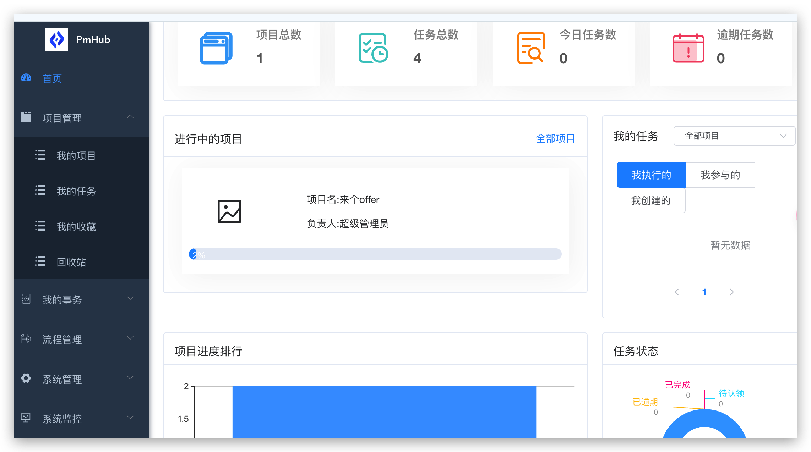
平常用什么编程语言？
大一上先学习的 C 语言，大一下半学期开始学习 Java，中间还学过一些 Python 和 JavaScript，但整体的感受上来说还是更喜欢 Java。
因为它可以做的事情太多了，既可以用它来写 Web 后端服务，也可以用它来造一些轮子，比如 MYDB 这个轮子，就是用 Java 完成的，不进加深了我对 MySQL索引、事务、MVCC 的理解，还让我对 Java 的 NIO、多线程、JVM 有了更深的了解。

平时是怎么学 Java 的？
一开始，主要是跟着学校的课程走，入门后感觉课程已经满足不了我的求知欲了，于是就开始在 B 站和 GitHub 上找一些优质的视频资源和开源知识库来学习。
比如说《Java 进阶之路》就很适合我的口味，从 Java 的语法、数组&字符串、OOP、集合框架、Java IO、异常处理、网络编程、NIO、并发编程、JVM 等，都有详细的讲解，还有很多手绘图和代码实例，我都跟着动手一步步实现了，感觉收获很大。
后来又读了一遍《Java 编程思想》、《Effective Java》，周志明老师的《深入理解 Java 虚拟机》，以及 JDK 的一些源码，比如说 String、HashMap，还有字节码方面的知识。
再后来就开始做实战项目 MYDB、技术派、PmHub，算是彻底掌握 Java 项目的开发流程了。
Java 语言和 C 语言有哪些区别？
Java 是一种跨平台的编程语言，通过在不同操作系统上安装对应版本的 JVM 以实现“一次编译，处处运行”的目的。而 C 语言需要在不同的操作系统上重新编译。
Java 实现了内存的自动管理，而 C 语言需要使用 malloc 和 free 来手动管理内存。
2.Java 语言有哪些特点？
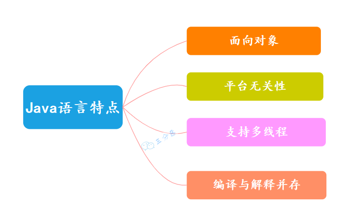
Java 语言的特点有：
- 面向对象。主要是封装，继承，多态。
- 平台无关性。“一次编写，到处运行”，因此采用 Java 语言编写的程序具有很好的可移植性。
- 支持多线程。C++ 语言没有内置的多线程机制，因此必须调用操作系统的 API 来完成多线程程序设计，而 Java 却提供了封装好多线程支持；
- 支持 JIT 编译，也就是即时编译器，它可以在程序运行时将字节码转换为热点机器码来提高程序的运行速度。
- 丰富而完善的工具库。
- 基础类库等；
- 组件、框架类库等；
- 社区建设很完善。
- 版本更新及时
- 社区活跃度高
- 强大的用户群体
- 几乎所有遇到的问题都可以得到解决
3.JVM、JDK 和 JRE 有什么区别？

JVM：也就是 Java 虚拟机，是 Java 实现跨平台的关键所在，不同的操作系统有不同的 JVM 实现。JVM 负责将 Java 字节码转换为特定平台的机器码，并执行。
JRE：也就是 Java 运行时环境，包含了运行 Java 程序所必需的库，以及 JVM。
JDK：一套完整的 Java SDK，包括 JRE，编译器 javac、Java 文档生成工具 javadoc、Java 字节码工具 javap 等。为开发者提供了开发、编译、调试 Java 程序的一整套环境。
简单来说，JDK 包含 JRE，JRE 包含 JVM。
4.说说什么是跨平台？原理是什么
所谓的跨平台，是指 Java 语言编写的程序，一次编译后，可以在多个操作系统上运行。
原理是增加了一个中间件 JVM，JVM 负责将 Java 字节码转换为特定平台的机器码，并执行。
5.什么是字节码？采用字节码的好处是什么?
所谓的字节码，就是 Java 程序经过编译后产生的 .class 文件。
Java 程序从源代码到运行需要经过三步：
- 编译：将源代码文件 .java 编译成 JVM 可以识别的字节码文件 .class
- 解释：JVM 执行字节码文件，将字节码翻译成操作系统能识别的机器码
- 执行：操作系统执行二进制的机器码
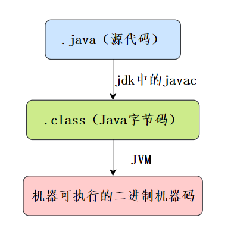
6.为什么有人说 Java 是“编译与解释并存”的语言？
编译型语言是指编译器针对特定的操作系统，将源代码一次性翻译成可被该平台执行的机器码。
解释型语言是指解释器对源代码进行逐行解释，解释成特定平台的机器码并执行。
举个例子，我想读一本国外的小说，我有两种选择：
- 找个翻译，等翻译将小说全部都翻译成汉语，一次性读完。
- 找个翻译，翻译一段我读一段，慢慢把书读完。
之所以有人说 Java 是“编译与解释并存”的语言，是因为 Java 程序需要先将 Java 源代码文件编译字节码文件，再解释执行。
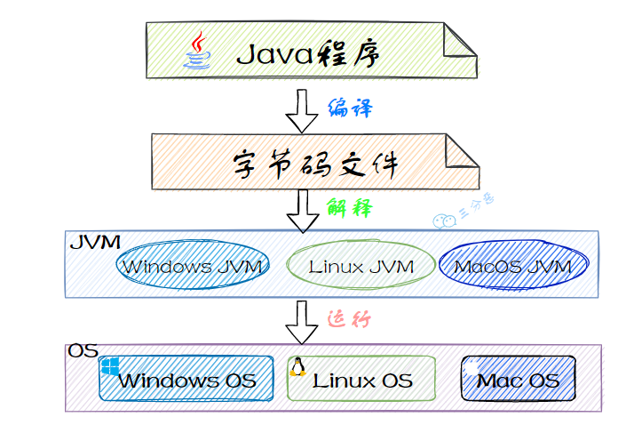
基础语法
7.Java 有哪些数据类型？
推荐阅读 1：Java 的数据类型 推荐阅读 2：面试官竟然问我这么简单的题目：Java 中 boolean 占多少字节？
Java 的数据类型可以分为两种：基本数据类型和引用数据类型。

基本数据类型有：
①、数值型
- 整数类型（byte、short、int、long）
- 浮点类型（float、double）
②、字符型（char）
③、布尔型（boolean）
它们的默认值和占用大小如下所示：
| 数据类型 | 默认值 | 大小 |
|---|---|---|
| boolean | false | 1 字节或 4 字节 |
| char | '\u0000' | 2 字节 |
| byte | 0 | 1 字节 |
| short | 0 | 2 字节 |
| int | 0 | 4 字节 |
| long | 0L | 8 字节 |
| float | 0.0f | 4 字节 |
| double | 0.0 | 8 字节 |
引用数据类型有：
boolean 类型实际占用几个字节？
这要依据具体的 JVM 实现细节。Java 虚拟机规范中，并没有明确规定 boolean 类型的大小，只规定了 boolean 类型的取值 true 或 false。
boolean: The boolean data type has only two possible values: true and false. Use this data type for simple flags that track true/false conditions. This data type represents one bit of information, but its "size" isn't something that's precisely defined.
我本机的 64 位 JDK 中，通过 JOL 工具查看单独的 boolean 类型，以及 boolean 数组，所占用的空间都是 1 个字节。
给Integer最大值+1，是什么结果？
当给 Integer.MAX_VALUE 加 1 时，会发生溢出，变成 Integer.MIN_VALUE。
int maxValue = Integer.MAX_VALUE;
System.out.println("Integer.MAX_VALUE = " + maxValue); // Integer.MAX_VALUE = 2147483647
System.out.println("Integer.MAX_VALUE + 1 = " + (maxValue + 1)); // Integer.MAX_VALUE + 1 = -2147483648
// 用二进制来表示最大值和最小值
System.out.println("Integer.MAX_VALUE in binary: " + Integer.toBinaryString(maxValue)); // Integer.MAX_VALUE in binary: 1111111111111111111111111111111
System.out.println("Integer.MIN_VALUE in binary: " + Integer.toBinaryString(Integer.MIN_VALUE)); // Integer.MIN_VALUE in binary: 10000000000000000000000000000000
这是因为 Java 的整数类型采用的是二进制补码表示法，溢出时值会变成最小值。
- Integer.MAX_VALUE 的二进制表示是 01111111 11111111 11111111 11111111（32 位）。
- 加 1 后结果变成 10000000 00000000 00000000 00000000，即 -2147483648（Integer.MIN_VALUE）。
8.自动类型转换、强制类型转换了解吗？
推荐阅读：聊聊基本数据类型的转换
当把一个范围较小的数值或变量赋给另外一个范围较大的变量时，会进行自动类型转换；反之，需要强制转换。
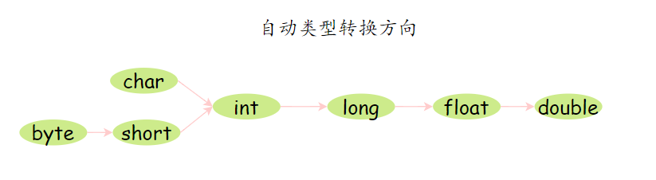
这就好像，小杯里的水倒进大杯没问题，但大杯的水倒进小杯就可能会溢出。
①、float f=3.4，对吗？
不正确。3.4 默认是双精度，将双精度赋值给浮点型属于下转型（down-casting，也称窄化）会造成精度丢失，因此需要强制类型转换float f =(float)3.4;或者写成float f =3.4F
②、short s1 = 1; s1 = s1 + 1；对吗？short s1 = 1; s1 += 1;对吗？
short s1 = 1; s1 = s1 + 1; 会编译出错，由于 1 是 int 类型，因此 s1+1 运算结果也是 int 型，需要强制转换类型才能赋值给 short 型。
而 short s1 = 1; s1 += 1;可以正确编译，因为 s1+= 1;相当于 s1 = (short(s1 + 1); 其中有隐含的强制类型转换。
9.什么是自动拆箱/装箱？
- 装箱：将基本数据类型转换为包装类型，例如 int 转换为 Integer。
- 拆箱：将包装类型转换为基本数据类型。

举例：
Integer i = 10; //装箱
int n = i; //拆箱
再换句话说，i 是 Integer 类型，n 是 int 类型；变量 i 是包装器类，变量 n 是基本数据类型。
- Java 面试指南（付费）收录的用友面试原题：对应有哪些包装器类？
- Java 面试指南（付费）收录的京东面经同学 8 面试原题：int和Integer的区别
10.&和&&有什么区别？
& 是 逻辑与。
&&是短路与运算。逻辑与跟短路与的差别是非常大的，虽然二者都要求运算符左右两端的布尔值都是 true，整个表达式的值才是 true。
&&之所以称为短路运算是因为，如果&&左边的表达式的值是 false，右边的表达式会直接短路掉，不会进行运算。
例如在验证用户登录时判定用户名不是 null 而且不是空字符串，应当写为username != null && !username.equals("")，二者的顺序不能交换，更不能用 & 运算符，因为第一个条件如果不成立，根本不能进行字符串的 equals 比较，会抛出 NullPointerException 异常。
注意：逻辑或运算符（|）和短路或运算符（||）的差别也是类似。
2024 年 12 月 23 日 更新到这里。
11.switch 语句能否用在 byte/long/String 类型上？
Java 5 以前 switch(expr) 中，expr 只能是 byte、short、char、int。
从 Java 5 开始，Java 中引入了枚举类型， expr 也可以是 enum 类型。
从 Java 7 开始，expr 还可以是字符串，但是长整型在目前所有的版本中都是不可以的。
12.break,continue,return 的区别及作用？
- break 跳出整个循环，不再执行循环(结束当前的循环体)
- continue 跳出本次循环，继续执行下次循环(结束正在执行的循环 进入下一个循环条件)
- return 程序返回，不再执行下面的代码(结束当前的方法 直接返回)

13.用效率最高的方法计算 2 乘以 8？
2 << 3。位运算，数字的二进制位左移三位相当于乘以 2 的三次方。
14.说说自增自减运算？
在写代码的过程中，常见的一种情况是需要某个整数类型变量增加 1 或减少 1，Java 提供了一种特殊的运算符，用于这种表达式，叫做自增运算符（++）和自减运算符（--）。
++和--运算符可以放在变量之前，也可以放在变量之后。
当运算符放在变量之前时(前缀)，先自增/减，再赋值；当运算符放在变量之后时(后缀)，先赋值，再自增/减。
例如，当 b = ++a 时，先自增（自己增加 1），再赋值（赋值给 b）；当 b = a++ 时，先赋值(赋值给 b)，再自增（自己增加 1）。也就是，++a 输出的是 a+1 的值，a++输出的是 a 值。
用一句口诀就是：“符号在前就先加/减，符号在后就后加/减”。
看一下这段代码运行结果？
int i = 1;
i = i++;
System.out.println(i);
答案是 1。有点离谱对不对。
对于 JVM 而言，它对自增运算的处理，是会先定义一个临时变量来接收 i 的值，然后进行自增运算，最后又将临时变量赋给了值为 2 的 i，所以最后的结果为 1。
相当于这样的代码：
int i = 1；
int temp = i;
i++；
i = temp;
System.out.println(i);
这段代码会输出什么？
int count = 0;
for(int i = 0;i < 100;i++)
{
count = count++;
}
System.out.println("count = "+count);
答案是 0。
和上面的题目一样的道理，同样是用了临时变量，count 实际是等于临时变量的值。
int autoAdd(int count)
{
int temp = count;
count = count + 1;
return temp;
}
15.float 是怎么表示小数的？（补充）
2024 年 04 月 21 日增补
推荐阅读：计算机系统基础（四）浮点数
float类型的小数在计算机中是通过 IEEE 754 标准的单精度浮点数格式来表示的。
$$ V = (-1)^S \times M \times 2^E $$
- S：符号位，0 代表正数，1 代表负数；
- M：尾数部分，用于表示数值的精度；比如说 ${1.25 * 2^2}$；1.25 就是尾数；
- R：基数，十进制中的基数是 10，二进制中的基数是 2；
- E：指数部分，例如 $10^{-1}$ 中的 -1 就是指数。
这种表示方法可以将非常大或非常小的数值用有限的位数表示出来，但这也意味着可能会有精度上的损失。
单精度浮点数占用 4 字节（32 位），这 32 位被分为三个部分：符号位、指数部分和尾数部分。

- 符号位（Sign bit）：1 位
- 指数部分（Exponent）：10 位
- 尾数部分（Mantissa，或 Fraction）：21 位
按照这个规则，将十进制数 25.125 转换为浮点数，转换过程是这样的：
- 整数部分：25 转换为二进制是 11001；
- 小数部分：0.125 转换为二进制是 0.001；
- 用二进制科学计数法表示：25.125 = $1.001001 \times 2^4$
符号位 S 是 0，表示正数；指数部分 E 是 4，转换为二进制是 100；尾数部分 M 是 1.001001。

使用浮点数时需要注意，由于精度的限制，进行数学运算时可能会遇到舍入误差，特别是连续运算累积误差可能会变得显著。
对于需要高精度计算的场景（如金融计算），可能需要考虑使用BigDecimal类来避免这种误差。
- Java 面试指南（付费）收录的帆软同学 3 Java 后端一面的原题：float 是怎么表示小数的
16.讲一下数据准确性高是怎么保证的？（补充）
2024 年 04 月 21 日增补
在金融计算中，保证数据准确性有两种方案，一种使用 BigDecimal，一种将浮点数转换为整数 int 进行计算。
肯定不能使用 float 和 double 类型，它们无法避免浮点数运算中常见的精度问题，因为这些数据类型采用二进制浮点数来表示，无法准确地表示，例如 0.1。
BigDecimal num1 = new BigDecimal("0.1");
BigDecimal num2 = new BigDecimal("0.2");
BigDecimal sum = num1.add(num2);
System.out.println("Sum of 0.1 and 0.2 using BigDecimal: " + sum); // 输出 0.3，精确计算
在处理小额支付或计算时，通过转换为较小的货币单位（如分），这样不仅提高了运算速度，还保证了计算的准确性。
int priceInCents = 199; // 商品价格199分
int quantity = 3;
int totalInCents = priceInCents * quantity; // 计算总价
System.out.println("Total price in cents: " + totalInCents); // 输出597分
- Java 面试指南（付费）收录的字节跳动同学 7 Java 后端实习一面的原题：讲一下数据准确性高是怎么保证的？
面向对象
17.⾯向对象和⾯向过程的区别?
面向过程是以过程为核心，通过函数完成任务，程序结构是函数+步骤组成的顺序流程。
面向对象是以对象为核心，通过对象交互完成任务，程序结构是类和对象组成的模块化结构，代码可以通过继承、组合、多态等方式复用。

在技术派实战项目中，像 VO、DTO 都是业务抽象后的对象实体类，而 Service、Controller 则是业务逻辑的实现，这其实就是面向对象的思想。

- Java 面试指南（付费）收录的快手同学 2 一面面试原题：面向对象和面向过程的区别？
- Java 面试指南（付费）收录的字节跳动同学 17 后端技术面试原题：面向对象 项目里有哪些面向对象的案例
18.面向对象编程有哪些特性？
推荐阅读：深入理解 Java 三大特性
面向对象编程有三大特性：封装、继承、多态。
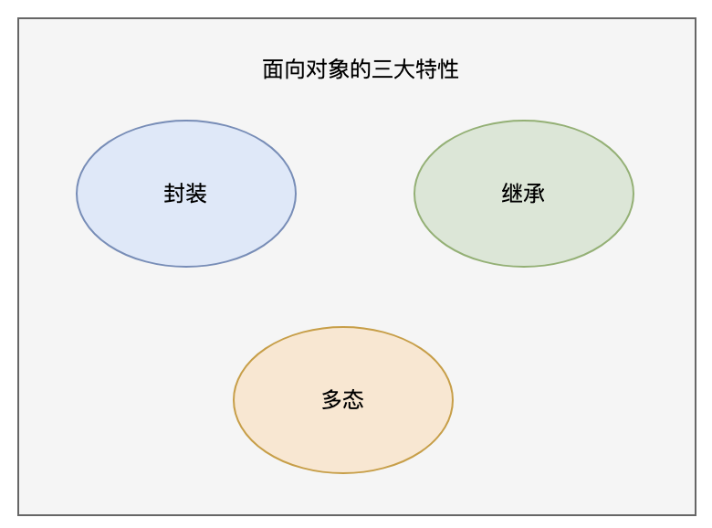
封装是什么？
封装是指将数据（属性，或者叫字段）和操作数据的方法（行为）捆绑在一起，形成一个独立的对象（类的实例）。
class Nvshen {
private String name;
private int age;
public void setName(String name) {
this.name = name;
}
public String getName() {
return name;
}
public void setAge(int age) {
this.age = age;
}
}
可以看得出，女神类对外没有提供 age 的 getter 方法，因为女神的年龄要保密。
所以，封装是把一个对象的属性私有化，同时提供一些可以被外界访问的方法。
继承是什么？
继承允许一个类（子类）继承现有类（父类或者基类）的属性和方法。以提高代码的复用性，建立类之间的层次关系。
同时，子类还可以重写或者扩展从父类继承来的属性和方法，从而实现多态。
class Person {
protected String name;
protected int age;
public void eat() {
System.out.println("吃饭");
}
}
class Student extends Person {
private String school;
public void study() {
System.out.println("学习");
}
}
Student 类继承了 Person 类的属性（name、age）和方法（eat），同时还有自己的属性（school）和方法（study）。
什么是多态？
多态允许不同类的对象对同一消息做出响应，但表现出不同的行为（即方法的多样性）。
多态其实是一种能力——同一个行为具有不同的表现形式；换句话说就是，执行一段代码，Java 在运行时能根据对象类型的不同产生不同的结果。
多态的前置条件有三个：
- 子类继承父类
- 子类重写父类的方法
- 父类引用指向子类的对象
//子类继承父类
class Wangxiaoer extends Wanger {
public void write() { // 子类重写父类方法
System.out.println("记住仇恨，表明我们要奋发图强的心智");
}
public static void main(String[] args) {
// 父类引用指向子类对象
Wanger wanger = new Wangxiaoer();
wanger.write();
}
}
class Wanger {
public void write() {
System.out.println("沉默王二是沙雕");
}
}
为什么Java里面要多组合少继承？
继承适合描述“is-a”的关系，但继承容易导致类之间的强耦合，一旦父类发生改变，子类也要随之改变，违背了开闭原则（尽量不修改现有代码，而是添加新的代码来实现）。
组合适合描述“has-a”或“can-do”的关系，通过在类中组合其他类，能够更灵活地扩展功能。组合避免了复杂的类继承体系，同时遵循了开闭原则和松耦合的设计原则。
举个例子，假设我们采用继承，每种形状和样式的组合都会导致类的急剧增加：
// 基类
class Shape {
public void draw() {
System.out.println("Drawing a shape");
}
}
// 圆形
class Circle extends Shape {
@Override
public void draw() {
System.out.println("Drawing a circle");
}
}
// 带红色的圆形
class RedCircle extends Circle {
@Override
public void draw() {
System.out.println("Drawing a red circle");
}
}
// 带绿色的圆形
class GreenCircle extends Circle {
@Override
public void draw() {
System.out.println("Drawing a green circle");
}
}
// 类似的，对于矩形也要创建多个类
class Rectangle extends Shape {
@Override
public void draw() {
System.out.println("Drawing a rectangle");
}
}
class RedRectangle extends Rectangle {
@Override
public void draw() {
System.out.println("Drawing a red rectangle");
}
}
组合模式更加灵活，可以将形状和颜色分开，松耦合。
// 形状接口
interface Shape {
void draw();
}
// 颜色接口
interface Color {
void applyColor();
}
形状干形状的事情。
// 圆形的实现
class Circle implements Shape {
private Color color; // 通过组合的方式持有颜色对象
public Circle(Color color) {
this.color = color;
}
@Override
public void draw() {
System.out.print("Drawing a circle with ");
color.applyColor(); // 调用颜色的逻辑
}
}
// 矩形的实现
class Rectangle implements Shape {
private Color color;
public Rectangle(Color color) {
this.color = color;
}
@Override
public void draw() {
System.out.print("Drawing a rectangle with ");
color.applyColor();
}
}
颜色干颜色的事情。
// 红色的实现
class RedColor implements Color {
@Override
public void applyColor() {
System.out.println("red color");
}
}
// 绿色的实现
class GreenColor implements Color {
@Override
public void applyColor() {
System.out.println("green color");
}
}
- Java 面试指南（付费）收录的国企零碎面经同学 9 面试原题：Java 面向对象的特性，分别怎么理解的
- Java 面试指南（付费）收录的美团面经同学 4 一面面试原题：Java 面向对象的特点
- Java 面试指南（付费）收录的字节跳动同学 20 测开一面的原题：讲一下 JAVA 的特性，什么是多态
- Java 面试指南（付费）收录的京东面经同学 7 Java 后端技术一面面试原题：面向对象三大特性
19.多态解决了什么问题？（补充）
2024 年 03 月 26 日增补
多态指同一个接口或方法在不同的类中有不同的实现，比如说动态绑定，父类引用指向子类对象，方法的具体调用会延迟到运行时决定。
举例，现在有一个父类 Wanger，一个子类 Wangxiaoer，都有一个 write 方法。现在有一个父类 Wanger 类型的变量 wanger，它在执行 wanger.write() 时，究竟调用父类 Wanger 的 write() 方法，还是子类 Wangxiaoer 的 write() 方法呢？
//子类继承父类
class Wangxiaoer extends Wanger {
public void write() { // 子类覆盖父类方法
System.out.println("记住仇恨，表明我们要奋发图强的心智");
}
public static void main(String[] args) {
// 父类引用指向子类对象
Wanger[] wangers = { new Wanger(), new Wangxiaoer() };
for (Wanger wanger : wangers) {
// 对象是王二的时候输出：勿忘国耻
// 对象是王小二的时候输出：记住仇恨，表明我们要奋发图强的心智
wanger.write();
}
}
}
class Wanger {
public void write() {
System.out.println("勿忘国耻");
}
}
答案是在运行时根据对象的类型进行后期绑定，编译器在编译阶段并不知道对象的类型，但是 Java 的方法调用机制能找到正确的方法体，然后执行，得到正确的结果，这就是多态的作用。
多态的实现原理是什么？
多态通过动态绑定实现，Java 使用虚方法表存储方法指针，方法调用时根据对象实际类型从虚方法表查找具体实现。

- Java 面试指南（付费）收录的华为面经同学 8 技术二面面试原题：多态的目的，解决了什么问题？
- Java 面试指南（付费）收录的美团面经同学 16 暑期实习一面面试原题：请说说多态、重载和重写
- Java 面试指南（付费）收录的字节跳动面经同学19番茄小说一面面试原题：多态的用法，多态的实现原理
20.重载和重写的区别？
推荐阅读：方法重写 Override 和方法重载 Overload 有什么区别？
如果一个类有多个名字相同但参数个数不同的方法，我们通常称这些方法为方法重载（overload）。如果方法的功能是一样的，但参数不同，使用相同的名字可以提高程序的可读性。
如果子类具有和父类一样的方法（参数相同、返回类型相同、方法名相同，但方法体可能不同），我们称之为方法重写（override）。方法重写用于提供父类已经声明的方法的特殊实现，是实现多态的基础条件。
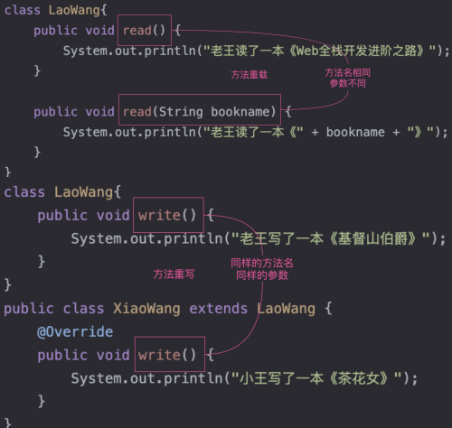
- 方法重载发生在同一个类中，同名的方法如果有不同的参数（参数类型不同、参数个数不同或者二者都不同）。
- 方法重写发生在子类与父类之间，要求子类与父类具有相同的返回类型，方法名和参数列表，并且不能比父类的方法声明更多的异常，遵守里氏代换原则。
什么是里氏代换原则？
里氏代换原则也被称为李氏替换原则（Liskov Substitution Principle, LSP），其规定任何父类可以出现的地方，子类也一定可以出现。

LSP 是继承复用的基石，只有当子类可以替换掉父类，并且单位功能不受到影响时，父类才能真正被复用，而子类也能够在父类的基础上增加新的行为。
这意味着子类在扩展父类时，不应改变父类原有的行为。例如，如果有一个方法接受一个父类对象作为参数，那么传入该方法的任何子类对象也应该能正常工作。
class Bird {
void fly() {
System.out.println("鸟正在飞");
}
}
class Duck extends Bird {
@Override
void fly() {
System.out.println("鸭子正在飞");
}
}
class Ostrich extends Bird {
// Ostrich违反了LSP，因为鸵鸟不会飞，但却继承了会飞的鸟类
@Override
void fly() {
throw new UnsupportedOperationException("鸵鸟不会飞");
}
}
在这个例子中，Ostrich（鸵鸟）类违反了 LSP 原则，因为它改变了父类 Bird 的行为（即飞行）。设计时应该更加谨慎地使用继承关系，确保遵守 LSP 原则。
除了李氏替换原则外，还有其他几个重要的面向对象设计原则，它们共同构成了 SOLID 原则，分别是：
①、单一职责原则（Single Responsibility Principle, SRP），指一个类应该只有一个引起它变化的原因，即一个类只负责一项职责。这样做的目的是使类更加清晰，更容易理解和维护。
②、开闭原则（Open-Closed Principle, OCP），指软件实体应该对扩展开放，对修改关闭。这意味着一个类应该通过扩展来实现新的功能，而不是通过修改已有的代码来实现。
举个例子，在不遵守开闭原则的情况下，有一个需要处理不同形状的绘图功能类。
class ShapeDrawer {
public void draw(Shape shape) {
if (shape instanceof Circle) {
drawCircle((Circle) shape);
} else if (shape instanceof Rectangle) {
drawRectangle((Rectangle) shape);
}
}
private void drawCircle(Circle circle) {
// 画圆形
}
private void drawRectangle(Rectangle rectangle) {
// 画矩形
}
}
每增加一种形状，就需要修改一次 draw 方法，这违反了开闭原则。正确的做法是通过继承和多态来实现新的形状类，然后在 ShapeDrawer 中添加新的 draw 方法。
// 抽象的 Shape 类
abstract class Shape {
public abstract void draw();
}
// 具体的 Circle 类
class Circle extends Shape {
@Override
public void draw() {
// 画圆形
}
}
// 具体的 Rectangle 类
class Rectangle extends Shape {
@Override
public void draw() {
// 画矩形
}
}
// 使用开闭原则的 ShapeDrawer 类
class ShapeDrawer {
public void draw(Shape shape) {
shape.draw(); // 调用多态的 draw 方法
}
}
③、接口隔离原则（Interface Segregation Principle, ISP），指客户端不应该依赖它不需要的接口。这意味着设计接口时应该尽量精简，不应该设计臃肿庞大的接口。
④、依赖倒置原则（Dependency Inversion Principle, DIP），指高层模块不应该依赖低层模块，二者都应该依赖其抽象；抽象不应该依赖细节，细节应该依赖抽象。这意味着设计时应该尽量依赖接口或抽象类，而不是实现类。
- Java 面试指南（付费）收录的帆软同学 3 Java 后端一面的原题：设计方法，李氏原则，还了解哪些设计原则
- Java 面试指南（付费）收录的美团面经同学 16 暑期实习一面面试原题：请说说多态、重载和重写
- Java 面试指南（付费）收录的招银网络科技面经同学 9 Java 后端技术一面面试原题：Java设计模式中的开闭原则，里氏替换了解嘛
21.访问修饰符 public、private、protected、以及默认时的区别？
Java 中，可以使用访问控制符来保护对类、变量、方法和构造方法的访问。Java 支持 4 种不同的访问权限。
- default （即默认，什么也不写）: 在同一包内可见，不使用任何修饰符。可以修饰在类、接口、变量、方法。
- private : 在同一类内可见。可以修饰变量、方法。注意：不能修饰类（外部类）
- public : 对所有类可见。可以修饰类、接口、变量、方法
- protected : 对同一包内的类和所有子类可见。可以修饰变量、方法。注意：不能修饰类（外部类）。
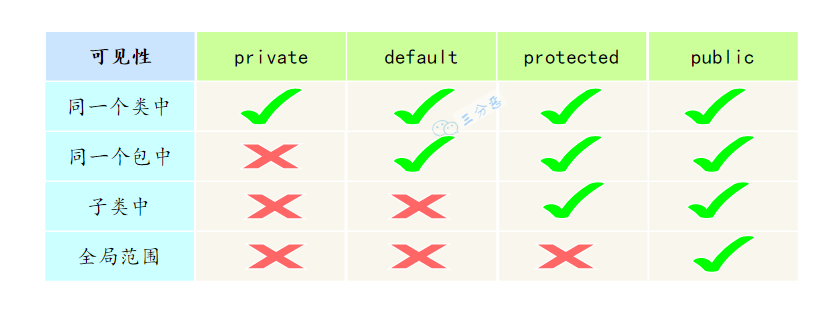
22.this 关键字有什么作用？
this 是自身的一个对象，代表对象本身，可以理解为：指向对象本身的一个指针。
this 的用法在 Java 中大体可以分为 3 种：
-
普通的直接引用，this 相当于是指向当前对象本身
-
形参与成员变量名字重名，用 this 来区分：
public Person(String name,int age){
this.name=name;
this.age=age;
}
- 引用本类的构造方法
23.抽象类和接口有什么区别？
一个类只能继承一个抽象类；但一个类可以实现多个接口。所以我们在新建线程类的时候一般推荐使用实现 Runnable 接口的方式，这样线程类还可以继承其他类，而不单单是 Thread 类。
抽象类符合 is-a 的关系，而接口更像是 has-a 的关系，比如说一个类可以序列化的时候，它只需要实现 Serializable 接口就可以了，不需要去继承一个序列化类。
抽象类更多地是用来为多个相关的类提供一个共同的基础框架，包括状态的初始化，而接口则是定义一套行为标准，让不同的类可以实现同一接口，提供行为的多样化实现。
抽象类可以定义构造方法吗？
可以，抽象类可以有构造方法。
abstract class Animal {
protected String name;
public Animal(String name) {
this.name = name;
}
public abstract void makeSound();
}
public class Dog extends Animal {
private int age;
public Dog(String name, int age) {
super(name); // 调用抽象类的构造函数
this.age = age;
}
@Override
public void makeSound() {
System.out.println(name + " says: Bark");
}
}
接口可以定义构造方法吗？
不能，接口主要用于定义一组方法规范，没有具体的实现细节。

Java支持多继承吗？
Java 不支持多继承，一个类只能继承一个类，多继承会引发菱形继承问题。
class A {
void show() { System.out.println("A"); }
}
class B extends A {
void show() { System.out.println("B"); }
}
class C extends A {
void show() { System.out.println("C"); }
}
// 如果 Java 支持多继承
class D extends B, C {
// 调用 show() 方法时，D 应该调用 B 的 show() 还是 C 的 show()？
}
接口可以多继承吗？
接口可以多继承，一个接口可以继承多个接口，使用逗号分隔。
interface InterfaceA {
void methodA();
}
interface InterfaceB {
void methodB();
}
interface InterfaceC extends InterfaceA, InterfaceB {
void methodC();
}
class MyClass implements InterfaceC {
public void methodA() {
System.out.println("Method A");
}
public void methodB() {
System.out.println("Method B");
}
public void methodC() {
System.out.println("Method C");
}
public static void main(String[] args) {
MyClass myClass = new MyClass();
myClass.methodA();
myClass.methodB();
myClass.methodC();
}
}
在上面的例子中，InterfaceA 和 InterfaceB 是两个独立的接口。
InterfaceC 继承了 InterfaceA 和 InterfaceB，并且定义了自己的方法 methodC。
MyClass 实现了 InterfaceC，因此需要实现 InterfaceA 和 InterfaceB 中的方法 methodA 和 methodB，以及 InterfaceC 中的方法 methodC。
继承和抽象的区别？
继承是一种允许子类继承父类属性和方法的机制。通过继承，子类可以重用父类的代码。
抽象是一种隐藏复杂性和只显示必要部分的技术。在面向对象编程中，抽象可以通过抽象类和接口实现。
抽象类和普通类的区别？
抽象类使用 abstract 关键字定义，不能被实例化，只能作为其他类的父类。普通类没有 abstract 关键字，可以直接实例化。
抽象类可以包含抽象方法和非抽象方法。抽象方法没有方法体，必须由子类实现。普通类智能包含非抽象方法。
abstract class Animal {
// 抽象方法
public abstract void makeSound();
// 非抽象方法
public void eat() {
System.out.println("This animal is eating.");
}
}
class Dog extends Animal {
// 实现抽象方法
@Override
public void makeSound() {
System.out.println("Woof");
}
}
public class Test {
public static void main(String[] args) {
Dog dog = new Dog();
dog.makeSound(); // 输出 "Woof"
dog.eat(); // 输出 "This animal is eating."
}
}
24.成员变量与局部变量的区别有哪些？
-
从语法形式上看：成员变量是属于类的，⽽局部变量是在⽅法中定义的变量或是⽅法的参数；成员变量可以被 public , private , static 等修饰符所修饰，⽽局部变量不能被访问控制修饰符及 static 所修饰；但是，成员变量和局部变量都能被 final 所修饰。
-
从变量在内存中的存储⽅式来看：如果成员变量是使⽤ static 修饰的，那么这个成员变量是属于类的，如果没有使⽤ static 修饰，这个成员变量是属于实例的。对象存于堆内存，如果局部变量类型为基本数据类型，那么存储在栈内存，如果为引⽤数据类型，那存放的是指向堆内存对象的引⽤或者是指向常量池中的地址。
-
从变量在内存中的⽣存时间上看：成员变量是对象的⼀部分，它随着对象的创建⽽存在，⽽局部变量随着⽅法的调⽤⽽⾃动消失。
-
成员变量如果没有被赋初值：则会⾃动以类型的默认值⽽赋值（⼀种情况例外:被 final 修饰的成员变量也必须显式地赋值），⽽局部变量则不会⾃动赋值。
25.static 关键字了解吗？
static 关键字可以用来修饰变量、方法、代码块和内部类，以及导入包。
| 修饰对象 | 作用 |
|---|---|
| 变量 | 静态变量，类级别变量，所有实例共享同一份数据。 |
| 方法 | 静态方法，类级别方法，与实例无关。 |
| 代码块 | 在类加载时初始化一些数据，只执行一次。 |
| 内部类 | 与外部类绑定但独立于外部类实例。 |
| 导入 | 可以直接访问静态成员，无需通过类名引用，简化代码书写，但会降低代码可读性。 |
静态变量和实例变量的区别？
静态变量: 是被 static 修饰符修饰的变量，也称为类变量，它属于类，不属于类的任何一个对象，一个类不管创建多少个对象，静态变量在内存中有且仅有一个副本。
实例变量: 必须依存于某一实例，需要先创建对象然后通过对象才能访问到它。静态变量可以实现让多个对象共享内存。
静态⽅法和实例⽅法有何不同?
类似地。
静态方法：static 修饰的方法，也被称为类方法。在外部调⽤静态⽅法时，可以使⽤"类名.⽅法名"的⽅式，也可以使⽤"对象名.⽅法名"的⽅式。静态方法里不能访问类的非静态成员变量和方法。
实例⽅法：依存于类的实例，需要使用"对象名.⽅法名"的⽅式调用；可以访问类的所有成员变量和方法。
26.final 关键字有什么作用？
可以用来修饰类、方法、变量等：
- 修饰类时， 表明类不能被继承；
- 修饰方法时，表明方法不能被Override（即重写或覆盖）；
- 修饰变量时，表明变量的值不能被改变；
- 修饰引用类型的变量时，表明这个引用类型的变量不能再指向别的对象；至于引用类型指向的对象的内容，是可以随着对象的变化而变化的；
27.final、finally、finalize 的区别？
- 相同点： 三个都属于Java的关键字；
- 不同点：
- final 用来修饰类、方法、变量等；修饰类时，类不可被改变；修饰方法时，方法不能被Override（重写或覆盖）；修饰变量时，变量的值不能被改变（引用类型不能改变指向的内容）；
- finally是异常处理时使用的关键字，常和try块一起搭配使用。无论try是否抛出异常，finally块都会被执行，常用来资源的关闭；
- finalize是超类Object的一个方法，用于垃圾回收时的对象的回收；这个方法是由jvm中负责垃圾回收的线程自动调用的，日常开发中很少使用到；
28.==和 equals 的区别？
在 Java 中，== 操作符和 equals() 方法用于比较两个对象：
①、==：用于比较两个对象的引用，即它们是否指向同一个对象实例。
如果两个变量引用同一个对象实例，== 返回 true，否则返回 false。
对于基本数据类型（如 int, double, char 等），== 比较的是值是否相等。
②、equals() 方法：用于比较两个对象的内容是否相等。默认情况下，equals() 方法的行为与 == 相同，即比较对象引用，如在超类 Object 中：
public boolean equals(Object obj) {
return (this == obj);
}
然而，equals() 方法通常被各种类重写。例如，String 类重写了 equals() 方法，以便它可以比较两个字符串的字符内容是否完全一样。

举个例子：
String a = new String("沉默王二");
String b = new String("沉默王二");
// 使用 == 比较
System.out.println(a == b); // 输出 false，因为 a 和 b 引用不同的对象
// 使用 equals() 比较
System.out.println(a.equals(b)); // 输出 true，因为 a 和 b 的内容相同
- Java 面试指南（付费）收录的小公司面经合集同学 1 Java 后端面试原题：==和 equals()有什么区别？
- Java 面试指南（付费）收录的 小公司面经合集好未来测开面经同学 3 测开一面面试原题：==和 equals 的区别
29.为什么重写 equals 时必须重写 hashCode ⽅法？
因为基于哈希的集合类（如 HashMap）需要基于这一点来正确存储和查找对象。
具体地说，HashMap 通过对象的哈希码将其存储在不同的“桶”中，当查找对象时，它需要使用 key 的哈希码来确定对象在哪个桶中，然后再通过 equals() 方法找到对应的对象。
如果重写了 equals()方法而没有重写 hashCode()方法，那么被认为相等的对象可能会有不同的哈希码，从而导致无法在 HashMap 中正确处理这些对象。
什么是 hashCode 方法？
hashCode() 方法的作⽤是获取哈希码，它会返回⼀个 int 整数，定义在 Object 类中， 是一个本地⽅法。
public native int hashCode();
为什么要有 hashCode 方法？
hashCode 方法主要用来获取对象的哈希码，哈希码是由对象的内存地址或者对象的属性计算出来的，它是⼀个 int 类型的整数，通常是不会重复的，因此可以用来作为键值对的建，以提高查询效率。
例如 HashMap 中的 key 就是通过 hashCode 来实现的，通过调用 hashCode 方法获取键的哈希码，并将其与右移 16 位的哈希码进行异或运算。
static final int hash(Object key) {
int h;
return (key == null) ? 0 : (h = key.hashCode()) ^ (h >>> 16);
}
为什么两个对象有相同的 hashcode 值，它们也不⼀定相等？
这主要是由于哈希码（hashCode）的本质和目的所决定的。
哈希码是通过哈希函数将对象中映射成一个整数值，其主要目的是在哈希表中快速定位对象的存储位置。
由于哈希函数将一个较大的输入域映射到一个较小的输出域，不同的输入值（即不同的对象）可能会产生相同的输出值（即相同的哈希码）。
这种情况被称为哈希冲突。当两个不相等的对象发生哈希冲突时，它们会有相同的 hashCode。
为了解决哈希冲突的问题，哈希表在处理键时，不仅会比较键对象的哈希码，还会使用 equals 方法来检查键对象是否真正相等。如果两个对象的哈希码相同，但通过 equals 方法比较结果为 false，那么这两个对象就不被视为相等。
if (p.hash == hash &&
((k = p.key) == key || (key != null && key.equals(k))))
e = p;
hashCode 和 equals 方法的关系？
如果两个对象通过 equals 相等，它们的 hashCode 必须相等。否则会导致哈希表类数据结构（如 HashMap、HashSet）的行为异常。
在哈希表中，如果 equals 相等但 hashCode 不相等，哈希表可能无法正确处理这些对象，导致重复元素或键值冲突等问题。
30.Java 是值传递，还是引用传递？
值传递。即便是引用对象，传递的也是这个引用指向的对象的地址。例如，把一个对象作为参数传递给一个方法，方法实际上接收到的参数是这个对象的引用的地址。
引用类型的变量有什么特点？
从jvm的角度回答。
引用类型在内存中同时具有两块存储区域，一块是句柄，里面存放着引用类型所引用的对象的位置；另一块则是这个对应在内存中的存储区域，里面存放着对象的属性和方法；操作数栈和对象池；
引用类型的变量在jvm进行垃圾回收时，在经过二次标记之后依然存在引用，则可以逃脱回收。
引用类型的变量存储的是对象的地址，而不是对象本身。因此，引用类型的变量在传递时，传递的是对象的地址，也就是说，传递的是引用的值。
31.说说深拷贝和浅拷贝的区别?
推荐阅读：深入理解 Java 浅拷贝与深拷贝
在 Java 中，深拷贝（Deep Copy）和浅拷贝（Shallow Copy）是两种拷贝对象的方式，它们在拷贝对象的方式上有很大不同。
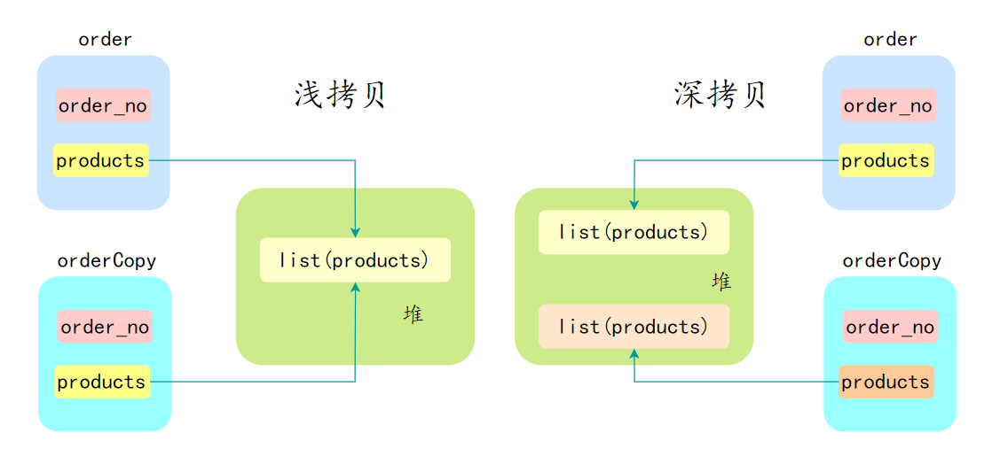
浅拷贝会创建一个新对象，但这个新对象的属性（字段）和原对象的属性完全相同。如果属性是基本数据类型，拷贝的是基本数据类型的值；如果属性是引用类型，拷贝的是引用地址，因此新旧对象共享同一个引用对象。
浅拷贝的实现方式为：实现 Cloneable 接口并重写 clone() 方法。
class Person implements Cloneable {
String name;
int age;
Address address;
public Person(String name, int age, Address address) {
this.name = name;
this.age = age;
this.address = address;
}
@Override
protected Object clone() throws CloneNotSupportedException {
return super.clone();
}
}
class Address {
String city;
public Address(String city) {
this.city = city;
}
}
public class Main {
public static void main(String[] args) throws CloneNotSupportedException {
Address address = new Address("河南省洛阳市");
Person person1 = new Person("沉默王二", 18, address);
Person person2 = (Person) person1.clone();
System.out.println(person1.address == person2.address); // true
}
}
深拷贝也会创建一个新对象，但会递归地复制所有的引用对象，确保新对象和原对象完全独立。新对象与原对象的任何更改都不会相互影响。
深拷贝的实现方式有：手动复制所有的引用对象，或者使用序列化与反序列化。
①、手动拷贝
class Person {
String name;
int age;
Address address;
public Person(String name, int age, Address address) {
this.name = name;
this.age = age;
this.address = address;
}
public Person(Person person) {
this.name = person.name;
this.age = person.age;
this.address = new Address(person.address.city);
}
}
class Address {
String city;
public Address(String city) {
this.city = city;
}
}
public class Main {
public static void main(String[] args) {
Address address = new Address("河南省洛阳市");
Person person1 = new Person("沉默王二", 18, address);
Person person2 = new Person(person1);
System.out.println(person1.address == person2.address); // false
}
}
②、序列化与反序列化
import java.io.*;
class Person implements Serializable {
String name;
int age;
Address address;
public Person(String name, int age, Address address) {
this.name = name;
this.age = age;
this.address = address;
}
public Person deepClone() throws IOException, ClassNotFoundException {
ByteArrayOutputStream bos = new ByteArrayOutputStream();
ObjectOutputStream oos = new ObjectOutputStream(bos);
oos.writeObject(this);
ByteArrayInputStream bis = new ByteArrayInputStream(bos.toByteArray());
ObjectInputStream ois = new ObjectInputStream(bis);
return (Person) ois.readObject();
}
}
class Address implements Serializable {
String city;
public Address(String city) {
this.city = city;
}
}
public class Main {
public static void main(String[] args) throws IOException, ClassNotFoundException {
Address address = new Address("河南省洛阳市");
Person person1 = new Person("沉默王二", 18, address);
Person person2 = person1.deepClone();
System.out.println(person1.address == person2.address); // false
}
}
- Java 面试指南（付费）收录的阿里面经同学 7 高德地图技术一面面试原题：浅拷贝和深拷贝
32.Java 创建对象有哪几种方式？

Java 有四种创建对象的方式：
①、new 关键字创建，这是最常见和直接的方式，通过调用类的构造方法来创建对象。
Person person = new Person();
②、反射机制创建，反射机制允许在运行时创建对象，并且可以访问类的私有成员，在框架和工具类中比较常见。
Class clazz = Class.forName("Person");
Person person = (Person) clazz.newInstance();
③、clone 拷贝创建，通过 clone 方法创建对象，需要实现 Cloneable 接口并重写 clone 方法。
Person person = new Person();
Person person2 = (Person) person.clone();
④、序列化机制创建，通过序列化将对象转换为字节流，再通过反序列化从字节流中恢复对象。需要实现 Serializable 接口。
Person person = new Person();
ObjectOutputStream oos = new ObjectOutputStream(new FileOutputStream("person.txt"));
oos.writeObject(person);
ObjectInputStream ois = new ObjectInputStream(new FileInputStream("person.txt"));
Person person2 = (Person) ois.readObject();
new 子类的时候，子类和父类静态代码块，构造方法的执行顺序
在 Java 中，当创建一个子类对象时，子类和父类的静态代码块、构造方法的执行顺序遵循一定的规则。这些规则主要包括以下几个步骤：
- 首先执行父类的静态代码块（仅在类第一次加载时执行）。
- 接着执行子类的静态代码块（仅在类第一次加载时执行）。
- 再执行父类的构造方法。
- 最后执行子类的构造方法。
下面是一个详细的代码示例：
class Parent {
// 父类静态代码块
static {
System.out.println("父类静态代码块");
}
// 父类构造方法
public Parent() {
System.out.println("父类构造方法");
}
}
class Child extends Parent {
// 子类静态代码块
static {
System.out.println("子类静态代码块");
}
// 子类构造方法
public Child() {
System.out.println("子类构造方法");
}
}
public class Main {
public static void main(String[] args) {
new Child();
}
}
执行上述代码时，输出结果如下：
父类静态代码块
子类静态代码块
父类构造方法
子类构造方法
- 静态代码块：在类加载时执行，仅执行一次，按父类-子类的顺序执行。
- 构造方法：在每次创建对象时执行，按父类-子类的顺序执行，先初始化块后构造方法。
- Java 面试指南（付费）收录的京东面经同学 2 后端面试原题：new 子类的时候，子类和父类静态代码块，构造方法的执行顺序
String
33.String 是 Java 基本数据类型吗？可以被继承吗？
不是，String 是一个类，属于引用数据类型。Java 的基本数据类型包括八种：四种整型（byte、short、int、long）、两种浮点型（float、double）、一种字符型（char）和一种布尔型（boolean）。
String 类可以继承吗？
不行。String 类使用 final 修饰，是所谓的不可变类，无法被继承。
String 有哪些常用方法？
我自己常用的有：
length()- 返回字符串的长度。charAt(int index)- 返回指定位置的字符。substring(int beginIndex, int endIndex)- 返回字符串的一个子串，从beginIndex到endIndex-1。contains(CharSequence s)- 检查字符串是否包含指定的字符序列。equals(Object anotherObject)- 比较两个字符串的内容是否相等。indexOf(int ch)和indexOf(String str)- 返回指定字符或字符串首次出现的位置。replace(char oldChar, char newChar)和replace(CharSequence target, CharSequence replacement)- 替换字符串中的字符或字符序列。trim()- 去除字符串两端的空白字符。split(String regex)- 根据给定正则表达式的匹配拆分此字符串。
34.String 和 StringBuilder、StringBuffer 的区别？
推荐阅读：StringBuffer 和 StringBuilder 两兄弟
String、StringBuilder和StringBuffer在 Java 中都是用于处理字符串的，它们之间的区别是，String 是不可变的，平常开发用得最多，当遇到大量字符串连接时，就用 StringBuilder，它不会生成很多新的对象，StringBuffer 和 StringBuilder 类似，但每个方法上都加了 synchronized 关键字，所以是线程安全的。
请说说 String 的特点
String类的对象是不可变的。也就是说，一旦一个String对象被创建，它所包含的字符串内容是不可改变的。- 每次对
String对象进行修改操作（如拼接、替换等）实际上都会生成一个新的String对象，而不是修改原有对象。这可能会导致内存和性能开销，尤其是在大量字符串操作的情况下。
请说说 StringBuilder 的特点
StringBuilder提供了一系列的方法来进行字符串的增删改查操作，这些操作都是直接在原有字符串对象的底层数组上进行的，而不是生成新的 String 对象。StringBuilder不是线程安全的。这意味着在没有外部同步的情况下，它不适用于多线程环境。- 相比于
String，在进行频繁的字符串修改操作时，StringBuilder能提供更好的性能。 Java 中的字符串连+操作其实就是通过StringBuilder实现的。
请说说 StringBuffer 的特点
StringBuffer和StringBuilder类似，但StringBuffer是线程安全的，方法前面都加了synchronized关键字。
请总结一下使用场景
- String：适用于字符串内容不会改变的场景，比如说作为 HashMap 的 key。
- StringBuilder：适用于单线程环境下需要频繁修改字符串内容的场景，比如在循环中拼接或修改字符串，是 String 的完美替代品。
- StringBuffer：现在已经不怎么用了，因为一般不会在多线程场景下去频繁的修改字符串内容。
35.String str1 = new String("abc") 和 String str2 = "abc" 的区别？
直接使用双引号为字符串变量赋值时，Java 首先会检查字符串常量池中是否已经存在相同内容的字符串。
如果存在，Java 就会让新的变量引用池中的那个字符串；如果不存在，它会创建一个新的字符串，放入池中，并让变量引用它。
使用 new String("abc") 的方式创建字符串时，实际分为两步：
- 第一步，先检查字符串字面量 "abc" 是否在字符串常量池中，如果没有则创建一个；如果已经存在，则引用它。
- 第二步，在堆中再创建一个新的字符串对象，并将其初始化为字符串常量池中 "abc" 的一个副本。

也就是说：
String s1 = "沉默王二";
String s2 = "沉默王二";
String s3 = new String("沉默王二");
System.out.println(s1 == s2); // 输出 true，因为 s1 和 s2 引用的是字符串常量池中同一个对象。
System.out.println(s1 == s3); // 输出 false，因为 s3 是通过 new 关键字显式创建的，指向堆上不同的对象。
String s = new String("abc")创建了几个对象？
字符串常量池中如果之前已经有一个，则不再创建新的，直接引用；如果没有，则创建一个。
堆中肯定有一个，因为只要使用了 new 关键字，肯定会在堆中创建一个。
- Java 面试指南（付费）收录的小公司面经合集同学 1 Java 后端面试原题：String 变量直接赋值和构造方法赋值==比较相等吗？
36.String 是不可变类吗？字符串拼接是如何实现的？
String 是不可变的，这意味着一旦一个 String 对象被创建，其存储的文本内容就不能被改变。这是因为：
①、不可变性使得 String 对象在使用中更加安全。因为字符串经常用作参数传递给其他 Java 方法，例如网络连接、打开文件等。
如果 String 是可变的，这些方法调用的参数值就可能在不知不觉中被改变，从而导致网络连接被篡改、文件被莫名其妙地修改等问题。
②、不可变的对象因为状态不会改变，所以更容易进行缓存和重用。字符串常量池的出现正是基于这个原因。
当代码中出现相同的字符串字面量时，JVM 会确保所有的引用都指向常量池中的同一个对象，从而节约内存。
③、因为 String 的内容不会改变，所以它的哈希值也就固定不变。这使得 String 对象特别适合作为 HashMap 或 HashSet 等集合的键，因为计算哈希值只需要进行一次，提高了哈希表操作的效率。
字符串拼接是如何实现的？
因为 String 是不可变的，因此通过“+”操作符进行的字符串拼接，会生成新的字符串对象。
例如：
String a = "hello ";
String b = "world!";
String ab = a + b;
a 和 b 是通过双引号定义的，所以会在字符串常量池中，而 ab 是通过“+”操作符拼接的，所以会在堆中生成一个新的对象。

Java 8 时，JDK 对“+”号的字符串拼接进行了优化，Java 会在编译期基于 StringBuilder 的 append 方法进行拼接。
下面是通过 javap -verbose 命令反编译后的字节码，能清楚的看到 StringBuilder 的创建和 append 方法的调用。
stack=2, locals=4, args_size=1
0: ldc #2 // String hello
2: astore_1
3: ldc #3 // String world!
5: astore_2
6: new #4 // class java/lang/StringBuilder
9: dup
10: invokespecial #5 // Method java/lang/StringBuilder."<init>":()V
13: aload_1
14: invokevirtual #6 // Method java/lang/StringBuilder.append:(Ljava/lang/String;)Ljava/lang/StringBuilder;
17: aload_2
18: invokevirtual #6 // Method java/lang/StringBuilder.append:(Ljava/lang/String;)Ljava/lang/StringBuilder;
21: invokevirtual #7 // Method java/lang/StringBuilder.toString:()Ljava/lang/String;
24: astore_3
25: return
也就是说，上面的代码相当于：
String a = "hello ";
String b = "world!";
StringBuilder sb = new StringBuilder();
sb.append(a);
sb.append(b);
String ab = sb.toString();
因此，如果笼统地讲，通过加号拼接字符串时会创建多个 String 对象是不准确的。因为加号拼接在编译期还会创建一个 StringBuilder 对象，最终调用 toString() 方法的时候再返回一个新的 String 对象。
@Override
public String toString() {
// Create a copy, don't share the array
return new String(value, 0, count);
}
那除了使用 + 号来拼接字符串，还有 StringBuilder.append()、String.join() 等方式。
推荐阅读：如何拼接字符串？
如何保证 String 不可变？
第一，String 类内部使用一个私有的字符数组来存储字符串数据。这个字符数组在创建字符串时被初始化，之后不允许被改变。
private final char value[];
第二，String 类没有提供任何可以修改其内容的公共方法，像 concat 这些看似修改字符串的操作，实际上都是返回一个新创建的字符串对象，而原始字符串对象保持不变。
public String concat(String str) {
if (str.isEmpty()) {
return this;
}
int len = value.length;
int otherLen = str.length();
char buf[] = Arrays.copyOf(value, len + otherLen);
str.getChars(buf, len);
return new String(buf, true);
}
第三，String 类本身被声明为 final，这意味着它不能被继承。这防止了子类可能通过添加修改方法来改变字符串内容的可能性。
public final class String
- Java 面试指南（付费）收录的小米春招同学 K 一面面试原题：String 是可变的吗，为什么要设计为不可变
- Java 面试指南（付费）收录的美团同学 2 优选物流调度技术 2 面面试原题：String 不可变吗？为什么不可变？有什么好处？怎么保证不可变。
- Java 面试指南（付费）收录的京东面经同学 8 面试原题：字符串拼接
37.intern 方法有什么作用？
JDK 源码里已经对这个方法进行了说明：
* <p>
* When the intern method is invoked, if the pool already contains a
* string equal to this {@code String} object as determined by
* the {@link #equals(Object)} method, then the string from the pool is
* returned. Otherwise, this {@code String} object is added to the
* pool and a reference to this {@code String} object is returned.
* <p>
意思也很好懂：
- 如果当前字符串内容存在于字符串常量池（即 equals()方法为 true，也就是内容一样），直接返回字符串常量池中的字符串
- 否则，将此 String 对象添加到池中，并返回 String 对象的引用
Integer
38.Integer a= 127，Integer b = 127；Integer c= 128，Integer d = 128；相等吗?
- 推荐阅读：IntegerCache
- 推荐阅读：深入浅出 Java 拆箱与装箱
a 和 b 相等，c 和 d 不相等。
这个问题涉及到 Java 的自动装箱机制以及Integer类的缓存机制。
对于第一对：
Integer a = 127;
Integer b = 127;
a和b是相等的。这是因为 Java 在自动装箱过程中，会使用Integer.valueOf()方法来创建Integer对象。
Integer.valueOf()方法会针对数值在-128 到 127 之间的Integer对象使用缓存。因此，a和b实际上引用了常量池中相同的Integer对象。
对于第二对：
Integer c = 128;
Integer d = 128;
c和d不相等。这是因为 128 超出了Integer缓存的范围(-128 到 127)。
因此，自动装箱过程会为c和d创建两个不同的Integer对象，它们有不同的引用地址。
可以通过==运算符来检查它们是否相等：
System.out.println(a == b); // 输出true
System.out.println(c == d); // 输出false
要比较Integer对象的数值是否相等，应该使用equals方法，而不是==运算符：
System.out.println(a.equals(b)); // 输出true
System.out.println(c.equals(d)); // 输出true
使用equals方法时，c和d的比较结果为true，因为equals比较的是对象的数值，而不是引用地址。
什么是 Integer 缓存？
就拿 Integer 的缓存吃来说吧。根据实践发现，大部分的数据操作都集中在值比较小的范围，因此 Integer 搞了个缓存池，默认范围是 -128 到 127。
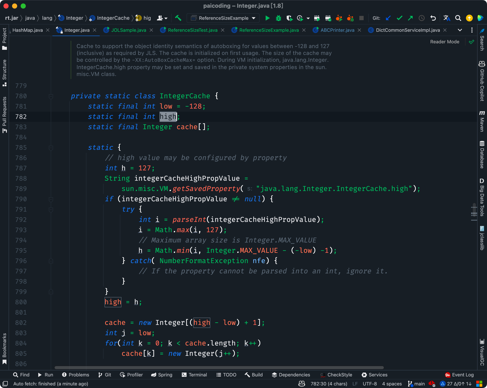
当我们使用自动装箱来创建这个范围内的 Integer 对象时，Java 会直接从缓存中返回一个已存在的对象，而不是每次都创建一个新的对象。这意味着，对于这个值范围内的所有 Integer 对象，它们实际上是引用相同的对象实例。
Integer 缓存的主要目的是优化性能和内存使用。对于小整数的频繁操作，使用缓存可以显著减少对象创建的数量。
可以在运行的时候添加 -Djava.lang.Integer.IntegerCache.high=1000 来调整缓存池的最大值。

引用是 Integer 类型，= 右侧是 int 基本类型时，会进行自动装箱，调用的其实是 Integer.valueOf()方法，它会调用 IntegerCache。
public static Integer valueOf(int i) {
if (i >= IntegerCache.low && i <= IntegerCache.high)
return IntegerCache.cache[i + (-IntegerCache.low)];
return new Integer(i);
}
IntegerCache 是一个静态内部类，在静态代码块中会初始化好缓存的值。
private static class IntegerCache {
……
static {
//创建Integer对象存储
for(int k = 0; k < cache.length; k++)
cache[k] = new Integer(j++);
……
}
}
new Integer(10) == new Integer(10) 相等吗
在 Java 中，使用new Integer(10) == new Integer(10)进行比较时，结果是 false。
这是因为 new 关键字会在堆（Heap）上为每个 Integer 对象分配新的内存空间，所以这里创建了两个不同的 Integer 对象，它们有不同的内存地址。
当使用==运算符比较这两个对象时，实际上比较的是它们的内存地址，而不是它们的值，因此即使两个对象代表相同的数值（10），结果也是 false。
- Java 面试指南（付费）收录的小米春招同学 K 一面面试原题：new Integer(10) == new Integer(10) 相等吗 常量池
39.String 怎么转成 Integer 的？原理？
PS:这道题印象中在一些面经中出场过几次。
String 转成 Integer，主要有两个方法：
- Integer.parseInt(String s)
- Integer.valueOf(String s)
不管哪一种，最终还是会调用 Integer 类内中的parseInt(String s, int radix)方法。
抛去一些边界之类的看看核心代码：
public static int parseInt(String s, int radix)
throws NumberFormatException
{
int result = 0;
//是否是负数
boolean negative = false;
//char字符数组下标和长度
int i = 0, len = s.length();
……
int digit;
//判断字符长度是否大于0，否则抛出异常
if (len > 0) {
……
while (i < len) {
// Accumulating negatively avoids surprises near MAX_VALUE
//返回指定基数中字符表示的数值。（此处是十进制数值）
digit = Character.digit(s.charAt(i++),radix);
//进制位乘以数值
result *= radix;
result -= digit;
}
}
//根据上面得到的是否负数，返回相应的值
return negative ? result : -result;
}
去掉枝枝蔓蔓（当然这些枝枝蔓蔓可以去看看，源码 cover 了很多情况），其实剩下的就是一个简单的字符串遍历计算，不过计算方式有点反常规，是用负的值累减。

Object
40.Object 类的常见方法？
在 Java 中，经常提到一个词“万物皆对象”，其中的“万物”指的是 Java 中的所有类，而这些类都是 Object 类的子类。
Object 主要提供了 11 个方法，大致可以分为六类：

对象比较：
①、public native int hashCode() ：native 方法，用于返回对象的哈希码。
public native int hashCode();
按照约定，相等的对象必须具有相等的哈希码。如果重写了 equals 方法，就应该重写 hashCode 方法。可以使用 Objects.hash() 方法来生成哈希码。
public int hashCode() {
return Objects.hash(name, age);
}
②、public boolean equals(Object obj)：用于比较 2 个对象的内存地址是否相等。
public boolean equals(Object obj) {
return (this == obj);
}
如果比较的是两个对象的值是否相等，就要重写该方法，比如 String 类、Integer 类等都重写了该方法。举个例子，假如有一个 Person 类，我们认为只要年龄和名字相同，就是同一个人，那么就可以这样重写 equals 方法：
class Person1 {
private String name;
private int age;
// 省略 gettter 和 setter 方法
public boolean equals(Object obj) {
if (this == obj) {
return true;
}
if (obj instanceof Person1) {
Person1 p = (Person1) obj;
return this.name.equals(p.getName()) && this.age == p.getAge();
}
return false;
}
}
对象拷贝：
protected native Object clone() throws CloneNotSupportedException：naitive 方法，返回此对象的一个副本。默认实现只做浅拷贝，且类必须实现 Cloneable 接口。
Object 本身没有实现 Cloneable 接口，所以在不重写 clone 方法的情况下直接直接调用该方法会发生 CloneNotSupportedException 异常。
对象转字符串：
public String toString()：返回对象的字符串表示。默认实现返回类名@哈希码的十六进制表示，但通常会被重写以返回更有意义的信息。比如，我们常常会返回json对象，以便于日志的记录。
public String toString() {
return getClass().getName() + "@" + Integer.toHexString(hashCode());
}
比如说一个 Person 类，我们可以重写 toString 方法，返回一个有意义的字符串：
public String toString() {
return "Person{" +
"name='" + name + '\'' +
", age=" + age +
'}';
}
当然了，这项工作也可以直接交给 IDE，比如 IntelliJ IDEA，直接右键选择 Generate，然后选择 toString 方法，就会自动生成一个 toString 方法。
也可以交给 Lombok，使用 @Data 注解，它会自动生成 toString 方法。
数组也是一个对象，所以通常我们打印数组的时候，会看到诸如 [I@1b6d3586 这样的字符串，这个就是 int 数组的哈希码。
多线程调度：
每个对象都可以调用 Object 的 wait/notify 方法来实现等待/通知机制。我们来写一个例子：
public class WaitNotifyDemo {
public static void main(String[] args) {
Object lock = new Object();
new Thread(() -> {
synchronized (lock) {
System.out.println("线程1：我要等待");
try {
lock.wait();
} catch (InterruptedException e) {
e.printStackTrace();
}
System.out.println("线程1：我被唤醒了");
}
}).start();
new Thread(() -> {
synchronized (lock) {
System.out.println("线程2：我要唤醒");
lock.notify();
System.out.println("线程2：我已经唤醒了");
}
}).start();
}
}
解释一下：
- 线程 1 先执行，它调用了
lock.wait()方法，然后进入了等待状态。 - 线程 2 后执行，它调用了
lock.notify()方法，然后线程 1 被唤醒了。
①、public final void wait() throws InterruptedException：调用该方法会导致当前线程等待，直到另一个线程调用此对象的notify()方法或notifyAll()方法。
②、public final native void notify()：唤醒在此对象监视器上等待的单个线程。如果有多个线程等待，选择一个线程被唤醒。
③、public final native void notifyAll()：唤醒在此对象监视器上等待的所有线程。
④、public final native void wait(long timeout) throws InterruptedException：等待 timeout 毫秒，如果在 timeout 毫秒内没有被唤醒，会自动唤醒。
⑥、public final void wait(long timeout, int nanos) throws InterruptedException：更加精确了，等待 timeout 毫秒和 nanos 纳秒，如果在 timeout 毫秒和 nanos 纳秒内没有被唤醒，会自动唤醒。
反射：
public final native Class<?> getClass()：用于获取对象的类信息，如类名。比如说：
public class GetClassDemo {
public static void main(String[] args) {
Person p = new Person();
Class<? extends Person> aClass = p.getClass();
System.out.println(aClass.getName());
}
}
输出结果：
com.itwanger.Person
垃圾回收：
protected void finalize() throws Throwable：当垃圾回收器决定回收对象占用的内存时调用此方法。用于清理资源，但 Java 不推荐使用，因为它不可预测且容易导致问题，Java 9 开始已被弃用。
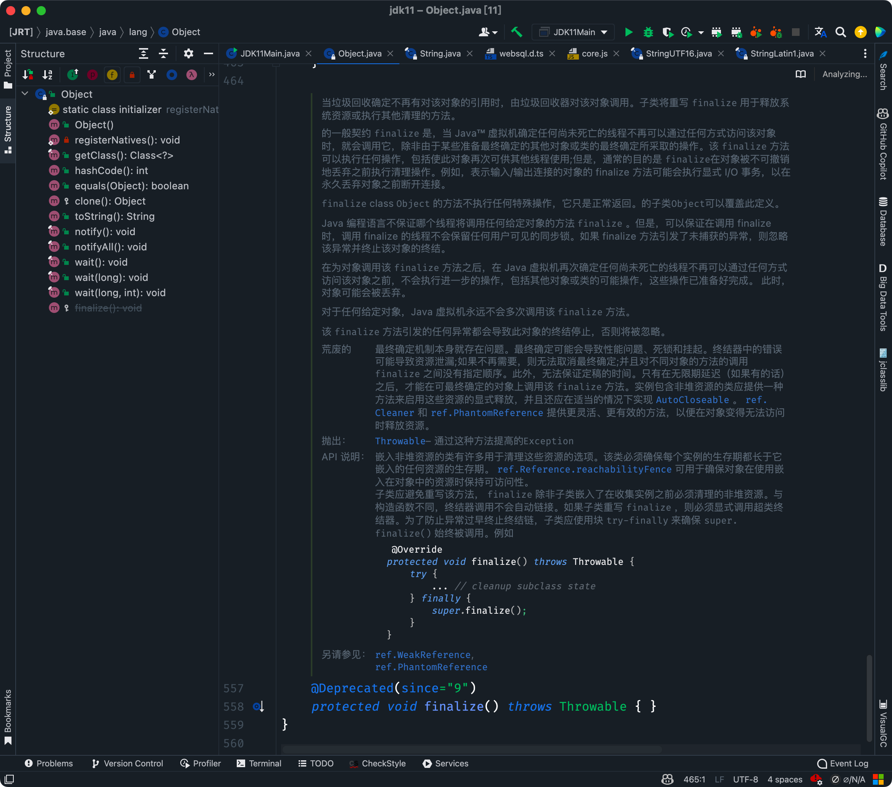
异常处理
41.Java 中异常处理体系?
推荐阅读：一文彻底搞懂 Java 异常处理
Java 中的异常处理机制用于处理程序运行过程中可能发生的各种异常情况，通常通过 try-catch-finally 语句和 throw 关键字来实现。
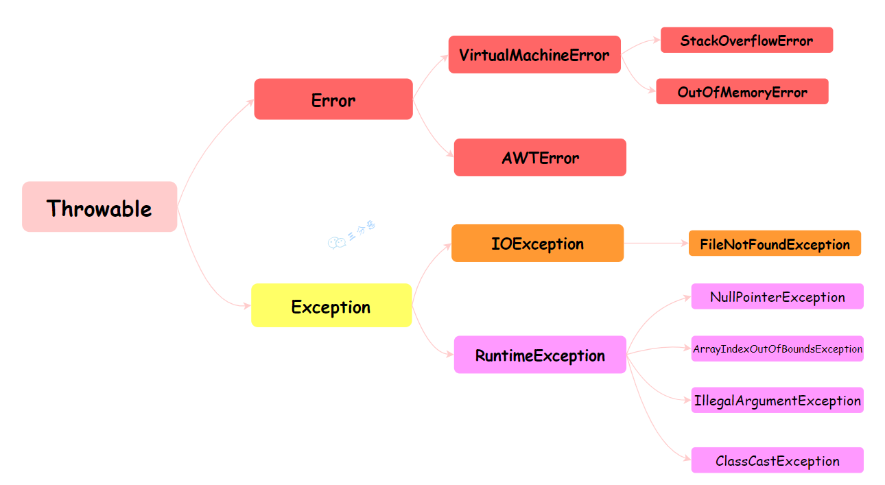
Throwable 是 Java 语言中所有错误和异常的基类。它有两个主要的子类：Error 和 Exception，这两个类分别代表了 Java 异常处理体系中的两个分支。
Error 类代表那些严重的错误，这类错误通常是程序无法处理的。比如，OutOfMemoryError 表示内存不足，StackOverflowError 表示栈溢出。这些错误通常与 JVM 的运行状态有关，一旦发生，应用程序通常无法恢复。
Exception 类代表程序可以处理的异常。它分为两大类：编译时异常（Checked Exception）和运行时异常（Runtime Exception）。
①、编译时异常（Checked Exception）：这类异常在编译时必须被显式处理（捕获或声明抛出）。
如果方法可能抛出某种编译时异常，但没有捕获它（try-catch）或没有在方法声明中用 throws 子句声明它，那么编译将不会通过。例如：IOException、SQLException 等。
②、运行时异常（Runtime Exception）：这类异常在运行时抛出，它们都是 RuntimeException 的子类。对于运行时异常，Java 编译器不要求必须处理它们（即不需要捕获也不需要声明抛出）。
运行时异常通常是由程序逻辑错误导致的，如 NullPointerException、IndexOutOfBoundsException 等。
42.异常的处理方式？

①、遇到异常时可以不处理，直接通过throw 和 throws 抛出异常，交给上层调用者处理。
throws 关键字用于声明可能会抛出的异常，而 throw 关键字用于抛出异常。
public void test() throws Exception {
throw new Exception("抛出异常");
}
②、使用 try-catch 捕获异常，处理异常。
try {
//包含可能会出现异常的代码以及声明异常的方法
}catch(Exception e) {
//捕获异常并进行处理
}finally {
//可选，必执行的代码
}
catch和finally的异常可以同时抛出吗？
如果 catch 块抛出一个异常，而 finally 块中也抛出异常，那么最终抛出的将是 finally 块中的异常。catch 块中的异常会被丢弃，而 finally 块中的异常会覆盖并向上传递。
public class Example {
public static void main(String[] args) {
try {
throw new Exception("Exception in try");
} catch (Exception e) {
throw new RuntimeException("Exception in catch");
} finally {
throw new IllegalArgumentException("Exception in finally");
}
}
}
- try 块首先抛出一个 Exception。
- 控制流进入 catch 块，catch 块中又抛出了一个 RuntimeException。
- 但是在 finally 块中，抛出了一个 IllegalArgumentException，最终程序抛出的异常是 finally 块中的 IllegalArgumentException。
虽然 catch 和 finally 中的异常不能同时抛出，但可以手动捕获 finally 块中的异常，并将 catch 块中的异常保留下来，避免被覆盖。常见的做法是使用一个变量临时存储 catch 中的异常，然后在 finally 中处理该异常：
public class Example {
public static void main(String[] args) {
Exception catchException = null;
try {
throw new Exception("Exception in try");
} catch (Exception e) {
catchException = e;
throw new RuntimeException("Exception in catch");
} finally {
try {
throw new IllegalArgumentException("Exception in finally");
} catch (IllegalArgumentException e) {
if (catchException != null) {
System.out.println("Catch exception: " + catchException.getMessage());
}
System.out.println("Finally exception: " + e.getMessage());
}
}
}
}
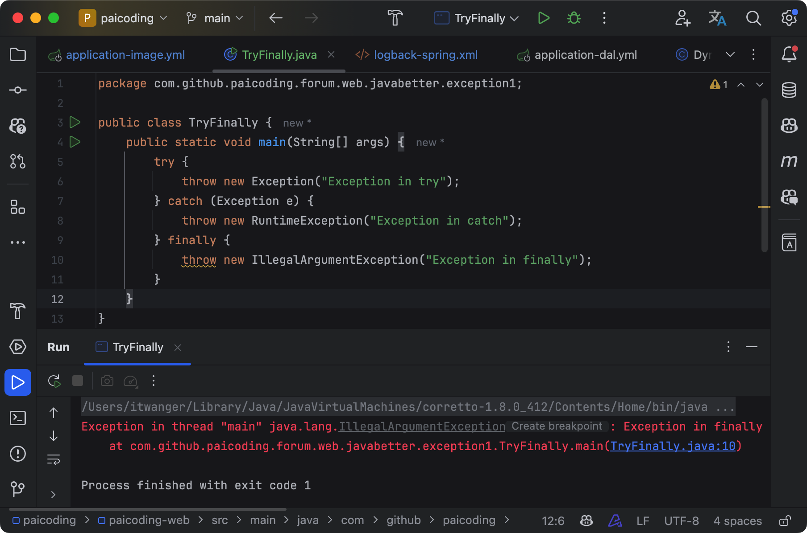
43.三道经典异常处理代码题
题目 1
public class TryDemo {
public static void main(String[] args) {
System.out.println(test());
}
public static int test() {
try {
return 1;
} catch (Exception e) {
return 2;
} finally {
System.out.print("3");
}
}
}
在test()方法中，首先有一个try块，接着是一个catch块（用于捕获异常），最后是一个finally块（无论是否捕获到异常，finally块总会执行）。
①、try块中包含一条return 1;语句。正常情况下，如果try块中的代码能够顺利执行，那么方法将返回数字1。在这个例子中，try块中没有任何可能抛出异常的操作，因此它会正常执行完毕，并准备返回1。
②、由于try块中没有异常发生，所以catch块中的代码不会执行。
③、无论前面的代码是否发生异常，finally块总是会执行。在这个例子中，finally块包含一条System.out.print("3");语句，意味着在方法结束前，会在控制台打印出3。
当执行main方法时，控制台的输出将会是：
31
这是因为finally块确保了它包含的System.out.print("3");会执行并打印3，随后test()方法返回try块中的值1，最终结果就是31。
题目 2
public class TryDemo {
public static void main(String[] args) {
System.out.println(test1());
}
public static int test1() {
try {
return 2;
} finally {
return 3;
}
}
}
执行结果：3。
try 返回前先执行 finally，结果 finally 里不按套路出牌，直接 return 了，自然也就走不到 try 里面的 return 了。
注意：finally 里面使用 return 仅存在于面试题中，实际开发这么写要挨吊的（😂）。
题目 3
public class TryDemo {
public static void main(String[] args) {
System.out.println(test1());
}
public static int test1() {
int i = 0;
try {
i = 2;
return i;
} finally {
i = 3;
}
}
}
执行结果：2。
大家可能会以为结果应该是 3，因为在 return 前会执行 finally，而 i 在 finally 中被修改为 3 了，那最终返回 i 不是应该为 3 吗？
但其实，在执行 finally 之前，JVM 会先将 i 的结果暂存起来，然后 finally 执行完毕后，会返回之前暂存的结果，而不是返回 i，所以即使 i 已经被修改为 3，最终返回的还是之前暂存起来的结果 2。
- Java 面试指南（付费）收录的京东同学 10 后端实习一面的原题：return 先执行还是 finally 先执行
I/O
- Java中的IO模型；【类比MySQL中的读写模型】
44.Java 中 IO 流分为几种?
Java IO 流的划分可以根据多个维度进行，包括数据流的方向（输入或输出）、处理的数据单位（字节或字符）、流的功能以及流是否支持随机访问等。
按照数据流方向如何划分？
- 输入流（Input Stream）：从源（如文件、网络等）读取数据到程序。
- 输出流（Output Stream）：将数据从程序写出到目的地（如文件、网络、控制台等）。
按处理数据单位如何划分？
- 字节流（Byte Streams）：以字节为单位读写数据，主要用于处理二进制数据，如音频、图像文件等。
- 字符流（Character Streams）：以字符为单位读写数据，主要用于处理文本数据。

按功能如何划分？
- 节点流（Node Streams）：直接与数据源或目的地相连，如 FileInputStream、FileOutputStream。
- 处理流（Processing Streams）：对一个已存在的流进行包装，如缓冲流 BufferedInputStream、BufferedOutputStream。
- 管道流（Piped Streams）：用于线程之间的数据传输，如 PipedInputStream、PipedOutputStream。
IO 流用到了什么设计模式？
其实，Java 的 IO 流体系还用到了一个设计模式——装饰器模式。

Java 缓冲区溢出，如何预防
Java 缓冲区溢出主要是由于向缓冲区写入的数据超过其能够存储的数据量。可以采用这些措施来避免：
①、合理设置缓冲区大小：在创建缓冲区时，应根据实际需求合理设置缓冲区的大小，避免创建过大或过小的缓冲区。
②、控制写入数据量：在向缓冲区写入数据时，应该控制写入的数据量，确保不会超过缓冲区的容量。Java 的 ByteBuffer 类提供了remaining()方法，可以获取缓冲区中剩余的可写入数据量。
import java.nio.ByteBuffer;
public class ByteBufferExample {
public static void main(String[] args) {
// 模拟接收到的数据
byte[] receivedData = {1, 2, 3, 4, 5};
int bufferSize = 1024; // 设置一个合理的缓冲区大小
// 创建ByteBuffer
ByteBuffer buffer = ByteBuffer.allocate(bufferSize);
// 写入数据之前检查容量是否足够
if (buffer.remaining() >= receivedData.length) {
buffer.put(receivedData);
} else {
System.out.println("Not enough space in buffer to write data.");
}
// 准备读取数据：将limit设置为当前位置，position设回0
buffer.flip();
// 读取数据
while (buffer.hasRemaining()) {
byte data = buffer.get();
System.out.println("Read data: " + data);
}
// 清空缓冲区以便再次使用
buffer.clear();
}
}
- Java 面试指南（付费）收录的美团面经同学 2 Java 后端技术一面面试原题：Java IO 流 如何划分？
- Java 面试指南（付费）收录的华为面经同学 9 Java 通用软件开发一面面试原题：Java 缓冲区溢出，如何预防
45.既然有了字节流,为什么还要有字符流?
其实字符流是由 Java 虚拟机将字节转换得到的，问题就出在这个过程还比较耗时，并且，如果我们不知道编码类型就很容易出现乱码问题。
所以， I/O 流就干脆提供了一个直接操作字符的接口，方便我们平时对字符进行流操作。如果音频文件、图片等媒体文件用字节流比较好，如果涉及到字符的话使用字符流比较好。
文本存储是字节流还是字符流，视频文件呢？
在计算机中，文本和视频都是按照字节存储的，只是如果是文本文件的话，我们可以通过字符流的形式去读取，这样更方面的我们进行直接处理。
比如说我们需要在一个大文本文件中查找某个字符串，可以直接通过字符流来读取判断。
处理视频文件时，通常使用字节流（如 Java 中的FileInputStream、FileOutputStream）来读取或写入数据，并且会尽量使用缓冲流（如BufferedInputStream、BufferedOutputStream）来提高读写效率。
在技术派实战项目项目中，对于文本，比如说文章和教程内容，是直接存储在数据库中的，而对于视频和图片等大文件，是存储在 OSS 中的。
因此，无论是文本文件还是视频文件，它们在物理存储层面都是以字节流的形式存在。区别在于，我们如何通过 Java 代码来解释和处理这些字节流：作为编码后的字符还是作为二进制数据。
- Java 面试指南（付费）收录的国企面试原题：文本存储是字节流还是字符流，视频文件呢？
46.BIO、NIO、AIO 之间的区别？
Java 常见的 IO 模型有三种：BIO、NIO 和 AIO。
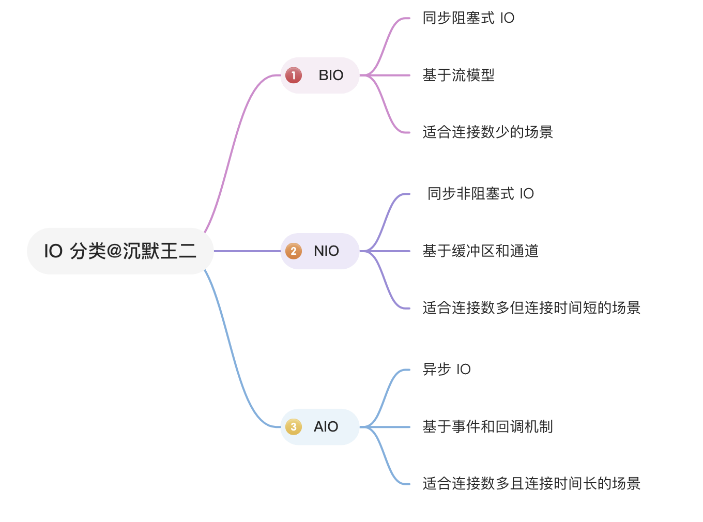
BIO：采用阻塞式 I/O 模型，线程在执行 I/O 操作时被阻塞，无法处理其他任务，适用于连接数较少的场景。
NIO：采用非阻塞 I/O 模型，线程在等待 I/O 时可执行其他任务，通过 Selector 监控多个 Channel 上的事件，适用于连接数多但连接时间短的场景。
AIO：使用异步 I/O 模型，线程发起 I/O 请求后立即返回，当 I/O 操作完成时通过回调函数通知线程，适用于连接数多且连接时间长的场景。
简单说一下 BIO？
BIO，也就是传统的 IO，基于字节流或字符流（如 FileInputStream、BufferedReader 等）进行文件读写，基于 Socket 和 ServerSocket 进行网络通信。
对于每个连接，都需要创建一个独立的线程来处理读写操作。

简单说下 NIO？
NIO，JDK 1.4 时引入，放在 java.nio 包下，提供了 Channel、Buffer、Selector 等新的抽象，基于 RandomAccessFile、FileChannel、ByteBuffer 进行文件读写，基于 SocketChannel 和 ServerSocketChannel 进行网络通信。
实际上，“旧”的 I/O 包已经使用 NIO 重新实现过，所以在进行文件读写时，NIO 并无法体现出比 BIO 更可靠的性能。
NIO 的魅力主要体现在网络编程中，服务器可以用一个线程处理多个客户端连接，通过 Selector 监听多个 Channel 来实现多路复用，极大地提高了网络编程的性能。

缓冲区 Buffer 也能极大提升一次 IO 操作的效率。
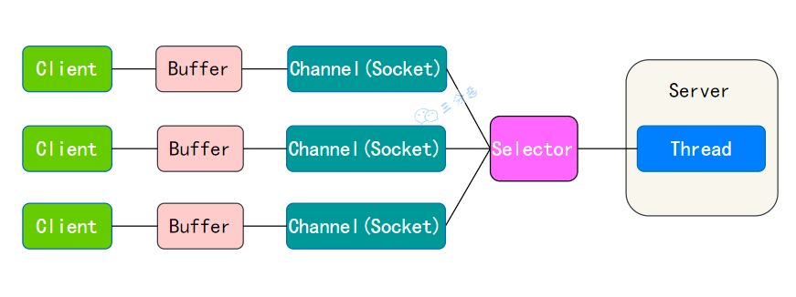
简单说下 AIO？
AIO 是 Java 7 引入的，放在 java.nio.channels 包下，提供了 AsynchronousFileChannel、AsynchronousSocketChannel 等异步 Channel。
它引入了异步通道的概念，使得 I/O 操作可以异步进行。这意味着线程发起一个读写操作后不必等待其完成，可以立即进行其他任务，并且当读写操作真正完成时，线程会被异步地通知。
AsynchronousFileChannel fileChannel = AsynchronousFileChannel.open(Paths.get("test.txt"), StandardOpenOption.READ);
ByteBuffer buffer = ByteBuffer.allocate(1024);
Future<Integer> result = fileChannel.read(buffer, 0);
while (!result.isDone()) {
// do something
}
序列化
47.什么是序列化？什么是反序列化？
序列化（Serialization）是指将实体对象转换为字节流的过程，以便能够将该对象保存到文件、数据库，或者进行网络传输。
反序列化（Deserialization）就是将字节流转换回对象的过程，以便构建原始对象。
序列化的过程，相当于把人类能够理解的变成语言转换成机器能够理解的二进制语言的过程；反序列化的过程则是相反。
序列化机制中还隐藏了一个概念，那就是序列化的数据模板。例如，把一个对象序列化成字节流时，对象的类就是数据模板。这个数据模板的作用是，保证序列化与反序列化过程中的数据的一致性。
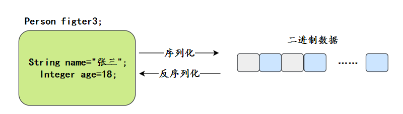
Serializable 接口有什么用？
Serializable接口用于标记一个类可以被序列化。
public class Person implements Serializable {
private String name;
private int age;
// 省略 getter 和 setter 方法
}
serialVersionUID 有什么用？
serialVersionUID 是 Java 序列化机制中用于标识类版本的唯一标识符。它的作用是确保在序列化和反序列化过程中，类的版本是兼容的。
import java.io.Serializable;
public class MyClass implements Serializable {
private static final long serialVersionUID = 1L;
private String name;
private int age;
// getters and setters
}
serialVersionUID 被设置为 1L 是一种比较省事的做法，也可以使用 Intellij IDEA 进行自动生成。
但只要 serialVersionUID 在序列化和反序列化过程中保持一致，就不会出现问题。
如果不显式声明 serialVersionUID，Java 运行时会根据类的详细信息自动生成一个 serialVersionUID。那么当类的结构发生变化时，自动生成的 serialVersionUID 就会发生变化，导致反序列化失败。
Java 序列化不包含静态变量吗？
是的，序列化机制只会保存对象的状态，而静态变量属于类的状态，不属于对象的状态。
如果有些变量不想序列化，怎么办？
可以使用transient关键字修饰不想序列化的变量。（但静态变量默认不会被序列化，因此 transient 对静态变量没有影响。）
public class Person implements Serializable {
private String name;
private transient int age;
// 省略 getter 和 setter 方法
}
能解释一下序列化的过程和作用吗？
序列化过程通常涉及到以下几个步骤：
第一步，实现 Serializable 接口。
public class Person implements Serializable {
private String name;
private int age;
// 省略构造方法、getters和setters
}
第二步，使用 ObjectOutputStream 来将对象写入到输出流中。
ObjectOutputStream out = new ObjectOutputStream(new FileOutputStream("person.ser"));
第三步，调用 ObjectOutputStream 的 writeObject 方法，将对象序列化并写入到输出流中。
Person person = new Person("沉默王二", 18);
out.writeObject(person);
::: detail
import java.io.*;
class Person implements Serializable {
private static final long serialVersionUID = 1L;
private String name;
private static int age = 25; // 静态变量
public Person(String name) {
this.name = name;
}
public static void setAge(int age) {
Person.age = age;
}
@Override
public String toString() {
return "Person{name='" + name + "', age=" + age + '}';
}
}
public class SerializationTest {
public static void main(String[] args) throws IOException, ClassNotFoundException {
Person p1 = new Person("Alice");
// 序列化
ObjectOutputStream oos = new ObjectOutputStream(new FileOutputStream("person.ser"));
oos.writeObject(p1);
oos.close();
// 修改静态变量
Person.setAge(30);
// 反序列化
ObjectInputStream ois = new ObjectInputStream(new FileInputStream("person.ser"));
Person p2 = (Person) ois.readObject();
ois.close();
System.out.println(p2);
}
}
输出结果：
Person{name='Alice', age=30}
:::
48.说说有几种序列化方式？
Java 序列化方式有很多，常见的有三种：
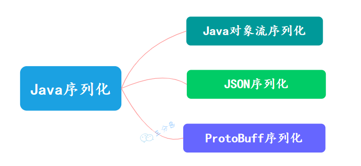
- Java 对象序列化 ：Java 原生序列化方法即通过 Java 原生流(InputStream 和 OutputStream 之间的转化)的方式进行转化，一般是对象输出流
ObjectOutputStream和对象输入流ObjectInputStream。 - Json 序列化：这个可能是我们最常用的序列化方式，Json 序列化的选择很多，一般会使用 jackson 包，通过 ObjectMapper 类来进行一些操作，比如将对象转化为 byte 数组或者将 json 串转化为对象。
- FastJson 序列化： 也可以。
- ProtoBuff 序列化：ProtocolBuffer 是一种轻便高效的结构化数据存储格式，ProtoBuff 序列化对象可以很大程度上将其压缩，可以大大减少数据传输大小，提高系统性能。
::: detail @code :::
网络编程
49.了解过Socket网络套接字吗？（补充）
2024 年 11 月 28 日 增补
Socket 是网络通信的基础，表示两台设备之间通信的一个端点。Socket 通常用于建立 TCP 或 UDP 连接，实现进程间的网络通信。

一个简单的 TCP 客户端：
class TcpClient {
public static void main(String[] args) throws IOException {
Socket socket = new Socket("127.0.0.1", 8080); // 连接服务器
BufferedReader in = new BufferedReader(new InputStreamReader(socket.getInputStream()));
PrintWriter out = new PrintWriter(socket.getOutputStream(), true);
out.println("Hello, Server!"); // 发送消息
System.out.println("Server response: " + in.readLine()); // 接收服务器响应
socket.close();
}
}
TCP 服务端：
class TcpServer {
public static void main(String[] args) throws IOException {
ServerSocket serverSocket = new ServerSocket(8080); // 创建服务器端Socket
System.out.println("Server started, waiting for connection...");
Socket socket = serverSocket.accept(); // 等待客户端连接
System.out.println("Client connected: " + socket.getInetAddress());
BufferedReader in = new BufferedReader(new InputStreamReader(socket.getInputStream()));
PrintWriter out = new PrintWriter(socket.getOutputStream(), true);
String message;
while ((message = in.readLine()) != null) {
System.out.println("Received: " + message);
out.println("Echo: " + message); // 回送消息
}
socket.close();
serverSocket.close();
}
}
RPC框架了解吗？
RPC是一种协议，允许程序调用位于远程服务器上的方法，就像调用本地方法一样。RPC 通常基于 Socket 通信实现。
RPC，Remote Procedure Call，远程过程调用
RPC 框架支持高效的序列化（如 Protocol Buffers）和通信协议（如 HTTP/2），屏蔽了底层网络通信的细节，开发者只需关注业务逻辑即可。
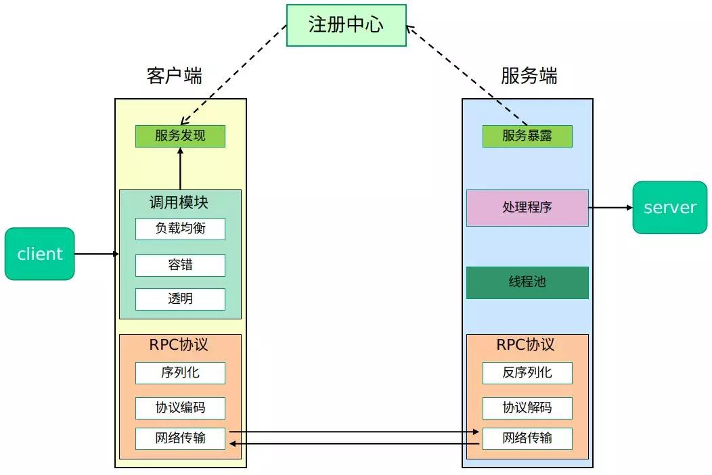
常见的 RPC 框架包括：
- gRPC：基于 HTTP/2 和 Protocol Buffers。
- Dubbo：阿里开源的分布式 RPC 框架，适合微服务场景。
- Spring Cloud OpenFeign：基于 REST 的轻量级 RPC 框架。
- Thrift：Apache 的跨语言 RPC 框架，支持多语言代码生成。
泛型
50.Java 泛型了解么？
推荐阅读：手写Java泛型，彻底掌握它
泛型主要用于提高代码的类型安全，它允许在定义类、接口和方法时使用类型参数，这样可以在编译时检查类型一致性，避免不必要的类型转换和类型错误。
没有泛型的时候，像 List 这样的集合类存储的是 Object 类型，导致从集合中读取数据时，必须进行强制类型转换，否则会引发 ClassCastException。
List list = new ArrayList();
list.add("hello");
String str = (String) list.get(0); // 必须强制类型转换
泛型一般有三种使用方式:泛型类、泛型接口、泛型方法。
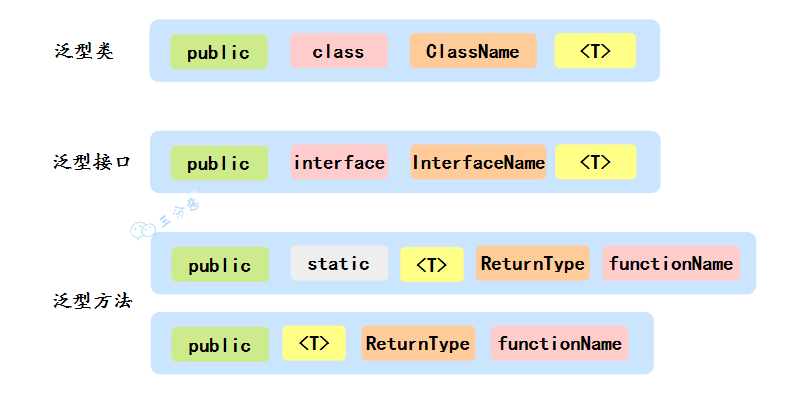
1.泛型类：
//此处T可以随便写为任意标识，常见的如T、E、K、V等形式的参数常用于表示泛型
//在实例化泛型类时，必须指定T的具体类型
public class Generic<T>{
private T key;
public Generic(T key) {
this.key = key;
}
public T getKey(){
return key;
}
}
如何实例化泛型类：
Generic<Integer> genericInteger = new Generic<Integer>(123456);
2.泛型接口 ：
public interface Generator<T> {
public T method();
}
实现泛型接口，指定类型：
class GeneratorImpl<T> implements Generator<String>{
@Override
public String method() {
return "hello";
}
}
3.泛型方法 ：
public static < E > void printArray( E[] inputArray )
{
for ( E element : inputArray ){
System.out.printf( "%s ", element );
}
System.out.println();
}
使用：
// 创建不同类型数组： Integer, Double 和 Character
Integer[] intArray = { 1, 2, 3 };
String[] stringArray = { "Hello", "World" };
printArray( intArray );
printArray( stringArray );
泛型常用的通配符有哪些？
常用的通配符为： T，E，K，V，？
- ？ 表示不确定的 java 类型
- T (type) 表示具体的一个 java 类型
- K V (key value) 分别代表 java 键值中的 Key Value
- E (element) 代表 Element
什么是泛型擦除？
所谓的泛型擦除，官方名叫“类型擦除”。
Java 的泛型是伪泛型，这是因为 Java 在编译期间，所有的类型信息都会被擦掉。
也就是说，在运行的时候，虚拟机会把泛型转化成具体的类型，之后的过程就是没有泛型的。
例如这段代码，往一群猫里放条狗：
LinkedList<Cat> cats = new LinkedList<Cat>();
LinkedList list = cats; // 注意我在这里把范型去掉了，但是list和cats是同一个链表！
list.add(new Dog()); // 完全没问题！
因为 Java 的范型只存在于源码里，编译的时候给你静态地检查一下范型类型是否正确，而到了运行时就不检查了。上面这段代码在 JRE（Java运行环境）看来和下面这段没区别：
LinkedList cats = new LinkedList(); // 注意：没有范型！
LinkedList list = cats;
list.add(new Dog());
为什么要类型擦除呢？
- 保持兼容性。为了向下兼容，因为 JDK5 之前是没有泛型的，为了让 JVM 保持向下兼容，就出了类型擦除这个策略。
- 运行期的优化。泛型在编译时基本上就可以确定要使用的类型是哪一个了，就没有必要在运行时，在进行查找了，直接在编译期就确定好数据的类型，省得运行期还要查找数据的类型。
注解
51.说一下你对注解的理解？
Java 注解本质上是一个标记，可以理解成生活中的一个人的一些小装扮，比如戴什么什么帽子，戴什么眼镜。
注解可以标记在类上、方法上、属性上等，标记自身也可以设置一些值，比如帽子颜色是绿色。
有了标记之后，我们就可以在编译或者运行阶段去识别这些标记，然后搞一些事情，这就是注解的用处。
例如我们常见的 AOP，使用注解作为切点就是运行期注解的应用；比如 lombok，就是注解在编译期的运行。
注解生命周期有三大类，分别是：
- RetentionPolicy.SOURCE：给编译器用的，不会写入 class 文件
- RetentionPolicy.CLASS：会写入 class 文件，在类加载阶段丢弃，也就是运行的时候就没这个信息了
- RetentionPolicy.RUNTIME：会写入 class 文件，永久保存，可以通过反射获取注解信息
所以我上文写的是解析的时候，没写具体是解析啥，因为不同的生命周期的解析动作是不同的。
像常见的：

就是给编译器用的，编译器编译的时候检查没问题就 over 了，class 文件里面不会有 Override 这个标记。
再比如 Spring 常见的 Autowired ，就是 RUNTIME 的，所以在运行的时候可以通过反射得到注解的信息，还能拿到标记的值 required 。

反射
52.什么是反射？应用？原理？
反射允许 Java 在运行时检查和操作类的方法和字段。通过反射，可以动态地获取类的字段、方法、构造方法等信息，并在运行时调用方法或访问字段。
比如创建一个对象是通过 new 关键字来实现的：
Person person = new Person();
Person 类的信息在编译时就确定了，那假如在编译期无法确定类的信息，但又想在运行时获取类的信息、创建类的实例、调用类的方法，这时候就要用到反射。
反射功能主要通过 java.lang.Class 类及 java.lang.reflect 包中的类如 Method, Field, Constructor 等来实现。

比如说我们可以装来动态加载类并创建对象：
String className = "java.util.Date";
Class<?> cls = Class.forName(className);
Object obj = cls.newInstance();
System.out.println(obj.getClass().getName());
比如说我们可以这样来访问字段和方法：
// 加载并实例化类
Class<?> cls = Class.forName("java.util.Date");
Object obj = cls.newInstance();
// 获取并调用方法
Method method = cls.getMethod("getTime");
Object result = method.invoke(obj);
System.out.println("Time: " + result);
// 访问字段
Field field = cls.getDeclaredField("fastTime");
field.setAccessible(true); // 对于私有字段需要这样做
System.out.println("fastTime: " + field.getLong(obj));
反射有哪些应用场景？
①、Spring 框架就大量使用了反射来动态加载和管理 Bean。
Class<?> clazz = Class.forName("com.example.MyClass");
Object instance = clazz.newInstance();
②、Java 的动态代理（Dynamic Proxy）机制就使用了反射来创建代理类。代理类可以在运行时动态处理方法调用，这在实现 AOP 和拦截器时非常有用。
InvocationHandler handler = new MyInvocationHandler();
MyInterface proxyInstance = (MyInterface) Proxy.newProxyInstance(
MyInterface.class.getClassLoader(),
new Class<?>[] { MyInterface.class },
handler
);
③、JUnit 和 TestNG 等测试框架使用反射机制来发现和执行测试方法。反射允许框架扫描类，查找带有特定注解（如 @Test）的方法，并在运行时调用它们。
Method testMethod = testClass.getMethod("testSomething");
testMethod.invoke(testInstance);
反射的原理是什么？
Java 程序的执行分为编译和运行两步，编译之后会生成字节码(.class)文件，JVM 进行类加载的时候，会加载字节码文件，将类型相关的所有信息加载进方法区，反射就是去获取这些信息，然后进行各种操作。
反射的应用场景
- 调用某一个不知道源码的jar包中的某一个类的方法；
- 阿里巴巴的Arthas工具
- Java 面试指南（付费）收录的美团面经同学 2 Java 后端技术一面面试原题：Java 反射用过吗？
- Java 面试指南（付费）收录的美团面经同学 18 成都到家面试原题：反射及其应用场景
- Java 面试指南（付费）收录的小米面经同学 F 面试原题：反射的介绍与使用场景
- Java 面试指南（付费）收录的美团面经同学 3 Java 后端技术一面面试原题：java 的反射机制，反射的应用场景 AOP 的实现原理是什么，与动态代理和反射有什么区别
- Java 面试指南（付费）收录的比亚迪面经同学 12 Java 技术面试原题：java的反射
JDK1.8 新特性
JDK 已经出到 17 了，但是你迭代你的版本，我用我的 8。JDK1.8 的一些新特性，当然现在也不新了，其实在工作中已经很常用了。
53.JDK 1.8 都有哪些新特性？
JDK 1.8 新增了不少新的特性，如 Lambda 表达式、接口默认方法、Stream API、日期时间 API、Optional 类等。

①、Java 8 允许在接口中添加默认方法和静态方法。
public interface MyInterface {
default void myDefaultMethod() {
System.out.println("My default method");
}
static void myStaticMethod() {
System.out.println("My static method");
}
}
②、Lambda 表达式描述了一个代码块（或者叫匿名方法），可以将其作为参数传递给构造方法或者普通方法以便后续执行。
public class LamadaTest {
public static void main(String[] args) {
new Thread(() -> System.out.println("沉默王二")).start();
}
}
《Effective Java》的作者 Josh Bloch 建议使用 Lambda 表达式时，最好不要超过 3 行。否则代码可读性会变得很差。
③、Stream 是对 Java 集合框架的增强，它提供了一种高效且易于使用的数据处理方式。
List<String> list = new ArrayList<>();
list.add("中国加油");
list.add("世界加油");
list.add("世界加油");
long count = list.stream().distinct().count();
System.out.println(count);
④、Java 8 引入了一个全新的日期和时间 API，位于java.time包中。这个新的 API 纠正了旧版java.util.Date类中的许多缺陷。
LocalDate today = LocalDate.now();
System.out.println("Today's Local date : " + today);
LocalTime time = LocalTime.now();
System.out.println("Local time : " + time);
LocalDateTime now = LocalDateTime.now();
System.out.println("Current DateTime : " + now);
⑤、引入 Optional 是为了减少空指针异常。
Optional<String> optional = Optional.of("沉默王二");
optional.isPresent(); // true
optional.get(); // "沉默王二"
optional.orElse("沉默王三"); // "bam"
optional.ifPresent((s) -> System.out.println(s.charAt(0))); // "沉"
- Java 面试指南（付费）收录的招商银行面经同学 6 招银网络科技面试原题：JDK1.8 的特性？
- Java 面试指南（付费）收录的联想面经同学 7 面试原题：Java 印象比较深的版本更新。
54.Lambda 表达式了解多少？
Lambda 表达式主要用于提供一种简洁的方式来表示匿名方法，使 Java 具备了函数式编程的特性。
比如说我们可以使用 Lambda 表达式来简化线程的创建：
new Thread(() -> System.out.println("Hello World")).start();
这比以前的匿名内部类要简洁很多。
所谓的函数式编程，就是把函数作为参数传递给方法，或者作为方法的结果返回。比如说我们可以配合 Stream 流进行数据过滤：
List<Integer> numbers = Arrays.asList(1, 2, 3, 4, 5, 6);
List<Integer> evenNumbers = numbers.stream()
.filter(n -> n % 2 == 0)
.collect(Collectors.toList());
其中 n -> n % 2 == 0 就是一个 Lambda 表达式。表示传入一个参数 n，返回 n % 2 == 0 的结果。
Java8 有哪些内置函数式接口？
JDK 1.8 API 包含了很多内置的函数式接口。其中就包括我们在老版本中经常见到的 Comparator 和 Runnable，Java 8 为他们都添加了 @FunctionalInterface 注解，以用来支持 Lambda 表达式。
除了这两个之外，还有 Callable、Predicate、Function、Supplier、Consumer 等等。
- Java 面试指南（付费）收录的招商银行面经同学 6 招银网络科技面试原题：Lamada 表达式的作用？
55.Optional 了解吗？
Optional是用于防范NullPointerException。
可以将 Optional 看做是包装对象（可能是 null, 也有可能非 null）的容器。当我们定义了 一个方法，这个方法返回的对象可能是空，也有可能非空的时候，我们就可以考虑用 Optional 来包装它，这也是在 Java 8 被推荐使用的做法。
Optional<String> optional = Optional.of("bam");
optional.isPresent(); // true
optional.get(); // "bam"
optional.orElse("fallback"); // "bam"
optional.ifPresent((s) -> System.out.println(s.charAt(0))); // "b"
56.Stream 流用过吗？
Stream 流，简单来说，使用 java.util.Stream 对一个包含一个或多个元素的集合做各种操作。这些操作可能是 中间操作 亦或是 终端操作。 终端操作会返回一个结果，而中间操作会返回一个 Stream 流。
Stream 流一般用于集合，我们对一个集合做几个常见操作：
List<String> stringCollection = new ArrayList<>();
stringCollection.add("ddd2");
stringCollection.add("aaa2");
stringCollection.add("bbb1");
stringCollection.add("aaa1");
stringCollection.add("bbb3");
stringCollection.add("ccc");
stringCollection.add("bbb2");
stringCollection.add("ddd1");
- Filter 过滤
stringCollection
.stream()
.filter((s) -> s.startsWith("a"))
.forEach(System.out::println);
// "aaa2", "aaa1"
- Sorted 排序
stringCollection
.stream()
.sorted()
.filter((s) -> s.startsWith("a"))
.forEach(System.out::println);
// "aaa1", "aaa2"
- Map 转换
stringCollection
.stream()
.map(String::toUpperCase)
.sorted((a, b) -> b.compareTo(a))
.forEach(System.out::println);
// "DDD2", "DDD1", "CCC", "BBB3", "BBB2", "AAA2", "AAA1"
- Match 匹配
// 验证 list 中 string 是否有以 a 开头的, 匹配到第一个，即返回 true
boolean anyStartsWithA =
stringCollection
.stream()
.anyMatch((s) -> s.startsWith("a"));
System.out.println(anyStartsWithA); // true
// 验证 list 中 string 是否都是以 a 开头的
boolean allStartsWithA =
stringCollection
.stream()
.allMatch((s) -> s.startsWith("a"));
System.out.println(allStartsWithA); // false
// 验证 list 中 string 是否都不是以 z 开头的,
boolean noneStartsWithZ =
stringCollection
.stream()
.noneMatch((s) -> s.startsWith("z"));
System.out.println(noneStartsWithZ); // true
- Count 计数
count 是一个终端操作，它能够统计 stream 流中的元素总数，返回值是 long 类型。
// 先对 list 中字符串开头为 b 进行过滤，让后统计数量
long startsWithB =
stringCollection
.stream()
.filter((s) -> s.startsWith("b"))
.count();
System.out.println(startsWithB); // 3
- Reduce
Reduce 中文翻译为：减少、缩小。通过入参的 Function，我们能够将 list 归约成一个值。它的返回类型是 Optional 类型。
Optional<String> reduced =
stringCollection
.stream()
.sorted()
.reduce((s1, s2) -> s1 + "#" + s2);
reduced.ifPresent(System.out::println);
// "aaa1#aaa2#bbb1#bbb2#bbb3#ccc#ddd1#ddd2"
以上是常见的几种流式操作，还有其它的一些流式操作，可以帮助我们更便捷地处理集合数据。
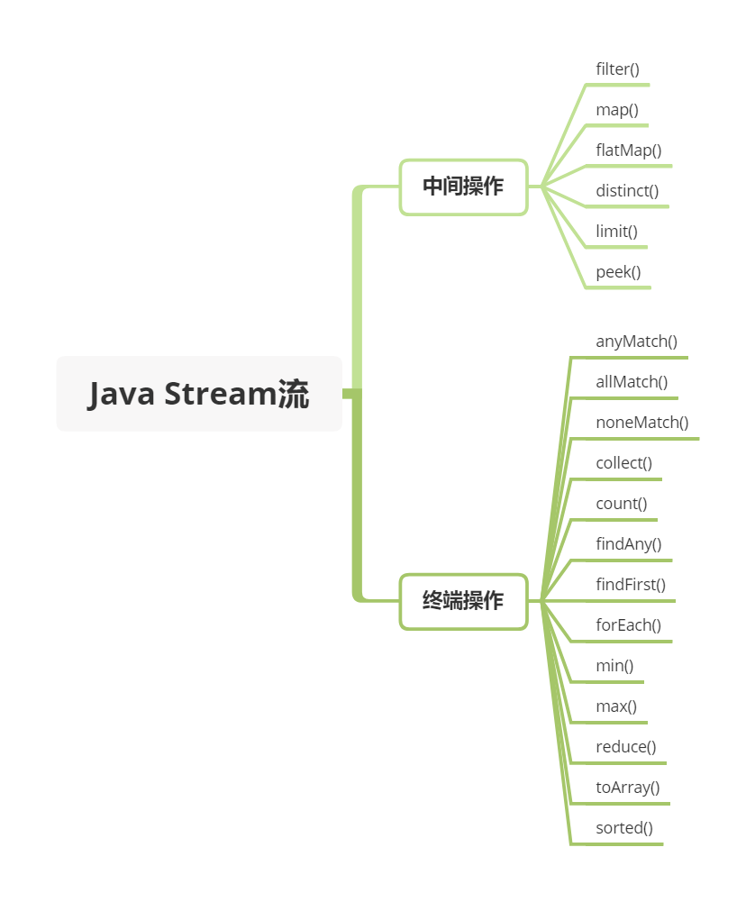
2024 年 12 月 30 日第二版优化结束。
title: Java并发编程面试题，71道Java多线程八股文（4万字92张手绘图），面渣逆袭必看👍 shortTitle: 面渣逆袭-Java并发编程 author: 三分恶 category:
- 面渣逆袭 tag:
- 面渣逆袭 description: 下载次数超 1 万次，4 万字 92 张手绘图，详解 71 道 Java 多线程面试高频题（让天下没有难背的八股），面渣背会这些并发编程八股文，这次吊打面试官，我觉得稳了（手动 dog）。 date: 2024-10-08 head:
-
- meta
- name: keywords content: Java,Thread,Java并发编程,Java多线程,Java面试题,Java并发编程面试题,面试题,八股文,java

前言
4 万字 92 张手绘图，详解 71 道 Java 多线程面试高频题（让天下没有难背的八股），面渣背会这些并发编程八股文，这次吊打面试官，我觉得稳了（手动 dog）。整理：沉默王二，戳转载链接，作者：三分恶，戳原文链接。
亮白版本更适合拿出来打印，这也是很多学生党喜欢的方式，打印出来背诵的效率会更高。

2025 年 01 月 22 日开始着手第二版更新。
- 对于高频题，会标注在《Java 面试指南（付费）》中出现的位置，哪家公司，原题是什么；如果你想节省时间的话，可以优先背诵这些题目，尽快做到知彼知己，百战不殆。
- 结合项目（技术派、pmhub）来组织语言，让面试官最大程度感受到你的诚意，而不是机械化的背诵。
- 修复第一版中出现的问题，包括球友们的私信反馈，网站留言区的评论，以及 GitHub 仓库中的 issue，让这份面试指南更加完善。
- 优化排版，增加手绘图，重新组织答案，使其更加口语化，从而更贴近面试官的预期。

由于 PDF 没办法自我更新，所以需要最新版的小伙伴，可以微信搜【沉默王二】，或者扫描/长按识别下面的二维码，关注二哥的公众号，回复【222】即可拉取最新版本。
当然了，请允许我的一点点私心，那就是星球的 PDF 版本会比公众号早一个月时间，毕竟星球用户都付费过了，我有必要让他们先享受到一点点福利。相信大家也都能理解，毕竟在线版是免费的，CDN、服务器、域名、OSS 等等都是需要成本的。
更别说我付出的时间和精力了。
百度网盘、阿里云盘、夸克网盘都可以下载到最新版本，我会第一时间更新上去。

展示一下暗黑版本的 PDF 吧，排版清晰，字体优雅，更加适合夜服，晚上看会更舒服一点。

基础
1.并行跟并发有什么区别？
- 并行是多核 CPU 上的多任务处理，多个任务在同一时间真正地同时执行。
- 并发是单核 CPU 上的多任务处理，多个任务在同一时间段内交替执行，通过时间片轮转实现交替执行，用于解决 IO 密集型任务的瓶颈。

举个例子，就好像我们去食堂打饭，并行就是每个人对应一个阿姨，同时打饭；而并发就是一个阿姨，轮流给每个人打饭，假如有个人磨磨唧唧，阿姨就会吆喝下一个人，这样就能提高食堂的打饭效率。

你是如何理解线程安全的？
推荐阅读：多线程带来了哪些问题？
如果一段代码块或者一个方法被多个线程同时执行，还能够正确地处理共享数据，那么这段代码块或者这个方法就是线程安全的。
可以从三个要素来确保线程安全：
①、原子性：一个操作要么完全执行，要么完全不执行，不会出现中间状态。

可以通过同步关键字 synchronized 或原子操作，如 AtomicInteger 来保证原子性。
AtomicInteger count = new AtomicInteger(0);
count.incrementAndGet(); // 原子操作
②、可见性：当一个线程修改了共享变量，其他线程能够立即看到变化。

可以通过 volatile 关键字来保证可见性。
private volatile String itwanger = "沉默王二";
③、有序性：要确保线程不会因为死锁、饥饿、活锁等问题导致无法继续执行。

- Java 面试指南（付费）收录的华为 OD 面经同学 1 一面面试原题：对于多线程编程的了解?
- Java 面试指南（付费）收录的快手面经同学 1 部门主站技术部面试原题：你对线程安全的理解是什么？
memo：2025 年 1 月 22 日修改至此。
🌟2.说说进程和线程的区别？
推荐阅读:进程与线程的区别是什么？
进程说简单点就是我们在电脑上启动的一个个应用。它是操作系统分配资源的最小单位。
线程是进程中的独立执行单元。多个线程可以共享同一个进程的资源，如内存；每个线程都有自己独立的栈和寄存器。

如何理解协程？
协程被视为比线程更轻量级的并发单元，可以在单线程中实现并发执行，由我们开发者显式调度。
协程是在用户态进行调度的，避免了线程切换时的内核态开销。
Java 自身是不支持携程的，我们可以使用 Quasar、Kotlin 等框架来实现协程。
fun main() = runBlocking {
launch {
delay(1000L)
println("World!")
}
println("Hello,")
}
线程间是如何进行通信的？
原则上可以通过消息传递和共享内存两种方法来实现。Java 采用的是共享内存的并发模型。
这个模型被称为 Java 内存模型，简写为 JMM，它决定了一个线程对共享变量的写入，何时对另外一个线程可见。当然了，本地内存是 JMM 的一个抽象概念，并不真实存在。
用一句话来概括就是：共享变量存储在主内存中，每个线程的私有本地内存，存储的是这个共享变量的副本。

线程 A 与线程 B 之间如要通信，需要要经历 2 个步骤：
- 线程 A 把本地内存 A 中的共享变量副本刷新到主内存中。
- 线程 B 到主内存中读取线程 A 刷新过的共享变量，再同步到自己的共享变量副本中。

- Java 面试指南（付费）收录的字节跳动商业化一面的原题：进程和线程区别，线程共享内存和进程共享内存的区别
- Java 面试指南（付费）收录的小米春招同学 K 一面面试原题：协程和线程和进程的区别
- Java 面试指南（付费）收录的字节跳动面经同学 1 Java 后端技术一面面试原题：线程和进程有什么区别？
- Java 面试指南（付费）收录的华为 OD 面经同学 1 一面面试原题：对于多线程编程的了解?
- Java 面试指南（付费）收录的美团面经同学 2 Java 后端技术一面面试原题：进程和线程的区别？
- Java 面试指南（付费）收录的华为面经同学 9 Java 通用软件开发一面面试原题：进程和线程的区别
- Java 面试指南（付费）收录的 小公司面经合集好未来测开面经同学 3 测开一面面试原题：进程和线程的区别
- Java 面试指南（付费）收录的招商银行面经同学 6 招银网络科技面试原题：进程和线程的区别？
- Java 面试指南（付费）收录的用友面试原题：线程和进程的区别
- Java 面试指南（付费）收录的vivo 面经同学 10 技术一面面试原题：线程的概念，线程有哪些状态
- Java 面试指南（付费）收录的海康威视同学 4面试原题：对协程的了解，为什么协程比线程还有更低的资源消耗
memo：2025 年 1 月 23 日修改至此。
🌟3.说说线程有几种创建方式？
有三种，分别是继承 Thread 类、实现 Runnable 接口、实现 Callable 接口。

第一种需要重写父类 Thread 的 run() 方法，并且调用 start() 方法启动线程。
class ThreadTask extends Thread {
public void run() {
System.out.println("看完二哥的 Java 进阶之路，上岸了!");
}
public static void main(String[] args) {
ThreadTask task = new ThreadTask();
task.start();
}
}
这种方法的缺点是，如果 ThreadTask 已经继承了另外一个类，就不能再继承 Thread 类了，因为 Java 不支持多重继承。
第二种需要重写 Runnable 接口的 run() 方法，并将实现类的对象作为参数传递给 Thread 对象的构造方法，最后调用 start() 方法启动线程。
class RunnableTask implements Runnable {
public void run() {
System.out.println("看完二哥的 Java 进阶之路，上岸了!");
}
public static void main(String[] args) {
RunnableTask task = new RunnableTask();
Thread thread = new Thread(task);
thread.start();
}
}
这种方法的优点是可以避免 Java 的单继承限制，并且更符合面向对象的编程思想，因为 Runnable 接口将任务代码和线程控制的代码解耦了。
第三种需要重写 Callable 接口的 call() 方法，然后创建 FutureTask 对象，参数为 Callable 实现类的对象；紧接着创建 Thread 对象，参数为 FutureTask 对象，最后调用 start() 方法启动线程。
class CallableTask implements Callable<String> {
public String call() {
return "看完二哥的 Java 进阶之路，上岸了!";
}
public static void main(String[] args) throws ExecutionException, InterruptedException {
CallableTask task = new CallableTask();
FutureTask<String> futureTask = new FutureTask<>(task);
Thread thread = new Thread(futureTask);
thread.start();
System.out.println(futureTask.get());
}
}
这种方法的优点是可以获取线程的执行结果。
一个 8G 内存的系统最多能创建多少个线程?
推荐阅读：深入理解 JVM 的运行时数据区
理论上大约 8000 个。
创建线程的时候，至少需要分配一个虚拟机栈，在 64 位操作系统中，默认大小为 1M，因此一个线程大约需要 1M 的内存。
但 JVM、操作系统本身的运行就要占一定的内存空间，所以实际上可以创建的线程数远比 8000 少。
详细解释一下。
可以通过 java -XX:+PrintFlagsFinal -version | grep ThreadStackSize 命令查看 JVM 栈的默认大小。

其中 ThreadStackSize 的单位是字节，也就是说默认的 JVM 栈大小是 1024 KB，也就是 1M。
启动一个 Java 程序，你能说说里面有哪些线程吗？
首先是 main 线程，这是程序执行的入口。
然后是垃圾回收线程，它是一个后台线程，负责回收不再使用的对象。
还有编译器线程，比如 JIT，负责把一部分热点代码编译后放到 codeCache 中。

可以通过下面的代码进行检测：
class ThreadLister {
public static void main(String[] args) {
// 获取所有线程的堆栈跟踪
Map<Thread, StackTraceElement[]> threads = Thread.getAllStackTraces();
for (Thread thread : threads.keySet()) {
System.out.println("Thread: " + thread.getName() + " (ID=" + thread.getId() + ")");
}
}
}
结果如下所示：
Thread: Monitor Ctrl-Break (ID=5)
Thread: Reference Handler (ID=2)
Thread: main (ID=1)
Thread: Signal Dispatcher (ID=4)
Thread: Finalizer (ID=3)
简单解释下：
Thread: main (ID=1)- 主线程，Java 程序启动时由 JVM 创建。Thread: Reference Handler (ID=2)- 这个线程是用来处理引用对象的，如软引用、弱引用和虚引用。负责清理被 JVM 回收的对象。Thread: Finalizer (ID=3)- 终结器线程，负责调用对象的 finalize 方法。对象在垃圾回收器标记为可回收之前，由该线程执行其 finalize 方法，用于执行特定的资源释放操作。Thread: Signal Dispatcher (ID=4)- 信号调度线程，处理来自操作系统的信号，将它们转发给 JVM 进行进一步处理，例如响应中断、停止等信号。Thread: Monitor Ctrl-Break (ID=5)- 监视器线程，通常由一些特定的 IDE 创建，用于在开发过程中监控和管理程序执行或者处理中断。
- Java 面试指南（付费）收录的字节跳动面经同学 1 Java 后端技术一面面试原题：有多少种实现线程的方法？
- Java 面试指南（付费）收录的农业银行同学 1 面试原题：实现线程的方式和区别
- Java 面试指南（付费）收录的农业银行面经同学 3 Java 后端面试原题：说说线程的创建方法
- Java 面试指南（付费）收录的小公司面经合集同学 1 Java 后端面试原题：线程创建的方式？Runable 和 Callable 有什么区别？
- Java 面试指南（付费）收录的阿里面经同学 5 阿里妈妈 Java 后端技术一面面试原题：一个 8G 内存的系统最多能创建多少线程?（奇怪的问题，答了一些 pcb、页表、虚拟机栈什么的）启动一个 Java 程序，你能说说里面有哪些线程吗？
- Java 面试指南（付费）收录的招商银行面经同学 6 招银网络科技面试原题：如何创建线程？
- Java 面试指南（付费）收录的百度面经同学 1 文心一言 25 实习 Java 后端面试原题：java 如何创建线程？每次都要创建新线程来实现异步操作，很繁琐，有了解线程池吗？
- Java 面试指南（付费）收录的美团面经同学 4 一面面试原题：平时怎么使用多线程
memo：2025 年 1 月 24 日修改至此。
4.调用 start 方法时会执行 run 方法，那怎么不直接调用 run方法？
调用 start() 会创建一个新的线程，并异步执行 run() 方法中的代码。
直接调用 run() 方法只是一个普通的同步方法调用，所有代码都在当前线程中执行，不会创建新线程。没有新的线程创建，也就达不到多线程并发的目的。
通过敲代码体验一下。
class MyThread extends Thread {
public void run() {
System.out.println(Thread.currentThread().getName());
}
public static void main(String[] args) {
MyThread t1 = new MyThread();
t1.start(); // 正确的方式，创建一个新线程，并在新线程中执行 run()
t1.run(); // 仅在主线程中执行 run()，没有创建新线程
}
}
来看输出结果：
main
Thread-0
也就是说，调用 start() 方法会通知 JVM，去调用底层的线程调度机制来启动新线程。

调用 start() 后，线程进入就绪状态，等待操作系统调度；一旦调度执行，线程会执行其 run() 方法中的代码。
- Java 面试指南（付费）收录的小公司面经合集同学 1 Java 后端面试原题：启动一个线程是 run()还是 start()?
- Java 面试指南（付费）收录的百度面经同学 1 文心一言 25 实习 Java 后端面试原题：java 如何启动多线程，有哪些方式？
- 二哥编程星球球友枕云眠美团 AI 面试原题：java 线程操作中的 start 和 run 方法区别是什么
memo：2025 年 1 月 26 日修改至此。
5.线程有哪些常用的调度方法？
比如说 start 方法用于启动线程并让操作系统调度执行；sleep 方法用于让当前线程休眠一段时间；wait 方法会让当前线程等待，notify 会唤醒一个等待的线程。

说说wait方法和notify方法？
当线程 A 调用共享对象的 wait() 方法时，线程 A 会被阻塞挂起，直到：
- 线程 B 调用了共享对象的
notify()方法或者notifyAll()方法； - 其他线程调用线程 A 的
interrupt()方法，导致线程 A 抛出 InterruptedException 异常。
线程 A 调用共享对象的 wait(timeout)方法后，没有在指定的 timeout 时间内被其它线程唤醒，那么这个方法会因为超时而返回。
当线程 A 调用共享对象的 notify() 方法后，会唤醒一个在这个共享对象上调用 wait 系列方法被挂起的线程。
共享对象上可能会有多个线程在等待，具体唤醒哪个线程是随机的。
如果调用的是 notifyAll 方法，会唤醒所有在这个共享变量上调用 wait 系列方法而被挂起的线程。
说说 sleep 方法？
当线程 A 调用了 Thread 的 sleep 方法后，线程 A 会暂时让出指定时间的执行权。
指定的睡眠时间到了后该方法会正常返回，接着参与 CPU 调度，获取到 CPU 资源后可以继续执行。
说说yield方法？
yield() 方法的目的是让当前线程让出 CPU 使用权，回到就绪状态。但是线程调度器可能会忽略。
说说interrupt方法？
推荐阅读：interrupt 方法
interrupt() 方法用于通知线程停止，但不会直接终止线程，需要线程自行处理中断标志。
常与 isInterrupted() 或 Thread.interrupted() 配合使用。
Thread thread = new Thread(() -> {
while (!Thread.currentThread().isInterrupted()) {
System.out.println("Running");
}
System.out.println("Interrupted");
});
thread.start();
thread.interrupt(); // 中断线程
说说 stop 方法？
stop 方法用来强制停止线程，目前已经处于废弃状态，因为 stop 方法可能会在不一致的状态下释放锁，破坏对象的一致性。

- Java 面试指南（付费）收录的帆软同学 3 Java 后端一面的原题：怎么停止一个线程，interrupt 和 stop 区别
memo：2025 年 1 月 27 日修改至此。
6.线程有几种状态？
6 种。
new 代表线程被创建但未启动；runnable 代表线程处于就绪或正在运行状态，由操作系统调度；blocked 代表线程被阻塞，等待获取锁；waiting 代表线程等待其他线程的通知或中断；timed_waiting 代表线程会等待一段时间，超时后自动恢复；terminated 代表线程执行完毕，生命周期结束。

也就是说，线程的生命周期可以分为五个主要阶段：新建、就绪、运行、阻塞和终止。线程在运行过程中会根据状态的变化在这些阶段之间切换。
class ThreadStateExample {
public static void main(String[] args) throws InterruptedException {
Thread thread = new Thread(() -> {
try {
Thread.sleep(2000); // TIMED_WAITING
synchronized (ThreadStateExample.class) {
ThreadStateExample.class.wait(); // WAITING
}
} catch (InterruptedException e) {
Thread.currentThread().interrupt();
}
});
System.out.println("State after creation: " + thread.getState()); // NEW
thread.start();
System.out.println("State after start: " + thread.getState()); // RUNNABLE
Thread.sleep(500);
System.out.println("State while sleeping: " + thread.getState()); // TIMED_WAITING
synchronized (ThreadStateExample.class) {
ThreadStateExample.class.notify(); // 唤醒线程
}
thread.join();
System.out.println("State after termination: " + thread.getState()); // TERMINATED
}
}
用一个表格来做个总结：
| 状态 | 说明 |
|---|---|
| NEW | 当线程被创建后，如通过new Thread()，它处于新建状态。此时，线程已经被分配了必要的资源，但还没有开始执行。 |
| RUNNABLE | 当调用线程的start()方法后，线程进入可运行状态。在这个状态下，线程可能正在运行也可能正在等待获取 CPU 时间片，具体取决于线程调度器的调度策略。 |
| BLOCKED | 线程在试图获取一个锁以进入同步块/方法时，如果锁被其他线程持有，线程将进入阻塞状态，直到它获取到锁。 |
| WAITING | 线程进入等待状态是因为调用了如下方法之一：Object.wait()或LockSupport.park()。在等待状态下，线程需要其他线程显式地唤醒，否则不会自动执行。 |
| TIME_WAITING | 当线程调用带有超时参数的方法时，如Thread.sleep(long millis)、Object.wait(long timeout) 或LockSupport.parkNanos()，它将进入超时等待状态。线程在指定的等待时间过后会自动返回可运行状态。 |
| TERMINATED | 当线程的run()方法执行完毕后，或者因为一个未捕获的异常终止了执行，线程进入终止状态。一旦线程终止，它的生命周期结束，不能再被重新启动。 |
如何强制终止线程？
第一步，调用线程的 interrupt() 方法，请求终止线程。
第二步，在线程的 run() 方法中检查中断状态，如果线程被中断，就退出线程。
class MyTask implements Runnable {
@Override
public void run() {
while (!Thread.currentThread().isInterrupted()) {
try {
System.out.println("Running...");
Thread.sleep(1000); // 模拟工作
} catch (InterruptedException e) {
// 捕获中断异常后，重置中断状态
Thread.currentThread().interrupt();
System.out.println("Thread interrupted, exiting...");
break;
}
}
}
}
public class Main {
public static void main(String[] args) throws InterruptedException {
Thread thread = new Thread(new MyTask());
thread.start();
Thread.sleep(3000); // 主线程等待3秒
thread.interrupt(); // 请求终止线程
}
}
中断结果：

- Java 面试指南（付费）收录的招商银行面经同学 6 招银网络科技面试原题：线程的生命周期和状态？
- Java 面试指南（付费）收录的快手同学 2 一面面试原题：线程有哪些状态？
- Java 面试指南（付费）收录的 OPPO 面经同学 1 面试原题：Java里线程的生命周期
- Java 面试指南（付费）收录的同学 D 小米一面原题：线程的生命周期
7.什么是线程上下文切换？
线程上下文切换是指 CPU 从一个线程切换到另一个线程执行时的过程。
在线程切换的过程中，CPU 需要保存当前线程的执行状态，并加载下一个线程的上下文。
之所以要这样，是因为 CPU 在同一时刻只能执行一个线程，为了实现多线程并发执行，需要不断地在多个线程之间切换。

为了让用户感觉多个线程是在同时执行的， CPU 资源的分配采用了时间片轮转的方式，线程在时间片内占用 CPU 执行任务。当线程使用完时间片后，就会让出 CPU 让其他线程占用。

线程可以被多核调度吗？
多核处理器提供了并行执行多个线程的能力。每个核心可以独立执行一个或多个线程，操作系统的任务调度器会根据策略和算法，如优先级调度、轮转调度等，决定哪个线程何时在哪个核心上运行。
- Java 面试指南（付费）收录的字节跳动同学 7 Java 后端实习一面的原题：线程可以被多核调度吗？
- Java 面试指南（付费）收录的携程面经同学 1 Java 后端技术一面面试原题：线程上下文切换（我答的内核态和用户态切换时机，和切换需要加载哪些内容）
8.守护线程了解吗？
了解，守护线程是一种特殊的线程，它的作用是为其他线程提供服务。
Java 中的线程分为两类，一种是守护线程，另外一种是用户线程。
JVM 启动时会调用 main 方法，main 方法所在的线程就是一个用户线程。在 JVM 内部，同时还启动了很多守护线程，比如垃圾回收线程。
守护线程和用户线程有什么区别呢？
区别之一是当最后一个非守护线程束时， JVM 会正常退出，不管当前是否存在守护线程，也就是说守护线程是否结束并不影响 JVM 退出。
换而言之，只要有一个用户线程还没结束，正常情况下 JVM 就不会退出。
9.线程间有哪些通信方式？
线程之间传递信息的方式有多种，比如说使用 volatile 和 synchronized 关键字共享对象、使用 wait() 和 notify() 方法实现生产者-消费者模式、使用 Exchanger 进行数据交换、使用 Condition 实现线程间的协调等。
简单说说 volatile 和 synchronized 的使用方式？
多个线程可以通过 volatile 和 synchronized 关键字访问和修改同一个对象，从而实现信息的传递。
关键字 volatile 可以用来修饰成员变量，告知程序任何对该变量的访问均需要从共享内存中获取，并同步刷新回共享内存，保证所有线程对变量访问的可见性。
关键字 synchronized 可以修饰方法，或者同步代码块，确保多个线程在同一个时刻只有一个线程在执行方法或代码块。
class SharedObject {
private String message;
private boolean hasMessage = false;
public synchronized void writeMessage(String message) {
while (hasMessage) {
try {
wait();
} catch (InterruptedException e) {
Thread.currentThread().interrupt();
}
}
this.message = message;
hasMessage = true;
notifyAll();
}
public synchronized String readMessage() {
while (!hasMessage) {
try {
wait();
} catch (InterruptedException e) {
Thread.currentThread().interrupt();
}
}
hasMessage = false;
notifyAll();
return message;
}
}
public class Main {
public static void main(String[] args) {
SharedObject sharedObject = new SharedObject();
Thread writer = new Thread(() -> {
sharedObject.writeMessage("Hello from Writer!");
});
Thread reader = new Thread(() -> {
String message = sharedObject.readMessage();
System.out.println("Reader received: " + message);
});
writer.start();
reader.start();
}
}
wait() 和 notify() 方法的使用方式了解吗？
一个线程调用共享对象的 wait() 方法时，它会进入该对象的等待池，释放已经持有的锁，进入等待状态。
一个线程调用 notify() 方法时，它会唤醒在该对象等待池中等待的一个线程，使其进入锁池，等待获取锁。
class MessageBox {
private String message;
private boolean empty = true;
public synchronized void produce(String message) {
while (!empty) {
try {
wait();
} catch (InterruptedException e) {
Thread.currentThread().interrupt();
}
}
empty = false;
this.message = message;
notifyAll();
}
public synchronized String consume() {
while (empty) {
try {
wait();
} catch (InterruptedException e) {
Thread.currentThread().interrupt();
}
}
empty = true;
notifyAll();
return message;
}
}
public class Main {
public static void main(String[] args) {
MessageBox box = new MessageBox();
Thread producer = new Thread(() -> {
box.produce("Message from producer");
});
Thread consumer = new Thread(() -> {
String message = box.consume();
System.out.println("Consumer received: " + message);
});
producer.start();
consumer.start();
}
}
Condition 也提供了类似的方法，await() 负责阻塞、signal() 和 signalAll() 负责通知。
通常与锁 ReentrantLock 一起使用，为线程提供了一种等待某个条件成真的机制，并允许其他线程在该条件变化时通知等待线程。
Exchanger 的使用方式了解吗？
Exchanger 是一个同步点，可以在两个线程之间交换数据。一个线程调用 exchange() 方法，将数据传递给另一个线程，同时接收另一个线程的数据。
class Main {
public static void main(String[] args) {
Exchanger<String> exchanger = new Exchanger<>();
Thread thread1 = new Thread(() -> {
try {
String message = "Message from thread1";
String response = exchanger.exchange(message);
System.out.println("Thread1 received: " + response);
} catch (InterruptedException e) {
Thread.currentThread().interrupt();
}
});
Thread thread2 = new Thread(() -> {
try {
String message = "Message from thread2";
String response = exchanger.exchange(message);
System.out.println("Thread2 received: " + response);
} catch (InterruptedException e) {
Thread.currentThread().interrupt();
}
});
thread1.start();
thread2.start();
}
}
CompletableFuture 的使用方式了解吗？
CompletableFuture 是 Java 8 引入的一个类，支持异步编程，允许线程在完成计算后将结果传递给其他线程。
class Main {
public static void main(String[] args) {
CompletableFuture<String> future = CompletableFuture.supplyAsync(() -> {
// 模拟长时间计算
return "Message from CompletableFuture";
});
future.thenAccept(message -> {
System.out.println("Received: " + message);
});
}
}
- Java 面试指南（付费）收录的华为 OD 的面试中出现过该原题。
- Java 面试指南（付费）收录的阿里面经同学 1 闲鱼后端一面的原题：线程之间传递信息?
- Java 面试指南（付费）收录的理想汽车面经同学 2 一面面试原题：线程内有哪些通信方式？线程之间有哪些通信方式？
memo：2025 年 1 月 28 日修改至此。
10.请说说 sleep 和 wait 的区别？（补充）
2024 年 03 月 21 日增补
sleep 会让当前线程休眠，不需要获取对象锁，属于 Thread 类的方法；wait 会让获得对象锁的线程等待，要提前获得对象锁，属于 Object 类的方法。
详细解释下。
①、所属类不同
sleep()方法专属于Thread类。wait()方法专属于Object类。
②、锁行为不同
如果一个线程在持有某个对象锁时调用了 sleep 方法，它在睡眠期间仍然会持有这个锁。
class SleepDoesNotReleaseLock {
private static final Object lock = new Object();
public static void main(String[] args) throws InterruptedException {
Thread sleepingThread = new Thread(() -> {
synchronized (lock) {
System.out.println("Thread 1 会继续持有锁，并且进入睡眠状态");
try {
Thread.sleep(5000);
} catch (InterruptedException e) {
e.printStackTrace();
}
System.out.println("Thread 1 醒来了，并且释放了锁");
}
});
Thread waitingThread = new Thread(() -> {
synchronized (lock) {
System.out.println("Thread 2 进入同步代码块");
}
});
sleepingThread.start();
Thread.sleep(1000);
waitingThread.start();
}
}
输出结果：
Thread 1 会继续持有锁，并且进入睡眠状态
Thread 1 醒来了，并且释放了锁
Thread 2 进入同步代码块
从输出中我们可以看到，waitingThread 必须等待 sleepingThread 完成睡眠后才能进入同步代码块。
而当线程执行 wait 方法时，它会释放持有的对象锁，因此其他线程也有机会获取该对象的锁。
class WaitReleasesLock {
private static final Object lock = new Object();
public static void main(String[] args) throws InterruptedException {
Thread waitingThread = new Thread(() -> {
synchronized (lock) {
try {
System.out.println("Thread 1 持有锁，准备等待 5 秒");
lock.wait(5000);
System.out.println("Thread 1 醒来了，并且退出同步代码块");
} catch (InterruptedException e) {
e.printStackTrace();
}
}
});
Thread notifyingThread = new Thread(() -> {
synchronized (lock) {
System.out.println("Thread 2 尝试唤醒等待中的线程");
lock.notify();
System.out.println("Thread 2 执行完了 notify");
}
});
waitingThread.start();
Thread.sleep(1000);
notifyingThread.start();
}
}
输出结果：
Thread 1 持有锁，准备等待 5 秒
Thread 2 尝试唤醒等待中的线程
Thread 2 执行完了 notify
Thread 1 醒来了，并且退出同步代码块
这表明 waitingThread 在调用 wait 后确实释放了锁。
③、使用条件不同
sleep()方法可以在任何地方被调用。wait()方法必须在同步代码块或同步方法中被调用，这是因为调用wait()方法的前提是当前线程必须持有对象的锁。否则会抛出IllegalMonitorStateException异常。

④、唤醒方式不同
- 调用 sleep 方法后，线程会进入 TIMED_WAITING 状态，即在指定的时间内暂停执行。当指定的时间结束后，线程会自动恢复到 RUNNABLE 状态，等待 CPU 调度再次执行。
- 调用 wait 方法后，线程会进入 WAITING 状态，直到有其他线程在同一对象上调用 notify 或 notifyAll 方法，线程才会从 WAITING 状态转变为 RUNNABLE 状态，准备再次获得 CPU 的执行权。
我们来通过代码再感受一下 sleep() 和 wait() 在用法上的区别，先看 sleep() 的用法：
class SleepExample {
public static void main(String[] args) {
Thread thread = new Thread(() -> {
System.out.println("线程准备休眠 2 秒");
try {
Thread.sleep(2000); // 线程将睡眠2秒
} catch (InterruptedException e) {
e.printStackTrace();
}
System.out.println("线程醒来了");
});
thread.start();
}
}
再来看 wait() 的用法：
class WaitExample {
public static void main(String[] args) {
final Object lock = new Object();
Thread thread = new Thread(() -> {
synchronized (lock) {
try {
System.out.println("线程准备等待 2 秒");
lock.wait(2000); // 线程会等待2秒，或者直到其他线程调用 lock.notify()/notifyAll()
System.out.println("线程结束等待");
} catch (InterruptedException e) {
e.printStackTrace();
}
}
});
thread.start();
}
}
- Java 面试指南（付费）收录的腾讯 Java 后端实习一面原题：说说 sleep 和 wait 的区别
- 二哥编程星球球友枕云眠美团 AI 面试原题：解释一下 java 线程中 sleep 和 wait 方法的主要区别？使用时会对线程状态有什么影响
- Java 面试指南（付费）收录的快手同学 2 一面面试原题：调用wait()方法时是哪个状态，sleep和wait区别？
- Java 面试指南（付费）收录的同学 D 小米一面原题：sleep和wait的区别
memo：2025 年 1 月 29 日修改至此。
11.怎么保证线程安全？（补充）
2024 年 05 月 01 日增补
线程安全是指在并发环境下，多个线程访问共享资源时，程序能够正确地执行，而不会出现数据不一致的问题。
为了保证线程安全，可以使用 synchronized 关键字对方法加锁，对代码块加锁。线程在执行同步方法、同步代码块时，会获取类锁或者对象锁，其他线程就会阻塞并等待锁。
如果需要更细粒度的锁，可以使用 ReentrantLock 并发重入锁等。
如果需要保证变量的内存可见性，可以使用 volatile 关键字。
对于简单的原子变量操作，还可以使用 Atomic 原子类。
对于线程独立的数据，可以使用 ThreadLocal 来为每个线程提供专属的变量副本。
对于需要并发容器的地方，可以使用 ConcurrentHashMap、CopyOnWriteArrayList 等。
有个int的变量为0，十个线程轮流对其进行++操作（循环10000次），结果大于10 万还是小于等于10万，为什么？
在这个场景中，最终的结果会小于 100000，原因是多线程环境下，++ 操作并不是一个原子操作，而是分为读取、加 1、写回三个步骤。
- 读取变量的值。
- 将读取到的值加 1。
- 将结果写回变量。
这样的话，就会有多个线程读取到相同的值，然后对这个值进行加 1 操作，最终导致结果小于 100000。
详细解释下。
多个线程在并发执行 ++ 操作时，可能出现以下竞态条件：
- 线程 1 读取变量值为 0。
- 线程 2 也读取变量值为 0。
- 线程 1 进行加法运算并将结果 1 写回变量。
- 线程 2 进行加法运算并将结果 1 写回变量，覆盖了线程 1 的结果。
可以通过 synchronized 关键字为 ++ 操作加锁。
class Main {
private static int count = 0;
public static void main(String[] args) throws InterruptedException {
Runnable task = () -> {
for (int i = 0; i < 10000; i++) {
synchronized (Main.class) {
count++;
}
}
};
List<Thread> threads = new ArrayList<>();
for (int i = 0; i < 10; i++) {
Thread thread = new Thread(task);
threads.add(thread);
thread.start();
}
for (Thread thread : threads) {
thread.join();
}
System.out.println("Final count: " + count);
}
}
或者使用 AtomicInteger 的 incrementAndGet() 方法来替代 ++ 操作，保证变量的原子性。
class Main {
private static AtomicInteger count = new AtomicInteger(0);
public static void main(String[] args) throws InterruptedException {
Runnable task = () -> {
for (int i = 0; i < 10000; i++) {
count.incrementAndGet();
}
};
List<Thread> threads = new ArrayList<>();
for (int i = 0; i < 10; i++) {
Thread thread = new Thread(task);
threads.add(thread);
thread.start();
}
for (Thread thread : threads) {
thread.join();
}
System.out.println("Final count: " + count.get());
}
}
场景:有一个 key 对应的 value 是一个json 结构，json 当中有好几个子任务，这些子任务如果对 key 进行修改的话，会不会存在线程安全的问题？
会。
在单节点环境中，可以使用 synchronized 关键字或 ReentrantLock 来保证对 key 的修改操作是原子的。
class KeyManager {
private final ReentrantLock lock = new ReentrantLock();
private String key = "{\"tasks\": [\"task1\", \"task2\"]}";
public String readKey() {
lock.lock();
try {
return key;
} finally {
lock.unlock();
}
}
public void updateKey(String newKey) {
lock.lock();
try {
this.key = newKey;
} finally {
lock.unlock();
}
}
}
在多节点环境中，可以使用分布式锁 Redisson 来保证对 key 的修改操作是原子的。
class DistributedKeyManager {
private final RedissonClient redisson;
public DistributedKeyManager() {
Config config = new Config();
config.useSingleServer().setAddress("redis://127.0.0.1:6379");
this.redisson = Redisson.create(config);
}
public void updateKey(String key, String newValue) {
RLock lock = redisson.getLock(key);
lock.lock();
try {
// 模拟读取和更新操作
String currentValue = readFromDatabase(key); // 假设读取 JSON 数据
String updatedValue = modifyJson(currentValue, newValue); // 修改 JSON
writeToDatabase(key, updatedValue); // 写回数据库
} finally {
lock.unlock();
}
}
private String readFromDatabase(String key) {
// 模拟从数据库读取
return "{\"tasks\": [\"task1\", \"task2\"]}";
}
private String modifyJson(String json, String newValue) {
// 使用 JSON 库解析并修改
return json.replace("task1", newValue);
}
private void writeToDatabase(String key, String value) {
// 模拟写回数据库
}
}
说一个线程安全的使用场景？
单例模式。在多线程环境下，如果多个线程同时尝试创建实例，单例类必须确保只创建一个实例，并提供一个全局访问点。
饿汉式是一种比较直接的实现方式，它通过在类加载时就立即初始化单例对象来保证线程安全。
class Singleton {
private static final Singleton instance = new Singleton();
private Singleton() {
}
public static Singleton getInstance() {
return instance;
}
}
懒汉式单例则在第一次使用时初始化单例对象，这种方式需要使用双重检查锁定来确保线程安全，volatile 关键字用来保证可见性，syncronized 关键字用来保证同步。
class LazySingleton {
private static volatile LazySingleton instance;
private LazySingleton() {}
public static LazySingleton getInstance() {
if (instance == null) { // 第一次检查
synchronized (LazySingleton.class) {
if (instance == null) { // 第二次检查
instance = new LazySingleton();
}
}
}
return instance;
}
}
能说一下 Hashtable 的底层数据结构吗？
与 HashMap 类似，Hashtable 的底层数据结构也是一个数组加上链表的方式，然后通过 synchronized 加锁来保证线程安全。

- Java 面试指南（付费）收录的 360 面经同学 3 Java 后端技术一面面试原题：线程安全，说一个使用场景 -讲了下单例模式的双重检查锁定，懒汉式和饿汉式
- Java 面试指南（付费）收录的快手同学 2 一面面试原题：有个int的变量为0，十个线程轮流对其进行++操作（循环10000次），结果是大于小于还是等于10万，为什么？
- Java 面试指南（付费）收录的TP联洲同学 5 Java 后端一面的原题：怎么保证多线程安全，Hashtable数据结构 底层
- Java 面试指南（付费）收录的百度同学 4 面试原题：线程安全和线程不安全是什么意思?
- Java 面试指南（付费）收录的京东面经同学 1 Java 技术一面面试原题：除了 ThreadLocal，还有什么解决线程安全问题的方法
memo：2025 年 1 月 30 日修改至此。
ThreadLocal
推荐阅读：ThreadLocal 全面解析
🌟12.ThreadLocal 是什么？
ThreadLocal 是一种用于实现线程局部变量的工具类。它允许每个线程都拥有自己的独立副本，从而实现线程隔离。

使用 ThreadLocal 通常分为四步：
①、创建 ThreadLocal
//创建一个ThreadLocal变量
public static ThreadLocal<String> localVariable = new ThreadLocal<>();
②、设置 ThreadLocal 的值
//设置ThreadLocal变量的值
localVariable.set("沉默王二是沙雕");
③、获取 ThreadLocal 的值
//获取ThreadLocal变量的值
String value = localVariable.get();
④、删除 ThreadLocal 的值
//删除ThreadLocal变量的值
localVariable.remove();
在 Web 应用中，可以使用 ThreadLocal 存储用户会话信息，这样每个线程在处理用户请求时都能方便地访问当前用户的会话信息。
在数据库操作中，可以使用 ThreadLocal 存储数据库连接对象，每个线程有自己独立的数据库连接，从而避免了多线程竞争同一数据库连接的问题。
在格式化操作中，例如日期格式化，可以使用 ThreadLocal 存储 SimpleDateFormat 实例，避免多线程共享同一实例导致的线程安全问题。
ThreadLocal 有哪些优点？
每个线程访问的变量副本都是独立的，避免了共享变量引起的线程安全问题。由于 ThreadLocal 实现了变量的线程独占，使得变量不需要同步处理，因此能够避免资源竞争。
ThreadLocal 可用于跨方法、跨类时传递上下文数据，不需要在方法间传递参数。
- Java 面试指南（付费）收录的滴滴同学 2 技术二面的原题：ThreadLocal 有哪些问题，为什么使用线程池会存在复用问题
- Java 面试指南（付费）收录的支付宝面经同学 2 春招技术一面面试原题：讲讲 ThreadLocal？ThreadLocal 被谁引用？
- Java 面试指南（付费）收录的字节跳动面经同学 1 Java 后端技术一面面试原题：ThreadLocal 是什么?ThreadLocal 的实现原理？
- Java 面试指南（付费）收录的快手面经同学 1 部门主站技术部面试原题：请说一下 ThreadLocal 的作用和使用场景？
- Java 面试指南（付费）收录的携程面经同学 1 Java 后端技术一面面试原题：ThreadLocal，（作用，演进，软指针，删除过程）
- Java 面试指南（付费）收录的美团同学 9 一面面试原题：threadlocal的优点？
13.你在工作中用到过 ThreadLocal 吗？
有用到过，用来存储用户信息。

技术派实战项目是典型的 MVC 架构，登录后的用户每次访问接口，都会在请求头中携带一个 token，在控制层可以根据这个 token，解析出用户的基本信息。
假如在服务层和持久层也要用到用户信息，就可以在控制层拦截请求把用户信息存入 ThreadLocal。

这样我们在任何一个地方，都可以取出 ThreadLocal 中存的用户信息。

很多其它场景的 cookie、session 等等数据隔离都可以通过 ThreadLocal 去实现。

memo：2025 年 1 月 31 日修改至此。
🌟14.ThreadLocal 怎么实现的呢？
当我们创建一个 ThreadLocal 对象并调用 set 方法时，其实是在当前线程中初始化了一个 ThreadLocalMap。

ThreadLocalMap 是 ThreadLocal 的一个静态内部类，它内部维护了一个 Entry 数组，key 是 ThreadLocal 对象，value 是线程的局部变量，这样就相当于为每个线程维护了一个变量副本。

Entry 继承了 WeakReference，它限定了 key 是一个弱引用，弱引用的好处是当内存不足时，JVM 会回收 ThreadLocal 对象，并且将其对应的 Entry.value 设置为 null，这样可以在很大程度上避免内存泄漏。
static class Entry extends WeakReference<ThreadLocal<?>> {
/** The value associated with this ThreadLocal. */
Object value;
//节点类
Entry(ThreadLocal<?> k, Object v) {
//key赋值
super(k);
//value赋值
value = v;
}
}
总结一下：
ThreadLocal 的实现原理是，每个线程维护一个 Map，key 为 ThreadLocal 对象，value 为想要实现线程隔离的对象。
1、通过 ThreadLocal 的 set 方法将对象存入 Map 中。
2、通过 ThreadLocal 的 get 方法从 Map 中取出对象。
3、Map 的大小由 ThreadLocal 对象的多少决定。

什么是弱引用，什么是强引用？
我先说一下强引用，比如 User user = new User("沉默王二") 中，user 就是一个强引用，new User("沉默王二") 就是强引用对象。
当 user 被置为 null 时（user = null），new User("沉默王二") 对象就会被垃圾回收；否则即便是内存空间不足，JVM 也不会回收 new User("沉默王二") 这个强引用对象，宁愿抛出 OutOfMemoryError。
弱引用，比如说在使用 ThreadLocal 中，Entry 的 key 就是一个弱引用对象。
ThreadLocal<User> userThreadLocal = new ThreadLocal<>();
userThreadLocal.set(new User("沉默王二"));
userThreadLocal 是一个强引用，new ThreadLocal<>() 是一个强引用对象；
new User("沉默王二") 是一个强引用对象。
调用 set 方法后，会将 key = new ThreadLocal<>() 放入 ThreadLocalMap 中，此时的 key 是一个弱引用对象。当 JVM 进行垃圾回收时，如果发现了弱引用对象，就会将其回收。

其关系链就是：
- ThreadLocal 强引用 -> ThreadLocal 对象。
- Thread 强引用 -> ThreadLocalMap。
ThreadLocalMap[i]强引用了 -> Entry。- Entry.key 弱引用 -> ThreadLocal 对象。
- Entry.value 强引用 -> 线程的局部变量对象。
- Java 面试指南（付费）收录的支付宝面经同学 2 春招技术一面面试原题：讲讲 ThreadLocal？ThreadLocal 被谁引用？
- Java 面试指南（付费）收录的字节跳动面经同学 1 Java 后端技术一面面试原题：ThreadLocal 是什么?ThreadLocal 的实现原理？
- Java 面试指南（付费）收录的京东面经同学 1 Java 技术一面面试原题：ThreadLocal 原理，解决什么问题
- Java 面试指南（付费）收录的携程面经同学 1 Java 后端技术一面面试原题：ThreadLocal，（作用，演进，软指针，删除过程）
- Java 面试指南（付费）收录的虾皮面经同学 13 一面面试原题：threadlocal 原理 怎么避免垃圾回收？
memo：2025 年 02 月 01 日修改至此。
🌟15.ThreadLocal 内存泄露是怎么回事？
ThreadLocalMap 的 Key 是 弱引用，但 Value 是强引用。
如果一个线程一直在运行，并且 value 一直指向某个强引用对象，那么这个对象就不会被回收，从而导致内存泄漏。

那怎么解决内存泄漏问题呢？
很简单，使用完 ThreadLocal 后，及时调用 remove() 方法释放内存空间。
try {
threadLocal.set(value);
// 执行业务操作
} finally {
threadLocal.remove(); // 确保能够执行清理
}
remove() 方法会将当前线程的 ThreadLocalMap 中的所有 key 为 null 的 Entry 全部清除，这样就能避免内存泄漏问题。
private void remove(ThreadLocal<?> key) {
Entry[] tab = table;
int len = tab.length;
// 计算 key 的 hash 值
int i = key.threadLocalHashCode & (len-1);
// 遍历数组，找到 key 为 null 的 Entry
for (Entry e = tab[i];
e != null;
e = tab[i = nextIndex(i, len)]) {
if (e.get() == key) {
// 将 key 为 null 的 Entry 清除
e.clear();
expungeStaleEntry(i);
return;
}
}
}
public void clear() {
this.referent = null;
}
那为什么 key 要设计成弱引用？
弱引用的好处是，当内存不足的时候，JVM 能够及时回收掉弱引用的对象。
比如说：
WeakReference key = new WeakReference(new ThreadLocal());
key 是弱引用，new WeakReference(new ThreadLocal()) 是弱引用对象，当 JVM 进行垃圾回收时，只要发现了弱引用对象，就会将其回收。
一旦 key 被回收，ThreadLocalMap 在进行 set、get 的时候就会对 key 为 null 的 Entry 进行清理。

总结一下，在 ThreadLocal 被垃圾收集后，下一次访问 ThreadLocalMap 时，Java 会自动清理那些键为 null 的 entry，这个过程会在执行 get()、set()、remove()时触发。

你了解哪些 ThreadLocal 的改进方案？
在 JDK 20 Early-Access Build 28 版本中，出现了 ThreadLocal 的改进方案，即 ScopedValue。
还有 Netty 中的 FastThreadLocal，它是 Netty 对 ThreadLocal 的优化，内部维护了一个索引常量 index，每次创建 FastThreadLocal 中都会自动+1，用来取代 hash 冲突带来的损耗，用空间换时间。
private final int index;
public FastThreadLocal() {
index = InternalThreadLocalMap.nextVariableIndex();
}
public static int nextVariableIndex() {
int index = nextIndex.getAndIncrement();
if (index < 0) {
nextIndex.decrementAndGet();
}
return index;
}
以及阿里的 TransmittableThreadLocal，不仅实现了子线程可以继承父线程 ThreadLocal 的功能，并且还可以跨线程池传递值。
TransmittableThreadLocal<String> context = new TransmittableThreadLocal<>();
// 在父线程中设置
context.set("value-set-in-parent");
// 在子线程中可以读取，值是"value-set-in-parent"
String value = context.get();
- Java 面试指南（付费）收录的滴滴同学 2 技术二面的原题：ThreadLocal 有哪些问题，为什么使用线程池会存在复用问题
- Java 面试指南（付费）收录的腾讯面经同学 22 暑期实习一面面试原题：ThreadLocal 什么情况下会内存泄漏
- Java 面试指南（付费）收录的字节跳动面经同学 1 Java 后端技术一面面试原题：使用 ThreadLocal 有什么问题吗？如何解决？
- Java 面试指南（付费）收录的快手面经同学 1 部门主站技术部面试原题：ThreadLocal 有什么缺陷？你了解哪些 ThreadLocal 的改进方案？
- Java 面试指南（付费）收录的携程面经同学 1 Java 后端技术一面面试原题：ThreadLocal，（作用，演进，软指针，删除过程）
- Java 面试指南（付费）收录的美团同学 9 一面面试原题：threadlocal他会出现什么问题？出现内存泄漏怎么解决？
memo：2025 年 02 月 02 日修改至此。
16.ThreadLocalMap 的源码看过吗？
有研究过。
ThreadLocalMap 虽然被叫做 Map，但它并没有实现 Map 接口，是一个简单的线性探测哈希表。
static class ThreadLocalMap {
static class Entry extends WeakReference<ThreadLocal<?>> {
Object value;
Entry(ThreadLocal<?> k, Object v) {
super(k); // 这里的 Key 是 WeakReference
value = v;
}
}
private Entry[] table; // 存储 ThreadLocal 变量的数组
private int size; // 当前 Entry 数量
private int threshold; // 触发扩容的阈值
}
底层的数据结构也是数组，数组中的每个元素是一个 Entry 对象，Entry 对象继承了 WeakReference，key 是 ThreadLocal 对象，value 是线程的局部变量。

当调用 ThreadLocal.set(value) 时，会将 value 存入 ThreadLocalMap。
public void set(T value) {
Thread t = Thread.currentThread();
ThreadLocalMap map = getMap(t);
if (map != null) {
map.set(this, value);
} else {
createMap(t, value);
}
}
set() 方法是 ThreadLocalMap 的核心方法，通过 key 的哈希码与数组长度取模，计算出 key 在数组中的位置，这一点和 HashMap 的实现类似。
private void set(ThreadLocal<?> key, Object value) {
Entry[] tab = table;
int len = tab.length;
int i = key.threadLocalHashCode & (len - 1); // 计算索引
for (Entry e = tab[i]; e != null; e = tab[nextIndex(i, len)]) {
ThreadLocal<?> k = e.get();
if (k == key) { // 如果 key 已存在，更新 value
e.value = value;
return;
}
if (k == null) { // Key 为 null，清理无效 Entry
replaceStaleEntry(key, value, i);
return;
}
}
tab[i] = new Entry(key, value); // 直接插入 Entry
size++;
if (size >= threshold) {
rehash();
}
}
threadLocalHashCode 的计算有点东西，每创建一个 ThreadLocal 对象，它就会新增一个黄金分割数，可以让哈希码分布的非常均匀。
private static final int HASH_INCREMENT = 0x61c88647;
private static int nextHashCode() {
return nextHashCode.getAndAdd(HASH_INCREMENT);
}
当调用 ThreadLocal.get() 时，会调用 ThreadLocalMap 的 getEntry() 方法，根据 key 的哈希码找到对应的线程局部变量。
private Entry getEntry(ThreadLocal<?> key) {
int i = key.threadLocalHashCode & (table.length - 1);
Entry e = table[i];
if (e != null && e.get() == key) { // 如果 key 存在，直接返回
return e;
} else {
return getEntryAfterMiss(key, i, e); // 继续查找
}
}
当调用 ThreadLocal.remove() 时，会调用 ThreadLocalMap 的 remove() 方法，根据 key 的哈希码找到对应的线程局部变量，将其清除，防止内存泄漏。
private void remove(ThreadLocal<?> key) {
Entry[] tab = table;
int len = tab.length;
int i = key.threadLocalHashCode & (len - 1);
for (Entry e = tab[i]; e != null; e = tab[nextIndex(i, len)]) {
if (e.get() == key) {
e.clear(); // 清除 WeakReference
e.value = null; // 释放 Value
expungeStaleEntries();
return;
}
}
}
17.ThreadLocalMap 怎么解决 Hash 冲突的？
开放定址法。
如果计算得到的槽位 i 已经被占用，ThreadLocalMap 会采用开放地址法中的线性探测来寻找下一个空闲槽位：
如果 i 位置被占用，尝试 i+1。
如果 i+1 也被占用，继续探测 i+2，直到找到一个空位。
如果到达数组末尾，则回到数组头部，继续寻找空位。
private static int nextIndex(int i, int len) {
return ((i + 1 < len) ? i + 1 : 0);
}
为什么要用线性探测法而不是HashMap 的拉链法来解决哈希冲突？
ThreadLocalMap 设计的目的是存储线程私有数据，不会有大量的 Key，所以采用线性探测更节省空间。
拉链法还需要单独维护一个链表，甚至红黑树，不适合 ThreadLocal 这种场景。
开放地址法了解吗？
简单来说，就是这个坑被人占了，那就接着去找空着的坑。

如果我们插入一个 value=27 的数据，通过 hash 计算后应该落入第 4 个槽位，而槽位 4 已经有数据了，而且 key 和当前的不等。
此时就会线性向后查找，一直找到 Entry 为 null 的槽位才会停止。
memo：2025 年 02 月 03 日修改至此。
18.ThreadLocalMap 扩容机制了解吗？
了解。
与 HashMap 不同，ThreadLocalMap 并不会直接在元素数量达到阈值时立即扩容，而是先清理被 GC 回收的 key，然后在填充率达到四分之三时进行扩容。
private void rehash() {
// 清理被 GC 回收的 key
expungeStaleEntries();
//扩容
if (size >= threshold - threshold / 4)
resize();
}
清理过程会遍历整个数组，将 key 为 null 的 Entry 清除。
private void expungeStaleEntries() {
Entry[] tab = table;
int len = tab.length;
for (int j = 0; j < len; j++) {
Entry e = tab[j];
// 如果 key 为 null，清理 Entry
if (e != null && e.get() == null)
expungeStaleEntry(j);
}
}
阈值 threshold 的默认值是数组长度的三分之二。
private void setThreshold(int len) {
threshold = len * 2 / 3;
}
扩容时，会将数组长度翻倍，然后重新计算每个 Entry 的位置，采用线性探测法来寻找新的空位，然后将 Entry 放入新的数组中。
private void resize() {
Entry[] oldTab = table;
int oldLen = oldTab.length;
// 扩容为原来的两倍
int newLen = oldLen * 2;
Entry[] newTab = new Entry[newLen];
int count = 0;
// 遍历老数组
for (int j = 0; j < oldLen; ++j) {
Entry e = oldTab[j];
if (e != null) {
ThreadLocal<?> k = e.get();
if (k == null) {
e.value = null; // 释放 Value，防止内存泄漏
} else {
// 重新计算位置
int h = k.threadLocalHashCode & (newLen - 1);
while (newTab[h] != null) {
// 线性探测寻找新位置
h = nextIndex(h, newLen);
}
// 放入新数组
newTab[h] = e;
count++;
}
}
}
table = newTab;
size = count;
threshold = newLen * 2 / 3; // 重新计算扩容阈值
}
一句话总结：ThreadLocalMap 采用的是“先清理再扩容”的策略，扩容时，数组长度翻倍，并重新计算索引，如果发生哈希冲突，采用线性探测法来解决。

19.父线程能用 ThreadLocal 给子线程传值吗？
不能。

因为 ThreadLocal 变量存储在每个线程的 ThreadLocalMap 中，而子线程不会继承父线程的 ThreadLocalMap。
可以使用 InheritableThreadLocal来解决这个问题。

子线程在创建的时候会拷贝父线程的 InheritableThreadLocal 变量。

来看一下使用示例：
class InheritableThreadLocalExample {
private static final InheritableThreadLocal<String> inheritableThreadLocal = new InheritableThreadLocal<>();
public static void main(String[] args) {
inheritableThreadLocal.set("父线程的值");
new Thread(() -> {
System.out.println("子线程获取的值：" + inheritableThreadLocal.get()); // 继承了父线程的值
}).start();
}
}
InheritableThreadLocal的原理了解吗？
了解。
在 Thread 类的定义中，每个线程都有两个 ThreadLocalMap：
public class Thread {
/* 普通 ThreadLocal 变量存储的地方 */
ThreadLocal.ThreadLocalMap threadLocals = null;
/* InheritableThreadLocal 变量存储的地方 */
ThreadLocal.ThreadLocalMap inheritableThreadLocals = null;
}
普通 ThreadLocal 变量存储在 threadLocals 中，不会被子线程继承。
InheritableThreadLocal 变量存储在 inheritableThreadLocals 中，当 new Thread() 创建一个子线程时，Thread 的 init() 方法会检查父线程是否有 inheritableThreadLocals，如果有，就会拷贝 InheritableThreadLocal 变量到子线程：
private void init(ThreadGroup g, Runnable target, String name, long stackSize) {
// 获取当前父线程
Thread parent = currentThread();
// 复制 InheritableThreadLocal 变量
if (parent.inheritableThreadLocals != null) {
this.inheritableThreadLocals =
ThreadLocal.createInheritedMap(parent.inheritableThreadLocals);
}
}
memo：2025 年 02 月 04 日修改至此。
Java 内存模型
🌟20.说一下你对 Java 内存模型的理解？
推荐阅读：说说 Java 的内存模型
Java 内存模型是 Java 虚拟机规范中定义的一个抽象模型，用来描述多线程环境中共享变量的内存可见性。

共享变量存储在主内存中，每个线程都有一个私有的本地内存，存储了共享变量的副本。
- 当一个线程更改了本地内存中共享变量的副本，它需要 JVM 刷新到主内存中，以确保其他线程可以看到这些更改。
- 当一个线程需要读取共享变量时，它一版会从本地内存中读取。如果本地内存中的副本是过时的，JVM 会将主内存中的共享变量最新值刷新到本地内存中。

为什么线程要用自己的内存？
线程从主内存拷贝变量到工作内存，可以减少 CPU 访问 RAM 的开销。
每个线程都有自己的变量副本，可以避免多个线程同时修改共享变量导致的数据冲突。
- Java 面试指南（付费）收录的帆软同学 3 Java 后端一面的原题：为什么线程要用自己的内存
- Java 面试指南（付费）收录的比亚迪面经同学 3 Java 技术一面面试原题：说一下 JMM
- Java 面试指南（付费）收录的去哪儿面经同学 1 技术二面面试原题：说说 JMM 模型
- Java 面试指南（付费）收录的美团面经同学 3 Java 后端技术一面面试原题：jmm 内存模型 栈 方法区存放的是什么
- Java 面试指南（付费）收录的快手面经同学 1 部门主站技术部面试原题：讲一下JVM的内存模型？
- Java 面试指南（付费）收录的腾讯面经同学 29 Java 后端一面原题：讲一下JVM的内存模型？
memo：2025 年 02 月 05 日修改至此。
21. i++是原子操作吗？
不是，它包括三个步骤：
- 从内存中读取 i 的值。
- 对 i 进行加 1 操作。
- 将新的值写回内存。
说说你对原子性、可见性、有序性的理解？
原子性要求一个操作是不可分割的，要么全部执行成功，要么完全不执行。
举个例子：就比如说 count++ 就不是一个原子操作，它包括读取 count 的值、加 1、写回 count 三个步骤，所以需要加锁或者使用AtomicInteger代替 int 来保证原子性。
可见性要求一个线程对共享变量的修改，能够被其他线程及时看见。
我通过下面的代码解释一下：
private static boolean flag = true;
public static void main(String[] args) {
new Thread(() -> {
while (flag) {} // 线程 A 可能一直看不到 flag=false
System.out.println("线程 A 退出");
}).start();
try { Thread.sleep(1000); } catch (InterruptedException e) {}
flag = false; // 线程 B 修改 flag
}
线程 A 会在本地内存中缓存 flag=true，虽然线程 B 修改了 flag=false，但不会立即同步到主内存以及线程 A 的本地内存，因此线程 A 会一直处于死循环。
解决办法就是通过 volatile 关键字来保证可见性。
有序性是指程序执行的顺序是否按照代码编写的顺序执行。
在单线程环境下，代码能够准确无误地按照编写顺序执行。但在多线程环境下，CPU 和编译器可能会进行指令重排，代码的执行顺序因此会发生变化。
我通过下面的代码解释一下：
int a = 0, b = 0;
boolean flag = false;
void thread1() {
a = 1;
flag = true; // 可能会被 CPU 优化，先执行
}
void thread2() {
if (flag) {
System.out.println(a); // 可能打印 0，而不是 1
}
}
由于指令重排，flag = true 可能会在 a = 1 之前执行，导致 thread2() 读取 flag=true 后，a 仍然是 0，出现不符合代码逻辑的情况。
简要回答：
原子性保证操作不可中断，可见性保证变量修改后线程能看到最新值，有序性保证代码执行顺序一致，可以通过 volatile、synchronized 和 CAS 机制来保证这些特性。
下面的代码是原子操作吗？
int i = 2;
int j = i;
i++;
i = i + 1;
- 第 1 行代码是基本类型赋值，是原子性操作。
- 第 2 行先读 i 的值，再赋值给 j，不是原子操作。
- 第 3 和第 4 行都不是原子操作，都需要先读取 i 的值，再+1，然后再赋值给 i。
- Java 面试指南（付费）收录的京东同学 4 云实习面试原题：i++是原子操作吗
22.说说什么是指令重排？
指令重排是指 CPU 或编译器为了提高程序的执行效率，改变代码执行顺序的一种优化技术。
从 Java 源代码到最终执行的指令序列，会经历 3 种重排序：编译器重排序、指令并行重排序、内存系统重排序。

指令重排可能会导致双重检查锁失效，比如下面的单例模式代码：
public class Singleton {
private static Singleton instance;
public static Singleton getInstance() {
if (instance == null) { // 第一次检查
synchronized (Singleton.class) {
if (instance == null) { // 第二次检查
instance = new Singleton(); // 可能发生指令重排
}
}
}
return instance;
}
}
如果线程 A 执行了 instance = new Singleton();，但构造方法还没执行完，线程 B 可能会读取到一个未初始化的对象，导致出现空指针异常。

正确的方式是给 instance 变量加上 volatile 关键字，禁止指令重排。
class Singleton {
private static volatile Singleton instance;
public static Singleton getInstance() {
if (instance == null) {
synchronized (Singleton.class) {
if (instance == null) {
instance = new Singleton(); // 由于 volatile，禁止指令重排
}
}
}
return instance;
}
}
memo：2025 年 02 月 06 日修改至此。
23.happens-before 了解吗？
Happens-Before 是 Java 内存模型定义的一种保证线程间可见性和有序性的规则。
如果操作 A Happens-Before 操作 B，那么：
- 操作 A 的结果对操作 B 可见。
- 操作 A 在时间上先于操作 B 执行。
换句话说，如果 A Happens-Before B，那么 A 的修改必须对 B 可见，并且 B 不能重排序到 A 之前。
你知道哪些 Happens-Before 规则？

JMM 规定了 6 种 Happens-Before 规则，满足这些规则的操作不会被重排序，并且保证了数据的可见性。
①、程序顺序规则：单线程内，代码按顺序执行；比如 a = 1; b = 2;，a 先于 b 执行。
②、监视器锁定规则：unlock() Happens-Before lock()；比如 synchronized 释放锁后，获取锁的线程能够看到最新的数据。
③、volatile 变量规则：写 volatile 变量 Happens-Before 读 volatile。
④、传递性规则：A Happens-Before B 且 B Happens-Before C，则 A Happens-Before C。例如 a = 1 先于 b = 2，b = 2 先于 c = 3，则 a = 1 先于 c = 3。
⑤、线程启动规则：线程 A 执行操作 ThreadB.start()，那么 A 线程的 ThreadB.start() 操作 happens-before 于线程 B 中的任意操作。
⑥、线程终止规则：线程的所有操作 Happens-Before Thread.join()；例如 t.join(); 之后，主线程一定能看到 t 的修改。
memo：2025 年 02 月 07 日修改至此。
24.as-if-serial 了解吗？
As-If-Serial 规则允许 CPU 和编译器优化代码顺序，但不会改变单线程的执行结果。它只适用于单线程，多线程环境仍然可能发生指令重排，需要 volatile 和 synchronized 等机制来保证有序性。
来解释说明一下。
double pi = 3.14; // A
double r = 1.0; // B
double area = pi * r * r; // C
C 依赖于 A，同时 C 也依赖着 B。

因此在最终执行的指令序列中，C 不能被重排序到 A 或者 B 的前面，否则就会出现错误。
但 A 和 B 之间没有依赖关系，因此编译器和处理器可以重排序 A 和 B 之间的执行顺序。
所以程序可能会有两种执行顺序：

Happens-Before 规则保证了多线程环境下的有序性，防止指令重排导致的并发问题。As-If-Serial 规则保证了单线程代码不会因优化而执行错误。
25.volatile 了解吗？
推荐阅读：volatile 关键字解析
了解。
第一，保证可见性，线程修改 volatile 变量后，其他线程能够立即看到最新值；第二，防止指令重排，volatile 变量的写入不会被重排序到它之前的代码。
volatile 怎么保证可见性的？
当线程对 volatile 变量进行写操作时，JVM 会在这个变量写入之后插入一个写屏障指令，这个指令会强制将本地内存中的变量值刷新到主内存中。

StoreStore; // 保证写入之前的操作不会重排
volatile_write(); // 写入 volatile 变量
StoreLoad; // 保证写入后，其他线程立即可见
在 x86 架构下，通常会使用 lock 指令来实现写屏障，例如：
mov [a], 2 ; 将值 2 写入内存地址 a
lock add [a], 0 ; lock 指令充当写屏障，确保内存可见性
当线程对 volatile 变量进行读操作时，JVM 会插入一个读屏障指令，这个指令会强制让本地内存中的变量值失效，从而重新从主内存中读取最新的值。

我们来声明一个 volatile 变量 x：
volatile int x = 0
线程 A 对 x 写入后会将其最新的值刷新到主内存中，线程 B 读取 x 时由于本地内存中的 x 失效了，就会从主内存中读取最新的值。

volatile 怎么保证有序性的？
JVM 会在 volatile 变量的读写前后插入 “内存屏障”，以约束 CPU 和编译器的优化行为：
- StoreStore 屏障可以禁止普通写操作与 volatile 写操作的重排
- StoreLoad 屏障会禁止 volatile 写与 volatile 读重排
- LoadLoad 屏障会禁止 volatile 读与后续普通读操作重排
- LoadStore 屏障会禁止 volatile 读与后续普通写操作重排
volatile 和 synchronized 的区别？
volatile 关键字用于修饰变量，确保该变量的更新操作对所有线程是可见的，即一旦某个线程修改了 volatile 变量，其他线程会立即看到最新的值。
synchronized 关键字用于修饰方法或代码块，确保同一时刻只有一个线程能够执行该方法或代码块，从而实现互斥访问。
volatile 加在基本类型和对象上的区别？
当 volatile 用于基本数据类型时，能确保该变量的读写操作是直接从主内存中读取或写入的。
private volatile int count = 0;
当 volatile 用于引用类型时，能确保引用本身的可见性，即确保引用指向的对象地址是最新的。
但是，volatile 并不能保证引用对象内部状态的线程安全。
private volatile SomeObject obj = new SomeObject();
虽然 volatile 确保了 obj 引用的可见性，但对 obj 引用的 new SomeObject() 对象并不受 volatile 保护。
如果需要保证引用对象内部状态的线程安全，需要使用 synchronized 或 ReentrantLock 等锁机制。
- Java 面试指南（付费）收录的腾讯云智面经同学 16 一面面试原题：手写单例的过程中提到了 synchronized 和 volatile，顺便问了这两个的实现原理
- Java 面试指南（付费）收录的携程面经同学 1 Java 后端技术一面面试原题：volatile 如何保证可见性（cup 缓存和主缓存）
- Java 面试指南（付费）收录的 360 面经同学 3 Java 后端技术一面面试原题：volatile 关键字，说说别的你知道的关键字
- Java 面试指南（付费）收录的快手面经同学 5 面试原题：synchronized 和 volatile 的区别
- Java 面试指南（付费）收录的小米面经同学 F 面试原题：volatile 保证了什么（问了具体的内存屏障），volatile 加在基本类型和对象上的区别
- Java 面试指南（付费）收录的美团面经同学 15 点评后端技术面试原题：问了一下volatile，讲了一下JMM和volatile怎么实现有序性和可见性
- Java 面试指南（付费）收录的理想汽车面经同学 2 一面面试原题：了解volatile吗？追问：在汇编语言层面是如何实现的？
memo：2025 年 02 月 08 日修改至此，昨天主要是做 deepseek API 技术派的集成。
锁
26.synchronized 用过吗？
用过，频率还很高。
synchronized 在 JDK 1.6 之后，进行了锁优化，增加了偏向锁、轻量级锁，大大提升了 synchronized 的性能。
synchronized 上锁的对象是什么？
synchronized 用在普通方法上时，上锁的是执行这个方法的对象。
public synchronized void increment() {
this.count++;
}
synchronized 用在静态方法上时，上锁的是这个类的 Class 对象。
public static synchronized void increment() {
count++;
}
synchronized 用在代码块上时，上锁的是括号中指定的对象，比如说当前对象 this。
public void increment() {
synchronized (this) {
this.count++;
}
}
- Java 面试指南（付费）收录的 360 面经同学 3 Java 后端技术一面面试原题：说说别的你知道的关键字，比如 synchronized
27.synchronized 的实现原理了解吗？
synchronized 依赖 JVM 内部的 Monitor 对象来实现线程同步。使用的时候不用手动去 lock 和 unlock，JVM 会自动加锁和解锁。
synchronized 加锁代码块时，JVM 会通过 monitorenter、monitorexit 两个指令来实现同步：
- 前者表示线程正在尝试获取 lock 对象的 Monitor；
- 后者表示线程执行完了同步代码块，正在释放锁。
使用 javap -c -s -v -l SynchronizedDemo.class 反编译 synchronized 代码块时，就能看到这两个指令。

synchronized 修饰普通方法时，JVM 会通过 ACC_SYNCHRONIZED 标记符来实现同步。

你对 Monitor 了解多少？
Monitor 是 JVM 内置的同步机制，每个对象在内存中都有一个对象头——Mark Word，用于存储锁的状态，以及 Monitor 对象的指针。

synchronized 依赖对象头的 Mark Word 进行状态管理，支持无锁、偏向锁、轻量级锁，以及重量级锁。
在 Hotspot 虚拟机中，Monitor 由 ObjectMonitor 实现：
ObjectMonitor() {
_count = 0; // 记录线程获取锁的次数
_owner = NULL; // 指向持有ObjectMonitor对象的线程
_WaitSet = NULL; // 处于wait状态的线程，会被加入到_WaitSet
_cxq = NULL ;
_EntryList = NULL ; // 处于等待锁block状态的线程，会被加入到该列表
}
- _owner：当前持有 ObjectMonitor 的线程，初始值为 null，表示没有线程持有锁。线程成功获取锁后，该值更新为线程 ID，释放锁后重置为 null。
- _count：记录当前线程获取锁的次数（可重入锁），每次成功加锁
_count + 1，释放锁_count - 1。 - _WaitSet：等待队列，调用
wait()方法后，线程会释放锁，并加入 _WaitSet，进入 WAITING 状态，等待notify()唤醒。 - _cxq：阻塞队列，用于存放刚进入 Monitor 的线程（还未进入 _EntryList）。
- _EntryList：竞争队列，所有等待获取锁的线程（BLOCKED 状态）会进入 _EntryList，等待锁释放后竞争执行权。
结构示意图：
+----------------------+
| ObjectMonitor |
| ---------------- |
| _owner = Thread-1 | // 当前持有锁的线程
| _count = 1 | // 线程获取锁的次数
| _WaitSet -> T3,T4 | // 执行 wait() 的线程
| _EntryList -> T2,T5| // 竞争锁的线程
| _cxq -> T6,T7 | // 新进入的线程
+----------------------+
会不会牵扯到 os 层面呢？
会，synchronized 升级为重量级锁时，依赖于操作系统的互斥量——mutex 来实现，mutex 用于保证任何给定时间内，只有一个线程可以执行某一段特定的代码段。
- Java 面试指南（付费）收录的去哪儿面经同学 1 技术二面面试原题：synchronized 底层，会不会牵扯到 os 层面
memo：2025 年 02 月 09 日修改至此。
28.synchronized 怎么保证可见性？
通过两步操作：
- 加锁时，线程必须从主内存读取最新数据。
- 释放锁时，线程必须将修改的数据刷回主内存，这样其他线程获取锁后，就能看到最新的数据。
线程 A 线程 B
┌────────────────────┐
│ synchronized(lock) │
│ x = 1; │ // 1. 线程 A 修改变量 x
└────────────────────┘
↓ 释放锁
（JVM 强制刷新 x 到主内存）
（线程 B 获取锁）
┌────────────────────┐
│ synchronized(lock) │
│ print(x); │ // 2. 线程 B 读取最新 x=1
└────────────────────┘
synchronized 怎么保证有序性？
synchronized 通过 JVM 指令 monitorenter 和 monitorexit，来确保加锁代码块内的指令不会被重排。
来解释一下，比如说对于：
synchronized (lock) {
x = 1;
flag = true;
}
javap 反编译后的伪代码：
monitorenter // 获取锁
store x, 1 // 变量 x = 1
store flag, true // 变量 flag = true
monitorexit // 释放锁
实际 javap 反编译后的结果：

指令解释一下：
| 指令 | 作用 |
|---|---|
| monitorenter | 获取锁，进入同步代码块 |
| iconst_1 | 将整数 1 压入操作数栈 |
| istore_1 | 存储 1 到局部变量 x |
| iconst_1 | 再次将整数 1 压入操作数栈 |
| istore_2 | 存储 1 到局部变量 flag |
| aload 4 | 加载 lock 对象引用 |
| monitorexit | 释放锁，退出同步代码块 |
synchronized 怎么实现可重入的呢？
可重入意味着同一个线程可以多次获得同一个锁，而不会被阻塞。

synchronized 之所以支持可重入，是因为 Java 的对象头包含了一个 Mark Word，用于存储对象的状态，包括锁信息。
当一个线程获取对象锁时，JVM 会将该线程的 ID 写入 Mark Word，并将锁计数器设为 1。
如果一个线程尝试再次获取已经持有的锁，JVM 会检查 Mark Word 中的线程 ID。如果 ID 匹配，表示的是同一个线程，锁计数器递增。
当线程退出同步块时，锁计数器递减。如果计数器值为零，JVM 将锁标记为未持有状态，并清除线程 ID 信息。
来解释一下：
class ReentrantExample {
public synchronized void method1() {
System.out.println("Method1 acquired lock");
method2(); // 线程已经持有锁，能继续调用 method2
}
public synchronized void method2() {
System.out.println("Method2 acquired lock");
}
public static void main(String[] args) {
ReentrantExample example = new ReentrantExample();
example.method1();
}
}
执行结果：
Method1 acquired lock
Method2 acquired lock
因为 synchronized 支持可重入，所以 method1 获取锁后，method2 仍然可以获取锁。
底层是通过 Monitor 对象的 owner 和 count 字段实现的，owner 记录持有锁的线程，count 记录线程获取锁的次数。
+----------------------+
| ObjectMonitor |
| ---------------- |
| _owner = Thread-1 | // 当前持有锁的线程
| _count = 2 | // 线程重入了 2 次
+----------------------+
- Java 面试指南（付费）收录的快手面经同学 5 面试原题：synchronized 可重入锁怎么实现的
memo：2025 年 02 月 10 日修改至此。
29.synchronized 锁升级了解吗？
推荐阅读：偏向锁、轻量级锁、重量级锁到底是什么？
JDK 1.6 的时候，为了提升 synchronized 的性能，引入了锁升级机制，从低开销的锁逐步升级到高开销的锁，以最大程度减少锁的竞争。

没有线程竞争时，就使用低开销的“偏向锁”，此时没有额外的 CAS 操作；轻度竞争时，使用“轻量级锁”，采用 CAS 自旋，避免线程阻塞；只有在重度竞争时，才使用“重量级锁”，由 Monitor 机制实现，需要线程阻塞。
了解 synchronized 四种锁状态吗？
了解。
①、无锁状态，对象未被锁定，Mark Word 存储对象的哈希码等信息。
②、偏向锁，当线程第一次获取锁时，会进入偏向模式。Mark Word 会记录线程 ID，后续同一线程再次获取锁时，可以直接进入 synchronized 加锁的代码，无需额外加锁。

③、轻量级锁，当多个线程在不同时段获取同一把锁，即不存在锁竞争的情况时，JVM 会采用轻量级锁来避免线程阻塞。
未持有锁的线程通过CAS 自旋等待锁释放。

当线程进入 synchronized 加锁的代码时，如果对象的锁状态为偏向锁，也就是锁类型为“01”，偏向锁标记为“0”的状态。

然后采用 CAS 自旋的方式，尝试将对象头中的 Mark Word 替换为指向 Lock Record 的指针，并将 Lock Record 中的 owner 指针指向对象的 Mark Word。

如果这个替换动作成功了，线程就拥有了该对象的锁，对象头 Mark Word 的锁标志位会更新为“00”，表示对象处于轻量级锁状态。
④、重量级锁，如果自旋超过一定的次数，或者一个线程持有锁，一个自旋，又有第三个线程进入 synchronized 加锁的代码时，轻量级锁就会升级为重量级锁。
此时，对象头的锁类型会更新为“10”，Mark Word 会存储指向 Monitor 对象的指针，其他等待锁的线程都会进入阻塞状态。
synchronized 做了哪些优化？
在 JDK 1.6 之前，synchronized 是直接调用 ObjectMonitor 的 enter 和 exit 指令实现的，这种锁也被称为重量级锁，性能较差。
随着 JDK 版本的更新，synchronized 的性能得到了极大的优化：
①、偏向锁：同一个线程可以多次获取同一把锁，无需重复加锁。
②、轻量级锁：当没有线程竞争时，通过 CAS 自旋等待锁，避免直接进入阻塞。
③、锁消除：JIT 可以在运行时进行代码分析，如果发现某些锁操作不可能被多个线程同时访问，就会对这些锁进行消除，从而减少上锁开销。
请详细说说锁升级的过程？
懵逼状态下的回答：锁升级会从无锁升级为偏向锁，再升级为轻量级锁，最后升级为重量级锁。

知道一点，但不深入的回答：

①、偏向锁：当一个线程第一次获取锁时，JVM 会在对象头的 Mark Word 记录这个线程 ID，下次进入 synchronized 时，如果还是同一个线程，可以直接执行，无需额外加锁。
②、轻量级锁：当多个线程尝试获取锁但不是同一个时段，偏向锁会升级为轻量级锁，等待锁的线程通过 CAS 自旋避免进入阻塞状态。
③、重量级锁：如果自旋失败，锁会升级为重量级锁，等待锁的线程会进入阻塞状态，等待监视器 Monitor 进行调度。
详细解释一下：
①、从无锁到偏向锁：
当一个线程首次访问同步代码时，如果此对象处于无锁状态且偏向锁未被禁用，JVM 会将该对象头的锁标记改为偏向锁状态，并记录当前线程 ID。此时，对象头中的 Mark Word 中存储了持有偏向锁的线程 ID。
如果另一个线程尝试获取这个已被偏向的锁，JVM 会检查当前持有偏向锁的线程是否活跃。如果持有偏向锁的线程不活跃，可以将锁偏向给新的线程；否则撤销偏向锁，升级为轻量级锁。
②、偏向锁的轻量级锁：
进行偏向锁撤销时，会遍历堆栈的所有锁记录，暂停拥有偏向锁的线程，并检查锁对象。如果这个过程中发现有其他线程试图获取这个锁，JVM 会撤销偏向锁，并将锁升级为轻量级锁。
当有两个或以上线程竞争同一个偏向锁时，偏向锁模式不再有效，此时偏向锁会被撤销，对象的锁状态会升级为轻量级锁。
③、轻量级锁到重量级锁：
轻量级锁通过自旋来等待锁释放。如果自旋超过预定次数（自旋次数是可调的，并且是自适应的，失败次数多自旋次数就少），表明锁竞争激烈。
当自旋多次失败，或者有线程在等待队列中等待相同的轻量级锁时，轻量级锁会升级为重量级锁。在这种情况下，JVM 会在操作系统层面创建一个互斥锁——Mutex，所有进一步尝试获取该锁的线程将会被阻塞，直到锁被释放。
- Java 面试指南（付费）收录的小米春招同学 K 一面面试原题：synchronized 锁升级过程
- Java 面试指南（付费）收录的农业银行同学 1 面试原题：Java 的锁的优化
- Java 面试指南（付费）收录的去哪儿面经同学 1 技术二面面试原题：锁升级，synchronized 底层，会不会牵扯到 os 层面
- Java 面试指南（付费）收录的快手同学 2 一面面试原题：锁升级的过程？
memo：2025 年 02 月 11 日修改至此。synchronized 的锁升级是一块非常重要的内容，第二版的优化对这块内容进行了重新梳理，自认为更容易懂了，等大家的实际效果。
🌟30.synchronized 和 ReentrantLock 的区别了解吗？
两句话回答：synchronized 由 JVM 内部的 Monitor 机制实现，ReentrantLock基于 AQS 实现。
synchronized 可以自动加锁和解锁，ReentrantLock 需要手动 lock() 和 unlock()。

如果面试官还想知道更多，可以继续回答：
①、ReentrantLock 可以实现多路选择通知，绑定多个 Condition，而 synchronized 只能通过 wait 和 notify 唤醒，属于单路通知；
ReentrantLock lock = new ReentrantLock();
Condition condition = lock.newCondition();
②、synchronized 可以在方法和代码块上加锁，ReentrantLock 只能在代码块上加锁，但可以指定是公平锁还是非公平锁。
// synchronized 修饰方法
public synchronized void method() {
// 业务代码
}
// synchronized 修饰代码块
synchronized (this) {
// 业务代码
}
// ReentrantLock 加锁
ReentrantLock lock = new ReentrantLock();
lock.lock();
try {
// 业务代码
} finally {
lock.unlock();
}
③、ReentrantLock 提供了一种能够中断等待锁的线程机制，通过 lock.lockInterruptibly() 来实现。
ReentrantLock lock = new ReentrantLock();
try {
lock.lockInterruptibly();
} catch (InterruptedException e) {
// 处理中断异常
}
并发量大的情况下，使用 synchronized 还是 ReentrantLock？
我更倾向于 ReentrantLock，因为：
- ReentrantLock 提供了超时和公平锁等特性，可以应对更复杂的并发场景。
- ReentrantLock 允许更细粒度的锁控制，能有效减少锁竞争。
- ReentrantLock 支持条件变量 Condition，可以实现比 synchronized 更友好的线程间通信机制。
Lock 了解吗？
Lock 是 JUC 中的一个接口，最常用的实现类包括可重入锁 ReentrantLock、读写锁 ReentrantReadWriteLock 等。
ReentrantLock 的 lock() 方法实现逻辑了解吗？
lock 方法的具体实现由 ReentrantLock 内部的 Sync 类来实现，涉及到线程的自旋、阻塞队列、CAS、AQS 等。

lock 方法会首先尝试通过 CAS 来获取锁。如果当前锁没有被持有，会将锁状态设置为 1，表示锁已被占用。否则，会将当前线程加入到 AQS 的等待队列中。
final void lock() {
if (compareAndSetState(0, 1)) // 尝试直接获取锁
setExclusiveOwnerThread(Thread.currentThread());
else
acquire(1); // 如果获取失败，进入AQS队列等待
}
- Java 面试指南（付费）收录的小米春招同学 K 一面面试原题：synchronized 和 lock 区别
- Java 面试指南（付费）收录的小米面经同学 F 面试原题：synchronized 和 ReentrantLock 区别和场景
- Java 面试指南（付费）收录的得物面经同学 8 一面面试原题：在并发量特别高的情况下是使用 synchronized 还是 ReentrantLock
- Java 面试指南（付费）收录的拼多多面经同学 4 技术一面面试原题：java多线程，同步与互斥
- Java 面试指南（付费）收录的快手同学 2 一面面试原题：Lock了解吗？Lock.lock()的具体实现逻辑？
- Java 面试指南（付费）收录的理想汽车面经同学 2 一面面试原题：synchronized VS ReentrantLock VS CAS
31.AQS 了解多少？
推荐阅读：到底什么是 AQS?
AQS 是一个抽象类，它维护了一个共享变量 state 和一个线程等待队列，为 ReentrantLock 等类提供底层支持。

AQS 的思想是，如果被请求的共享资源处于空闲状态，则当前线程成功获取锁；否则，将当前线程加入到等待队列中，当其他线程释放锁时，从等待队列中挑选一个线程，把锁分配给它。
AQS 的源码阅读过吗？
有研究过。
第一，状态 state 由 volatile 变量修饰，用于保证多线程之间的可见性；
private volatile int state;
②、同步队列由内部定义的 Node 类实现，每个 Node 包含了等待状态、前后节点、线程的引用等，是一个先进先出的双向链表。
static final class Node {
static final int CANCELLED = 1;
static final int SIGNAL = -1;
static final int CONDITION = -2;
static final int PROPAGATE = -3;
volatile Node prev;
volatile Node next;
volatile Thread thread;
}
AQS 支持两种同步方式：
- 独占模式下：每次只能有一个线程持有锁，例如 ReentrantLock。
- 共享模式下：多个线程可以同时获取锁，例如 Semaphore 和 CountDownLatch。
核心方法包括：
acquire：获取锁，失败进入等待队列；release：释放锁，唤醒等待队列中的线程；acquireShared：共享模式获取锁；releaseShared：共享模式释放锁。
AQS 使用一个 CLH 队列来维护等待线程，CLH 是三个作者 Craig、Landin 和 Hagersten 的首字母缩写，是一种基于链表的自旋锁。

在 CLH 中，当一个线程尝试获取锁失败后，会被添加到队列的尾部并自旋，等待前一个节点的线程释放锁。

CLH 的优点是，假设有 100 个线程在等待锁，锁释放之后，只会通知队列中的第一个线程去竞争锁。避免同时唤醒大量线程，浪费 CPU 资源。
- Java 面试指南（付费）收录的微众银行同学 1 Java 后端一面的原题：聊一聊 AQS
- Java 面试指南（付费）收录的荣耀面经同学 4 面试原题：说一些你自己熟悉的技术(说了AQS，锁)
memo：2025 年 02 月 12 日修改至此，今天的其他时间在修改简历和调整技术派中派聪明 AI 助手的界面（接入了Deepseek）。

32.说说 ReentrantLock 的实现原理？
ReentrantLock 是基于 AQS 实现的 可重入排他锁，使用 CAS 尝试获取锁，失败的话，会进入 CLH 阻塞队列，支持公平锁、非公平锁，可以中断、超时等待。

内部通过一个计数器 state 来跟踪锁的状态和持有次数。当线程调用 lock() 方法获取锁时，ReentrantLock 会检查 state 的值，如果为 0，通过 CAS 修改为 1，表示成功加锁。否则根据当前线程的公平性策略，加入到等待队列中。
线程首次获取锁时，state 值设为 1；如果同一个线程再次获取锁时，state 加 1；每释放一次锁，state 减 1。
当线程调用 unlock() 方法时，ReentrantLock 会将持有锁的 state 减 1，如果 state = 0，则释放锁，并唤醒等待队列中的线程来竞争锁。
使用方式非常简单：
class CounterWithLock {
private int count = 0;
private final Lock lock = new ReentrantLock();
public void increment() {
lock.lock(); // 获取锁
try {
count++;
} finally {
lock.unlock(); // 释放锁
}
}
public int getCount() {
return count;
}
}
new ReentrantLock() 默认创建的是非公平锁 NonfairSync。在非公平锁模式下，锁可能会授予刚刚请求它的线程，而不考虑等待时间。当切换到公平锁模式下，锁会授予等待时间最长的线程。
- Java 面试指南（付费）收录的小米春招同学 K 一面面试原题：公平锁和非公平锁 lock 怎么现实一个非公平锁
- Java 面试指南（付费）收录的oppo 面经同学 8 后端开发秋招一面面试原题：讲讲ReentrantLock
33.ReentrantLock 怎么创建公平锁？
很简单，创建 ReentrantLock 的时候，传递参数 true 就可以了。
ReentrantLock lock = new ReentrantLock(true);
// true 代表公平锁，false 代表非公平锁
public ReentrantLock(boolean fair) {
sync = fair ? new FairSync() : new NonfairSync();
}
怎么创建一个非公平锁呢？
创建 ReentrantLock 时，不传递参数或者传递参数就好了。
非公平锁和公平锁有什么不同？
两句话回答：
公平锁意味着在多个线程竞争锁时，获取锁的顺序与线程请求锁的顺序相同，即先来先服务。
非公平锁不保证线程获取锁的顺序，当锁被释放时，任何请求锁的线程都有机会获取锁，而不是按照请求的顺序。
公平锁的实现逻辑了解吗？
公平锁的核心逻辑在 AQS 的 hasQueuedPredecessors() 方法中，该方法用于判断当前线程前面是否有等待的线程。

如果队列前面有等待线程，当前线程就不能抢占锁，必须按照队列顺序排队。如果队列前面没有线程，或者当前线程是队列头部的线程，就可以获取锁。
- Java 面试指南（付费）收录的快手面经同学 7 Java 后端技术一面面试原题：介绍一下公平锁与非公平锁
- Java 面试指南（付费）收录的小米春招同学 K 一面面试原题：公平锁和非公平锁 lock 怎么实现一个非公平锁
34.CAS 了解多少？
CAS 是一种乐观锁，用于比较一个变量的当前值是否等于预期值，如果相等，则更新值，否则重试。

在 CAS 中，有三个值：
- V：要更新的变量(var)
- E：预期值(expected)
- N：新值(new)
先判断 V 是否等于 E，如果等于，将 V 的值设置为 N；如果不等，说明已经有其它线程更新了 V，当前线程就放弃更新。
这个比较和替换的操作需要是原子的，不可中断的。Java 中的 CAS 是由 Unsafe 类实现的。
AtomicInteger 类的 compareAndSet 就是一个 CAS 方法：
AtomicInteger atomicInteger = new AtomicInteger(0);
int expect = 0;
int update = 1;
atomicInteger.compareAndSet(expect, update);
它调用的是 Unsafe 的 compareAndSwapInt。

怎么保证 CAS 的原子性？
CPU 会发出一个 LOCK 指令进行总线锁定，阻止其他处理器对内存地址进行操作，直到当前指令执行完成。
lock cmpxchg [esi], eax ; 比较 esi 地址中的值与 eax，如果相等则替换

- Java 面试指南（付费）收录的华为面经同学 8 技术二面面试原题：乐观锁是怎样实现的？
- Java 面试指南（付费）收录的携程面经同学 1 Java 后端技术一面面试原题：cas 和 aba（原子操作+时间戳）
- Java 面试指南（付费）收录的腾讯面经同学 27 云后台技术一面面试原题：CAS算法具体内容是啥？他怎么保证数据原子性（这个没答出来）
35.CAS 有什么问题？
CAS 存在三个经典问题，ABA 问题、自旋开销大、只能操作一个变量等。

什么是 ABA 问题？
ABA 问题指的是，一个值原来是 A，后来被改为 B，再后来又被改回 A，这时 CAS 会误认为这个值没有发生变化。
线程 1：CAS(A → B)，修改变量 A → B
线程 2：CAS(B → A)，变量又变回 A
线程 3：CAS(A → C)，CAS 成功，但实际数据已被修改过！
可以使用版本号/时间戳的方式来解决 ABA 问题。
比如说，每次变量更新时，不仅更新变量的值，还更新一个版本号。CAS 操作时，不仅比较变量的值，还比较版本号。
class OptimisticLockExample {
private int version;
private int value;
public synchronized boolean updateValue(int newValue, int currentVersion) {
if (this.version == currentVersion) {
this.value = newValue;
this.version++;
return true;
}
return false;
}
}
Java 的 AtomicStampedReference 就增加了版本号，它会同时检查引用值和 stamp 是否都相等。

使用示例：
class ABAFix {
private static AtomicStampedReference<String> ref = new AtomicStampedReference<>("100", 1);
public static void main(String[] args) {
new Thread(() -> {
int stamp = ref.getStamp();
ref.compareAndSet("100", "200", stamp, stamp + 1);
ref.compareAndSet("200", "100", ref.getStamp(), ref.getStamp() + 1);
}).start();
new Thread(() -> {
try { Thread.sleep(100); } catch (InterruptedException e) {}
int stamp = ref.getStamp();
System.out.println("CAS 结果：" + ref.compareAndSet("100", "300", stamp, stamp + 1));
}).start();
}
}
自旋开销大怎么解决？
CAS 失败时会不断自旋重试，如果一直不成功，会给 CPU 带来非常大的执行开销。
可以加一个自旋次数的限制，超过一定次数，就切换到 synchronized 挂起线程。
int MAX_RETRIES = 10;
int retries = 0;
while (!atomicInt.compareAndSet(expect, update)) {
retries++;
if (retries > MAX_RETRIES) {
synchronized (this) { // 超过次数，使用 synchronized 处理
if (atomicInt.get() == expect) {
atomicInt.set(update);
}
}
break;
}
}
涉及到多个变量同时更新怎么办？
可以将多个变量封装为一个对象，使用 AtomicReference 进行 CAS 更新。
class Account {
static class Balance {
final int money;
final int points;
Balance(int money, int points) {
this.money = money;
this.points = points;
}
}
private AtomicReference<Balance> balance = new AtomicReference<>(new Balance(100, 10));
public void update(int newMoney, int newPoints) {
Balance oldBalance, newBalance;
do {
oldBalance = balance.get();
newBalance = new Balance(newMoney, newPoints);
} while (!balance.compareAndSet(oldBalance, newBalance));
}
}
- Java 面试指南（付费）收录的携程面经同学 1 Java 后端技术一面面试原题：cas 和 aba（原子操作+时间戳）
memo：2025 年 2 月 13 日修改至此，VIP 群里已经有球友在催下一个主题了，说实话最近事情有点多，认真修改起来又会比较花时间，所以只能希望大家多理解了。

36.Java 有哪些保证原子性的方法？

比如说以 Atomic 开头的原子类，synchronized 关键字，ReentrantLock 锁等。
37.原子操作类了解多少？
原子操作类是基于 CAS + volatile 实现的，底层依赖于 Unsafe 类，最常用的有 AtomicInteger、AtomicLong、AtomicReference 等。

像 AtomicIntegerArray 这种以 Array 结尾的，还可以原子更新数组里的元素。
class AtomicArrayExample {
public static void main(String[] args) {
AtomicIntegerArray atomicArray = new AtomicIntegerArray(new int[]{1, 2, 3});
atomicArray.incrementAndGet(1); // 对索引 1 进行自增
System.out.println(atomicArray.get(1)); // 输出 3
}
}
像 AtomicStampedReference 还可以通过版本号的方式解决 CAS 中的 ABA 问题。
class AtomicStampedReferenceExample {
public static void main(String[] args) {
AtomicStampedReference<Integer> ref = new AtomicStampedReference<>(100, 1);
int stamp = ref.getStamp(); // 获取版本号
ref.compareAndSet(100, 200, stamp, stamp + 1); // A → B
ref.compareAndSet(200, 100, ref.getStamp(), ref.getStamp() + 1); // B → A
}
}
38.AtomicInteger 的源码读过吗？
有读过。
AtomicInteger 是基于 volatile 和 CAS 实现的，底层依赖于 Unsafe 类。核心方法包括 getAndIncrement、compareAndSet 等。
public final int getAndIncrement() {
return unsafe.getAndAddInt(this, valueOffset, 1);
}
39.线程死锁了解吗？
死锁发生在多个线程相互等待对方释放锁时。比如说线程 1 持有锁 R1，等待锁 R2；线程 2 持有锁 R2，等待锁 R1。

死锁发生的四个条件了解吗？

第一条件是互斥：资源不能被多个线程共享，一次只能由一个线程使用。如果一个线程已经占用了一个资源，其他请求该资源的线程必须等待，直到资源被释放。
第二个条件是持有并等待：一个线程已经持有一个资源，并且在等待获取其他线程持有的资源。
第三个条件是不可抢占：资源不能被强制从线程中夺走，必须等线程自己释放。
第四个条件是循环等待：存在一种线程等待链，线程 A 等待线程 B 持有的资源，线程 B 等待线程 C 持有的资源，直到线程 N 又等待线程 A 持有的资源。
该如何避免死锁呢？
第一，所有线程都按照固定的顺序来申请资源。例如，先申请 R1 再申请 R2。
第二，如果线程发现无法获取某个资源，可以先释放已经持有的资源，重新尝试申请。
- Java 面试指南（付费）收录的科大讯飞非凡计划研发类面经原题：死锁如何避免？
- Java 面试指南（付费）收录的字节跳动商业化一面的原题：什么是死锁，死锁的产生条件，破坏死锁
40.死锁问题怎么排查呢？
首先从系统级别上排查，比如说在 Linux 生产环境中，可以先使用 top ps 等命令查看进程状态，看看是否有进程占用了过多的资源。
接着，使用 JDK 自带的一些性能监控工具进行排查，比如说 使用 jps -l 查看当前进程，然后使用 jstack 进程号 查看当前进程的线程堆栈信息，看看是否有线程在等待锁资源。
也可以使用一些可视化的性能监控工具，比如说 JConsole、VisualVM 等，查看线程的运行状态、锁的竞争情况等。

我们来通过实际代码说明一下：
class DeadLockDemo {
private static final Object lock1 = new Object();
private static final Object lock2 = new Object();
public static void main(String[] args) {
new Thread(() -> {
synchronized (lock1) {
System.out.println("线程1获取到了锁1");
try {
Thread.sleep(1000);
} catch (InterruptedException e) {
e.printStackTrace();
}
synchronized (lock2) {
System.out.println("线程1获取到了锁2");
}
}
}).start();
new Thread(() -> {
synchronized (lock2) {
System.out.println("线程2获取到了锁2");
try {
Thread.sleep(1000);
} catch (InterruptedException e) {
e.printStackTrace();
}
synchronized (lock1) {
System.out.println("线程2获取到了锁1");
}
}
}).start();
}
}
创建两个线程，每个线程都试图按照不同的顺序获取两个锁（lock1 和 lock2）。
锁的获取顺序不一致很容易导致死锁。运行这段代码，会发现两个线程都无法继续执行，进入了死锁状态。

运行 jstack pid 命令，可以看到死锁的线程信息。

编码时，尽量使用 tryLock() 代替 lock()，tryLock() 可以设置超时时间，避免线程一直等待。
同时，尽量避免一个线程同时获取多个锁，如果需要多个锁，可以按照固定的顺序获取。
推荐阅读：
- Java 面试指南（付费）收录的科大讯飞非凡计划研发类面经原题：发生死锁怎么排查？
memo：2025 年 02 月 14 日修改至此。
41.聊聊线程同步和互斥？（补充）
2024 年 03 月 12 日 新增，推荐阅读：牛客：可能是全网最全的线程同步方式总结了
同步，意味着线程之间要密切合作，按照一定的顺序来执行任务。比如说，线程 A 先执行，线程 B 再执行。
互斥，意味着线程之间要抢占资源，同一时间只能有一个线程访问共享资源。比如说，线程 A 在访问共享资源时，线程 B 不能访问。
同步关注的是线程之间的协作，互斥关注的是线程之间的竞争。
如何实现同步和互斥？
可以使用 synchronized 关键字或者 Lock 接口的实现类，如 ReentrantLock 来给资源加锁。
锁在操作系统层面的意思是 Mutex，某个线程进入临界区后，也就是获取到锁后，其他线程不能再进入临界区，要阻塞等待持有锁的线程离开临界区。
锁要解决哪些问题？
第一，谁可以拿到锁，可以是类对象，可以是当前的 this 对象，也可以是任何其他新建的对象。
synchronized (this) {
// 临界区
}
第二，抢占锁的规则，能不能抢占多次，自己能不能反复抢。
第三，抢不到怎么办，自旋？阻塞？或者超时放弃？
第四，锁被释放了还在等待锁的线程怎么办？是通知所有线程一起抢或者只告诉一个线程抢？
说说自旋锁？
自旋锁是指当线程尝试获取锁时，如果锁已经被占用，线程不会立即阻塞，而是通过自旋，也就是循环等待的方式不断尝试获取锁。
线程1 线程2
| |
| 获取锁成功 | 尝试获取锁
|------------>|（锁已被占用，自旋等待）
| 释放锁 |
|<------------| 获取锁成功
| |
适用于锁持有时间短的场景，ReentrantLock 的 tryLock 方法就用到了自旋锁。

自旋锁的优点是可以避免线程切换带来的开销，缺点是如果锁被占用时间过长，会导致线程空转，浪费 CPU 资源。
class SpinLock {
private AtomicBoolean lock = new AtomicBoolean(false);
public void lock() {
while (!lock.compareAndSet(false, true)) {
// 自旋等待，不断尝试获取锁
}
}
public void unlock() {
lock.set(false);
}
public static void main(String[] args) {
SpinLock spinLock = new SpinLock();
Runnable task = () -> {
spinLock.lock();
try {
System.out.println(Thread.currentThread().getName() + " 获取到锁");
} finally {
spinLock.unlock();
}
};
Thread t1 = new Thread(task);
Thread t2 = new Thread(task);
t1.start();
t2.start();
}
}
默认情况下，自旋锁会一直等待，直到获取到锁为止。在实际开发中，需要设置自旋次数或者超时时间。如果超过阈值，线程可以放弃锁或者进入阻塞状态。
互斥和同步在时间上有要求吗？
有。
互斥的核心是保证同一时刻只有一个线程能访问共享资源。
同步强调的是线程之间的执行顺序，特别是在多个线程需要依赖于彼此的执行结果时。
例如，在 CountDownLatch 中，主线程会等待多个子线程的任务完成。
class SyncExample {
public static void main(String[] args) throws InterruptedException {
CountDownLatch latch = new CountDownLatch(3);
// 创建3个子线程
for (int i = 0; i < 3; i++) {
new Thread(() -> {
try {
Thread.sleep(1000); // 模拟任务
System.out.println("打完王者了.");
} catch (InterruptedException e) {
e.printStackTrace();
} finally {
latch.countDown(); // 每个线程任务完成后计数器减1
}
}).start();
}
System.out.println("等打完三把王者就去睡觉...");
latch.await(); // 主线程等待子线程完成
System.out.println("好，王者玩完了，可以睡了");
}
}
所有子线程完成后，主线程才会继续执行。

- Java 面试指南（付费）收录的科大讯飞非凡计划研发类面经原题：聊聊线程同步
- Java 面试指南（付费）收录的拼多多面经同学 4 技术一面面试原题：java多线程，同步与互斥，互斥和同步在时间上有要求吗？
- Java 面试指南（付费）收录的海康威视同学 4面试原题：自旋锁是什么，自旋锁会一直等待吗？自旋锁的劣势是什么？
42.聊聊悲观锁和乐观锁？（补充）
2024 年 05 月 01 日增补
好的。
悲观锁认为每次访问共享资源时都会发生冲突，所在在操作前一定要先加锁，防止其他线程修改数据。
乐观锁认为冲突不会总是发生，所以在操作前不加锁，而是在更新数据时检查是否有其他线程修改了数据。如果发现数据被修改了，就会重试。
乐观锁发现有线程过来修改数据，怎么办？
可以重新读取数据，然后再尝试更新，直到成功为止或达到最大重试次数。
读取数据 -> 尝试更新 -> 成功（返回成功）
|
-> 失败 -> 重试 -> 达到最大次数 -> 返回失败
写个代码演示一下：
class CasRetryExample {
private static AtomicInteger counter = new AtomicInteger(0);
private static final int MAX_RETRIES = 5;
public static void main(String[] args) {
boolean success = false;
int retries = 0;
while (retries < MAX_RETRIES) {
int currentValue = counter.get();
boolean updated = counter.compareAndSet(currentValue, currentValue + 1);
if (updated) {
System.out.println("更新成功，当前值: " + counter.get());
success = true;
break;
} else {
retries++;
System.out.println("更新失败，进行第 " + retries + " 次重试");
}
}
if (!success) {
System.out.println("达到最大重试次数，操作失败");
}
}
}
- Java 面试指南（付费）收录的阿里面经同学 5 阿里妈妈 Java 后端技术一面面试原题：说说 Java 的并发系统(从悲观锁聊到乐观锁，还有线程、线程池之类的，聊了快十分钟这个)
- Java 面试指南（付费）收录的阿里面经同学 1 闲鱼后端一面的原题：乐观锁、悲观锁、ABA 问题
- Java 面试指南（付费）收录的腾讯云智面经同学 20 二面面试原题：乐观锁和悲观锁怎么理解的？
- Java 面试指南（付费）收录的海康威视同学 4面试原题：java中锁种类,什么场景下用乐观锁，什么场景下用悲观锁？使用乐观锁时有线程过来修改数据，此时应该怎么做
memo：2025 年 02 月 15 日修改至此。
并发工具类
43.CountDownLatch 了解吗？
推荐阅读：Semaphore、Exchanger、CountDownLatch、CyclicBarrier、Phaser，一网打尽
CountDownLatch 是 JUC 中的一个同步工具类，用于协调多个线程之间的同步，确保主线程在多个子线程完成任务后继续执行。
它的核心思想是通过一个倒计时计数器来控制多个线程的执行顺序。
class CountDownLatchExample {
public static void main(String[] args) throws InterruptedException {
int threadCount = 3;
CountDownLatch latch = new CountDownLatch(threadCount);
for (int i = 0; i < threadCount; i++) {
new Thread(() -> {
try {
Thread.sleep((long) (Math.random() * 1000)); // 模拟任务执行
System.out.println(Thread.currentThread().getName() + " 执行完毕");
} catch (InterruptedException e) {
e.printStackTrace();
} finally {
latch.countDown(); // 线程完成后，计数器 -1
}
}).start();
}
latch.await(); // 主线程等待
System.out.println("所有子线程执行完毕，主线程继续执行");
}
}
在使用的时候，我们需要先初始化一个 CountDownLatch 对象，指定一个计数器的初始值，表示需要等待的线程数量。
然后在每个子线程执行完任务后，调用 countDown() 方法，计数器减 1。
接着主线程调用 await() 方法进入阻塞状态，直到计数器为 0，也就是所有子线程都执行完任务后，主线程才会继续执行。

以王者荣耀为例，我们来创建五个线程，分别代表大乔、兰陵王、安其拉、哪吒和铠。每个玩家都调用 countDown() 方法，表示已就位。主线程调用 await() 方法，等待所有玩家就位。
public static void main(String[] args) throws InterruptedException {
CountDownLatch countDownLatch = new CountDownLatch(5);
Thread daqiao = new Thread(() -> {
System.out.println("大乔已就位！");
countDownLatch.countDown();
});
Thread lanlingwang = new Thread(() -> {
System.out.println("兰陵王已就位！");
countDownLatch.countDown();
});
Thread anqila = new Thread(() -> {
System.out.println("安其拉已就位！");
countDownLatch.countDown();
});
Thread nezha = new Thread(() -> {
System.out.println("哪吒已就位！");
countDownLatch.countDown();
});
Thread kai = new Thread(() -> {
System.out.println("铠已就位！");
countDownLatch.countDown();
});
daqiao.start();
lanlingwang.start();
anqila.start();
nezha.start();
kai.start();
countDownLatch.await();
System.out.println("全员就位，开始游戏！");
}
五个玩家在倒计时结束后，一起出击。
private static void waitToFight(CountDownLatch countDownLatch, String name) {
try {
countDownLatch.await(); // 在此等待信号再继续
System.out.println(name + " 收到，发起进攻！");
} catch (InterruptedException e) {
Thread.currentThread().interrupt();
System.out.println(name + " 被中断");
}
}
public static void main(String[] args) {
CountDownLatch countDownLatch = new CountDownLatch(1);
Thread daqiao = new Thread(() -> waitToFight(countDownLatch, "大乔"), "Thread-大乔");
Thread lanlingwang = new Thread(() -> waitToFight(countDownLatch, "兰陵王"), "Thread-兰陵王");
Thread anqila = new Thread(() -> waitToFight(countDownLatch, "安琪拉"), "Thread-安琪拉");
Thread nezha = new Thread(() -> waitToFight(countDownLatch, "哪吒"), "Thread-哪吒");
Thread kai = new Thread(() -> waitToFight(countDownLatch, "凯"), "Thread-凯");
daqiao.start();
lanlingwang.start();
anqila.start();
nezha.start();
kai.start();
try {
Thread.sleep(5000); // 模拟准备时间
} catch (InterruptedException e) {
Thread.currentThread().interrupt();
System.out.println("主线程被中断");
}
System.out.println("敌军还有 5 秒到达战场，全军出击！");
countDownLatch.countDown(); // 发出信号
}
场景题：假如要查10万多条数据，用线程池分成20个线程去执行，怎么做到等所有的线程都查找完之后，即最后一条结果查找结束了，才输出结果？
很简单，可以使用 CountDownLatch 来实现。CountDownLatch 非常适合这个场景。
第一步，创建 CountDownLatch 对象，初始值设定为 20，表示 20 个线程需要完成任务。
第二步，创建线程池，每个线程执行查询操作，查询完毕后调用 countDown() 方法，计数器减 1。
第三步，主线程调用 await() 方法，等待所有线程执行完毕。
class DataQueryExample {
public static void main(String[] args) throws InterruptedException {
// 模拟10万条数据
int totalRecords = 100000;
int threadCount = 20;
int batchSize = totalRecords / threadCount; // 每个线程处理的数据量
// 创建线程池
ExecutorService executor = Executors.newFixedThreadPool(threadCount);
CountDownLatch latch = new CountDownLatch(threadCount);
// 模拟查询结果
ConcurrentLinkedQueue<String> results = new ConcurrentLinkedQueue<>();
for (int i = 0; i < threadCount; i++) {
int start = i * batchSize;
int end = (i == threadCount - 1) ? totalRecords : (start + batchSize);
executor.execute(() -> {
try {
// 模拟查询操作
for (int j = start; j < end; j++) {
results.add("Data-" + j);
}
System.out.println(Thread.currentThread().getName() + " 处理数据 " + start + " - " + end);
} finally {
latch.countDown(); // 线程任务完成，计数器减1
}
});
}
// 等待所有线程完成
latch.await();
executor.shutdown();
// 输出结果
System.out.println("所有线程执行完毕，查询结果总数：" + results.size());
}
}
- Java 面试指南（付费）收录的顺丰科技同学 1 面试原题：并发编程 CountDownLatch 和消息队列
44.CyclicBarrier 了解吗？
了解。
CyclicBarrier 的字面意思是可循环使用的屏障，用于多个线程相互等待，直到所有线程都到达屏障后再同时执行。

在使用的时候，我们需要先初始化一个 CyclicBarrier 对象，指定一个屏障值 N，表示需要等待的线程数量。
然后每个线程执行 await() 方法，表示自己已经到达屏障，等待其他线程，此时屏障值会减 1。
当所有线程都到达屏障后，也就是屏障值为 0 时，所有线程会继续执行。
class CyclicBarrierExample {
private static final int THREAD_COUNT = 3;
private static final CyclicBarrier barrier = new CyclicBarrier(THREAD_COUNT);
public static void main(String[] args) {
for (int i = 0; i < THREAD_COUNT; i++) {
new Thread(() -> {
try {
System.out.println(Thread.currentThread().getName() + " 到达屏障");
barrier.await(); // 线程阻塞，直到所有线程都到达
System.out.println(Thread.currentThread().getName() + " 继续执行");
} catch (InterruptedException | BrokenBarrierException e) {
e.printStackTrace();
}
}).start();
}
}
}
45.CyclicBarrier 和 CountDownLatch 有什么区别？
CyclicBarrier 让所有线程相互等待，全部到达后再继续；CountDownLatch 让主线程等待所有子线程执行完再继续。
| 对比项 | CyclicBarrier | CountDownLatch |
|---|---|---|
| 主要用途 | 让所有线程相互等待，全部到达后再继续 | 让主线程等待所有子线程执行完 |
| 可重用性 | ✅ 可重复使用，每次屏障打开后自动重置 | ❌ 不可重复使用，计数器归零后不能恢复 |
| 是否可执行回调 | ✅ 可以，所有线程到达屏障后可执行 barrierAction | ❌ 不能 |
| 线程等待情况 | 所有线程互相等待，一个线程未到达，其他线程都会阻塞 | 主线程等待所有子线程完成，子线程执行完后可继续运行 |
| 适用场景 | 线程相互依赖，需要同步执行 | 主线程等待子线程完成 |
| 示例场景 | 计算任务拆分，所有线程都到达后才能继续 | 主线程等多个任务初始化完成 |
46.Semaphore 了解吗？
Semaphore——信号量，用于控制同时访问某个资源的线程数量，类似限流器，确保最多只有指定数量的线程能够访问某个资源，超过的必须等待。

拿停车场来举例。
停车场的车位是有限的，如果有空位，显示牌需要显示剩余的车位，车辆就可以驶入；否则就会显示数字 0，新来的车辆就得排队等待。
如果有车离开，显示牌重新显示闲置的车位数量，等待的车辆按序驶入停车场。

在使用 Semaphore 时，首先需要初始化一个 Semaphore 对象，指定许可证数量，表示最多允许多少个线程同时访问资源。
然后在每个线程访问资源前，调用 acquire() 方法获取许可证，如果没有可用许可证，则阻塞等待。
需要注意的是，访问完资源后，要调用 release() 方法释放许可证。
class SemaphoreExample {
private static final int THREAD_COUNT = 5;
private static final Semaphore semaphore = new Semaphore(2); // 最多允许 2 个线程访问
public static void main(String[] args) {
for (int i = 0; i < THREAD_COUNT; i++) {
new Thread(() -> {
try {
semaphore.acquire(); // 获取许可（如果没有可用许可，则阻塞）
System.out.println(Thread.currentThread().getName() + " 访问资源...");
Thread.sleep(2000); // 模拟任务执行
} catch (InterruptedException e) {
e.printStackTrace();
} finally {
semaphore.release(); // 释放许可
}
}).start();
}
}
}
Semaphore 可以用于流量控制，比如数据库连接池、网络连接池等。
假如有这样一个需求，要读取几万个文件的数据，因为都是 IO 密集型任务，我们可以启动几十个线程并发地读取。
但是在读到内存后，需要存储到数据库，而数据库连接数是有限的，比如说只有 10 个，那我们就必须控制线程的数量，保证同时只有 10 个线程在使用数据库连接。
这个时候，就可以使用 Semaphore 来做流量控制：
class SemaphoreTest {
private static final int THREAD_COUNT = 30;
private static ExecutorService threadPool = Executors.newFixedThreadPool(THREAD_COUNT);
private static Semaphore s = new Semaphore(10);
public static void main(String[] args) {
for (int i = 0; i < THREAD_COUNT; i++) {
threadPool.execute(new Runnable() {
@Override
public void run() {
try {
s.acquire();
System.out.println("save data");
s.release();
} catch (InterruptedException e) {
}
}
});
}
threadPool.shutdown();
}
}
47.Exchanger 了解吗？
Exchanger——交换者，用于在两个线程之间进行数据交换。

支持双向数据交换，比如说线程 A 调用 exchange(dataA)，线程 B 调用 exchange(dataB)，它们会在同步点交换数据，即 A 得到 B 的数据，B 得到 A 的数据。
如果一个线程先调用 exchange()，它会阻塞等待，直到另一个线程也调用 exchange()。
使用 Exchanger 的时候，需要先创建一个 Exchanger 对象，然后在两个线程中调用 exchange() 方法，就可以进行数据交换了。
class ExchangerExample {
private static final Exchanger<String> exchanger = new Exchanger<>();
public static void main(String[] args) {
new Thread(() -> {
try {
String threadAData = "数据 A";
System.out.println("线程 A 交换前的数据：" + threadAData);
String received = exchanger.exchange(threadAData);
System.out.println("线程 A 收到的数据：" + received);
} catch (InterruptedException e) {
e.printStackTrace();
}
}).start();
new Thread(() -> {
try {
String threadBData = "数据 B";
System.out.println("线程 B 交换前的数据：" + threadBData);
String received = exchanger.exchange(threadBData);
System.out.println("线程 B 收到的数据：" + received);
} catch (InterruptedException e) {
e.printStackTrace();
}
}).start();
}
}
Exchanger 可以用于遗传算法，也可以用于校对工作，比如我们将纸制银行流水通过人工的方式录入到电子银行时，为了避免错误，可以录入两遍，然后通过 Exchanger 来校对两次录入的结果。
class ExchangerTest {
private static final Exchanger<String> exgr = new Exchanger<String>();
private static ExecutorService threadPool = Executors.newFixedThreadPool(2);
public static void main(String[] args) {
threadPool.execute(new Runnable() {
@Override
public void run() {
try {
String A = "银行流水A"; // A录入银行流水数据
exgr.exchange(A);
} catch (InterruptedException e) {
}
}
});
threadPool.execute(new Runnable() {
@Override
public void run() {
try {
String B = "银行流水B"; // B录入银行流水数据
String A = exgr.exchange("B");
System.out.println("A和B数据是否一致：" + A.equals(B) + "，A录入的是："
+ A + "，B录入是：" + B);
} catch (InterruptedException e) {
}
}
});
threadPool.shutdown();
}
}
memo：2025 年 02 月 18 日修改至此。
🌟48.能说一下 ConcurrentHashMap 的实现吗？（补充）
2024 年 03 月 25 日增补，从集合框架篇移到这里。
好的。ConcurrentHashMap 是 HashMap 的线程安全版本。
JDK 7 采用的是分段锁，整个 Map 会被分为若干段，每个段都可以独立加锁。不同的线程可以同时操作不同的段，从而实现并发。

JDK 8 使用了一种更加细粒度的锁——桶锁，再配合 CAS + synchronized 代码块控制并发写入，以最大程度减少锁的竞争。

对于读操作，ConcurrentHashMap 使用了 volatile 变量来保证内存可见性。
对于写操作，ConcurrentHashMap 优先使用 CAS 尝试插入，如果成功就直接返回；否则使用 synchronized 代码块进行加锁处理。
说一下 JDK 7 中 ConcurrentHashMap 的实现原理？
好的。
JDK 7 的 ConcurrentHashMap 采用的是分段锁，整个 Map 会被分为若干段，每个段都可以独立加锁，每个段类似一个 Hashtable。

每个段维护一个键值对数组 HashEntry<K, V>[] table，HashEntry 是一个单项链表。
static final class HashEntry<K,V> {
final int hash;
final K key;
volatile V value;
final HashEntry<K,V> next;
}
段继承了 ReentrantLock，所以每个段都是一个可重入锁，不同的线程可以同时操作不同的段，从而实现并发。
static final class Segment<K,V> extends ReentrantLock {
transient volatile HashEntry<K,V>[] table;
transient int count;
}
说一下 JDK 7 中 ConcurrentHashMap 的 put 流程？
put 流程和 HashMap 非常类似，只不过是先定位到具体的段，再通过 ReentrantLock 去操作而已。一共可以分为 4 个步骤：
第一步，计算 key 的 hash，定位到段，段如果是空就先初始化；
第二步，使用 ReentrantLock 进行加锁，如果加锁失败就自旋，自旋超过次数就阻塞，保证一定能获取到锁；
第三步，遍历段中的键值对 HashEntry，key 相同直接替换，key 不存在就插入。
第四步，释放锁。

说一下 JDK 7 中 ConcurrentHashMap 的 get 流程？
get 就更简单了，先计算 key 的 hash 找到段，再遍历段中的键值对，找到就直接返回 value。
get 不用加锁，因为是 value 是 volatile 的，所以线程读取 value 时不会出现可见性问题。
说一下 JDK 8 中 ConcurrentHashMap 的实现原理？
好的。
JDK 8 中的 ConcurrentHashMap 取消了分段锁，采用 CAS + synchronized 来实现更细粒度的桶锁，并且使用红黑树来优化链表以提高哈希冲突时的查询效率，性能比 JDK 7 有了很大的提升。
说一下 JDK 8 中 ConcurrentHashMap 的 put 流程？

第一步，计算 key 的 hash，以确定桶在数组中的位置。如果数组为空，采用 CAS 的方式初始化，以确保只有一个线程在初始化数组。
// 计算 hash
int hash = spread(key.hashCode());
// 初始化数组
if (tab == null || (n = tab.length) == 0)
tab = initTable();
// 计算桶的位置
int i = (n - 1) & hash;
第二步，如果桶为空，直接 CAS 插入节点。如果 CAS 操作失败，会退化为 synchronized 代码块来插入节点。
// CAS 插入节点
if (tabAt(tab, i) == null) {
if (casTabAt(tab, i, null, new Node<K,V>(hash, key, value, null)))
break;
}
// 否则，使用 synchronized 代码块插入节点
else {
synchronized (f) { // **只锁当前桶**
if (tabAt(tab, i) == f) { // 确保未被其他线程修改
if (f.hash >= 0) { // 链表处理
for (Node<K,V> e = f;;) {
K ek;
if (e.hash == hash && ((ek = e.key) == key || (key != null && key.equals(ek)))) {
e.val = value;
break;
}
e = e.next;
}
} else if (f instanceof TreeBin) { // **红黑树处理**
((TreeBin<K,V>) f).putTreeVal(hash, key, value);
}
}
}
}
插入的过程中会判断桶的哈希是否小于 0（f.hash >= 0），小于 0 说明是红黑树，大于等于 0 说明是链表。
这里补充一点：在 ConcurrentHashMap 的实现中，红黑树节点 TreeBin 的 hash 值固定为 -2。

第三步，如果链表长度超过 8，转换为红黑树。
if (binCount >= TREEIFY_THRESHOLD)
treeifyBin(tab, i);
第四步，在插入新节点后，会调用 addCount() 方法检查是否需要扩容。
addCount(1L, binCount);
说一下 JDK 8 中 ConcurrentHashMap 的 get 流程？
get 也是通过 key 的 hash 进行定位，如果该位置节点的哈希匹配且键相等，则直接返回值。

如果节点的哈希为负数，说明是个特殊节点，比如说如树节点或者正在迁移的节点，就调用find方法查找。

否则遍历链表查找匹配的键。如果都没找到，返回 null。
说一下 HashMap 和 ConcurrentHashMap 的区别？
HashMap 是非线程安全的，多线程环境下应该使用 ConcurrentHashMap。
你项目中怎么使用 ConcurrentHashMap 的？
在技术派实战项目中，很多地方都用到了 ConcurrentHashMap，比如说在异步工具类 AsyncUtil 中，就使用了 ConcurrentHashMap 来存储任务的名称和它们的运行时间，以便观察和分析任务的执行情况。

说一下 ConcurrentHashMap 对 HashMap 的改进？
首先是 hash 的计算方法上，ConcurrentHashMap 的 spread 方法接收一个已经计算好的 hashCode，然后将这个哈希码的高 16 位与自身进行异或运算。
static final int spread(int h) {
return (h ^ (h >>> 16)) & HASH_BITS;
}
比 HashMap 的 hash 计算多了一个 & HASH_BITS 的操作。这里的 HASH_BITS 是一个常数，值为 0x7fffffff，它确保结果是一个非负整数。
static final int hash(Object key) {
int h;
return (key == null) ? 0 : (h = key.hashCode()) ^ (h >>> 16);
}
另外，ConcurrentHashMap 对节点 Node 做了进一步的封装，比如说用 Forwarding Node 来表示正在进行扩容的节点。
static final class ForwardingNode<K,V> extends Node<K,V> {
final Node<K,V>[] nextTable;
ForwardingNode(Node<K,V>[] tab) {
super(MOVED, null, null, null);
this.nextTable = tab;
}
}
最后就是 put 方法，通过 CAS + synchronized 代码块来进行并发写入。

为什么 ConcurrentHashMap 在 JDK 1.7 中要用 ReentrantLock，而在 JDK 1.8 要用 synchronized
JDK 1.7 中的 ConcurrentHashMap 使用了分段锁机制，每个 Segment 都继承了 ReentrantLock，这样可以保证每个 Segment 都可以独立地加锁。
而在 JDK 1.8 中，ConcurrentHashMap 取消了 Segment 分段锁，采用了更加精细化的锁——桶锁，以及 CAS 无锁算法，每个桶都可以独立地加锁，只有在 CAS 失败时才会使用 synchronized 代码块加锁，这样可以减少锁的竞争，提高并发性能。
- Java 面试指南（付费）收录的华为面经同学 8 技术二面面试原题：ConcurrentHashMap 是悲观锁还是乐观锁?
- Java 面试指南（付费）收录的快手面经同学 7 Java 后端技术一面面试原题：HashMap 和 CurrentHashMap 的区别
- Java 面试指南（付费）收录的京东面经同学 1 Java 技术一面面试原题：ConcurrentHashMap 原理，你项目中怎么用的
- Java 面试指南（付费）收录的腾讯云智面经同学 16 一面面试原题：ConcurrentHashMap、CopyOnWriteArrayList 的实现原理？
- Java 面试指南（付费）收录的携程面经同学 10 Java 暑期实习一面面试原题：ConcurrentHashMap 怎么保证线程安全？1.7 与 1.8 的差别
- Java 面试指南（付费）收录的快手面经同学 1 部门主站技术部面试原题：ConcurrentHashMap 对 HashMap 的优化？ConcurrentHashMap 1.8 比 1.7 的优化在哪里？
- Java 面试指南（付费）收录的华为面经同学 11 面试原题：concurrenthashmap 如何保证线程安全？
- Java 面试指南（付费）收录的得物面经同学 8 一面面试原题：你说高并发下 ReentrantLock 性能比 synchronized 高，那为什么 ConcurrentHashMap 在 JDK 1.7 中要用 ReentrantLock，而在 JDK 1.8 要用 synchronized
- Java 面试指南（付费）收录的oppo 面经同学 8 后端开发秋招一面面试原题：讲一下concurrenthashmap的实现原理
- Java 面试指南（付费）收录的快手同学 2 一面面试原题：线程安全的Map？ConcurrentHashMap如何实现的？为什么要分段？加一个锁不就可以了吗？
- Java 面试指南（付费）收录的 OPPO 面经同学 1 面试原题：ConcurrentHashMap是通过锁机制来实现线程安全的吗？
- Java 面试指南（付费）收录的快手同学 4 一面原题：刚刚提到了Spring使用ConcurrentHashMap来实现单例模式，大致说下ConcurrentHashMap的put和get方法流程？
- Java 面试指南（付费）收录的腾讯面经同学 29 Java 后端一面原题：ConcurrentHashMap底层是怎么实现的？
memo：2025 年 2 月 20 日修改至此，今天要修改大量简历，所以面渣逆袭的进度只能耽误一下了。

49.ConcurrentHashMap 怎么保证可见性？（补充）
2024 年 03 月 25 日增补
ConcurrentHashMap 中的 Node 节点中，value 和 next 都是 volatile 的，这样就可以保证对 value 或 next 的更新会被其他线程立即看到。
static class Node<K,V> implements Map.Entry<K,V> {
final int hash;
final K key;
volatile V value;
volatile Node<K,V> next;
}
50.为什么 ConcurrentHashMap 比 Hashtable 效率高（补充）
2024 年 03 月 26 日增补，从集合框架移动到并发编程这里
Hashtable 在任何时刻只允许一个线程访问整个 Map，是通过对整个 Map 加锁来实现线程安全的。比如 get 和 put 方法，是直接在方法上加的 synchronized 关键字。
public synchronized V put(K key, V value) {
if (value == null) throw new NullPointerException();
int hash = key.hashCode();
int index = (hash & 0x7FFFFFFF) % table.length;
...
return oldValue;
}
而 ConcurrentHashMap 在 JDK 8 中是采用 CAS + synchronized 实现的，仅在必要时加锁。
比如说 put 的时候优先使用 CAS 尝试插入，如果失败再使用 synchronized 代码块加锁。
get 的时候是完全无锁的，因为 value 是 volatile 变量 修饰的，保证了内存可见性。
public V get(Object key) {
int hash = spread(key.hashCode());
Node<K,V>[] tab = table;
int index = (tab.length - 1) & hash;
Node<K,V> e = tabAt(tab, index);
if (e != null) {
do {
if (e.hash == hash && (e.key == key || (key != null && key.equals(e.key)))) {
return e.value; // 读取 volatile 变量，保证可见性
}
} while ((e = e.next) != null);
}
return null;
}
- Java 面试指南（付费）收录的小米春招同学 K 一面面试原题：有哪些线程安全的 map，ConcurrentHashMap 怎么保证线程安全的，为什么比 hashTable 效率好
51.能说一下 CopyOnWriteArrayList 的实现原理吗？（补充）
2024 年 04 月 23 日增补，推荐阅读：吊打 Java 并发面试官之 CopyOnWriteArrayList
CopyOnWriteArrayList 是 ArrayList 的线程安全版本，适用于读多写少的场景。它的核心思想是写操作时创建一个新数组，修改后再替换原数组，这样就能够确保读操作无锁，从而提高并发性能。

内部使用 volatile 变量来修饰数组 array，以读操作的内存可见性。
private transient volatile Object[] array;
写操作的时候使用 ReentrantLock 来保证线程安全。
public boolean add(E e) {
final ReentrantLock lock = this.lock;
// 加锁
lock.lock();
try {
Object[] elements = getArray();
int len = elements.length;
// 创建一个新数组
Object[] newElements = Arrays.copyOf(elements, len + 1);
newElements[len] = e;
// 替换原数组
setArray(newElements);
return true;
} finally {
// 释放锁
lock.unlock();
}
}
缺点就是写操作的时候会复制一个新数组，如果数组很大，写操作的性能会受到影响。
- Java 面试指南（付费）收录的腾讯云智面经同学 16 一面面试原题：ConcurrentHashMap、CopyOnWriteArrayList 的实现原理？
- Java 面试指南（付费）收录的腾讯面经同学 26 暑期实习微信支付面试原题：说一说常用的并发容器
52. 能说一下 BlockingQueue 吗？（补充）
2024 年 08 月 18 日增补，从集合框架移动到并发编程这里
BlockingQueue 是 JUC 包下的一个线程安全队列，支持阻塞式的“生产者-消费者”模型。
当队列容器已满，生产者线程会被阻塞，直到消费者线程取走元素后为止；当队列容器为空时，消费者线程会被阻塞，直至队列非空时为止。
BlockingQueue 的实现类有很多，比如说 ArrayBlockingQueue、PriorityBlockingQueue 等。
| 实现类 | 数据结构 | 是否有界 | 特点 |
|---|---|---|---|
| ArrayBlockingQueue | 数组 | ✅ 有界 | 基于数组，固定容量，FIFO |
| LinkedBlockingQueue | 链表 | ✅ 可有界（默认 Integer.MAX_VALUE） | 基于链表，吞吐量比 ArrayBlockingQueue 高 |
| PriorityBlockingQueue | 堆（优先队列） | ❌ 无界 | 元素按优先级排序（非 FIFO） |
| DelayQueue | 优先队列（基于 Delayed 接口） | ❌ 无界 | 元素到期后才能被取出 |
| SynchronousQueue | 无缓冲 | ✅ 容量为 0 | 必须一对一交换数据，适用于高吞吐的任务提交 |
| LinkedTransferQueue | 链表 | ❌ 无界 | 支持 tryTransfer()，数据立即交给消费者 |
阻塞队列是如何实现的？
阻塞队列使用 ReentrantLock + Condition 来确保并发安全。
以 ArrayBlockingQueue 为例，它内部维护了一个数组，使用两个指针分别指向队头和队尾。
put 的时候先用 ReentrantLock 加锁，然后判断队列是否已满，如果已满就阻塞等待，否则插入元素。
final ReentrantLock lock;
private final Condition notEmpty;
private final Condition notFull;
public void put(E e) throws InterruptedException {
final ReentrantLock lock = this.lock;
lock.lockInterruptibly(); // 🔹 加锁，确保线程安全
try {
while (count == items.length) { // 🔹 队列满，阻塞
notFull.await();
}
enqueue(e); // 🔹 插入元素
} finally {
lock.unlock(); // 🔹 释放锁
}
}
- Java 面试指南（付费）收录的腾讯面经同学 26 暑期实习微信支付面试原题：说一说常用的并发容器
memo：2025 年 02 月 21 日修改至此。今天的主要工作仍然是修改简历，最近刚好赶上暑期实习的高峰期。
线程池
🌟53.什么是线程池？
线程池是用来管理和复用线程的工具，它可以减少线程的创建和销毁开销。

在 Java 中，ThreadPoolExecutor 是线程池的核心实现，它通过核心线程数、最大线程数、任务队列和拒绝策略来控制线程的创建和执行。
举个例子：就像你开了一家餐厅，线程池就相当于固定数量的服务员，顾客（任务）来了就安排空闲的服务员（线程）处理，避免了频繁招人和解雇的成本。
- Java 面试指南（付费）收录的小米春招同学 K 一面面试原题：说一下为什么项目中使用线程池，重要参数，举个例子说一下这些参数的变化
- Java 面试指南（付费）收录的字节跳动同学 7 Java 后端实习一面的原题：讲一下为什么引入线程池？
- Java 面试指南（付费）收录的微众银行同学 1 Java 后端一面的原题：说说你对线程池的理解
- Java 面试指南（付费）收录的携程面经同学 10 Java 暑期实习一面面试原题：讲一讲你对线程池的理解，并讲一讲使用的场景
- Java 面试指南（付费）收录的阿里面经同学 5 阿里妈妈 Java 后端技术一面面试原题：说说 Java 的并发系统(从悲观锁聊到乐观锁，还有线程、线程池之类的，聊了快十分钟这个)
- Java 面试指南（付费）收录的百度面经同学 1 文心一言 25 实习 Java 后端面试原题：java 如何创建线程？每次都要创建新线程来实现异步操作，很繁琐，有了解线程池吗？
- Java 面试指南（付费）收录的得物面经同学 9 面试题目原题：讲讲线程池？为什么用线程池？
54.你在项目中有用到线程池吗？
推荐阅读：线程池在美团业务中的应用
有，用到过很多次。
比如说在技术派实战项目当中， 我们就封装了一个异步工具类 AsyncUtil，内置了可配置的线程池，基于 ThreadPoolExecutor，适用于 IO 密集型任务。

其中 corePoolSize 为 CPU 核心数的两倍，因为技术派中的大多数任务都是 IO 密集型的，maxPoolSize 设置为 50，是一个比较理想的值，尤其是在本地环境中；阻塞队列为 SynchronousQueue，意味着任务被创建后可以直接提交给等待的线程处理。
- Java 面试指南（付费）收录的携程面经同学 10 Java 暑期实习一面面试原题：讲一讲你对线程池的理解，并讲一讲使用的场景
- Java 面试指南（付费）收录的美团面经同学 4 一面面试原题：平时怎么使用多线程
55.说一下线程池的工作流程？
可以简单总结为：
任务提交 → 核心线程执行 → 任务队列缓存 → 非核心线程执行 → 拒绝策略处理。
第一步，线程池通过 submit() 提交任务。
ExecutorService threadPool = Executors.newFixedThreadPool(5);
threadPool.submit(() -> {
System.out.println(Thread.currentThread().getName() + "\t" + "办理业务");
});
第二步，线程池会先创建核心线程来执行任务。
if (workerCountOf(c) < corePoolSize) {
if (addWorker(command, true)) {
return;
}
}
第三步，如果核心线程都在忙，任务会被放入任务队列中。
workQueue.offer(task);
第四步，如果任务队列已满，且当前线程数量小于最大线程数，线程池会创建新的线程来处理任务。
if (!addWorker(command, false))
第五步，如果线程池中的线程数量已经达到最大线程数，且任务队列已满，线程池会执行拒绝策略。
handler.rejectedExecution(command, this);
另外一版回答。
第一步，创建线程池。
第二步，调用线程池的 execute()方法，准备执行任务。
- 如果正在运行的线程数量小于 corePoolSize，那么线程池会创建一个新的线程来执行这个任务；
- 如果正在运行的线程数量大于或等于 corePoolSize，那么线程池会将这个任务放入等待队列；
- 如果等待队列满了，而且正在运行的线程数量小于 maximumPoolSize，那么线程池会创建新的线程来执行这个任务；
- 如果等待队列满了，而且正在运行的线程数量大于或等于 maximumPoolSize，那么线程池会执行拒绝策略。

第三步，线程执行完毕后，线程并不会立即销毁，而是继续保持在池中等待下一个任务。
第四步，当线程空闲时间超出指定时间，且当前线程数量大于核心线程数时，线程会被回收。
能用一个生活中的例子说明下吗？
可以。有个名叫“你一定暴富”的银行，该银行有 6 个窗口，现在开放了 3 个窗口，坐着 3 个小姐姐在办理业务。
靓仔小二去办理业务，会遇到什么情况呢？
第一情况，小二发现有个空闲的小姐姐，正在翘首以盼，于是小二就快马加鞭跑过去办理了。

第二种情况，小姐姐们都在忙，接待员小美招呼小二去排队区区取号排队，让小二稍安勿躁。

第三种情况，不仅小姐姐们都在忙，排队区也满了，小二着急用钱，于是脾气就上来了，和接待员小美对线了起来，要求开放另外 3 个空闲的窗口。
小美迫于小二的压力，开放了另外 3 个窗口，排队区的人立马就冲了过去。

第四种情况，6 个窗口的小姐姐都在忙，排队区也满了。。。

接待员小美给了小二 4 个选项：
- 对不起，我们暴富银行系统瘫痪了。
- 没看忙着呢，谁叫你来办的你找谁去！
- 靓仔，看你比较急，去队里偷偷加个塞。
- 不好意思，今天没办法，你改天再来吧。
这个流程和线程池不能说一模一样，简直就是一模一样：
- corePoolSize 对应营业窗口数 3
- maximumPoolSize 对应最大窗口数 6
- workQueue 对应排队区
- handler 对应接待员小美
class ThreadPoolDemo {
public static void main(String[] args) {
// 创建一个线程池
ExecutorService threadPool = new ThreadPoolExecutor(
3, // 核心线程数
6, // 最大线程数
0, // 线程空闲时间
TimeUnit.SECONDS, // 时间单位
new LinkedBlockingQueue<>(10), // 等待队列
Executors.defaultThreadFactory(), // 线程工厂
new ThreadPoolExecutor.AbortPolicy() // 拒绝策略
);
// 模拟 10 个顾客来银行办理业务
try {
for (int i = 1; i <= 10; i++) {
final int tempInt = i;
threadPool.execute(() -> {
System.out.println(Thread.currentThread().getName() + "\t" + "办理业务" + tempInt);
});
}
} catch (Exception e) {
e.printStackTrace();
} finally {
threadPool.shutdown();
}
}
}
- Java 面试指南（付费）收录的美团面经同学 16 暑期实习一面面试原题：线程池核心参数，线程池工作模型
- Java 面试指南（付费）收录的快手面经同学 1 部门主站技术部面试原题：向线程池中提交任务的过程？
- Java 面试指南（付费）收录的招商银行面经同学 6 招银网络科技面试原题：JUC 并发编程中的 ThreadPoolExecutor 的拒绝策略什么时候发生？
- Java 面试指南（付费）收录的京东面经同学 9 面试原题：线程池的工作原理？
🌟56.线程池的主要参数有哪些？
线程池有 7 个参数，需要重点关注的有核心线程数、最大线程数、等待队列、拒绝策略。

①、corePoolSize：核心线程数，长期存活，执行任务的主力。
②、maximumPoolSize：线程池允许的最大线程数。
③、workQueue：任务队列，存储等待执行的任务。
④、handler：拒绝策略，任务超载时的处理方式。也就是线程数达到 maximumPoolSiz，任务队列也满了的时候，就会触发拒绝策略。
⑤、threadFactory：线程工厂，用于创建线程，可自定义线程名。
⑥、keepAliveTime：非核心线程的存活时间，空闲时间超过该值就销毁。
⑦、unit：keepAliveTime 参数的时间单位：
- TimeUnit.DAYS; 天
- TimeUnit.HOURS; 小时
- TimeUnit.MINUTES; 分钟
- TimeUnit.SECONDS; 秒
- TimeUnit.MILLISECONDS; 毫秒
- TimeUnit.MICROSECONDS; 微秒
- TimeUnit.NANOSECONDS; 纳秒
能简单说一下参数之间的关系吗？
一句话：任务优先使用核心线程执行，满了进入等待队列，队列满了启用非核心线程备用，线程池达到最大线程数量后触发拒绝策略，非核心线程的空闲时间超过存活时间就被回收。
核心线程数不够会怎么进行处理？
当提交的任务数超过了 corePoolSize，但是小于 maximumPoolSize 时，线程池会创建新的线程来处理任务。
当提交的任务数超过了 maximumPoolSize 时，线程池会根据拒绝策略来处理任务。
举个例子说一下这些参数的变化？
假设一个场景，线程池的配置如下：
corePoolSize = 5
maximumPoolSize = 10
keepAliveTime = 60秒
workQueue = LinkedBlockingQueue（容量为100）
handler = ThreadPoolExecutor.AbortPolicy()
场景一：当系统启动后，有 10 个任务提交到线程池。
- 前 5 个任务会立即执行，因为核心线程数足够容纳它们。
- 随后的 5 个任务会被放入等待队列。
场景二：如果此时再有 100 个任务提交到线程池。
- 工作队列已满，线程池会创建额外的线程来执行这些任务，直到线程总数达到 10。
- 如果任务继续增加，超过了工作队列+最大线程数的限制，新来的任务会被 AbortPolicy 拒绝，抛出 RejectedExecutionException 异常。
场景三：如果任务突然减少：
核心线程会一直运行，而超出核心线程数的线程，会在 60 秒后回收。
- Java 面试指南（付费）收录的小米春招同学 K 一面面试原题：说一下为什么项目中使用线程池，重要参数，举个例子说一下这些参数的变化
- Java 面试指南（付费）收录的美团面经同学 16 暑期实习一面面试原题：线程池核心参数，线程池工作模型
- Java 面试指南（付费）收录的华为 OD 面经同学 1 一面面试原题：线程池创建的几个核心参数?
- Java 面试指南（付费）收录的农业银行面经同学 3 Java 后端面试原题：说说线程池的几个重要参数
- Java 面试指南（付费）收录的快手面经同学 1 部门主站技术部面试原题：核心线程和最大线程的区别是什么？核心线程能销毁吗？
- Java 面试指南（付费）收录的美团面经同学 4 一面面试原题：核心线程数不够会怎么进行处理
- Java 面试指南（付费）收录的8 后端开发秋招一面面试原题：线程池都有哪些以及核心参数介绍下
- Java 面试指南（付费）收录的京东面经同学 9 面试原题：什么时候会执行拒绝策略？
🌟57.线程池的拒绝策略有哪些？
有四种：
- AbortPolicy：默认的拒绝策略，会抛 RejectedExecutionException 异常。
- CallerRunsPolicy：让提交任务的线程自己来执行这个任务，也就是调用 execute 方法的线程。
- DiscardOldestPolicy：等待队列会丢弃队列中最老的一个任务，也就是队列中等待最久的任务，然后尝试重新提交被拒绝的任务。
- DiscardPolicy：丢弃被拒绝的任务，不做任何处理也不抛出异常。

分别对应着小二去银行办理业务被经理“薄纱”的四个场景：“我们系统瘫痪了”、“谁叫你来办的你找谁去”、“看你比较急，去队里加个塞”、“今天没办法，不行你看改一天”。
当线程池无法接受新的任务时，也就是线程数达到 maximumPoolSize，任务队列也满了的时候，就会触发拒绝策略。
如果默认策略不能满足需求，可以通过实现 RejectedExecutionHandler 接口来定义自己的淘汰策略。例如：记录被拒绝任务的日志。
class CustomRejectedHandler {
public static void main(String[] args) {
// 自定义拒绝策略
RejectedExecutionHandler rejectedHandler = (r, executor) -> {
System.out.println("Task " + r.toString() + " rejected. Queue size: "
+ executor.getQueue().size());
};
// 自定义线程池
ThreadPoolExecutor executor = new ThreadPoolExecutor(
2, // 核心线程数
4, // 最大线程数
10, // 空闲线程存活时间
TimeUnit.SECONDS,
new ArrayBlockingQueue<>(2), // 阻塞队列容量
Executors.defaultThreadFactory(),
rejectedHandler // 自定义拒绝策略
);
for (int i = 0; i < 10; i++) {
final int taskNumber = i;
executor.execute(() -> {
System.out.println("Executing task " + taskNumber);
try {
Thread.sleep(1000); // 模拟任务耗时
} catch (InterruptedException e) {
e.printStackTrace();
}
});
}
executor.shutdown();
}
}
- Java 面试指南（付费）收录的滴滴同学 2 技术二面的原题：说说并发编程中的拒绝策略，哪些情况对应用什么拒绝策略
- Java 面试指南（付费）收录的美团面经同学 3 Java 后端技术一面面试原题：线程池怎么设计，拒绝策略有哪些，如何选择
- Java 面试指南（付费）收录的美团面经同学 4 一面面试原题：饱和策略有哪几种
- Java 面试指南（付费）收录的理想汽车面经同学 2 一面面试原题：线程池淘汰策略，追问：可以自定义淘汰策略吗？淘汰策略的实现类是啥？
58.线程池有哪几种阻塞队列？
常用的有五种，有界队列 ArrayBlockingQueue；无界队列 LinkedBlockingQueue；优先级队列 PriorityBlockingQueue；延迟队列 DelayQueue；同步队列 SynchronousQueue。

①、ArrayBlockingQueue：一个有界的先进先出的阻塞队列，底层是一个数组，适合固定大小的线程池。
ArrayBlockingQueue<Integer> blockingQueue = new ArrayBlockingQueue<Integer>(10, true);
②、LinkedBlockingQueue：底层是链表，如果不指定大小，默认大小是 Integer.MAX_VALUE，几乎相当于一个无界队列。
技术派实战项目中，就使用了 LinkedBlockingQueue 来配置 RabbitMQ 的消息队列。

③、PriorityBlockingQueue：一个支持优先级排序的无界阻塞队列。任务按照其自然顺序或 Comparator 来排序。
适用于需要按照给定优先级处理任务的场景，比如优先处理紧急任务。
④、DelayQueue：类似于 PriorityBlockingQueue，由二叉堆实现的无界优先级阻塞队列。
Executors 中的 newScheduledThreadPool() 就使用了 DelayQueue 来实现延迟执行。
public ScheduledThreadPoolExecutor(int corePoolSize) {
super(corePoolSize, Integer.MAX_VALUE, 0, NANOSECONDS,
new DelayedWorkQueue());
}
⑤、SynchronousQueue：每个插入操作必须等待另一个线程的移除操作，同样，任何一个移除操作都必须等待另一个线程的插入操作。
Executors.newCachedThreadPool() 就使用了 SynchronousQueue，这个线程池会根据需要创建新线程，如果有空闲线程则会重复使用，线程空闲 60 秒后会被回收。
public static ExecutorService newCachedThreadPool() {
return new ThreadPoolExecutor(0, Integer.MAX_VALUE,
60L, TimeUnit.SECONDS,
new SynchronousQueue<Runnable>());
}
- Java 面试指南（付费）收录的微众银行同学 1 Java 后端一面的原题：线程池的阻塞队列有哪些实现方式？
memo：2025 年 2 月 22 日修改至此。
59.线程池提交 execute 和 submit 有什么区别？
execute 方法没有返回值，适用于不关心结果和异常的简单任务。
threadsPool.execute(new Runnable() {
@Override public void run() {
System.out.println("execute() 方法提交的任务");
}
});
submit 有返回值，适用于需要获取结果或处理异常的场景。
Future<Object> future = executor.submit(harReturnValuetask);
try { Object s = future.get(); }
catch (InterruptedException e | ExecutionException e) {
// 处理无法执行任务异常
} finally {
// 关闭线程池 executor.shutdown();
}
60.线程池怎么关闭知道吗？
可以调用线程池的shutdown或shutdownNow方法来关闭线程池。
shutdown 不会立即停止线程池，而是等待所有任务执行完毕后再关闭线程池。
ExecutorService executor = Executors.newFixedThreadPool(3);
executor.execute(() -> System.out.println("Task 1"));
executor.execute(() -> System.out.println("Task 2"));
executor.shutdown(); // 不会立刻关闭，而是等待所有任务执行完毕
shutdownNow 会尝试通过一系列动作来停止线程池，包括停止接收外部提交的任务、忽略队列里等待的任务、尝试将正在跑的任务 interrupt 中断。
ExecutorService executor = Executors.newFixedThreadPool(3);
executor.execute(() -> {
try {
Thread.sleep(5000); // 模拟长时间运行任务
System.out.println("Task executed");
} catch (InterruptedException e) {
System.out.println("任务被中断");
}
});
List<Runnable> unexecutedTasks = executor.shutdownNow(); // 立即关闭线程池
System.out.println("未执行的任务数: " + unexecutedTasks.size());
需要注意的是，shutdownNow 不会真正终止正在运行的任务，只是给任务线程发送 interrupt 信号，任务是否能真正终止取决于线程是否响应 InterruptedException。
61.线程池的线程数应该怎么配置？
首先，我会分析线程池中执行的任务类型是 CPU 密集型还是 IO 密集型？
①、对于 CPU 密集型任务，我的目标是尽量减少线程上下文切换，以优化 CPU 使用率。一般来说，核心线程数设置为处理器的核心数或核心数加一是较理想的选择。
+1 是为了以备不时之需，如果某线程因等待系统资源而阻塞时，可以有多余的线程顶上去，不至于影响整体性能。
②、对于 IO 密集型任务，由于线程经常处于等待状态，等待 IO 操作完成，所以可以设置更多的线程来提高并发，比如说 CPU 核心数的两倍。

核心数可以通过 Java 的
Runtime.getRuntime().availableProcessors()方法获取。
最后，我会根据业务需求和系统资源来调整线程池的其他参数，比如最大线程数、任务队列容量、非核心线程的空闲存活时间等。
ThreadPoolExecutor executor = new ThreadPoolExecutor(
cores, // 核心线程数设置为CPU核心数
cores * 2, // 最大线程数为核心数的两倍
60L, TimeUnit.SECONDS, // 非核心线程的空闲存活时间
new LinkedBlockingQueue<>(100) // 任务队列容量
);
如何知道你设置的线程数多了还是少了？
可以通过监控和调试来判断线程数是多还是少。
比如说通过 top 命令观察 CPU 的使用率，如果 CPU 使用率较低，可能是线程数过少；如果 CPU 使用率接近 100%，但吞吐量未提升，可能是线程数过多。
然后再通过 VisualVM 或 Arthas 分析线程运行情况，查看线程的状态、等待时间、运行时间等信息。
也可以使用 jstack 命令查看线程堆栈信息，查看线程是否处于阻塞状态。
jstack <Java 进程 ID> | grep -A 20 "BLOCKED" // 查看阻塞线程
如果有大量的 BLOCKED 线程，说明线程数可能过多，竞争比较激烈。
- Java 面试指南（付费）收录的字节跳动同学 7 Java 后端实习一面的原题：线程池核心线程数你是怎么规划的，过程是怎么考量的？
- Java 面试指南（付费）收录的哔哩哔哩同学 1 二面面试原题：聊聊你对线程池各个参数的理解；如何知道你设置的线程数多了还是少了？
62.有哪几种常见的线程池？
主要有四种：
固定大小的线程池 Executors.newFixedThreadPool(int nThreads);，适合用于任务数量确定，且对线程数有明确要求的场景。例如，IO 密集型任务、数据库连接池等。
缓存线程池 Executors.newCachedThreadPool();，适用于短时间内任务量波动较大的场景。例如，短时间内有大量的文件处理任务或网络请求。
定时任务线程池 Executors.newScheduledThreadPool(int corePoolSize);，适用于需要定时执行任务的场景。例如，定时发送邮件、定时备份数据等。
单线程线程池 Executors.newSingleThreadExecutor();，适用于需要按顺序执行任务的场景。例如，日志记录、文件处理等。
- Java 面试指南（付费）收录的比亚迪同学 1 面试原题：有没有用过线程池，线程池有哪几种？
- Java 面试指南（付费）收录的oppo 面经同学 8 后端开发秋招一面面试原题：线程池都有哪些以及核心参数介绍下
- Java 面试指南（付费）收录的理想汽车面经同学 2 一面面试原题：JAVA中线程池有哪些？
memo：2025 年 2 月 23 日修改至此。
63.能说一下四种常见线程池的原理吗？
不管是 FixedThreadPool、CachedThreadPool，还是 SingleThreadExecutor 和 ScheduledThreadPoolExecutor，它们本质上都是 ThreadPoolExecutor 的不同配置。
说说固定大小线程池的原理？
线程池大小是固定的，corePoolSize == maximumPoolSize，默认使用 LinkedBlockingQueue 作为阻塞队列，适用于任务量稳定的场景，如数据库连接池、RPC 处理等。
new ThreadPoolExecutor(4, 4, 0L, TimeUnit.MILLISECONDS,
new LinkedBlockingQueue<>());
新任务提交时，如果线程池有空闲线程，直接执行；如果没有，任务进入 LinkedBlockingQueue 等待。缺点是任务队列默认无界，可能导致任务堆积，甚至 OOM。

说说缓存线程池的原理？
线程池大小不固定，corePoolSize = 0，maximumPoolSize = Integer.MAX_VALUE。空闲线程超过 60 秒会被销毁，使用 SynchronousQueue 作为阻塞队列，适用于短时间内有大量任务的场景。
new ThreadPoolExecutor(0, Integer.MAX_VALUE, 60L, TimeUnit.SECONDS,
new SynchronousQueue<>());
提交任务时，如果线程池没有空闲线程，直接新建线程执行任务；如果有，复用线程执行任务。线程空闲 60 秒后销毁，减少资源占用。缺点是线程数没有上限，在高并发情况下可能导致 OOM。

说说单线程线程池的原理？
线程池只有 1 个线程，保证任务按提交顺序执行，使用 LinkedBlockingQueue 作为阻塞队列，适用于需要按顺序执行任务的场景。
new ThreadPoolExecutor(1, 1, 0L, TimeUnit.MILLISECONDS,
new LinkedBlockingQueue<>());
始终只创建 1 个线程，新任务必须等待前一个任务完成后才能执行，其他任务都被放入 LinkedBlockingQueue 排队执行。缺点是无法并行处理任务。

说说定时任务线程池的原理？
定时任务线程池的大小可配置，支持定时 & 周期性任务执行，使用 DelayedWorkQueue 作为阻塞队列，适用于周期性执行任务的场景。
public ScheduledThreadPoolExecutor(int corePoolSize) {
super(corePoolSize, Integer.MAX_VALUE, 0, NANOSECONDS,
new DelayedWorkQueue());
}
执行定时任务时，schedule() 方法可以将任务延迟一定时间后执行一次；scheduleAtFixedRate() 方法可以将任务延迟一定时间后以固定频率执行；scheduleWithFixedDelay() 方法可以将任务延迟一定时间后以固定延迟执行。

缺点是，如果任务执行时间 > 设定时间间隔，scheduleAtFixedRate 可能会导致任务堆积。

使用无界队列的线程池会出现什么问题？
如果线程获取一个任务后，任务的执行时间比较长，会导致队列的任务越积越多，导致内存使用不断飙升，最终出现 OOM。
64.线程池异常怎么处理知道吗？
常见的处理方式有，使用 try-catch 捕获、使用 Future 获取异常、自定义ThreadPoolExecutor 重写 afterExecute 方法、使用 UncaughtExceptionHandler 捕获异常。

①、try-catch 是最简单的方法。
executor.execute(() -> {
try {
System.out.println("任务开始");
int result = 1 / 0; // 除零异常
} catch (Exception e) {
System.err.println("捕获异常：" + e.getMessage());
}
});
②、使用 Future 获取异常。
Future<Object> future = executor.submit(() -> {
System.out.println("任务开始");
int result = 1 / 0; // 除零异常
return result;
});
try {
future.get();
} catch (InterruptedException | ExecutionException e) {
System.err.println("捕获异常：" + e.getMessage());
}
③、自定义 ThreadPoolExecutor 重写 afterExecute 方法。
ThreadPoolExecutor executor = new ThreadPoolExecutor(2, 2, 0L, TimeUnit.MILLISECONDS,
new LinkedBlockingQueue<Runnable>()) {
@Override
protected void afterExecute(Runnable r, Throwable t) {
super.afterExecute(r, t);
if (t != null) {
System.err.println("捕获异常：" + t.getMessage());
}
}
};
executor.execute(() -> {
System.out.println("任务开始");
int result = 1 / 0; // 除零异常
});
④、使用 UncaughtExceptionHandler 捕获异常。
ThreadPoolExecutor executor = new ThreadPoolExecutor(2, 2, 0L, TimeUnit.MILLISECONDS,
new LinkedBlockingQueue<Runnable>());
executor.setRejectedExecutionHandler(new ThreadPoolExecutor.AbortPolicy());
executor.setThreadFactory(new ThreadFactory() {
@Override
public Thread newThread(Runnable r) {
Thread thread = new Thread(r);
thread.setUncaughtExceptionHandler(new Thread.UncaughtExceptionHandler() {
@Override
public void uncaughtException(Thread t, Throwable e) {
System.err.println("捕获异常：" + e.getMessage());
}
});
return thread;
}
});
executor.execute(() -> {
System.out.println("任务开始");
int result = 1 / 0; // 除零异常
});
如果项目使用 execute()，不关心任务返回值，建议使用 UncaughtExceptionHandler：
thread.setUncaughtExceptionHandler((t, e) ->
System.err.println("线程 " + t.getName() + " 捕获到异常：" + e.getMessage()));
如果项目使用 submit()，关心任务返回值，建议使用 Future：
Future<?> future = executor.submit(task);
try {
future.get();
} catch (ExecutionException e) {
System.err.println("捕获异常：" + e.getCause());
}
如果想要全局捕获所有任务异常，建议重写 afterExecute 方法：
class MyThreadPoolExecutor extends ThreadPoolExecutor {
@Override
protected void afterExecute(Runnable r, Throwable t) {
if (t == null && r instanceof Future<?>) {
try { ((Future<?>) r).get(); } catch (Exception e) { System.err.println("任务异常：" + e.getCause()); }
}
}
}
65.能说一下线程池有几种状态吗？
有 5 种状态，它们的转换遵循严格的状态流转规则，不同状态控制着线程池的任务调度和关闭行为。
状态由 RUNNING → SHUTDOWN → STOP → TIDYING → TERMINATED 依次流转。

RUNNING 状态的线程池可以接收新任务，并处理阻塞队列中的任务；SHUTDOWN 状态的线程池不会接收新任务，但会处理阻塞队列中的任务；STOP 状态的线程池不会接收新任务，也不会处理阻塞队列中的任务，并且会尝试中断正在执行的任务；TIDYING 状态表示所有任务已经终止；TERMINATED 状态表示线程池完全关闭，所有线程销毁。
| 状态 | 状态码 | 是否接收新任务 | 是否执行队列中的任务 | 是否中断正在执行的任务 |
|---|---|---|---|---|
| RUNNING | 111 | ✅ 是 | ✅ 是 | ❌ 否 |
| SHUTDOWN | 000 | ❌ 否 | ✅ 是 | ❌ 否 |
| STOP | 001 | ❌ 否 | ❌ 否 | ✅ 是 |
| TIDYING | 010 | ❌ 否 | ❌ 否 | ❌ 否 |
| TERMINATED | 011 | ❌ 否 | ❌ 否 | ❌ 否 |
memo：2025 年 2 月 24 日修改至此。今天是出考研成绩的一天，期待所有参加考研的小伙伴都能取得理想的成绩。

66.线程池如何实现参数的动态修改？
线程池提供的 setter 方法就可以在运行时动态修改参数，比如说 setCorePoolSize 可以用来修改核心线程数、setMaximumPoolSize 可以用来修改最大线程数。

需要注意的是，调用 setCorePoolSize() 时如果新的核心线程数比原来的大，线程池会创建新的线程；如果更小，线程池不会立即销毁多余的线程，除非有空闲线程超过 keepAliveTime。
当然了，还可以利用 Nacos 配置中心，或者实现自定义的线程池，监听参数变化去动态调整参数。

67.线程池调优了解吗？（补充）
2024 年 03 月 16 日增补，推荐阅读：Java线程池实现原理及其在美团业务中的实践

首先我会根据任务类型设置核心线程数参数，比如 IO 密集型任务会设置为 CPU 核心数*2 的经验值。
其次我会结合线程池动态调整的能力，在流量波动时通过 setCorePoolSize 平滑扩容，或者直接使用 DynamicTp 实现线程池参数的自动化调整。
最后，我会通过内置的监控指标建立容量预警机制。比如通过 JMX 监控线程池的运行状态，设置阈值，当线程池的任务队列长度超过阈值时，触发告警。
68.线程池在使用的时候需要注意什么？（补充）
2024 年 03 月 16 日增补
我认为有 3 个比较重要的关注点：
第一个，选择合适的线程池大小。过小的线程池可能会导致任务一直在排队；过大的线程池可能会导致大家都在竞争 CPU 资源，增加上下文切换的开销
第二个，选择合适的任务队列。使用有界队列可以避免资源耗尽的风险，但是可能会导致任务被拒绝；使用无界队列虽然可以避免任务被拒绝，但是可能会导致内存耗尽
比如在使用 LinkedBlockingQueue 的时候，可以传入参数来限制队列中任务的数量，这样就不会出现 OOM。
第三个，尽量使用自定义的线程池，而不是使用 Executors 创建的线程池。
因为 newFixedThreadPool 线程池由于使用了 LinkedBlockingQueue，队列的容量默认无限大，任务过多时会导致内存溢出；newCachedThreadPool 线程池由于核心线程数无限大，当任务过多的时候会导致创建大量的线程，导致服务器负载过高宕机。
- Java 面试指南（付费）收录的滴滴同学 2 技术二面的原题：线程池在使用的时候需要注意什么
memo：2025 年 2 月 25 日修改至此。
69.你能设计实现一个线程池吗？
推荐阅读：三分恶线程池原理
线程池的主要目的是为了避免频繁地创建和销毁线程。

我会把线程池看作一个工厂，里面有一群“工人”，也就是线程了，专门用来做任务。
当任务来了，需要先判断有没有空闲的工人，如果有就把任务交给他们；如果没有，就把任务暂存到一个任务队列里，等工人忙完了再去处理。
如果队列满了，还没有空闲的工人，就要考虑扩容，让预备的工人过来干活，但不能超过预定的最大值，防止工厂被挤爆。
如果连扩容也没法解决，就需要一个拒绝策略，可能直接拒绝任务或者报个错。
核心线程池类（可参考）：
class CustomThreadPoolExecutor {
private final int corePoolSize;
private final int maximumPoolSize;
private final long keepAliveTime;
private final TimeUnit unit;
private final BlockingQueue<Runnable> workQueue;
private final RejectedExecutionHandler handler;
private volatile boolean isShutdown = false;
private int currentPoolSize = 0;
// 构造方法
public CustomThreadPoolExecutor(int corePoolSize, int maximumPoolSize, long keepAliveTime, TimeUnit unit,
BlockingQueue<Runnable> workQueue, RejectedExecutionHandler handler) {
this.corePoolSize = corePoolSize;
this.maximumPoolSize = maximumPoolSize;
this.keepAliveTime = keepAliveTime;
this.unit = unit;
this.workQueue = workQueue;
this.handler = handler;
}
// 提交任务
public void execute(Runnable task) {
if (isShutdown) {
throw new IllegalStateException("ThreadPool is shutdown");
}
synchronized (this) {
// 如果当前线程数小于核心线程数，直接创建新线程
if (currentPoolSize < corePoolSize) {
new Worker(task).start();
currentPoolSize++;
return;
}
// 尝试将任务添加到队列中
if (!workQueue.offer(task)) {
if (currentPoolSize < maximumPoolSize) {
new Worker(task).start();
currentPoolSize++;
} else {
// 调用拒绝策略
handler.rejectedExecution(task, null);
}
}
}
}
// 关闭线程池
public void shutdown() {
isShutdown = true;
}
// 工作线程
private class Worker extends Thread {
private Runnable task;
Worker(Runnable task) {
this.task = task;
}
@Override
public void run() {
while (task != null || (task = getTask()) != null) {
try {
task.run();
} finally {
task = null;
}
}
}
// 从队列中获取任务
private Runnable getTask() {
try {
return workQueue.poll(keepAliveTime, unit);
} catch (InterruptedException e) {
return null;
}
}
}
}
拒绝策略：
/**
* 拒绝策略
*/
class CustomRejectedExecutionHandler {
// AbortPolicy 抛出异常
public static class AbortPolicy implements RejectedExecutionHandler {
public void rejectedExecution(Runnable r, ThreadPoolExecutor e) {
throw new RuntimeException("Task " + r.toString() + " rejected from " + e.toString());
}
}
// DiscardPolicy 什么都不做
public static class DiscardPolicy implements RejectedExecutionHandler {
public void rejectedExecution(Runnable r, ThreadPoolExecutor e) {
// Do nothing
}
}
// DiscardOldestPolicy 丢弃队列中最旧的任务
public static class CallerRunsPolicy implements RejectedExecutionHandler {
public void rejectedExecution(Runnable r, ThreadPoolExecutor e) {
if (!e.isShutdown()) {
r.run();
}
}
}
}
使用示例：
class ThreadPoolTest {
public static void main(String[] args) {
// 创建线程池
CustomThreadPoolExecutor executor = new CustomThreadPoolExecutor(
2, 4, 10, TimeUnit.SECONDS,
new LinkedBlockingQueue<>(2),
new CustomRejectedExecutionHandler.AbortPolicy());
// 提交任务
for (int i = 0; i < 10; i++) {
final int index = i;
executor.execute(() -> {
System.out.println("Task " + index + " is running");
try {
Thread.sleep(2000);
} catch (InterruptedException e) {
e.printStackTrace();
}
});
}
// 关闭线程池
executor.shutdown();
}
}
执行结果：

手写一个数据库连接池，可以吗？
可以的，我的思路是这样的：数据库连接池主要是为了避免每次操作数据库时都去创建连接，因为那样很浪费资源。所以我打算在初始化时预先创建好固定数量的连接，然后把它们放到一个线程安全的容器里，后续有请求的时候就从队列里拿，使用完后再归还到队列中。
class SimpleConnectionPool {
// 配置
private String jdbcUrl;
private String username;
private String password;
private int maxConnections;
private BlockingQueue<Connection> connectionPool;
// 构造方法
public SimpleConnectionPool(String jdbcUrl, String username, String password, int maxConnections) throws SQLException {
this.jdbcUrl = jdbcUrl;
this.username = username;
this.password = password;
this.maxConnections = maxConnections;
this.connectionPool = new LinkedBlockingQueue<>(maxConnections);
// 初始化连接池
for (int i = 0; i < maxConnections; i++) {
connectionPool.add(createNewConnection());
}
}
// 创建新连接
private Connection createNewConnection() throws SQLException {
return DriverManager.getConnection(jdbcUrl, username, password);
}
// 获取连接
public Connection getConnection(long timeout, TimeUnit unit) throws InterruptedException, SQLException {
Connection connection = connectionPool.poll(timeout, unit); // 等待指定时间获取连接
if (connection == null) {
throw new SQLException("Timeout: Unable to acquire a connection.");
}
return connection;
}
// 归还连接
public void releaseConnection(Connection connection) throws SQLException {
if (connection != null) {
if (connection.isClosed()) {
// 如果连接已关闭，创建一个新连接补充到池中
connectionPool.add(createNewConnection());
} else {
// 将连接归还到池中
connectionPool.offer(connection);
}
}
}
// 关闭所有连接
public void closeAllConnections() throws SQLException {
for (Connection connection : connectionPool) {
if (!connection.isClosed()) {
connection.close();
}
}
}
// 测试用例
public static void main(String[] args) {
try {
SimpleConnectionPool pool = new SimpleConnectionPool(
"jdbc:mysql://localhost:3306/pai_coding", "root", "", 5
);
// 获取连接
Connection conn = pool.getConnection(5, TimeUnit.SECONDS);
// 使用连接（示例查询）
System.out.println("Connection acquired: " + conn);
Thread.sleep(2000); // 模拟查询
// 归还连接
pool.releaseConnection(conn);
System.out.println("Connection returned.");
// 关闭所有连接
pool.closeAllConnections();
} catch (Exception e) {
e.printStackTrace();
}
}
}
运行结果：

- Java 面试指南（付费）收录的美团面经同学 3 Java 后端技术一面面试原题：线程池怎么设计，拒绝策略有哪些，如何选择
- Java 面试指南（付费）收录的哔哩哔哩同学 1 二面面试原题：给你一个需求，你需要写一个连接池，你现在可以写一下
70.线程池执行中断电了应该怎么处理？
线程池本身只能在内存中进行任务调度，并不会持久化，一旦断电，线程池里的所有任务和状态都会丢失。
我会考虑以下几个方面：
第一，持久化任务。可以将任务持久化到数据库或者消息队列中，等电恢复后再重新执行。
第二，任务幂等性，需要保证任务是幂等的，也就是无论执行多少次，结果都一致。
第三，恢复策略。当系统重启时，应该有一个恢复流程：检测上次是否有未完成的任务，将这些任务重新加载到线程池中执行，确保断电前的工作能够恢复。
并发容器和框架
71.Fork/Join 框架了解吗？
关于 Fork/Join 框架，我了解一些，它是 Java 7 引入的一个并行框架，主要用于分治算法的并行执行。这个框架通过将大的任务递归地分解成小任务，然后并行执行，最后再合并结果，以达到最高效率处理大量数据的目的。

Fork/Join 框架的核心理念是分而治之，将大任务拆分为多个小任务并行处理，最后再将这些小任务的结果汇总。
就像是一个树形结构，根节点是一个大的任务，叶子节点是最小的子任务，每个任务都可能会被分裂成更小的子任务，直到达到某个临界点，任务再逐个执行。
具体来说，Fork/Join 包括两个主要的类：
ForkJoinPool，一个特殊的线程池，底层使用了工作窃取算法，也就是当一个线程执行完自己的任务后，它可以窃取其他线程的任务，避免线程闲置。

RecursiveTask 和 RecursiveAction，分别用于有返回值和无返回值的任务，这两个类都继承自 ForkJoinTask。
class ForkJoinExample {
public static void main(String[] args) {
int[] arr = new int[100];
for (int i = 0; i < 100; i++) {
arr[i] = i + 1; // 填充数据 1 到 100
}
// 创建 ForkJoinPool，默认使用可用的处理器核心数
ForkJoinPool pool = new ForkJoinPool();
// 创建 ForkJoin 任务
SumTask task = new SumTask(arr, 0, arr.length);
// 执行任务
Integer result = pool.invoke(task);
System.out.println("数组的和是: " + result);
}
// 自定义任务，继承 RecursiveTask
static class SumTask extends RecursiveTask<Integer> {
private int[] arr;
private int start;
private int end;
public SumTask(int[] arr, int start, int end) {
this.arr = arr;
this.start = start;
this.end = end;
}
@Override
protected Integer compute() {
if (end - start <= 10) { // 如果任务足够小，就直接计算
int sum = 0;
for (int i = start; i < end; i++) {
sum += arr[i];
}
return sum;
} else {
// 否则拆分任务
int mid = (start + end) / 2;
SumTask left = new SumTask(arr, start, mid);
SumTask right = new SumTask(arr, mid, end);
// 分别执行子任务
left.fork();
right.fork();
// 合并结果
int leftResult = left.join();
int rightResult = right.join();
return leftResult + rightResult; // 汇总结果
}
}
}
}
memo：2025 年 2 月 26 日修改至此。终于搞定，面渣逆袭并发编程篇终于搞定，我滴妈呀，太不容易了。
感觉 3.4 万字，至少改动了 2.4 万字，我真的很用心在做这件事，希望能给大家的面试提供一点帮助。
看看这位球友的打卡记录，字节暑期实习二面，基本上都是面渣逆袭中的原题，球友也感慨说，“我感觉遇到的面试官基本不会太为难人。”
换句话说，只要面渣逆袭背的好，基本上就能应付大部分面试了。

面渣逆袭并发编程篇第二版终于整理完了，说一点心里话。

网上的八股其实不少，有些还是付费的，我觉得是一件好事，可以给大家提供更多的选择，但面渣逆袭的含金量懂的都懂。

面渣逆袭第二版是在星球嘉宾三分恶的初版基础上，加入了二哥自己的思考，加入了 1000 多份真实面经之后的结果，并且从 24 届到 25 届，帮助了很多小伙伴。未来的 26、27 届，也将因此受益，从而拿到心仪的 offer。
能帮助到大家，我很欣慰，并且在重制面渣逆袭的过程中，我也成长了很多，很多薄弱的基础环节都得到了加强，因此第二版的面渣逆袭不只是给大家的礼物，也是我在技术上蜕变的记录。


很多时候，我觉得自己是一个佛系的人，不愿意和别人争个高低，也不愿意去刻意宣传自己的作品。
我喜欢静待花开。
如果你觉得面渣逆袭还不错，可以告诉学弟学妹们有这样一份免费的学习资料，帮我做个口碑。
我还会继续优化，也不确定第三版什么时候会来，但我会尽力。
愿大家都有一个光明的未来。
由于 PDF 没办法自我更新，所以需要最新版的小伙伴，可以微信搜【沉默王二】，或者扫描/长按识别下面的二维码，关注二哥的公众号，回复【222】即可拉取最新版本。
百度网盘、阿里云盘、夸克网盘都可以下载到最新版本，我会第一时间更新上去。
当然了，请允许我的一点点私心，那就是星球的 PDF 版本会比公众号早一个月时间，毕竟星球用户都付费过了，我有必要让他们先享受到一点点福利。相信大家也都能理解，毕竟在线版是免费的，CDN、服务器、域名、OSS 等等都是需要成本的。
这次仍然是三个版本，亮白、暗黑和 epub 版本。给大家展示其中一个 epub 版本吧，有些小伙伴很急需这个版本，所以也满足大家了。

更别说我付出的时间和精力了，希望大家能够喜欢。
图文详解 71 道 Java 并发面试高频题，这次面试，一定吊打面试官，整理：沉默王二，戳转载链接，作者：三分恶，戳原文链接。
没有什么使我停留——除了目的，纵然岸旁有玫瑰、有绿荫、有宁静的港湾，我是不系之舟。
系列内容：
- 面渣逆袭 Java SE 篇 👍
- 面渣逆袭 Java 集合框架篇 👍
- 面渣逆袭 Java 并发编程篇 👍
- 面渣逆袭 JVM 篇 👍
- 面渣逆袭 Spring 篇 👍
- 面渣逆袭 Redis 篇 👍
- 面渣逆袭 MyBatis 篇 👍
- 面渣逆袭 MySQL 篇 👍
- 面渣逆袭操作系统篇 👍
- 面渣逆袭计算机网络篇 👍
- 面渣逆袭 RocketMQ 篇 👍
- 面渣逆袭分布式篇 👍
- 面渣逆袭微服务篇 👍
- 面渣逆袭设计模式篇 👍
- 面渣逆袭 Linux 篇 👍
title: Java面试题之Java集合框架篇（Java容器篇），29道Java集合框架八股文（7千字38张手绘图），面渣逆袭必看👍 shortTitle: 面渣逆袭-Java集合框架 author: 三分恶 date: 2024-10-14 category:
- 面渣逆袭 tag:
- 面渣逆袭 description: 下载次数超 1 万次，7200 字 38 张手绘图，详解 29 道 Java 集合框架面试高频题（让天下没有难背的八股），面渣背会这些 Java 容器八股文，这次吊打面试官，我觉得稳了（手动 dog）。 head:
-
- meta
- name: keywords content: Java,集合框架,Java容器,List,Map,Set,面试题,八股文,java

前言
7200 字 38 张手绘图，详解 29 道 Java 集合框架面试高频题（让天下没有难背的八股），面渣背会这些 Java 容器八股文，这次吊打面试官，我觉得稳了（手动 dog）。整理：沉默王二，戳转载链接，作者：三分恶，戳原文链接。
亮白版本更适合拿出来打印，这也是很多学生党喜欢的方式，打印出来背诵的效率会更高。

2024 年 12 月 30 日开始着手第二版更新。
- 对于高频题，会标注在《Java 面试指南（付费）》中出现的位置，哪家公司，原题是什么；如果你想节省时间的话，可以优先背诵这些题目，尽快做到知彼知己，百战不殆。
- 结合项目（技术派、pmhub）来组织语言，让面试官最大程度感受到你的诚意，而不是机械化的背诵。
- 修复第一版中出现的问题，包括球友们的私信反馈，网站留言区的评论，以及 GitHub 仓库中的 issue，让这份面试指南更加完善。
- 优化排版，增加手绘图，重新组织答案，使其更加口语化，从而更贴近面试官的预期。

由于 PDF 没办法自我更新，所以需要最新版的小伙伴，可以微信搜【沉默王二】，或者扫描/长按识别下面的二维码，关注二哥的公众号，回复【222】即可拉取最新版本。
当然了，请允许我的一点点私心，那就是星球的 PDF 版本会比公众号早一个月时间，毕竟星球用户都付费过了，我有必要让他们先享受到一点点福利。相信大家也都能理解，毕竟在线版是免费的，CDN、服务器、域名、OSS 等等都是需要成本的。
更别说我付出的时间和精力了。
百度网盘、阿里云盘、夸克网盘都可以下载到最新版本，我会第一时间更新上去。
展示一下暗黑版本的 PDF 吧，排版清晰，字体优雅，更加适合夜服，晚上看会更舒服一点。

引言
1.说说有哪些常见的集合框架？
- 推荐阅读：二哥的 Java 进阶之路：Java 集合框架
- 推荐阅读：阻塞队列 BlockingQueue。

集合框架可以分为两条大的支线：
①、第一条支线 Collection，主要由 List、Set、Queue 组成：
- List 代表有序、可重复的集合，典型代表就是封装了动态数组的 ArrayList 和封装了链表的 LinkedList；
- Set 代表无序、不可重复的集合，典型代表就是 HashSet 和 TreeSet；
- Queue 代表队列，典型代表就是双端队列 ArrayDeque，以及优先级队列 PriorityQueue。
②、第二条支线 Map，代表键值对的集合，典型代表就是 HashMap。
另外一个回答版本：
①、Collection 接口：最基本的集合框架表示方式，提供了添加、删除、清空等基本操作，它主要有三个子接口：
List：一个有序的集合，可以包含重复的元素。实现类包括 ArrayList、LinkedList 等。Set：一个不包含重复元素的集合。实现类包括 HashSet、LinkedHashSet、TreeSet 等。Queue：一个用于保持元素队列的集合。实现类包括 PriorityQueue、ArrayDeque 等。
②、Map 接口：表示键值对的集合，一个键映射到一个值。键不能重复，每个键只能对应一个值。Map 接口的实现类包括 HashMap、LinkedHashMap、TreeMap 等。
集合框架有哪几个常用工具类？
集合框架位于 java.util 包下，提供了两个常用的工具类：
- Collections：提供了一些对集合进行排序、二分查找、同步的静态方法。
- Arrays：提供了一些对数组进行排序、打印、和 List 进行转换的静态方法。
简单介绍一下队列
Java 中的队列主要通过 Queue 接口和并发包下的 BlockingQueue 两个接口来实现。
优先级队列 PriorityQueue 实现了 Queue 接口，是一个无界队列，它的元素按照自然顺序排序或者 Comparator 比较器进行排序。

双端队列 ArrayDeque 也实现了 Queue 接口，是一个基于数组的，可以在两端插入和删除元素的队列。

LinkedList 实现了 Queue 接口的子类 Deque，所以也可以当做双端队列来使用。

用过哪些集合类，它们的优劣？
我常用的集合类有 ArrayList、LinkedList、HashMap、LinkedHashMap。
-
ArrayList 可以看作是一个动态数组，可以在需要时动态扩容数组的容量，只不过需要复制元素到新的数组。优点是访问速度快，可以通过索引直接查找到元素。缺点是插入和删除元素可能需要移动或者复制元素。
-
LinkedList 是一个双向链表，适合频繁的插入和删除操作。优点是插入和删除元素的时候只需要改变节点的前后指针，缺点是访问元素时需要遍历链表。
-
HashMap 是一个基于哈希表的键值对集合。优点是可以根据键的哈希值快速查找到值，但有可能会发生哈希冲突，并且不保留键值对的插入顺序。
-
LinkedHashMap 在 HashMap 的基础上增加了一个双向链表来保持键值对的插入顺序。
队列和栈的区别了解吗？
队列是一种先进先出（FIFO, First-In-First-Out）的数据结构，第一个加入队列的元素会成为第一个被移除的元素。

栈是一种后进先出（LIFO, Last-In-First-Out）的数据结构，最后一个加入栈的元素会成为第一个被移除的元素。

哪些是线程安全的容器？
像 Vector、Hashtable、ConcurrentHashMap、CopyOnWriteArrayList、ConcurrentLinkedQueue、ArrayBlockingQueue、LinkedBlockingQueue 都是线程安全的。
Collection 继承了哪些接口？
Collection 继承了 Iterable 接口，这意味着所有实现 Collection 接口的类都必须实现 iterator() 方法，之后就可以使用增强型 for 循环遍历集合中的元素了。

- Java 面试指南（付费）收录的用友金融一面原题：你了解哪些集合框架？
- Java 面试指南（付费）收录的华为一面原题：说下 Java 容器和 HashMap
- Java 面试指南（付费）收录的小米暑期实习同学 E 一面面试原题：你了解哪些集合？
- Java 面试指南（付费）收录的美团面经同学 16 暑期实习一面面试原题：知道哪些集合，讲讲 HashMap 和 TreeMap 的区别，讲讲两者应用场景的区别；讲一下有哪些队列，阻塞队列的阻塞是什么含义？
- Java 面试指南（付费）收录的农业银行面经同学 7 Java 后端面试原题：用过哪些集合类，它们的优劣
- Java 面试指南（付费）收录的华为 OD 面经同学 1 一面面试原题：队列和栈的区别了解吗?
- Java 面试指南（付费）收录的农业银行同学 1 面试原题：阻塞队列的实现方式
- Java 面试指南（付费）收录的小公司面经合集同学 1 Java 后端面试原题：Java 容器有哪些？List、Set 还有 Map 的区别？
- Java 面试指南（付费）收录的 360 面经同学 3 Java 后端技术一面面试原题：java 有哪些集合
- Java 面试指南（付费）收录的华为面经同学 11 面试原题：java 中的集合类型？哪些是线程安全的？
- Java 面试指南（付费）收录的招商银行面经同学 6 招银网络科技面试原题：Java 集合有哪些？
- Java 面试指南（付费）收录的用友面试原题：集合容器能列举几个吗?
- Java 面试指南（付费）收录的比亚迪面经同学 12 Java 技术面试原题：java的集合介绍一下
- Java 面试指南（付费）收录的 OPPO 面经同学 1 面试原题：介绍Java的集合框架
- Java 面试指南（付费）收录的vivo 面经同学 10 技术一面面试原题：Java中的集合有哪些
List
2.ArrayList 和 LinkedList 有什么区别？
推荐阅读：二哥的 Java 进阶之路：ArrayList 和 LinkedList
ArrayList 是基于数组实现的，LinkedList 是基于链表实现的。

ArrayList 和 LinkedList 的用途有什么不同？
多数情况下，ArrayList 更利于查找，LinkedList 更利于增删。
①、由于 ArrayList 是基于数组实现的，所以 get(int index) 可以直接通过数组下标获取，时间复杂度是 O(1)；LinkedList 是基于链表实现的，get(int index) 需要遍历链表，时间复杂度是 O(n)。
当然，get(E element) 这种查找，两种集合都需要遍历通过 equals 比较获取元素，所以时间复杂度都是 O(n)。
②、ArrayList 如果增删的是数组的尾部，时间复杂度是 O(1)；如果 add 的时候涉及到扩容，时间复杂度会上升到 O(n)。
但如果插入的是中间的位置，就需要把插入位置后的元素向前或者向后移动，甚至还有可能触发扩容，效率就会低很多，变成 O(n)。

LinkedList 因为是链表结构，插入和删除只需要改变前置节点、后置节点和插入节点的引用，因此不需要移动元素。
如果是在链表的头部插入或者删除，时间复杂度是 O(1)；如果是在链表的中间插入或者删除，时间复杂度是 O(n)，因为需要遍历链表找到插入位置；如果是在链表的尾部插入或者删除，时间复杂度是 O(1)。

ArrayList 和 LinkedList 是否支持随机访问？
①、ArrayList 是基于数组的，也实现了 RandomAccess 接口，所以它支持随机访问，可以通过下标直接获取元素。

②、LinkedList 是基于链表的，所以它没法根据下标直接获取元素，不支持随机访问。

ArrayList 和 LinkedList 内存占用有何不同？
ArrayList 是基于数组的，是一块连续的内存空间，所以它的内存占用是比较紧凑的；但如果涉及到扩容，就会重新分配内存，空间是原来的 1.5 倍。

LinkedList 是基于链表的，每个节点都有一个指向下一个节点和上一个节点的引用，于是每个节点占用的内存空间比 ArrayList 稍微大一点。
ArrayList 和 LinkedList 的使用场景有什么不同？
ArrayList 适用于：
- 随机访问频繁：需要频繁通过索引访问元素的场景。
- 读取操作远多于写入操作：如存储不经常改变的列表。
- 末尾添加元素：需要频繁在列表末尾添加元素的场景。
LinkedList 适用于：
- 频繁插入和删除：在列表中间频繁插入和删除元素的场景。
- 不需要快速随机访问：顺序访问多于随机访问的场景。
- 队列和栈：由于其双向链表的特性，LinkedList 可以实现队列（FIFO）和栈（LIFO）。
链表和数组有什么区别？
- 数组在内存中占用的是一块连续的存储空间，因此我们可以通过数组下标快速访问任意元素。数组在创建时必须指定大小，一旦分配内存，数组的大小就固定了。
- 链表的元素存储在于内存中的任意位置，每个节点通过指针指向下一个节点。

- Java 面试指南（付费）收录的京东同学 10 后端实习一面的原题：ArrayList 和 LinkedList 的时间复杂度
- Java 面试指南（付费）收录的小米暑期实习同学 E 一面面试原题：你了解哪些集合？
- Java 面试指南（付费）收录的小米面经同学 F 面试原题：ArrayList和LinkedList的区别和使用场景
- Java 面试指南（付费）收录的比亚迪面经同学 12 Java 技术面试原题：数组和链表的区别
- Java 面试指南（付费）收录的快手同学 2 一面面试原题：ArrayList和LinkedList区别
- Java 面试指南（付费）收录的得物面经同学 9 面试题目原题：集合里面的arraylist和linkedlist的区别是什么？有何优缺点？
3.ArrayList 的扩容机制了解吗？
了解。当往 ArrayList 中添加元素时，会先检查是否需要扩容，如果当前容量+1 超过数组长度，就会进行扩容。

扩容后的新数组长度是原来的 1.5 倍，然后再把原数组的值拷贝到新数组中。
private void grow(int minCapacity) {
// overflow-conscious code
int oldCapacity = elementData.length;
int newCapacity = oldCapacity + (oldCapacity >> 1);
if (newCapacity - minCapacity < 0)
newCapacity = minCapacity;
if (newCapacity - MAX_ARRAY_SIZE > 0)
newCapacity = hugeCapacity(minCapacity);
// minCapacity is usually close to size, so this is a win:
elementData = Arrays.copyOf(elementData, newCapacity);
}
- Java 面试指南（付费）收录的联想面经同学 7 面试原题：Java 集合类介绍，挑一个讲原理。
4.ArrayList 怎么序列化的知道吗？
在 ArrayList 中，writeObject 方法被重写了，用于自定义序列化逻辑：只序列化有效数据，因为 elementData 数组的容量一般大于实际的元素数量，声明的时候也加了 transient 关键字。

为什么 ArrayList 不直接序列化元素数组呢？
出于效率的考虑，数组可能长度 100，但实际只用了 50，剩下的 50 没用到，也就不需要序列化。
private void writeObject(java.io.ObjectOutputStream s)
throws java.io.IOException {
// 将当前 ArrayList 的结构进行序列化
int expectedModCount = modCount;
s.defaultWriteObject(); // 序列化非 transient 字段
// 序列化数组的大小
s.writeInt(size);
// 序列化每个元素
for (int i = 0; i < size; i++) {
s.writeObject(elementData[i]);
}
// 检查是否在序列化期间发生了并发修改
if (modCount != expectedModCount) {
throw new ConcurrentModificationException();
}
}
5.快速失败fail-fast了解吗？
fail—fast 是 Java 集合的一种错误检测机制。
在用迭代器遍历集合对象时，如果线程 A 遍历过程中，线程 B 对集合对象的内容进行了修改，就会抛出 Concurrent Modification Exception。
迭代器在遍历时直接访问集合中的内容，并且在遍历过程中使用一个 modCount 变量。集合在被遍历期间如果内容发生变化，就会改变modCount的值。每当迭代器使用 hashNext()/next()遍历下一个元素之前，都会检测 modCount 变量是否为 expectedmodCount 值，是的话就返回遍历；否则抛出异常，终止遍历。
异常的抛出条件是检测到 modCount！=expectedmodCount 这个条件。如果集合发生变化时修改 modCount 值刚好又设置为了 expectedmodCount 值，则异常不会抛出。因此，不能依赖于这个异常是否抛出而进行并发操作的编程，这个异常只建议用于检测并发修改的 bug。
java.util 包下的集合类都是快速失败的，不能在多线程下发生并发修改（迭代过程中被修改），比如 ArrayList 类。
什么是安全失败（fail—safe）呢？
采用安全失败机制的集合容器，在遍历时不是直接在集合内容上访问的，而是先复制原有集合内容，在拷贝的集合上进行遍历。
原理：由于迭代时是对原集合的拷贝进行遍历，所以在遍历过程中对原集合所作的修改并不能被迭代器检测到，所以不会触发 Concurrent Modification Exception。
缺点：基于拷贝内容的优点是避免了 Concurrent Modification Exception，但同样地，迭代器并不能访问到修改后的内容，即：迭代器遍历的是开始遍历那一刻拿到的集合拷贝，在遍历期间原集合发生的修改迭代器是不知道的。
场景：java.util.concurrent 包下的容器都是安全失败，可以在多线程下并发使用，并发修改，比如 CopyOnWriteArrayList 类。
6.有哪几种实现 ArrayList 线程安全的方法？
常用的有两种。
可以使用 Collections.synchronizedList() 方法，它可以返回一个线程安全的 List。
SynchronizedList list = Collections.synchronizedList(new ArrayList());
内部是通过 synchronized 关键字加锁来实现的。
也可以直接使用 CopyOnWriteArrayList，它是线程安全的 ArrayList，遵循写时复制的原则，每当对列表进行修改时，都会创建一个新副本，这个新副本会替换旧的列表，而对旧列表的所有读取操作仍然在原有的列表上进行。
CopyOnWriteArrayList list = new CopyOnWriteArrayList();
通俗的讲，CopyOnWrite 就是当我们往一个容器添加元素的时候，不直接往容器中添加，而是先复制出一个新的容器，然后在新的容器里添加元素，添加完之后，再将原容器的引用指向新的容器。多个线程在读的时候，不需要加锁，因为当前容器不会添加任何元素。这样就实现了线程安全。
ArrayList 和 Vector 的区别？
Vector 属于 JDK 1.0 时期的遗留类，不推荐使用，仍然保留着是因为 Java 希望向后兼容。
ArrayList 是在 JDK 1.2 时引入的，用于替代 Vector 作为主要的非同步动态数组实现。因为 Vector 所有的方法都使用了 synchronized 关键字进行同步，所以单线程环境下效率较低。

- Java 面试指南（付费）收录的招商银行面经同学 6 招银网络科技面试原题：线程不安全的集合变成线程安全的方法？
- Java 面试指南（付费）收录的 比亚迪面经同学2面试原题：ArrayList 和 vector 的区别
7.CopyOnWriteArrayList 了解多少？
CopyOnWriteArrayList 就是线程安全版本的 ArrayList。
CopyOnWrite——写时复制，已经明示了它的原理。
CopyOnWriteArrayList 采用了一种读写分离的并发策略。CopyOnWriteArrayList 容器允许并发读，读操作是无锁的。至于写操作，比如说向容器中添加一个元素，首先将当前容器复制一份，然后在新副本上执行写操作，结束之后再将原容器的引用指向新容器。

Map
Map 中最重要的就是 HashMap 了，面试基本被问出包浆了，一定要好好准备。
8.能说一下 HashMap 的底层数据结构吗？
JDK 8 中 HashMap 的数据结构是数组+链表+红黑树。

数组用来存储键值对，每个键值对可以通过索引直接拿到，索引是通过对键的哈希值进行进一步的 hash() 处理得到的。
当多个键经过哈希处理后得到相同的索引时，需要通过链表来解决哈希冲突——将具有相同索引的键值对通过链表存储起来。
不过，链表过长时，查询效率会比较低，于是当链表的长度超过 8 时（且数组的长度大于 64），链表就会转换为红黑树。红黑树的查询效率是 O(logn)，比链表的 O(n) 要快。
hash() 方法的目标是尽量减少哈希冲突，保证元素能够均匀地分布在数组的每个位置上。
static final int hash(Object key) {
int h;
return (key == null) ? 0 : (h = key.hashCode()) ^ (h >>> 16);
}
如果键的哈希值已经在数组中存在，其对应的值将被新值覆盖。
HashMap 的初始容量是 16，随着元素的不断添加，HashMap 就需要进行扩容，阈值是capacity * loadFactor，capacity 为容量，loadFactor 为负载因子，默认为 0.75。
扩容后的数组大小是原来的 2 倍，然后把原来的元素重新计算哈希值，放到新的数组中。
- Java 面试指南（付费）收录的小米 25 届日常实习一面原题：讲一讲 HashMap 的原理
- Java 面试指南（付费）收录的华为一面原题：说下 Java 容器和 HashMap
- Java 面试指南（付费）收录的华为一面原题：说下 Redis 和 HashMap 的区别
- Java 面试指南（付费）收录的国企面试原题：说说 HashMap 的底层数据结构，链表和红黑树的转换，HashMap 的长度
- Java 面试指南（付费）收录的小米春招同学 K 一面面试原题：说一下 HashMap 数据库结构 和 一些重要参数
- Java 面试指南（付费）收录的腾讯云智面经同学 16 一面面试原题：HashMap 的底层实现，它为什么是线程不安全的？
- Java 面试指南（付费）收录的快手面经同学 1 部门主站技术部面试原题：HashMap 的结构？
- Java 面试指南（付费）收录的百度面经同学 1 文心一言 25 实习 Java 后端面试原题：hashmap 的底层实现原理、put()方法实现流程、扩容机制？
- Java 面试指南（付费）收录的腾讯面经同学 27 云后台技术一面面试原题：Hashmap的底层？为什么链表要变成红黑树？为什么不用平衡二叉树？
9.你对红黑树了解多少？
红黑树是一种自平衡的二叉查找树：
- 每个节点要么是红色，要么是黑色；
- 根节点永远是黑色；
- 所有的叶子节点都是是黑色的（下图中的 NULL 节点）；
- 红色节点的子节点一定是黑色的；
- 从任一节点到其每个叶子的所有简单路径都包含相同数目的黑色节点。

为什么不用二叉树？
二叉树是最基本的树结构，每个节点最多有两个子节点，但是二叉树容易出现极端情况，比如插入的数据是有序的，那么二叉树就会退化成链表，查询效率就会变成 O(n)。
为什么不用平衡二叉树？
平衡二叉树比红黑树的要求更高，每个节点的左右子树的高度最多相差 1，这种高度的平衡保证了极佳的查找效率，但在进行插入和删除操作时，可能需要频繁地进行旋转来维持树的平衡，维护成本更高。
为什么用红黑树？
链表的查找时间复杂度是 O(n)，当链表长度较长时，查找性能会下降。红黑树是一种折中的方案，查找、插入、删除的时间复杂度都是 O(log n)。
- Java 面试指南（付费）收录的携程面经同学 1 Java 后端技术一面面试原题：HashMap 为什么用红黑树，链表转数条件，红黑树插入删除规则
- Java 面试指南（付费）收录的快手同学 2 一面面试原题：为什么HashMap采用红黑树？
10.红黑树怎么保持平衡的？
旋转和染色。
①、通过左旋和右旋来调整树的结构，避免某一侧过深。


②、染⾊，修复红黑规则，从而保证树的高度不会失衡。

- Java 面试指南（付费）收录的携程面经同学 1 Java 后端技术一面面试原题：HashMap 为什么用红黑树，链表转数条件，红黑树插入删除规则
memo：2025 年 1 月 6 日修改到此。
11.HashMap 的 put 流程知道吗？
哈希寻址 → 处理哈希冲突（链表还是红黑树）→ 判断是否需要扩容 → 插入/覆盖节点。

详细版：
第一步，通过 hash 方法进一步扰动哈希值，以减少哈希冲突。
static final int hash(Object key) {
int h;
return (key == null) ? 0 : (h = key.hashCode()) ^ (h >>> 16);
}
第二步，进行第一次的数组扩容；并使用哈希值和数组长度进行取模运算，确定索引位置。
if ((tab = table) == null || (n = tab.length) == 0)
n = (tab = resize()).length;
if ((p = tab[i = (n - 1) & hash]) == null)
tab[i] = newNode(hash, key, value, null);
如果当前位置为空，直接将键值对插入该位置；否则判断当前位置的第一个节点是否与新节点的 key 相同，如果相同直接覆盖 value，如果不同，说明发生哈希冲突。
如果是链表，将新节点添加到链表的尾部；如果链表长度大于等于 8，则将链表转换为红黑树。
public V put(K key, V value) {
return putVal(hash(key), key, value, false, true);
}
final V putVal(int hash, K key, V value, boolean onlyIfAbsent, boolean evict) {
Node<K,V>[] tab; Node<K,V> p; int n, i;
// 如果 table 为空，先进行初始化
if ((tab = table) == null || (n = tab.length) == 0)
n = (tab = resize()).length;
// 计算索引位置，并找到对应的桶
if ((p = tab[i = (n - 1) & hash]) == null)
tab[i] = newNode(hash, key, value, null); // 如果桶为空，直接插入
else {
Node<K,V> e; K k;
// 检查第一个节点是否匹配
if (p.hash == hash && ((k = p.key) == key || (key != null && key.equals(k))))
e = p; // 覆盖
// 如果是树节点，放入树中
else if (p instanceof TreeNode)
e = ((TreeNode<K,V>)p).putTreeVal(this, tab, hash, key, value);
// 如果是链表，遍历插入到尾部
else {
for (int binCount = 0; ; ++binCount) {
if ((e = p.next) == null) {
p.next = newNode(hash, key, value, null);
// 如果链表长度达到阈值，转换为红黑树
if (binCount >= TREEIFY_THRESHOLD - 1)
treeifyBin(tab, hash);
break;
}
if (e.hash == hash && ((k = e.key) == key || (key != null && key.equals(k))))
break; // 覆盖
p = e;
}
}
if (e != null) { // 如果找到匹配的 key，则覆盖旧值
V oldValue = e.value;
if (!onlyIfAbsent || oldValue == null)
e.value = value;
afterNodeAccess(e);
return oldValue;
}
}
++modCount; // 修改计数器
if (++size > threshold)
resize(); // 检查是否需要扩容
afterNodeInsertion(evict);
return null;
}
每次插入新元素后，检查是否需要扩容，如果当前元素个数大于阈值（capacity * loadFactor），则进行扩容，扩容后的数组大小是原来的 2 倍；并且重新计算每个节点的索引，进行数据重新分布。
只重写元素的 equals 方法没重写 hashCode，put 的时候会发生什么?
如果只重写 equals 方法，没有重写 hashCode 方法，那么会导致 equals 相等的两个对象，hashCode 不相等，这样的话，两个对象会被 put 到数组中不同的位置，导致 get 的时候，无法获取到正确的值。
- Java 面试指南（付费）收录的京东同学 10 后端实习一面的原题：hashcode 和 equals 方法只重写一个行不行，只重写 equals 没重写 hashcode，map put 的时候会发生什么
- Java 面试指南（付费）收录的快手面经同学 1 部门主站技术部面试原题：HashMap 的 put 过程
- Java 面试指南（付费）收录的百度面经同学 1 文心一言 25 实习 Java 后端面试原题：hashmap 的底层实现原理、put()方法实现流程、扩容机制？
- Java 面试指南（付费）收录的快手同学 2 一面面试原题：HashMap存放元素流程
12.HashMap 怎么查找元素的呢？
通过哈希值定位索引 → 定位桶 → 检查第一个节点 → 遍历链表或红黑树查找 → 返回结果。

13.HashMap 的 hash 函数是怎么设计的?
先拿到 key 的哈希值，是一个 32 位的 int 类型数值，然后再让哈希值的高 16 位和低 16 位进行异或操作，这样能保证哈希分布均匀。
static final int hash(Object key) {
int h;
// 如果 key 为 null，返回 0；否则，使用 hashCode 并进行扰动
return (key == null) ? 0 : (h = key.hashCode()) ^ (h >>> 16);
}
14.为什么 hash 函数能减少哈希冲突？
快速回答：哈希表的索引是通过 h & (n-1) 计算的，n 是底层数组的容量；n-1 和某个哈希值做 & 运算，相当于截取了最低的四位。如果数组的容量很小，只取 h 的低位很容易导致哈希冲突。
通过异或操作将 h 的高位引入低位，可以增加哈希值的随机性，从而减少哈希冲突。
解释一下。

以初始长度 16 为例，16-1=15。2 进制表示是0000 0000 0000 0000 0000 0000 0000 1111。只取最后 4 位相等于哈希值的高位都丢弃了。

比如说 1111 1111 1111 1111 1111 1111 1111 1111，取最后 4 位，也就是 1111。
1110 1111 1111 1111 1111 1111 1111 1111，取最后 4 位，也是 1111。
不就发生哈希冲突了吗？
这时候 hash 函数 (h = key.hashCode()) ^ (h >>> 16) 就派上用场了。

将哈希值无符号右移 16 位，意味着原哈希值的高 16 位被移到了低 16 位的位置。这样，原始哈希值的高 16 位和低 16 位就可以参与到最终用于索引计算的低位中。
选择 16 位是因为它是 32 位整数的一半，这样处理既考虑了高位的信息，又没有完全忽视低位原本的信息，从而达到了一种微妙的平衡状态。
举个例子（数组长度为 16）。
- 第一个键值对的键：h1 = 0001 0010 0011 0100 0101 0110 0111 1000
- 第二个键值对的键：h2 = 0001 0010 0011 0101 0101 0110 0111 1000
如果没有 hash 函数，直接取低 4 位，那么 h1 和 h2 的低 4 位都是 1000，也就是说两个键值对都会放在数组的第 8 个位置。
来看一下 hash 函数的处理过程。
①、对于第一个键h1的计算：
原始: 0001 0010 0011 0100 0101 0110 0111 1000
右移: 0000 0000 0000 0000 0001 0010 0011 0100
异或: ---------------------------------------
结果: 0001 0010 0011 0100 0100 0100 0100 1100
②、对于第二个键h2的计算：
原始: 0001 0010 0011 0101 0101 0110 0111 1000
右移: 0000 0000 0000 0000 0001 0010 0011 0101
异或: ---------------------------------------
结果: 0001 0010 0011 0101 0100 0100 0100 1101
通过上述计算，我们可以看到h1和h2经过h ^ (h >>> 16)操作后得到了不同的结果。
现在，考虑数组长度为 16 时（需要最低 4 位来确定索引）：
- 对于
h1的最低 4 位是1100（十进制中为 12） - 对于
h2的最低 4 位是1101（十进制中为 13）
这样，h1和h2就会被分别放在数组的第 12 个位置和第 13 个位置上，从而避免了哈希冲突。
- Java 面试指南（付费）收录的支付宝面经同学 2 春招技术一面面试原题：为什么要用高低做异或运算？为什么非得高低 16 位异或？
15.为什么 HashMap 的容量是 2 的幂次方？
是为了快速定位元素在底层数组中的下标。
HashMap 是通过 hash & (n-1) 来定位元素下标的，n 为数组的大小，也就是 HashMap 底层数组的容量。
数组长度-1 正好相当于一个“低位掩码”——掩码的低位最好全是 1，这样 & 运算才有意义，否则结果一定是 0。
2 幂次方刚好是偶数，偶数-1 是奇数，奇数的二进制最后一位是 1，也就保证了 hash &(length-1) 的最后一位可能为 0，也可能为 1（取决于 hash 的值），这样可以保证哈希值的均匀分布。
换句话说，& 操作的结果就是将哈希值的高位全部归零，只保留低位值。
a&b 的结果是：a、b 中对应位同时为 1，则结果为 1，否则为 0。例如 5&3=1，5 的二进制是 0101，3 的二进制是 0011，5&3=0001=1。
假设某哈希值的二进制为 10100101 11000100 00100101，用它来做 & 运算，我们来看一下结果。
已知 HashMap 的初始长度为 16，16-1=15，二进制是 00000000 00000000 00001111（高位用 0 来补齐）：
10100101 11000100 00100101
& 00000000 00000000 00001111
----------------------------------
00000000 00000000 00000101
因为 15 的高位全部是 0，所以 & 运算后的高位结果肯定也是 0，只剩下 4 个低位 0101，也就是十进制的 5。
这样，哈希值为 10100101 11000100 00100101 的键就会放在数组的第 5 个位置上。
对数组长度取模定位数组下标，这块有没有优化策略？
快速回答：HashMap 的策略是将取模运算 hash % table.length 优化为位运算 hash & (length - 1)。
因为当数组的长度是 2 的 N 次幂时，hash & (length - 1) = hash % length。
比如说 9 % 4 = 1，9 的二进制是 1001，4 - 1 = 3，3 的二进制是 0011，9 & 3 = 1001 & 0011 = 0001 = 1。
再比如说 10 % 4 = 2，10 的二进制是 1010，4 - 1 = 3，3 的二进制是 0011，10 & 3 = 1010 & 0011 = 0010 = 2。
当数组的长度不是 2 的 n 次方时，hash % length 和 hash & (length - 1) 的结果就不一致了。
比如说 7 % 3 = 1，7 的二进制是 0111，3 - 1 = 2，2 的二进制是 0010，7 & 2 = 0111 & 0010 = 0010 = 2。
从二进制角度来看，hash / length = hash / ${2^n}$ = hash >> n，即把 hash 右移 n 位，此时得到了 hash / ${2^n}$ 的商。
而被移调的部分，则是 hash % ${2^n}$，也就是余数。
${2^n}$ 的二进制形式为 1，后面跟着 n 个 0，那 ${2^n}$ - 1 的二进制则是 n 个 1。例如 8 = ${2^3}$，二进制是 1000，7 = ${2^3}$ - 1，二进制为 0111。
hash % length的操作是求 hash 除以 ${2^n}$ 的余数。在二进制中，这个操作的结果就是 hash 的二进制表示中最低 n 位的值。
因为在 ${2^n}$ 取模的操作中，高于 ${2^n}$ 表示位的所有数值对结果没有贡献，只有低于这个阈值的部分才决定余数。
比如说 26 的二进制是 11010，要计算 26 % 8，8 是 ${2^3}$，所以我们关注的是 26 的二进制表示中最低 3 位：11010 的最低 3 位是 010。
010 对应于十进制中的 2，26 % 8 的结果是 2。
当执行hash & (length - 1)时，实际上是保留 hash 二进制表示的最低 n 位，其他高位都被清零。
举个例子，hash 为 14，n 为 3，也就是数组长度为 ${2^3}$，也就是 8。
1110 (hash = 14)
& 0111 (length - 1 = 7)
----
0110 (结果 = 6)
保留 14 的最低 3 位，高位被清零。
从此，两个运算 hash % length 和 hash & (length - 1) 有了完美的闭环。在计算机中，位运算的速度要远高于取余运算，因为计算机本质上就是二进制嘛。
说说什么是取模运算？
在 Java 中，通常使用 % 运算符来表示取余，用 Math.floorMod() 来表示取模。
当操作数都是正数的话，取模运算和取余运算的结果是一样的；只有操作数出现负数的情况下，结果才会不同。
取模运算的商向负无穷靠近；取余运算的商向 0 靠近。这是导致它们两个在处理有负数情况下，结果不同的根本原因。
当数组的长度是 2 的 n 次幂时，取模运算/取余运算可以用位运算来代替，效率更高，毕竟计算机本身只认二进制。
比如说，7 对 3 取余，和 7 对 3 取模，结果都是 1。因为两者都是基于除法运算的，7 / 3 的商是 2，余数是 1。
对于 HashMap 来说，它需要通过 hash % table.length 来确定元素在数组中的位置。
比如说，数组长度是 3，hash 是 7，那么 7 % 3 的结果就是 1，也就是此时可以把元素放在下标为 1 的位置。
当 hash 是 8，8 % 3 的结果就是 2，也就是可以把元素放在下标为 2 的位置。
当 hash 是 9，9 % 3 的结果就是 0，也就是可以把元素放在下标为 0 的位置上。
是不是很奇妙，数组的大小为 3，刚好 3 个位置都利用上了。
- Java 面试指南（付费）收录的小米春招同学 K 一面面试原题：为什么是 2 次幂 到什么时候开始扩容 扩容机制流程
- Java 面试指南（付费）收录的支付宝面经同学 2 春招技术一面面试原题：hashCode 对数组长度取模定位数组下标，这块有没有优化策略？
16.如果初始化 HashMap，传一个 17 的容量，它会怎么处理？
HashMap 会将容量调整到大于等于 17 的最小的 2 的幂次方，也就是 32。

这是因为哈希表的大小最好是 2 的 N 次幂，这样可以通过 (n - 1) & hash 高效计算出索引值。
解释一下。
在 HashMap 的初始化构造方法中，有这样⼀段代码：
public HashMap(int initialCapacity, float loadFactor) {
...
this.loadFactor = loadFactor;
this.threshold = tableSizeFor(initialCapacity);
}
阀值 threshold 会通过⽅法 tableSizeFor() 进⾏计算。
static final int tableSizeFor(int cap) {
int n = cap - 1;
n |= n >>> 1;
n |= n >>> 2;
n |= n >>> 4;
n |= n >>> 8;
n |= n >>> 16;
return (n < 0) ? 1 : (n >= MAXIMUM_CAPACITY) ? MAXIMUM_CAPACITY : n + 1;
}
①、int n = cap - 1; 避免刚好是 2 的幂次方时，容量直接翻倍。
②、接下来通过不断右移（>>>）并与自身进行或运算（|=），将 n 的二进制表示中的所有低位设置为 1。
n |= n >>> 1;将最高位的 1 扩展到下一位。n |= n >>> 2;扩展到后两位。- 依此类推，直到
n |= n >>> 16;，扩展到后十六位，这样从最高位的 1 到最低位，就都变成了 1。
③、如果 n 小于 0，说明 cap 是负数，直接返回 1。
如果 n 大于或等于 MAXIMUM_CAPACITY（通常是$2^{30}$），则返回 MAXIMUM_CAPACITY。
否则，返回 n + 1，这是因为 n 的所有低位都是 1，所以 n + 1 就是大于 cap 的最小的 2 的幂次方。
初始化 HashMap 的时候需要传入容量吗？
如果预先知道 Map 将存储大量键值对，提前指定一个足够大的初始容量可以减少因扩容导致的重哈希操作。
因为每次扩容时，HashMap 需要将现有的元素插入到新的数组中，这个过程相对耗时，尤其是当 Map 中已有大量数据时。
当然了，过大的初始容量会浪费内存，特别是当实际存储的元素远少于初始容量时。如果不指定初始容量，HashMap 将使用默认的初始容量 16。
- Java 面试指南（付费）收录的奇安信面经同学 1 Java 技术一面面试原题：map 集合在使用时候一般都需要写容量值？为什么要写？扩容机制？
17.你还知道哪些哈希函数的构造方法呢？
①、除留取余法：H(key)=key%p(p<=N)，关键字除以一个不大于哈希表长度的正整数 p，所得余数为地址，当然 HashMap 里进行了优化改造，效率更高，散列也更均衡。
除此之外，还有这几种常见的哈希函数构造方法：
②、直接定址法：直接根据key来映射到对应的数组位置，例如 1232 放到下标 1232 的位置。
③、数字分析法：取key的某些数字（例如十位和百位）作为映射的位置
④、平方取中法：取key平方的中间几位作为映射的位置
⑤、将key分割成位数相同的几段，然后把它们的叠加和作为映射的位置。

18.解决哈希冲突有哪些方法？
简版回答：我知道的有 3 种，再哈希法、开放地址法和拉链法。
什么是再哈希法？
准备两套哈希算法，当发生哈希冲突的时候，使用另外一种哈希算法，直到找到空槽为止。对哈希算法的设计要求比较高。
什么是开放地址法？
遇到哈希冲突的时候，就去寻找下一个空的槽。有 3 种方法：
- 线性探测：从冲突的位置开始，依次往后找，直到找到空槽。
- 二次探测：从冲突的位置 x 开始，第一次增加 $1^2$ 个位置，第二次增加 $2^2$，直到找到空槽。
- 双重哈希：和再哈希法类似，准备多个哈希函数，发生冲突的时候，使用另外一个哈希函数。

什么是拉链法？
也就是链地址法，当发生哈希冲突的时候，使用链表将冲突的元素串起来。HashMap 采用的正是拉链法。
怎么判断 key 相等呢？
依赖于key的equals()方法和hashCode()方法。
if (e.hash == hash &&
((k = e.key) == key || (key != null && key.equals(k))))
①、hashCode() ：使用key的hashCode()方法计算key的哈希码。
②、equals() ：当两个key的哈希码相同时，HashMap还会调用key的equals()方法进行精确比较。只有当equals()方法返回true时，两个key才被认为是完全相同的。
如果两个key的引用指向了同一个对象，那么它们的hashCode()和equals()方法都会返回true，所以在 equals 判断之前可以先使用==运算符判断一次。
- Java 面试指南（付费）收录的支付宝面经同学 2 春招技术一面面试原题：HashMap 怎么解决冲突？怎么判断 key 相等？
19.为什么 HashMap 链表转红黑树的阈值为 8 呢？
树化发生在 table 数组的长度大于 64，且链表的长度大于 8 的时候。
为什么是 8 呢？源码的注释也给出了答案。

红黑树节点的大小大概是普通节点大小的两倍，所以转红黑树，牺牲了空间换时间，更多的是一种兜底的策略，保证极端情况下的查找效率。
阈值为什么要选 8 呢？和统计学有关。理想情况下，使用随机哈希码，链表里的节点符合泊松分布，出现节点个数的概率是递减的，节点个数为 8 的情况，发生概率仅为0.00000006。
至于红黑树转回链表的阈值为什么是 6，而不是 8？是因为如果这个阈值也设置成 8，假如发生碰撞，节点增减刚好在 8 附近，会发生链表和红黑树的不断转换，导致资源浪费。
20.HashMap扩容发生在什么时候呢？
当键值对数量超过阈值，也就是容量 * 负载因子时。

默认的负载因子是多少？
0.75。
初始容量是多少？
16。
1 左移 4 位，0000 0001 → 0001 0000，也就是 2 的 4 次方。
static final int DEFAULT_INITIAL_CAPACITY = 1 << 4; // aka 16
为什么使用 1 << 4 而不是直接写 16？
写 1<<4 主要是为了强调这个值是 2 的幂次方，而不是一个完全随机的选择。
无论 HashMap 是否扩容，其底层的数组长度都应该是 2 的幂次方，因为这样可以通过位运算快速计算出元素的索引。
为什么选择 0.75 作为 HashMap 的默认负载因子呢？
这是一个经验值。如果设置得太低，如 0.5，会浪费空间；如果设置得太高，如 0.9，会增加哈希冲突。

0.75 是 JDK 作者经过大量验证后得出的最优解，能够最大限度减少 rehash 的次数。
- Java 面试指南（付费）收录的小米春招同学 K 一面面试原题：为什么是 2 次幂 到什么时候开始扩容 扩容机制流程
memo：2025 年 1 月 7 日第二版优化到此。
21.HashMap的扩容机制了解吗？
扩容时，HashMap 会创建一个新的数组，其容量是原来的两倍。然后遍历旧哈希表中的元素，将其重新分配到新的哈希表中。
如果当前桶中只有一个元素，那么直接通过键的哈希值与数组大小取模锁定新的索引位置：e.hash & (newCap - 1)。
如果当前桶是红黑树，那么会调用 split() 方法分裂树节点，以保证树的平衡。
如果当前桶是链表，会通过旧键的哈希值与旧的数组大小取模 (e.hash & oldCap) == 0 来作为判断条件，如果条件为真，元素保留在原索引的位置；否则元素移动到原索引 + 旧数组大小的位置。
JDK 7 扩容的时候有什么问题？
JDK 7 在扩容的时候使用头插法来重新插入链表节点，这样会导致链表无法保持原有的顺序。
详细解释一下。
JDK 7 是通过哈希值与数组大小-1 进行与运算确定元素下标的。
static int indexFor(int h, int length) {
return h & (length-1);
}
我们来假设：
- 数组 table 的长度为 2
- 键的哈希值为 3、7、5
取模运算后，键发生了哈希冲突，它们都需要放到 table[1] 的桶上。那么扩容前就是这个样子：

假设负载因子 loadFactor 为 1，也就是当元素的个数大于 table 的长度时进行扩容。
扩容后的数组容量为 4。
- key 3 取模（3%4）后是 3，放在
table[3]上。 - key 7 取模（7%4）后是 3，放在
table[3]上的链表头部。 - key 5 取模（5%4）后是 1，放在
table[1]上。

可以看到，由于 JDK 采用的是头插法，7 跑到 3 的前面了，原来的顺序是 3、7、5，7 在 3 的后面。
for (Entry<K,V> e : oldTable) {
while (null != e) {
Entry<K,V> next = e.next;
int i = indexFor(e.hash, newCapacity);
e.next = newTable[i];
newTable[i] = e;
e = next;
}
}
最好的情况就是，扩容后的 7 还在 3 的后面，保持原来的顺序。
JDK 8 是怎么解决这个问题的？
JDK 8 改用了尾插法，并且当 (e.hash & oldCap) == 0 时，元素保留在原索引的位置；否则元素移动到原索引 + 旧数组大小的位置。
Node<K,V> loHead = null, loTail = null;
Node<K,V> hiHead = null, hiTail = null;
Node<K,V> next;
do {
next = e.next;
if ((e.hash & oldCap) == 0) {
if (loTail == null)
loHead = e;
else
loTail.next = e;
loTail = e;
}
else {
if (hiTail == null)
hiHead = e;
else
hiTail.next = e;
hiTail = e;
}
} while ((e = next) != null);
if (loHead != null)
newTab[j] = loHead;
if (hiHead != null)
newTab[j + oldCap] = hiHead;
由于扩容时，数组长度会翻倍，例如：16 → 32， 因此，新数组的索引范围是原索引范围的两倍。
原索引 index = (n - 1) & hash，扩容后的新索引就是 index = (2n - 1) & hash。
也就是说，如果 (e.hash & oldCap) == 0，元素在新数组中的位置与旧位置相同；否则，元素在新数组中的位置是旧位置 + 旧数组大小。
假设扩容前的数组长度为 16（n-1 也就是二进制的 0000 1111，1X${2^0}$+1X${2^1}$+1X${2^2}$+1X${2^3}$=1+2+4+8=15），key1 为 5（二进制为 0000 0101），key2 为 21（二进制为 0001 0101）。
- key1 和 n-1 做 & 运算后为 0000 0101，也就是 5；
- key2 和 n-1 做 & 运算后为 0000 0101，也就是 5。
- 此时哈希冲突了，用拉链法来解决哈希冲突。
现在，HashMap 进行了扩容，容量为原来的 2 倍，也就是 32（n-1 也就是二进制的 0001 1111，1X${2^0}$+1X${2^1}$+1X${2^2}$+1X${2^3}$+1X${2^4}$=1+2+4+8+16=31）。
- key1 和 n-1 做 & 运算后为 0000 0101，也就是 5；
- key2 和 n-1 做 & 运算后为 0001 0101，也就是 21=5+16，就是数组扩容前的位置+原数组的长度。

这样可以避免重新计算所有元素的哈希值，只需检查高位的某一位，就可以快速确定新位置。

扩容的时候每个节点都要进行位运算吗？
不需要。HashMap 会通过 (e.hash & oldCap) 来判断节点是否需要移动，0 的话保留原索引；1 才需要移动到新索引（原索引 + oldCap）。
这样就避免了 hashCode 的重新计算，大大提升了扩容的性能。
所以，哪怕有几十万条数据，可能只有一半的数据才需要移动到新位置。另外，位运算的计算速度非常快，因此，尽管扩容操作涉及到遍历整个哈希表并对每个节点进行判断，但这部分操作的计算成本是相对较低的。
- Java 面试指南（付费）收录的小米春招同学 K 一面面试原题：为什么是 2 次幂 到什么时候开始扩容 扩容机制流程
- Java 面试指南（付费）收录的小米暑期实习同学 E 一面面试原题：说说 HashMap 的扩容机制，1.8 扩容具体实现
- Java 面试指南（付费）收录的奇安信面经同学 1 Java 技术一面面试原题：map 集合在使用时候一般都需要写容量值？为什么要写？扩容机制？
- Java 面试指南（付费）收录的百度面经同学 1 文心一言 25 实习 Java 后端面试原题：hashmap 的底层实现原理、put()方法实现流程、扩容机制？
22.JDK 8 对 HashMap 做了哪些优化呢？
①、底层数据结构由数组 + 链表改成了数组 + 链表或红黑树的结构。
如果多个键映射到了同一个哈希值，链表会变得很长，在最坏的情况下，当所有的键都映射到同一个桶中时，性能会退化到 O(n)，而红黑树的时间复杂度是 O(logn)。
②、链表的插入方式由头插法改为了尾插法。头插法在扩容后容易改变原来链表的顺序。
③、扩容的时机由插入时判断改为插入后判断，这样可以避免在每次插入时都进行不必要的扩容检查，因为有可能插入后仍然不需要扩容。

④、哈希扰动算法也进行了优化。JDK 7 是通过多次移位和异或运算来实现的。

JDK 8 让 hash 值的高 16 位和低 16 位进行了异或运算，让高位的信息也能参与到低位的计算中，这样可以极大程度上减少哈希碰撞。

- Java 面试指南（付费）收录的美团同学 2 优选物流调度技术 2 面面试原题：HashMap 的内部结构，1.7 和 1.8 的区别，有什么改进
23.你能自己设计实现一个 HashMap 吗？
这道题快手常考。红黑树版咱们多半是写不出来的，但是数组+链表版还是问题不大，详细可见： 手写 HashMap，快手面试官直呼内行！。
可以，我先说一下整体的设计思路：
- 第一步，实现一个 hash 函数，对键的 hashCode 进行扰动
- 第二步，实现一个拉链法的方法来解决哈希冲突
- 第三步，扩容后，重新计算哈希值，将元素放到新的数组中

完整代码：

24.HashMap 是线程安全的吗？
推荐阅读：HashMap 详解
HashMap 不是线程安全的，主要有以下几个问题：
①、多线程下扩容会死循环。JDK7 中的 HashMap 使用的是头插法来处理链表，在多线程环境下扩容会出现环形链表，造成死循环。

不过，JDK 8 时通过尾插法修复了这个问题，扩容时会保持链表原来的顺序。
②、多线程在进行 put 元素的时候，可能会导致元素丢失。因为计算出来的位置可能会被其他线程覆盖掉，比如说一个县城 put 3 的时候，另外一个线程 put 了 7，就把 3 给弄丢了。

③、put 和 get 并发时，可能导致 get 为 null。线程 1 执行 put 时，因为元素个数超出阈值而扩容，线程 2 此时执行 get，就有可能出现这个问题。

因为线程 1 执行完 table = newTab 之后，线程 2 中的 table 已经发生了改变，比如说索引 3 的键值对移动到了索引 7 的位置，此时线程 2 去 get 索引 3 的元素就 get 不到了。
- Java 面试指南（付费）收录的华为 OD 原题：HashMap 是线程安全的吗？
- Java 面试指南（付费）收录的华为面经同学 8 技术二面面试原题：HashMap 是线程安全的吗？
- Java 面试指南（付费）收录的字节跳动面经同学 9 飞书后端技术一面面试原题：HashMap 为什么不安全，如何改进，以及 ConcurrentHashMap
- Java 面试指南（付费）收录的腾讯云智面经同学 16 一面面试原题：HashMap 的底层实现，它为什么是线程不安全的？
- Java 面试指南（付费）收录的京东同学 4 云实习面试原题：hashmap是会死锁的, 你知道吗
- Java 面试指南（付费）收录的比亚迪面经同学 12 Java 技术面试原题：map的同步和非同步
- Java 面试指南（付费）收录的 OPPO 面经同学 1 面试原题：为什么HashMap不是线程安全的？
25.怎么解决 HashMap 线程不安全的问题呢？
在早期的 JDK 版本中，可以用 Hashtable 来保证线程安全。Hashtable 在方法上加了 synchronized 关键字。

另外，可以通过 Collections.synchronizedMap 方法返回一个线程安全的 Map，内部是通过 synchronized 对象锁来保证线程安全的，比在方法上直接加 synchronized 关键字更轻量级。

更优雅的解决方案是使用并发工具包下的 ConcurrentHashMap，使用了CAS+ synchronized 关键字来保证线程安全。
- Java 面试指南（付费）收录的小米春招同学 K 一面面试原题：有哪些线程安全的 map，ConcurrentHashMap 怎么保证线程安全的，为什么比 hashTable 效率好
- Java 面试指南（付费）收录的华为面经同学 8 技术二面面试原题：Java 中的线程安全的集合是什么？
- Java 面试指南（付费）收录的字节跳动面经同学 9 飞书后端技术一面面试原题：HashMap 为什么不安全，如何改进，以及 ConcurrentHashMap
- Java 面试指南（付费）收录的腾讯云智面经同学 16 一面面试原题：知道哪些线程安全的集合类型？
- Java 面试指南（付费）收录的招商银行面经同学 6 招银网络科技面试原题：线程不安全的集合变成线程安全的方法？
- Java 面试指南（付费）收录的京东面经同学 8 面试原题：hashMap和hashTable的区别
- Java 面试指南（付费）收录的 OPPO 面经同学 1 面试原题：和ConcurrentHashMap的差异
- Java 面试指南（付费）收录的腾讯面经同学 27 云后台技术一面面试原题：HashTable了解吗？Hashmap能保证并发安全吗？ConcurrentHashMap是怎么保证的？
- Java 面试指南（付费）收录的字节跳动面经同学19番茄小说一面面试原题：Hashtable与HashMap
26.HashMap 内部节点是有序的吗？
无序的，根据 hash 值随机插入。
27.讲讲 LinkedHashMap 怎么实现有序的？
LinkedHashMap 在 HashMap 的基础上维护了一个双向链表，通过 before 和 after 标识前置节点和后置节点。

从而实现插入的顺序或访问顺序。

28.讲讲 TreeMap 怎么实现有序的？
TreeMap 通过 key 的比较器来决定元素的顺序，如果没有指定比较器，那么 key 必须实现 Comparable 接口。

TreeMap 的底层是红黑树，红黑树是一种自平衡的二叉查找树，每个节点都大于其左子树中的任何节点，小于其右子节点树种的任何节点。

插入或者删除元素时通过旋转和染色来保持树的平衡。
查找的时候从根节点开始，利用二叉查找树的特点，逐步向左子树或者右子树递归查找，直到找到目标元素。
29.TreeMap 和 HashMap 的区别
①、HashMap 是基于数组+链表+红黑树实现的，put 元素的时候会先计算 key 的哈希值，然后通过哈希值计算出元素在数组中的存放下标，然后将元素插入到指定的位置，如果发生哈希冲突，会使用链表来解决，如果链表长度大于 8，会转换为红黑树。
②、TreeMap 是基于红黑树实现的，put 元素的时候会先判断根节点是否为空，如果为空，直接插入到根节点，如果不为空，会通过 key 的比较器来判断元素应该插入到左子树还是右子树。
在没有发生哈希冲突的情况下，HashMap 的查找效率是 O(1)。适用于查找操作比较频繁的场景。
TreeMap 的查找效率是 O(logn)。并且保证了元素的顺序，因此适用于需要大量范围查找或者有序遍历的场景。
- Java 面试指南（付费）收录的美团面经同学 16 暑期实习一面面试原题：知道哪些集合，讲讲 HashMap 和 TreeMap 的区别，讲讲两者应用场景的区别
- Java 面试指南（付费）收录的快手同学 2 一面面试原题：HashMap和TreeMap区别
Set
30.讲讲 HashSet 的底层实现？
HashSet 是由 HashMap 实现的，只不过值由一个固定的 Object 对象填充，而键用于操作。
public class HashSet<E>
extends AbstractSet<E>
implements Set<E>, Cloneable, java.io.Serializable
{
static final long serialVersionUID = -5024744406713321676L;
private transient HashMap<E,Object> map;
// Dummy value to associate with an Object in the backing Map
private static final Object PRESENT = new Object();
// ……
}
实际开发中，HashSet 并不常用，比如，如果我们需要按照顺序存储一组元素，那么 ArrayList 和 LinkedList 更适合；如果我们需要存储键值对并根据键进行查找，那么 HashMap 可能更适合。
HashSet 主要用于去重，比如，我们需要统计一篇文章中有多少个不重复的单词，就可以使用 HashSet 来实现。
// 创建一个 HashSet 对象
HashSet<String> set = new HashSet<>();
// 添加元素
set.add("沉默");
set.add("王二");
set.add("陈清扬");
set.add("沉默");
// 输出 HashSet 的元素个数
System.out.println("HashSet size: " + set.size()); // output: 3
// 遍历 HashSet
for (String s : set) {
System.out.println(s);
}
HashSet 会自动去重，因为它是用 HashMap 实现的，HashMap 的键是唯一的，相同键会覆盖掉原来的键，于是第二次 add 一个相同键的元素会直接覆盖掉第一次的键。

HashSet 和 ArrayList 的区别
- ArrayList 是基于动态数组实现的，HashSet 是基于 HashMap 实现的。
- ArrayList 允许重复元素和 null 值，可以有多个相同的元素；HashSet 保证每个元素唯一，不允许重复元素，基于元素的 hashCode 和 equals 方法来确定元素的唯一性。
- ArrayList 保持元素的插入顺序，可以通过索引访问元素；HashSet 不保证元素的顺序，元素的存储顺序依赖于哈希算法，并且可能随着元素的添加或删除而改变。
HashSet 怎么判断元素重复，重复了是否 put
HashSet 的 add 方法是通过调用 HashMap 的 put 方法实现的：
public boolean add(E e) {
return map.put(e, PRESENT)==null;
}
所以 HashSet 判断元素重复的逻辑底层依然是 HashMap 的底层逻辑：
HashMap 在插入元素时，通常需要三步：
第一步，通过 hash 方法计算 key 的哈希值。
static final int hash(Object key) {
int h;
return (key == null) ? 0 : (h = key.hashCode()) ^ (h >>> 16);
}
第二步，数组进行第一次扩容。
if ((tab = table) == null || (n = tab.length) == 0)
n = (tab = resize()).length;
第三步，根据哈希值计算 key 在数组中的下标，如果对应下标正好没有存放数据，则直接插入。
if ((p = tab[i = (n - 1) & hash]) == null)
tab[i] = newNode(hash, key, value, null);
如果对应下标已经有数据了，就需要判断是否为相同的 key，是则覆盖 value，否则需要判断是否为树节点，是则向树中插入节点，否则向链表中插入数据。
else {
Node<K,V> e; K k;
if (p.hash == hash &&
((k = p.key) == key || (key != null && key.equals(k))))
e = p;
else if (p instanceof TreeNode)
e = ((TreeNode<K,V>)p).putTreeVal(this, tab, hash, key, value);
else {
for (int binCount = 0; ; ++binCount) {
if ((e = p.next) == null) {
p.next = newNode(hash, key, value, null);
if (binCount >= TREEIFY_THRESHOLD - 1) // -1 for 1st
treeifyBin(tab, hash);
break;
}
if (e.hash == hash &&
((k = e.key) == key || (key != null && key.equals(k))))
break;
p = e;
}
}
}
也就是说，HashSet 通过元素的哈希值来判断元素是否重复，如果重复了，会覆盖原来的值。
if (e != null) { // existing mapping for key
V oldValue = e.value;
if (!onlyIfAbsent || oldValue == null)
e.value = value;
afterNodeAccess(e);
return oldValue;
}
- Java 面试指南（付费）收录的京东同学 10 后端实习一面的原题：HashSet 和 ArrayList 的区别
- Java 面试指南（付费）收录的京东同学 10 后端实习一面的原题：HashSet 怎么判断元素重复，重复了是否 put
说一点心里话。
网上的八股其实不少，这样可以给大家提供更多的选择。
面渣逆袭第二版是在星球嘉宾三分恶的初版基础上，加入了二哥自己的思考，加入了 1000 多份真实面经之后的结果，并且从从 24 届到 25 届，帮助了很多小伙伴。未来的 26、27 届，也将因此受益，从而拿到心仪的 offer。
能帮助到大家，我很欣慰，并且在重制面渣逆袭的过程中，我也成长了很多，很多薄弱的基础环节都得到了加强。
很多时候，我觉得自己是一个佛系的人，不愿意和别人争个高低，也不愿意去刻意宣传自己的作品。
我喜欢静待花开。
如果你觉得面渣逆袭还不错，可以告诉学弟学妹们有这样一份免费的学习资料。
我还会继续优化，也不确定第三版什么时候会来，但我会尽力。
愿大家都有一个光明的未来。
由于 PDF 没办法自我更新，所以需要最新版的小伙伴，可以微信搜【沉默王二】，或者扫描/长按识别下面的二维码，关注二哥的公众号，回复【222】即可拉取最新版本。
当然了，请允许我的一点点私心，那就是星球的 PDF 版本会比公众号早一个月时间，毕竟星球用户都付费过了，我有必要让他们先享受到一点点福利。相信大家也都能理解，毕竟在线版是免费的，CDN、服务器、域名、OSS 等等都是需要成本的。
这次仍然是三个版本，亮白、暗黑和 epub 版本。给大家展示其中一个 epub 版本吧，有些小伙伴很急需这个版本，所以也满足大家了。

更别说我付出的时间和精力了。
百度网盘、阿里云盘、夸克网盘都可以下载到最新版本，我会第一时间更新上去。
图文详解 29 道 Java 集合框架面试高频题，这次吊打面试官，我觉得稳了（手动 dog）。整理：沉默王二，戳转载链接，作者：三分恶，戳原文链接。
没有什么使我停留——除了目的，纵然岸旁有玫瑰、有绿荫、有宁静的港湾，我是不系之舟。
系列内容：
- 面渣逆袭 Java SE 篇 👍
- 面渣逆袭 Java 集合框架篇 👍
- 面渣逆袭 Java 并发编程篇 👍
- 面渣逆袭 JVM 篇 👍
- 面渣逆袭 Spring 篇 👍
- 面渣逆袭 Redis 篇 👍
- 面渣逆袭 MyBatis 篇 👍
- 面渣逆袭 MySQL 篇 👍
- 面渣逆袭操作系统篇 👍
- 面渣逆袭计算机网络篇 👍
- 面渣逆袭 RocketMQ 篇 👍
- 面渣逆袭分布式篇 👍
- 面渣逆袭微服务篇 👍
- 面渣逆袭设计模式篇 👍
- 面渣逆袭 Linux 篇 👍
title: JVM面试题，54道Java虚拟机八股文（2.3万字113张手绘图），面渣逆袭必看👍 shortTitle: 面渣逆袭-JVM author: 三分恶 date: 2025-01-10 category:
- 面渣逆袭 tag:
- 面渣逆袭 description: 下载次数超 1 万次，2.3 万字 113 张手绘图，详解 54 道 Java 虚拟机面试高频题（让天下没有难背的八股），面渣背会这些 JVM 八股文，这次吊打面试官，我觉得稳了（手动 dog）。 head:
-
- meta
- name: keywords content: Java,Java虚拟机,JVM,Java面试题,JVM面试题,java虚拟机面试题,八股文,java

前言
2.3 万字 113 张手绘图，详解 54 道 Java 虚拟机面试高频题（让天下没有难背的八股），面渣背会这些 JVM 八股文，这次吊打面试官，我觉得稳了（手动 dog）。整理：沉默王二，戳转载链接，作者：三分恶，戳原文链接。
亮白版本更适合拿出来打印，这也是很多学生党喜欢的方式，打印出来背诵的效率会更高。

2024 年 12 月 30 日开始着手第二版更新。
- 对于高频题，会标注在《Java 面试指南（付费）》中出现的位置，哪家公司，原题是什么；如果你想节省时间的话，可以优先背诵这些题目，尽快做到知彼知己，百战不殆。
- 结合项目（技术派、pmhub）来组织语言，让面试官最大程度感受到你的诚意，而不是机械化的背诵。
- 修复第一版中出现的问题，包括球友们的私信反馈，网站留言区的评论，以及 GitHub 仓库中的 issue，让这份面试指南更加完善。
- 优化排版，增加手绘图，重新组织答案，使其更加口语化，从而更贴近面试官的预期。

由于 PDF 没办法自我更新，所以需要最新版的小伙伴，可以微信搜【沉默王二】，或者扫描/长按识别下面的二维码，关注二哥的公众号，回复【222】即可拉取最新版本。
当然了，请允许我的一点点私心，那就是星球的 PDF 版本会比公众号早一个月时间，毕竟星球用户都付费过了，我有必要让他们先享受到一点点福利。相信大家也都能理解，毕竟在线版是免费的，CDN、服务器、域名、OSS 等等都是需要成本的。
更别说我付出的时间和精力了。
百度网盘、阿里云盘、夸克网盘都可以下载到最新版本，我会第一时间更新上去。
展示一下暗黑版本的 PDF 吧，排版清晰，字体优雅，更加适合夜服，晚上看会更舒服一点。

一、引言
1.什么是 JVM?
JVM，也就是 Java 虚拟机，它是 Java 实现跨平台的基石。
程序运行之前，需要先通过编译器将 Java 源代码文件编译成 Java 字节码文件；
程序运行时，JVM 会对字节码文件进行逐行解释，翻译成机器码指令，并交给对应的操作系统去执行。

这样就实现了 Java 一次编译，处处运行的特性。
说说 JVM 的其他特性？
①、JVM 可以自动管理内存，通过垃圾回收器回收不再使用的对象并释放内存空间。
②、JVM 包含一个即时编译器 JIT，它可以在运行时将热点代码缓存到 codeCache 中，下次执行的时候不用再一行一行的解释，而是直接执行缓存后的机器码，执行效率会大幅提高。

③、任何可以通过 Java 编译的语言，比如说 Groovy、Kotlin、Scala 等，都可以在 JVM 上运行。

为什么要学习 JVM？
学习 JVM 可以帮助我们开发者更好地优化程序性能、避免内存问题。
比如说了解 JVM 的内存模型和垃圾回收机制，可以帮助我们更合理地配置内存、减少 GC 停顿。
比如说掌握 JVM 的类加载机制可以帮助我们排查类加载冲突或异常。
再比如说，JVM 还提供了很多调试和监控工具，可以帮助我们分析内存和线程的使用情况，从而解决内存溢出内存泄露等问题。
- Java 面试指南（付费）收录的京东同学 10 后端实习一面的原题：有了解 JVM 吗
- Java 面试指南（付费）收录的字节跳动同学 20 测开一面的原题：了解过 JVM 么？讲一下 JVM 的特性
2.说说 JVM 的组织架构（补充）
增补于 2024 年 03 月 08 日。
推荐阅读：大白话带你认识 JVM
JVM 大致可以划分为三个部分：类加载器、运行时数据区和执行引擎。

① 类加载器，负责从文件系统、网络或其他来源加载 Class 文件，将 Class 文件中的二进制数据读入到内存当中。
② 运行时数据区，JVM 在执行 Java 程序时，需要在内存中分配空间来处理各种数据，这些内存区域按照 Java 虚拟机规范可以划分为方法区、堆、虚拟机栈、程序计数器和本地方法栈。
③ 执行引擎，也是 JVM 的心脏，负责执行字节码。它包括一个虚拟处理器、即时编译器 JIT 和垃圾回收器。
- Java 面试指南（付费）收录的腾讯 Java 后端实习一面原题：说说 JVM 的组织架构
- Java 面试指南（付费）收录的得物面经同学 9 面试题目原题：JVM的架构，具体阐述一下各个部分的功能？
二、内存管理
3.能说一下 JVM 的内存区域吗？
推荐阅读：深入理解 JVM 的运行时数据区
按照 Java 虚拟机规范，JVM 的内存区域可以细分为程序计数器、虚拟机栈、本地方法栈、堆和方法区。

其中方法区和堆是线程共享的，虚拟机栈、本地方法栈和程序计数器是线程私有的。
介绍一下程序计数器？
程序计数器也被称为 PC 寄存器，是一块较小的内存空间。它可以看作是当前线程所执行的字节码行号指示器。
介绍一下 Java 虚拟机栈？
Java 虚拟机栈的生命周期与线程相同。
当线程执行一个方法时，会创建一个对应的栈帧，用于存储局部变量表、操作数栈、动态链接、方法出口等信息，然后栈帧会被压入虚拟机栈中。当方法执行完毕后，栈帧会从虚拟机栈中移除。

一个什么都没有的空方法，空的参数都没有，那局部变量表里有没有变量？
对于静态方法，由于不需要访问实例对象 this，因此在局部变量表中不会有任何变量。
对于非静态方法，即使是一个完全空的方法，局部变量表中也会有一个用于存储 this 引用的变量。this 引用指向当前实例对象，在方法调用时被隐式传入。
详细解释一下：
比如说有这样一段代码：
public class VarDemo1 {
public void emptyMethod() {
// 什么都没有
}
public static void staticEmptyMethod() {
// 什么都没有
}
}
用 javap -v VarDemo1 命令查看编译后的字节码，就可以在 emptyMethod 中看到这样的内容：

这里的 locals=1 表示局部变量表有一个变量，即 this，Slot 0 位置存储了 this 引用。
而在静态方法 staticEmptyMethod 中，你会看到这样的内容：

这里的 locals=0 表示局部变量表为空，因为静态方法属于类级别方法，不需要 this 引用，也就没有局部变量。
介绍一下本地方法栈？
本地方法栈与虚拟机栈相似，区别在于虚拟机栈是为 JVM 执行 Java 编写的方法服务的，而本地方法栈是为 Java 调用本地 native 方法服务的，通常由 C/C++ 编写。
在本地方法栈中，主要存放了 native 方法的局部变量、动态链接和方法出口等信息。当一个 Java 程序调用一个 native 方法时，JVM 会切换到本地方法栈来执行这个方法。
介绍一下本地方法栈的运行场景？
当 Java 应用需要与操作系统底层或硬件交互时，通常会用到本地方法栈。
比如调用操作系统的特定功能，如内存管理、文件操作、系统时间、系统调用等。
详细说明一下：
比如说获取系统时间的 System.currentTimeMillis() 方法就是调用本地方法，来获取操作系统当前时间的。

再比如 JVM 自身的一些底层功能也需要通过本地方法来实现。像 Object 类中的 hashCode() 方法、clone() 方法等。

native 方法解释一下？
推荐阅读：手把手教你用 C语言实现 Java native 本地方法
native 方法是在 Java 中通过 native 关键字声明的，用于调用非 Java 语言，如 C/C++ 编写的代码。Java 可以通过 JNI，也就是 Java Native Interface 与底层系统、硬件设备、或者本地库进行交互。
介绍一下 Java 堆？
堆是 JVM 中最大的一块内存区域，被所有线程共享，在 JVM 启动时创建，主要用来存储 new 出来的对象。

Java 中“几乎”所有的对象都会在堆中分配，堆也是垃圾收集器管理的目标区域。
从内存回收的角度来看，由于垃圾收集器大部分都是基于分代收集理论设计的，所以堆又被细分为新生代、老年代、Eden空间、From Survivor空间、To Survivor空间等。

随着 JIT 编译器的发展和逃逸技术的逐渐成熟，“所有的对象都会分配到堆上”就不再那么绝对了。
从 JDK 7 开始，JVM 默认开启了逃逸分析，意味着如果某些方法中的对象引用没有被返回或者没有在方法体外使用，也就是未逃逸出去，那么对象可以直接在栈上分配内存。
堆和栈的区别是什么？
堆属于线程共享的内存区域，几乎所有 new 出来的对象都会堆上分配，生命周期不由单个方法调用所决定，可以在方法调用结束后继续存在，直到不再被任何变量引用，最后被垃圾收集器回收。
栈属于线程私有的内存区域，主要存储局部变量、方法参数、对象引用等，通常随着方法调用的结束而自动释放，不需要垃圾收集器处理。
介绍一下方法区？
方法区并不真实存在，属于 Java 虚拟机规范中的一个逻辑概念，用于存储已被 JVM 加载的类信息、常量、静态变量、即时编译器编译后的代码缓存等。
在 HotSpot 虚拟机中，方法区的实现称为永久代 PermGen，但在 Java 8 及之后的版本中，已经被元空间 Metaspace 所替代。
变量存在堆栈的什么位置？
对于局部变量，它存储在当前方法栈帧中的局部变量表中。当方法执行完毕，栈帧被回收，局部变量也会被释放。
public void method() {
int localVar = 100; // 局部变量，存储在栈帧中的局部变量表里
}
对于静态变量来说，它存储在 Java 虚拟机规范中的方法区中，在 Java 7 中是永久带，在 Java8 及以后 是元空间。
public class StaticVarDemo {
public static int staticVar = 100; // 静态变量，存储在方法区中
}
- Java 面试指南（付费）收录的京东同学 10 后端实习一面的原题：堆和栈的区别是什么
- Java 面试指南（付费）收录的比亚迪面经同学 3 Java 技术一面面试原题：介绍一下 JVM 运行时数据区
- Java 面试指南（付费）收录的字节跳动面经同学 1 Java 后端技术一面面试原题：讲一下 JVM 内存结构？
- Java 面试指南（付费）收录的京东面经同学 1 Java 技术一面面试原题：说说 JVM 运行时数据区
- Java 面试指南（付费）收录的美团面经同学 2 Java 后端技术一面面试原题：JVM 内存结构了解吗？
- Java 面试指南（付费）收录的快手面经同学 1 部门主站技术部面试原题：请说一下 Java 的内存区域，程序计数器等？
- Java 面试指南（付费）收录的字节跳动面经同学 8 Java 后端实习一面面试原题：jvm 内存分布，有垃圾回收的是哪些地方
- Java 面试指南（付费）收录的得物面经同学 8 一面面试原题：说一说 jvm 内存区域
- Java 面试指南（付费）收录的美团面经同学 3 Java 后端技术一面面试原题：jmm 内存模型 栈 方法区存放的是什么
- Java 面试指南（付费）收录的收钱吧面经同学 1 Java 后端一面面试原题：你提到了栈帧，那局部变量表除了栈帧还有什么？一个什么都没有的空方法，完全空的参数什么都没有，那局部变量表里有没有变量？
- Java 面试指南（付费）收录的招银网络科技面经同学 9 Java 后端技术一面面试原题：Java堆内存和栈内存的区别
- Java 面试指南（付费）收录的 OPPO 面经同学 1 面试原题：说一下JVM内存模型
- Java 面试指南（付费）收录的深信服面经同学 3 Java 后端线下一面面试原题：JVM变量存在堆栈的位置？
- Java 面试指南（付费）收录的TP联洲同学 5 Java 后端一面的原题：Jvm内存区域，本地方法栈的运行场景，Native方法解释一下
- Java 面试指南（付费）收录的字节跳动同学 17 后端技术面试原题：jvm结构 运行时数据区有什么结构 堆存什么
- Java 面试指南（付费）收录的腾讯面经同学 29 Java 后端一面原题：new一个对象存放在哪里？（运行时数据区），局部变量存在JVM哪里
4.说一下 JDK 1.6、1.7、1.8 内存区域的变化？
JDK 1.6 使用永久代来实现方法区：

JDK 1.7 时仍然是永久带，但发生了一些细微变化，比如将字符串常量池、静态变量存放到了堆上。

在 JDK 1.8 时，直接在内存中划出了一块区域，叫元空间，来取代之前放在 JVM 内存中的永久代，并将运行时常量池、类常量池都移动到了元空间。

5.为什么使用元空间替代永久代？
客观上，永久代会导致 Java 应用程序更容易出现内存溢出的问题，因为它要受到 JVM 内存大小的限制。
HotSpot 虚拟机的永久代大小可以通过 -XX：MaxPermSize 参数来设置，32 位机器默认的大小为 64M，64 位的机器则为 85M。
而 J9 和 JRockit 虚拟机就不存在这种限制，只要没有触碰到进程可用的内存上限，例如 32 位系统中的 4GB 限制，就不会出问题。
主观上，当 Oracle 收购 BEA 获得了 JRockit 的所有权后，就准备把 JRockit 中的优秀功能移植到 HotSpot 中。
如 Java Mission Control 管理工具。
但因为两个虚拟机对方法区实现有差异，导致这项工作遇到了很多阻力。
考虑到 HotSpot 虚拟机未来的发展，JDK 6 的时候，开发团队就打算放弃永久代了。
JDK 7 的时候，前进了一小步，把原本放在永久代的字符串常量池、静态变量等移动到了堆中。
JDK 8 就终于完成了这项移出工作，这样的好处就是，元空间的大小不再受到 JVM 内存的限制，而是可以像 J9 和 JRockit 那样，只要系统内存足够，就可以一直用。
6.对象创建的过程了解吗？
当我们使用 new 关键字创建一个对象时，JVM 首先会检查 new 指令的参数是否能在常量池中定位到类的符号引用，然后检查这个符号引用代表的类是否已被加载、解析和初始化。如果没有，就先执行类加载。

如果已经加载，JVM 会为对象分配内存完成初始化，比如数值类型的成员变量初始值是 0，布尔类型是 false，对象类型是 null。
接下来会设置对象头，里面包含了对象是哪个类的实例、对象的哈希码、对象的 GC 分代年龄等信息。
最后，JVM 会执行构造方法 <init> 完成赋值操作，将成员变量赋值为预期的值，比如 int age = 18，这样一个对象就创建完成了。
对象的销毁过程了解吗？
当对象不再被任何引用指向时，就会变成垃圾。垃圾收集器会通过可达性分析算法判断对象是否存活，如果对象不可达，就会被回收。
垃圾收集器通过标记清除、标记复制、标记整理等算法来回收内存，将对象占用的内存空间释放出来。
可以通过 java -XX:+PrintCommandLineFlags -version 和 java -XX:+PrintGCDetails -version 命令查看 JVM 的 GC 收集器。

可以看到，我本机安装的 JDK 8 默认使用的是 Parallel Scavenge + Parallel Old。
不同参数代表对应的垃圾收集器表单：
| 新生代 | 老年代 | JVM参数 |
|---|---|---|
| Serial | Serial | -XX:+UseSerialGC |
| Parallel Scavenge | Serial | -XX:+UseParallelGC -XX:-UseParallelOldGC |
| Parallel Scavenge | Parallel Old | -XX:+UseParallelGC -XX:+UseParallelOldGC |
| Parallel New | CMS | -XX:+UseParNewGC -XX:+UseConcMarkSweepGC |
| G1 | -XX:+UseG1GC |
- Java 面试指南（付费）收录的比亚迪面经同学 3 Java 技术一面面试原题：对象创建到销毁的流程
- Java 面试指南（付费）收录的美团面经同学 2 Java 后端技术一面面试原题：说说创建对象的流程？
- Java 面试指南（付费）收录的携程面经同学 1 Java 后端技术一面面试原题：对象创建到销毁，内存如何分配的，（类加载和对象创建过程，CMS，G1 内存清理和分配）
7.堆内存是如何分配的？
在堆中为对象分配内存时，主要使用两种策略：指针碰撞和空闲列表。

指针碰撞适用于管理简单、碎片化较少的内存区域，如年轻代；而空闲列表适用于内存碎片化较严重或对象大小差异较大的场景如老年代。
什么是指针碰撞？
假设堆内存是一个连续的空间，分为两个部分，一部分是已经被使用的内存，另一部分是未被使用的内存。
在分配内存时，Java 虚拟机会维护一个指针，指向下一个可用的内存地址，每次分配内存时，只需要将指针向后移动一段距离，如果没有发生碰撞，就将这段内存分配给对象实例。
什么是空闲列表？
JVM 维护一个列表，记录堆中所有未占用的内存块，每个内存块都记录有大小和地址信息。
当有新的对象请求内存时，JVM 会遍历空闲列表，寻找足够大的空间来存放新对象。
分配后，如果选中的内存块未被完全利用，剩余的部分会作为一个新的内存块加入到空闲列表中。
- Java 面试指南（付费）收录的携程面经同学 1 Java 后端技术一面面试原题：对象创建到销毁，内存如何分配的，（类加载和对象创建过程，CMS，G1 内存清理和分配）
memo：2025 年 1 月 10 日修改到此
8.new 对象时，堆会发生抢占吗？
会。

new 对象时，指针会向右移动一个对象大小的距离，假如一个线程 A 正在给字符串对象 s 分配内存，另外一个线程 B 同时为 ArrayList 对象 l 分配内存，两个线程就发生了抢占。
JVM 怎么解决堆内存分配的竞争问题？
为了解决堆内存分配的竞争问题，JVM 为每个线程保留了一小块内存空间，被称为 TLAB，也就是线程本地分配缓冲区，用于存放该线程分配的对象。

当线程需要分配对象时，直接从 TLAB 中分配。只有当 TLAB 用尽或对象太大需要直接在堆中分配时，才会使用全局分配指针。
这里简单测试一下 TLAB。
可以通过 java -XX:+PrintFlagsFinal -version | grep TLAB 命令查看当前 JVM 是否开启了 TLAB。

如果开启了 TLAB，会看到类似以下的输出，其中 bool UseTLAB 的值为 true。
我们编写一个简单的测试类，创建大量对象并强制触发垃圾回收，查看 TLAB 的使用情况。
class TLABDemo {
public static void main(String[] args) {
for (int i = 0; i < 10_000_000; i++) {
allocate(); // 创建大量对象
}
System.gc(); // 强制触发垃圾回收
}
private static void allocate() {
// 小对象分配，通常会使用 TLAB
byte[] bytes = new byte[64];
}
}
在 VM 参数中添加 -XX:+UseTLAB -XX:+PrintTLAB -XX:+PrintGCDetails -XX:+PrintGCDateStamps，运行后可以看到这样的内容：

- waste：未使用的 TLAB 空间。
- alloc：分配到 TLAB 的空间。
- refills：TLAB 被重新填充的次数。
可以看到，当前线程的 TLAB 目标大小为 10,496 KB（desired_size: 10496KB）；未发生慢分配（slow allocs: 0）；分配效率直接拉满（alloc: 1.00000 52494KB）。
当使用 -XX:-UseTLAB -XX:+PrintGCDetails 关闭 TLAB 时，会看到类似以下的输出：

直接出现了两次 GC，因为没有 TLAB，Eden 区更快被填满，导致年轻代 GC。年轻代 GC 频繁触发，一部分长生命周期对象被晋升到老年代，间接导致老年代 GC 触发。
9.能说一下对象的内存布局吗？
好的。
对象的内存布局是由 Java 虚拟机规范定义的，但具体的实现细节各有不同，如 HotSpot 和 OpenJ9 就不一样。
就拿我们常用的 HotSpot 来说吧。
对象在内存中包括三部分：对象头、实例数据和对齐填充。

说说对象头的作用？
对象头是对象存储在内存中的元信息，包含了Mark Word、类型指针等信息。
Mark Word 存储了对象的运行时状态信息，包括锁、哈希值、GC 标记等。在 64 位操作系统下占 8 个字节，32 位操作系统下占 4 个字节。
类型指针指向对象所属类的元数据，也就是 Class 对象，用来支持多态、方法调用等功能。
除此之外，如果对象是数组类型，还会有一个额外的数组长度字段。占 4 个字节。
类型指针会被压缩吗？
类型指针可能会被压缩，以节省内存空间。比如说在开启压缩指针的情况下占 4 个字节，否则占 8 个字节。在 JDK 8 中，压缩指针默认是开启的。
可以通过 java -XX:+PrintFlagsFinal -version | grep UseCompressedOops 命令来查看 JVM 是否开启了压缩指针。

如果压缩指针开启，输出结果中的 bool UseCompressedOops 值为 true。
实例数据了解吗？
了解一些。
实例数据是对象实际的字段值，也就是成员变量的值，按照字段在类中声明的顺序存储。
class ObjectDemo {
int age;
String name;
}
JVM 会对这些数据进行对齐/重排，以提高内存访问速度。
对齐填充了解吗？
由于 JVM 的内存模型要求对象的起始地址是 8 字节对齐（64 位 JVM 中），因此对象的总大小必须是 8 字节的倍数。
如果对象头和实例数据的总长度不是 8 的倍数，JVM 会通过填充额外的字节来对齐。
比如说，如果对象头 + 实例数据 = 14 字节，则需要填充 2 个字节，使总长度变为 16 字节。
为什么非要进行 8 字节对齐呢？
因为 CPU 进行内存访问时，一次寻址的指针大小是 8 字节，正好是 L1 缓存行的大小。如果不进行内存对齐，则可能出现跨缓存行访问，导致额外的缓存行加载，CPU 的访问效率就会降低。

比如说上图中 obj1 占 6 个字节，由于没有对齐，导致这一行缓存中多了 2 个字节 obj2 的数据，当 CPU 访问 obj2 的时候，就会导致缓存行刷新。
也就说，8 字节对齐，是为了效率的提高，以空间换时间的一种方案。

new Object() 对象的内存大小是多少？
一般来说，目前的操作系统都是 64 位的，并且 JDK 8 中的压缩指针是默认开启的，因此在 64 位的 JVM 上，new Object()的大小是 16 字节（12 字节的对象头 + 4 字节的对齐填充）。

对象头的大小是固定的，在 32 位 JVM 上是 8 字节，在 64 位 JVM 上是 16 字节；如果开启了压缩指针，就是 12 字节。
实例数据的大小取决于对象的成员变量和它们的类型。对于new Object()来说，由于默认没有成员变量，因此我们可以认为此时的实例数据大小是 0。
假如 MyObject 对象有三个成员变量，分别是 int、long 和 byte 类型，那么它们占用的内存大小分别是 4 字节、8 字节和 1 字节。
class MyObject {
int a; // 4 字节
long b; // 8 字节
byte c; // 1 字节
}
考虑到对齐填充，MyObject 对象的总大小为 12（对象头） + 4（a） + 8（b） + 1（c） + 7（填充） = 32 字节。
用过 JOL 查看对象的内存布局吗？
用过。
JOL 是一款分析 JVM 对象布局的工具。
第一步，在 pom.xml 中引入 JOL 依赖：
<dependency>
<groupId>org.openjdk.jol</groupId>
<artifactId>jol-core</artifactId>
<version>0.9</version>
</dependency>
第二步，使用 JOL 编写代码示例：
public class JOLSample {
public static void main(String[] args) {
// 打印JVM详细信息（可选）
System.out.println(VM.current().details());
// 创建Object实例
Object obj = new Object();
// 打印Object实例的内存布局
String layout = ClassLayout.parseInstance(obj).toPrintable();
System.out.println(layout);
}
}
第三步，运行代码，查看输出结果：

可以看到有 OFFSET、SIZE、TYPE DESCRIPTION、VALUE 这几个信息。
- OFFSET：偏移地址，单位字节；
- SIZE：占用的内存大小，单位字节；
- TYPE DESCRIPTION：类型描述，其中 object header 为对象头；
- VALUE：对应内存中当前存储的值，二进制 32 位；
从上面的结果能看到，对象头是 12 个字节，还有 4 个字节的 padding，new Object() 一共 16 个字节。
对象的引用大小了解吗？
推荐阅读：Object o = new Object()占多少个字节？
在 64 位 JVM 上，未开启压缩指针时，对象引用占用 8 字节；开启压缩指针时，对象引用会被压缩到 4 字节。HotSpot 虚拟机默认是开启压缩指针的。

我们来验证一下：
class ReferenceSizeExample {
private static class ReferenceHolder {
Object reference;
}
public static void main(String[] args) {
System.out.println(VM.current().details());
System.out.println(ClassLayout.parseClass(ReferenceHolder.class).toPrintable());
}
}
运行代码，查看输出结果：

ReferenceHolder.reference 的大小为 4 字节。
- Java 面试指南（付费）收录的帆软同学 3 Java 后端一面的原题：Object a = new object()的大小，对象引用占多少大小？
- Java 面试指南（付费）收录的去哪儿面经同学 1 技术二面面试原题：Object 底层的数据结构（蒙了）
memo：2025 年 1 月 11 日修改到此
10.JVM 怎么访问对象的？
主流的方式有两种：句柄和直接指针。
两种方式的区别在于，句柄是通过一个中间的句柄表来定位对象的，而直接指针则是通过引用直接指向对象的内存地址。
优点是，对象被移动时只需要修改句柄表中的指针，而不需要修改对象引用本身。

在直接指针访问中，引用直接存储对象的内存地址；对象的实例数据和类型信息都存储在堆中固定的内存区域。
优点是访问速度更快，因为少了一次句柄的寻址操作。缺点是如果对象在内存中移动，引用需要更新为新的地址。

HotSpot 虚拟机主要使用直接指针来进行对象访问。
11.说一下对象有哪几种引用？
四种，分别是强引用、软引用、弱引用和虚引用。

强引用是 Java 中最常见的引用类型。使用 new 关键字赋值的引用就是强引用，只要强引用关联着对象，垃圾收集器就不会回收这部分对象，即使内存不足。
// str 就是一个强引用
String str = new String("沉默王二");
软引用于描述一些非必须对象，通过 SoftReference 类实现。软引用的对象在内存不足时会被回收。
// softRef 就是一个软引用
SoftReference<String> softRef = new SoftReference<>(new String("沉默王二"));
弱引用用于描述一些短生命周期的非必须对象，如 ThreadLocal 中的 Entry，就是通过 WeakReference 类实现的。弱引用的对象会在下一次垃圾回收时会被回收，不论内存是否充足。
static class Entry extends WeakReference<ThreadLocal<?>> {
/** The value associated with this ThreadLocal. */
Object value;
//节点类
Entry(ThreadLocal<?> k, Object v) {
//key赋值
super(k);
//value赋值
value = v;
}
}
虚引用主要用来跟踪对象被垃圾回收的过程，通过 PhantomReference 类实现。虚引用的对象在任何时候都可能被回收。
// phantomRef 就是一个虚引用
PhantomReference<String> phantomRef = new PhantomReference<>(new String("沉默王二"), new ReferenceQueue<>());
- Java 面试指南（付费）收录的京东同学 4 云实习面试原题：四个引用(强软弱虚)
12.Java 堆的内存分区了解吗？
了解。Java 堆被划分为新生代和老年代两个区域。

新生代又被划分为 Eden 空间和两个 Survivor 空间（From 和 To）。
新创建的对象会被分配到 Eden 空间。当 Eden 区填满时，会触发一次 Minor GC，清除不再使用的对象。存活下来的对象会从 Eden 区移动到 Survivor 区。
对象在新生代中经历多次 GC 后，如果仍然存活，会被移动到老年代。当老年代内存不足时，会触发 Major GC，对整个堆进行垃圾回收。
- Java 面试指南（付费）收录的得物面经同学 8 一面面试原题：Java 中堆内存怎么组织的
- Java 面试指南（付费）收录的腾讯面经同学 27 云后台技术一面面试原题：怎么来区分对象是属于哪个代的？
13.说一下新生代的区域划分？
新生代的垃圾收集主要采用标记-复制算法，因为新生代的存活对象比较少，每次复制少量的存活对象效率比较高。
基于这种算法，虚拟机将内存分为一块较大的 Eden 空间和两块较小的 Survivor 空间，每次分配内存只使用 Eden 和其中一块 Survivor。发生垃圾收集时，将 Eden 和 Survivor 中仍然存活的对象一次性复制到另外一块 Survivor 空间上，然后直接清理掉 Eden 和已用过的那块 Survivor 空间。默认 Eden 和 Survivor 的大小比例是 8∶1。

14.对象什么时候会进入老年代？
对象通常会在年轻代中分配，随着时间的推移和垃圾收集的进程，某些满足条件的对象会进入到老年代中，如长期存活的对象。

长期存活的对象如何判断？
JVM 会为对象维护一个“年龄”计数器，记录对象在新生代中经历 Minor GC 的次数。每次 GC 未被回收的对象，其年龄会加 1。
当超过一个特定阈值，默认值是 15，就会被认为老对象了，需要重点关照。这个年龄阈值可以通过 JVM 参数-XX:MaxTenuringThreshold来设置。
可以通过 jinfo -flag MaxTenuringThreshold $(jps | grep -i nacos | awk '{print $1}') 来查看当前 JVM 的年龄阈值。

- 如果应用中的对象存活时间较短，可以适当调大这个值，让对象在新生代多待一会儿
- 如果对象存活时间较长，可以适当调小这个值，让对象更快进入老年代，减少在新生代的复制次数
大对象如何判断？
大对象是指占用内存较大的对象，如大数组、长字符串等。
int[] array = new int[1000000];
String str = new String(new char[1000000]);
其大小由 JVM 参数 -XX:PretenureSizeThreshold 控制，但在 JDK 8 中，默认值为 0，也就是说默认情况下，对象仅根据 GC 存活的次数来判断是否进入老年代。

G1 垃圾收集器中，大对象会直接分配到 HUMONGOUS 区域。当对象大小超过一个 Region 容量的 50% 时，会被认为是大对象。

Region 的大小可以通过 JVM 参数 -XX:G1HeapRegionSize 来设置，默认情况下从 1MB 到 32MB 不等，会根据堆内存大小动态调整。
可以通过 java -XX:+UseG1GC -XX:+PrintGCDetails -version 查看 G1 垃圾收集器的相关信息。

从结果上来看，我本机上 G1 的堆大小为 2GB，Region 的大小为 4MB。
动态年龄判定了解吗？
如果 Survivor 区中所有对象的总大小超过了一定比例，通常是 Survivor 区的一半，那么年龄较小的对象也可能会被提前晋升到老年代。
这是因为如果年龄较小的对象在 Survivor 区中占用了较大的空间，会导致 Survivor 区中的对象复制次数增多，影响垃圾回收的效率。
- Java 面试指南（付费）收录的阿里面经同学 5 阿里妈妈 Java 后端技术一面面试原题：哪些情况下对象会进入老年代？
- Java 面试指南（付费）收录的京东面经同学 7 Java 后端技术一面面试原题：新生代对象转移到老年代的条件
- Java 面试指南（付费）收录的拼多多面经同学 4 技术一面面试原题：对象什么时候进入老年代
memo：2025 年 1 月 13 日修改到此
15.STW 了解吗？
了解。
JVM 进行垃圾回收的过程中，会涉及到对象的移动，为了保证对象引用在移动过程中不被修改，必须暂停所有的用户线程，像这样的停顿，我们称之为Stop The World。简称 STW。
如何暂停线程呢？
JVM 会使用一个名为安全点（Safe Point）的机制来确保线程能够被安全地暂停，其过程包括四个步骤：
- JVM 发出暂停信号；
- 线程执行到安全点后，挂起自身并等待垃圾收集完成；
- 垃圾回收器完成 GC 操作；
- 线程恢复执行。
什么是安全点？
安全点是 JVM 的一种机制，常用于垃圾回收的 STW 操作，用于让线程在执行到某些特定位置时，可以被安全地暂停。
通常位于方法调用、循环跳转、异常处理等位置，以保证线程暂停时数据的一致性。
用个通俗的比喻，老王去拉车，车上的东西很重，老王累的汗流浃背，但是老王不能在上坡或者下坡时休息，只能在平地上停下来擦擦汗，喝口水。

推荐大家看看这个HotSpot JVM Deep Dive - Safepoint，对 safe point 有一个比较深入地解释。

16.对象一定分配在堆中吗？
不一定。
默认情况下，Java 对象是在堆中分配的，但 JVM 会进行逃逸分析，来判断对象的生命周期是否只在方法内部，如果是的话，这个对象可以在栈上分配。
举例来说，下面的代码中，对象 new Person() 的生命周期只在 testStackAllocation 方法内部，因此 JVM 会将这个对象分配在栈上。
public void testStackAllocation() {
Person p = new Person(); // 对象可能分配在栈上
p.name = "沉默王二是只狗";
p.age = 18;
System.out.println(p.name);
}
什么是逃逸分析？
逃逸分析是一种 JVM 优化技术，用来分析对象的作用域和生命周期，判断对象是否逃逸出方法或线程。
可以通过分析对象的引用流向，判断对象是否被方法返回、赋值到全局变量、传递到其他线程等，来确定对象是否逃逸。
如果对象没有逃逸，就可以进行栈上分配、同步消除、标量替换等优化，以提高程序的性能。
可以通过 java -XX:+PrintFlagsFinal -version | grep DoEscapeAnalysis 来确认 JVM 是否开启了逃逸分析。

逃逸具体是指什么？
根据对象逃逸的范围，可以分为方法逃逸和线程逃逸。
当对象被方法外部的代码引用，生命周期超出了方法的范围，那么对象就必须分配在堆中，由垃圾收集器管理。
public Person createPerson() {
return new Person(); // 对象逃逸出方法
}
比如说 new Person() 创建的对象被返回，那么这个对象就逃逸出当前方法了。

再比如说，对象被另外一个线程引用，生命周期超出了当前线程，那么对象就必须分配在堆中，并且线程之间需要同步。
public void threadEscapeExample() {
Person p = new Person(); // 对象逃逸到另一个线程
new Thread(() -> {
System.out.println(p);
}).start();
}
对象 new Person() 被另外一个线程引用了，发生了线程逃逸。
逃逸分析会带来什么好处？
主要有三个。
第一，如果确定一个对象不会逃逸，那么就可以考虑栈上分配，对象占用的内存随着栈帧出栈后销毁，这样一来，垃圾收集的压力就降低很多。
第二，线程同步需要加锁，加锁就要占用系统资源，如果逃逸分析能够确定一个对象不会逃逸出线程，那么这个对象就不用加锁，从而减少线程同步的开销。
第三，如果对象的字段在方法中独立使用，JVM 可以将对象分解为标量变量，避免对象分配。
public void scalarReplacementExample() {
Point p = new Point(1, 2);
System.out.println(p.getX() + p.getY());
}
如果 Point 对象未逃逸，JVM 可以优化为：
int x = 1;
int y = 2;
System.out.println(x + y);
- Java 面试指南（付费）收录的收钱吧面经同学 1 Java 后端一面面试原题：所有对象都在堆上对不对？
17.内存溢出和内存泄漏了解吗？
内存溢出，俗称 OOM，是指当程序请求分配内存时，由于没有足够的内存空间，从而抛出 OutOfMemoryError。
List<String> list = new ArrayList<>();
while (true) {
list.add("OutOfMemory".repeat(1000)); // 无限增加内存
}
可能是因为堆、元空间、栈或直接内存不足导致的。可以通过优化内存配置、减少对象分配来解决。
内存泄漏是指程序在使用完内存后，未能及时释放，导致占用的内存无法再被使用。随着时间的推移，内存泄漏会导致可用内存逐渐减少，最终导致内存溢出。
内存泄漏通常是因为长期存活的对象持有短期存活对象的引用，又没有及时释放，从而导致短期存活对象无法被回收而导致的。
class MemoryLeakExample {
private static List<Object> staticList = new ArrayList<>();
public void addObject() {
staticList.add(new Object()); // 对象不会被回收
}
}
用一个比较有味道的比喻来形容就是，内存溢出是排队去蹲坑，发现没坑了；内存泄漏，就是有人占着茅坑不拉屎，导致坑位不够用。

- Java 面试指南（付费）收录的京东面经同学 1 Java 技术一面面试原题：说说 OOM 的原因
- Java 面试指南（付费）收录的快手面经同学 1 部门主站技术部面试原题：了解 OOM 吗？
18.能手写内存溢出的例子吗？
可以。
我就拿最常见的堆内存溢出来完成吧，堆内存溢出通常是因为创建了大量的对象，且长时间无法被垃圾收集器回收，导致的。
class HeapSpaceErrorGenerator {
public static void main(String[] args) {
// 第一步，创建一个大的容器
List<byte[]> bigObjects = new ArrayList<>();
try {
// 第二步，循环写入数据
while (true) {
// 第三步，创建一个大对象，一个大约 10M 的数组
byte[] bigObject = new byte[10 * 1024 * 1024];
// 第四步，将大对象添加到容器中
bigObjects.add(bigObject);
}
} catch (OutOfMemoryError e) {
System.out.println("OutOfMemoryError 发生在 " + bigObjects.size() + " 对象后");
throw e;
}
}
}
很快就会发生内存溢出。
这就相当于一个房子里，不断堆积不能被回收的杂物，那么房子很快就会被堆满了。
也可以通过 VM 参数设置堆内存大小为 -Xmx128M，然后运行程序，出现的内存溢出的时间会更快。

可以看到，堆内存溢出发生在 11 个对象后。

- Java 面试指南（付费）收录的京东面经同学 1 Java 技术一面面试原题：说说 OOM 的原因
- Java 面试指南（付费）收录的快手面经同学 1 部门主站技术部面试原题：Java 哪些内存区域会发生 OOM？为什么？
memo：2025 年 1 月 14 日修改到此
19.内存泄漏可能由哪些原因导致呢？
比如说：
①、静态的集合中添加的对象越来越多，但却没有及时清理；静态变量的生命周期与应用程序相同，如果静态变量持有对象的引用，这些对象将无法被 GC 回收。
class OOM {
static List list = new ArrayList();
public void oomTests(){
Object obj = new Object();
list.add(obj);
}
}
②、单例模式下对象持有的外部引用无法及时释放；单例对象在整个应用程序的生命周期中存活，如果单例对象持有其他对象的引用，这些对象将无法被回收。
class Singleton {
private static final Singleton INSTANCE = new Singleton();
private List<Object> objects = new ArrayList<>();
public static Singleton getInstance() {
return INSTANCE;
}
}
③、数据库、IO、Socket 等连接资源没有及时关闭；
try {
Connection conn = null;
Class.forName("com.mysql.jdbc.Driver");
conn = DriverManager.getConnection("url", "", "");
Statement stmt = conn.createStatement();
ResultSet rs = stmt.executeQuery("....");
} catch (Exception e) {
}finally {
//不关闭连接
}
④、 ThreadLocal 的引用未被清理，线程退出后仍然持有对象引用；在线程执行完后，要调用 ThreadLocal 的 remove 方法进行清理。
ThreadLocal<Object> threadLocal = new ThreadLocal<>();
threadLocal.set(new Object()); // 未清理
20.有没有处理过内存泄漏问题？
推荐阅读：
有。
当时在做技术派项目的时候，由于 ThreadLocal 没有及时清理导致出现了内存泄漏问题。
我用可视化的监控工具 VisualVM，配合 JDK 自带的 jstack 等命令行工具进行了排查。
大致的过程我回想了一下，主要有 7 个步骤：
第一步，使用 jps -l 查看运行的 Java 进程 ID。

第二步，使用top -p [pid] 查看进程使用 CPU 和内存占用情况。

第三步，使用 top -Hp [pid] 查看进程下的所有线程占用 CPU 和内存情况。

第四步，抓取线程栈：jstack -F 29452 > 29452.txt，可以多抓几次做个对比。
29452 为 pid，顺带作为文件名。

看看有没有线程死锁、死循环或长时间等待这些问题。

第五步，可以使用jstat -gcutil [pid] 5000 10 每隔 5 秒输出 GC 信息，输出 10 次，查看 YGC 和 Full GC 次数。

通常会出现 YGC 不增加或增加缓慢，而 Full GC 增加很快。
或使用 jstat -gccause [pid] 5000 输出 GC 摘要信息。

或使用 jmap -heap [pid] 查看堆的摘要信息，关注老年代内存使用是否达到阀值，若达到阀值就会执行 Full GC。

如果发现 Full GC 次数太多，就很大概率存在内存泄漏了。
第六步，生成 dump 文件，然后借助可视化工具分析哪个对象非常多，基本就能定位到问题根源了。
执行命令 jmap -dump:format=b,file=heap.hprof 10025 会输出进程 10025 的堆快照信息，保存到文件 heap.hprof 中。

第七步，使用图形化工具分析，如 JDK 自带的 VisualVM，从菜单 > 文件 > 装入 dump 文件。

然后在结果观察内存占用最多的对象，找到内存泄漏的源头。
- Java 面试指南（付费）收录的京东同学 10 后端实习一面的原题：什么是内存泄露
- Java 面试指南（付费）收录的快手面经同学 1 部门主站技术部面试原题：Java 哪些内存区域会发生 OOM？为什么？
- Java 面试指南（付费）收录的美团面经同学 4 一面面试原题：内存泄漏怎么排查
21.有没有处理过内存溢出问题？
有。
当时在做技术派的时候，由于上传的文件过大，没有正确处理，导致一下子撑爆了内存，程序直接崩溃了。
我记得是通过导出堆转储文件进行分析发现的。
第一步，使用 jmap 命令手动生成 Heap Dump 文件：
jmap -dump:format=b,file=heap.hprof <pid>
然后使用 MAT、JProfiler 等工具进行分析，查看内存中的对象占用情况。
一般来说：
如果生产环境的内存还有很多空余，可以适当增大堆内存大小来解决，例如 -Xmx4g 参数。
或者检查代码中是否存在内存泄漏，如未关闭的资源、长生命周期的对象等。
之后，在本地进行压力测试，模拟高负载情况下的内存表现，确保修改有效，且没有引入新的问题。
- Java 面试指南（付费）收录的华为面经同学 9 Java 通用软件开发一面面试原题：如何排查 OOM？
- Java 面试指南（付费）收录的荣耀面经同学 4 面试原题：有没遇到内存泄露，溢出的情况，怎么发生和处理的？
22.什么情况下会发生栈溢出？（补充）
2024 年 10 月 16 日增补
栈溢出发生在程序调用栈的深度超过 JVM 允许的最大深度时。
栈溢出的本质是因为线程的栈空间不足，导致无法再为新的栈帧分配内存。

当一个方法被调用时，JVM 会在栈中分配一个栈帧，用于存储该方法的执行信息。如果方法调用嵌套太深，栈帧不断压入栈中，最终会导致栈空间耗尽，抛出 StackOverflowError。
最常见的栈溢出场景就是递归调用，尤其是没有正确的终止条件下，会导致递归无限进行。
class StackOverflowExample {
public static void recursiveMethod() {
// 没有终止条件的递归调用
recursiveMethod();
}
public static void main(String[] args) {
recursiveMethod(); // 导致栈溢出
}
}
另外，如果方法中定义了特别大的局部变量，栈帧会变得很大，导致栈空间更容易耗尽。
public class LargeLocalVariables {
public static void method() {
int[] largeArray = new int[1000000]; // 大量局部变量
method(); // 递归调用
}
public static void main(String[] args) {
method(); // 导致栈溢出
}
}
- Java 面试指南（付费）收录的 OPPO 面经同学 1 面试原题：什么情况下会发生栈溢出？
三、垃圾收集
23.讲讲 JVM 的垃圾回收机制（补充）
本题是增补的内容，by 2024 年 03 月 09 日；参照：深入理解 JVM 的垃圾回收机制
垃圾回收就是对内存堆中已经死亡的或者长时间没有使用的对象进行清除或回收。
JVM 在做 GC 之前，会先搞清楚什么是垃圾，什么不是垃圾，通常会通过可达性分析算法来判断对象是否存活。

在确定了哪些垃圾可以被回收后，垃圾收集器（如 CMS、G1、ZGC）要做的事情就是进行垃圾回收，可以采用标记清除算法、复制算法、标记整理算法、分代收集算法等。
技术派项目使用的 JDK 8，采用的是 CMS 垃圾收集器。
java -XX:+UseConcMarkSweepGC \
-XX:+UseParNewGC \
-XX:CMSInitiatingOccupancyFraction=75 \
-XX:+UseCMSInitiatingOccupancyOnly \
-jar your-application.jar
垃圾回收的过程是什么？
Java 的垃圾回收过程主要分为标记存活对象、清除无用对象、以及内存压缩/整理三个阶段。不同的垃圾回收器在执行这些步骤时会采用不同的策略和算法。
- Java 面试指南（付费）收录的华为 OD 技术一面遇到的一道原题。
- Java 面试指南（付费）收录的美团面经同学 2 Java 后端技术一面面试原题：了解 GC 吗？不可达判断知道吗？
- Java 面试指南（付费）收录的腾讯面经同学 26 暑期实习微信支付面试原题：JVM 垃圾删除
- Java 面试指南（付费）收录的得物面经同学 8 一面面试原题：Java 中垃圾回收的原理
- Java 面试指南（付费）收录的快手同学 2 一面面试原题：JVM了解吗？内存回收机制说一下？
- Java 面试指南（付费）收录的 OPPO 面经同学 1 面试原题：垃圾回收的过程是什么？
- Java 面试指南（付费）收录的vivo 面经同学 10 技术一面面试原题：说一下GC，有哪些方法
- Java 面试指南（付费）收录的荣耀面经同学 4 面试原题：对垃圾回收的理解？
- Java 面试指南（付费）收录的字节跳动同学 17 后端技术面试原题：垃圾回收机制 为什么要学jvm 内存泄漏场景
- Java 面试指南（付费）收录的腾讯面经同学 27 云后台技术一面面试原题：GC？怎么样去识别垃圾？
- Java 面试指南（付费）收录的理想汽车面经同学 2 一面面试原题：说说你对GC的了解？
- Java 面试指南（付费）收录的腾讯面经同学 29 Java 后端一面原题：JVM垃圾回收机制？
24.如何判断对象仍然存活？
Java 通过可达性分析算法来判断一个对象是否还存活。
通过一组名为 “GC Roots” 的根对象，进行递归扫描，无法从根对象到达的对象就是“垃圾”，可以被回收。

这也是 G1、CMS 等主流垃圾收集器使用的主要算法。
什么是引用计数法？
每个对象有一个引用计数器，记录引用它的次数。当计数器为零时，对象可以被回收。

引用计数法无法解决循环引用的问题。例如，两个对象互相引用，但不再被其他对象引用，它们的引用计数都不为零，因此不会被回收。
做可达性分析的时候，应该有哪些前置性的操作？
在进行垃圾回收之前，JVM 会暂停所有正在执行的应用线程。
这是因为可达性分析过程必须确保在执行分析时，内存中的对象关系不会被应用线程修改。如果不暂停应用线程，可能会出现对象引用的改变，导致垃圾回收过程中判断对象是否可达的结果不一致，从而引发严重的内存错误或数据丢失。
- Java 面试指南（付费）收录的京东面经同学 7 京东到家面试原题：如何判断一个对象是否可以回收
- Java 面试指南（付费）收录的快手同学 2 一面面试原题：做可达性分析的时候，应该有哪些前置性的操作？
- Java 面试指南（付费）收录的京东面经同学 9 面试原题：什么样的对象算作垃圾对象
- Java 面试指南（付费）收录的同学 D 小米一面原题：gc中判断对象可回收的方式有哪些
25.Java 中可作为 GC Roots 的引用有哪几种？
- 推荐阅读：深入理解垃圾回收机制
- 推荐阅读：R 大的所谓“GC roots”
所谓的 GC Roots，就是一组必须活跃的引用，它们是程序运行时的起点，是一切引用链的源头。在 Java 中，GC Roots 包括以下几种：
- 虚拟机栈中的引用（方法的参数、局部变量等）
- 本地方法栈中 JNI 的引用
- 类静态变量
- 运行时常量池中的常量（String 或 Class 类型）

说说虚拟机栈中的引用？
来看下面这段代码：
public class StackReference {
public void greet() {
Object localVar = new Object(); // 这里的 localVar 是一个局部变量，存在于虚拟机栈中
System.out.println(localVar.toString());
}
public static void main(String[] args) {
new StackReference().greet();
}
}
在 greet 方法中，localVar 是一个局部变量，存在于虚拟机栈中，可以被认为是 GC Roots。
在 greet 方法执行期间，localVar 引用的对象是活跃的，因为它是从 GC Roots 可达的。
当 greet 方法执行完毕后，localVar 的作用域结束，localVar 引用的 Object 对象不再由任何 GC Roots 引用（假设没有其他引用指向这个对象），因此它将有资格作为垃圾被回收掉 😁。
说说本地方法栈中 JNI 的引用？
Java 通过 JNI 提供了一种机制，允许 Java 代码调用本地代码（通常是 C 或 C++ 编写的代码）。
当调用 Java 方法时，虚拟机会创建一个栈帧并压入虚拟机栈，而当它调用本地方法时，虚拟机会通过动态链接直接调用指定的本地方法。

JNI 引用是在 Java 本地接口代码中创建的引用，这些引用可以指向 Java 堆中的对象。
// 假设的JNI方法
public native void nativeMethod();
// 假设在C/C++中实现的本地方法
/*
* Class: NativeExample
* Method: nativeMethod
* Signature: ()V
*/
JNIEXPORT void JNICALL Java_NativeExample_nativeMethod(JNIEnv *env, jobject thisObj) {
jobject localRef = (*env)->NewObject(env, ...); // 在本地方法栈中创建JNI引用
// localRef 引用的Java对象在本地方法执行期间是活跃的
}
在本地代码中，localRef 是对 Java 对象的一个 JNI 引用，它在本地方法执行期间保持 Java 对象活跃，可以被认为是 GC Roots。
一旦 JNI 方法执行完毕，除非这个引用是全局的，否则它指向的对象将会被作为垃圾回收掉（假设没有其他地方再引用这个对象）。
说说类静态变量？
来看下面这段代码：
public class StaticFieldReference {
private static Object staticVar = new Object(); // 类静态变量
public static void main(String[] args) {
System.out.println(staticVar.toString());
}
}
StaticFieldReference 类中的 staticVar 引用了一个 Object 对象，这个引用存储在元空间，可以被认为是 GC Roots。
只要 StaticFieldReference 类未被卸载，staticVar 引用的对象都不会被垃圾回收。如果 StaticFieldReference 类被卸载（这通常发生在其类加载器被垃圾回收时），那么 staticVar 引用的对象也将有资格被垃圾回收（如果没有其他引用指向这个对象）。
说说运行时常量池中的常量？
来看这段代码：
class ConstantPoolReference {
public static final String CONSTANT_STRING = "Hello, World"; // 常量，存在于运行时常量池中
public static final Class<?> CONSTANT_CLASS = Object.class; // 类类型常量
public static void main(String[] args) {
System.out.println(CONSTANT_STRING);
System.out.println(CONSTANT_CLASS.getName());
}
}
在 ConstantPoolReference 中，CONSTANT_STRING 和 CONSTANT_CLASS 作为常量存储在运行时常量池。它们可以用来作为 GC Roots。
这些常量引用的对象（字符串"Hello, World"和 Object.class 类对象）在常量池中，只要包含这些常量的 ConstantPoolReference 类未被卸载，这些对象就不会被垃圾回收。
- Java 面试指南（付费）收录的帆软同学 3 Java 后端一面的原题：哪些对象可以作为 GC Roots
- Java 面试指南（付费）收录的腾讯面经同学 27 云后台技术一面面试原题：GC Root？
- Java 面试指南（付费）收录的同学 D 小米一面原题：那些对象可以作为gc root
26.finalize()方法了解吗？
垃圾回收就是古代的秋后问斩，finalize() 就是刀下留人，在人犯被处决之前，还要做最后一次审计，青天大老爷会看看有没有什么冤情，需不需要刀下留人。

如果对象在进行可达性分析后发现没有与 GC Roots 相连接的引用链，那它将会被第一次标记，随后进行一次筛选。
筛选的条件是对象是否有必要执行 finalize()方法。
如果对象在 finalize() 中成功拯救自己——只要重新与引用链上的任何一个对象建立关联即可。
譬如把自己 （this 关键字）赋值给某个类变量或者对象的成员变量，那在第二次标记时它就”逃过一劫“；但是如果没有抓住这个机会，那么对象就真的要被回收了。
27.垃圾收集算法了解吗？
垃圾收集算法主要有三种，分别是标记-清除算法、标记-复制算法和标记-整理算法。
说说标记-清除算法？
标记-清除算法分为两个阶段：
- 标记：标记所有需要回收的对象
- 清除：回收所有被标记的对象

优点是实现简单，缺点是回收过程中会产生内存碎片。
说说标记-复制算法？
标记-复制算法可以解决标记-清除算法的内存碎片问题，因为它将内存空间划分为两块，每次只使用其中一块。当这一块的内存用完了，就将还存活着的对象复制到另外一块上面，然后清理掉这一块。

缺点是浪费了一半的内存空间。
说说标记-整理算法？
标记-整理算法是标记-清除复制算法的升级版，它不再划分内存空间，而是将存活的对象向内存的一端移动，然后清理边界以外的内存。

缺点是移动对象的成本比较高。
说说分代收集算法？
分代收集算法是目前主流的垃圾收集算法，它根据对象存活周期的不同将内存划分为几块，一般分为新生代和老年代。

新生代用复制算法，因为大部分对象生命周期短。老年代用标记-整理算法，因为对象存活率较高。
为什么要用分代收集呢？
分代收集算法的核心思想是根据对象的生命周期优化垃圾回收。
新生代的对象生命周期短，使用复制算法可以快速回收。老年代的对象生命周期长，使用标记-整理算法可以减少移动对象的成本。
标记复制的标记过程和复制过程会不会停顿？
在标记-复制算法 中，标记阶段和复制阶段都会触发STW。
- 标记阶段停顿是为了保证对象的引用关系不被修改。
- 复制阶段停顿是防止对象在复制过程中被修改。
- Java 面试指南（付费）收录的字节跳动面经同学 1 Java 后端技术一面面试原题：垃圾回收算法了解多少？
- Java 面试指南（付费）收录的小米面经同学 F 面试原题：垃圾回收的算法及详细介绍
- Java 面试指南（付费）收录的腾讯面经同学 27 云后台技术一面面试原题：回收的方法？分代收集算法里面具体是怎么回收的？为什么要用分代收集呢？
- Java 面试指南（付费）收录的百度同学 4 面试原题：Gc 算法有哪些?
- Java 面试指南（付费）收录的京东面经同学 9 面试原题：问了垃圾回收算法，针对问了每个算法的优缺点
- Java 面试指南（付费）收录的同学 D 小米一面原题：gc垃圾回收算法有哪些
28.Minor GC、Major GC、Mixed GC、Full GC 都是什么意思？
Minor GC 也称为 Young GC，是指发生在年轻代的垃圾收集。年轻代包含 Eden 区以及两个 Survivor 区。
Major GC 也称为 Old GC，主要指的是发生在老年代的垃圾收集。是 CMS 的特有行为。
Mixed GC 是 G1 垃圾收集器特有的一种 GC 类型，它在一次 GC 中同时清理年轻代和部分老年代。
Full GC 是最彻底的垃圾收集，涉及整个 Java 堆和方法区。它是最耗时的 GC，通常在 JVM 压力很大时发生。
FULL gc怎么去清理的？
Full GC 会从 GC Root 出发，标记所有可达对象。新生代使用复制算法，清空 Eden 区。老年代使用标记-整理算法，回收对象并消除碎片。
停顿时间较长，会影响系统响应性能。
- Java 面试指南（付费）收录的阿里面经同学 5 阿里妈妈 Java 后端技术一面面试原题：full gc 和 young gc 的区别
- Java 面试指南（付费）收录的腾讯面经同学 27 云后台技术一面面试原题：FULL gc怎么去清理的？
29.Young GC 什么时候触发？
如果 Eden 区没有足够的空间时，就会触发 Young GC 来清理新生代。
- Java 面试指南（付费）收录的百度同学 4 面试原题：什么时候会触发 GC?
30.什么时候会触发 Full GC？
在进行 Young GC 的时候，如果发现老年代可用的连续内存空间 < 新生代历次 Young GC 后升入老年代的对象总和的平均大小，说明本次 Young GC 后升入老年代的对象大小，可能超过了老年代当前可用的内存空间，就会触发 Full GC。
执行 Young GC 后老年代没有足够的内存空间存放转入的对象，会立即触发一次 Full GC。
System.gc()、jmap -dump 等命令会触发 full gc。
空间分配担保是什么？
空间分配担保是指在进行 Minor GC 前，JVM 会确保老年代有足够的空间存放从新生代晋升的对象。如果老年代空间不足，可能会触发 Full GC。
- Java 面试指南（付费）收录的快手同学 4 一面原题：如何判断死亡对象？GC Roots有哪些？空间分配担保是什么？
31.知道哪些垃圾收集器？
推荐阅读：深入理解 JVM 的垃圾收集器：CMS、G1、ZGC
JVM 的垃圾收集器主要分为两大类：分代收集器和分区收集器，分代收集器的代表是 CMS，分区收集器的代表是 G1 和 ZGC。

CMS 是第一个关注 GC 停顿时间的垃圾收集器，JDK 1.5 时引入，JDK9 被标记弃用，JDK14 被移除。
G1 在 JDK 1.7 时引入，在 JDK 9 时取代 CMS 成为了默认的垃圾收集器。
ZGC 是 JDK11 推出的一款低延迟垃圾收集器，适用于大内存低延迟服务的内存管理和回收，在 128G 的大堆下，最大停顿时间才 1.68 ms，性能远胜于 G1 和 CMS。
说说 Serial 收集器？
Serial 收集器是最基础、历史最悠久的收集器。
如同它的名字（串行），它是一个单线程工作的收集器，使用一个处理器或一条收集线程去完成垃圾收集工作。并且进行垃圾收集时，必须暂停其他所有工作线程，直到垃圾收集结束——这就是所谓的“Stop The World”。
Serial/Serial Old 收集器的运行过程如图：

说说 ParNew 收集器？
ParNew 收集器实质上是 Serial 收集器的多线程并行版本，使用多条线程进行垃圾收集。
ParNew/Serial Old 收集器运行示意图如下：

说说 Parallel Scavenge 收集器？
Parallel Scavenge 收集器是一款新生代收集器，基于标记-复制算法实现，也能够并行收集。和 ParNew 有些类似，但 Parallel Scavenge 主要关注的是垃圾收集的吞吐量——所谓吞吐量，就是 CPU 用于运行用户代码的时间和总消耗时间的比值，比值越大，说明垃圾收集的占比越小。

根据对象存活周期的不同会将内存划分为几块，一般是把 Java 堆分为新生代和老年代，这样就可以根据各个年代的特点采用最适当的收集算法。
说说 Serial Old 收集器？
Serial Old 是 Serial 收集器的老年代版本，它同样是一个单线程收集器，使用标记-整理算法。
说说 Parallel Old 收集器？
Parallel Old 是 Parallel Scavenge 收集器的老年代版本，基于标记-整理算法实现，使用多条 GC 线程在 STW 期间同时进行垃圾回收。

说说 CMS 收集器？
CMS 在 JDK 1.5 时引入，JDK 9 时被标记弃用，JDK 14 时被移除。
CMS 是一种低延迟的垃圾收集器，采用标记-清除算法，分为初始标记、并发标记、重新标记和并发清除四个阶段，优点是垃圾回收线程和应用线程同时运行，停顿时间短，适合延迟敏感的应用，但容易产生内存碎片，可能触发 Full GC。

说说 G1 收集器？
G1 在 JDK 1.7 时引入，在 JDK 9 时取代 CMS 成为默认的垃圾收集器。
G1 是一种面向大内存、高吞吐场景的垃圾收集器，它将堆划分为多个小的 Region，通过标记-整理算法，避免了内存碎片问题。优点是停顿时间可控，适合大堆场景，但调优较复杂。
说说 ZGC 收集器？
ZGC 是 JDK 11 时引入的一款低延迟的垃圾收集器，最大特点是将垃圾收集的停顿时间控制在 10ms 以内，即使在 TB 级别的堆内存下也能保持较低的停顿时间。
它通过并发标记和重定位来避免大部分 Stop-The-World 停顿，主要依赖指针染色来管理对象状态。

- 标记对象的可达性：通过在指针上增加标记位，不需要额外的标记位即可判断对象的存活状态。
- 重定位状态：在对象被移动时，可以通过指针染色来更新对象的引用，而不需要等待全局同步。
适用于需要超低延迟的场景，比如金融交易系统、电商平台。
垃圾回收器的作用是什么？
垃圾回收器的核心作用是自动管理 Java 应用程序的运行时内存。它负责识别哪些内存是不再被应用程序使用的，并释放这些内存以便重新使用。
这一过程减少了程序员手动管理内存的负担，降低了内存泄漏和溢出错误的风险。
- Java 面试指南（付费）收录的滴滴同学 2 技术二面的原题：了解哪些垃圾回收器，只能回收一个代（新生代、老年代）吗，使用的 jdk 版本
- Java 面试指南（付费）收录的京东同学 10 后端实习一面的原题：垃圾回收器的作用是什么
- Java 面试指南（付费）收录的携程面经同学 10 Java 暑期实习一面面试原题：有哪些垃圾回收器，选一个讲一下垃圾回收的流程
- Java 面试指南（付费）收录的京东同学 4 云实习面试原题：常见的 7 个 GC 回收器
- Java 面试指南（付费）收录的美团面经同学 15 点评后端技术面试原题：讲一下知道的垃圾回收器，问知不知道ZGC回收器（不知道）
- Java 面试指南（付费）收录的阿里云面经同学 22 面经：cms和g1的区别
- Java 面试指南（付费）收录的京东面经同学 9 面试原题：怎么理解并发和并行，Parallel Old和CMS有什么区别？
32.能详细说一下 CMS 的垃圾收集过程吗？

CMS 使用标记-清除算法进行垃圾收集，分 4 大步：
- 初始标记：标记所有从 GC Roots 直接可达的对象，这个阶段需要 STW，但速度很快。
- 并发标记：从初始标记的对象出发，遍历所有对象，标记所有可达的对象。这个阶段是并发进行的。
- 重新标记：完成剩余的标记工作，包括处理并发阶段遗留下来的少量变动，这个阶段通常需要短暂的 STW 停顿。
- 并发清除：清除未被标记的对象，回收它们占用的内存空间。
你提到了remark，那它remark具体是怎么执行的？三色标记法？
是的，remark 阶段通常会结合三色标记法来执行，确保在并发标记期间所有存活对象都被正确标记。目的是修正并发标记阶段中可能遗漏的对象引用变化。
在 remark 阶段，垃圾收集器会停止应用线程，以确保在这个阶段不会有引用关系的进一步变化。这种暂停通常很短暂。remark 阶段主要包括以下操作：
- 处理写屏障记录的引用变化：在并发标记阶段，应用程序可能会更新对象的引用（比如一个黑色对象新增了对一个白色对象的引用），这些变化通过写屏障记录下来。在 remark 阶段，GC 会处理这些记录，确保所有可达对象都正确地标记为灰色或黑色。
- 扫描灰色对象：再次遍历灰色对象，处理它们的所有引用，确保引用的对象正确标记为灰色或黑色。
- 清理：确保所有引用关系正确处理后，灰色对象标记为黑色，白色对象保持不变。这一步完成后，所有存活对象都应当是黑色的。
什么是三色标记法？

三色标记法用于标记对象的存活状态，它将对象分为三类：
- 白色（White）：尚未访问的对象。垃圾回收结束后，仍然为白色的对象会被认为是不可达的对象，可以回收。
- 灰色（Gray）：已经访问到但未标记完其引用的对象。灰色对象是需要进一步处理的。
- 黑色（Black）：已经访问到并且其所有引用对象都已经标记过。黑色对象是完全处理过的，不需要再处理。
三色标记法的工作流程：
①、初始标记（Initial Marking）：从 GC Roots 开始，标记所有直接可达的对象为灰色。
②、并发标记（Concurrent Marking）：在此阶段，标记所有灰色对象引用的对象为灰色，然后将灰色对象自身标记为黑色。这个过程是并发的，和应用线程同时进行。
此阶段的一个问题是，应用线程可能在并发标记期间修改对象的引用关系，导致一些对象的标记状态不准确。
③、重新标记（Remarking）：重新标记阶段的目标是处理并发标记阶段遗漏的引用变化。为了确保所有存活对象都被正确标记，remark 需要在 STW 暂停期间执行。
④、使用写屏障（Write Barrier）来捕捉并发标记阶段应用线程对对象引用的更新。通过遍历这些更新的引用来修正标记状态，确保遗漏的对象不会被错误地回收。
推荐阅读：小道哥的三色标记
- Java 面试指南（付费）收录的携程面经同学 10 Java 暑期实习一面面试原题：有哪些垃圾回收器，选一个讲一下垃圾回收的流程
- Java 面试指南（付费）收录的携程面经同学 1 Java 后端技术一面面试原题：对象创建到销毁，内存如何分配的，（类加载和对象创建过程，CMS，G1 内存清理和分配）
- Java 面试指南（付费）收录的收钱吧面经同学 1 Java 后端一面面试原题：CMS用了什么垃圾回收算法？你提到了remark，那它remark具体是怎么执行的？三色标记法？
- Java 面试指南（付费）收录的京东面经同学 9 面试原题：问了CMS垃圾回收器
33.G1 垃圾收集器了解吗？
G1 在 JDK 1.7 时引入，在 JDK 9 时取代 CMS 成为默认的垃圾收集器。
G1 把 Java 堆划分为多个大小相等的独立区域Region，每个区域都可以扮演新生代或老年代的角色。
同时，G1 还有一个专门为大对象设计的 Region，叫 Humongous 区。
大对象的判定规则是，如果一个大对象超过了一个 Region 大小的 50%，比如每个 Region 是 2M，只要一个对象超过了 1M，就会被放入 Humongous 中。
这种区域化管理使得 G1 可以更灵活地进行垃圾收集，只回收部分区域而不是整个新生代或老年代。
G1 收集器的运行过程大致可划分为这几个步骤：
①、并发标记，G1 通过并发标记的方式找出堆中的垃圾对象。并发标记阶段与应用线程同时执行，不会导致应用线程暂停。
②、混合收集，在并发标记完成后，G1 会计算出哪些区域的回收价值最高（也就是包含最多垃圾的区域），然后优先回收这些区域。这种回收方式包括了部分新生代区域和老年代区域。
选择回收成本低而收益高的区域进行回收，可以提高回收效率和减少停顿时间。
③、可预测的停顿，G1 在垃圾回收期间仍然需要「Stop the World」。不过，G1 在停顿时间上添加了预测机制，用户可以 JVM 启动时指定期望停顿时间，G1 会尽可能地在这个时间内完成垃圾回收。

- Java 面试指南（付费）收录的京东面经同学 1 Java 技术一面面试原题：说说 G1 垃圾回收器的原理
- Java 面试指南（付费）收录的携程面经同学 1 Java 后端技术一面面试原题：对象创建到销毁，内存如何分配的，（类加载和对象创建过程，CMS，G1 内存清理和分配）
- Java 面试指南（付费）收录的百度同学 4 面试原题：G1 垃圾回收器了解吗?
- Java 面试指南（付费）收录的理想汽车面经同学 2 一面面试原题：了解过G1垃圾回收器吗？
34.有了 CMS，为什么还要引入 G1？
| 特性 | CMS | G1 |
|---|---|---|
| 设计目标 | 低停顿时间 | 可预测的停顿时间 |
| 并发性 | 是 | 是 |
| 内存碎片 | 是，容易产生碎片 | 否，通过区域划分和压缩减少碎片 |
| 收集代数 | 年轻代和老年代 | 整个堆，但区分年轻代和老年代 |
| 并发阶段 | 并发标记、并发清理 | 并发标记、并发清理、并发回收 |
| 停顿时间预测 | 较难预测 | 可配置停顿时间目标 |
| 容易出现的问题 | 内存碎片、Concurrent Mode Failure | 较少出现长时间停顿 |
CMS 适用于对延迟敏感的应用场景，主要目标是减少停顿时间，但容易产生内存碎片。
G1 则提供了更好的停顿时间预测和内存压缩能力，适用于大内存和多核处理器环境。
- Java 面试指南（付费）收录的快手面经同学 5 面试原题：CMS 垃圾收集器和 G1 垃圾收集器什么区别
35.你们线上用的什么垃圾收集器？
我们生产环境中采用了设计比较优秀的 G1 垃圾收集器，因为它不仅能满足低停顿的要求，而且解决了 CMS 的浮动垃圾问题、内存碎片问题。
G1 非常适合大内存、多核处理器的环境。
以上是比较符合面试官预期的回答，但实际上，大多数情况下我们可能还是使用的 JDK 8 默认垃圾收集器。
可以通过以下命令查看当前 JVM 的垃圾收集器：
java -XX:+PrintCommandLineFlags -version

UseParallelGC = Parallel Scavenge + Parallel Old，表示新生代用Parallel Scavenge收集器，老年代使用Parallel Old 收集器。
因此你也可以这样回答：
我们系统的业务相对复杂，但并发量并不是特别高，所以我们选择了适用于多核处理器、能够并行处理垃圾回收任务，且能提供高吞吐量的Parallel GC。
但这个说法不讨喜，你也可以回答：
我们系统采用的是 CMS 收集器，能够最大限度减少应用暂停时间。
工作中项目使用的什么垃圾回收算法？
我们生产环境中采用了设计比较优秀的 G1 垃圾收集器，G1 采用的是分区式标记-整理算法，将堆划分为多个区域，按需回收，适用于大内存和多核环境，能够同时考虑吞吐量和暂停时间。
或者：
我们系统采用的是 CMS 收集器，CMS 采用的是标记-清除算法，能够并发标记和清除垃圾，减少暂停时间，适用于对延迟敏感的应用。
再或者：
我们系统采用的是 Parallel 收集器，Parallel 采用的是年轻代使用复制算法，老年代使用标记-整理算法，适用于高吞吐量要求的应用。
- Java 面试指南（付费）收录的华为 OD 面经同学 3 技术二面面试原题：工作中项目使用的什么垃圾回收算法
36.垃圾收集器应该如何选择？
如果应用程序只需要一个很小的内存空间（大约 100 MB），或者对停顿时间没有特殊的要求，可以选择 Serial 收集器。
如果优先考虑应用程序的峰值性能，并且没有时间要求，或者可以接受 1 秒或更长的停顿时间，可以选择 Parallel 收集器。
如果响应时间比吞吐量优先级高，或者垃圾收集暂停必须保持在大约 1 秒以内，可以选择 CMS/ G1 收集器。
如果响应时间是高优先级的，或者堆空间比较大，可以选择 ZGC 收集器。
memo：2025 年 1 月 16 日修改至此。
四、JVM 调优
37.用过哪些性能监控的命令行工具？
操作系统层面，我用过 top、vmstat、iostat、netstat 等命令，可以监控系统整体的资源使用情况，比如说内存、CPU、IO 使用情况、网络使用情况。
JDK 自带的命令行工具层面，我用过 jps、jstat、jinfo、jmap、jhat、jstack、jcmd 等，可以查看 JVM 运行时信息、内存使用情况、堆栈信息等。
你一般都怎么用jmap？
①、我一般会使用 jmap -heap <pid> 查看堆内存摘要，包括新生代、老年代、元空间等。
②、或者使用 jmap -histo <pid> 查看对象分布。

③、还有生成堆转储文件：jmap -dump:format=b,file=<path> <pid>。
- Java 面试指南（付费）收录的哔哩哔哩同学 1 二面面试原题：你是如何使用jmap，你用过哪些命令？
38.了解哪些可视化的性能监控工具？
我自己用过的可视化工具主要有：
①、JConsole：JDK 自带的监控工具，可以用来监视 Java 应用程序的运行状态，包括内存使用、线程状态、类加载、GC 等。

②、VisualVM：一个基于 NetBeans 的可视化工具，在很长一段时间内，VisualVM 都是 Oracle 官方主推的故障处理工具。集成了多个 JDK 命令行工具的功能，非常友好。

③、Java Mission Control：JMC 最初是 JRockit VM 中的诊断工具，但在 Oracle JDK7 Update 40 以后，就绑定到了 HotSpot VM 中。不过后来又被 Oracle 开源出来作为了一个单独的产品。

用过哪些第三方的工具？
①、MAT：一个 Java 堆内存分析工具，主要用于分析和查找 Java 堆中的内存泄漏和内存消耗问题；可以从 Java 堆转储文件中分析内存使用情况，并提供丰富的报告，如内存泄漏疑点、最大对象和 GC 根信息；支持通过图形界面查询对象，以及检查对象间的引用关系。
②、GChisto：GC 日志分析工具，可以帮助我们优化垃圾收集行为和调整 GC 性能。
③、JProfiler：一个全功能的商业化 Java 性能分析工具，提供 CPU、 内存和线程的实时分析。
④、arthas：阿里巴巴开源的 Java 诊断工具，主要用于线上的应用诊断；支持在不停机的情况下进行诊断；可以提供包括 JVM 信息查看、监控、Trace 命令、反编译等功能。
⑤、async-profiler：一个低开销的性能分析工具，支持生成火焰图，适用于复杂性能问题的分析。
- Java 面试指南（付费）收录的华为面经同学 9 Java 通用软件开发一面面试原题：如何查看当前 Java 程序里哪些对象正在使用，哪些对象已经被释放
39.JVM 的常见参数配置知道哪些？
配置堆内存大小的参数有哪些？
-Xms：初始堆大小-Xmx：最大堆大小-XX:NewSize=n：设置年轻代大小-XX:NewRatio=n：设置年轻代和年老代的比值。如：n 为 3 表示年轻代和年老代比值为 1：3，年轻代占总和的 1/4-XX:SurvivorRatio=n：年轻代中 Eden 区与两个 Survivor 区的比值。如 n=3 表示 Eden 占 3 Survivor 占 2，一个 Survivor 区占整个年轻代的 1/5
配置 GC 收集器的参数有哪些？
-XX:+UseSerialGC：设置串行收集器-XX:+UseParallelGC：设置并行收集器-XX:+UseParalledlOldGC：设置并行老年代收集器-XX:+UseConcMarkSweepGC：设置并发收集器
配置并行收集的参数有哪些？
-XX:MaxGCPauseMillis=n：设置最大垃圾回收停顿时间-XX:GCTimeRatio=n：设置垃圾回收时间占程序运行时间的比例-XX:+CMSIncrementalMode：设置增量模式，适合单 CPU 环境-XX:ParallelGCThreads=n：设置并行收集器的线程数
打印 GC 回收的过程日志信息的参数有哪些？
-XX:+PrintGC：输出 GC 日志-XX:+PrintGCDetails：输出 GC 详细日志-XX:+PrintGCTimeStamps：输出 GC 的时间戳（以基准时间的形式）-Xloggc:filename：日志文件的输出路径
40.做过 JVM 调优吗？
做过。
JVM 调优是一个复杂的过程，调优的对象包括堆内存、垃圾收集器和 JVM 运行时参数等。

如果堆内存设置过小，可能会导致频繁的垃圾回收。所以在技术派实战项目中，启动 JVM 的时候配置了 -Xms 和 -Xmx 参数，让堆内存最大可用内存为 2G（我用的丐版服务器）。
在项目运行期间，我会使用 JVisualVM 定期观察和分析 GC 日志，如果发现频繁的 Full GC，我会特意关注一下老年代的使用情况。
接着，通过分析 Heap dump 寻找内存泄漏的源头，看看是否有未关闭的资源，长生命周期的大对象等。
之后进行代码优化，比如说减少大对象的创建、优化数据结构的使用方式、减少不必要的对象持有等。
- Java 面试指南（付费）收录的华为面经同学 6 Java 通用软件开发一面面试原题：说说你对 JVM 调优的了解
41.CPU 占用过高怎么排查？

首先，使用 top 命令查看 CPU 占用情况，找到占用 CPU 较高的进程 ID。
top

接着，使用 jstack 命令查看对应进程的线程堆栈信息。
jstack -l <pid> > thread-dump.txt
上面 👆🏻 这个命令会将所有线程的堆栈信息输出到 thread-dump.txt 文件中。
然后再使用 top 命令查看进程中线程的占用情况，找到占用 CPU 较高的线程 ID。
top -H -p <pid>

注意，top 命令显示的线程 ID 是十进制的，而 jstack 输出的是十六进制的，所以需要将线程 ID 转换为十六进制。
printf "%x\n" PID
接着在 jstack 的输出中搜索这个十六进制的线程 ID，找到对应的堆栈信息。
"Thread-5" #21 prio=5 os_prio=0 tid=0x00007f812c018800 nid=0x1a85 runnable [0x00007f811c000000]
java.lang.Thread.State: RUNNABLE
at com.example.MyClass.myMethod(MyClass.java:123)
at ...
最后，根据堆栈信息定位到具体的业务方法，查看是否有死循环、频繁的垃圾回收、资源竞争导致的上下文频繁切换等问题。
- Java 面试指南（付费）收录的阿里面经同学 1 闲鱼后端一面的原题：上线的业务出了问题怎么调试，比如某个线程 cpu 占用率高，怎么看堆栈信息
- Java 面试指南（付费）收录的快手同学 4 一面原题：服务器的CPU占用持续升高，有哪些排查问题的手段？排查后发现是项目产生了内存泄露，如何确定问题出在哪里？
42.内存飙高问题怎么排查？
内存飚高一般是因为创建了大量的 Java 对象导致的，如果持续飙高则说明垃圾回收跟不上对象创建的速度，或者内存泄漏导致对象无法回收。
排查的方法主要分为以下几步：
第一，先观察垃圾回收的情况，可以通过 jstat -gc PID 1000 查看 GC 次数和时间。
或者使用 jmap -histo PID | head -20 查看堆内存占用空间最大的前 20 个对象类型。
第二步，通过 jmap 命令 dump 出堆内存信息。
第三步，使用可视化工具分析 dump 文件，比如说 VisualVM，找到占用内存高的对象，再找到创建该对象的业务代码位置，从代码和业务场景中定位具体问题。
- Java 面试指南（付费）收录的联想面经同学 7 面试原题：怎么定位线上的内存问题。
43.频繁 minor gc 怎么办？
频繁的 Minor GC 通常意味着新生代中的对象频繁地被垃圾回收，可能是因为新生代空间设置的过小，或者是因为程序中存在大量的短生命周期对象（如临时变量）。
可以使用 GC 日志进行分析，查看 GC 的频率和耗时，找到频繁 GC 的原因。
-XX:+PrintGCDetails -Xloggc:gc.log
或者使用监控工具查看堆内存的使用情况，特别是新生代（Eden 和 Survivor 区）的使用情况。
如果是因为新生代空间不足，可以通过 -Xmn 增加新生代的大小，减缓新生代的填满速度。
java -Xmn256m your-app.jar
如果对象需要长期存活，但频繁从 Survivor 区晋升到老年代，可以通过 -XX:SurvivorRatio 参数调整 Eden 和 Survivor 的比例。默认比例是 8:1，表示 8 个空间用于 Eden，1 个空间用于 Survivor 区。
-XX:SurvivorRatio=6
调整为 6 的话，会减少 Eden 区的大小，增加 Survivor 区的大小，以确保对象在 Survivor 区中存活的时间足够长，避免过早晋升到老年代。
- Java 面试指南（付费）收录的京东面经同学 8 面试原题：young GC频繁如何排查？修改哪些参数？
44.频繁 Full GC 怎么办？
频繁的 Full GC 通常意味着老年代中的对象频繁地被垃圾回收，可能是因为老年代空间设置的过小，或者是因为程序中存在大量的长生命周期对象。
该怎么排查 Full GC 频繁问题？
我厂会通过专门的性能监控系统，查看 GC 的频率和堆内存的使用情况，然后根据监控数据分析 GC 的原因。
如果是小厂，可以这么回复。
我一般会使用 JDK 的自带工具，包括 jmap、jstat 等。
# 查看堆内存各区域的使用率以及GC情况
jstat -gcutil -h20 pid 1000
# 查看堆内存中的存活对象，并按空间排序
jmap -histo pid | head -n20
# dump堆内存文件
jmap -dump:format=b,file=heap pid
或者使用一些可视化的工具，比如 VisualVM、JConsole 等，查看堆内存的使用情况。
假如是因为大对象直接分配到老年代导致的 Full GC 频繁，可以通过 -XX:PretenureSizeThreshold 参数设置大对象直接进入老年代的阈值。
或者将大对象拆分成小对象，减少大对象的创建。比如说分页。
假如是因为内存泄漏导致的频繁 Full GC，可以通过分析堆内存 dump 文件找到内存泄漏的对象，再找到内存泄漏的代码位置。
假如是因为长生命周期的对象进入到了老年代，要及时释放资源，比如说 ThreadLocal、数据库连接、IO 资源等。
假如是因为 GC 参数配置不合理导致的频繁 Full GC，可以通过调整 GC 参数来优化 GC 行为。或者直接更换更适合的 GC 收集器，如 G1、ZGC 等。
- Java 面试指南（付费）收录的得物面经同学 8 一面面试原题：Java 中 full gc 频繁，有哪些原因
五、类加载机制
45.了解类的加载机制吗？（补充）
2024 年 03 月 29 日增补
了解。
JVM 的操作对象是 Class 文件，JVM 把 Class 文件中描述类的数据结构加载到内存中，并对数据进行校验、解析和初始化，最终转化成可以被 JVM 直接使用的类型，这个过程被称为类加载机制。
其中最重要的三个概念就是：类加载器、类加载过程和双亲委派模型。
- 类加载器：负责加载类文件，将类文件加载到内存中，生成 Class 对象。
- 类加载过程：包括加载、验证、准备、解析和初始化等步骤。
- 双亲委派模型：当一个类加载器接收到类加载请求时，它会把请求委派给父——类加载器去完成，依次递归，直到最顶层的类加载器，如果父——类加载器无法完成加载请求，子类加载器才会尝试自己去加载。
- Java 面试指南（付费）收录的小米暑期实习同学 E 一面面试原题：你了解类的加载机制吗？
- Java 面试指南（付费）收录的美团面经同学 3 Java 后端技术一面面试原题：java 的类加载机制 双亲委派机制 这样设计的原因是什么
46.类加载器有哪些？
主要有四种：
①、启动类加载器，负责加载 JVM 的核心类库，如 rt.jar 和其他核心库位于JAVA_HOME/jre/lib目录下的类。
②、扩展类加载器，负责加载JAVA_HOME/jre/lib/ext目录下，或者由系统属性java.ext.dirs指定位置的类库，由sun.misc.Launcher$ExtClassLoader 实现。
③、应用程序类加载器，负责加载 classpath 的类库，由sun.misc.Launcher$AppClassLoader实现。
我们编写的任何类都是由应用程序类加载器加载的，除非显式使用自定义类加载器。
④、用户自定义类加载器，通常用于加载网络上的类、执行热部署（动态加载和替换应用程序的组件），或者为了安全考虑，从不同的源加载类。
通过继承java.lang.ClassLoader类来实现。
47.能说一下类的生命周期吗？
一个类从被加载到虚拟机内存中开始，到从内存中卸载，整个生命周期需要经过七个阶段：加载 、验证、准备、解析、初始化、使用和卸载。

48.类装载的过程知道吗？
推荐阅读：一文彻底搞懂 Java 类加载机制
知道。
类装载过程包括三个阶段：载入、链接和初始化。
①、载入：将类的二进制字节码加载到内存中。
②、链接可以细分为三个小的阶段：
- 验证：检查类文件格式是否符合 JVM 规范
- 准备：为类的静态变量分配内存并设置默认值。
- 解析：将符号引用替换为直接引用。
③、初始化：执行静态代码块和静态变量初始化。
在准备阶段，静态变量已经被赋过默认初始值了，在初始化阶段，静态变量将被赋值为代码期望赋的值。比如说 static int a = 1;，在准备阶段，a 的值为 0，在初始化阶段，a 的值为 1。
换句话说，初始化阶段是在执行类的构造方法，也就是 javap 中看到的 <clinit>()。
载入过程 JVM 会做什么？

- 1）通过一个类的全限定名来获取定义此类的二进制字节流。
- 2）将这个字节流所代表的静态存储结构转化为方法区的运行时数据结构。
- 3）在内存中生成一个代表这个类的
java.lang.Class对象，作为这个类的访问入口。
- Java 面试指南（付费）收录的小米暑期实习同学 E 一面面试原题：你了解类的加载机制吗？
- Java 面试指南（付费）收录的美团面经同学 16 暑期实习一面面试原题：讲一下类加载过程，双亲委派模型，双亲委派的好处
- Java 面试指南（付费）收录的美团面经同学 18 成都到家面试原题：类加载过程
- Java 面试指南（付费）收录的快手同学 4 一面原题：类装载的执行过程？双亲委派模式是什么？为什么使用这种模式？
memo：2025 年 1 月 17 日修改至此。
49.什么是双亲委派模型？
双亲委派模型要求类加载器在加载类时，先委托父加载器尝试加载，只有父加载器无法加载时，子加载器才会加载。

这个过程会一直向上递归，也就是说，从子加载器到父加载器，再到更上层的加载器，一直到最顶层的启动类加载器。
启动类加载器会尝试加载这个类。如果它能够加载这个类，就直接返回；如果它不能加载这个类，就会将加载任务返回给委托它的子加载器。
子加载器尝试加载这个类。如果子加载器也无法加载这个类，它就会继续向下传递这个加载任务，依此类推。
直到某个加载器能够加载这个类，或者所有加载器都无法加载这个类，最终抛出 ClassNotFoundException。
- Java 面试指南（付费）收录的小米暑期实习同学 E 一面面试原题：你了解类的加载机制吗？
- Java 面试指南（付费）收录的阿里云面经同学 22 面经：双亲委派机制
49.为什么要用双亲委派模型？
①、避免类的重复加载：父加载器加载的类，子加载器无需重复加载。
②、保证核心类库的安全性：如 java.lang.* 只能由 Bootstrap ClassLoader 加载，防止被篡改。
- Java 面试指南（付费）收录的美团面经同学 16 暑期实习一面面试原题：讲一下类加载过程，双亲委派模型，双亲委派的好处
50.如何破坏双亲委派机制？
重写 ClassLoader 的 loadClass() 方法。
如果不想打破双亲委派模型，就重写 ClassLoader 类中的 findClass() 方法，那些无法被父类加载器加载的类最终会通过这个方法被加载。
memo：2025 年 1 月 18 日修改至此。
51.有哪些破坏双亲委派模型的典型例子？
我了解的有两种：
- 第一种：SPI 机制加载 JDBC 驱动。
- 第二种：热部署框架。

说说SPI 机制？
SPI 是 Java 的一种扩展机制，用于加载和注册第三方类库，常见于 JDBC、JNDI 等框架。
双亲委派模型会优先让父类加载器加载类，而 SPI 需要动态加载子类加载器中的实现。
根据双亲委派模型，java.sql.Driver 类应该由父加载器加载，但父类加载器无法加载由子类加载器定义的驱动类，如 MySQL 的 com.mysql.cj.jdbc.Driver。
那么只能使用 SPI 机制通过 META-INF/services 文件指定服务提供者的实现类。
ClassLoader cl = Thread.currentThread().getContextClassLoader();
Enumeration<Driver> drivers = ServiceLoader.load(Driver.class, cl).iterator();
DriverManager 使用了线程上下文类加载器来加载 SPI 的实现类，从而允许子类加载器加载具体的 JDBC 驱动。
说说热部署？
热部署是指在不重启服务器的情况下更新应用程序代码，需要替换旧版本的类，但旧版本的类可能由父加载器加载。
如 Spring Boot 的 DevTools 通常会自定义类加载器，优先加载新的类版本。
memo：2025 年 1 月 19 日修改至此。
52.Tomcat 的类加载机制了解吗？
了解。
Tomcat 基于双亲委派模型进行了一些扩展，主要的类加载器有：
- Bootstrap ClassLoader：加载 Java 的核心类库；
- Catalina ClassLoader：加载 Tomcat 的核心类库；
- Shared ClassLoader：加载共享类库，允许多个 Web 应用共享某些类库；
- WebApp ClassLoader：加载 Web 应用程序的类库，支持多应用隔离和优先加载应用自定义的类库（破坏了双亲委派模型）。

53.你觉得应该怎么实现一个热部署功能？
热部署是指在不重启服务器的情况下，动态加载、更新或卸载应用程序的组件，比如类、配置文件等。
需要在类加载器的基础上，实现类的重新加载。
我的思路是：
第一步，使用文件监控机制，如 Java NIO 的 WatchService 来监控类文件或配置文件的变化。当监控到文件变更时，触发热部署流程。
class FileWatcher {
public static void watchDirectoryPath(Path path) {
// 检查路径是否是有效目录
if (!isDirectory(path)) {
System.err.println("Provided path is not a directory: " + path);
return;
}
System.out.println("Starting to watch path: " + path);
// 获取文件系统的 WatchService
try (WatchService watchService = path.getFileSystem().newWatchService()) {
// 注册目录监听服务，监听创建、修改和删除事件
path.register(watchService, ENTRY_CREATE, ENTRY_MODIFY, ENTRY_DELETE);
while (true) {
WatchKey key;
try {
// 阻塞直到有事件发生
key = watchService.take();
} catch (InterruptedException e) {
System.out.println("WatchService interrupted, stopping directory watch.");
Thread.currentThread().interrupt();
break;
}
// 处理事件
for (WatchEvent<?> event : key.pollEvents()) {
processEvent(event);
}
// 重置 key，如果失败则退出
if (!key.reset()) {
System.out.println("WatchKey no longer valid. Exiting watch loop.");
break;
}
}
} catch (IOException e) {
System.err.println("An error occurred while setting up the WatchService: " + e.getMessage());
e.printStackTrace();
}
}
private static boolean isDirectory(Path path) {
return Files.isDirectory(path, LinkOption.NOFOLLOW_LINKS);
}
private static void processEvent(WatchEvent<?> event) {
WatchEvent.Kind<?> kind = event.kind();
// 处理事件类型
if (kind == OVERFLOW) {
System.out.println("Event overflow occurred. Some events might have been lost.");
return;
}
@SuppressWarnings("unchecked")
Path fileName = ((WatchEvent<Path>) event).context();
System.out.println("Event: " + kind.name() + ", File affected: " + fileName);
}
public static void main(String[] args) {
// 设置监控路径为当前目录
Path pathToWatch = Paths.get(".");
watchDirectoryPath(pathToWatch);
}
}
第二步，创建一个自定义类加载器，继承java.lang.ClassLoader，并重写findClass()方法，用来加载新的类文件。
class HotSwapClassLoader extends ClassLoader {
public HotSwapClassLoader() {
super(ClassLoader.getSystemClassLoader());
}
@Override
protected Class<?> findClass(String name) throws ClassNotFoundException {
// 加载指定路径下的类文件字节码
byte[] classBytes = loadClassData(name);
if (classBytes == null) {
throw new ClassNotFoundException(name);
}
// 调用defineClass将字节码转换为Class对象
return defineClass(name, classBytes, 0, classBytes.length);
}
private byte[] loadClassData(String name) {
// 实现从文件系统或其他来源加载类文件的字节码
// ...
return null;
}
}
友情提示：Intellij IDEA 提供了热部署功能，当我们修改了代码后，IDEA 会自动保存并编译，如果是 Web 项目，还可以在 Chrome 浏览器中装一个 LiveReload 插件，一旦编译完成，页面就会自动刷新看到最新的效果。对于测试或者调试来说，非常方便。
- Java 面试指南（付费）收录的小米暑期实习同学 E 一面面试原题：那你知道类的热更新的？
54.说说解释执行和编译执行的区别（补充）
2024 年 03 月 08 日增补
先说解释和编译的区别：
- 解释：将源代码逐行转换为机器码。
- 编译：将源代码一次性转换为机器码。
一个是逐行，一个是一次性，再来说说解释执行和编译执行的区别：
- 解释执行：程序运行时，将源代码逐行转换为机器码，然后执行。
- 编译执行：程序运行前，将源代码一次性转换为机器码，然后执行。
Java 一般被称为“解释型语言”，因为 Java 代码在执行前，需要先将源代码编译成字节码，然后在运行时，再由 JVM 的解释器“逐行”将字节码转换为机器码，然后执行。
这也是 Java 被诟病“慢”的主要原因。
但 JIT 的出现打破了这种刻板印象，JVM 会将热点代码（即运行频率高的代码）编译后放入 CodeCache，当下次执行再遇到这段代码时，会从 CodeCache 中直接读取机器码，然后执行。
因此，Java 的执行效率得到了大幅提升。
- Java 面试指南（付费）收录的腾讯 Java 后端实习一面原题：说说 Java 解释执行的流程。
memo：2025 年 1 月 21 日修改至此。
面渣逆袭 JVM 篇第二版终于整理完了，说一点心里话。

网上的八股其实不少，这样可以给大家提供更多的选择，但面渣逆袭的含金量懂的都懂。
面渣逆袭第二版是在星球嘉宾三分恶的初版基础上，加入了二哥自己的思考，加入了 1000 多份真实面经之后的结果，并且从从 24 届到 25 届，帮助了很多小伙伴。未来的 26、27 届，也将因此受益，从而拿到心仪的 offer。
能帮助到大家，我很欣慰，并且在重制面渣逆袭的过程中，我也成长了很多，很多薄弱的基础环节都得到了加强。
很多时候，我觉得自己是一个佛系的人，不愿意和别人争个高低，也不愿意去刻意宣传自己的作品。
我喜欢静待花开。
如果你觉得面渣逆袭还不错，可以告诉学弟学妹们有这样一份免费的学习资料，帮我做个口碑。
我还会继续优化，也不确定第三版什么时候会来，但我会尽力。
愿大家都有一个光明的未来。
由于 PDF 没办法自我更新，所以需要最新版的小伙伴，可以微信搜【沉默王二】，或者扫描/长按识别下面的二维码，关注二哥的公众号，回复【222】即可拉取最新版本。
百度网盘、阿里云盘、夸克网盘都可以下载到最新版本，我会第一时间更新上去。
当然了，请允许我的一点点私心，那就是星球的 PDF 版本会比公众号早一个月时间，毕竟星球用户都付费过了，我有必要让他们先享受到一点点福利。相信大家也都能理解，毕竟在线版是免费的，CDN、服务器、域名、OSS 等等都是需要成本的。
这次仍然是三个版本，亮白、暗黑和 epub 版本。给大家展示其中一个 epub 版本吧，有些小伙伴很急需这个版本，所以也满足大家了。

更别说我付出的时间和精力了。
图文详解 54 道 Java 虚拟机高频面试题，这次面试，一定吊打面试官，整理：沉默王二，戳转载链接，作者：三分恶，戳原文链接。
没有什么使我停留——除了目的，纵然岸旁有玫瑰、有绿荫、有宁静的港湾，我是不系之舟。
系列内容：
- 面渣逆袭 Java SE 篇 👍
- 面渣逆袭 Java 集合框架篇 👍
- 面渣逆袭 Java 并发编程篇 👍
- 面渣逆袭 JVM 篇 👍
- 面渣逆袭 Spring 篇 👍
- 面渣逆袭 Redis 篇 👍
- 面渣逆袭 MyBatis 篇 👍
- 面渣逆袭 MySQL 篇 👍
- 面渣逆袭操作系统篇 👍
- 面渣逆袭计算机网络篇 👍
- 面渣逆袭 RocketMQ 篇 👍
- 面渣逆袭分布式篇 👍
- 面渣逆袭微服务篇 👍
- 面渣逆袭设计模式篇 👍
- 面渣逆袭 Linux 篇 👍
title: 微服务面试题（Dubbo、Spring Cloud），33道微服务八股文（1.4万字33张手绘图），面渣逆袭必看👍 shortTitle: 面渣逆袭-微服务 author: 三分恶 category:
- 面渣逆袭 tag:
- 面渣逆袭 description: 下载次数超 1 万次，1.3 万字 33 张手绘图，详解 33 道微服务（Dubbo、Spring Cloud）面试高频题（让天下没有难背的八股），面渣背会这些八股文，这次吊打面试官，我觉得稳了（手动 dog） head:
-
- meta
- name: keywords content: Java,微服务,Spring Cloud,Dubbo,面试题,八股文,Microservices
1.4 万字 33 张手绘图，详解 33 道微服务（Dubbo、Spring Cloud）面试高频题（让天下没有难背的八股），面渣背会这些八股文，这次吊打面试官，我觉得稳了（手动 dog）。整理：沉默王二，戳转载链接，作者：三分恶，戳原文链接。
概览
1.什么是微服务？
微服务（Microservices）是一种软件架构风格，将一个大型应用程序划分为一组小型、自治且松耦合的服务。每个微服务负责执行特定的业务功能，并通过轻量级通信机制（如 HTTP）相互协作。每个微服务可以独立开发、部署和扩展，使得应用程序更加灵活、可伸缩和可维护。
在微服务的架构演进中，一般可能会存在这样的演进方向：单体式-->服务化-->微服务。
单体服务一般是所有项目最开始的样子：
- 单体服务（Monolithic Service）是一种传统的软件架构方式，将整个应用程序作为一个单一的、紧耦合的单元进行开发和部署。单体服务通常由多个模块组成，这些模块共享同一个数据库和代码库。然而，随着应用程序规模的增长，单体服务可能变得庞大且难以维护，且部署和扩展困难。
后来，单体服务过大，维护困难，渐渐演变到了分布式的 SOA：
- SOA（Service-Oriented Architecture，面向服务的架构）是一种软件架构设计原则，强调将应用程序拆分为相互独立的服务，通过标准化的接口进行通信。SOA 关注于服务的重用性和组合性，但并没有具体规定服务的大小。
- 微服务是在 SOA 的基础上进一步发展而来，是一种特定规模下的服务拆分和部署方式。微服务架构强调将应用程序拆分为小型、自治且松耦合的服务，每个服务都专注于特定的业务功能。这种架构使得应用程序更加灵活、可伸缩和可维护。
需要注意的是，微服务是一种特定的架构风格，而 SOA 是一种设计原则。微服务可以看作是对 SOA 思想的一种具体实践方式，但并不等同于 SOA。

微服务与单体服务的区别在于规模和部署方式。微服务将应用程序拆分为更小的、自治的服务单元，每个服务都有自己的数据库和代码库，可以独立开发、测试、部署和扩展，带来了更大的灵活性、可维护性、可扩展性和容错性。
2.微服务带来了哪些挑战？
微服务架构不是万金油，尽它有很多优点，但是对于是否采用微服务架构，是否将原来的单体服务进行拆分，还是要考虑到服务拆分后可能带来的一些挑战和问题：

- 系统复杂性增加：一个服务拆成了多个服务，整体系统的复杂性增加，需要处理服务之间的通信、部署、监控和维护等方面的复杂性。
- 服务间通信开销：微服务之间通过网络进行通信，传递数据需要额外的网络开销和序列化开销，可能导致性能瓶颈和增加系统延迟。
- 数据一致性和事务管理：每个微服务都有自己的数据存储，数据一致性和跨服务的事务管理变得更加复杂，需要额外解决分布式事务和数据同步的问题。
- 部署和运维复杂性：微服务架构涉及多个独立部署的服务，对于部署、监控和容错机制的要求更高，需要建立适当的部署管道和自动化工具，以简化部署和运维过程。
- 团队沟通和协作成本：每个微服务都由专门的团队负责，可能增加团队之间的沟通和协作成本。需要有效的沟通渠道和协作机制，确保服务之间的协调和一致性。
- 服务治理和版本管理：随着微服务数量的增加，服务的治理和版本管理变得更加复杂。需要考虑服务的注册发现、负载均衡、监控和故障处理等方面，以确保整个系统的可靠性和稳定性。
- 分布式系统的复杂性：微服务架构涉及构建和管理分布式系统，而分布式系统本身具有一些固有的挑战，如网络延迟、分布式一致性和容错性。
简单说，采用微服务需要权衡这些问题和挑战，根据实际的需求来选择对应的技术方案，很多时候单体能搞定的也可以用单体，不能为了微服务而微服务。
3.现在有哪些流行的微服务解决方案？
目前最主流的微服务开源解决方案有三种：
- Dubbo：

- Dubbo 是一个高性能、轻量级的 Java 微服务框架，最初由阿里巴巴（Alibaba）开发并于 2011 年开源。它提供了服务注册与发现、负载均衡、容错、分布式调用等功能，后来一度停止维护，在近两年，又重新开始迭代，并推出了 Dubbo3。
- Dubbo 使用基于 RPC（Remote Procedure Call）的通信模型，具有较高的性能和可扩展性。它支持多种传输协议（如 TCP、HTTP、Redis）和序列化方式（如 JSON、Hessian、Protobuf），可根据需求进行配置。
- Dubbo 更多地被认为是一个高性能的 RPC（远程过程调用）框架，一些服务治理功能依赖于第三方组件实现，比如使用 ZooKeeper、Apollo 等等。
- Spring Cloud Netflix：
- Spring Cloud Netflix 是 Spring Cloud 的一个子项目，结合了 Netflix 开源的多个组件，但是 Netflix 自 2018 年停止维护和更新 Netflix OSS 项目，包括 Eureka、Hystrix 等组件，所以 Spring Cloud Netflix 也逐渐进入了维护模式。
- 该项目包含了许多流行的 Netflix 组件，如 Eureka（服务注册与发现）、Ribbon（客户端负载均衡）、Hystrix（断路器）、Zuul（API 网关）等。它们都是高度可扩展的、经过大规模实践验证的微服务组件。
- Spring Cloud Alibaba：
这三种方案有什么区别吗？
三种方案的区别：
| 特点 | Dubbo | Spring Cloud Netflix | Spring Cloud Alibaba |
|---|---|---|---|
| 开发语言 | Java | Java | Java |
| 服务治理 | 提供完整的服务治理功能 | 提供部分服务治理功能 | 提供完整的服务治理功能 |
| 服务注册与发现 | ZooKeeper/Nacos | Eureka/Consul | Nacos |
| 负载均衡 | 自带负载均衡策略 | Ribbon | Ribbon\Dubbo 负载均衡策略 |
| 服务调用 | RPC 方式 | RestTemplate/Feign | Feign/RestTemplate/Dubbo |
| 熔断器 | Sentinel | Hystrix | Sentinel/Resilience4j |
| 配置中心 | Apollo | Spring Cloud Config | Nacos Config |
| API 网关 | Higress/APISIX | Zuul/Gateway | Spring Cloud Gateway |
| 分布式事务 | Seata | 不支持分布式事务 | Seata |
| 限流和降级 | Sentinel | Hystrix | Sentinel |
| 分布式追踪和监控 | Skywalking | Spring Cloud Sleuth + Zipkin | SkyWalking 或 Sentinel Dashboard |
| 微服务网格 | Dubbo Mesh | 不支持微服务网格 | Service Mesh（Nacos+Dubbo Mesh） |
| 社区活跃度 | 相对较高 | 目前较低 | 相对较高 |
| 孵化和成熟度 | 孵化较早，成熟度较高 | 成熟度较高 | 孵化较新，但迅速发展 |
- Spring Cloud Alibaba 是 Spring Cloud 的另一个子项目，与阿里巴巴的分布式应用开发框架相关。它提供了一整套与 Alibaba 生态系统集成的解决方案。
- 该项目包括 Nacos（服务注册与发现、配置管理）、Sentinel（流量控制、熔断降级）、RocketMQ（消息队列）等组件，以及与 Alibaba Cloud（阿里云）的集成。它为构建基于 Spring Cloud 的微服务架构提供了丰富的选项。
- 据说 SpringCloud Alibaba 项目的发起人已经跑路去了腾讯，并发起了 SpringCloud Tecent 项目，社区发展存在隐忧。
在面试中，微服务一般主要讨论的是 Spring Cloud Netflix，其次是 Spring Cloud Alibaba，Dubbo 更多的是作为一个 RPC 框架来问。
4.说下微服务有哪些组件？
微服务给系统开发带来了一些问题和挑战，如服务调用的复杂性、分布式事务的处理、服务的动态管理等。为了更好地解决这些问题和挑战，各种微服务治理的组件应运而生，充当微服务架构的基石和支撑。

微服务的各个组件和常见实现：
- 注册中心：用于服务的注册与发现，管理微服务的地址信息。常见的实现包括：
- Spring Cloud Netflix：Eureka、Consul
- Spring Cloud Alibaba：Nacos
- 配置中心：用于集中管理微服务的配置信息，可以动态修改配置而不需要重启服务。常见的实现包括：
- Spring Cloud Netflix：Spring Cloud Config
- Spring Cloud Alibaba：Nacos Config
- 远程调用：用于在不同的微服务之间进行通信和协作。常见的实现保包括：
- RESTful API：如 RestTemplate、Feign
- RPC（远程过程调用）：如 Dubbo、gRPC
- API 网关：作为微服务架构的入口，统一暴露服务，并提供路由、负载均衡、安全认证等功能。常见的实现包括：
- Spring Cloud Netflix：Zuul、Gateway
- Spring Cloud Alibaba：Gateway、Apisix 等
- 分布式事务：保证跨多个微服务的一致性和原子性操作。常见的实现包括：
- Spring Cloud Alibaba：Seata
- 熔断器：用于防止微服务之间的故障扩散，提高系统的容错能力。常见的实现包括：
- Spring Cloud Netflix：Hystrix
- Spring Cloud Alibaba：Sentinel、Resilience4j
- 限流和降级：用于防止微服务过载，对请求进行限制和降级处理。常见的实现包括：
- Spring Cloud Netflix：Hystrix
- Spring Cloud Alibaba：Sentinel
- 分布式追踪和监控：用于跟踪和监控微服务的请求流程和性能指标。常见的实现包括：
- Spring Cloud Netflix：Spring Cloud Sleuth + Zipkin
- Spring Cloud Alibaba：SkyWalking、Sentinel Dashboard
GitHub 上标星 10000+ 的开源知识库《二哥的 Java 进阶之路》第一版 PDF 终于来了！包括 Java 基础语法、数组&字符串、OOP、集合框架、Java IO、异常处理、Java 新特性、网络编程、NIO、并发编程、JVM 等等，共计 32 万余字，500+张手绘图，可以说是通俗易懂、风趣幽默……详情戳：太赞了，GitHub 上标星 10000+ 的 Java 教程
微信搜 沉默王二 或扫描下方二维码关注二哥的原创公众号沉默王二，回复 222 即可免费领取。
注册中心
5.注册中心是用来干什么的？
注册中心是用来管理和维护分布式系统中各个服务的地址和元数据的组件。它主要用于实现服务发现和服务注册功能。

总结一下注册中心的作用：
- 服务注册：各个服务在启动时向注册中心注册自己的网络地址、服务实例信息和其他相关元数据。这样，其他服务就可以通过注册中心获取到当前可用的服务列表。
- 服务发现：客户端通过向注册中心查询特定服务的注册信息，获得可用的服务实例列表。这样客户端就可以根据需要选择合适的服务进行调用，实现了服务间的解耦。
- 负载均衡：注册中心可以对同一服务的多个实例进行负载均衡，将请求分发到不同的实例上，提高整体的系统性能和可用性。
- 故障恢复：注册中心能够监测和检测服务的状态，当服务实例发生故障或下线时，可以及时更新注册信息，从而保证服务能够正常工作。
- 服务治理：通过注册中心可以进行服务的配置管理、动态扩缩容、服务路由、灰度发布等操作，实现对服务的动态管理和控制。
6.SpringCloud 可以选择哪些注册中心？
SpringCloud 可以与多种注册中心进行集成，常见的注册中心包括：
- Eureka：Eureka 是 Netflix 开源的服务发现框架，具有高可用、弹性、可扩展等特点，并与 Spring Cloud 集成良好。
- Consul：Consul 是一种分布式服务发现和配置管理系统，由 HashiCorp 开发。它提供了服务注册、服务发现、健康检查、键值存储等功能，并支持多数据中心部署。
- ZooKeeper：ZooKeeper 是 Apache 基金会开源的分布式协调服务，可以用作服务注册中心。它具有高可用、一致性、可靠性等特点。
- Nacos：Nacos 是阿里巴巴开源的一个动态服务发现、配置管理和服务管理平台。它提供了服务注册和发现、配置管理、动态 DNS 服务等功能。
- etcd：etcd 是 CoreOS 开源的一种分布式键值存储系统，可以被用作服务注册中心。它具有高可用、强一致性、分布式复制等特性。
7.说下 Eureka、ZooKeeper、Nacos 的区别？
| 特性 | Eureka | ZooKeeper | Nacos |
|---|---|---|---|
| 开发公司 | Netflix | Apache 基金会 | 阿里巴巴 |
| CAP | AP（可用性和分区容忍性） | CP（一致性和分区容忍性） | 既支持 AP，也支持 CP |
| 功能 | 服务注册与发现 | 分布式协调、配置管理、分布式锁 | 服务注册与发现、配置管理、服务管理 |
| 定位 | 适用于构建基于 HTTP 的微服务架构 | 通用的分布式协调服务框架 | 适用于微服务和云原生应用 |
| 访问协议 | HTTP | TCP | HTTP/DNS |
| 自我保护 | 支持 | - | 支持 |
| 数据存储 | 内嵌数据库、多个实例形成集群 | ACID 特性的分布式文件系统 ZAB 协议 | 内嵌数据库、MySQL 等 |
| 健康检查 | Client Beat | Keep Alive | TCP/HTTP/MYSQL/Client Beat |
| 特点 | 简单易用、自我保护机制 | 高性能、强一致性 | 动态配置管理、流量管理、灰度发布等 |
可以看到 Eureka 和 ZooKeeper 的最大区别是一个支持AP，一个支持CP，Nacos 既支持既支持AP，也支持CP。
8.Eureka 实现原理了解吗？

Eureka 的实现原理，大概可以从这几个方面来看：
- 服务注册与发现: 当一个服务实例启动时，它会向 Eureka Server 发送注册请求，将自己的信息注册到注册中心。Eureka Server 会将这些信息保存在内存中，并提供 REST 接口供其他服务查询。服务消费者可以通过查询服务实例列表来获取可用的服务提供者实例，从而实现服务的发现。
- 服务健康检查: Eureka 通过心跳机制来检测服务实例的健康状态。服务实例会定期向 Eureka Server 发送心跳，也就是续约，以表明自己的存活状态。如果 Eureka Server 在一定时间内没有收到某个服务实例的心跳，则会将其标记为不可用，并从服务列表中移除，下线实例。
- 服务负载均衡: Eureka 客户端在调用其他服务时，会从本地缓存中获取服务的注册信息。如果缓存中没有对应的信息，则会向 Eureka Server 发送查询请求。Eureka Server 会返回一个可用的服务实例列表给客户端，客户端可以使用负载均衡算法选择其中一个进行调用。
其它的注册中心，如 Nacos、Consul 等等，在服务注册和发现上，实现原理都是大同小异。
9.Eureka Server 怎么保证高可用？
Eureka Server 保证高可用，主要通过这三个方面来实现：

- 多实例部署: 通过将多个 Eureka Server 实例部署在不同的节点上，可以实现高可用性。当其中一个实例发生故障时，其他实例仍然可以提供服务，并保持注册信息的一致性。
- 服务注册信息的复制: 当一个服务实例向 Eureka Server 注册时，每个 Eureka Server 实例都会复制其他实例的注册信息，以保持数据的一致性。当某个 Eureka Server 实例发生故障时，其他实例可以接管其工作，保证整个系统的正常运行。
- 自我保护机制: Eureka 还具有自我保护机制。当 Eureka Server 节点在一定时间内没有接收到心跳时，它会进入自我保护模式。在自我保护模式下，Eureka Server 不再剔除注册表中的服务实例，以保护现有的注册信息。这样可以防止由于网络抖动或其他原因导致的误剔除，进一步提高系统的稳定性。
GitHub 上标星 10000+ 的开源知识库《二哥的 Java 进阶之路》第一版 PDF 终于来了！包括 Java 基础语法、数组&字符串、OOP、集合框架、Java IO、异常处理、Java 新特性、网络编程、NIO、并发编程、JVM 等等，共计 32 万余字，500+张手绘图，可以说是通俗易懂、风趣幽默……详情戳：太赞了，GitHub 上标星 10000+ 的 Java 教程
微信搜 沉默王二 或扫描下方二维码关注二哥的原创公众号沉默王二，回复 222 即可免费领取。
配置中心
10.为什么微服务需要配置中心？
微服务架构中的每个服务通常都需要一些配置信息，例如数据库连接地址、服务端口、日志级别等。这些配置可能因为不同环境、不同部署实例或者动态运行时需要进行调整和管理。
微服务的实例一般非常多，如果每个实例都需要一个个地去做这些配置，那么运维成本将会非常大，这时候就需要一个集中化的配置中心，去管理这些配置。
11.SpringCloud 可以选择哪些配置中心？
和注册中心一样，SpringCloud 也支持对多种配置中心的集成。常见的配置中心选型包括：
- Spring Cloud Config：官方推荐的配置中心，支持将配置文件存储在 Git、SVN 等版本控制系统中，并提供 RESTful API 进行访问和管理。
- ZooKeeper：一个开源的分布式协调服务，可以用作配置中心。它具有高可用性、一致性和通知机制等特性。
- Consul：另一个开源的分布式服务发现和配置管理工具，也可用作配置中心。支持多种配置文件格式，提供健康检查、故障转移和动态变更等功能。
- Etcd：一个分布式键值存储系统，可用作配置中心。它使用基于 Raft 算法的一致性机制，提供分布式数据一致性保证。
- Apollo：携程开源的配置中心，支持多种语言和框架。提供细粒度的配置权限管理、配置变更通知和灰度发布等高级特性，还有可视化的配置管理界面。
- Nacos：阿里巴巴开源的服务发现、配置管理和服务管理平台，也可以作为配置中心使用。支持服务注册与发现、动态配置管理、服务健康监测和动态 DNS 服务等功能。
12.Nacos 配置中心的原理了解吗？
配置中心，说白了就是一句话：配置信息的 CRUD。

具体的实现大概可以分成这么几个部分：
- 配置信息存储：Nacos 默认使用内嵌数据库 Derby 来存储配置信息，还可以采用 MySQL 等关系型数据库。
- 注册配置信息：服务启动时，Nacos Client 会向 Nacos Server 注册自己的配置信息，这个注册过程就是把配置信息写入存储，并生成版本号。
- 获取配置信息：服务运行期间，Nacos Client 通过 API 从 Nacos Server 获取配置信息。Server 根据键查找对应的配置信息，并返回给 Client。
- 监听配置变化：Nacos Client 可以通过注册监听器的方式，实现对配置信息的监听。当配置信息发生变化时，Nacos Server 会通知已注册的监听器，并触发相应的回调方法。
13.Nacos 配置中心长轮询机制？
一般来说客户端和服务端的交互分为两种：推（Push）和拉（Pull），Nacos 在Pull的基础上，采用了长轮询来进行配置的动态刷新。
在长轮询模式下，客户端定时向服务端发起请求，检查配置信息是否发生变更。如果没有变更，服务端会"hold"住这个请求，即暂时不返回结果，直到配置发生变化或达到一定的超时时间。
具体的实现过程如下：

- 客户端发起 Pull 请求，服务端检查配置是否有变更。如果没有变更，则设置一个定时任务，在一段时间后执行，并将当前的客户端连接加入到等待队列中。
- 在等待期间，如果配置发生变更，服务端会立即返回结果给客户端，完成一次"推送"操作。
- 如果在等待期间没有配置变更，等待时间达到预设的超时时间后，服务端会自动返回结果给客户端，即使配置没有变更。
- 如果在等待期间，通过 Nacos Dashboard 或 API 对配置进行了修改，会触发一个事件机制，服务端会遍历等待队列，找到发生变更的配置项对应的客户端连接，并将变更的数据通过连接返回，完成一次"推送"操作。
通过长轮询的方式，Nacos 客户端能够实时感知配置的变化，并及时获取最新的配置信息。同时，这种方式也降低了服务端的压力，避免了大量的长连接占用内存资源。
GitHub 上标星 10000+ 的开源知识库《二哥的 Java 进阶之路》第一版 PDF 终于来了！包括 Java 基础语法、数组&字符串、OOP、集合框架、Java IO、异常处理、Java 新特性、网络编程、NIO、并发编程、JVM 等等，共计 32 万余字，500+张手绘图，可以说是通俗易懂、风趣幽默……详情戳：太赞了，GitHub 上标星 10000+ 的 Java 教程
微信搜 沉默王二 或扫描下方二维码关注二哥的原创公众号沉默王二，回复 222 即可免费领取。
远程调用
14.能说下 HTTP 和 RPC 的区别吗？
HTTP 和 RPC 不算是一个层面上的东西：

HTTP 是应用层协议，用于传输超文本数据，基于请求-响应模型，常用于 Web 开发、API 调用等场景。
RPC 是远程过程调用协议，用于实现分布式系统中不同节点之间的通信，基于方法调用模型，常用于构建面向服务的微服务架构。
在微服务架构中，Feign 和 Dubbo 都是用于实现远程调用的框架，Feign 基于 HTTP 协议，Dubbo 基于 RPC 协议。
如果硬要说区别的话，如下：
| - | HTTP | RPC |
|---|---|---|
| 定义 | HTTP（超文本传输协议）是一种用于传输超文本的协议。 | RPC（远程过程调用）是一种用于实现分布式系统中不同节点之间通信的协议。 |
| 通信方式 | 基于请求-响应模型，客户端发送请求，服务器返回响应。 | 基于方法调用模型，客户端调用远程方法并等待结果。 |
| 传输协议 | 基于 TCP 协议，可使用其他传输层协议如 TLS/SSL 进行安全加密。 | 可以使用多种传输协议，如 TCP、UDP 等。 |
| 数据格式 | 基于文本，常用的数据格式有 JSON、XML 等。 | 可以使用各种数据格式，如二进制、JSON、Protocol Buffers 等。 |
| 接口定义 | 使用 RESTful 风格的接口进行定义，常用的方法有 GET、POST、PUT、DELETE 等。 | 使用 IDL（接口定义语言）进行接口定义，如 Protocol Buffers、Thrift 等。 |
| 跨语言性 | 支持跨语言通信，可以使用 HTTP 作为通信协议实现不同语言之间的通信。 | 支持跨语言通信，可以使用 IDL 生成不同语言的客户端和服务端代码。 |
| 灵活性 | 更加灵活，适用于不同类型的应用场景，如 Web 开发、API 调用等。 | 更加高效，适用于需要高性能和低延迟的分布式系统。 |
RPC了解吗？
RPC（Remote Procedure Call）是一种远程过程调用协议，用于实现分布式系统中不同节点之间的通信。它基于方法调用模型，允许客户端调用远程服务的方法，并等待结果返回。
像 gRPC、Dubbo、Thrift 等都是 RPC 框架，它们提供了 IDL（接口定义语言）来定义服务接口，以及序列化协议来进行数据传输。
- Java 面试指南（付费）收录的腾讯面经同学 24 面试原题：RPC 了解吗？
15.那 Feign 和 Dubbo 的区别呢？
这两个才是适合拿来比较的东西：
| - | Feign | Dubbo |
|---|---|---|
| 定义 | Feign 是一个声明式的 Web 服务客户端，用于简化 HTTP API 的调用。 | Dubbo 是一个分布式服务框架，用于构建面向服务的微服务架构。 |
| 通信方式 | 基于 HTTP 协议，使用 RESTful 风格的接口进行定义和调用。 | 基于 RPC 协议，支持多种序列化协议如 gRPC、Hessian 等。 |
| 服务发现 | 通常结合服务注册中心（如 Eureka、Consul）进行服务发现和负载均衡。 | 通过 ZooKeeper、Nacos 等进行服务注册和发现，并提供负载均衡功能。 |
| 服务治理 | 不直接提供服务治理功能，需要结合其他组件或框架进行服务治理。 | 提供服务注册与发现、负载均衡、容错机制、服务降级等服务治理功能。 |
| 跨语言性 | 支持跨语言通信，可以使用 HTTP 作为通信协议实现不同语言之间的通信。 | 支持跨语言通信，通过 Dubbo 的 IDL 生成不同语言的客户端和服务端代码。 |
| 生态系统 | 集成了 Spring Cloud 生态系统，与 Spring Boot 无缝集成。 | 拥有完整的生态系统，包括注册中心、配置中心、监控中心等组件。 |
| 适用场景 | 适用于构建 RESTful 风格的微服务架构，特别适合基于 HTTP 的微服务调用。 | 适用于构建面向服务的微服务架构，提供更全面的服务治理和容错机制。 |
需要注意的是，Feign 和 Dubbo 并不是互斥的关系。实际上，Dubbo 可以使用 HTTP 协议作为通信方式，而 Feign 也可以集成 RPC 协议进行远程调用。选择使用哪种远程调用方式取决于具体的业务需求和技术栈的选择。
16.说一下 Fegin?
Feign 是一个声明式的 Web 服务客户端，它简化了使用基于 HTTP 的远程服务的开发。
Feign 是在 RestTemplate 和 Ribbon 的基础上进一步封装，使用 RestTemplate 实现 Http 调用，使用 Ribbon 实现负载均衡。

Feign 的主要特点和功能包括：
- 声明式 API：Feign 允许开发者使用简单的注解来定义和描述对远程服务的访问。通过使用注解，开发者可以轻松地指定 URL、HTTP 方法、请求参数、请求头等信息，使得远程调用变得非常直观和易于理解。
@FeignClient(name = "example", url = "https://api.example.com")
public interface ExampleService {
@GetMapping("/endpoint")
String getEndpointData();
}
- 集成负载均衡：Feign 集成了 Ribbon 负载均衡器，可以自动实现客户端的负载均衡。它可以根据服务名和可用实例进行动态路由，并分发请求到不同的服务实例上，提高系统的可用性和可伸缩性。
- 容错机制：Feign 支持集成 Hystrix 容错框架，可以在调用远程服务时提供容错和断路器功能。当远程服务不可用或响应时间过长时，Feign 可以快速失败并返回预设的响应结果，避免对整个系统造成级联故障。
17.为什么 Feign 第一次调用耗时很长？
主要原因是由于 Ribbon 的懒加载机制，当第一次调用发生时，Feign 会触发 Ribbon 的加载过程，包括从服务注册中心获取服务列表、建立连接池等操作，这个加载过程会增加首次调用的耗时。
ribbon:
eager-load:
enabled: true
clients: service-1
那怎么解决这个问题呢？
可以在应用启动时预热 Feign 客户端，自动触发一次无关紧要的调用，来提前加载 Ribbon 和其他相关组件。这样，就相当于提前进行了第一次调用。
18.Feign 怎么实现认证传递？
比较常见的一个做法是，使用拦截器传递认证信息。可以通过实现RequestInterceptor接口来定义拦截器，在拦截器里，把认证信息添加到请求头中，然后将其注册到 Feign 的配置中。
@Configuration
public class FeignClientConfig {
@Bean
public RequestInterceptor requestInterceptor() {
return new RequestInterceptor() {
@Override
public void apply(RequestTemplate template) {
// 添加认证信息到请求头中
template.header("Authorization", "Bearer " + getToken());
}
};
}
private String getToken() {
// 获取认证信息的逻辑，可以从SecurityContext或其他地方获取
// 返回认证信息的字符串形式
return "your_token";
}
}
19.Fegin 怎么做负载均衡？Ribbon?
在 Feign 中，负载均衡是通过集成 Ribbon 来实现的。
Ribbon 是 Netflix 开源的一个客户端负载均衡器，可以与 Feign 无缝集成，为 Feign 提供负载均衡的能力。
Ribbon 通过从服务注册中心获取可用服务列表，并通过负载均衡算法选择合适的服务实例进行请求转发，实现客户端的负载均衡。

20.说说有哪些负载均衡算法？
常见的负载均衡算法包含以下几种：

- 轮询算法（Round Robin）：轮询算法是最简单的负载均衡算法之一。它按照顺序将请求依次分配给每个后端服务器，循环往复。当请求到达时，负载均衡器按照事先定义的顺序选择下一个服务器。轮询算法适用于后端服务器具有相同的处理能力和性能的场景。
- 加权轮询算法（Weighted Round Robin）：加权轮询算法在轮询算法的基础上增加了权重的概念。每个后端服务器都被赋予一个权重值，权重值越高，被选中的概率就越大。这样可以根据服务器的处理能力和性能调整请求的分配比例，使得性能较高的服务器能够处理更多的请求。
- 随机算法（Random）：随机算法将请求随机分配给后端服务器。每个后端服务器有相等的被选中概率，没有考虑服务器的实际负载情况。这种算法简单快速，适用于后端服务器性能相近且无需考虑请求处理能力的场景。
- 加权随机算法（Weighted Random）：加权随机算法在随机算法的基础上引入了权重的概念。每个后端服务器被赋予一个权重值，权重值越高，被选中的概率就越大。这样可以根据服务器的处理能力和性能调整请求的分配比例。
- 最少连接算法（Least Connection）：最少连接算法会根据后端服务器当前的连接数来决定请求的分配。负载均衡器会选择当前连接数最少的服务器进行请求分配，以保证后端服务器的负载均衡。这种算法适用于后端服务器的处理能力不同或者请求的处理时间不同的场景。
- 哈希算法（Hash）：哈希算法会根据请求的某个特定属性（如客户端 IP 地址、请求 URL 等）计算哈希值，然后根据哈希值选择相应的后端服务器。
常见的负载均衡器，比如 Ribbion、Gateway 等等，基本都支持这些负载均衡算法。
关于 Dubbo，后面会单独出一期。
GitHub 上标星 10000+ 的开源知识库《二哥的 Java 进阶之路》第一版 PDF 终于来了！包括 Java 基础语法、数组&字符串、OOP、集合框架、Java IO、异常处理、Java 新特性、网络编程、NIO、并发编程、JVM 等等，共计 32 万余字，500+张手绘图，可以说是通俗易懂、风趣幽默……详情戳：太赞了，GitHub 上标星 10000+ 的 Java 教程
微信搜 沉默王二 或扫描下方二维码关注二哥的原创公众号沉默王二，回复 222 即可免费领取。
服务容灾
21.什么是服务雪崩？
在微服务中，假如一个或者多个服务出现故障，如果这时候，依赖的服务还在不断发起请求，或者重试，那么这些请求的压力会不断在下游堆积，导致下游服务的负载急剧增加。不断累计之下，可能会导致故障的进一步加剧，可能会导致级联式的失败，甚至导致整个系统崩溃，这就叫服务雪崩。

一般，为了防止服务雪崩，可以采用这些措施：
- 服务高可用部署：确保各个服务都具备高可用性，通过冗余部署、故障转移等方式来减少单点故障的影响。
- 限流和熔断：对服务之间的请求进行限流和熔断，以防止过多的请求涌入导致后端服务不可用。
- 缓存和降级：合理使用缓存来减轻后端服务的负载压力，并在必要时进行服务降级，保证核心功能的可用性。
22.什么是服务熔断？什么是服务降级？
什么是服务熔断？
服务熔断是微服务架构中的容错机制，用于保护系统免受服务故障或异常的影响。当某个服务出现故障或异常时，服务熔断可以快速隔离该服务，确保系统稳定可用。
它通过监控服务的调用情况，当错误率或响应时间超过阈值时，触发熔断机制，后续请求将返回默认值或错误信息，避免资源浪费和系统崩溃。
服务熔断还支持自动恢复，重新尝试对故障服务的请求，确保服务恢复正常后继续使用。
什么是服务降级？
服务降级是也是一种微服务架构中的容错机制，用于在系统资源紧张或服务故障时保证核心功能的可用性。
当系统出现异常情况时，服务降级会主动屏蔽一些非核心或可选的功能，而只提供最基本的功能，以确保系统的稳定运行。通过减少对资源的依赖，服务降级可以保证系统的可用性和性能。
它可以根据业务需求和系统状况来制定策略，例如替换耗时操作、返回默认响应、返回静态错误页面等。
有哪些熔断降级方案实现？
目前常见的服务熔断降级实现方案有这么几种：
| 框架 | 实现方案 | 特点 |
|---|---|---|
| Spring Cloud | Netflix Hystrix | - 提供线程隔离、服务降级、请求缓存、请求合并等功能 |
- 可与 Spring Cloud 其他组件无缝集成
- 官方已宣布停止维护，推荐使用 Resilience4j 代替| Spring Cloud|Resilience4j|- 轻量级服务熔断库
- 提供类似于 Hystrix 的功能
- 具有更好的性能和更简洁的 API
- 可与 Spring Cloud 其他组件无缝集成| Spring Cloud Alibaba|Sentinel|- 阿里巴巴开源的流量控制和熔断降级组件
- 提供实时监控、流量控制、熔断降级等功能
- 与 Spring Cloud Alibaba 生态系统紧密集成| Dubbo|Dubbo 自带熔断降级机制|- Dubbo 框架本身提供的熔断降级机制
- 可通过配置实现服务熔断和降级
- 与 Dubbo 的 RPC 框架紧密集成|
23.Hystrix 怎么实现服务容错？
尽管已经不再更新，但是 Hystrix 是非常经典的服务容错开源库，它提供了多种机制来保护系统：

- 服务熔断（Circuit Breaker）：Hystrix 通过设置阈值来监控服务的错误率或响应时间。当错误率或响应时间超过预设的阈值时，熔断器将会打开，后续的请求将不再发送到实际的服务提供方，而是返回预设的默认值或错误信息。这样可以快速隔离故障服务，防止故障扩散，提高系统的稳定性和可用性。
- 服务降级（Fallback）：当服务熔断打开时，Hystrix 可以提供一个备用的降级方法或返回默认值，以保证系统继续正常运行。开发者可以定义降级逻辑，例如返回缓存数据、执行简化的逻辑或调用其他可靠的服务，以提供有限但可用的功能。
import com.netflix.hystrix.contrib.javanica.annotation.HystrixCommand;
/**
* 服务降级示例
**/
@Service
public class MyService {
@HystrixCommand(fallbackMethod = "fallbackMethod")
public String myServiceMethod() {
// 实际的服务调用逻辑
// ...
}
public String fallbackMethod() {
// 降级方法的逻辑，当服务调用失败时会执行此方法
// 可以返回默认值或执行其他备用逻辑
// ...
}
}
- 请求缓存（Request Caching）：Hystrix 可以缓存对同一请求的响应结果，当下次请求相同的数据时，直接从缓存中获取，避免重复的网络请求，提高系统的性能和响应速度。
- 请求合并（Request Collapsing）：Hystrix 可以将多个并发的请求合并为一个批量请求，减少网络开销和资源占用。这对于一些高并发的场景可以有效地减少请求次数，提高系统的性能。
- 实时监控和度量（Real-time Monitoring and Metrics）：Hystrix 提供了实时监控和度量功能，可以对服务的执行情况进行监控和统计，包括错误率、响应时间、并发量等指标。通过监控数据，可以及时发现和解决服务故障或性能问题。
- 线程池隔离（Thread Pool Isolation）：Hystrix 将每个依赖服务的请求都放在独立的线程池中执行，避免因某个服务的故障导致整个系统的线程资源耗尽。通过线程池隔离，可以提高系统的稳定性和可用性。
24.Sentinel 怎么实现限流的？
Sentinel 通过动态管理限流规则，根据定义的规则对请求进行限流控制。具体实现步骤如下：
- 定义资源：在 Sentinel 中，资源可以是 URL、方法等，用于标识需要进行限流的请求。
// 原本的业务方法.
@SentinelResource(blockHandler = "blockHandlerForGetUser")
public User getUserById(String id) {
throw new RuntimeException("getUserById command failed");
}
// blockHandler 函数，原方法调用被限流/降级/系统保护的时候调用
public User blockHandlerForGetUser(String id, BlockException ex) {
return new User("admin");
}
- 配置限流规则：在 Sentinel 的配置文件中定义资源的限流规则。规则可以包括资源名称、限流阈值、限流模式（令牌桶或漏桶）等。
private static void initFlowQpsRule() {
List<FlowRule> rules = new ArrayList<>();
FlowRule rule1 = new FlowRule();
rule1.setResource(resource);
// Set max qps to 20
rule1.setCount(20);
rule1.setGrade(RuleConstant.FLOW_GRADE_QPS);
rule1.setLimitApp("default");
rules.add(rule1);
FlowRuleManager.loadRules(rules);
}
- 监控流量：Sentinel 会监控每个资源的流量情况，包括请求的 QPS（每秒请求数）、线程数、响应时间等。

- 限流控制：当请求到达时，Sentinel 会根据资源的限流规则判断是否需要进行限流控制。如果请求超过了限流阈值，则可以进行限制、拒绝或进行其他降级处理。

Sentinel 采用的什么限流算法？
Sentinel 使用滑动窗口限流算法来实现限流。
滑动窗口限流算法是一种基于时间窗口的限流算法。它将一段时间划分为多个时间窗口，并在每个时间窗口内统计请求的数量。通过动态地调整时间窗口的大小和滑动步长，可以更精确地控制请求的通过速率。
滑动窗口限流可以查看前面的分布式篇。
Sentinel 怎么实现集群限流？
Sentinel 利用了 Token Server 和 Token Client 的机制来实现集群限流。
开启集群限流后，Client 向 Token Server 发送请求，Token Server 根据配置的规则决定是否限流。T

GitHub 上标星 10000+ 的开源知识库《二哥的 Java 进阶之路》第一版 PDF 终于来了！包括 Java 基础语法、数组&字符串、OOP、集合框架、Java IO、异常处理、Java 新特性、网络编程、NIO、并发编程、JVM 等等，共计 32 万余字，500+张手绘图，可以说是通俗易懂、风趣幽默……详情戳：太赞了，GitHub 上标星 10000+ 的 Java 教程
微信搜 沉默王二 或扫描下方二维码关注二哥的原创公众号沉默王二，回复 222 即可免费领取。
服务网关
25.什么是 API 网关？
API 网关（API Gateway）是一种中间层服务器，用于集中管理、保护和路由对后端服务的访问。它充当了客户端与后端服务之间的入口点，提供了一组统一的接口来管理和控制 API 的访问。

API 网关的主要功能包括：
- 路由转发：API 网关根据请求的 URL 路径或其他标识，将请求路由到相应的后端服务。通过配置路由规则，可以灵活地将请求分发给不同的后端服务。
- 负载均衡：API 网关可以在后端服务之间实现负载均衡，将请求平均分发到多个实例上，提高系统的吞吐量和可扩展性。
- 安全认证与授权：API 网关可以集中处理身份验证和授权，确保只有经过身份验证的客户端才能访问后端服务。它可以与身份提供者（如 OAuth、OpenID Connect）集成，进行用户认证和授权操作。
- 缓存：API 网关可以缓存后端服务的响应，减少对后端服务的请求次数，提高系统性能和响应速度。
- 监控与日志：API 网关可以收集和记录请求的指标和日志，提供实时监控和分析，帮助开发人员和运维人员进行故障排查和性能优化。
- 数据转换与协议转换：API 网关可以在客户端和后端服务之间进行数据格式转换和协议转换，如将请求从 HTTP 转换为 WebSocket，或将请求的参数进行格式转换，以满足后端服务的需求。
- API 版本管理：API 网关可以管理不同版本的 API，允许同时存在多个 API 版本，并通过路由规则将请求正确地路由到相应的 API 版本上。
……
通过使用 API 网关，可以简化前端与后端服务的交互，提供统一的接口和安全性保障，同时也方便了服务治理和监控。它是构建微服务架构和实现 API 管理的重要组件之一。
26.SpringCloud 可以选择哪些 API 网关？
使用 SpringCloud 开发，可以采用以下的 API 网关选型：
- Netflix Zuul（已停止更新）：Netflix Zuul 是 Spring Cloud 早期版本中提供的默认 API 网关。它基于 Servlet 技术栈，可以进行路由、过滤、负载均衡等功能。然而，自 2020 年 12 月起，Netflix 宣布停止对 Zuul 1 的维护，转而支持新的 API 网关项目。
- Spring Cloud Gateway：Spring Cloud Gateway 是 Spring Cloud 官方推荐的 API 网关，取代了 Netflix Zuul。它基于非阻塞的 WebFlux 框架，充分利用了响应式编程的优势，并提供了路由、过滤、断路器、限流等特性。Spring Cloud Gateway 还支持与 Spring Cloud 的其他组件集成，如服务发现、负载均衡等。
- Kong：Kong 是一个独立的、云原生的 API 网关和服务管理平台，可以与 Spring Cloud 集成。Kong 基于 Nginx，提供了强大的路由、认证、授权、监控和扩展能力。它支持多种插件和扩展，可满足不同的 API 管理需求。
- APISIX：APISIX 基于 Nginx 和 Lua 开发，它具有强大的路由、流量控制、插件扩展等功能。APISIX 支持灵活的配置方式，可以根据需求进行动态路由、负载均衡和限流等操作。
……
27.Spring Cloud Gateway 核心概念？

在 Spring Cloud Gateway 里，有三个关键组件：
- Route（路由）：路由是 Spring Cloud Gateway 的基本构建块，它定义了请求的匹配规则和转发目标。通过配置路由，可以将请求映射到后端的服务实例或 URL 上。路由规则可以根据请求的路径、方法、请求头等条件进行匹配，并指定转发的目标 URI。
- Predicate（断言）：断言用于匹配请求的条件，如果请求满足断言的条件，则会应用所配置的过滤器。Spring Cloud Gateway 提供了多种内置的断言，如 Path（路径匹配）、Method（请求方法匹配）、Header（请求头匹配）等，同时也支持自定义断言。
- Filter（过滤器）：过滤器用于对请求进行处理和转换，可以修改请求、响应以及执行其他自定义逻辑。Spring Cloud Gateway 提供了多个内置的过滤器，如请求转发、请求重试、请求限流等。同时也支持自定义过滤器，可以根据需求编写自己的过滤器逻辑。
我们再来看下 Spring Cloud Gateway 的具体工作流程：

又有两个比较重要的概念：
- Gateway Handler（网关处理器）：网关处理器是 Spring Cloud Gateway 的核心组件，负责将请求转发到匹配的路由上。它根据路由配置和断言条件进行路由匹配，选择合适的路由进行请求转发。网关处理器还会依次应用配置的过滤器链，对请求进行处理和转换。
- Gateway Filter Chain（网关过滤器链）：网关过滤器链由一系列过滤器组成，按照配置的顺序依次执行。每个过滤器可以在请求前、请求后或请求发生错误时进行处理。过滤器链的执行过程可以修改请求、响应以及执行其他自定义逻辑。
GitHub 上标星 10000+ 的开源知识库《二哥的 Java 进阶之路》第一版 PDF 终于来了！包括 Java 基础语法、数组&字符串、OOP、集合框架、Java IO、异常处理、Java 新特性、网络编程、NIO、并发编程、JVM 等等，共计 32 万余字，500+张手绘图，可以说是通俗易懂、风趣幽默……详情戳：太赞了，GitHub 上标星 10000+ 的 Java 教程
微信搜 沉默王二 或扫描下方二维码关注二哥的原创公众号沉默王二，回复 222 即可免费领取。
链路追踪
28.为什么要用微服务链路追踪？
在微服务中，有的山下游可能有十几个服务，如果某一环出了问题，排查起来非常困难，所以，就需要进行链路追踪，来帮助排查问题。

通过链路追踪，可以可视化地追踪请求从一个微服务到另一个微服务的调用情况。除了排查问题，链路追踪黑还可以帮助优化性能，可视化依赖关系、服务监控和告警。
29.SpringCloud 可以选择哪些微服务链路追踪方案？
Spring Cloud 提供了多种选择的微服务链路追踪方案。以下是一些常用的方案：
- Zipkin：Zipkin 是一个开源的分布式实时追踪系统，由 Twitter 开发并贡献给开源社区。Spring Cloud Sleuth 提供了与 Zipkin 的集成，可以通过在微服务中添加相应的依赖和配置，将追踪信息发送到 Zipkin 服务器，并通过 Zipkin UI 进行可视化展示和查询。

- Jaeger：Jaeger 是 Uber 开源的分布式追踪系统，也被纳入了 CNCF（云原生计算基金会）的维护。通过使用 Spring Cloud Sleuth 和 Jaeger 客户端库，可以将追踪信息发送到 Jaeger 并进行可视化展示和查询。
- SkyWalking：Apache SkyWalking 是一款开源的应用性能监控与分析系统，提供了对 Java、.NET 和 Node.js 等语言的支持。它可以与 Spring Cloud Sleuth 集成，将追踪数据发送到 SkyWalking 服务器进行可视化展示和分析。

- Pinpoint：Pinpoint 是 Naver 开源的分布式应用性能监控系统，支持 Java 和 .NET。它提供了与 Spring Cloud Sleuth 的集成，可以将追踪数据发送到 Pinpoint 服务器，并通过其 UI 进行分析和监控。

这些方案都可以与 Spring Cloud Sleuth 进行集成，Spring Cloud Sleuth 是 Spring Cloud 中的一个组件，提供了在微服务调用时生成追踪信息的能力。
GitHub 上标星 10000+ 的开源知识库《二哥的 Java 进阶之路》第一版 PDF 终于来了！包括 Java 基础语法、数组&字符串、OOP、集合框架、Java IO、异常处理、Java 新特性、网络编程、NIO、并发编程、JVM 等等，共计 32 万余字，500+张手绘图，可以说是通俗易懂、风趣幽默……详情戳：太赞了，GitHub 上标星 10000+ 的 Java 教程
微信搜 沉默王二 或扫描下方二维码关注二哥的原创公众号沉默王二，回复 222 即可免费领取。
分布式事务
分布式事务可以查看前面的分布式基础篇。
30.Seata 支持哪些模式的分布式事务？
Seata 以下几种模式的分布式事务：
- AT（Atomikos）模式：AT 模式是 Seata 默认支持的模式，也是最常用的模式之一。在 AT 模式下，Seata 通过在业务代码中嵌入事务上下文，实现对分布式事务的管理。Seata 会拦截并解析业务代码中的 SQL 语句，通过对数据库连接进行拦截和代理，实现事务的管理和协调。

- TCC（Try-Confirm-Cancel）模式：TCC 模式是一种基于补偿机制的分布式事务模式。在 TCC 模式中，业务逻辑需要实现 Try、Confirm 和 Cancel 三个阶段的操作。Seata 通过调用业务代码中的 Try、Confirm 和 Cancel 方法，并在每个阶段记录相关的操作日志，来实现分布式事务的一致性。

- SAGA 模式：SAGA 模式是一种基于事件驱动的分布式事务模式。在 SAGA 模式中，每个服务都可以发布和订阅事件，通过事件的传递和处理来实现分布式事务的一致性。Seata 提供了与 SAGA 模式兼容的 Saga 框架，用于管理和协调分布式事务的各个阶段。

- XA 模式：XA 模式是一种基于两阶段提交（Two-Phase Commit）协议的分布式事务模式。在 XA 模式中，Seata 通过与数据库的 XA 事务协议进行交互，实现对分布式事务的管理和协调。XA 模式需要数据库本身支持 XA 事务，并且需要在应用程序中配置相应的 XA 数据源。

31.了解 Seata 的实现原理吗？
Seata 的实现原理主要包括三个核心组件：事务协调器（Transaction Coordinator）、事务管理器（Transaction Manager）和资源管理器（Resource Manager）。
- 事务协调器（Transaction Coordinator）：事务协调器负责协调和管理分布式事务的整个过程。它接收事务的开始和结束请求，并根据事务的状态进行协调和处理。事务协调器还负责记录和管理事务的全局事务 ID（Global Transaction ID）和分支事务 ID（Branch Transaction ID）。
- 事务管理器（Transaction Manager）：事务管理器负责全局事务的管理和控制。它协调各个分支事务的提交或回滚，并保证分布式事务的一致性和隔离性。事务管理器还负责与事务协调器进行通信，并将事务的状态变更进行持久化。
- 资源管理器（Resource Manager）：资源管理器负责管理和控制各个参与者（Participant）的事务操作。它与事务管理器进行通信，并根据事务管理器的指令执行相应的事务操作，包括提交和回滚。

Seata 的实现原理基于两阶段提交（Two-Phase Commit）协议，具体的机制如下：
- 一阶段：在事务提交的过程中，首先进行预提交阶段。事务协调器向各个资源管理器发送预提交请求，资源管理器执行相应的事务操作并返回执行结果。在此阶段，业务数据和回滚日志记录在同一个本地事务中提交，并释放本地锁和连接资源。
- 二阶段：在预提交阶段成功后，进入真正的提交阶段。此阶段主要包括提交异步化和回滚反向补偿两个步骤：
- 提交异步化：事务协调器发出真正的提交请求，各个资源管理器执行最终的提交操作。这个阶段的操作是非常快速的，以确保事务的提交效率。
- 回滚反向补偿：如果在预提交阶段中有任何一个资源管理器返回失败结果，事务协调器发出回滚请求，各个资源管理器执行回滚操作，利用一阶段的回滚日志进行反向补偿。
Seata 的事务执行流程是什么样的？
Seata 事务的执行流程可以简要概括为以下几个步骤：
- 事务发起方（Transaction Starter）发起全局事务：事务发起方是指发起分布式事务的应用程序或服务。它向 Seata 的事务协调器发送全局事务的开始请求，生成全局事务 ID（Global Transaction ID）。
- 事务协调器创建全局事务记录：事务协调器接收到全局事务的开始请求后，会为该事务创建相应的全局事务记录，并生成分支事务 ID（Branch Transaction ID）。
- 分支事务注册：事务发起方将全局事务 ID 和分支事务 ID 发送给各个参与者（Participant），即资源管理器。参与者将分支事务 ID 注册到本地事务管理器，并将事务的执行结果反馈给事务协调器。
- 执行业务逻辑：在分布式事务的上下文中，各个参与者执行各自的本地事务，即执行业务逻辑和数据库操作。
- 预提交阶段：事务发起方向事务协调器发送预提交请求，事务协调器将预提交请求发送给各个参与者。
- 执行本地事务确认：参与者接收到预提交请求后，执行本地事务的确认操作，并将本地事务的执行结果反馈给事务协调器。
- 全局事务提交或回滚：事务协调器根据参与者反馈的结果进行判断，如果所有参与者的本地事务都执行成功，事务协调器发送真正的提交请求给参与者，参与者执行最终的提交操作；如果有任何一个参与者的本地事务执行失败，事务协调器发送回滚请求给参与者，参与者执行回滚操作。
- 完成全局事务：事务协调器接收到参与者的提交或回滚结果后，根据结果更新全局事务的状态，并通知事务发起方全局事务的最终结果。
全局事务 ID 和分支事务 ID 是怎么传递的？
全局事务 ID 和分支事务 ID 在分布式事务中通过上下文传递的方式进行传递。常见的传递方式包括参数传递、线程上下文传递和消息中间件传递。具体的传递方式可以根据业务场景和技术选型进行选择和调整。
Seata 的事务回滚是怎么实现的？

Seata 的事务回滚是通过回滚日志实现的。每个参与者在执行本地事务期间生成回滚日志，记录了对数据的修改操作。
当需要回滚事务时，事务协调器向参与者发送回滚请求，参与者根据回滚日志中的信息执行撤销操作，将数据恢复到事务开始前的状态。
回滚日志的管理和存储是 Seata 的核心机制，可以选择将日志存储在不同的介质中。通过回滚日志的持久化和恢复，Seata 确保了事务的一致性和恢复性。
GitHub 上标星 10000+ 的开源知识库《二哥的 Java 进阶之路》第一版 PDF 终于来了！包括 Java 基础语法、数组&字符串、OOP、集合框架、Java IO、异常处理、Java 新特性、网络编程、NIO、并发编程、JVM 等等，共计 32 万余字，500+张手绘图，可以说是通俗易懂、风趣幽默……详情戳：太赞了，GitHub 上标星 10000+ 的 Java 教程
微信搜 沉默王二 或扫描下方二维码关注二哥的原创公众号沉默王二，回复 222 即可免费领取。
服务监控
32.你们的服务怎么做监控和告警？
我们使用 Prometheus 和 Grafana 来实现整个微服务集群的监控和告警：
- Prometheus：Prometheus 是一个开源的监控系统，具有灵活的数据模型和强大的查询语言，能够收集和存储时间序列数据。它可以通过 HTTP 协议定期拉取微服务的指标数据，并提供可扩展的存储和查询功能。
- Grafana：Grafana 是一个开源的可视化仪表板工具，可以与 Prometheus 结合使用，创建实时和历史数据的仪表板。Grafana 提供了丰富的图表和可视化选项，可以帮助用户更好地理解和分析微服务的性能和状态。

33.你们的服务怎么做日志收集？
日志收集有很多种方案，我们用的是ELK：
- Elasticsearch：Elasticsearch 是一个分布式搜索和分析引擎，用于存储和索引大量的日志数据。它提供了快速的搜索和聚合功能，可以高效地处理大规模的日志数据。
- Logstash：Logstash 是一个用于收集、过滤和转发日志数据的工具。它可以从各种来源（如文件、网络、消息队列等）收集日志数据，并对数据进行处理和转换，然后将其发送到 Elasticsearch 进行存储和索引。
- Kibana：Kibana 是一个用于日志数据可视化和分析的工具。它提供了丰富的图表、仪表盘和搜索功能，可以帮助用户实时监控和分析日志数据，发现潜在的问题和趋势。
简单说，这三者里Elasticsearch提供数据存储和检索能力，Logstash负责将日志收集到 ES，Kibana负责日志数据的可视化分析。
使用 ELK 进行微服务日志收集的一般流程如下：

- 在每个微服务中配置日志输出：将微服务的日志输出到标准输出（stdout）或日志文件。
- 使用 Logstash 收集日志：配置 Logstash 收集器，通过配置输入插件（如文件输入、网络输入等）监听微服务的日志输出，并进行过滤和处理。
- 将日志数据发送到 Elasticsearch：配置 Logstash 的输出插件，将经过处理的日志数据发送到 Elasticsearch 进行存储和索引。
- 使用 Kibana 进行可视化和分析：通过 Kibana 连接到 Elasticsearch，创建仪表盘、图表和搜索查询，实时监控和分析微服务的日志数据。
除了应用最广泛的 ELK，还有一些其它的方案比如Fluentd、Graylog、Loki、Filebeat，一些云厂商也提供了付费方案，比如阿里云的sls。
1.3 万字 33 张手绘图，详解 33 道微服务（Dubbo、Spring Cloud）面试高频题（让天下没有难背的八股），面渣背会这些八股文，这次吊打面试官，我觉得稳了（手动 dog）。整理：沉默王二，戳转载链接，作者：三分恶，戳原文链接。
没有什么使我停留——除了目的，纵然岸旁有玫瑰、有绿荫、有宁静的港湾，我是不系之舟。
系列内容：
- 面渣逆袭 Java SE 篇 👍
- 面渣逆袭 Java 集合框架篇 👍
- 面渣逆袭 Java 并发编程篇 👍
- 面渣逆袭 JVM 篇 👍
- 面渣逆袭 Spring 篇 👍
- 面渣逆袭 Redis 篇 👍
- 面渣逆袭 MyBatis 篇 👍
- 面渣逆袭 MySQL 篇 👍
- 面渣逆袭操作系统篇 👍
- 面渣逆袭计算机网络篇 👍
- 面渣逆袭 RocketMQ 篇 👍
- 面渣逆袭分布式篇 👍
- 面渣逆袭微服务篇 👍
- 面渣逆袭设计模式篇 👍
- 面渣逆袭 Linux 篇 👍
GitHub 上标星 10000+ 的开源知识库《二哥的 Java 进阶之路》第一版 PDF 终于来了！包括 Java 基础语法、数组&字符串、OOP、集合框架、Java IO、异常处理、Java 新特性、网络编程、NIO、并发编程、JVM 等等，共计 32 万余字，500+张手绘图，可以说是通俗易懂、风趣幽默……详情戳：太赞了，GitHub 上标星 10000+ 的 Java 教程
微信搜 沉默王二 或扫描下方二维码关注二哥的原创公众号沉默王二，回复 222 即可免费领取。
title: Spring面试题，41道Spring八股文（1.3万字63张手绘图），面渣逆袭必看👍 shortTitle: 面渣逆袭-Spring description: 下载次数超 1 万次，1.3 万字 63 张手绘图，详解 41 道 Spring 面试高频题（让天下没有难背的八股），面渣背会这些 Spring 八股文，这次吊打面试官，我觉得稳了（手动 dog）。 author: 三分恶 date: 2024-11-05 category:
- 面渣逆袭 tag:
- 面渣逆袭 head:
-
- meta
- name: keywords content: Spring面试题,Spring,面试题,八股文,java,spring全家桶
1.3 万字 63 张手绘图，详解 41 道 Spring 面试高频题（让天下没有难背的八股），面渣背会这些 Spring 八股文，这次吊打面试官，我觉得稳了（手动 dog）。整理：沉默王二，戳转载链接，作者：三分恶，戳原文链接。
基础
1.Spring 是什么？特性？有哪些模块？

一句话概括：Spring 是一个轻量级、非入侵式的控制反转 (IoC) 和面向切面 (AOP) 的框架。
2003 年，一个音乐家 Rod Johnson 决定发展一个轻量级的 Java 开发框架，Spring作为 Java 战场的龙骑兵渐渐崛起，并淘汰了EJB这个传统的重装骑兵。

到了现在，企业级开发的标配基本就是 Spring5 + Spring Boot 2 + JDK 8
Spring 有哪些特性呢？

- IoC 和 DI 的支持
Spring 的核心就是一个大的工厂容器，可以维护所有对象的创建和依赖关系，Spring 工厂用于生成 Bean，并且管理 Bean 的生命周期，实现高内聚低耦合的设计理念。
- AOP 编程的支持
Spring 提供了面向切面编程，可以方便的实现对程序进行权限拦截、运行监控等切面功能。
- 声明式事务的支持
支持通过配置就来完成对事务的管理，而不需要通过硬编码的方式，以前重复的一些事务提交、回滚的 JDBC 代码，都可以不用自己写了。
- 快捷测试的支持
Spring 对 Junit 提供支持，可以通过注解快捷地测试 Spring 程序。
- 快速集成功能
方便集成各种优秀框架，Spring 不排斥各种优秀的开源框架，其内部提供了对各种优秀框架（如：Struts、Hibernate、MyBatis、Quartz 等）的直接支持。
- 复杂 API 模板封装
Spring 对 JavaEE 开发中非常难用的一些 API（JDBC、JavaMail、远程调用等）都提供了模板化的封装，这些封装 API 的提供使得应用难度大大降低。
简单说一下什么是AOP 和 IoC？
AOP：面向切面编程，是一种编程范式，它的主要作用是将那些与核心业务逻辑无关，但是对多个对象产生影响的公共行为封装起来，如日志记录、性能统计、事务等。
IoC：控制反转，是一种设计思想，它的主要作用是将对象的创建和对象之间的调用过程交给 Spring 容器来管理。
Spring源码看过吗？
看过一些，主要就是针对 Spring 循环依赖、Bean 声明周期、AOP、事务、IOC 这五部分。

PS：关于这份小册的 PDF 版本，目前只有星球的用户可以获取，后续会考虑开放给大家。

- Java 面试指南（付费）收录的京东面经同学 5 Java 后端技术一面面试原题：IOC与AOP
2.Spring 有哪些模块呢？
Spring 框架是分模块存在，除了最核心的Spring Core Container是必要模块之外，其他模块都是可选，大约有 20 多个模块。

最主要的七大模块：
- Spring Core：Spring 核心，它是框架最基础的部分，提供 IoC 和依赖注入 DI 特性。
- Spring Context：Spring 上下文容器，它是 BeanFactory 功能加强的一个子接口。
- Spring Web：它提供 Web 应用开发的支持。
- Spring MVC：它针对 Web 应用中 MVC 思想的实现。
- Spring DAO：提供对 JDBC 抽象层，简化了 JDBC 编码，同时，编码更具有健壮性。
- Spring ORM：它支持用于流行的 ORM 框架的整合，比如：Spring + Hibernate、Spring + iBatis、Spring + JDO 的整合等。
- Spring AOP：即面向切面编程，它提供了与 AOP 联盟兼容的编程实现。
3.Spring 有哪些常用注解呢？
Spring 提供了大量的注解来简化 Java 应用的开发和配置，主要用于 Web 开发、往容器注入 Bean、AOP、事务控制等。

Web 开发方面有哪些注解呢？
①、@Controller：用于标注控制层组件。
②、@RestController：是@Controller 和 @ResponseBody 的结合体，返回 JSON 数据时使用。
③、@RequestMapping：用于映射请求 URL 到具体的方法上，还可以细分为：
@GetMapping：只能用于处理 GET 请求@PostMapping：只能用于处理 POST 请求@DeleteMapping：只能用于处理 DELETE 请求
④、@ResponseBody：直接将返回的数据放入 HTTP 响应正文中，一般用于返回 JSON 数据。
⑤、@RequestBody：表示一个方法参数应该绑定到 Web 请求体。
⑥、@PathVariable：用于接收路径参数，比如 @RequestMapping(“/hello/{name}”)，这里的 name 就是路径参数。
⑦、@RequestParam：用于接收请求参数。比如 @RequestParam(name = "key") String key，这里的 key 就是请求参数。
容器类注解有哪些呢？
@Component：标识一个类为 Spring 组件，使其能够被 Spring 容器自动扫描和管理。@Service：标识一个业务逻辑组件（服务层）。比如@Service("userService")，这里的 userService 就是 Bean 的名称。@Repository：标识一个数据访问组件（持久层）。@Autowired：按类型自动注入依赖。@Configuration：用于定义配置类，可替换 XML 配置文件。@Value：用于将 Spring Boot 中 application.properties 配置的属性值赋值给变量。
AOP 方面有哪些注解呢？
@Aspect 用于声明一个切面，可以配合其他注解一起使用，比如：
@After：在方法执行之后执行。@Before：在方法执行之前执行。@Around：方法前后均执行。@PointCut：定义切点，指定需要拦截的方法。
事务注解有哪些？
主要就是 @Transactional，用于声明一个方法需要事务支持。
- Java 面试指南（付费）收录的微众银行同学 1 Java 后端一面的原题：说说 Spring 常见的注解？
4.Spring 中应用了哪些设计模式呢？
Spring 框架中用了蛮多设计模式的：

①、比如说工厂模式用于 BeanFactory 和 ApplicationContext，实现 Bean 的创建和管理。
ApplicationContext context = new ClassPathXmlApplicationContext("applicationContext.xml");
MyBean myBean = context.getBean(MyBean.class);
②、比如说单例模式，这样可以保证 Bean 的唯一性，减少系统开销。
ApplicationContext context = new AnnotationConfigApplicationContext(AppConfig.class);
MyService myService1 = context.getBean(MyService.class);
MyService myService2 = context.getBean(MyService.class);
// This will print "true" because both references point to the same instance
System.out.println(myService1 == myService2);
③、比如说 AOP 使用了代理模式来实现横切关注点（如事务管理、日志记录、权限控制等）。
@Transactional
public void myTransactionalMethod() {
// 方法实现
}
Spring如何实现单例模式？
Spring 通过 IOC 容器实现单例模式，具体步骤是：
单例 Bean 在容器初始化时创建并使用 DefaultSingletonBeanRegistry 提供的 singletonObjects 进行缓存。
// 单例缓存
private final Map<String, Object> singletonObjects = new ConcurrentHashMap<>();
public Object getSingleton(String beanName) {
return this.singletonObjects.get(beanName);
}
protected void addSingleton(String beanName, Object singletonObject) {
this.singletonObjects.put(beanName, singletonObject);
}
在请求 Bean 时，Spring 会先从缓存中获取。
- Java 面试指南（付费）收录的携程面经同学 10 Java 暑期实习一面面试原题：Spring IoC 的设计模式，AOP 的设计模式
- Java 面试指南（付费）收录的小公司面经合集同学 1 Java 后端面试原题：Spring 框架使用到的设计模式？
- Java 面试指南（付费）收录的同学 1 贝壳找房后端技术一面面试原题：Spring用了什么设计模式？
- Java 面试指南（付费）收录的快手同学 4 一面原题：Spring中使用了哪些设计模式，以其中一种模式举例说明？Spring如何实现单例模式？
39.Spring 容器、Web 容器之间的区别？（补充）
2024 年 7 月 11 日增补
Spring 容器是 Spring 框架的核心部分，负责管理应用程序中的对象生命周期和依赖注入。
Web 容器（也称 Servlet 容器），是用于运行 Java Web 应用程序的服务器环境，支持 Servlet、JSP 等 Web 组件。常见的 Web 容器包括 Apache Tomcat、Jetty等。
Spring MVC 是 Spring 框架的一部分，专门用于处理 Web 请求，基于 MVC（Model-View-Controller）设计模式。
- Java 面试指南（付费）收录的去哪儿同学 1 技术二面原题：spring的容器、web容器、springmvc的容器之间的区别
GitHub 上标星 10000+ 的开源知识库《二哥的 Java 进阶之路》第一版 PDF 终于来了！包括 Java 基础语法、数组&字符串、OOP、集合框架、Java IO、异常处理、Java 新特性、网络编程、NIO、并发编程、JVM 等等，共计 32 万余字，500+张手绘图，可以说是通俗易懂、风趣幽默……详情戳：太赞了，GitHub 上标星 10000+ 的 Java 教程
微信搜 沉默王二 或扫描下方二维码关注二哥的原创公众号沉默王二，回复 222 即可免费领取。
IoC
5.说一说什么是 IoC、DI？
推荐阅读：IoC 扫盲
所谓的IoC，就是由容器来控制对象的生命周期和对象之间的关系。控制对象生命周期的不再是引用它的对象，而是容器，这就叫控制反转（Inversion of Control）。

以前是我们想要什么就自己创建什么，现在是我们需要什么容器就帮我们送来什么。

没有 IoC 之前：
我需要一个女朋友，刚好大街上突然看到了一个小姐姐，人很好看，于是我就自己主动上去搭讪，要她的微信号，找机会聊天关心她，然后约她出来吃饭，打听她的爱好，三观。。。
有了 IoC 之后：
我需要一个女朋友，于是我就去找婚介所，告诉婚介所，我需要一个长的像赵露思的，会打 Dota2 的，于是婚介所在它的人才库里开始找，找不到它就直接说没有，找到它就直接介绍给我。
婚介所就相当于一个 IoC 容器，我就是一个对象，我需要的女朋友就是另一个对象，我不用关心女朋友是怎么来的，我只需要告诉婚介所我需要什么样的女朋友，婚介所就帮我去找。
Spring 倡导的开发方式就是这样，所有类的创建和销毁都通过 Spring 容器来，不再是开发者去 new，去 = null，这样就实现了对象的解耦。
于是，对于某个对象来说，以前是它控制它依赖的对象，现在是所有对象都被 Spring 控制。

说说什么是 DI？
IOC 是一种思想，DI 是实现 IOC 的具体方式，比如说利用注入机制（如构造器注入、Setter 注入）将依赖传递给目标对象。

2004 年，Martin Fowler 在他的文章《控制反转容器&依赖注入模式》首次提出了 DI（依赖注入，Dependency Injection） 这个名词。
打个比方，你现在想吃韭菜馅的饺子，这时候就有人用针管往你吃的饺子里注入韭菜鸡蛋馅。就好像 A 类需要 B 类，以前是 A 类自己 new 一个 B 类，现在是有人把 B 类注入到 A 类里。
为什么要使用 IoC 呢？
在平时的 Java 开发中，如果我们要实现某一个功能，可能至少需要两个以上的对象来协助完成，在没有 Spring 之前，每个对象在需要它的合作对象时，需要自己 new 一个，比如说 A 要使用 B，A 就对 B 产生了依赖，也就是 A 和 B 之间存在了一种耦合关系。
有了 Spring 之后，就不一样了，创建 B 的工作交给了 Spring 来完成，Spring 创建好了 B 对象后就放到容器中，A 告诉 Spring 我需要 B，Spring 就从容器中取出 B 交给 A 来使用。
至于 B 是怎么来的，A 就不再关心了，Spring 容器想通过 newnew 创建 B 还是 new 创建 B，无所谓。
这就是 IoC 的好处，它降低了对象之间的耦合度，使得程序更加灵活，更加易于维护。
- Java 面试指南（付费）收录的小米 25 届日常实习一面原题：说说你对 AOP 和 IoC 的理解。
- Java 面试指南（付费）收录的小公司面经合集同学 1 Java 后端面试原题：介绍 Spring IoC 和 AOP?
- Java 面试指南（付费）收录的招商银行面经同学 6 招银网络科技面试原题：SpringBoot框架的AOP、IOC/DI？
- Java 面试指南（付费）收录的京东面经同学 8 面试原题：IOC，AOP
- Java 面试指南（付费）收录的快手同学 4 一面原题：解释下什么是IOC和AOP？分别解决了什么问题？IOC和DI的区别？
6.能简单说一下 Spring IoC 的实现机制吗？
PS:这道题老三在面试中被问到过，问法是“你有自己实现过简单的 Spring 吗？”
Spring 的 IoC 本质就是一个大工厂，我们想想一个工厂是怎么运行的呢？

-
生产产品：一个工厂最核心的功能就是生产产品。在 Spring 里，不用 Bean 自己来实例化，而是交给 Spring，应该怎么实现呢？——答案毫无疑问，反射。
那么这个厂子的生产管理是怎么做的？你应该也知道——工厂模式。
-
库存产品：工厂一般都是有库房的，用来库存产品，毕竟生产的产品不能立马就拉走。Spring 我们都知道是一个容器，这个容器里存的就是对象，不能每次来取对象，都得现场来反射创建对象，得把创建出的对象存起来。
-
订单处理：还有最重要的一点，工厂根据什么来提供产品呢？订单。这些订单可能五花八门，有线上签签的、有到工厂签的、还有工厂销售上门签的……最后经过处理，指导工厂的出货。
在 Spring 里，也有这样的订单，它就是我们 bean 的定义和依赖关系，可以是 xml 形式，也可以是我们最熟悉的注解形式。
我们简单地实现一个 mini 版的 Spring IoC：

Bean 定义：
Bean 通过一个配置文件定义，把它解析成一个类型。
-
beans.properties
偷懒，这里直接用了最方便解析的 properties，这里直接用一个
<key,value>类型的配置来代表 Bean 的定义，其中 key 是 beanName，value 是 classuserDao:cn.fighter3.bean.UserDao -
BeanDefinition.java
bean 定义类，配置文件中 bean 定义对应的实体
public class BeanDefinition { private String beanName; private Class beanClass; //省略getter、setter } -
ResourceLoader.java
资源加载器，用来完成配置文件中配置的加载
public class ResourceLoader { public static Map<String, BeanDefinition> getResource() { Map<String, BeanDefinition> beanDefinitionMap = new HashMap<>(16); Properties properties = new Properties(); try { InputStream inputStream = ResourceLoader.class.getResourceAsStream("/beans.properties"); properties.load(inputStream); Iterator<String> it = properties.stringPropertyNames().iterator(); while (it.hasNext()) { String key = it.next(); String className = properties.getProperty(key); BeanDefinition beanDefinition = new BeanDefinition(); beanDefinition.setBeanName(key); Class clazz = Class.forName(className); beanDefinition.setBeanClass(clazz); beanDefinitionMap.put(key, beanDefinition); } inputStream.close(); } catch (IOException | ClassNotFoundException e) { e.printStackTrace(); } return beanDefinitionMap; } } -
BeanRegister.java
对象注册器，这里用于单例 bean 的缓存，我们大幅简化，默认所有 bean 都是单例的。可以看到所谓单例注册，也很简单，不过是往 HashMap 里存对象。
public class BeanRegister { //单例Bean缓存 private Map<String, Object> singletonMap = new HashMap<>(32); /** * 获取单例Bean * * @param beanName bean名称 * @return */ public Object getSingletonBean(String beanName) { return singletonMap.get(beanName); } /** * 注册单例bean * * @param beanName * @param bean */ public void registerSingletonBean(String beanName, Object bean) { if (singletonMap.containsKey(beanName)) { return; } singletonMap.put(beanName, bean); } } -
BeanFactory.java

-
对象工厂，我们最核心的一个类，在它初始化的时候，创建了 bean 注册器，完成了资源的加载。
-
获取 bean 的时候，先从单例缓存中取，如果没有取到，就创建并注册一个 bean
public class BeanFactory { private Map<String, BeanDefinition> beanDefinitionMap = new HashMap<>(); private BeanRegister beanRegister; public BeanFactory() { //创建bean注册器 beanRegister = new BeanRegister(); //加载资源 this.beanDefinitionMap = new ResourceLoader().getResource(); } /** * 获取bean * * @param beanName bean名称 * @return */ public Object getBean(String beanName) { //从bean缓存中取 Object bean = beanRegister.getSingletonBean(beanName); if (bean != null) { return bean; } //根据bean定义，创建bean return createBean(beanDefinitionMap.get(beanName)); } /** * 创建Bean * * @param beanDefinition bean定义 * @return */ private Object createBean(BeanDefinition beanDefinition) { try { Object bean = beanDefinition.getBeanClass().newInstance(); //缓存bean beanRegister.registerSingletonBean(beanDefinition.getBeanName(), bean); return bean; } catch (InstantiationException | IllegalAccessException e) { e.printStackTrace(); } return null; } } -
测试
-
UserDao.java
我们的 Bean 类，很简单
public class UserDao { public void queryUserInfo(){ System.out.println("A good man."); } } -
单元测试
public class ApiTest { @Test public void test_BeanFactory() { //1.创建bean工厂(同时完成了加载资源、创建注册单例bean注册器的操作) BeanFactory beanFactory = new BeanFactory(); //2.第一次获取bean（通过反射创建bean，缓存bean） UserDao userDao1 = (UserDao) beanFactory.getBean("userDao"); userDao1.queryUserInfo(); //3.第二次获取bean（从缓存中获取bean） UserDao userDao2 = (UserDao) beanFactory.getBean("userDao"); userDao2.queryUserInfo(); } } -
运行结果
A good man. A good man.
-
至此，我们一个乞丐+破船版的 Spring 就完成了，代码也比较完整，有条件的可以跑一下。
PS:因为时间+篇幅的限制，这个 demo 比较简陋，没有面向接口、没有解耦、边界检查、异常处理……健壮性、扩展性都有很大的不足，感兴趣可以学习参考[15]。
7.说说 BeanFactory 和 ApplicantContext?
可以这么比喻，BeanFactory 是 Spring 的“心脏”，而 ApplicantContext 是 Spring 的完整“身躯”。
- BeanFactory 主要负责配置、创建和管理 bean，为 Spring 提供了基本的依赖注入（DI）支持。
- ApplicationContext 是 BeanFactory 的子接口，在 BeanFactory 的基础上添加了企业级的功能支持。

详细说说 BeanFactory
BeanFactory 位于整个 Spring IoC 容器的顶端，ApplicationContext 算是 BeanFactory 的子接口。

它最主要的方法就是 getBean()，这个方法负责从容器中返回特定名称或者类型的 Bean 实例。
来看一个 XMLBeanFactory（已过时） 获取 bean 的例子：
class HelloWorldApp{
public static void main(String[] args) {
BeanFactory factory = new XmlBeanFactory (new ClassPathResource("beans.xml"));
HelloWorld obj = (HelloWorld) factory.getBean("itwanger");
obj.getMessage();
}
}
请详细说说 ApplicationContext
ApplicationContext 继承了 HierachicalBeanFactory 和 ListableBeanFactory 接口，算是 BeanFactory 的自动挡版本，是 Spring 应用的默认方式。

ApplicationContext 会在启动时预先创建和配置所有的单例 bean，并支持如 JDBC、ORM 框架的集成，内置面向切面编程（AOP）的支持，可以配置声明式事务管理等。
这是 ApplicationContext 的使用例子：
class MainApp {
public static void main(String[] args) {
// 使用 AppConfig 配置类初始化 ApplicationContext
ApplicationContext context = new AnnotationConfigApplicationContext(AppConfig.class);
// 从 ApplicationContext 获取 messageService 的 bean
MessageService service = context.getBean(MessageService.class);
// 使用 bean
service.printMessage();
}
}
通过 AnnotationConfigApplicationContext 类，我们可以使用 Java 配置类来初始化 ApplicationContext，这样就可以使用 Java 代码来配置 Spring 容器。
@Configuration
@ComponentScan(basePackages = "com.github.paicoding.forum.test.javabetter.spring1") // 替换为你的包名
public class AppConfig {
}
- Java 面试指南（付费）收录的美团同学 2 优选物流调度技术 2 面面试原题：BeanFactory和ApplicationContext
8.你知道 Spring 容器启动阶段会干什么吗？
Spring 的 IoC 容器工作的过程，其实可以划分为两个阶段：容器启动阶段和Bean 实例化阶段。
其中容器启动阶段主要做的工作是加载和解析配置文件，保存到对应的 Bean 定义中。

容器启动开始，首先会通过某种途径加载 Configuration MetaData，在大部分情况下，容器需要依赖某些工具类（BeanDefinitionReader）对加载的 Configuration MetaData 进行解析和分析，并将分析后的信息组为相应的 BeanDefinition。

最后把这些保存了 Bean 定义必要信息的 BeanDefinition，注册到相应的 BeanDefinitionRegistry，这样容器启动就完成了。
说说 Spring 的 Bean 实例化方式
Spring 提供了 4 种不同的方式来实例化 Bean，以满足不同场景下的需求。
说说构造方法的方式
在类上使用@Component（或@Service、@Repository 等特定于场景的注解）标注类，然后通过构造方法注入依赖。
@Component
public class ExampleBean {
private DependencyBean dependency;
@Autowired
public ExampleBean(DependencyBean dependency) {
this.dependency = dependency;
}
}
说说静态工厂的方式
在这种方式中，Bean 是由一个静态方法创建的，而不是直接通过构造方法。
public class ClientService {
private static ClientService clientService = new ClientService();
private ClientService() {}
public static ClientService createInstance() {
return clientService;
}
}
说说实例工厂方法实例化的方式
与静态工厂方法相比，实例工厂方法依赖于某个类的实例来创建 Bean。这通常用在需要通过工厂对象的非静态方法来创建 Bean 的场景。
public class ServiceLocator {
public ClientService createClientServiceInstance() {
return new ClientService();
}
}
说说 FactoryBean 接口实例化方式
FactoryBean 是一个特殊的 Bean 类型，可以在 Spring 容器中返回其他对象的实例。通过实现 FactoryBean 接口，可以自定义实例化逻辑，这对于构建复杂的初始化逻辑非常有用。
public class ToolFactoryBean implements FactoryBean<Tool> {
private int factoryId;
private int toolId;
@Override
public Tool getObject() throws Exception {
return new Tool(toolId);
}
@Override
public Class<?> getObjectType() {
return Tool.class;
}
@Override
public boolean isSingleton() {
return true;
}
// setter and getter methods for factoryId and toolId
}
- Java 面试指南（付费）收录的华为面经同学 8 技术二面面试原题：说说 Spring 的 Bean 实例化方式
- Java 面试指南（付费）收录的美团同学 2 优选物流调度技术 2 面面试原题：bean加工有哪些方法？
9.你是怎么理解 Bean 的？
Bean 是指由 Spring 容器管理的对象，它的生命周期由容器控制，包括创建、初始化、使用和销毁。以通过三种方式声明：注解方式、XML 配置、Java 配置。

①、使用 @Component、@Service、@Repository、@Controller 等注解定义，主流。
②、基于 XML 配置，Spring Boot 项目已经不怎么用了。
③、使用 Java 配置类创建 Bean：
@Configuration
public class AppConfig {
@Bean
public UserService userService() {
return new UserService();
}
}
@Component 和 @Bean 的区别
@Component 是 Spring 提供的一个类级别注解，由 Spring 自动扫描并注册到 Spring 容器中。
@Bean 是一个方法级别的注解，用于显式地声明一个 Bean，当我们需要第三方库或者无法使用 @Component 注解类时，可以使用 @Bean 来将其实例注册到容器中。
- Java 面试指南（付费）收录的京东面经同学 9 面试原题：怎么理解spring的bean，@Component 和 @Bean 的区别
10.能说一下 Bean 的生命周期吗？
推荐阅读：三分恶：Spring Bean 生命周期，好像人的一生
Bean 的生命周期大致分为五个阶段：

- 实例化：Spring 首先使用构造方法或者工厂方法创建一个 Bean 的实例。在这个阶段，Bean 只是一个空的 Java 对象，还未设置任何属性。
- 属性赋值：Spring 将配置文件中的属性值或依赖的 Bean 注入到该 Bean 中。这个过程称为依赖注入，确保 Bean 所需的所有依赖都被注入。
- 初始化：Spring 调用 afterPropertiesSet 方法，或通过配置文件指定的 init-method 方法，完成初始化。
- 使用中：Bean 准备好可以使用了。
- 销毁：在容器关闭时，Spring 会调用 destroy 方法，完成 Bean 的清理工作。
可以从源码角度讲一下吗？

- 实例化：Spring 容器根据 Bean 的定义创建 Bean 的实例，相当于执行构造方法，也就是 new 一个对象。
- 属性赋值：相当于执行 setter 方法为字段赋值。
- 初始化：初始化阶段允许执行自定义的逻辑，比如设置某些必要的属性值、开启资源、执行预加载操作等，以确保 Bean 在使用之前是完全配置好的。
- 销毁：相当于执行
= null，释放资源。
可以在源码 AbstractAutowireCapableBeanFactory 中的 doCreateBean 方法中，看到 Bean 的前三个生命周期：
protected Object doCreateBean(String beanName, RootBeanDefinition mbd, @Nullable Object[] args) throws BeanCreationException {
BeanWrapper instanceWrapper = null;
if (mbd.isSingleton()) {
instanceWrapper = (BeanWrapper)this.factoryBeanInstanceCache.remove(beanName);
}
if (instanceWrapper == null) {
// 实例化阶段
instanceWrapper = this.createBeanInstance(beanName, mbd, args);
}
...
Object exposedObject = bean;
try {
// 属性赋值阶段
this.populateBean(beanName, mbd, instanceWrapper);
// 初始化阶段
exposedObject = this.initializeBean(beanName, exposedObject, mbd);
} catch (Throwable var18) {
...
}
...
}

源码位置，见下图：

至于销毁，是在容器关闭的时候调用的，详见 ConfigurableApplicationContext 的 close 方法。

请在一个已有的 Spring Boot 项目中通过单元测试的形式来展示 Spring Bean 的生命周期？
第一步，创建一个 LifecycleDemoBean 类：
public class LifecycleDemoBean implements InitializingBean, DisposableBean {
// 使用@Value注解注入属性值，这里演示了如何从配置文件中读取值
// 如果配置文件中没有定义lifecycle.demo.bean.name，则使用默认值"default name"
@Value("${lifecycle.demo.bean.name:default name}")
private String name;
// 构造方法：在Bean实例化时调用
public LifecycleDemoBean() {
System.out.println("LifecycleDemoBean: 实例化");
}
// 属性赋值：Spring通过反射调用setter方法为Bean的属性注入值
public void setName(String name) {
System.out.println("LifecycleDemoBean: 属性赋值");
this.name = name;
}
// 使用@PostConstruct注解的方法：在Bean的属性赋值完成后调用，用于执行初始化逻辑
@PostConstruct
public void postConstruct() {
System.out.println("LifecycleDemoBean: @PostConstruct（初始化）");
}
// 实现InitializingBean接口：afterPropertiesSet方法在@PostConstruct注解的方法之后调用
// 用于执行更多的初始化逻辑
@Override
public void afterPropertiesSet() throws Exception {
System.out.println("LifecycleDemoBean: afterPropertiesSet（InitializingBean）");
}
// 自定义初始化方法：在XML配置或Java配置中指定，执行特定的初始化逻辑
public void customInit() {
System.out.println("LifecycleDemoBean: customInit（自定义初始化方法）");
}
// 使用@PreDestroy注解的方法：在容器销毁Bean之前调用，用于执行清理工作
@PreDestroy
public void preDestroy() {
System.out.println("LifecycleDemoBean: @PreDestroy（销毁前）");
}
// 实现DisposableBean接口：destroy方法在@PreDestroy注解的方法之后调用
// 用于执行清理资源等销毁逻辑
@Override
public void destroy() throws Exception {
System.out.println("LifecycleDemoBean: destroy（DisposableBean）");
}
// 自定义销毁方法：在XML配置或Java配置中指定，执行特定的清理逻辑
public void customDestroy() {
System.out.println("LifecycleDemoBean: customDestroy（自定义销毁方法）");
}
}
①、实例化
实例化是创建 Bean 实例的过程，即在内存中为 Bean 对象分配空间。这一步是通过调用 Bean 的构造方法完成的。
public LifecycleDemoBean() {
System.out.println("LifecycleDemoBean: 实例化");
}
在这里，当 Spring 创建 LifecycleDemoBean 的实例时，会调用其无参数的构造方法，这个过程就是实例化。
②、属性赋值
在实例化之后，Spring 将根据 Bean 定义中的配置信息，通过反射机制为 Bean 的属性赋值。
@Value("${lifecycle.demo.bean.name:default name}")
private String name;
public void setName(String name) {
System.out.println("LifecycleDemoBean: 属性赋值");
this.name = name;
}
@Value注解和 setter 方法体现了属性赋值的过程。@Value注解让 Spring 注入配置值（或默认值），setter 方法则是属性赋值的具体操作。
③、初始化
初始化阶段允许执行自定义的初始化逻辑，比如检查必要的属性是否已经设置、开启资源等。Spring 提供了多种方式来配置初始化逻辑。
1、使用 @PostConstruct 注解的方法
@PostConstruct
public void postConstruct() {
System.out.println("LifecycleDemoBean: @PostConstruct（初始化）");
}
@PostConstruct注解的方法在 Bean 的所有属性都被赋值后，且用户自定义的初始化方法之前调用。
2、实现 InitializingBean 接口的 afterPropertiesSet 方法
@Override
public void afterPropertiesSet() throws Exception {
System.out.println("LifecycleDemoBean: afterPropertiesSet（InitializingBean）");
}
afterPropertiesSet 方法提供了另一种初始化 Bean 的方式，也是在所有属性赋值后调用。
3、自定义初始化方法
public void customInit() {
System.out.println("LifecycleDemoBean: customInit（自定义初始化方法）");
}
需要在配置类中指定初始化方法：
@Bean(initMethod = "customInit")
public LifecycleDemoBean lifecycleDemoBean() {
return new LifecycleDemoBean();
}
④、销毁
销毁阶段允许执行自定义的销毁逻辑，比如释放资源。类似于初始化阶段，Spring 也提供了多种方式来配置销毁逻辑。
1、使用 @PreDestroy 注解的方法
@PreDestroy
public void preDestroy() {
System.out.println("LifecycleDemoBean: @PreDestroy（销毁前）");
}
@PreDestroy注解的方法在 Bean 被销毁前调用。
2、实现 DisposableBean 接口的 destroy 方法
@Override
public void destroy() throws Exception {
System.out.println("LifecycleDemoBean: destroy（DisposableBean）");
}
destroy 方法提供了另一种销毁 Bean 的方式，也是在 Bean 被销毁前调用。
3、自定义销毁方法
public void customDestroy() {
System.out.println("LifecycleDemoBean: customDestroy（自定义销毁方法）");
}
需要在配置类中指定销毁方法：
@Bean(destroyMethod = "customDestroy")
public LifecycleDemoBean lifecycleDemoBean() {
return new LifecycleDemoBean();
}
第二步，注册 Bean 并指定自定义初始化方法和销毁方法：
@Configuration
public class LifecycleDemoConfig {
@Bean(initMethod = "customInit", destroyMethod = "customDestroy")
public LifecycleDemoBean lifecycleDemoBean() {
return new LifecycleDemoBean();
}
}
第三步，编写单元测试：
@SpringBootTest
public class LifecycleDemoTest {
@Autowired
private ApplicationContext context;
@Test
public void testBeanLifecycle() {
System.out.println("获取LifecycleDemoBean实例...");
LifecycleDemoBean bean = context.getBean(LifecycleDemoBean.class);
}
}
运行单元测试，查看控制台输出：
LifecycleDemoBean: 实例化
LifecycleDemoBean: @PostConstruct（初始化）
LifecycleDemoBean: afterPropertiesSet（InitializingBean）
LifecycleDemoBean: customInit（自定义初始化方法）
获取LifecycleDemoBean实例...
LifecycleDemoBean: @PreDestroy（销毁前）
LifecycleDemoBean: destroy（DisposableBean）
LifecycleDemoBean: customDestroy（自定义销毁方法）
Aware 类型的接口有什么作用？
通过实现 Aware 接口，Bean 可以获取 Spring 容器的相关信息，如 BeanFactory、ApplicationContext 等。
常见 Aware 接口有： 接口| 作用 ---|--- BeanNameAware| 获取当前 Bean 的名称。 BeanFactoryAware| 获取当前 Bean 所在的 BeanFactory 实例，可以直接操作容器。 ApplicationContextAware| 获取当前 Bean 所在的 ApplicationContext 实例。 EnvironmentAware| 获取 Environment 对象，用于获取配置文件中的属性或环境变量。 ServletContextAware| 在 Web 环境下获取 ServletContext 实例，访问 Web 应用上下文。 ResourceLoaderAware| 获取 ResourceLoader 对象，用于加载资源文件（如类路径文件或 URL）。
如果配置了 init-method 和 destroy-method，Spring 会在什么时候调用其配置的方法？
init-method 在 Bean 初始化阶段调用，依赖注入完成后且 postProcessBeforeInitialization 调用之后执行。
destroy-method 在 Bean 销毁阶段调用，容器关闭时调用。

- Java 面试指南（付费）收录的小米 25 届日常实习一面原题：说说 Bean 的生命周期
- Java 面试指南（付费）收录的百度面经同学 1 文心一言 25 实习 Java 后端面试原题：Spring中bean生命周期
- Java 面试指南（付费）收录的8 后端开发秋招一面面试原题：讲一下Spring Bean的生命周期
- Java 面试指南（付费）收录的同学 1 贝壳找房后端技术一面面试原题：bean生命周期
- Java 面试指南（付费）收录的快手同学 4 一面原题：介绍下Bean的生命周期？Aware类型接口的作用？如果配置了init-method和destroy-method，Spring会在什么时候调用其配置的方法？
11.为什么 IDEA 不推荐使用 @Autowired 注解注入 Bean？
当使用 @Autowired 注解注入 Bean 时，IDEA 会提示“Field injection is not recommended”。

这是因为字段注入的方式：
- 不能像构造方法那样使用 final 注入不可变对象
- 隐藏了依赖关系，调用者可以看到构造方法注入或者 setter 注入，但无法看到私有字段的注入
在 Spring 4.3 及更高版本中，如果一个类只有一个构造方法，Spring 会自动使用该构造方法进行依赖注入，无需使用 @Autowired 注解。

@Autowired 和 @Resource 注解的区别？
@Autowired是 Spring 提供的注解，按类型（byType）注入。@Resource是 Java EE 提供的注解，按名称（byName）注入。
虽然 IDEA 不推荐使用 @Autowired，但对 @Resource 注解却没有任何提示。

这是因为 @Resource 属于 Java EE 标准的注解，如果使用其他 IOC 容器而不是 Spring 也是可以兼容的。
提到了byType，如果两个类型一致的发生了冲突，应该怎么处理
当容器中存在多个相同类型的 bean，编译器会提示 Could not autowire. There is more than one bean of 'UserRepository2' type.
@Component
public class UserRepository21 implements UserRepository2 {}
@Component
public class UserRepository22 implements UserRepository2 {}
@Component
public class UserService2 {
@Autowired
private UserRepository2 userRepository; // 冲突
}
这时候，就可以配合 @Qualifier 注解来指定具体的 bean 名称：
@Component("userRepository21")
public class UserRepository21 implements UserRepository2 {
}
@Component("userRepository22")
public class UserRepository22 implements UserRepository2 {
}
@Autowired
@Qualifier("userRepository22")
private UserRepository2 userRepository22;
或者使用 @Resource 注解按名称进行注入，指定 name 属性。
@Resource(name = "userRepository21")
private UserRepository2 userRepository21;
- Java 面试指南（付费）收录的京东面经同学 9 面试原题：依赖注入的时候，直接Autowired比较直接，为什么推荐构造方法注入呢
12.Spring 有哪些自动装配的方式？
什么是自动装配？
Spring IoC 容器知道所有 Bean 的配置信息，此外，通过 Java 反射机制还可以获知实现类的结构信息，如构造方法的结构、属性等信息。掌握所有 Bean 的这些信息后，Spring IoC 容器就可以按照某种规则对容器中的 Bean 进行自动装配，而无须通过显式的方式进行依赖配置。
Spring 提供的这种方式，可以按照某些规则进行 Bean 的自动装配，<bean>元素提供了一个指定自动装配类型的属性：autowire="<自动装配类型>"
Spring 提供了哪几种自动装配类型？
Spring 提供了 4 种自动装配类型：

- byName：根据名称进行自动匹配，假设 Boss 有一个名为 car 的属性，如果容器中刚好有一个名为 car 的 bean，Spring 就会自动将其装配给 Boss 的 car 属性
- byType：根据类型进行自动匹配，假设 Boss 有一个 Car 类型的属性，如果容器中刚好有一个 Car 类型的 Bean，Spring 就会自动将其装配给 Boss 这个属性
- constructor：与 byType 类似， 只不过它是针对构造函数注入而言的。如果 Boss 有一个构造函数，构造函数包含一个 Car 类型的入参，如果容器中有一个 Car 类型的 Bean，则 Spring 将自动把这个 Bean 作为 Boss 构造函数的入参；如果容器中没有找到和构造函数入参匹配类型的 Bean，则 Spring 将抛出异常。
- autodetect：根据 Bean 的自省机制决定采用 byType 还是 constructor 进行自动装配，如果 Bean 提供了默认的构造函数，则采用 byType，否则采用 constructor。
13.Bean 的作用域有哪些?
在 Spring 中，Bean 默认是单例的，即在整个 Spring 容器中，每个 Bean 只有一个实例。
可以通过在配置中指定 scope 属性，将 Bean 改为多例（Prototype）模式，这样每次获取的都是新的实例。
@Bean
@Scope("prototype") // 每次获取都是新的实例
public MyBean myBean() {
return new MyBean();
}
除了单例和多例，Spring 还支持其他作用域，如请求作用域（Request）、会话作用域（Session）等，适合 Web 应用中特定的使用场景。

- request：每一次 HTTP 请求都会产生一个新的 Bean，该 Bean 仅在当前 HTTP Request 内有效。
- session：同一个 Session 共享一个 Bean，不同的 Session 使用不同的 Bean。
- globalSession：同一个全局 Session 共享一个 Bean，只用于基于 Protlet 的 Web 应用，Spring5 中已经移除。
- Java 面试指南（付费）收录的同学 1 贝壳找房后端技术一面面试原题：bean是单例还是多例的，具体怎么修改
14.Spring 中的单例 Bean 会存在线程安全问题吗？
Spring Bean 的默认作用域是单例（Singleton），这意味着 Spring 容器中只会存在一个 Bean 实例，并且该实例会被多个线程共享。
如果单例 Bean 是无状态的，也就是没有成员变量，那么这个单例 Bean 是线程安全的。比如 Spring MVC 中的 Controller、Service、Dao 等，基本上都是无状态的。
但如果 Bean 的内部状态是可变的，且没有进行适当的同步处理，就可能出现线程安全问题。

单例 Bean 线程安全问题怎么解决呢？
第一，使用局部变量。局部变量是线程安全的，因为每个线程都有自己的局部变量副本。尽量使用局部变量而不是共享的成员变量。
public class MyService {
public void process() {
int localVar = 0;
// 使用局部变量进行操作
}
}
第二，尽量使用无状态的 Bean，即不在 Bean 中保存任何可变的状态信息。
public class MyStatelessService {
public void process() {
// 无状态处理
}
}
第三，同步访问。如果 Bean 中确实需要保存可变状态，可以通过 synchronized 关键字或者 Lock 接口来保证线程安全。
public class MyService {
private int sharedVar;
public synchronized void increment() {
sharedVar++;
}
}
或者将 Bean 中的成员变量保存到 ThreadLocal 中，ThreadLocal 可以保证多线程环境下变量的隔离。
public class MyService {
private ThreadLocal<Integer> localVar = ThreadLocal.withInitial(() -> 0);
public void process() {
localVar.set(localVar.get() + 1);
}
}
再或者使用线程安全的工具类，比如说 AtomicInteger、ConcurrentHashMap、CopyOnWriteArrayList 等。
public class MyService {
private ConcurrentHashMap<String, String> map = new ConcurrentHashMap<>();
public void putValue(String key, String value) {
map.put(key, value);
}
}
第四，将 Bean 定义为原型作用域（Prototype）。原型作用域的 Bean 每次请求都会创建一个新的实例，因此不存在线程安全问题。
@Component
@Scope("prototype")
public class MyService {
// 实例变量
}
- Java 面试指南（付费）收录的阿里面经同学 1 闲鱼后端一面的原题：spring的bean的并发安全问题
15.说说循环依赖?
A 依赖 B，B 依赖 A，或者 C 依赖 C，就成了循环依赖。

循环依赖只发生在 Singleton 作用域的 Bean 之间，因为如果是 Prototype 作用域的 Bean，Spring 会直接抛出异常。
原因很简单，AB 循环依赖，A 实例化的时候，发现依赖 B，创建 B 实例，创建 B 的时候发现需要 A，创建 A1 实例……无限套娃。。。。
我们来看一个实例，先是 PrototypeBeanA：
@Component
@Scope("prototype")
public class PrototypeBeanA {
private final PrototypeBeanB prototypeBeanB;
@Autowired
public PrototypeBeanA(PrototypeBeanB prototypeBeanB) {
this.prototypeBeanB = prototypeBeanB;
}
}
然后是 PrototypeBeanB：
@Component
@Scope("prototype")
public class PrototypeBeanB {
private final PrototypeBeanA prototypeBeanA;
@Autowired
public PrototypeBeanB(PrototypeBeanA prototypeBeanA) {
this.prototypeBeanA = prototypeBeanA;
}
}
再然后是测试：
@SpringBootApplication
public class DemoApplication {
public static void main(String[] args) {
SpringApplication.run(DemoApplication.class, args);
}
@Bean
CommandLineRunner commandLineRunner(ApplicationContext ctx) {
return args -> {
// 尝试获取PrototypeBeanA的实例
PrototypeBeanA beanA = ctx.getBean(PrototypeBeanA.class);
};
}
}
运行结果：

在这个示例中，当 Spring 应用启动并尝试获取 PrototypeBeanA 或 PrototypeBeanB 的实例时，将会遇到问题。因为它们互相依赖，而 Spring 无法解决 Prototype 作用域 bean 的循环依赖问题。
Spring 可以解决哪些情况的循环依赖？
看看这几种情形（AB 循环依赖）：

也就是说：
- AB 均采用构造器注入，不支持
- AB 均采用 setter 注入，支持
- AB 均采用属性自动注入，支持
- A 中注入的 B 为 setter 注入，B 中注入的 A 为构造器注入，支持
- B 中注入的 A 为 setter 注入，A 中注入的 B 为构造器注入，不支持
第四种可以，第五种不可以的原因是 Spring 在创建 Bean 时默认会根据自然排序进行创建，所以 A 会先于 B 进行创建。
简单总结下，当循环依赖的实例都采用 setter 方法注入时，Spring 支持，都采用构造器注入的时候，不支持；构造器注入和 setter 注入同时存在的时候，看天（😂）。
- Java 面试指南（付费）收录的小米 25 届日常实习一面原题：如何解决循环依赖？
16.Spring 怎么解决循环依赖呢？
Spring 通过三级缓存机制来解决循环依赖：
- 一级缓存：存放完全初始化好的单例 Bean。
- 二级缓存：存放正在创建但未完全初始化的 Bean 实例。
- 三级缓存：存放 Bean 工厂对象，用于提前暴露 Bean。

三级缓存解决循环依赖的过程是什么样的？
- 实例化 Bean 时，将其早期引用放入三级缓存。
- 其他依赖该 Bean 的对象，可以从缓存中获取其引用。
- 初始化完成后，将 Bean 移入一级缓存。
假如 A、B 两个类发生循环依赖：

A 实例的初始化过程：
①、创建 A 实例，实例化的时候把 A 的对象⼯⼚放⼊三级缓存，表示 A 开始实例化了，虽然这个对象还不完整，但是先曝光出来让大家知道。

②、A 注⼊属性时，发现依赖 B，此时 B 还没有被创建出来，所以去实例化 B。
③、同样，B 注⼊属性时发现依赖 A，它就从缓存里找 A 对象。依次从⼀级到三级缓存查询 A。
发现可以从三级缓存中通过对象⼯⼚拿到 A，虽然 A 不太完善，但是存在，就把 A 放⼊⼆级缓存，同时删除三级缓存中的 A，此时，B 已经实例化并且初始化完成了，把 B 放入⼀级缓存。

④、接着 A 继续属性赋值，顺利从⼀级缓存拿到实例化且初始化完成的 B 对象，A 对象创建也完成，删除⼆级缓存中的 A，同时把 A 放⼊⼀级缓存
⑤、最后，⼀级缓存中保存着实例化、初始化都完成的 A、B 对象。

- Java 面试指南（付费）收录的小米 25 届日常实习一面原题：如何解决循环依赖？
- Java 面试指南（付费）收录的百度面经同学 1 文心一言 25 实习 Java 后端面试原题：Spring如何解决循环依赖？
- Java 面试指南（付费）收录的得物面经同学 9 面试题目原题：Spring源码看过吗？Spring的三级缓存知道吗？
- Java 面试指南（付费）收录的阿里云面经同学 22 面经：spring三级缓存解决循环依赖问题
17.为什么要三级缓存？⼆级不⾏吗？
不行，主要是为了 ⽣成代理对象。如果是没有代理的情况下，使用二级缓存解决循环依赖也是 OK 的。但是如果存在代理，三级没有问题，二级就不行了。
因为三级缓存中放的是⽣成具体对象的匿名内部类，获取 Object 的时候，它可以⽣成代理对象，也可以返回普通对象。使⽤三级缓存主要是为了保证不管什么时候使⽤的都是⼀个对象。
假设只有⼆级缓存的情况，往⼆级缓存中放的显示⼀个普通的 Bean 对象，Bean 初始化过程中，通过 BeanPostProcessor 去⽣成代理对象之后，覆盖掉⼆级缓存中的普通 Bean 对象，那么可能就导致取到的 Bean 对象不一致了。

如果缺少第二级缓存会有什么问题？
如果没有二级缓存，Spring 无法在未完成初始化的情况下暴露 Bean。会导致代理 Bean 的循环依赖问题，因为某些代理逻辑无法在三级缓存中提前暴露。最终可能抛出 BeanCurrentlyInCreationException。
- Java 面试指南（付费）收录的快手同学 4 一面原题：循环依赖有了解过吗？出现循环依赖的原因？三大缓存存储内容的区别？如何解决循环依赖？如果缺少第二级缓存会有什么问题？
18.@Autowired 的实现原理？
实现@Autowired 的关键是：AutowiredAnnotationBeanPostProcessor
在 Bean 的初始化阶段，会通过 Bean 后置处理器来进行一些前置和后置的处理。
实现@Autowired 的功能，也是通过后置处理器来完成的。这个后置处理器就是 AutowiredAnnotationBeanPostProcessor。
-
Spring 在创建 bean 的过程中，最终会调用到 doCreateBean()方法，在 doCreateBean()方法中会调用 populateBean()方法，来为 bean 进行属性填充，完成自动装配等工作。
-
在 populateBean()方法中一共调用了两次后置处理器，第一次是为了判断是否需要属性填充，如果不需要进行属性填充，那么就会直接进行 return，如果需要进行属性填充，那么方法就会继续向下执行，后面会进行第二次后置处理器的调用，这个时候，就会调用到 AutowiredAnnotationBeanPostProcessor 的 postProcessPropertyValues()方法，在该方法中就会进行@Autowired 注解的解析，然后实现自动装配。
/**
* 属性赋值
**/
protected void populateBean(String beanName, RootBeanDefinition mbd, @Nullable BeanWrapper bw) {
//…………
if (hasInstAwareBpps) {
if (pvs == null) {
pvs = mbd.getPropertyValues();
}
PropertyValues pvsToUse;
for(Iterator var9 = this.getBeanPostProcessorCache().instantiationAware.iterator(); var9.hasNext(); pvs = pvsToUse) {
InstantiationAwareBeanPostProcessor bp = (InstantiationAwareBeanPostProcessor)var9.next();
pvsToUse = bp.postProcessProperties((PropertyValues)pvs, bw.getWrappedInstance(), beanName);
if (pvsToUse == null) {
if (filteredPds == null) {
filteredPds = this.filterPropertyDescriptorsForDependencyCheck(bw, mbd.allowCaching);
}
//执行后处理器，填充属性，完成自动装配
//调用InstantiationAwareBeanPostProcessor的postProcessPropertyValues()方法
pvsToUse = bp.postProcessPropertyValues((PropertyValues)pvs, filteredPds, bw.getWrappedInstance(), beanName);
if (pvsToUse == null) {
return;
}
}
}
}
//…………
}
- postProcessorPropertyValues()方法的源码如下，在该方法中，会先调用 findAutowiringMetadata()方法解析出 bean 中带有@Autowired 注解、@Inject 和@Value 注解的属性和方法。然后调用 metadata.inject()方法，进行属性填充。
public PropertyValues postProcessProperties(PropertyValues pvs, Object bean, String beanName) {
//@Autowired注解、@Inject和@Value注解的属性和方法
InjectionMetadata metadata = this.findAutowiringMetadata(beanName, bean.getClass(), pvs);
try {
//属性填充
metadata.inject(bean, beanName, pvs);
return pvs;
} catch (BeanCreationException var6) {
throw var6;
} catch (Throwable var7) {
throw new BeanCreationException(beanName, "Injection of autowired dependencies failed", var7);
}
}
GitHub 上标星 10000+ 的开源知识库《二哥的 Java 进阶之路》第一版 PDF 终于来了！包括 Java 基础语法、数组&字符串、OOP、集合框架、Java IO、异常处理、Java 新特性、网络编程、NIO、并发编程、JVM 等等，共计 32 万余字，500+张手绘图，可以说是通俗易懂、风趣幽默……详情戳：太赞了，GitHub 上标星 10000+ 的 Java 教程
微信搜 沉默王二 或扫描下方二维码关注二哥的原创公众号沉默王二，回复 222 即可免费领取。
AOP
19.说说什么是 AOP？
AOP，也就是面向切面编程，简单点说，AOP 就是把一些业务逻辑中的相同代码抽取到一个独立的模块中，让业务逻辑更加清爽。

举个例子，假如我们现在需要在业务代码开始前进行参数校验，在结束后打印日志，该怎么办呢？
我们可以把日志记录和数据校验这两个功能抽取出来，形成一个切面，然后在业务代码中引入这个切面，这样就可以实现业务逻辑和通用逻辑的分离。

业务代码不再关心这些通用逻辑，只需要关心自己的业务实现，这样就实现了业务逻辑和通用逻辑的分离。
AOP 有哪些核心概念？
- 切面（Aspect）：类是对物体特征的抽象，切面就是对横切关注点的抽象
- 连接点（Join Point）：被拦截到的点，因为 Spring 只支持方法类型的连接点，所以在 Spring 中，连接点指的是被拦截到的方法，实际上连接点还可以是字段或者构造方法
- 切点（Pointcut）：对连接点进行拦截的定位
- 通知（Advice）：指拦截到连接点之后要执行的代码，也可以称作增强
- 目标对象 （Target）：代理的目标对象
- 引介（introduction）：一种特殊的增强，可以动态地为类添加一些属性和方法
- 织入（Weabing）：织入是将增强添加到目标类的具体连接点上的过程。
织入有哪几种方式？
①、编译期织入：切面在目标类编译时被织入。
②、类加载期织入：切面在目标类加载到 JVM 时被织入。需要特殊的类加载器，它可以在目标类被引入应用之前增强该目标类的字节码。
③、运行期织入：切面在应用运行的某个时刻被织入。一般情况下，在织入切面时，AOP 容器会为目标对象动态地创建一个代理对象。
Spring AOP 采用运行期织入，而 AspectJ 可以在编译期织入和类加载时织入。
AspectJ 是什么？
AspectJ 是一个 AOP 框架，它可以做很多 Spring AOP 干不了的事情，比如说支持编译时、编译后和类加载时织入切面。并且提供更复杂的切点表达式和通知类型。

下面是一个简单的 AspectJ 示例：
// 定义一个切面
@Aspect
public class LoggingAspect {
// 定义一个切点，匹配 com.example 包下的所有方法
@Pointcut("execution(* com.example..*(..))")
private void selectAll() {}
// 定义一个前置通知，在匹配的方法执行之前执行
@Before("selectAll()")
public void beforeAdvice() {
System.out.println("A method is about to be executed.");
}
}
AOP 有哪些环绕方式？
AOP 一般有 5 种环绕方式：
- 前置通知 (@Before)
- 返回通知 (@AfterReturning)
- 异常通知 (@AfterThrowing)
- 后置通知 (@After)
- 环绕通知 (@Around)

多个切面的情况下，可以通过 @Order 指定先后顺序，数字越小，优先级越高。代码示例如下：
@Aspect
@Component
public class WebLogAspect {
private final static Logger logger = LoggerFactory.getLogger(WebLogAspect.class);
@Pointcut("@annotation(cn.fighter3.spring.aop_demo.WebLog)")
public void webLog() {}
@Before("webLog()")
public void doBefore(JoinPoint joinPoint) throws Throwable {
// 开始打印请求日志
ServletRequestAttributes attributes = (ServletRequestAttributes) RequestContextHolder.getRequestAttributes();
HttpServletRequest request = attributes.getRequest();
// 打印请求相关参数
logger.info("========================================== Start ==========================================");
// 打印请求 url
logger.info("URL : {}", request.getRequestURL().toString());
// 打印 Http method
logger.info("HTTP Method : {}", request.getMethod());
// 打印调用 controller 的全路径以及执行方法
logger.info("Class Method : {}.{}", joinPoint.getSignature().getDeclaringTypeName(), joinPoint.getSignature().getName());
// 打印请求的 IP
logger.info("IP : {}", request.getRemoteAddr());
// 打印请求入参
logger.info("Request Args : {}",new ObjectMapper().writeValueAsString(joinPoint.getArgs()));
}
@After("webLog()")
public void doAfter() throws Throwable {
// 结束后打个分隔线，方便查看
logger.info("=========================================== End ===========================================");
}
@Around("webLog()")
public Object doAround(ProceedingJoinPoint proceedingJoinPoint) throws Throwable {
//开始时间
long startTime = System.currentTimeMillis();
Object result = proceedingJoinPoint.proceed();
// 打印出参
logger.info("Response Args : {}", new ObjectMapper().writeValueAsString(result));
// 执行耗时
logger.info("Time-Consuming : {} ms", System.currentTimeMillis() - startTime);
return result;
}
}
Spring AOP 发生在什么时候？
Spring AOP 基于运行时代理机制，这意味着 Spring AOP 是在运行时通过动态代理生成的，而不是在编译时或类加载时生成的。
在 Spring 容器初始化 Bean 的过程中，Spring AOP 会检查 Bean 是否需要应用切面。如果需要，Spring 会为该 Bean 创建一个代理对象，并在代理对象中织入切面逻辑。这一过程发生在 Spring 容器的后处理器（BeanPostProcessor）阶段。

简单总结一下 AOP
AOP，也就是面向切面编程，是一种编程范式，旨在提高代码的模块化。比如说可以将日志记录、事务管理等分离出来，来提高代码的可重用性。
AOP 的核心概念包括切面（Aspect）、连接点（Join Point）、通知（Advice）、切点（Pointcut）和织入（Weaving）等。
① 像日志打印、事务管理等都可以抽离为切面，可以声明在类的方法上。像 @Transactional 注解，就是一个典型的 AOP 应用，它就是通过 AOP 来实现事务管理的。我们只需要在方法上添加 @Transactional 注解，Spring 就会在方法执行前后添加事务管理的逻辑。
② Spring AOP 是基于代理的，它默认使用 JDK 动态代理和 CGLIB 代理来实现 AOP。
③ Spring AOP 的织入方式是运行时织入，而 AspectJ 支持编译时织入、类加载时织入。
AOP和 OOP 的关系？
AOP 和 OOP 是互补的编程思想：
- OOP 通过类和对象封装数据和行为，专注于核心业务逻辑。
- AOP 提供了解决横切关注点（如日志、权限、事务等）的机制，将这些逻辑集中管理。
- Java 面试指南（付费）收录的腾讯 Java 后端实习一面原题：说说 AOP 的原理。
- Java 面试指南（付费）收录的小米 25 届日常实习一面原题：说说你对 AOP 和 IoC 的理解。
- Java 面试指南（付费）收录的快手面经同学 7 Java 后端技术一面面试原题：说一下 Spring AOP 的实现原理
- Java 面试指南（付费）收录的小公司面经合集同学 1 Java 后端面试原题：介绍 Spring IoC 和 AOP?
- Java 面试指南（付费）收录的招商银行面经同学 6 招银网络科技面试原题：SpringBoot框架的AOP、IOC/DI？
- Java 面试指南（付费）收录的美团面经同学 4 一面面试原题：Spring AOP发生在什么时候
- Java 面试指南（付费）收录的理想汽车面经同学 2 一面面试原题：Spring AOP的概念了解吗？AOP和 OOP 的关系？
20.AOP的使用场景有哪些？
AOP 的使用场景有很多，比如说日志记录、事务管理、权限控制、性能监控等。
我们在技术派实战项目中主要利用 AOP 来打印接口的入参和出参日志、执行时间，方便后期 bug 溯源和性能调优。

第一步，自定义注解作为切点
@Target({ElementType.METHOD, ElementType.TYPE})
@Retention(RetentionPolicy.RUNTIME)
@Documented
public @interface MdcDot {
String bizCode() default "";
}
第二步，配置 AOP 切面：
@Aspect：标识切面@Pointcut：设置切点，这里以自定义注解为切点@Around：环绕切点，打印方法签名和执行时间

第三步，在使用的地方加上自定义注解

第四步，当接口被调用时，就可以看到对应的执行日志。
2023-06-16 11:06:13,008 [http-nio-8080-exec-3] INFO |00000000.1686884772947.468581113|101|c.g.p.forum.core.mdc.MdcAspect.handle(MdcAspect.java:47) - 方法执行耗时: com.github.paicoding.forum.web.front.article.rest.ArticleRestController#recommend = 47
- Java 面试指南（付费）收录的京东面经同学 5 Java 后端技术一面面试原题：AOP应用场景
- Java 面试指南（付费）收录的理想汽车面经同学 2 一面面试原题：AOP的使用场景有哪些？
- Java 面试指南（付费）收录的京东面经同学 9 面试原题：项目中的AOP是怎么用到的
21.说说 JDK 动态代理和 CGLIB 代理？
AOP 是通过动态代理实现的，代理方式有两种：JDK 动态代理和 CGLIB 代理。
①、JDK 动态代理是基于接口的代理，只能代理实现了接口的类。
使用 JDK 动态代理时，Spring AOP 会创建一个代理对象，该代理对象实现了目标对象所实现的接口，并在方法调用前后插入横切逻辑。
优点：只需依赖 JDK 自带的 java.lang.reflect.Proxy 类，不需要额外的库；缺点：只能代理接口，不能代理类本身。
示例代码：
public interface Service {
void perform();
}
public class ServiceImpl implements Service {
public void perform() {
System.out.println("Performing service...");
}
}
public class ServiceInvocationHandler implements InvocationHandler {
private Object target;
public ServiceInvocationHandler(Object target) {
this.target = target;
}
@Override
public Object invoke(Object proxy, Method method, Object[] args) throws Throwable {
System.out.println("Before method");
Object result = method.invoke(target, args);
System.out.println("After method");
return result;
}
}
public class Main {
public static void main(String[] args) {
Service service = new ServiceImpl();
Service proxy = (Service) Proxy.newProxyInstance(
service.getClass().getClassLoader(),
service.getClass().getInterfaces(),
new ServiceInvocationHandler(service)
);
proxy.perform();
}
}
②、CGLIB 动态代理是基于继承的代理，可以代理没有实现接口的类。
使用 CGLIB 动态代理时，Spring AOP 会生成目标类的子类，并在方法调用前后插入横切逻辑。

优点：可以代理没有实现接口的类，灵活性更高；缺点：需要依赖 CGLIB 库，创建代理对象的开销相对较大。
示例代码：
public class Service {
public void perform() {
System.out.println("Performing service...");
}
}
public class ServiceInterceptor implements MethodInterceptor {
@Override
public Object intercept(Object obj, Method method, Object[] args, MethodProxy proxy) throws Throwable {
System.out.println("Before method");
Object result = proxy.invokeSuper(obj, args);
System.out.println("After method");
return result;
}
}
public class Main {
public static void main(String[] args) {
Enhancer enhancer = new Enhancer();
enhancer.setSuperclass(Service.class);
enhancer.setCallback(new ServiceInterceptor());
Service proxy = (Service) enhancer.create();
proxy.perform();
}
}
选择 CGLIB 还是 JDK 动态代理？
- 如果目标对象没有实现任何接口，则只能使用 CGLIB 代理。如果目标对象实现了接口，通常首选 JDK 动态代理。
- 虽然 CGLIB 在代理类的生成过程中可能消耗更多资源，但在运行时具有较高的性能。对于性能敏感且代理对象创建频率不高的场景，可以考虑使用 CGLIB。
- JDK 动态代理是 Java 原生支持的，不需要额外引入库。而 CGLIB 需要将 CGLIB 库作为依赖加入项目中。
你会用 JDK 动态代理和 CGLIB 吗？
假设我们有这样一个小场景，客服中转，解决用户问题：

①、JDK 动态代理实现：

第一步，创建接口
public interface ISolver {
void solve();
}
第二步，实现对应接口
public class Solver implements ISolver {
@Override
public void solve() {
System.out.println("疯狂掉头发解决问题……");
}
}
第三步，动态代理工厂:ProxyFactory，直接用反射方式生成一个目标对象的代理，这里用了一个匿名内部类方式重写 InvocationHandler 方法。
public class ProxyFactory {
// 维护一个目标对象
private Object target;
public ProxyFactory(Object target) {
this.target = target;
}
// 为目标对象生成代理对象
public Object getProxyInstance() {
return Proxy.newProxyInstance(target.getClass().getClassLoader(), target.getClass().getInterfaces(),
new InvocationHandler() {
@Override
public Object invoke(Object proxy, Method method, Object[] args) throws Throwable {
System.out.println("请问有什么可以帮到您？");
// 调用目标对象方法
Object returnValue = method.invoke(target, args);
System.out.println("问题已经解决啦！");
return null;
}
});
}
}
第五步，客户端：Client，生成一个代理对象实例，通过代理对象调用目标对象方法
public class Client {
public static void main(String[] args) {
//目标对象:程序员
ISolver developer = new Solver();
//代理：客服小姐姐
ISolver csProxy = (ISolver) new ProxyFactory(developer).getProxyInstance();
//目标方法：解决问题
csProxy.solve();
}
}
②、CGLIB 动态代理实现：

第一步：定义目标类（Solver），目标类 Solver 定义了一个 solve 方法，模拟了解决问题的行为。目标类不需要实现任何接口，这与 JDK 动态代理的要求不同。
public class Solver {
public void solve() {
System.out.println("疯狂掉头发解决问题……");
}
}
第二步：动态代理工厂（ProxyFactory），ProxyFactory 类实现了 MethodInterceptor 接口，这是 CGLIB 提供的一个方法拦截接口，用于定义方法的拦截逻辑。
public class ProxyFactory implements MethodInterceptor {
//维护一个目标对象
private Object target;
public ProxyFactory(Object target) {
this.target = target;
}
//为目标对象生成代理对象
public Object getProxyInstance() {
//工具类
Enhancer en = new Enhancer();
//设置父类
en.setSuperclass(target.getClass());
//设置回调函数
en.setCallback(this);
//创建子类对象代理
return en.create();
}
@Override
public Object intercept(Object obj, Method method, Object[] args, MethodProxy proxy) throws Throwable {
System.out.println("请问有什么可以帮到您？");
// 执行目标对象的方法
Object returnValue = method.invoke(target, args);
System.out.println("问题已经解决啦！");
return null;
}
}
- ProxyFactory 接收一个 Object 类型的 target，即目标对象的实例。
- 使用 CGLIB 的 Enhancer 类来生成目标类的子类（代理对象）。通过 setSuperclass 设置代理对象的父类为目标对象的类，setCallback 设置方法拦截器为当前对象（this），最后调用 create 方法生成并返回代理对象。
- 重写 MethodInterceptor 接口的 intercept 方法以提供方法拦截逻辑。在目标方法执行前后添加自定义逻辑，然后通过 method.invoke 调用目标对象的方法。
第三步：客户端使用代理，首先创建目标对象（Solver 的实例），然后使用 ProxyFactory 创建该目标对象的代理。通过代理对象调用 solve 方法时，会先执行 intercept 方法中定义的逻辑，然后执行目标方法，最后再执行 intercept 方法中的后续逻辑。
public class Client {
public static void main(String[] args) {
//目标对象:程序员
Solver developer = new Solver();
//代理：客服小姐姐
Solver csProxy = (Solver) new ProxyFactory(developer).getProxyInstance();
//目标方法：解决问题
csProxy.solve();
}
}
- Java 面试指南（付费）收录的帆软同学 3 Java 后端一面的原题：cglib 的原理
- Java 面试指南（付费）收录的腾讯面经同学 22 暑期实习一面面试原题：Spring AOP 实现原理
- Java 面试指南（付费）收录的小米面经同学 F 面试原题：两种动态代理的区别
- Java 面试指南（付费）收录的字节跳动面经同学 8 Java 后端实习一面面试原题：spring的aop是如何实现的
- Java 面试指南（付费）收录的腾讯云智面经同学 20 二面面试原题：spring aop的底层原理是什么？
- Java 面试指南（付费）收录的美团面经同学 3 Java 后端技术一面面试原题：java的反射机制，反射的应用场景AOP的实现原理是什么，与动态代理和反射有什么区别
- Java 面试指南（付费）收录的比亚迪面经同学 12 Java 技术面试原题：代理介绍一下，jdk和cglib的区别
- Java 面试指南（付费）收录的快手同学 4 一面原题：Spring AOP的实现原理？JDK动态代理和CGLib动态代理的各自实现及其区别？现在需要统计方法的具体执行时间，说下如何使用AOP来实现？
- Java 面试指南（付费）收录的理想汽车面经同学 2 一面面试原题：了解AOP底层是怎么做的吗？
22.说说 Spring AOP 和 AspectJ AOP 区别?
Spring AOP 属于运行时增强，主要具有如下特点：
-
基于动态代理来实现，默认如果使用接口的，用 JDK 提供的动态代理实现，如果是方法则使用 CGLIB 实现
-
Spring AOP 需要依赖 IoC 容器来管理，并且只能作用于 Spring 容器，使用纯 Java 代码实现
-
在性能上，由于 Spring AOP 是基于动态代理来实现的，在容器启动时需要生成代理实例，在方法调用上也会增加栈的深度，使得 Spring AOP 的性能不如 AspectJ 的那么好。
-
Spring AOP 致力于解决企业级开发中最普遍的 AOP(方法织入)。
AspectJ 是一个易用的功能强大的 AOP 框架，属于编译时增强， 可以单独使用，也可以整合到其它框架中，是 AOP 编程的完全解决方案。AspectJ 需要用到单独的编译器 ajc。
AspectJ 属于静态织入，通过修改代码来实现，在实际运行之前就完成了织入，所以说它生成的类是没有额外运行时开销的，一般有如下几个织入的时机：
-
编译期织入（Compile-time weaving）：如类 A 使用 AspectJ 添加了一个属性，类 B 引用了它，这个场景就需要编译期的时候就进行织入，否则没法编译类 B。
-
编译后织入（Post-compile weaving）：也就是已经生成了 .class 文件，或已经打成 jar 包了，这种情况我们需要增强处理的话，就要用到编译后织入。
-
类加载后织入（Load-time weaving）：指的是在加载类的时候进行织入，要实现这个时期的织入，有几种常见的方法
整体对比如下：

40.说说 AOP 和反射的区别？（补充）
2024 年 7 月 27 日增补。
- 反射：用于检查和操作类的方法和字段，动态调用方法或访问字段。反射是 Java 提供的内置机制，直接操作类对象。
- 动态代理：通过生成代理类来拦截方法调用，通常用于 AOP 实现。动态代理使用反射来调用被代理的方法。
- Java 面试指南（付费）收录的得物面经同学 9 面试题目原题：抛开Spring，讲讲反射和动态代理？那三种代理模式怎么实现的？
GitHub 上标星 10000+ 的开源知识库《二哥的 Java 进阶之路》第一版 PDF 终于来了！包括 Java 基础语法、数组&字符串、OOP、集合框架、Java IO、异常处理、Java 新特性、网络编程、NIO、并发编程、JVM 等等，共计 32 万余字，500+张手绘图，可以说是通俗易懂、风趣幽默……详情戳：太赞了，GitHub 上标星 10000+ 的 Java 教程
微信搜 沉默王二 或扫描下方二维码关注二哥的原创公众号沉默王二，回复 222 即可免费领取。
事务
Spring 事务的本质其实就是数据库对事务的支持，没有数据库的事务支持，Spring 是无法提供事务功能的。Spring 只提供统一事务管理接口，具体实现都是由各数据库自己实现，数据库事务的提交和回滚是通过数据库自己的事务机制实现。
23.Spring 事务的种类？
在 Spring 中，事务管理可以分为两大类：声明式事务管理和编程式事务管理。

介绍一下编程式事务管理？
编程式事务可以使用 TransactionTemplate 和 PlatformTransactionManager 来实现，需要显式执行事务。允许我们在代码中直接控制事务的边界，通过编程方式明确指定事务的开始、提交和回滚。
public class AccountService {
private TransactionTemplate transactionTemplate;
public void setTransactionTemplate(TransactionTemplate transactionTemplate) {
this.transactionTemplate = transactionTemplate;
}
public void transfer(final String out, final String in, final Double money) {
transactionTemplate.execute(new TransactionCallbackWithoutResult() {
@Override
protected void doInTransactionWithoutResult(TransactionStatus status) {
// 转出
accountDao.outMoney(out, money);
// 转入
accountDao.inMoney(in, money);
}
});
}
}
在上面的代码中，我们使用了 TransactionTemplate 来实现编程式事务，通过 execute 方法来执行事务，这样就可以在方法内部实现事务的控制。
介绍一下声明式事务管理？
声明式事务是建立在 AOP 之上的。其本质是通过 AOP 功能，对方法前后进行拦截，将事务处理的功能编织到拦截的方法中，也就是在目标方法开始之前启动一个事务，在目标方法执行完之后根据执行情况提交或者回滚事务。
相比较编程式事务，优点是不需要在业务逻辑代码中掺杂事务管理的代码，Spring 推荐通过 @Transactional 注解的方式来实现声明式事务管理，也是日常开发中最常用的。
不足的地方是，声明式事务管理最细粒度只能作用到方法级别，无法像编程式事务那样可以作用到代码块级别。
@Service
public class AccountService {
@Autowired
private AccountDao accountDao;
@Transactional
public void transfer(String out, String in, Double money) {
// 转出
accountDao.outMoney(out, money);
// 转入
accountDao.inMoney(in, money);
}
}
说说两者的区别？
- 编程式事务管理：需要在代码中显式调用事务管理的 API 来控制事务的边界，比较灵活，但是代码侵入性较强，不够优雅。
- 声明式事务管理：这种方式使用 Spring 的 AOP 来声明事务，将事务管理代码从业务代码中分离出来。优点是代码简洁，易于维护。但缺点是不够灵活，只能在预定义的方法上使用事务。
- Java 面试指南（付费）收录的京东同学 10 后端实习一面的原题：Spring 事务怎么实现的
- Java 面试指南（付费）收录的农业银行面经同学 7 Java 后端面试原题：Spring 如何保证事务
- Java 面试指南（付费）收录的比亚迪面经同学 12 Java 技术面试原题：Spring的事务用过吗，在项目里面怎么使用的
- Java 面试指南（付费）收录的虾皮面经同学 13 一面面试原题：spring事务
- Java 面试指南（付费）收录的阿里云面经同学 22 面经：如何使用spring实现事务
24.说说 Spring 的事务隔离级别？
好，事务的隔离级别定义了一个事务可能受其他并发事务影响的程度。SQL 标准定义了四个隔离级别，Spring 都支持，并且提供了对应的机制来配置它们，定义在 TransactionDefinition 接口中。

①、ISOLATION_DEFAULT：使用数据库默认的隔离级别（你们爱咋咋滴 😁），MySQL 默认的是可重复读，Oracle 默认的读已提交。
②、ISOLATION_READ_UNCOMMITTED：读未提交，允许事务读取未被其他事务提交的更改。这是隔离级别最低的设置，可能会导致“脏读”问题。
③、ISOLATION_READ_COMMITTED：读已提交，确保事务只能读取已经被其他事务提交的更改。这可以防止“脏读”，但仍然可能发生“不可重复读”和“幻读”问题。
④、ISOLATION_REPEATABLE_READ：可重复读，确保事务可以多次从一个字段中读取相同的值，即在这个事务内，其他事务无法更改这个字段，从而避免了“不可重复读”，但仍可能发生“幻读”问题。
⑤、ISOLATION_SERIALIZABLE：串行化，这是最高的隔离级别，它完全隔离了事务，确保事务序列化执行，以此来避免“脏读”、“不可重复读”和“幻读”问题，但性能影响也最大。
- Java 面试指南（付费）收录的华为面经同学 8 技术二面面试原题：Spring 中的事务的隔离级别，事务的传播行为？
- Java 面试指南（付费）收录的小米面经同学 E 第二个部门 Java 后端技术一面面试原题：spring 的隔离机制，默认是哪一种
25.Spring 的事务传播机制？
事务的传播机制定义了方法在被另一个事务方法调用时的事务行为，这些行为定义了事务的边界和事务上下文如何在方法调用链中传播。

Spring 的默认传播行为是 PROPAGATION_REQUIRED，即如果当前存在事务，则加入该事务；如果当前没有事务，则创建一个新的事务。
事务传播机制是使用 ThreadLocal 实现的，所以，如果调用的方法是在新线程中，事务传播会失效。
@Transactional
public void parentMethod() {
new Thread(() -> childMethod()).start();
}
public void childMethod() {
// 这里的操作将不会在 parentMethod 的事务范围内执行
}
Spring 默认的事务传播行为是 PROPAFATION_REQUIRED，即如果多个 ServiceX#methodX() 都工作在事务环境下，且程序中存在这样的调用链 Service1#method1()->Service2#method2()->Service3#method3()，那么这 3 个服务类的 3 个方法都通过 Spring 的事务传播机制工作在同一个事务中。
protected 和 private 加事务会生效吗
在 Spring 中，只有通过 Spring 容器的 AOP 代理调用的公开方法（public method）上的@Transactional注解才会生效。
如果在 protected、private 方法上使用@Transactional，这些事务注解将不会生效，原因：Spring 默认使用基于 JDK 的动态代理（当接口存在时）或基于 CGLIB 的代理（当只有类时）来实现事务。这两种代理机制都只能代理公开的方法。
- Java 面试指南（付费）收录的京东同学 10 后端实习一面的原题：事务的传播机制
- Java 面试指南（付费）收录的小米春招同学 K 一面面试原题：事务传播，protected 和 private 加事务会生效吗,还有那些不生效的情况
- Java 面试指南（付费）收录的华为面经同学 8 技术二面面试原题：Spring 中的事务的隔离级别，事务的传播行为？
- Java 面试指南（付费）收录的oppo 面经同学 8 后端开发秋招一面面试原题：讲一下Spring事务传播机制
- Java 面试指南（付费）收录的阿里云面经同学 22 面经：介绍事务传播模型
26.声明式事务实现原理了解吗？
Spring 的声明式事务管理是通过 AOP（面向切面编程）和代理机制实现的。
第一步，在 Bean 初始化阶段创建代理对象：
Spring 容器在初始化单例 Bean 的时候，会遍历所有的 BeanPostProcessor 实现类，并执行其 postProcessAfterInitialization 方法。
在执行 postProcessAfterInitialization 方法时会遍历容器中所有的切面，查找与当前 Bean 匹配的切面，这里会获取事务的属性切面，也就是 @Transactional 注解及其属性值。
然后根据得到的切面创建一个代理对象，默认使用 JDK 动态代理创建代理，如果目标类是接口，则使用 JDK 动态代理，否则使用 Cglib。
第二步，在执行目标方法时进行事务增强操作：
当通过代理对象调用 Bean 方法的时候，会触发对应的 AOP 增强拦截器，声明式事务是一种环绕增强，对应接口为MethodInterceptor，事务增强对该接口的实现为TransactionInterceptor，类图如下：

事务拦截器TransactionInterceptor在invoke方法中，通过调用父类TransactionAspectSupport的invokeWithinTransaction方法进行事务处理，包括开启事务、事务提交、异常回滚等。
- Java 面试指南（付费）收录的京东同学 10 后端实习一面的原题：Spring 事务怎么实现的
27.声明式事务在哪些情况下会失效？

1、@Transactional 应用在非 public 修饰的方法上
如果 Transactional 注解应用在非 public 修饰的方法上，Transactional 将会失效。
是因为在 Spring AOP 代理时，TransactionInterceptor （事务拦截器）在目标方法执行前后进行拦截，DynamicAdvisedInterceptor（CglibAopProxy 的内部类）的 intercept 方法或 JdkDynamicAopProxy 的 invoke 方法会间接调用 AbstractFallbackTransactionAttributeSource 的 computeTransactionAttribute方法，获取 Transactional 注解的事务配置信息。
protected TransactionAttribute computeTransactionAttribute(Method method,
Class<?> targetClass) {
// Don't allow no-public methods as required.
if (allowPublicMethodsOnly() && !Modifier.isPublic(method.getModifiers())) {
return null;
}
}
此方法会检查目标方法的修饰符是否为 public，不是 public 则不会获取 @Transactional 的属性配置信息。
2、@Transactional 注解属性 propagation 设置错误
- TransactionDefinition.PROPAGATION_SUPPORTS：如果当前存在事务，则加入该事务；如果当前没有事务，则以非事务方式执行；错误使用场景：在业务逻辑必须运行在事务环境下以确保数据一致性的情况下使用 SUPPORTS。
- TransactionDefinition.PROPAGATION_NOT_SUPPORTED：总是以非事务方式执行，如果当前存在事务，则挂起该事务。错误使用场景：在需要事务支持的操作中使用 NOT_SUPPORTED。
- TransactionDefinition.PROPAGATION_NEVER：总是以非事务方式执行，如果当前存在事务，则抛出异常。错误使用场景：在应该在事务环境下执行的操作中使用 NEVER。
3、@Transactional 注解属性 rollbackFor 设置错误
rollbackFor 用来指定能够触发事务回滚的异常类型。Spring 默认抛出未检查 unchecked 异常（继承自 RuntimeException 的异常）或者 Error 才回滚事务，其他异常不会触发回滚事务。

// 希望自定义的异常可以进行回滚
@Transactional(propagation= Propagation.REQUIRED,rollbackFor= MyException.class)
若在目标方法中抛出的异常是 rollbackFor 指定的异常的子类，事务同样会回滚。
4、同一个类中方法调用，导致@Transactional 失效
开发中避免不了会对同一个类里面的方法调用，比如有一个类 Test，它的一个方法 A，A 调用本类的方法 B（不论方法 B 是用 public 还是 private 修饰），但方法 A 没有声明注解事务，而 B 方法有。
则外部调用方法 A 之后，方法 B 的事务是不会起作用的。这也是经常犯错误的一个地方。
那为啥会出现这种情况呢？其实还是由 Spring AOP 代理造成的，因为只有事务方法被当前类以外的代码调用时，才会由 Spring 生成的代理对象来管理。
//@Transactional
@GetMapping("/test")
private Integer A() throws Exception {
CityInfoDict cityInfoDict = new CityInfoDict();
cityInfoDict.setCityName("2");
/**
* B 插入字段为 3的数据
*/
this.insertB();
/**
* A 插入字段为 2的数据
*/
int insert = cityInfoDictMapper.insert(cityInfoDict);
return insert;
}
@Transactional()
public Integer insertB() throws Exception {
CityInfoDict cityInfoDict = new CityInfoDict();
cityInfoDict.setCityName("3");
cityInfoDict.setParentCityId(3);
return cityInfoDictMapper.insert(cityInfoDict);
}
这种情况是最常见的一种@Transactional 注解失效场景。
@Transactional
private Integer A() throws Exception {
int insert = 0;
try {
CityInfoDict cityInfoDict = new CityInfoDict();
cityInfoDict.setCityName("2");
cityInfoDict.setParentCityId(2);
/**
* A 插入字段为 2的数据
*/
insert = cityInfoDictMapper.insert(cityInfoDict);
/**
* B 插入字段为 3的数据
*/
b.insertB();
} catch (Exception e) {
e.printStackTrace();
}
}
如果 B 方法内部抛了异常，而 A 方法此时 try catch 了 B 方法的异常，那这个事务就不能正常回滚了，会抛出异常：
org.springframework.transaction.UnexpectedRollbackException: Transaction rolled back because it has been marked as rollback-only
- Java 面试指南（付费）收录的小米春招同学 K 一面面试原题：事务传播，protected 和 private 加事务会生效吗,还有那些不生效的情况
GitHub 上标星 10000+ 的开源知识库《二哥的 Java 进阶之路》第一版 PDF 终于来了！包括 Java 基础语法、数组&字符串、OOP、集合框架、Java IO、异常处理、Java 新特性、网络编程、NIO、并发编程、JVM 等等，共计 32 万余字，500+张手绘图，可以说是通俗易懂、风趣幽默……详情戳：太赞了，GitHub 上标星 10000+ 的 Java 教程
微信搜 沉默王二 或扫描下方二维码关注二哥的原创公众号沉默王二，回复 222 即可免费领取。
MVC
28.Spring MVC 的核心组件？
- DispatcherServlet：前置控制器，是整个流程控制的核心，控制其他组件的执行，进行统一调度，降低组件之间的耦合性，相当于总指挥。
- Handler：处理器，完成具体的业务逻辑，相当于 Servlet 或 Action。
- HandlerMapping：DispatcherServlet 接收到请求之后，通过 HandlerMapping 将不同的请求映射到不同的 Handler。
- HandlerInterceptor：处理器拦截器，是一个接口，如果需要完成一些拦截处理，可以实现该接口。
- HandlerExecutionChain：处理器执行链，包括两部分内容：Handler 和 HandlerInterceptor（系统会有一个默认的 HandlerInterceptor，如果需要额外设置拦截，可以添加拦截器）。
- HandlerAdapter：处理器适配器，Handler 执行业务方法之前，需要进行一系列的操作，包括表单数据的验证、数据类型的转换、将表单数据封装到 JavaBean 等，这些操作都是由 HandlerApater 来完成，开发者只需将注意力集中业务逻辑的处理上，DispatcherServlet 通过 HandlerAdapter 执行不同的 Handler。
- ModelAndView：装载了模型数据和视图信息，作为 Handler 的处理结果，返回给 DispatcherServlet。
- ViewResolver：视图解析器，DispatcheServlet 通过它将逻辑视图解析为物理视图，最终将渲染结果响应给客户端。
29.Spring MVC 的工作流程？
首先，客户端发送请求，DispatcherServlet 拦截并通过 HandlerMapping 找到对应的控制器。
DispatcherServlet 使用 HandlerAdapter 调用控制器方法，执行具体的业务逻辑，返回一个 ModelAndView 对象。
然后 DispatcherServlet 通过 ViewResolver 解析视图。
最后，DispatcherServlet 渲染视图并将响应返回给客户端。


①、发起请求：客户端通过 HTTP 协议向服务器发起请求。
②、前端控制器：这个请求会先到前端控制器 DispatcherServlet，它是整个流程的入口点，负责接收请求并将其分发给相应的处理器。
③、处理器映射：DispatcherServlet 调用 HandlerMapping 来确定哪个 Controller 应该处理这个请求。通常会根据请求的 URL 来确定。
④、处理器适配器：一旦找到目标 Controller，DispatcherServlet 会使用 HandlerAdapter 来调用 Controller 的处理方法。
⑤、执行处理器：Controller 处理请求，处理完后返回一个 ModelAndView 对象，其中包含模型数据和逻辑视图名。
⑥、视图解析器：DispatcherServlet 接收到 ModelAndView 后，会使用 ViewResolver 来解析视图名称，找到具体的视图页面。
⑦、渲染视图：视图使用模型数据渲染页面，生成最终的页面内容。
⑧、响应结果：DispatcherServlet 将视图结果返回给客户端。
Spring MVC 虽然整体流程复杂，但是实际开发中很简单，大部分的组件不需要我们开发人员创建和管理，真正需要处理的只有 Controller 、View 、Model。
在前后端分离的情况下，步骤 ⑥、⑦、⑧ 会略有不同，后端通常只需要处理数据，并将 JSON 格式的数据返回给前端就可以了，而不是返回完整的视图页面。
这个 Handler 是什么东西啊？为什么还需要 HandlerAdapter
Handler 一般就是指 Controller，Controller 是 Spring MVC 的核心组件，负责处理请求，返回响应。
Spring MVC 允许使用多种类型的处理器。不仅仅是标准的@Controller注解的类，还可以是实现了特定接口的其他类（如 HttpRequestHandler 或 SimpleControllerHandlerAdapter 等）。这些处理器可能有不同的方法签名和交互方式。
HandlerAdapter 的主要职责就是调用 Handler 的方法来处理请求，并且适配不同类型的处理器。HandlerAdapter 确保 DispatcherServlet 可以以统一的方式调用不同类型的处理器，无需关心具体的执行细节。
- Java 面试指南（付费）收录的腾讯 Java 后端实习一面原题：说说前端发起请求到 SpringMVC 的整个处理流程。
- Java 面试指南（付费）收录的国企面试原题：说说 SpringMVC 的流程吧
- Java 面试指南（付费）收录的小公司面经同学 5 Java 后端面试原题：springMVC 工作流程 我大概就是按面渣逆袭里答的，答到一半打断我：然后会有个 Handler，这个 Handler 是什么东西啊。前面 Handler 不是已经知道 controller 了吗，我直接执行不就行了，为什么还要 Adapter 呢。
- Java 面试指南（付费）收录的京东面经同学 8 面试原题：SpringMVC框架
- Java 面试指南（付费）收录的字节跳动同学 17 后端技术面试原题：springmvc执行流程
30.SpringMVC Restful 风格的接口的流程是什么样的呢？
PS:这是一道全新的八股，毕竟 ModelAndView 这种方式应该没人用了吧？现在都是前后端分离接口，八股也该更新换代了。
我们都知道 Restful 接口，响应格式是 json，这就用到了一个常用注解：@ResponseBody
@GetMapping("/user")
@ResponseBody
public User user(){
return new User(1,"张三");
}
加入了这个注解后，整体的流程上和使用 ModelAndView 大体上相同，但是细节上有一些不同：

-
客户端向服务端发送一次请求，这个请求会先到前端控制器 DispatcherServlet
-
DispatcherServlet 接收到请求后会调用 HandlerMapping 处理器映射器。由此得知，该请求该由哪个 Controller 来处理
-
DispatcherServlet 调用 HandlerAdapter 处理器适配器，告诉处理器适配器应该要去执行哪个 Controller
-
Controller 被封装成了 ServletInvocableHandlerMethod，HandlerAdapter 处理器适配器去执行 invokeAndHandle 方法，完成对 Controller 的请求处理
-
HandlerAdapter 执行完对 Controller 的请求，会调用 HandlerMethodReturnValueHandler 去处理返回值，主要的过程：
5.1. 调用 RequestResponseBodyMethodProcessor，创建 ServletServerHttpResponse（Spring 对原生 ServerHttpResponse 的封装）实例
5.2.使用 HttpMessageConverter 的 write 方法，将返回值写入 ServletServerHttpResponse 的 OutputStream 输出流中
5.3.在写入的过程中，会使用 JsonGenerator（默认使用 Jackson 框架）对返回值进行 Json 序列化
-
执行完请求后，返回的 ModealAndView 为 null，ServletServerHttpResponse 里也已经写入了响应，所以不用关心 View 的处理
GitHub 上标星 10000+ 的开源知识库《二哥的 Java 进阶之路》第一版 PDF 终于来了！包括 Java 基础语法、数组&字符串、OOP、集合框架、Java IO、异常处理、Java 新特性、网络编程、NIO、并发编程、JVM 等等，共计 32 万余字，500+张手绘图，可以说是通俗易懂、风趣幽默……详情戳：太赞了，GitHub 上标星 10000+ 的 Java 教程
微信搜 沉默王二 或扫描下方二维码关注二哥的原创公众号沉默王二，回复 222 即可免费领取。
Spring Boot
31.介绍一下 SpringBoot，有哪些优点？
Spring Boot 提供了一套默认配置，它通过约定大于配置的理念，来帮助我们快速搭建 Spring 项目骨架。

以前的 Spring 开发需要配置大量的 xml 文件，并且需要引入大量的第三方 jar 包，还需要手动放到 classpath 下。现在只需要引入一个 Starter，或者一个注解，就可以轻松搞定。
Spring Boot 的优点非常多，比如说：
- Spring Boot 内嵌了 Tomcat、Jetty、Undertow 等容器，直接运行 jar 包就可以启动项目。
- Spring Boot 内置了 Starter 和自动装配，避免繁琐的手动配置。例如，如果项目中添加了 spring-boot-starter-web，Spring Boot 会自动配置 Tomcat 和 Spring MVC。
- Spring Boot 内置了 Actuator 和 DevTools，便于调试和监控。
Spring Boot常用注解有哪些？
- @SpringBootApplication：Spring Boot 应用的入口，用在启动类上。
- 还有一些 Spring 框架本身的注解，比如 @Component、@RestController、@Service、@ConfigurationProperties、@Transactional 等。
- Java 面试指南（付费）收录的华为 OD 面经中出现过该题：讲讲 Spring Boot 的特性。
- Java 面试指南（付费）收录的百度面经同学 1 文心一言 25 实习 Java 后端面试原题：SpringBoot基本原理
- Java 面试指南（付费）收录的国企零碎面经同学 9 面试原题：Springboot基于Spring的配置有哪几种
- Java 面试指南（付费）收录的阿里云面经同学 22 面经：springboot常用注解
32.SpringBoot 自动配置原理了解吗？
在 Spring 中，自动装配是指容器利用反射技术，根据 Bean 的类型、名称等自动注入所需的依赖。

在 Spring Boot 中，开启自动装配的注解是@EnableAutoConfiguration。

Spring Boot 为了进一步简化，直接通过 @SpringBootApplication 注解一步搞定，该注解包含了 @EnableAutoConfiguration 注解。
main 类启动的时候，Spring Boot 会通过底层的AutoConfigurationImportSelector 类加载自动装配类。
@AutoConfigurationPackage //将main同级的包下的所有组件注册到容器中
@Import({AutoConfigurationImportSelector.class}) //加载自动装配类 xxxAutoconfiguration
public @interface EnableAutoConfiguration {
String ENABLED_OVERRIDE_PROPERTY = "spring.boot.enableautoconfiguration";
Class<?>[] exclude() default {};
String[] excludeName() default {};
}
AutoConfigurationImportSelector实现了ImportSelector接口，该接口的作用是收集需要导入的配置类，配合 @Import() 将相应的类导入到 Spring 容器中。

获取注入类的方法是 selectImports()，它实际调用的是getAutoConfigurationEntry()，这个方法是获取自动装配类的关键。
protected AutoConfigurationEntry getAutoConfigurationEntry(AnnotationMetadata annotationMetadata) {
// 检查自动配置是否启用。如果@ConditionalOnClass等条件注解使得自动配置不适用于当前环境，则返回一个空的配置条目。
if (!isEnabled(annotationMetadata)) {
return EMPTY_ENTRY;
}
// 获取启动类上的@EnableAutoConfiguration注解的属性，这可能包括对特定自动配置类的排除。
AnnotationAttributes attributes = getAttributes(annotationMetadata);
// 从spring.factories中获取所有候选的自动配置类。这是通过加载META-INF/spring.factories文件中对应的条目来实现的。
List<String> configurations = getCandidateConfigurations(annotationMetadata, attributes);
// 移除配置列表中的重复项，确保每个自动配置类只被考虑一次。
configurations = removeDuplicates(configurations);
// 根据注解属性解析出需要排除的自动配置类。
Set<String> exclusions = getExclusions(annotationMetadata, attributes);
// 检查排除的类是否存在于候选配置中，如果存在，则抛出异常。
checkExcludedClasses(configurations, exclusions);
// 从候选配置中移除排除的类。
configurations.removeAll(exclusions);
// 应用过滤器进一步筛选自动配置类。过滤器可能基于条件注解如@ConditionalOnBean等来排除特定的配置类。
configurations = getConfigurationClassFilter().filter(configurations);
// 触发自动配置导入事件，允许监听器对自动配置过程进行干预。
fireAutoConfigurationImportEvents(configurations, exclusions);
// 创建并返回一个包含最终确定的自动配置类和排除的配置类的AutoConfigurationEntry对象。
return new AutoConfigurationEntry(configurations, exclusions);
}
总结：Spring Boot 的自动装配原理依赖于 Spring 框架的依赖注入和条件注册，通过这种方式，Spring Boot 能够智能地配置 bean，并且只有当这些 bean 实际需要时才会被创建和配置。
- Java 面试指南（付费）收录的滴滴同学 2 技术二面的原题：SpringBoot 启动时为什么能够自动装配
- Java 面试指南（付费）收录的腾讯面经同学 22 暑期实习一面面试原题：Spring Boot 如何做到启动的时候注入一些 bean
- Java 面试指南（付费）收录的比亚迪面经同学 3 Java 技术一面面试原题：说一下 Spring Boot 的自动装配原理
- Java 面试指南（付费）收录的农业银行同学 1 面试原题：spring boot 的自动装配
- Java 面试指南（付费）收录的百度面经同学 1 文心一言 25 实习 Java 后端面试原题：SpringBoot如何实现自动装配
- Java 面试指南（付费）收录的 OPPO 面经同学 1 面试原题：自动配置怎么实现的？
33.如何自定义一个 SpringBoot Srarter?
创建一个自定义的 Spring Boot Starter，需要这几步：
第一步，创建一个新的 Maven 项目，例如命名为 my-spring-boot-starter。在 pom.xml 文件中添加必要的依赖和配置：
<properties>
<spring.boot.version>2.3.1.RELEASE</spring.boot.version>
</properties>
<dependencies>
<dependency>
<groupId>org.springframework.boot</groupId>
<artifactId>spring-boot-autoconfigure</artifactId>
<version>${spring.boot.version}</version>
</dependency>
<dependency>
<groupId>org.springframework.boot</groupId>
<artifactId>spring-boot-starter</artifactId>
<version>${spring.boot.version}</version>
</dependency>
</dependencies>
第二步，在 src/main/java 下创建一个自动配置类，比如 MyServiceAutoConfiguration.java：（通常是 autoconfigure 包下）。
@Configuration
@EnableConfigurationProperties(MyStarterProperties.class)
public class MyServiceAutoConfiguration {
@Bean
@ConditionalOnMissingBean
public MyService myService(MyStarterProperties properties) {
return new MyService(properties.getMessage());
}
}
第三步，创建一个配置属性类 MyStarterProperties.java：
@ConfigurationProperties(prefix = "mystarter")
public class MyStarterProperties {
private String message = "二哥的 Java 进阶之路不错啊!";
public String getMessage() {
return message;
}
public void setMessage(String message) {
this.message = message;
}
}
第四步，创建一个简单的服务类 MyService.java：
public class MyService {
private final String message;
public MyService(String message) {
this.message = message;
}
public String getMessage() {
return message;
}
}
第五步，配置 spring.factories，在 src/main/resources/META-INF 目录下创建 spring.factories 文件，并添加：
org.springframework.boot.autoconfigure.EnableAutoConfiguration=\
com.itwanger.mystarter.autoconfigure.MyServiceAutoConfiguration
第六步，使用 Maven 打包这个项目：
mvn clean install
第七步，在其他的 Spring Boot 项目中，通过 Maven 来添加这个自定义的 Starter 依赖，并通过 application.properties 配置欢迎消息：
mystarter.message=javabetter.cn
然后就可以在 Spring Boot 项目中注入 MyStarterProperties 来使用它。

启动项目，然后在浏览器中输入 localhost:8081/hello，就可以看到欢迎消息了。

Spring Boot Starter 的原理了解吗？
Spring Boot Starter 主要通过起步依赖和自动配置机制来简化项目的构建和配置过程。
起步依赖是 Spring Boot 提供的一组预定义依赖项，它们将一组相关的库和模块打包在一起。比如 spring-boot-starter-web 就包含了 Spring MVC、Tomcat 和 Jackson 等依赖。
自动配置机制是 Spring Boot 的核心特性，通过自动扫描类路径下的类、资源文件和配置文件，自动创建和配置应用程序所需的 Bean 和组件。
比如有了 spring-boot-starter-web，我们开发者就不需要再手动配置 Tomcat、Spring MVC 等，Spring Boot 会自动帮我们完成这些工作。
- Java 面试指南（付费）收录的字节跳动面经同学 1 Java 后端技术一面面试原题：你封装过 springboot starter 吗？
- Java 面试指南（付费）收录的腾讯云智面经同学 20 二面面试原题：Spring Boot Starter 的原理了解吗？
- Java 面试指南（付费）收录的快手同学 4 一面原题：为什么使用SpringBoot？SpringBoot自动装配的原理及流程？@Import的作用？如果想让SpringBoot对自定义的jar包进行自动配置的话，需要怎么做？
34.Spring Boot 启动原理了解吗？
Spring Boot 的启动由 SpringApplication 类负责：
- 第一步，创建 SpringApplication 实例，负责应用的启动和初始化；
- 第二步，从 application.yml 中加载配置文件和环境变量；
- 第三步，创建上下文环境 ApplicationContext，并加载 Bean，完成依赖注入；
- 第四步，启动内嵌的 Web 容器。
- 第五步，发布启动完成事件 ApplicationReadyEvent，并调用 ApplicationRunner 的 run 方法完成启动后的逻辑。
关键的代码逻辑如下：
public ConfigurableApplicationContext run(String... args) {
// 1. 创建启动时的监听器并触发启动事件
SpringApplicationRunListeners listeners = getRunListeners(args);
listeners.starting();
// 2. 准备运行环境
ConfigurableEnvironment environment = prepareEnvironment(listeners);
configureIgnoreBeanInfo(environment);
// 3. 创建上下文
ConfigurableApplicationContext context = createApplicationContext();
try {
// 4. 准备上下文
prepareContext(context, environment, listeners, args);
// 5. 刷新上下文，完成 Bean 初始化和装配
refreshContext(context);
// 6. 调用运行器
afterRefresh(context, args);
// 7. 触发启动完成事件
listeners.started(context);
} catch (Exception ex) {
handleRunFailure(context, ex, listeners);
}
return context;
}

以技术派实战项目为例。在启动类 QuickForumApplication 中，main 方法会调用 SpringApplication.run() 启动项目。

该方法负责 Spring 应用的上下文环境（ApplicationContext）准备，包括：
- 扫描配置文件，添加依赖项
- 初始化和加载 Bean 定义
- 启动内嵌的 Web 容器等
- 发布启动完成事件
了解@SpringBootApplication 注解吗？
@SpringBootApplication是 Spring Boot 的核心注解，经常用于主类上，作为项目启动入口的标识。它是一个组合注解：
@SpringBootConfiguration：继承自@Configuration，标注该类是一个配置类，相当于一个 Spring 配置文件。@EnableAutoConfiguration：告诉 Spring Boot 根据 pom.xml 中添加的依赖自动配置项目。例如，如果 spring-boot-starter-web 依赖被添加到项目中，Spring Boot 会自动配置 Tomcat 和 Spring MVC。@ComponentScan：扫描当前包及其子包下被@Component、@Service、@Controller、@Repository注解标记的类，并注册为 Spring Bean。
@SpringBootApplication
public class Application {
public static void main(String[] args) {
SpringApplication.run(Application.class, args);
}
}
为什么 Spring Boot 在启动的时候能够找到 main 方法上的@SpringBootApplication 注解？
Spring Boot 在启动时能够找到主类上的@SpringBootApplication注解，是因为它利用了 Java 的反射机制和类加载机制，结合 Spring 框架内部的一系列处理流程。
当运行一个 Spring Boot 程序时，通常会调用主类中的main方法，这个方法会执行SpringApplication.run()，比如：
@SpringBootApplication
public class MyApplication {
public static void main(String[] args) {
SpringApplication.run(MyApplication.class, args);
}
}
SpringApplication.run(Class<?> primarySource, String... args)方法接收两个参数：第一个是主应用类（即包含main方法的类），第二个是命令行参数。primarySource参数提供了一个起点，Spring Boot 通过它来加载应用上下文。
Spring Boot 利用 Java 反射机制来读取传递给run方法的类（MyApplication.class）。它会检查这个类上的注解，包括@SpringBootApplication。
Spring Boot 默认的包扫描路径是什么？
Spring Boot 的默认包扫描路径是以启动类 @SpringBootApplication 注解所在的包为根目录的，即默认情况下，Spring Boot 会扫描启动类所在包及其子包下的所有组件。
比如说在技术派实战项目中，启动类QuickForumApplication所在的包是com.github.paicoding.forum.web，那么 Spring Boot 默认会扫描com.github.paicoding.forum.web包及其子包下的所有组件。

@SpringBootApplication 是一个组合注解，它里面的@ComponentScan注解可以指定要扫描的包路径，默认扫描启动类所在包及其子包下的所有组件。
@ComponentScan(excludeFilters = { @Filter(type = FilterType.CUSTOM, classes = TypeExcludeFilter.class),
@Filter(type = FilterType.CUSTOM, classes = AutoConfigurationExcludeFilter.class) })
public @interface SpringBootApplication {
}
比如说带有 @Component、@Service、@Controller、@Repository 等注解的类都会被 Spring Boot 扫描到，并注册到 Spring 容器中。
如果需要自定义包扫描路径，可以在@SpringBootApplication注解上添加@ComponentScan注解，指定要扫描的包路径。
@SpringBootApplication
@ComponentScan(basePackages = {"com.github.paicoding.forum"})
public class QuickForumApplication {
public static void main(String[] args) {
SpringApplication.run(QuickForumApplication.class, args);
}
}
这种方式会覆盖默认的包扫描路径，只扫描com.github.paicoding.forum包及其子包下的所有组件。
- Java 面试指南（付费）收录的滴滴同学 2 技术二面的原题：为什么 Spring Boot 启动时能找到 Main 类上面的注解
- Java 面试指南（付费）收录的腾讯面经同学 22 暑期实习一面面试原题：Spring Boot 默认的包扫描路径？
- Java 面试指南（付费）收录的微众银行同学 1 Java 后端一面的原题：@SpringBootApplication 注解了解吗？
- Java 面试指南（付费）收录的国企零碎面经同学 9 面试原题：Springboot的工作原理？
- Java 面试指南（付费）收录的京东面经同学 5 Java 后端技术一面面试原题：SpringBoot启动流程（忘了）
- Java 面试指南（付费）收录的哔哩哔哩同学 1 二面面试原题：springBoot启动机制，启动之后做了哪些步骤
36.SpringBoot 和 SpringMVC 的区别？（补充）
2024 年 04 月 04 日增补
Spring MVC 是基于 Spring 框架的一个模块，提供了一种 Model-View-Controller（模型-视图-控制器）的开发模式。
Spring Boot 旨在简化 Spring 应用的配置和部署过程，提供了大量的自动配置选项，以及运行时环境的内嵌 Web 服务器，这样就可以更快速地开发一个 SpringMVC 的 Web 项目。
- Java 面试指南（付费）收录的滴滴同学 2 技术二面的原题：SpringBoot 和 SpringMVC 的区别
- Java 面试指南（付费）收录的京东面经同学 5 Java 后端技术一面面试原题：SpringBoot与SpringMVC区别（不会）
38.Spring Boot 和 Spring 有什么区别？（补充）
2024 年 07 月 09 日新增
Spring Boot 是 Spring Framework 的一个扩展，提供了一套快速配置和开发的机制，可以帮助我们快速搭建 Spring 项目的骨架，提高生产效率。
| 特性 | Spring Framework | Spring Boot |
|---|---|---|
| 目的 | 提供企业级的开发工具和库 | 简化 Spring 应用的开发、配置和部署 |
| 配置方式 | 主要通过 XML 和注解等手动配置 | 提供开箱即用的自动配置 |
| 启动和运行 | 需要打成 war 包到 Tomcat 等容器下运行 | 已嵌入 Tomcat 等容器，打包成 JAR 文件直接运行 |
| 依赖管理 | 手动添加和管理依赖 | 使用 spring-boot-starter 简化依赖管理 |
- Java 面试指南（付费）收录的小米同学 F 面试原题：Spring Boot 和 Spring 的区别
- Java 面试指南（付费）收录的 OPPO 面经同学 1 面试原题：说一下Spring和Springboot之间有什么差异？
Spring Cloud
35.对 SpringCloud 了解多少？
Spring Cloud 是一个基于 Spring Boot，提供构建分布式系统和微服务架构的工具集。用于解决分布式系统中的一些常见问题，如配置管理、服务发现、负载均衡等等。

什么是微服务？
- 2014 年 Martin Fowler 提出的一种新的架构形式。微服务架构是一种架构模式，提倡将单一应用程序划分成一组小的服务，服务之间相互协调，互相配合，为用户提供最终价值。每个服务运行在其独立的进程中，服务与服务之间采用轻量级的通信机制(如 HTTP 或 Dubbo)互相协作，每个服务都围绕着具体的业务进行构建，并且能够被独立的部署到生产环境中，另外，应尽量避免统一的，集中式的服务管理机制，对具体的一个服务而言，应根据业务上下文，选择合适的语言、工具(如 Maven)对其进行构建。
- 微服务化的核心就是将传统的一站式应用，根据业务拆分成一个一个的服务，彻底地去耦合，每一个微服务提供单个业务功能的服务，一个服务做一件事情，从技术角度看就是一种小而独立的处理过程，类似进程的概念，能够自行单独启动或销毁，拥有自己独立的数据库。
微服务架构主要要解决哪些问题？
- 服务很多，客户端怎么访问，如何提供对外网关?
- 这么多服务，服务之间如何通信? HTTP 还是 RPC?
- 这么多服务，如何治理? 服务的注册和发现。
- 服务挂了怎么办？熔断机制。
有哪些主流微服务框架？
- Spring Cloud Netflix
- Spring Cloud Alibaba
- SpringBoot + Dubbo + ZooKeeper
SpringCloud 有哪些核心组件？

- Java 面试指南（付费）收录的比亚迪同学 1 面试原题：SpringCloud 了解多少？
补充
37.SpringTask 了解吗？
SpringTask 是 Spring 框架提供的一个轻量级的任务调度框架，它允许我们开发者通过简单的注解来配置和管理定时任务。
①、@Scheduled：最常用的注解，用于标记方法为计划任务的执行点。技术派实战项目中，就使用该注解来定时刷新 sitemap.xml：
@Scheduled(cron = "0 15 5 * * ?")
public void autoRefreshCache() {
log.info("开始刷新sitemap.xml的url地址，避免出现数据不一致问题!");
refreshSitemap();
log.info("刷新完成！");
}
@Scheduled 注解支持多种调度选项，如 fixedRate、fixedDelay 和 cron 表达式。
②、@EnableScheduling：用于开启定时任务的支持。

用SpringTask资源占用太高，有什么其他的方式解决？（补充）
2024年05月27日新增
第一，使用消息队列，如 RabbitMQ、Kafka、RocketMQ 等，将任务放到消息队列中，然后由消费者异步处理这些任务。
①、在订单创建时，将订单超时检查任务放入消息队列，并设置延迟时间（即订单超时时间）。
@Service
public class OrderService {
@Autowired
private RabbitTemplate rabbitTemplate;
public void createOrder(Order order) {
// 创建订单逻辑
// ...
// 发送延迟消息
rabbitTemplate.convertAndSend("orderExchange", "orderTimeoutQueue", order, message -> {
message.getMessageProperties().setExpiration("600000"); // 设置延迟时间（10分钟）
return message;
});
}
}
②、使用消费者从队列中消费消息，当消费到超时任务时，执行订单超时处理逻辑。
@Service
public class OrderTimeoutConsumer {
@RabbitListener(queues = "orderTimeoutQueue")
public void handleOrderTimeout(Order order) {
// 处理订单超时逻辑
// ...
}
}
第二，使用数据库调度器（如 Quartz）。
①、创建一个 Quartz 任务类，处理订单超时逻辑。
public class OrderTimeoutJob implements Job {
@Override
public void execute(JobExecutionContext context) throws JobExecutionException {
// 获取订单信息
Order order = (Order) context.getJobDetail().getJobDataMap().get("order");
// 处理订单超时逻辑
// ...
}
}
②、在订单创建时，调度一个 Quartz 任务，设置任务的触发时间为订单超时时间。
@Service
public class OrderService {
@Autowired
private Scheduler scheduler;
public void createOrder(Order order) {
// 创建订单逻辑
// ...
// 调度 Quartz 任务
JobDetail jobDetail = JobBuilder.newJob(OrderTimeoutJob.class)
.usingJobData("order", order)
.build();
Trigger trigger = TriggerBuilder.newTrigger()
.startAt(new Date(System.currentTimeMillis() + 600000)) // 设置触发时间（10分钟后）
.build();
try {
scheduler.scheduleJob(jobDetail, trigger);
} catch (SchedulerException e) {
e.printStackTrace();
}
}
}
- Java 面试指南（付费）收录的微众银行同学 1 Java 后端一面的原题：SpringTask 了解吗？
- Java 面试指南（付费）收录的阿里面经同学 1 闲鱼后端一面的原题：订单超时，用springtask资源占用太高，有什么其他的方式解决?
41.Spring Cache 了解吗？
Spring Cache 是 Spring 框架提供的一个缓存抽象，它通过统一的接口来支持多种缓存实现（如 Redis、Caffeine 等）。
它通过注解（如 @Cacheable、@CachePut、@CacheEvict）来实现缓存管理，极大简化了代码实现。
- @Cacheable：缓存方法的返回值。
- @CachePut：用于更新缓存，每次调用方法都会将结果重新写入缓存。
- @CacheEvict：用于删除缓存。
使用示例：

Spring Cache 和 Redis 有什么区别？
- Spring Cache 是 Spring 框架提供的一个缓存抽象，它通过注解来实现缓存管理，支持多种缓存实现（如 Redis、Caffeine 等）。
- Redis 是一个分布式的缓存中间件，支持多种数据类型（如 String、Hash、List、Set、ZSet），还支持持久化、集群、主从复制等。
Spring Cache 适合用于单机、轻量级和短时缓存场景，能够通过注解轻松控制缓存管理。
Redis 是一种分布式缓存解决方案，支持多种数据结构和高并发访问，适合分布式系统和高并发场景，可以提供数据持久化和多种淘汰策略。
在实际开发中，Spring Cache 和 Redis 可以结合使用，Spring Cache 提供管理缓存的注解，而 Redis 则作为分布式缓存的实现，提供共享缓存支持。
有了 Redis 为什么还需要 Spring Cache？
虽然 Redis 非常强大，但 Spring Cache 提供了一层缓存抽象，简化了缓存的管理。我们可以直接在方法上通过注解来实现缓存逻辑，减少了手动操作 Redis 的代码量。
Spring Cache 还能灵活切换底层缓存实现。此外，Spring Cache 支持事务性缓存和条件缓存，便于在复杂场景中确保数据一致性。
说说Spring Cache 的底层原理？
Spring Cache 是基于 AOP 和缓存抽象层实现的。它通过 AOP 拦截被 @Cacheable、@CachePut 和 @CacheEvict 注解的方法，在方法调用前后自动执行缓存逻辑。

其提供的 CacheManager 和 Cache 等接口，不依赖具体的缓存实现，因此可以灵活地集成 Redis、Caffeine 等多种缓存。
- ConcurrentMapCacheManager：基于 Java ConcurrentMap 的本地缓存实现。
- RedisCacheManager：基于 Redis 的分布式缓存实现。
- CaffeineCacheManager：基于 Caffeine 的缓存实现。
- Java 面试指南（付费）收录的美团同学 9 一面面试原题：介绍一下springcache 和redis？Spring cache和redis之间的各应用在什么场景？有了redis为什么还要用springcahe？springcache 底层原理，基于什么实现的？
图文详解 41 道 Spring 面试高频题，这次吊打面试官，我觉得稳了（手动 dog）。整理：沉默王二，戳转载链接，作者：三分恶，戳原文链接。
没有什么使我停留——除了目的，纵然岸旁有玫瑰、有绿荫、有宁静的港湾，我是不系之舟。
系列内容：
- 面渣逆袭 Java SE 篇 👍
- 面渣逆袭 Java 集合框架篇 👍
- 面渣逆袭 Java 并发编程篇 👍
- 面渣逆袭 JVM 篇 👍
- 面渣逆袭 Spring 篇 👍
- 面渣逆袭 Redis 篇 👍
- 面渣逆袭 MyBatis 篇 👍
- 面渣逆袭 MySQL 篇 👍
- 面渣逆袭操作系统篇 👍
- 面渣逆袭计算机网络篇 👍
- 面渣逆袭 RocketMQ 篇 👍
- 面渣逆袭分布式篇 👍
- 面渣逆袭微服务篇 👍
- 面渣逆袭设计模式篇 👍
- 面渣逆袭 Linux 篇 👍
GitHub 上标星 10000+ 的开源知识库《二哥的 Java 进阶之路》第一版 PDF 终于来了！包括 Java 基础语法、数组&字符串、OOP、集合框架、Java IO、异常处理、Java 新特性、网络编程、NIO、并发编程、JVM 等等，共计 32 万余字，500+张手绘图，可以说是通俗易懂、风趣幽默……详情戳：太赞了，GitHub 上标星 10000+ 的 Java 教程
微信搜 沉默王二 或扫描下方二维码关注二哥的原创公众号沉默王二，回复 222 即可免费领取。
Protocol Buffers（ProtoBuf）的详细使用示例
1. 什么是 ProtoBuf？
Protocol Buffers（简称 ProtoBuf）是 Google 开发的一种高效、可扩展的序列化协议，比 JSON、XML 更快、更小，适用于跨语言的数据传输。
2. 示例目标
我们将：
- 定义一个
Person消息，包含id、name和email。 - 使用 Java 代码序列化
Person对象到文件。 - 从文件中反序列化
Person对象，并打印结果。
3. 安装 Protocol Buffers
-
下载
protoc编译器- 访问 Protocol Buffers Releases，下载适合你操作系统的
protoc可执行文件。 - 解压后，把
protoc加入环境变量。
- 访问 Protocol Buffers Releases，下载适合你操作系统的
-
添加 Java Protobuf 依赖 如果你使用 Maven，在
pom.xml添加：<dependencies> <dependency> <groupId>com.google.protobuf</groupId> <artifactId>protobuf-java</artifactId> <version>3.24.0</version> </dependency> </dependencies>
4. 编写 .proto 文件
创建 person.proto：
syntax = "proto3"; // 使用 proto3 语法
package tutorial; // 包名
message Person {
int32 id = 1; // ID
string name = 2; // 姓名
string email = 3; // 邮箱
}
5. 生成 Java 代码
在 person.proto 文件所在目录运行：
protoc --java_out=./src/main/java person.proto
这将在 src/main/java/tutorial/ 目录下生成 Person.java。
6. 编写 Java 代码
6.1 序列化 Person 对象
创建 PersonSerialize.java：
import tutorial.Person;
import java.io.FileOutputStream;
import java.io.IOException;
public class PersonSerialize {
public static void main(String[] args) {
// 1. 创建 Person 对象
Person person = Person.newBuilder()
.setId(1001)
.setName("Alice")
.setEmail("alice@example.com")
.build();
// 2. 序列化到文件
try (FileOutputStream fos = new FileOutputStream("person.dat")) {
person.writeTo(fos);
System.out.println("Person 对象已序列化到 person.dat 文件");
} catch (IOException e) {
e.printStackTrace();
}
}
}
6.2 反序列化 Person 对象
创建 PersonDeserialize.java：
import tutorial.Person;
import java.io.FileInputStream;
import java.io.IOException;
public class PersonDeserialize {
public static void main(String[] args) {
try (FileInputStream fis = new FileInputStream("person.dat")) {
// 1. 反序列化
Person person = Person.parseFrom(fis);
// 2. 打印对象内容
System.out.println("反序列化后的 Person:");
System.out.println("ID: " + person.getId());
System.out.println("Name: " + person.getName());
System.out.println("Email: " + person.getEmail());
} catch (IOException e) {
e.printStackTrace();
}
}
}
7. 运行代码
7.1 执行序列化
运行：
javac -cp "protobuf-java-3.24.0.jar" -d . PersonSerialize.java
java -cp ".:protobuf-java-3.24.0.jar" PersonSerialize
输出：
Person 对象已序列化到 person.dat 文件
生成 person.dat，这是二进制数据，不是可读的。
7.2 执行反序列化
运行：
javac -cp "protobuf-java-3.24.0.jar" -d . PersonDeserialize.java
java -cp ".:protobuf-java-3.24.0.jar" PersonDeserialize
输出：
反序列化后的 Person:
ID: 1001
Name: Alice
Email: alice@example.com
8. 结论
- ProtoBuf 可以高效地序列化和反序列化数据。
- 它的二进制格式比 JSON、XML 更紧凑。
- 可以跨语言使用（C++、Python、Go、Java）。
如果有问题，可以继续讨论！🚀
title: Netty面试题，62道Netty八股文（1万字1张手绘图），面渣逆袭必看👍 shortTitle: 面渣逆袭-Netty description: 下载次数超 1 万次，1 万字 1 张手绘图，详解 1 道Netty面试高频题（让天下没有难背的八股），面渣背会这些Netty八股文，这次吊打面试官，我觉得稳了（手动 dog）。 author: 沉默王二 category:
- 面渣逆袭 tag:
- 面渣逆袭 head:
-
- meta
- name: keywords content: Netty,Netty面试题,面试题,八股文
01、说说 Netty 的原理和流程
Netty 是一个基于Java NIO的高性能异步事件驱动的网络应用框架，极大简化了网络编程的复杂性。
常用于构建 RPC 框架，以提升分布式服务之间的通信效率。像 Dubbo 的网络层就可以基于 Netty 来实现。

Netty 支持零拷贝、可拓展事件模型；支持 TCP、UDP、HTTP、WebSocket 等多种协议；提供安全传输、可压缩、大文件、编解码等多种功能。

Netty 是基于主从 Reactor 模式实现的，主要分为两个线程组：
①、主 Reactor 线程组（Boss Group）
负责处理新的客户端连接请求。它内部维护一个或多个线程，每个线程都包含一个 Selector。
ServerSocketChannel 注册到 BossGroup 的 Selector 上，只关注 OP_ACCEPT 事件，即新的连接建立请求。
当 BossGroup 的 Selector 接收到连接请求时，使用 ServerSocketChannel.accept() 方法来接受新连接。
接受到的新连接被封装为 NioSocketChannel，并注册到 Worker Group 的 Selector 上。
②、从 Reactor 线程组（Worker Group）
WorkerGroup 管理的线程可能有多个，每个线程也是维护自己的 Selector。Netty 通常会根据一定的策略（如轮询）选择一个 Selector 来平衡负载。
每个 Selector 负责监听和处理所有已注册的 NioSocketChannel 的 IO 事件，如读 (OP_READ)、写 (OP_WRITE) 事件等。
当事件发生时，相应的 ChannelHandler 被调用来处理这些事件。这些 Handler 可以是用户自定义的处理器，用于实现具体的业务逻辑。

请说一下 Netty 的工作流程？
下面是一个简单的 Netty 服务器和客户端的示例，展示了基本的工作流程。这个例子中，服务器接收字符串消息，转换为大写形式后返回给客户端。
NettyServer：
public class NettyServer {
private final int port;
public NettyServer(int port) {
this.port = port;
}
public void start() throws Exception {
EventLoopGroup bossGroup = new NioEventLoopGroup();
EventLoopGroup workerGroup = new NioEventLoopGroup();
try {
ServerBootstrap bootstrap = new ServerBootstrap();
bootstrap.group(bossGroup, workerGroup)
.channel(NioServerSocketChannel.class)
.childHandler(new ChannelInitializer<SocketChannel>() {
@Override
protected void initChannel(SocketChannel ch) throws Exception {
ch.pipeline().addLast(new StringDecoder());
ch.pipeline().addLast(new StringEncoder());
ch.pipeline().addLast(new ServerHandler());
}
})
.option(ChannelOption.SO_BACKLOG, 128)
.childOption(ChannelOption.SO_KEEPALIVE, true);
ChannelFuture future = bootstrap.bind(port).sync();
System.out.println("Server started on port " + port);
future.channel().closeFuture().sync();
} finally {
workerGroup.shutdownGracefully();
bossGroup.shutdownGracefully();
}
}
public static void main(String[] args) throws Exception {
new NettyServer(8080).start();
}
static class ServerHandler extends ChannelInboundHandlerAdapter {
@Override
public void channelRead(ChannelHandlerContext ctx, Object msg) {
String input = (String) msg;
System.out.println("Received: " + input);
ctx.writeAndFlush(input.toUpperCase());
}
@Override
public void exceptionCaught(ChannelHandlerContext ctx, Throwable cause) {
cause.printStackTrace();
ctx.close();
}
}
}
①、BossGroup 和 WorkerGroup：
服务器初始化时，首先创建两个 NioEventLoopGroup 实例。
BossGroup 用于接受客户端的连接，WorkerGroup 用于处理连接后的数据传输。
- BossGroup 监听端口上的连接请求，每当接收到新连接时，BossNioEventLoop 就会处理连接请求，接受连接，并将新的 SocketChannel 注册到 WorkerGroup 的一个 NioEventLoop 上。
- 当 WorkerGroup 的 NioEventLoop 监测到 IO 事件（如读取数据），它会根据注册的 ChannelPipeline 中的 ChannelHandlers 处理这些事件。在示例中，服务器端收到数据后，通过一个 ServerHandler 将数据转换为大写并返回给客户端。
②、ServerBootstrap：配置服务器使用的辅助启动类。设置服务器要使用的 channel 类型为 NioServerSocketChannel。
并为新接入的连接定义 ChannelInitializer，在这个初始化器中，配置 ChannelPipeline，包括编解码器和业务处理器。
NettyClient：
public class NettyClient {
private final String host;
private final int port;
public NettyClient(String host, int port) {
this.host = host;
this.port = port;
}
public void start() throws Exception {
EventLoopGroup group = new NioEventLoopGroup();
try {
Bootstrap bootstrap = new Bootstrap();
bootstrap.group(group)
.channel(NioSocketChannel.class)
.handler(new ChannelInitializer<SocketChannel>() {
@Override
protected void initChannel(SocketChannel ch) throws Exception {
ch.pipeline().addLast(new StringDecoder());
ch.pipeline().addLast(new StringEncoder());
ch.pipeline().addLast(new ClientHandler());
}
});
Channel channel = bootstrap.connect(host, port).sync().channel();
Scanner scanner = new Scanner(System.in);
while (true) {
String line = scanner.nextLine();
if ("quit".equalsIgnoreCase(line)) {
channel.close();
break;
}
channel.writeAndFlush(line);
}
channel.closeFuture().sync();
} finally {
group.shutdownGracefully();
}
}
public static void main(String[] args) throws Exception {
new NettyClient("localhost", 8080).start();
}
static class ClientHandler extends SimpleChannelInboundHandler<String> {
@Override
protected void channelRead0(ChannelHandlerContext ctx, String msg) {
System.out.println("Received from server: " + msg);
}
@Override
public void exceptionCaught(ChannelHandlerContext ctx, Throwable cause) {
cause.printStackTrace();
ctx.close();
}
}
}
①、EventLoopGroup：客户端只需要一个 NioEventLoopGroup 来处理所有操作，包括创建连接、发送数据和接收数据。
②、Bootstrap：配置客户端使用的辅助启动类。设置客户端要使用的 channel 类型为 NioSocketChannel。
客户端使用 Scanner 从命令行读取用户输入，发送到服务器；同时，它也能接收服务器返回的数据，并通过 ClientHandler 打印到控制台。
- Java 面试指南（付费）收录的华为面经同学 6 Java 通用软件开发一面面试原题：手画Netty原理和流程
title: MySQL面试题，84道MySQL八股文（4.4万字101张手绘图），面渣逆袭必看👍 shortTitle: 面渣逆袭-MySQL description: 下载次数超 1 万次，4.4 万字 101 张手绘图，详解 84 道 MySQL 面试高频题（让天下没有难背的八股），面渣背会这些 MySQL 八股文，这次吊打面试官，我觉得稳了（手动 dog）。 date: 2025-02-27 author: 三分恶 category:
- 面渣逆袭 tag:
- 面渣逆袭 head:
-
- meta
- name: keywords content: MySQL面试题,MySQL,mysql,面试题,八股文
前言
4.4 万字 101 张手绘图，详解 84 道 MySQL 面试高频题（让天下没有难背的八股），面渣背会这些 MySQL 八股文，这次吊打面试官，我觉得稳了（手动 dog）。整理：沉默王二，戳转载链接，作者：三分恶，戳原文链接。
亮白版本更适合拿出来打印，这也是很多学生党喜欢的方式，打印出来背诵的效率会更高。
2025 年 02 月 27 日开始着手第二版更新。
- 对于高频题，会标注在《Java 面试指南（付费）》中出现的位置，哪家公司，原题是什么；如果你想节省时间的话，可以优先背诵这些题目，尽快做到知彼知己，百战不殆。
- 结合项目（技术派、pmhub）来组织语言，让面试官最大程度感受到你的诚意，而不是机械化的背诵。
- 修复第一版中出现的问题，包括球友们的私信反馈，网站留言区的评论，以及 GitHub 仓库中的 issue，让这份面试指南更加完善。
- 优化排版，增加手绘图，重新组织答案，使其更加口语化，从而更贴近面试官的预期。
由于 PDF 没办法自我更新，所以需要最新版的小伙伴，可以微信搜【沉默王二】，或者扫描/长按识别下面的二维码，关注二哥的公众号，回复【222】即可拉取最新版本。
百度网盘、阿里云盘、夸克网盘都可以下载到最新版本，我会第一时间更新上去。
当然了，请允许我的一点点私心，那就是星球的 PDF 版本会比公众号早一个月时间，毕竟星球用户都付费过了，我有必要让他们先享受到一点点福利。相信大家也都能理解，毕竟在线版是免费的，CDN、服务器、域名、OSS 等等都是需要成本的。
更别说我付出的时间和精力了。
展示一下暗黑版本的 PDF 吧，排版清晰，字体优雅，更加适合夜服，晚上看会更舒服一点。
MySQL 基础
🌟0.什么是 MySQL？
MySQL 是一个开源的关系型数据库，现在隶属于 Oracle 公司。是我们国内使用频率最高的一种数据库，我在本地安装的是最新的 8.3 版本。

怎么删除/创建一张表？
可以使用 DROP TABLE 来删除表，使用 CREATE TABLE 来创建表。
创建表的时候，可以通过 PRIMARY KEY 设定主键。
CREATE TABLE users (
id INT AUTO_INCREMENT,
name VARCHAR(100) NOT NULL,
email VARCHAR(100),
PRIMARY KEY (id)
);
请写一个升序/降序的 SQL 语句？
在 SQL 中，可以使用 ORDER BY 子句来对查询结果进行升序或者降序。默认情况下，查询结果是升序的，如果需要降序，可以通过 DESC 关键字来实现。
比如说在员工表中，我们要按工资降序，就可以使用 ORDER BY salary DESC 来完成：
SELECT id, name, salary
FROM employees
ORDER BY salary DESC;
如果需对多个字段进行排序，例如按工资降序，按名字升序，就可以 ORDER BY salary DESC, name ASC 来完成：
SELECT id, name, salary
FROM employees
ORDER BY salary DESC, name ASC;
MySQL出现性能差的原因有哪些？
可能是 SQL 查询使用了全表扫描，也可能是查询语句过于复杂，如多表 JOIN 或嵌套子查询。
也有可能是单表数据量过大。
通常情况下，添加索引就能解决大部分性能问题。对于一些热点数据，还可以通过增加 Redis 缓存，来减轻数据库的访问压力。
- Java 面试指南（付费）收录的字节跳动面经同学 1 Java 后端技术一面面试原题：你平时用到的数据库
- Java 面试指南（付费）收录的腾讯云智面经同学 16 一面面试原题：数据库用过哪些，对哪个比较熟？
- Java 面试指南（付费）收录的 360 面经同学 3 Java 后端技术一面面试原题：用过哪些数据库
- Java 面试指南（付费）收录的招商银行面经同学 6 招银网络科技面试原题：了解 MySQL、Redis 吗？
- Java 面试指南（付费）收录的国企零碎面经同学 9 面试原题：数据库用什么多（说了 Mysql 和 Redis）
- Java 面试指南（付费）收录的vivo 面经同学 10 技术一面面试原题：怎么删除/创建一张表和设定主键 ，举例用sql实现升序降序
- Java 面试指南（付费）收录的滴滴面经同学 3 网约车后端开发一面原题：MySQL性能慢的原因
1.两张表怎么进行连接？
可以通过内连接 inner join、外连接 outer join、交叉连接 cross join 来合并多个表的查询结果。
什么是内连接？
内连接用于返回两个表中有匹配关系的行。假设有两张表，用户表和订单表，想查询有订单的用户，就可以使用内连接 users INNER JOIN orders，按照用户 ID 关联就行了。
SELECT users.name, orders.order_id
FROM users
INNER JOIN orders ON users.id = orders.user_id;
只有那些在两个表中都存在 user_id 的记录才会出现在查询结果中。
什么是外连接？
和内连接不同，外连接不仅返回两个表中匹配的行，还返回没有匹配的行，用 null 来填充。
外连接又分为左外连接 left join 和右外连接 right join。
left join 会保留左表中符合条件的所有记录，如果右表中有匹配的记录，就返回匹配的记录，否则就用 null 填充，常用于某表中有，但另外一张表中可能没有的数据的查询场景。
假设要查询所有用户及他们的订单，即使用户没有下单，就可以使用左连接：
SELECT users.id, users.name, orders.order_id
FROM users
LEFT JOIN orders ON users.id = orders.user_id;
查询前：
| users | orders |
|---|---|
| id | name |
| 1 | 王二 |
| 2 | 张三 |
| 3 | 李四 |
查询后：
| id | name | order_id |
|---|---|---|
| 1 | 王二 | 10 |
| 2 | 张三 | 20 |
| 3 | 李四 | null |
右连接就是左连接的镜像，right join 会保留右表中符合条件的所有记录，如果左表中有匹配的记录，就返回匹配的记录，否则就用 null 填充。
什么是交叉连接？
交叉连接会返回两张表的笛卡尔积，也就是将左表的每一行与右表的每一行进行组合，返回的行数是两张表行数的乘积。
假设有 A 表和 B 表，A 表有 2 行数据，B 表有 3 行数据，那么交叉连接的结果就是 2 ✖️ 3 = 6 行。
SELECT A.id, B.id
FROM A
CROSS JOIN B;
笛卡尔积是数学中的一个概念，例如集合 A={a,b}，集合 B={0,1,2}，那么 A✖️B={<a,0>,<a,1>,<a,2>,<b,0>,<b,1>,<b,2>,}。
- Java 面试指南（付费）收录的用友面试原题：两张表怎么进行连接
2.内连接、左连接、右连接有什么区别？
MySQL 的连接主要分为内连接和外连接，外连接又可以分为左连接和右连接。

内连接可以用来找出两个表中共同的记录，相当于两个数据集的交集。
左连接和右连接可以用来找出两个表中不同的记录，相当于两个数据集的并集。两者的区别是，左连接会保留左表中符合条件的所有记录，右连接则刚好相反。
拿技术派实战项目的表为例来详细验证下。
有三张表，一张文章表 article，主要存文章标题 title， 一张文章详情表 article_detail，主要存文章的内容 content，一张文章评论表 comment，主要存评论 content，三个表通过文章 id 关联。
先来看内连接：
SELECT LEFT(a.title, 20) AS ArticleTitle, LEFT(c.content, 20) AS CommentContent
FROM article a
INNER JOIN comment c ON a.id = c.article_id
LIMIT 2;

返回至少有一条评论的文章标题和评论内容（前 20 个字符），只返回符合条件的前 2 条记录。
再来看做连接：
SELECT LEFT(a.title, 20) AS ArticleTitle, LEFT(c.content, 20) AS CommentContent
FROM article a
LEFT JOIN comment c ON a.id = c.article_id
LIMIT 2;

返回所有文章的标题和文章评论，即使某些文章没有评论（填充为 NULL）。
最后来看右连：
SELECT LEFT(a.title, 20) AS ArticleTitle, LEFT(c.content, 20) AS CommentContent
FROM comment c
RIGHT JOIN article a ON a.id = c.article_id
LIMIT 2;

- Java 面试指南（付费）收录的腾讯 Java 后端实习一面原题：请说说 MySQL 的内联、左联、右联的区别。
memo：2025 年 2 月 27 日修改至此。给大家看一条球友的面经，基本上都是面渣逆袭中常见的八股，所以只要能把面渣中的高频题拿下，面试 OC 的概率真的很大，真心话。

3.说一下数据库的三大范式？

第一范式，确保表的每一列都是不可分割的基本数据单元，比如说用户地址，应该拆分成省、市、区、详细地址等 4 个字段。

第二范式，要求表中的每一列都和主键直接相关。比如在订单表中，商品名称、单位、商品价格等字段应该拆分到商品表中。

然后新建一个订单商品关联表，用订单编号和商品编号进行关联就好了。

第三范式，非主键列应该只依赖于主键列。比如说在设计订单信息表的时候，可以把客户名称、所属公司、联系方式等信息拆分到客户信息表中，然后在订单信息表中用客户编号进行关联。

建表的时候需要考虑哪些问题？
首先需要考虑表是否符合数据库的三大范式，确保字段不可再分，消除非主键依赖，确保字段仅依赖于主键等。
然后在选择字段类型时，应该尽量选择合适的数据类型。
在字符集上，尽量选择 utf8mb4，这样不仅可以支持中文和英文，还可以支持表情符号等。
当数据量较大时，比如上千万行数据，需要考虑分表。比如订单表，可以采用水平分表的方式来分散单表存储压力。
- Java 面试指南（付费）收录的字节跳动面经同学 13 Java 后端二面面试原题：什么是三大范式，为什么要有三大范式，什么场景下不用遵循三大范式，举一个场景
- Java 面试指南（付费）收录的京东面经同学 5 Java 后端技术一面面试原题：建表考虑哪些问题
4.varchar 与 char 的区别？
varchar 是可变长度的字符类型，原则上最多可以容纳 65535 个字符，但考虑字符集，以及 MySQL 需要 1 到 2 个字节来表示字符串长度，所以实际上最大可以设置到 65533。
latin1 字符集，且列属性定义为 NOT NULL。

char 是固定长度的字符类型，当定义一个 CHAR(10) 字段时，不管实际存储的字符长度是多少，都只会占用 10 个字符的空间。如果插入的数据小于 10 个字符，剩余的部分会用空格填充。
| 值 | CHAR(4) | 存储需求（字节） | VARCHAR(4) | 存储需求（字节） |
|---|---|---|---|---|
| '' | ' ' | 4 | '' | 1 |
| 'ab' | 'ab ' | 4 | 'ab' | 3 |
| 'abcd' | 'abcd' | 4 | 'abcd' | 5 |
| 'abcdefgh' | 'abcd' | 4 | 'abcd' | 5 |
5.blob 和 text 有什么区别？
blob 用于存储二进制数据，比如图片、音频、视频、文件等；但实际开发中，我们都会把这些文件存储到 OSS 或者文件服务器上，然后在数据库中存储文件的 URL。
text 用于存储文本数据，比如文章、评论、日志等。
memo：2025 年 2 月 28 日修改至此。今天有球友反馈拿到了理想汽车的补录 offer， 真的恭喜了！

6.DATETIME 和 TIMESTAMP 有什么区别？
DATETIME 直接存储日期和时间的完整值，与时区无关。
TIMESTAMP 存储的是 Unix 时间戳，1970-01-01 00:00:01 UTC 以来的秒数，受时区影响。

另外，DATETIME 的默认值为 null，占用 8 个字节；TIMESTAMP 的默认值为当前时间——CURRENT_TIMESTAMP，占 4 个字节，实际开发中更常用，因为可以自动更新。

7.in 和 exists 的区别？
当使用 IN 时，MySQL 会首先执行子查询，然后将子查询的结果集用于外部查询的条件。这意味着子查询的结果集需要全部加载到内存中。
而 EXISTS 会对外部查询的每一行，执行一次子查询。如果子查询返回任何行，则 EXISTS 条件为真。EXISTS 关注的是子查询是否返回行，而不是返回的具体值。
-- IN 的临时表可能成为性能瓶颈
SELECT * FROM users
WHERE id IN (SELECT user_id FROM orders WHERE amount > 100);
-- EXISTS 可以利用关联索引
SELECT * FROM users u
WHERE EXISTS (SELECT 1 FROM orders o
WHERE o.user_id = u.id AND o.amount > 100);
IN 适用于子查询结果集较小的情况。如果子查询返回大量数据，IN 的性能可能会下降，因为它需要将整个结果集加载到内存。
而 EXISTS 适用于子查询结果集可能很大的情况。由于 EXISTS 只需要判断子查询是否返回行，而不需要加载整个结果集，因此在某些情况下性能更好，特别是当子查询可以使用索引时。
NULL值陷了解吗？
IN: 如果子查询的结果集中包含 NULL 值，可能会导致意外的结果。例如，WHERE column IN (subquery)，如果 subquery 返回 NULL，则 column IN (subquery) 永远不会为真，除非 column 本身也为 NULL。
EXISTS: 对 NULL 值的处理更加直接。EXISTS 只是检查子查询是否返回行，不关心行的具体值，因此不受 NULL 值的影响。
memo：2025 年 3 月 1 日修改至此。
8.记录货币用什么字段类型比较好？
货币在数据库中 MySQL 常用 Decimal 和 Numeric 类型表示，这两种类型被 MySQL 实现为同样的类型。他们被用于保存与货币有关的数据。
例如 salary DECIMAL(9,2)，9(precision)代表将被用于存储值的总的小数位数，而 2(scale)代表将被用于存储小数点后的位数。存储在 salary 列中的值的范围是从-9999999.99 到 9999999.99。
DECIMAL 和 NUMERIC 值作为字符串存储，而不是作为二进制浮点数，以便保存那些值的小数精度。
之所以不使用 float 或者 double 的原因：因为 float 和 double 是以二进制存储的，所以有一定的误差。
9.怎么存储 emoji?
MySQL 的 utf8 字符集仅支持最多 3 个字节的 UTF-8 字符，但是 emoji 表情（😊）是 4 个字节的 UTF-8 字符，所以在 MySQL 中存储 emoji 表情时，需要使用 utf8mb4 字符集。
ALTER TABLE mytable CONVERT TO CHARACTER SET utf8mb4 COLLATE utf8mb4_unicode_ci;
MySQL 8.0 已经默认支持 utf8mb4 字符集，可以通过 SHOW VARIABLES WHERE Variable_name LIKE 'character\_set\_%' OR Variable_name LIKE 'collation%'; 查看。

- Java 面试指南（付费）收录的字节跳动面经同学 13 Java 后端二面面试原题：mysql 怎么存 emoji，怎么编码
10.drop、delete 与 truncate 的区别？
三者都表示删除，但是三者有一些差别：
| 区别 | delete | truncate | drop |
|---|---|---|---|
| 类型 | 属于 DML | 属于 DDL | 属于 DDL |
| 回滚 | 可回滚 | 不可回滚 | 不可回滚 |
| 删除内容 | 表结构还在，删除表的全部或者一部分数据行 | 表结构还在，删除表中的所有数据 | 从数据库中删除表，所有数据行，索引和权限也会被删除 |
| 删除速度 | 删除速度慢，需要逐行删除 | 删除速度快 | 删除速度最快 |
因此，在不再需要一张表的时候，用 drop；在想删除部分数据行时候，用 delete；在保留表而删除所有数据的时候用 truncate。
11.UNION 与 UNION ALL 的区别？
- 如果使用 UNION，会在表链接后筛选掉重复的记录行
- 如果使用 UNION ALL，不会合并重复的记录行
- 从效率上说，UNION ALL 要比 UNION 快很多，如果合并没有刻意要删除重复行，那么就使用 UNION All
12.count(1)、count(*) 与 count(列名) 的区别？

执行效果：
- count(*)包括了所有的列，相当于行数，在统计结果的时候，不会忽略列值为 NULL
- count(1)包括了忽略所有列，用 1 代表代码行，在统计结果的时候，不会忽略列值为 NULL
- count(列名)只包括列名那一列，在统计结果的时候，会忽略列值为空（这里的空不是只空字符串或者 0，而是表示 null）的计数，即某个字段值为 NULL 时，不统计。
执行速度：
- 列名为主键，count(列名)会比 count(1)快
- 列名不为主键，count(1)会比 count(列名)快
- 如果表多个列并且没有主键，则 count（1） 的执行效率优于 count（*）
- 如果有主键，则 select count（主键）的执行效率是最优的
- 如果表只有一个字段，则 select count（*）最优。
13.SQL 查询语句的执行顺序了解吗？

- FROM：对 FROM 子句中的左表<left_table>和右表<right_table>执行笛卡儿积（Cartesianproduct），产生虚拟表 VT1
- ON：对虚拟表 VT1 应用 ON 筛选，只有那些符合<join_condition>的行才被插入虚拟表 VT2 中
- JOIN：如果指定了 OUTER JOIN（如 LEFT OUTER JOIN、RIGHT OUTER JOIN），那么保留表中未匹配的行作为外部行添加到虚拟表 VT2 中，产生虚拟表 VT3。如果 FROM 子句包含两个以上表，则对上一个连接生成的结果表 VT3 和下一个表重复执行步骤 1）～步骤 3），直到处理完所有的表为止
- WHERE：对虚拟表 VT3 应用 WHERE 过滤条件，只有符合<where_condition>的记录才被插入虚拟表 VT4 中
- GROUP BY：根据 GROUP BY 子句中的列，对 VT4 中的记录进行分组操作，产生 VT5
- CUBE|ROLLUP：对表 VT5 进行 CUBE 或 ROLLUP 操作，产生表 VT6
- HAVING：对虚拟表 VT6 应用 HAVING 过滤器，只有符合<having_condition>的记录才被插入虚拟表 VT7 中。
- SELECT：第二次执行 SELECT 操作，选择指定的列，插入到虚拟表 VT8 中
- DISTINCT：去除重复数据，产生虚拟表 VT9
- ORDER BY：将虚拟表 VT9 中的记录按照<order_by_list>进行排序操作，产生虚拟表 VT10。11）
- LIMIT：取出指定行的记录，产生虚拟表 VT11，并返回给查询用户
14.介绍一下 MySQL 的常用命令（补充）
2024 年 03 月 13 日增补，可以先向面试官确认一下，“您提到的常用命令是指数据库表的增删改查 SQL 吗？”得到确认答复后可以根据下面这张思维导图作答：

说说数据库操作命令？
①、创建数据库:
CREATE DATABASE database_name;
②、删除数据库:
DROP DATABASE database_name;
③、选择数据库:
USE database_name;
说说表操作命令？
①、创建表:
CREATE TABLE table_name (
column1 datatype,
column2 datatype,
...
);
②、删除表:
DROP TABLE table_name;
③、显示所有表:
SHOW TABLES;
④、查看表结构:
DESCRIBE table_name;
⑤、修改表（添加列）:
ALTER TABLE table_name ADD column_name datatype;
说说 CRUD 命令？
①、插入数据:
INSERT INTO table_name (column1, column2, ...) VALUES (value1, value2, ...);
②、查询数据:
SELECT column_names FROM table_name WHERE condition;
③、更新数据:
UPDATE table_name SET column1 = value1, column2 = value2 WHERE condition;
④、删除数据:
DELETE FROM table_name WHERE condition;
说说索引和约束的创建修改命令？
①、创建索引:
CREATE INDEX index_name ON table_name (column_name);
②、添加主键约束:
ALTER TABLE table_name ADD PRIMARY KEY (column_name);
③、添加外键约束:
ALTER TABLE table_name ADD CONSTRAINT fk_name FOREIGN KEY (column_name) REFERENCES parent_table (parent_column_name);
说说用户和权限管理的命令？
①、创建用户:
CREATE USER 'username'@'host' IDENTIFIED BY 'password';
②、授予权限:
GRANT ALL PRIVILEGES ON database_name.table_name TO 'username'@'host';
③、撤销权限:
REVOKE ALL PRIVILEGES ON database_name.table_name FROM 'username'@'host';
④、删除用户:
DROP USER 'username'@'host';
说说事务控制的命令？
①、开始事务:
START TRANSACTION;
②、提交事务:
COMMIT;
③、回滚事务:
ROLLBACK;
- Java 面试指南（付费）收录的用友金融一面原题：介绍一下 MySQL 的常用命令
15.MySQL bin 目录下的可执行文件了解吗（补充）
2024 年 03 月 13 日增补
- mysql：客户端程序，用于连接 MySQL 服务器
- mysqldump：一个非常实用的 MySQL 数据库备份工具，用于创建一个或多个 MySQL 数据库级别的 SQL 转储文件，包括数据库的表结构和数据。对数据备份、迁移或恢复非常重要。
- mysqladmin：mysql 后面加上 admin 就表明这是一个 MySQL 的管理工具，它可以用来执行一些管理操作，比如说创建数据库、删除数据库、查看 MySQL 服务器的状态等。
- mysqlcheck：mysqlcheck 是 MySQL 提供的一个命令行工具，用于检查、修复、分析和优化数据库表，对数据库的维护和性能优化非常有用。
- mysqlimport：用于从文本文件中导入数据到数据库表中，非常适合用于批量导入数据。
- mysqlshow：用于显示 MySQL 数据库服务器中的数据库、表、列等信息。
- mysqlbinlog：用于查看 MySQL 二进制日志文件的内容，可以用于恢复数据、查看数据变更等。
16.MySQL 第 3-10 条记录怎么查？（补充）
2024 年 03 月 30 日增补
在 MySQL 中，要查询第 3 到第 10 条记录，可以使用 limit 语句，结合偏移量 offset 和行数 row_count 来实现。
limit 语句用于限制查询结果的数量，偏移量表示从哪条记录开始，行数表示返回的记录数量。
SELECT * FROM table_name LIMIT 2, 8;
- 2：偏移量，表示跳过前两条记录，从第三条记录开始。
- 8：行数，表示从偏移量开始，返回 8 条记录。
偏移量是从 0 开始的，即第一条记录的偏移量是 0；如果想从第 3 条记录开始，偏移量就应该是 2。
- Java 面试指南（付费）收录的美团面经同学 16 暑期实习一面面试原题：MySQL 第 3-10 条记录怎么查？
17.用过哪些 MySQL 函数？（补充）
2024 年 04 月 12 日增补
MySQL 支持很多内置函数，包括执行计算、格式转换、日期处理等。我说一些自己常用的（挑一些自己熟悉的）。
用过哪些字符串函数来处理文本？
CONCAT(): 连接两个或多个字符串。LENGTH(): 返回字符串的长度。SUBSTRING(): 从字符串中提取子字符串。REPLACE(): 替换字符串中的某部分。LOWER()和UPPER(): 分别将字符串转换为小写或大写。TRIM(): 去除字符串两侧的空格或其他指定字符。
-- 连接字符串
SELECT CONCAT('沉默', ' ', '王二') AS concatenated_string;
-- 获取字符串长度
SELECT LENGTH('沉默 王二') AS string_length;
-- 提取子字符串
SELECT SUBSTRING('沉默 王二', 1, 5) AS substring;
-- 替换字符串内容
SELECT REPLACE('沉默 王二', '王二', 'MySQL') AS replaced_string;
-- 字符串转小写
SELECT LOWER('HELLO WORLD') AS lower_case;
-- 字符串转大写
SELECT UPPER('hello world') AS upper_case;
-- 去除字符串两侧的空格
SELECT TRIM(' 沉默 王二 ') AS trimmed_string;
用过哪些数值函数？
ABS(): 返回一个数的绝对值。CEILING(): 返回大于或等于给定数值的最小整数。FLOOR(): 返回小于或等于给定数值的最大整数。ROUND(): 四舍五入到指定的小数位数。MOD(): 返回除法操作的余数。
-- 返回绝对值
SELECT ABS(-123) AS absolute_value;
-- 向上取整
SELECT CEILING(123.45) AS ceiling_value;
-- 向下取整
SELECT FLOOR(123.45) AS floor_value;
-- 四舍五入
SELECT ROUND(123.4567, 2) AS rounded_value;
-- 余数
SELECT MOD(10, 3) AS modulus;
用过哪些日期和时间函数？
NOW(): 返回当前的日期和时间。CURDATE(): 返回当前的日期。CURTIME(): 返回当前的时间。DATE_ADD()和DATE_SUB(): 在日期上加上或减去指定的时间间隔。DATEDIFF(): 返回两个日期之间的天数。DAY(),MONTH(),YEAR(): 分别返回日期的日、月、年部分。
-- 返回当前日期和时间
SELECT NOW() AS current_date_time;
-- 返回当前日期
SELECT CURDATE() AS current_date;
-- 返回当前时间
SELECT CURTIME() AS current_time;
-- 在日期上添加天数
SELECT DATE_ADD(CURDATE(), INTERVAL 10 DAY) AS date_in_future;
-- 计算两个日期之间的天数
SELECT DATEDIFF('2024-12-31', '2024-01-01') AS days_difference;
-- 返回日期的年份
SELECT YEAR(CURDATE()) AS current_year;
用过哪些汇总函数？
SUM(): 计算数值列的总和。AVG(): 计算数值列的平均值。COUNT(): 计算某列的行数。MAX()和MIN(): 分别返回列中的最大值和最小值。GROUP_CONCAT(): 将多个行值连接为一个字符串。
-- 创建一个表并插入数据进行聚合查询
CREATE TABLE sales (
product_id INT,
sales_amount DECIMAL(10, 2)
);
INSERT INTO sales (product_id, sales_amount) VALUES (1, 100.00);
INSERT INTO sales (product_id, sales_amount) VALUES (1, 150.00);
INSERT INTO sales (product_id, sales_amount) VALUES (2, 200.00);
-- 计算总和
SELECT SUM(sales_amount) AS total_sales FROM sales;
-- 计算平均值
SELECT AVG(sales_amount) AS average_sales FROM sales;
-- 计算总行数
SELECT COUNT(*) AS total_entries FROM sales;
-- 最大值和最小值
SELECT MAX(sales_amount) AS max_sale, MIN(sales_amount) AS min_sale FROM sales;
用过哪些逻辑函数？
IF(): 如果条件为真，则返回一个值；否则返回另一个值。CASE: 根据一系列条件返回值。COALESCE(): 返回参数列表中的第一个非 NULL 值。
-- IF函数
SELECT IF(1 > 0, 'True', 'False') AS simple_if;
-- CASE表达式
SELECT CASE WHEN 1 > 0 THEN 'True' ELSE 'False' END AS case_expression;
-- COALESCE函数
SELECT COALESCE(NULL, NULL, 'First Non-Null Value', 'Second Non-Null Value') AS first_non_null;
用过哪些格式化函数？
FORMAT(): 格式化数字为格式化的字符串，通常用于货币显示。
-- 格式化数字
SELECT FORMAT(1234567.8945, 2) AS formatted_number;
用过哪些类型转换函数？
CAST(): 将一个值转换为指定的数据类型。CONVERT(): 类似于CAST()，用于类型转换。
-- CAST函数
SELECT CAST('2024-01-01' AS DATE) AS casted_date;
-- CONVERT函数
SELECT CONVERT('123', SIGNED INTEGER) AS converted_number;
- Java 面试指南（付费）收录的华为 OD 面经同学 1 一面面试原题：用过哪些 MySQL 函数？
- Java 面试指南（付费）收录的 小公司面经合集好未来测开面经同学 3 测开一面面试原题：知道 MySQL 的哪些函数，如 order by count()
18.说说 SQL 的隐式数据类型转换？（补充）
2024 年 04 月 25 日增补
在 SQL 中，当不同数据类型的值进行运算或比较时，会发生隐式数据类型转换。
比如说，当一个整数和一个浮点数相加时，整数会被转换为浮点数，然后再进行相加。
SELECT 1 + 1.0; -- 结果为 2.0
比如说，当一个字符串和一个整数相加时，字符串会被转换为整数，然后再进行相加。
SELECT '1' + 1; -- 结果为 2
数据类型隐式转换会导致意想不到的结果，所以要尽量避免隐式转换。

可以通过显式转换来规避这种情况。
SELECT CAST('1' AS SIGNED INTEGER) + 1; -- 结果为 2
- Java 面试指南（付费）收录的小公司面经合集同学 1 Java 后端面试原题：说说 SQL 的隐式数据类型转换？
19. 说说 SQL 的语法树解析？（补充）
2024 年 09 月 19 日增补
语法树（或抽象语法树，AST）是 SQL 解析过程中的中间表示，它使用树形结构表示 SQL 语句的层次和逻辑。语法树由节点（Node）组成，每个节点表示 SQL 语句中的一个语法元素。
- 根节点：通常是 SQL 语句的主要操作，例如 SELECT、INSERT、UPDATE、DELETE 等。
- 内部节点：表示语句中的操作符、子查询、连接操作等。例如，WHERE 子句、JOIN 操作等。
- 叶子节点：表示具体的标识符、常量、列名、表名等。例如，users 表、id 列、常量 1 等。
以一个简单的 SQL 查询语句为例：
SELECT name, age FROM users WHERE age > 18;
这个查询语句的语法树可以表示为：
SELECT
/ \
Columns FROM
/ \ |
name age users
|
WHERE
|
age > 18
根节点：SELECT，表示这是一个查询操作。
子节点：Columns 和 FROM。
- Columns 子树表示查询的列，包含两个叶子节点：name 和 age。
- FROM 子树表示查询的数据源，包含一个叶子节点：users 表。
条件节点：WHERE 子树表示查询条件，包含条件表达式 age > 18。
- Java 面试指南（付费）收录的字节跳动面经同学 21 抖音商城一面面试原题：sql的语法树解析
数据库架构
20.说说 MySQL 的基础架构？
MySQL 的架构大致可以分为三层，从上到下依次是：连接层、服务层、和存储引擎层。

①、连接层主要负责客户端连接的管理，包括验证用户身份、权限校验、连接管理等。可以通过数据库连接池来提升连接的处理效率。
②、服务层是 MySQL 的核心，主要负责查询解析、优化、执行等操作。在这一层，SQL 语句会经过解析、优化器优化，然后转发到存储引擎执行，并返回结果。这一层包含查询解析器、优化器、执行计划生成器、缓存（如查询缓存）、日志模块等。
③、存储引擎层负责数据的实际存储和提取，是 MySQL 架构中与数据交互最直接的层。MySQL 支持多种存储引擎，如 InnoDB、MyISAM、Memory 等。
binlog写入在哪一层？
binlog 在服务层，负责记录 SQL 语句的变化。它记录了所有对数据库进行更改的操作，用于数据恢复、主从复制等。
- Java 面试指南（付费）收录的字节跳动面经同学 21 抖音商城一面面试原题：mysql分为几层？binlog写入在哪一层
21.一条查询语句如何执行？

第一步，客户端发送 SQL 查询语句到 MySQL 服务器。
第二步，MySQL 服务器的连接器开始处理这个请求，跟客户端建立连接、获取权限、管理连接。
第三步（MySQL 8.0 以后已经干掉了），连接建立后，MySQL 服务器的查询缓存组件会检查是否有缓存的查询结果。如果有，直接返回给客户端；如果没有，进入下一步。
第三步，解析器对 SQL 语句进行解析，检查语句是否符合 SQL 语法规则，确保引用的数据库、表和列都是存在的，并处理 SQL 语句中的名称解析和权限验证。
第四步，优化器负责确定 SQL 语句的执行计划，这包括选择使用哪些索引，以及决定表之间的连接顺序等。
第五步，执行器会调用存储引擎的 API 来进行数据的读写。
第六步，MySQL 的存储引擎是插件式的，不同的存储引擎在细节上面有很大不同。例如，InnoDB 是支持事务的，而 MyISAM 是不支持的。之后，会将执行结果返回给客户端
第七步，客户端接收到查询结果，完成这次查询请求。
- Java 面试指南（付费）收录的美团面经同学 2 Java 后端技术一面面试原题：MySQL 执行语句的整个过程了解吗？
- Java 面试指南（付费）收录的美团面经同学 18 成都到家面试原题：mysql一条数据的查询过程
- Java 面试指南（付费）收录的字节跳动面经同学19番茄小说一面面试原题：MySQL中一条SQL的执行流程
22.一条更新语句怎么执行的？
更新语句的执行是 Server 层和引擎层配合完成，数据除了要写入表中，还要记录相应的日志。

- 执行器先找引擎获取 ID=2 这一行。ID 是主键，存储引擎检索数据，找到这一行。如果 ID=2 这一行所在的数据页本来就在内存中，就直接返回给执行器；否则，需要先从磁盘读入内存，然后再返回。
- 执行器拿到引擎给的行数据，把这个值加上 1，比如原来是 N，现在就是 N+1，得到新的一行数据，再调用引擎接口写入这行新数据。
- 引擎将这行新数据更新到内存中，同时将这个更新操作记录到 redo log 里面，此时 redo log 处于 prepare 状态。然后告知执行器执行完成了，随时可以提交事务。
- 执行器生成这个操作的 binlog，并把 binlog 写入磁盘。
- 执行器调用引擎的提交事务接口，引擎把刚刚写入的 redo log 改成提交（commit）状态，更新完成。
从上图可以看出，MySQL 在执行更新语句的时候，在服务层进行语句的解析和执行，在引擎层进行数据的提取和存储；同时在服务层对 binlog 进行写入，在 InnoDB 内进行 redo log 的写入。
不仅如此，在对 redo log 写入时有两个阶段的提交，一是 binlog 写入之前prepare状态的写入，二是 binlog 写入之后commit状态的写入。
23.说说 MySQL 的数据存储形式（补充）
2024 年 04 月 26 日增补
推荐阅读：了解 MySQL的数据行、行溢出机制吗？
MySQL 是以表的形式存储数据的，而表空间的结构则由段、区、页、行组成。

①、段（Segment）：表空间由多个段组成，常见的段有数据段、索引段、回滚段等。
创建索引时会创建两个段，数据段和索引段，数据段用来存储叶子阶段中的数据；索引段用来存储非叶子节点的数据。
回滚段包含了事务执行过程中用于数据回滚的旧数据。
②、区（Extent）：段由一个或多个区组成，区是一组连续的页，通常包含 64 个连续的页，也就是 1M 的数据。
使用区而非单独的页进行数据分配可以优化磁盘操作，减少磁盘寻道时间，特别是在大量数据进行读写时。
③、页（Page）：页是 InnoDB 存储数据的基本单元，标准大小为 16 KB，索引树上的一个节点就是一个页。
也就意味着数据库每次读写都是以 16 KB 为单位的，一次最少从磁盘中读取 16KB 的数据到内存，一次最少写入 16KB 的数据到磁盘。
④、行（Row）：InnoDB 采用行存储方式，意味着数据按照行进行组织和管理，行数据可能有多个格式，比如说 COMPACT、REDUNDANT、DYNAMIC 等。
MySQL 8.0 默认的行格式是 DYNAMIC，由COMPACT 演变而来，意味着这些数据如果超过了页内联存储的限制，则会被存储在溢出页中。
可以通过 show table status like '%article%' 查看行格式。

GitHub 上标星 10000+ 的开源知识库《二哥的 Java 进阶之路》第一版 PDF 终于来了！包括 Java 基础语法、数组&字符串、OOP、集合框架、Java IO、异常处理、Java 新特性、网络编程、NIO、并发编程、JVM 等等，共计 32 万余字，500+张手绘图，可以说是通俗易懂、风趣幽默……详情戳：太赞了，GitHub 上标星 10000+ 的 Java 教程
微信搜 沉默王二 或扫描下方二维码关注二哥的原创公众号沉默王二，回复 222 即可免费领取。
存储引擎
24.MySQL 有哪些常见存储引擎？
MySQL 支持多种存储引擎，常见的有 MyISAM、InnoDB、MEMORY 等。

我来做一个表格对比：
| 功能 | InnoDB | MyISAM | MEMORY |
|---|---|---|---|
| 支持事务 | Yes | No | No |
| 支持全文索引 | Yes | Yes | No |
| 支持 B+树索引 | Yes | Yes | Yes |
| 支持哈希索引 | Yes | No | Yes |
| 支持外键 | Yes | No | No |
除此之外，我还了解到：
①、MySQL 5.5 之前，默认存储引擎是 MyISAM，5.5 之后是 InnoDB。
②、InnoDB 支持的哈希索引是自适应的，不能人为干预。
③、InnoDB 从 MySQL 5.6 开始，支持全文索引。
④、InnoDB 的最小表空间略小于 10M，最大表空间取决于页面大小（page size）。

如何切换 MySQL 的数据引擎？
可以通过 alter table 语句来切换 MySQL 的数据引擎。
ALTER TABLE your_table_name ENGINE=InnoDB;
不过不建议，应该提前设计好到底用哪一种存储引擎。
- Java 面试指南（付费）收录的字节跳动面经同学 1 Java 后端技术一面面试原题：MySQL 支持哪些存储引擎?
- Java 面试指南（付费）收录的用友面试原题：innodb 引擎和 hash 引擎有什么区别
- Java 面试指南（付费）收录的国企零碎面经同学 9 面试原题：MySQL 的存储引擎
- Java 面试指南（付费）收录的京东同学 4 云实习面试原题：mysql的数据引擎有哪些, 区别(innodb,MyISAM,Memory)
- Java 面试指南（付费）收录的阿里系面经同学 19 饿了么面试原题：存储引擎介绍
25.那存储引擎应该怎么选择？
- 大多数情况下，使用默认的 InnoDB 就对了，InnoDB 可以提供事务、行级锁、外键、B+ 树索引等能力。
- MyISAM 适合读更多的场景。
- MEMORY 适合临时表，数据量不大的情况。由于数据都存放在内存，所以速度非常快。
- Java 面试指南（付费）收录的快手同学 2 一面面试原题：MySQL的InnoDB特点？为什么用B+树？而不是B树，区别？
26.InnoDB 和 MyISAM 主要有什么区别？

InnoDB 和 MyISAM 之间的区别主要表现在存储结构、事务支持、最小锁粒度、索引类型、主键必需、表的具体行数、外键支持等方面。
①、存储结构：
- MyISAM：用三种格式的文件来存储，.frm 文件存储表的定义；.MYD 存储数据；.MYI 存储索引。
- InnoDB：用两种格式的文件来存储，.frm 文件存储表的定义；.ibd 存储数据和索引。
②、事务支持：
- MyISAM：不支持事务。
- InnoDB：支持事务。
③、最小锁粒度：
- MyISAM：表级锁，高并发中写操作存在性能瓶颈。
- InnoDB：行级锁，并发写入性能高。
④、索引类型：
MyISAM 为非聚簇索引，索引和数据分开存储，索引保存的是数据文件的指针。

InnoDB 为聚簇索引，索引和数据不分开。

⑤、外键支持：MyISAM 不支持外键；InnoDB 支持外键。
⑥、主键必需：MyISAM 表可以没有主键；InnoDB 表必须有主键。
⑦、表的具体行数：MyISAM 表的具体行数存储在表的属性中，查询时直接返回；InnoDB 表的具体行数需要扫描整个表才能返回。
- Java 面试指南（付费）收录的字节跳动面经同学 1 Java 后端技术一面面试原题：MyISAM 和 InnoDB 的区别有哪些？
- Java 面试指南（付费）收录的美团同学 9 一面面试原题：mysql存储的数据都是什么样的？
27. InnoDB 的 Buffer Pool了解吗？（补充）
2024 年 11 月 04 日增补
Buffer Pool 是 InnoDB 存储引擎中的一个内存缓冲区，它会将数据以页（page）的单位保存在内存中，当查询请求需要读取数据时，优先从 Buffer Pool 获取数据，避免直接访问磁盘。

也就是说，即便我们只访问了一行数据的一个字段，InnoDB 也会将整个数据页加载到 Buffer Pool 中，以便后续的查询。
修改数据时，也会先在缓存页面中修改。当数据页被修改后，会在 Buffer Pool 中变为脏页。
脏页不会立刻写回到磁盘。
InnoDB 会定期将这些脏页刷新到磁盘，保证数据的一致性。通常采用改良的 LRU 算法来管理缓存页，也就是将最近最少使用的数据移出缓存，为新数据腾出空间。

Buffer Pool 能够显著减少对磁盘的访问，从而提升数据库的读写性能。
在调优方面，我们可以设置合理的 Buffer Pool 大小（通常为物理内存的 70%），并配置多个 Buffer Pool 实例（通过 innodb_buffer_pool_instances）来提升并发能力。此外，还可以通过调整刷新策略参数，比如 innodb_flush_log_at_trx_commit，来平衡性能和数据持久性。
- Java 面试指南（付费）收录的美团面经同学 15 点评后端技术面试原题：bufferpool
GitHub 上标星 10000+ 的开源知识库《二哥的 Java 进阶之路》第一版 PDF 终于来了！包括 Java 基础语法、数组&字符串、OOP、集合框架、Java IO、异常处理、Java 新特性、网络编程、NIO、并发编程、JVM 等等，共计 32 万余字，500+张手绘图，可以说是通俗易懂、风趣幽默……详情戳：太赞了，GitHub 上标星 10000+ 的 Java 教程
微信搜 沉默王二 或扫描下方二维码关注二哥的原创公众号沉默王二，回复 222 即可免费领取。
日志
28.MySQL 日志文件有哪些？分别介绍下作用？

MySQL 的日志文件主要包括：
①、错误日志（Error Log）：记录 MySQL 服务器启动、运行或停止时出现的问题。
②、慢查询日志（Slow Query Log）：记录执行时间超过 long_query_time 值的所有 SQL 语句。这个时间值是可配置的，默认情况下，慢查询日志功能是关闭的。可以用来识别和优化慢 SQL。
③、一般查询日志（General Query Log）：记录所有 MySQL 服务器的连接信息及所有的 SQL 语句，不论这些语句是否修改了数据。
④、二进制日志（Binary Log）：记录了所有修改数据库状态的 SQL 语句，以及每个语句的执行时间，如 INSERT、UPDATE、DELETE 等，但不包括 SELECT 和 SHOW 这类的操作。
⑤、重做日志（Redo Log）：记录了对于 InnoDB 表的每个写操作，不是 SQL 级别的，而是物理级别的，主要用于崩溃恢复。
⑥、回滚日志（Undo Log，或者叫事务日志）：记录数据被修改前的值，用于事务的回滚。
请重点说说 binlog？
推荐阅读：带你了解 MySQL Binlog 不为人知的秘密
binlog 是一种物理日志，会在磁盘上记录下数据库的所有修改操作，以便进行数据恢复和主从复制。
- 当发生数据丢失时，binlog 可以将数据库恢复到特定的时间点。
- 主服务器（master）上的二进制日志可以被从服务器（slave）读取，从而实现数据同步。
binlog 包括两类文件：
- 二进制索引文件（.index）
- 二进制日志文件（.00000*）
binlog 默认是没有启用的。要启用它，需要在 MySQL 的配置文件（my.cnf 或 my.ini）中设置 log_bin 参数。
log_bin = mysql-bin #开启binlog
#mysql-bin.*日志文件最大字节（单位：字节）
#设置最大100MB
max_binlog_size=104857600
#设置了只保留7天BINLOG（单位：天）
expire_logs_days = 7
#binlog日志只记录指定库的更新
#binlog-do-db=db_name
#binlog日志不记录指定库的更新
#binlog-ignore-db=db_name
#写缓冲多少次，刷一次磁盘，默认0
sync_binlog=0
简单说一下这里面参数的作用：
①、log_bin = mysql-bin，启用 binlog，这样就可以在 MySQL 的数据目录中找到 db-bin.000001、db-bin.000002 等日志文件。

②、max_binlog_size=104857600
设置每个 binlog 文件的最大大小为 100MB（104857600 字节）。当 binlog 文件达到这个大小时，MySQL 会关闭当前文件并创建一个新的 binlog 文件。
③、expire_logs_days = 7
这条配置设置了 binlog 文件的自动过期时间为 7 天。过期的 binlog 文件将被自动删除。这有助于管理磁盘空间，防止长时间累积的 binlog 文件占用过多存储空间。
④、binlog-do-db=db_name
指定哪些数据库表的更新应该被记录。
⑤、binlog-ignore-db=db_name
指定忽略哪些数据库表的更新。
⑥、sync_binlog=0
这条配置设置了每多少次 binlog 写操作会触发一次磁盘同步操作。默认值 0 表示 MySQL 不会主动触发同步操作，而是依赖操作系统的磁盘缓存策略。
即当执行写操作时，数据会先写入操作系统的缓存，当缓存区满了再由操作系统将数据写入磁盘。
设置为 1 意味着每次 binlog 写操作后都会同步到磁盘，这可以提高数据安全性，但可能会对性能产生影响。
可以通过 show variables like '%log_bin%'; 查看 binlog 是否开启。

有了binlog为什么还要undolog redolog？
binlog 主要用于数据恢复和主从复制。它记录了所有对数据库执行的修改操作（如 INSERT、UPDATE、DELETE），以逻辑日志的形式保存。binlog 是 MySQL Server 层提供的日志，独立于存储引擎。
redo log 主要用于数据持久化和崩溃恢复。redo log 是 InnoDB 存储引擎特有的日志，用于记录数据的物理修改，确保数据库在崩溃或异常宕机后能够恢复到一致状态。
undo log 主要用于支持事务回滚和多版本并发控制（MVCC）。undo log 是 InnoDB 存储引擎提供的逻辑日志，用于记录数据的逻辑操作，如删除、更新前的数据快照。
当一个事务在 MySQL 中执行时，redo log、undo log 和 binlog 共同协作以确保数据的可靠性和一致性：
- 事务启动时，undo log 开始记录修改前的数据快照，以便在发生错误或显式回滚时恢复数据。
- 数据被修改时，InnoDB 会将修改记录到 redo log 中，同时也会生成相应的 undo log。
- 事务提交时，InnoDB 首先将 redo log 刷入磁盘，然后再将整个事务的操作记录到 binlog 中。这一过程称为“两阶段提交”，确保 binlog 和 redo log 的一致性。
- 如果数据库发生崩溃，InnoDB 会使用 redo log 进行恢复，确保数据不会丢失。binlog 则可以用来做主从复制或数据恢复到特定时间点。
说说 redolog的工作机制？
redo log 由两部分组成：ib_logfile0 和 ib_logfile1。这两个文件的总大小是固定的，默认情况下每个文件为 48MB，总共 96MB。它们以循环的方式写入，即当写满后，从头开始覆盖旧的日志。
每次修改数据时，都会生成一个新的日志序列号（Log Sequence Number），用于标记 redo log 中的日志位置，以确保数据恢复的一致性。
当一个事务对数据进行修改时，InnoDB 会首先将这些修改记录到 redo log 中，而不是直接写入磁盘的数据文件。具体步骤分为三步：
- 在缓冲池（Buffer Pool）中修改数据页。
- 将修改操作记录到 redo log buffer 中（这是内存中的一个日志缓冲区）。
- 当事务提交时，InnoDB 会将 redo log buffer 中的数据刷新到磁盘上的 redo log 文件中（ib_logfile0、ib_logfile1 等），保证事务的持久性。
- 当 MySQL 发生崩溃后，InnoDB 会在重启时读取 redo log，找到最近一次的检查点（checkpoint），然后从该检查点开始，重放（replay） redo log 中的日志记录，将所有已提交事务的修改重做一遍，恢复数据库到崩溃前的一致性状态。
说说 WAL？
WAL（Write-Ahead Logging，预写日志）的核心思想是先写日志，再写数据，即在对数据进行任何修改之前，必须先将修改的日志记录（redo log）持久化到磁盘。
通过先写日志，确保系统在发生故障时可以通过重做日志恢复数据。
- Java 面试指南（付费）收录的华为面经同学 8 技术二面面试原题：MySQL 中的 bin log 的作用是什么？
- Java 面试指南（付费）收录的美团面经同学 2 Java 后端技术一面面试原题：说说 MySQL 的三大日志？
- Java 面试指南（付费）收录的字节跳动面经同学 21 抖音商城一面面试原题：redolog undolog binlog，有了binlog为什么还要undolog redolog，redolog的工作机制，说说 WAL
29.binlog 和 redo log 有什么区别？
binlog，即二进制日志，对所有存储引擎都可用，是 MySQL 服务器级别的日志，用于数据的复制、恢复和备份。而 redo log 主要用于保证事务的持久性，是 InnoDB 存储引擎特有的日志类型。
binlog 记录的是逻辑 SQL 语句，而 redo log 记录的是物理数据页的修改操作，不是具体的 SQL 语句。
redo log 是固定大小的，通常配置为一组文件，使用环形方式写入，旧的日志会在空间需要时被覆盖。binlog 是追加写入的，新的事件总是被添加到当前日志文件的末尾，当文件达到一定大小后，会创建新的 binlog 文件继续记录。
- Java 面试指南（付费）收录的美团同学 2 优选物流调度技术 2 面面试原题：redo log、bin log
30.为什么要两阶段提交呢？
为什么要两阶段提交呢？直接提交不行吗？
我们可以假设不采用两阶段提交的方式，而是采用“单阶段”进行提交，即要么先写入 redo log，后写入 binlog；要么先写入 binlog，后写入 redo log。这两种方式的提交都会导致原先数据库的状态和被恢复后的数据库的状态不一致。
先写入 redo log，后写入 binlog：
在写完 redo log 之后，数据此时具有crash-safe能力，因此系统崩溃，数据会恢复成事务开始之前的状态。但是，若在 redo log 写完时候，binlog 写入之前，系统发生了宕机。此时 binlog 没有对上面的更新语句进行保存，导致当使用 binlog 进行数据库的备份或者恢复时，就少了上述的更新语句。从而使得id=2这一行的数据没有被更新。

先写入 binlog，后写入 redo log：
写完 binlog 之后，所有的语句都被保存，所以通过 binlog 复制或恢复出来的数据库中 id=2 这一行的数据会被更新为 a=1。但是如果在 redo log 写入之前，系统崩溃，那么 redo log 中记录的这个事务会无效，导致实际数据库中id=2这一行的数据并没有更新。

简单说，redo log 和 binlog 都可以用于表示事务的提交状态，而两阶段提交就是让这两个状态保持逻辑上的一致。
31.redo log 怎么刷入磁盘？
redo log 的写入不是直接落到磁盘，而是在内存中设置了一片称之为redo log buffer的连续内存空间，也就是redo 日志缓冲区。

什么时候会刷入磁盘？
在如下的一些情况中，log buffer 的数据会刷入磁盘：
- log buffer 空间不足时
log buffer 的大小是有限的，如果不停的往这个有限大小的 log buffer 里塞入日志，很快它就会被填满。如果当前写入 log buffer 的 redo 日志量已经占满了 log buffer 总容量的大约一半左右，就需要把这些日志刷新到磁盘上。
- 事务提交时
在事务提交时，为了保证持久性，会把 log buffer 中的日志全部刷到磁盘。注意，这时候，除了本事务的，可能还会刷入其它事务的日志。
- 后台线程输入
有一个后台线程，大约每秒都会刷新一次log buffer中的redo log到磁盘。
- 正常关闭服务器时
- 触发 checkpoint 规则
重做日志缓存、重做日志文件都是以块（block）的方式进行保存的，称之为重做日志块（redo log block）,块的大小是固定的 512 字节。我们的 redo log 它是固定大小的，可以看作是一个逻辑上的 log group，由一定数量的log block 组成。

它的写入方式是从头到尾开始写，写到末尾又回到开头循环写。
其中有两个标记位置：
write pos是当前记录的位置，一边写一边后移，写到第 3 号文件末尾后就回到 0 号文件开头。checkpoint是当前要擦除的位置，也是往后推移并且循环的，擦除记录前要把记录更新到磁盘。

当write_pos追上checkpoint时，表示 redo log 日志已经写满。这时候就不能接着往里写数据了，需要执行checkpoint规则腾出可写空间。
所谓的checkpoint 规则，就是 checkpoint 触发后，将 buffer 中日志页都刷到磁盘。
GitHub 上标星 10000+ 的开源知识库《二哥的 Java 进阶之路》第一版 PDF 终于来了！包括 Java 基础语法、数组&字符串、OOP、集合框架、Java IO、异常处理、Java 新特性、网络编程、NIO、并发编程、JVM 等等，共计 32 万余字，500+张手绘图，可以说是通俗易懂、风趣幽默……详情戳：太赞了，GitHub 上标星 10000+ 的 Java 教程
微信搜 沉默王二 或扫描下方二维码关注二哥的原创公众号沉默王二，回复 222 即可免费领取。
SQL 优化
32.慢 SQL 怎么定位呢？
推荐阅读：慢 SQL 优化一点小思路
什么是慢 SQL？
慢 SQL 也就是执行时间较长的 SQL 语句，MySQL 中 long_query_time 默认值是 10 秒，也就是执行时间超过 10 秒的 SQL 语句会被记录到慢查询日志中。
可通过 show variables like 'long_query_time'; 查看当前的 long_query_time 值。

不过，生产环境中，10 秒太久了，超过 1 秒的都可以认为是慢 SQL 了。
SQL 的执行过程了解吗？
了解：
- 客户端发送 SQL 语句给 MySQL 服务器。
- 如果查询缓存打开则会优先查询缓存，缓存中有对应的结果就直接返回。不过，MySQL 8.0 已经移除了查询缓存。
- 分析器对 SQL 语句进行语法分析，判断是否有语法错误。
- 搞清楚 SQL 语句要干嘛后，MySQL 会通过优化器生成执行计划。
- 执行器调用存储引擎的接口，执行 SQL 语句。

SQL 执行过程中，优化器通过成本计算预估出执行效率最高的方式，基本的预估维度为：
- IO 成本：从磁盘读取数据到内存的开销。
- CPU 成本：CPU 处理内存中数据的开销。
基于这两个维度，可以得出影响 SQL 执行效率的因素有：
①、IO 成本
- 数据量：数据量越大，IO 成本越高。所以要避免
select *；尽量分页查询。 - 数据从哪读取：尽量通过索引加快查询。
②、CPU 成本
- 尽量避免复杂的查询条件，如有必要，考虑对子查询结果进行过滤。
- 尽量缩减计算成本，比如说为排序字段加上索引，提高排序效率；比如说使用 union all 替代 union，减少去重处理。
如何优化慢 SQL？
首先，找到那些比较慢的 SQL，可以通过启用慢查询日志，记录那些超过指定执行时间的查询。
也可以使用 show processlist; 命令查看当前正在执行的 SQL 语句，找出执行时间较长的 SQL。

或者在业务基建中加入对慢 SQL 的监控，常见的方案有字节码插桩、连接池扩展、ORM 框架扩展。

然后，使用 EXPLAIN 查看查询执行计划，判断查询是否使用了索引，是否有全表扫描等。
EXPLAIN SELECT * FROM your_table WHERE conditions;
最后，根据分析结果，通过添加或优化索引、调整查询语句或者增加内存缓冲区来优化 SQL。
慢sql日志怎么开启？
慢 SQL 日志的开启方式有多种，比如说直接编辑 MySQL 的配置文件 my.cnf 或 my.ini，设置 slow_query_log 参数为 1，设置 slow_query_log_file 参数为慢查询日志的路径，设置 long_query_time 参数为慢查询的时间阈值。
[mysqld]
slow_query_log = 1
slow_query_log_file = /var/log/mysql/slow.log
long_query_time = 2 # 记录执行时间超过2秒的查询
然后重启 MySQL 服务就好了，也可以通过 set global 命令动态设置。
SET GLOBAL slow_query_log = 'ON';
SET GLOBAL slow_query_log_file = '/var/log/mysql/slow.log';
SET GLOBAL long_query_time = 2;
- Java 面试指南（付费）收录的腾讯云智面经同学 16 一面面试原题：场景题：sql 查询很慢怎么排查
- Java 面试指南（付费）收录的快手面经同学 5 面试原题：慢sql日志怎么开启？
- Java 面试指南（付费）收录的美团面经同学 3 Java 后端技术一面面试原题：如何判断sql的效率，怎样排查效率比较低的sql
- Java 面试指南（付费）收录的作业帮面经同学 1 Java 后端一面面试原题：mysql中如何定位慢查询
- Java 面试指南（付费）收录的同学 1 贝壳找房后端技术一面面试原题：慢查询怎么分析
- Java 面试指南（付费）收录的腾讯面经同学 27 云后台技术一面面试原题：如何优化慢查询语句？
- Java 面试指南（付费）收录的虾皮面经同学 13 一面面试原题：mysql慢查询
33.有哪些方式优化 SQL？
我在进行 SQL 优化的时候，主要通过以下几个方面进行优化：

如何避免不必要的列？
比如说尽量避免使用 select *，只查询需要的列，减少数据传输量。
SELECT * FROM employees WHERE department_id = 5;
改成：
SELECT employee_id, first_name, last_name FROM employees WHERE department_id = 5;
如何进行分页优化？
当数据量巨大时，传统的LIMIT和OFFSET可能会导致性能问题，因为数据库需要扫描OFFSET + LIMIT数量的行。
延迟关联（Late Row Lookups）和书签（Seek Method）是两种优化分页查询的有效方法。
①、延迟关联
延迟关联适用于需要从多个表中获取数据且主表行数较多的情况。它首先从索引表中检索出需要的行 ID，然后再根据这些 ID 去关联其他的表获取详细信息。
SELECT e.id, e.name, d.details
FROM employees e
JOIN department d ON e.department_id = d.id
ORDER BY e.id
LIMIT 1000, 20;
延迟关联后：
SELECT e.id, e.name, d.details
FROM (
SELECT id
FROM employees
ORDER BY id
LIMIT 1000, 20
) AS sub
JOIN employees e ON sub.id = e.id
JOIN department d ON e.department_id = d.id;
首先对employees表进行分页查询，仅获取需要的行的 ID，然后再根据这些 ID 关联获取其他信息，减少了不必要的 JOIN 操作。
②、书签（Seek Method）
书签方法通过记住上一次查询返回的最后一行的某个值，然后下一次查询从这个值开始，避免了扫描大量不需要的行。
假设需要对用户表进行分页，根据用户 ID 升序排列。
SELECT id, name
FROM users
ORDER BY id
LIMIT 1000, 20;
书签方式：
SELECT id, name
FROM users
WHERE id > last_max_id -- 假设last_max_id是上一页最后一行的ID
ORDER BY id
LIMIT 20;
优化后的查询不再使用OFFSET，而是直接从上一页最后一个用户的 ID 开始查询。这里的last_max_id是上一次查询返回的最后一行的用户 ID。这种方法有效避免了不必要的数据扫描，提高了分页查询的效率。
如何进行索引优化？
正确地使用索引可以显著减少 SQL 的查询时间，通常可以从索引覆盖、避免使用 != 或者 <> 操作符、适当使用前缀索引、避免列上函数运算、正确使用联合索引等方面进行优化。
①、利用覆盖索引
使用非主键索引查询数据时需要回表，但如果索引的叶节点中已经包含要查询的字段，那就不会再回表查询了，这就叫覆盖索引。
举个例子，现在要从 test 表中查询 city 为上海的 name 字段。
select name from test where city='上海'
如果仅在 city 字段上添加索引，那么这条查询语句会先通过索引找到 city 为上海的行，然后再回表查询 name 字段，这就是回表查询。
为了避免回表查询，可以在 city 和 name 字段上建立联合索引，这样查询结果就可以直接从索引中获取。
alter table test add index index1(city,name);
②、避免使用 != 或者 <> 操作符
!= 或者 <> 操作符会导致 MySQL 无法使用索引，从而导致全表扫描。
例如，可以把column<>'aaa'，改成column>'aaa' or column<'aaa'，就可以使用索引了。
优化策略就是尽可能使用 =、>、<、BETWEEN等操作符，它们能够更好地利用索引。
③、适当使用前缀索引
适当使用前缀索引可以降低索引的空间占用，提高索引的查询效率。
比如，邮箱的后缀一般都是固定的@xxx.com，那么类似这种后面几位为固定值的字段就非常适合定义为前缀索引：
alter table test add index index2(email(6));
需要注意的是，MySQL 无法利用前缀索引做 order by 和 group by 操作。
④、避免列上使用函数
在 where 子句中直接对列使用函数会导致索引失效，因为数据库需要对每行的列应用函数后再进行比较，无法直接利用索引。
select name from test where date_format(create_time,'%Y-%m-%d')='2021-01-01';
可以改成：
select name from test where create_time>='2021-01-01 00:00:00' and create_time<'2021-01-02 00:00:00';
通过日期的范围查询，而不是在列上使用函数，可以利用 create_time 上的索引。
⑤、正确使用联合索引
正确地使用联合索引可以极大地提高查询性能，联合索引的创建应遵循最左前缀原则，即索引的顺序应根据列在查询中的使用频率和重要性来安排。
select * from messages where sender_id=1 and receiver_id=2 and is_read=0;
那就可以为 sender_id、receiver_id 和 is_read 这三个字段创建联合索引，但是要注意索引的顺序，应该按照查询中的字段顺序来创建索引。
alter table messages add index index3(sender_id,receiver_id,is_read);
如何进行 JOIN 优化？
对于 JOIN 操作，可以通过优化子查询、小表驱动大表、适当增加冗余字段、避免 join 太多表等方式来进行优化。
①、优化子查询
子查询，特别是在 select 列表和 where 子句中的子查询，往往会导致性能问题，因为它们可能会为每一行外层查询执行一次子查询。
使用子查询：
select name from A where id in (select id from B);
使用 JOIN 代替子查询：
select A.name from A join B on A.id=B.id;
②、小表驱动大表
在执行 JOIN 操作时，应尽量让行数较少的表（小表）驱动行数较多的表（大表），这样可以减少查询过程中需要处理的数据量。
比如 left join，左表是驱动表，所以 A 表应小于 B 表，这样建立连接的次数就少，查询速度就快了。
select name from A left join B;
③、适当增加冗余字段
在某些情况下，通过在表中适当增加冗余字段来避免 JOIN 操作，可以提高查询效率，尤其是在高频查询的场景下。
比如，我们有一个订单表和一个商品表，查询订单时需要显示商品名称，如果每次都通过 JOIN 操作查询商品表，会降低查询效率。这时可以在订单表中增加一个冗余字段，存储商品名称，这样就可以避免 JOIN 操作。
select order_id,product_name from orders;
④、避免使用 JOIN 关联太多的表
《阿里巴巴 Java 开发手册》上就规定，不要使用 join 关联太多的表，最多不要超过 3 张表。
因为 join 太多表会降低查询的速度，返回的数据量也会变得非常大，不利于后续的处理。
如果业务逻辑允许，可以考虑将复杂的 JOIN 查询分解成多个简单查询，然后在应用层组合这些查询的结果。
如何进行排序优化？
MySQL 生成有序结果的方式有两种：一种是对结果集进行排序操作，另外一种是按照索引顺序扫描得出的自然有序结果。
因此在设计索引的时候要充分考虑到排序的需求。
select id, name from users order by name;
如果 name 字段上有索引，那么 MySQL 可以直接利用索引的有序性，避免排序操作。
如何进行 UNION 优化？
UNION 操作用于合并两个或者多个 SELECT 语句的结果集。
①、条件下推
条件下推是指将 where、limit 等子句下推到 union 的各个子查询中，以便优化器可以充分利用这些条件进行优化。
假设我们有两个查询分支，需要合并结果并过滤：
SELECT * FROM (
SELECT * FROM A
UNION
SELECT * FROM B
) AS sub
WHERE sub.id = 1;
可以改写成：
SELECT * FROM A WHERE id = 1
UNION
SELECT * FROM B WHERE id = 1;
通过将查询条件下推到 UNION 的每个分支中，每个分支查询都只处理满足条件的数据，减少了不必要的数据合并和过滤。
- Java 面试指南（付费）收录的腾讯面经同学 22 暑期实习一面面试原题：查询优化、联合索引、覆盖索引
- Java 面试指南（付费）收录的华为面经同学 8 技术二面面试原题：说说 SQL 该如何优化
- Java 面试指南（付费）收录的华为面经同学 6 Java 通用软件开发一面面试原题：说说 SQL 该如何优化
- Java 面试指南（付费）收录的微众银行同学 1 Java 后端一面的原题：MySQL 索引如何优化？
- Java 面试指南（付费）收录的携程面经同学 10 Java 暑期实习一面面试原题：讲一讲 MySQL 的索引，如何优化 SQL？
- Java 面试指南（付费）收录的用友面试原题：了解 mysql 怎么优化吗
- Java 面试指南（付费）收录的阿里系面经同学 19 饿了么面试原题：查询如何优化
34.怎么看执行计划 explain，如何理解其中各个字段的含义？
explain 是 MySQL 提供的一个用于查看查询执行计划的工具，可以帮助我们分析查询语句的性能瓶颈，找出慢 SQL 的原因。
使用方式也非常简单，在 select 语句前加上 explain 关键字就可以了。
explain select * from students where id =9

explain 的输出结果中包含了很多字段，下面是一些常见的字段含义：
①、id 列：查询的标识符。
②、select_type 列：查询的类型。常见的类型有：
- SIMPLE：简单查询，不包含子查询或者 UNION 查询。
- PRIMARY：查询中如果包含子查询，则最外层查询被标记为 PRIMARY。
- SUBQUERY：子查询。
- DERIVED：派生表的 SELECT，FROM 子句的子查询。
③、table 列：查的哪个表。
④、type 列：表示 MySQL 在表中找到所需行的方式，性能从最优到最差分别为：system > const > eq_ref > ref > range > index > ALL。
- system，表只有一行，一般是系统表，往往不需要进行磁盘 IO，速度非常快
- const：表中只有一行匹配，或通过主键或唯一索引获取单行记录。通常用于使用主键或唯一索引的精确匹配查询，性能非常高。
- eq_ref：对于每个来自上一张表的记录，最多只返回一条匹配记录，通常用于多表关联且使用主键或唯一索引的查询。效率非常高，适合多表关联查询。
- ref：使用非唯一索引或前缀索引查询的情况，返回符合条件的多行记录。通常用于普通索引或联合索引查询，效率较高，但不如 const 和 eq_ref。
- range：只检索给定范围的行，使用索引来检索。在
where语句中使用bettween...and、<、>、<=、in等条件查询type都是range。 - index：全索引扫描，即扫描整个索引而不访问数据行。
- ALL：全表扫描，效率最低。
⑤、possible_keys 列：可能会用到的索引，但并不一定实际被使用。
⑥、key 列：实际使用的索引。如果为 NULL，则没有使用索引。
⑦、key_len 列：MySQL 决定使用的索引长度（以字节为单位）。当表有多个索引可用时，key_len 字段可以帮助识别哪个索引最有效。通常情况下，更短的 key_len 意味着数据库在比较键值时需要处理更少的数据。
⑧、ref 列：用于与索引列比较的值来源。
- const：表示常量，这个值是在查询中被固定的。例如在 WHERE
column = 'value'中。 - 一个或多个列的名称，通常在 JOIN 操作中，表示 JOIN 条件依赖的字段。
- NULL，表示没有使用索引，或者查询使用的是全表扫描。
⑨、rows 列：估算查到结果集需要扫描的数据行数，原则上 rows 越少越好。
⑩、Extra 列：附加信息。
- Using index：表示只利用了索引。
- Using where：表示使用了 WHERE 过滤。
- Using temporary ：表示使用了临时表来存储中间结果。
示例：

type的执行效率等级，达到什么级别比较合适？
从高到低的效率排序是 system、const、eq_ref、ref、range、index 和 ALL。
一般情况下，建议 type 值达到 const、eq_ref 或 ref，因为这些类型表明查询使用了索引进行精确匹配，效率较高。
如果是范围查询，range 类型也是可以接受的。
通常要避免出现 ALL 类型，因为它表示全表扫描，性能最低。
- Java 面试指南（付费）收录的华为面经同学 8 技术二面面试原题：怎么看走没走索引，如何分析 SQL
- Java 面试指南（付费）收录的作业帮面经同学 1 Java 后端一面面试原题：key-len和key没什么区别，什么时候会用到key-len，你还会查看explain中的哪些字段，extra有哪些类型
- Java 面试指南（付费）收录的同学 1 贝壳找房后端技术一面面试原题：explain分析后， type的执行效率等级，达到什么级别比较合适
GitHub 上标星 10000+ 的开源知识库《二哥的 Java 进阶之路》第一版 PDF 终于来了！包括 Java 基础语法、数组&字符串、OOP、集合框架、Java IO、异常处理、Java 新特性、网络编程、NIO、并发编程、JVM 等等，共计 32 万余字，500+张手绘图，可以说是通俗易懂、风趣幽默……详情戳：太赞了，GitHub 上标星 10000+ 的 Java 教程
微信搜 沉默王二 或扫描下方二维码关注二哥的原创公众号沉默王二，回复 222 即可免费领取。
索引
35.为什么使用索引会加快查询？
数据库文件是存储在磁盘上的，磁盘 I/O 是数据库操作中最耗时的部分之一。没有索引时，数据库会进行全表扫描（Sequential Scan），这意味着它必须读取表中的每一行数据来查找匹配的行（时间效率为 O(n)）。当表的数据量非常大时，就会导致大量的磁盘 I/O 操作。
有了索引，就可以直接跳到索引指示的数据位置，而不必扫描整张表，从而大大减少了磁盘 I/O 操作的次数。
MySQL 的 InnoDB 存储引擎默认使用 B+ 树来作为索引的数据结构，而 B+ 树的查询效率非常高，时间复杂度为 O(logN)。
索引文件相较于数据库文件，体积小得多，查到索引之后再映射到数据库记录，查询效率就会高很多。
索引就好像书的目录，通过目录去查找对应的章节内容会比一页一页的翻书快很多。

可通过 create index 创建索引，比如：
create index idx_name on students(name);
索引优化举例？
在实际开发中，我们可以通过合理使用单字段索引、复合索引和覆盖索引来优化查询。例如，如果要加速查询 age 字段的条件，我们可以在 age 字段上创建索引。
CREATE INDEX idx_age ON users(age);
如果查询涉及多个字段 age 和 name，可以使用复合索引来提高查询效率。
CREATE INDEX idx_age_name ON users(age, name);
当我们只需要查询部分字段时 SELECT name FROM users WHERE age = 30;，覆盖索引可以提升查询效率。
CREATE INDEX idx_age_name ON users(age, name);
由于 age 和 name 字段都在索引中，MySQL 直接从索引中获取结果，无需回表查找。
- Java 面试指南（付费）收录的腾讯面经同学 23 QQ 后台技术一面面试原题：MySQL 索引，为什么用 B+树
- Java 面试指南（付费）收录的小米面经同学 E 第二个部门 Java 后端技术一面面试原题：为什么需要索引
- Java 面试指南（付费）收录的小公司面经同学 5 Java 后端面试原题：数据库索引讲一下，然后为什么会加快查询速度，我讲到了 B+树，然后问了 B 数与 B+树区别
- Java 面试指南（付费）收录的去哪儿面经同学 1 技术二面面试原题：mysql为什么用索引
- Java 面试指南（付费）收录的 OPPO 面经同学 1 面试原题：对MySQL索引的理解
- Java 面试指南（付费）收录的vivo 面经同学 10 技术一面面试原题：索引，索引优化举例，为什么使用索引更快
- Java 面试指南（付费）收录的腾讯面经同学 27 云后台技术一面面试原题：介绍下索引？底层是啥？
36.能简单说一下索引的分类吗？
MySQL 的索引可以显著提高查询的性能，可以从三个不同的维度对索引进行分类（功能、数据结构、存储位置）：

01、说说从功能上的分类？
①、主键索引: 表中每行数据唯一标识的索引，强调列值的唯一性和非空性。
当创建表的时候，可以直接指定主键索引：
CREATE TABLE users (
id INT AUTO_INCREMENT PRIMARY KEY,
username VARCHAR(255) NOT NULL,
email VARCHAR(255)
);
id 列被指定为主键索引，同时，MySQL 会自动为这个列创建一个聚簇索引（主键索引一定是聚簇索引）。
可以通过 show index from table_name 查看索引信息，比如前面创建的 users 表：

Non_unique如果索引不能包含重复词，则为 0；如果可以，则为 1。这可以帮助我们区分是唯一索引还是普通索引。Key_name索引的名称。如果索引是主键，那么这个值是 PRIMARY。Column_name索引所包含的字段名。Index_type索引的类型，比如 BTREE、HASH 等。
②、唯一索引: 保证数据列中每行数据的唯一性，但允许有空值。
可以通过下面的语句创建唯一索引：
CREATE UNIQUE INDEX idx_username ON users(username);
同样可以通过 show index from table_name 确认索引信息：

Non_unique 为 0，表示这是一个唯一索引。
③、普通索引: 基本的索引类型，用于加速查询。
可以通过下面的语句创建普通索引：
CREATE INDEX idx_email ON users(email);
这次我们通过下面的语句一起把三个索引的关键信息查出来：
SELECT `TABLE_NAME` AS `Table`, `NON_UNIQUE`, `INDEX_NAME` AS `Key_name`, `COLUMN_NAME` AS `Column_name`, `INDEX_TYPE` AS `Index_type`
FROM information_schema.statistics
WHERE `TABLE_NAME` = 'users' AND `TABLE_SCHEMA` = DATABASE();

可以确定 idx_email 是一个普通索引，因为 Non_unique 为 1。
④、全文索引：特定于文本数据的索引，用于提高文本搜索的效率。
假设有一个名为 articles 的表，下面这条语句在 content 列上创建了一个全文索引。
CREATE FULLTEXT INDEX idx_article_content ON articles(content);
02、说说从数据结构上分类？
①、B+树索引：最常见的索引类型，一种将索引值按照一定的算法，存入一个树形的数据结构中（二叉树），每次查询都从树的根节点开始，一次遍历叶子节点，找到对应的值。查询效率是 O(logN)。
也是 InnoDB 存储引擎的默认索引类型。
B+ 树是 B 树的升级版，B+ 树中的非叶子节点都不存储数据，只存储索引。叶子节点中存储了所有的数据，并且构成了一个从小到大的有序双向链表，使得在完成一次树的遍历定位到范围查询的起点后，可以直接通过叶子节点间的指针顺序访问整个查询范围内的所有记录，而无需对树进行多次遍历。这在处理大范围的查询时特别高效。

因为 B+ 树是 InnoDB 的默认索引类型，所以创建 B+ 树的时候不需要指定索引类型。
CREATE TABLE example_btree (
id INT AUTO_INCREMENT PRIMARY KEY,
name VARCHAR(255),
INDEX name_index (name)
) ENGINE=InnoDB;
②、Hash 索引：基于哈希表的索引，查询效率可以达到 O(1)。
Hash 索引在原理上和 Java 中的 HashMap 类似，当发生哈希冲突的时候也是通过拉链法来解决。

可以通过下面的语句创建哈希索引：
CREATE TABLE example_hash (
id INT AUTO_INCREMENT PRIMARY KEY,
name VARCHAR(255),
UNIQUE HASH (name)
) ENGINE=MEMORY;
注意，我们这里创建的是 MEMORY 存储引擎，InnoDB 并不提供直接创建哈希索引的选项，因为 B+ 树索引能够很好地支持范围查询和等值查询，满足了大多数数据库操作的需要。
不过，InnoDB 存储引擎内部使用了一种名为“自适应哈希索引”（Adaptive Hash Index, AHI）的技术。
自适应哈希索引并不是由用户显式创建的，而是 InnoDB 根据数据访问的模式自动建立和管理的。当 InnoDB 发现某个索引被频繁访问时，会在内存中创建一个哈希索引，以加速对这个索引的访问。
可以通过下面的语句查看自适应哈希索引的状态：
SHOW VARIABLES LIKE 'innodb_adaptive_hash_index';
如果返回的值是 ON，说明自适应哈希索引是开启的。

03、说说从存储位置上分类：
①、聚簇索引：聚簇索引的叶子节点保存了一行记录的所有列信息。也就是说，聚簇索引的叶子节点中，包含了一个完整的记录行。

②、非聚簇索引：它的叶子节点只包含一个主键值，通过非聚簇索引查找记录要先找到主键，然后通过主键再到聚簇索引中找到对应的记录行，这个过程被称为回表。

InnoDB 存储引擎的主键使用的是聚簇索引，MyISAM 存储引擎不管是主键索引，还是二级索引使用的都是非聚簇索引。
想要了解 B 树和 B+树的更多区别，推荐阅读：
- GitHub：B 树和 B+树详解
- 思否：面试官问你 B 树和 B+树，就把这篇文章丢给他
- 极客时间：为什么用 B+树来做索引？
- 一颗剽悍的种子：用 16 张图就给你讲明白 MySQL 为什么要用 B+树做索引
想要了解更多聚簇索引和非聚簇索引，推荐阅读：
- Java 面试指南（付费）收录的科大讯飞非凡计划研发类面经原题：聊聊 MySQL 的索引
- Java 面试指南（付费）收录的腾讯面经同学 23 QQ 后台技术一面面试原题：MySQL 索引，为什么用 B+树
- Java 面试指南（付费）收录的携程面经同学 10 Java 暑期实习一面面试原题：讲一讲 MySQL 的索引，如何优化 SQL？
- Java 面试指南（付费）收录的阿里面经同学 5 阿里妈妈 Java 后端技术一面面试原题：索引的分类，创建索引的最佳实践
- Java 面试指南（付费）收录的 360 面经同学 3 Java 后端技术一面面试原题：mysql 的索引用过哪些
- Java 面试指南（付费）收录的用友面试原题：索引是什么？有哪些索引
- Java 面试指南（付费）收录的作业帮面经同学 1 Java 后端一面面试原题：普通索引的叶子节点存储的是什么
- Java 面试指南（付费）收录的作业帮面经同学 1 Java 后端一面面试原题：innodb底层有哪些数据结构
- Java 面试指南（付费）收录的比亚迪面经同学 12 Java 技术面试原题：索引有哪些，区别是什么
37.创建索引有哪些注意点？
①、选择合适的列作为索引
- 经常作为查询条件（WHERE 子句）、排序条件（ORDER BY 子句）、分组条件（GROUP BY 子句）的列是建立索引的好选项。
- 区分度低的字段，例如性别，不要建索引
- 频繁更新的字段，不要建索引
②、避免过多的索引
- 因为每个索引都需要占用额外的磁盘空间。
- 更新表（INSERT、UPDATE、DELETE 操作）的时候，索引都需要被更新。
③、利用前缀索引和索引列的顺序
- 对于字符串类型的列，可以考虑使用前缀索引来减少索引大小。
- 在创建联合索引时，应该根据查询条件将最常用的放在前面，遵守最左前缀原则。
- Java 面试指南（付费）收录的用友金融一面原题：索引的作用，加索引需要注意什么
- Java 面试指南（付费）收录的京东同学 10 后端实习一面的原题：查询和更新都频繁的字段是否适合创建索引，为什么
- Java 面试指南（付费）收录的小米春招同学 K 一面面试原题：索引怎么设计才是最好的
- Java 面试指南（付费）收录的京东面经同学 1 Java 技术一面面试原题：MySQL 索引结构，建立索引的策略
- Java 面试指南（付费）收录的阿里面经同学 5 阿里妈妈 Java 后端技术一面面试原题：索引的分类，创建索引的最佳实践
- Java 面试指南（付费）收录的oppo 面经同学 8 后端开发秋招一面面试原题：建索引的时候应该注意什么
- Java 面试指南（付费）收录的京东面经同学 5 Java 后端技术一面面试原题：建立索引考虑哪些问题
38.索引哪些情况下会失效呢？
- 在索引列上使用函数或表达式：索引可能无法使用，因为 MySQL 无法预先计算出函数或表达式的结果。例如：
SELECT * FROM table WHERE YEAR(date_column) = 2021。 - 使用不等于（
<>）或者 NOT 操作符：因为它们会扫描全表。 - 使用 LIKE 语句，但通配符在前面：以“%”或者“_”开头，索引也无法使用。例如：
SELECT * FROM table WHERE column LIKE '%abc'。 - 联合索引，但 WHERE 不满足最左前缀原则，索引无法起效。例如：
SELECT * FROM table WHERE column2 = 2，联合索引为(column1, column2)。
- Java 面试指南（付费）收录的字节跳动面经同学 1 Java 后端技术一面面试原题：where b =5 是否一定会命中索引？（索引失效场景）
- Java 面试指南（付费）收录的京东面经同学 1 Java 技术一面面试原题：索引失效的情况
- Java 面试指南（付费）收录的小公司面经合集同学 1 Java 后端面试原题：编写 SQL 语句哪些情况会导致索引失效？
- Java 面试指南（付费）收录的比亚迪面经同学 12 Java 技术面试原题：索引失效场景
- Java 面试指南（付费）收录的 OPPO 面经同学 1 面试原题：什么情况下索引失效？
- Java 面试指南（付费）收录的京东面经同学 5 Java 后端技术一面面试原题：索引失效情况
- Java 面试指南（付费）收录的理想汽车面经同学 2 一面面试原题：什么操作会导致索引失效？
39.索引不适合哪些场景呢？
- 数据表较小：当表中的数据量很小，或者查询需要扫描表中大部分数据时，数据库优化器可能会选择全表扫描而不是使用索引。在这种情况下，维护索引的开销可能大于其带来的性能提升。
- 频繁更新的列：对于经常进行更新、删除或插入操作的列，使用索引可能会导致性能下降。因为每次数据变更时，索引也需要更新，这会增加额外的写操作负担。
性别字段要建立索引吗？
性别字段通常不适合建立索引。因为性别字段的选择性（区分度）较低，独立索引效果有限。
如果性别字段又很少用于查询，表的数据规模较小，那么建立索引反而会增加额外的存储空间和维护成本。
如果性别字段确实经常用于查询条件，数据规模也比较大，可以将性别字段作为复合索引的一部分，与选择性较高的字段一起加索引，会更好一些。
什么是区分度？
区分度（Selectivity）是衡量一个字段在数据库表中唯一值的比例，用来表示该字段在索引优化中的有效性。
区分度 = 字段的唯一值数量 / 字段的总记录数；接近 1，字段值大部分是唯一的。例如，用户的唯一 ID，一般都是主键索引。接近 0，则说明字段值重复度高。
例如，一个表中有 1000 条记录，其中性别字段只有两个值（男、女），那么性别字段的区分度只有 0.002。
高区分度的字段更适合拿来作为索引，因为索引可以更有效地缩小查询范围。
MySQL查看字段区分度的命令？
在 MySQL 中，可以通过 COUNT(DISTINCT column_name) 和 COUNT(*) 的比值来计算字段的区分度。例如：
SELECT
COUNT(DISTINCT gender) / COUNT(*) AS gender_selectivity
FROM
users;
什么样的字段适合加索引？什么不适合？
适合加索引的字段包括：
- 经常出现在 WHERE 子句中的字段，如
SELECT * FROM users WHERE age = 30中的 age 字段，加上索引后可以快速定位到满足条件的记录。 - 经常用于 JOIN 的字段，如
SELECT * FROM users u JOIN orders o ON u.id = o.user_id中的 user_id 字段，加上索引后可以避免多表扫描。 - 经常出现在 ORDER BY 或 GROUP BY 子句中的字段，如
SELECT * FROM users ORDER BY age中的 age 字段。加上索引后可以避免额外的排序操作。 - 高区分度的字段，查询时可以有效减少返回的数据行，比如用户 ID、邮箱等。
对应的，不适合加索引的字段包括：
- 低区分度字段，如性别、状态等。
- 经常更新的字段，如用户的登录时间、登录次数等。
- 不经常出现在查询条件中的字段，如用户的生日、地址等。
- 使用函数、运算符的字段。
- Java 面试指南（付费）收录的字节跳动面经同学 1 技术二面面试原题：性别字段要建立索引吗？为什么？什么是区分度？MySQL查看字段区分度的命令？
- Java 面试指南（付费）收录的快手同学 2 一面面试原题：什么样的字段适合加索引？什么不适合？
40.索引是不是建的越多越好？
当然不是。
- 索引会占据磁盘空间
- 索引虽然会提高查询效率，但是会降低更新表的效率。每次对表进行增删改操作，MySQL 不仅要更新数据，还要更新对应的索引文件。
说说索引优化的思路？
①、选择合适的索引类型
- 如果需要等值查询和范围查询，请选择 B+树索引。
- 如果是用于处理文本数据的全文搜索，请选择全文索引。
②、创建适当的索引
- 创建组合索引时，应将查询中最常用、区分度高的列放在前面。对于查询条件
WHERE age = 18 AND gender = '女' AND city = '洛阳'，如果 age 列的值相对较为分散，可以优先考虑将 age 放在组合索引的第一位。 - 使用 SELECT 语句时，尽量选择覆盖索引来避免不必要的回表操作，也就是说，索引中包含了查询所需的所有列；但要注意，覆盖索引的列数不宜过多，否则会增加索引的存储空间。
- Java 面试指南（付费）收录的比亚迪面经同学 12 Java 技术面试原题：索引优化的思路
41.为什么 InnoDB 要使用 B+树作为索引？
- 推荐阅读：终于把 B 树搞明白了
- 推荐阅读：一篇文章讲透 MySQL 为什么要用 B+树实现索引
MySQL 的默认存储引擎是 InnoDB，它采用的是 B+树索引，是 B 树的升级版。
B 树是一种自平衡的多路查找树，和红黑树、二叉平衡树不同，B 树的每个节点可以有 m 个子节点，而红黑树和二叉平衡树都只有 2 个。
换句话说，红黑树、二叉平衡树是细高个，而 B 树是矮胖子。

内存和磁盘在进行 IO 读写的时候，有一个最小的逻辑单元，叫做页（Page），页的大小一般是 4KB。

那为了提高读写效率，从磁盘往内存中读数据的时候，一次会读取至少一页的数据，比如说读取 2KB 的数据，实际上会读取 4KB 的数据；读取 5KB 的数据，实际上会读取 8KB 的数据。我们要尽量减少读写的次数。
因为读的次数越多，效率就越低。就好比我们在工地上搬砖，一次搬 10 块砖肯定比一次搬 1 块砖的效率要高，反正我每次都搬 10 块（😁）。
对于红黑树、二叉平衡树这种细高个来说，每次搬的砖少，因为力气不够嘛，那来回跑的次数就越多。
树越高，意味着查找数据时就需要更多的磁盘 IO，因为每一层都可能需要从磁盘加载新的节点。

B 树的节点大小通常与页的大小对齐，这样每次从磁盘加载一个节点时，可以正好是一个页的大小。因为 B 树的节点可以有多个子节点，可以填充更多的信息以达到一页的大小。

B 树的一个节点通常包括三个部分：
- 键值：即表中的主键
- 指针：存储子节点的信息
- 数据：表记录中除主键外的数据
不过，正所谓“祸兮福所倚，福兮祸所伏”，正是因为 B 树的每个节点上都存了数据，就导致每个节点能存储的键值和指针变少了，因为每一页的大小是固定的，对吧？
于是 B+树就来了，B+树的非叶子节点只存储键值，不存储数据，而叶子节点存储了所有的数据，并且构成了一个有序链表。

这样做的好处是，非叶子节点上由于没有存储数据，就可以存储更多的键值对，树就变得更加矮胖了，于是就更有劲了，每次搬的砖也就更多了（😂）。
由此一来，查找数据进行的磁盘 IO 就更少了，查询的效率也就更高了。
再加上叶子节点构成了一个有序链表，范围查询时就可以直接通过叶子节点间的指针顺序访问整个查询范围内的所有记录，而无需对树进行多次遍历。
注：在 InnoDB 存储引擎中，默认的页大小是 16KB。可以通过 show variables like 'innodb_page_size'; 查看。

简版回答：
MySQL 的默认存储引擎是 InnoDB，它采用的是 B+树索引，B+树是一种自平衡的多路查找树，和红黑树、二叉平衡树不同，B+树的每个节点可以有 m 个子节点，而红黑树和二叉平衡树都只有 2 个。

和 B 树不同，B+树的非叶子节点只存储键值，不存储数据，而叶子节点存储了所有的数据，并且构成了一个有序链表。
这样做的好处是，非叶子节点上由于没有存储数据，就可以存储更多的键值对，再加上叶子节点构成了一个有序链表，范围查询时就可以直接通过叶子节点间的指针顺序访问整个查询范围内的所有记录，而无需对树进行多次遍历。查询的效率会更高。
B+树的页是单向链表还是双向链表？如果从大值向小值检索，如何操作？
B+树的叶子节点是通过双向链表连接的，这样可以方便范围查询和反向遍历。
- 当执行范围查询时，可以从范围的开始点或结束点开始，向前或向后遍历，这使得查询更为灵活。
- 在需要对数据进行逆序处理时，双向链表非常有用。
如果需要在 B+树中从大值向小值进行检索，可以按以下步骤操作：
- 定位到最右侧节点：首先，找到包含最大值的叶子节点。这通常通过从根节点开始向右遍历树的方式实现。
- 反向遍历：一旦定位到了最右侧的叶子节点，可以利用叶节点间的双向链表向左遍历。
为什么 MongoDB 索引用 B树，而 MySQL 用 B+ 树？
推荐阅读：为什么 MongoDB 索引用 B树，而 MySQL 用 B+ 树？
B树的特点是每个节点都存储数据，相邻的叶子节点之间没有指针链接。

B+树的特点是非叶子节点只存储索引，叶子节点存储数据，并且相邻的叶子节点之间有指针链接。

那么在查找单条数据时，B 树的查询效率可能会更高，因为每个节点都存储数据，所以最好情况就是 O(1)。
但由于 B 树的节点之间没有指针链接，所以并不适合做范围查询，因为范围查询需要遍历多个节点。
而 B+ 树的叶子节点之间有指针链接，所以适合做范围查询，因为可以直接通过叶子节点间的指针顺序访问整个查询范围内的所有记录，而无需对树进行多次遍历。
MySQL 属于关系型数据库，所以范围查询会比较多，所以采用了 B+树；但 MongoDB 属于非关系型数据库，在大多数情况下，只需要查询单条数据，所以 MongoDB 选择了 B 树。
- Java 面试指南（付费）收录的字节跳动商业化一面的原题：说说 B+树，为什么 3 层容纳 2000W 条，为什么 2000w 条数据查的快
- Java 面试指南（付费）收录的国企面试原题：说说 MySQL 的底层数据结构，B 树和 B+树的区别
- Java 面试指南（付费）收录的腾讯面经同学 22 暑期实习一面面试原题：MySQL 为什么选用 B+树
- Java 面试指南（付费）收录的小米面经同学 E 第二个部门 Java 后端技术一面面试原题：说一说 mysql 索引的底层机制
- Java 面试指南（付费）收录的京东面经同学 1 Java 技术一面面试原题：MySQL 索引结构，建立索引的策略
- Java 面试指南（付费）收录的腾讯云智面经同学 16 一面面试原题：MySQL 索引结构，为什么用 B+树？
- Java 面试指南（付费）收录的小公司面经同学 5 Java 后端面试原题：数据库索引讲一下，然后为什么会加快查询速度，我讲到了 B+树，然后问了 B 数与 B+树区别
- Java 面试指南（付费）收录的百度面经同学 1 文心一言 25 实习 Java 后端面试原题：B+树的页是单向链表还是双向链表？如果从大值向小值检索，如何操作？
- Java 面试指南（付费）收录的得物面经同学 1 面试原题：项目索引，MySQL索引，mongoDB为什么用的B树，二者比较
- Java 面试指南（付费）收录的oppo 面经同学 8 后端开发秋招一面面试原题：Mysql索引的数据结构，为什么选择这样的数据结构
- Java 面试指南（付费）收录的京东面经同学 8 面试原题：索引
- Java 面试指南（付费）收录的美团同学 9 一面面试原题：B+树？
- Java 面试指南（付费）收录的美团面经同学 15 点评后端技术面试原题：索引的数据结构
- Java 面试指南（付费）收录的得物面经同学 9 面试题目原题：B+树了解吗？底层呢？为什么这么用？
- Java 面试指南（付费）收录的滴滴面经同学 3 网约车后端开发一面原题：MySQL索引原理，B+树更扁 有什么好处
42.一棵 B+树能存储多少条数据呢？
推荐阅读：清幽之地：InnoDB 一棵 B+树可以存放多少行数据？

假如我们的主键 ID 是 bigint 类型，长度为 8 个字节。指针大小在 InnoDB 源码中设置为 6 字节，这样一共 14 字节。所以非叶子节点(一页16k)可以存储 16384/14=1170 个这样的单元(键值+指针)。
一个指针指向一个存放记录的页，一页可以放 16 条数据，树深度为 2 的时候，可以存放 1170*16=18720 条数据。
同理，树深度为 3 的时候，可以存储的数据为 1170*1170*16=21902400条记录。
理论上，在 InnoDB 存储引擎中，B+树的高度一般为 2-4 层，就可以满足千万级数据的存储。查找数据的时候，一次页的查找代表一次 IO，当我们通过主键索引查询的时候，最多只需要 2-4 次 IO 就可以了。
innodb 使用数据页存储数据？默认数据页大小 16K，我现在有一张表，有 2kw 数据，我这个 b+树的高度有几层？
推荐阅读：Innodb 引擎中 B+树一般有几层？能容纳多少数据量？
在 MySQL 中，InnoDB 存储引擎的最小存储单元是页，默认大小是 16k。页可以用来存储 B+树叶子节点上的数据，也可以存放非叶子节点上的键值对。
在查找数据时，一次页的查找代表一次 IO，一般 B+树的高度为 2-4 层，所以通过主键索引查询时，最多只需要 2-4 次 IO 就可以了。
已知非叶子节点可以存储 1170 个键值对。
主键 ID 是 bigint 类型，长度为 8 个字节。指针大小在 InnoDB 源码中设置为 6 字节，这样一共是 14 字节。所以非叶子节点（一页）可以存储 16384/14=1170 个这样的单元(键值+指针)。
假设一行数据的大小为 1KB，那么一页的叶子节点就可以存储 16 条数据。对于 3 层的 B+树，第一层叶子节点数*第二层叶子节点数*一页能够存储的数据量 = 1170*1170*16 = 21902400 条数据。

如果有 2KW 条数据，那么这颗 B+树的高度为 3 层。
每个叶子节点能存放多少条数据？
B+ 树索引的每个叶子节点对应一个数据页，默认大小为 16KB。假设一条数据的大小为 1k，那么每个叶子节点可以存放 16 条数据。
- Java 面试指南（付费）收录的字节跳动商业化一面的原题：说说 B+树，为什么 3 层容纳 2000W 条，为什么 2000w 条数据查的快
- Java 面试指南（付费）收录的奇安信面经同学 1 Java 技术一面面试原题：innodb 使用数据页存储数据？默认数据页大小 16K，我现在有一张表，有 2kw 数据，我这个 b+树的高度有几层？
- Java 面试指南（付费）收录的美团面经同学 18 成都到家面试原题：一张表最多存多少数据（我答得2kw，根据b+树的三层高度计算）
- Java 面试指南（付费）收录的得物面经同学 1 面试原题：MySQL B+树的度数越大越好吗，一般设多少
- Java 面试指南（付费）收录的腾讯面经同学 29 Java 后端一面原题：InnoDB中一个三层的B+树能存多少数据？每个叶子节点能存放多少条数据？
43.为什么不用普通二叉树？
普通二叉树存在退化的情况，如果它退化成链表，就相当于全表扫描。

为什么不用平衡二叉树呢？
虽然 AVL 树是平衡二叉树，但因为只有 2 叉，高度会比较高，磁盘 I/O 次数就会非常多。

而 B+ 树是 N 叉，每一层可以存储更多的节点数据，树的高度就会降低，因此读取磁盘的次数就会下降，查询效率就快。
- Java 面试指南（付费）收录的百度面经同学 1 文心一言 25 实习 Java 后端面试原题：MySQL 索引为什么使用 B+树而不是用别的数据结构？
- Java 面试指南（付费）收录的腾讯面经同学 27 云后台技术一面面试原题：为什么不用二叉树？为什么不用AVL树？
44.为什么用 B+ 树而不用 B 树呢？
B+ 树相比 B 树有 2 个显著优势：
首先，B+ 树的非叶子节点不存储数据，能包含更多的键值指针，因此在相同节点容量下，B+ 树的层级更少，树的高度更低。较少的树层级意味着查找路径更短，磁盘 I/O 次数更少。

其次，B+ 树的叶子节点通过链表相连，非常适合范围查询，如 ORDER BY 和 BETWEEN。

只需要找到符合条件的第一个叶子节点，顺序扫描后续的叶子节点就可以了。相比之下，B 树的每次范围查询都需要回溯到父节点，查询效率较低。
B+树的时间复杂度是多少？
树的高度 h 为：
$$ h = \lceil \log_m N \rceil $$
其中 N 是数据总量，m 是阶数。每层需要做一次二分查找，复杂度为 $O(\log m)$。
总复杂度为：
$$ O(\log_m N \cdot \log m) = O(\log N) $$
了解快排吗？
推荐链接：快速排序
快速排序是一种基于分治法的高效排序算法。其核心思想是：
- 选择一个基准值。
- 将数组分为两部分，左边小于基准值，右边大于或等于基准值。
- 对左右两部分递归排序，最终合并。
为什么用 B+树不用跳表呢？
- 跳表基于链表，节点分布不连续，会频繁触发随机磁盘访问，性能较差。
- 跳表需要逐节点遍历链表，范围查询性能不如 B+ 树。
B+树的范围查找怎么做的？
B+ 树索引的范围查找主要依赖叶子节点之间的双向链表来完成。
第一步，从 B+ 树的根节点开始，通过索引键值逐层向下，找到第一个满足条件的叶子节点。
第二步，利用叶子节点之间的双向链表，从起始节点开始，依次向后遍历每个节点。当索引值超过查询范围，或者遍历到链表末尾时，终止查询。
比如说在下面这棵 B+ 树上查找 45。

第一步，从根节点开始，因为比 25 大，所以从右子树开始。因为 45 比 35大，所以和右边的索引比较，右侧的索引也是 45，所以继续往右子树查找。

第二步，从叶子节点 45 开始，依次遍历，找到 45。

- Java 面试指南（付费）收录的支付宝面经同学 2 春招技术一面面试原题：聚簇索引和非聚簇索引的区别？B+树叶子节点除了存数据还有什么？
- Java 面试指南（付费）收录的奇安信面经同学 1 Java 技术一面面试原题：b 树和 b+树有什么区别
- Java 面试指南（付费）收录的百度面经同学 1 文心一言 25 实习 Java 后端面试原题：MySQL 索引为什么使用 B+树而不是用别的数据结构？
- Java 面试指南（付费）收录的字节跳动面经同学 8 Java 后端实习一面面试原题：mysql b+树和b树的区别
- Java 面试指南（付费）收录的作业帮面经同学 1 Java 后端一面面试原题：B+树有哪些优点
- Java 面试指南（付费）收录的同学 1 贝壳找房后端技术一面面试原题：为什么用b+树不用b树
- Java 面试指南（付费）收录的阿里系面经同学 19 饿了么面试原题：索引为什么用B+树不用B树 时间复杂度深究 b+树 快速排序...
45.Hash 索引和 B+ 树索引区别是什么？
- B+ 树索引可以进行范围查询，Hash 索引不能。
- B+ 树索引支持联合索引的最左侧原则，Hash 索引不支持。
- B+ 树索引支持 order by 排序，Hash 索引不支持。
- Hash 索引在等值查询上比 B+ 树索引效率更高。
- B+ 树使用 like 进行模糊查询的时候，
LIKE 'abc%'的话可以起到索引优化的作用，Hash 索引无法进行模糊查询。
MySQL 模糊查询怎么查，什么情况下模糊查询不走索引？
MySQL 中进行模糊查询主要使用 LIKE 语句，结合通配符 %（代表任意多个字符）和 _（代表单个字符）来实现。
SELECT * FROM table WHERE column LIKE '%xxx%';
这个查询会返回所有 column 列中包含 xxx 的记录。
但是，如果模糊查询的通配符 % 出现在搜索字符串的开始位置，如 LIKE '%xxx'，MySQL 将无法使用索引，因为数据库必须扫描全表以匹配任意位置的字符串。
- Java 面试指南（付费）收录的美团面经同学 16 暑期实习一面面试原题：MySQL 模糊查询怎么查，什么情况下模糊查询不走索引
- Java 面试指南（付费）收录的作业帮面经同学 1 Java 后端一面面试原题：为什么不用hash索引
46.聚簇索引与非聚簇索引的区别？
MySQL 默认的存储引擎是 InnoDB，InnoDB 的索引是按照 B+ 树结构存储的，不同类型的索引有不同的存储方式。
主键索引是按照聚簇索引的方式存储的，也就是说，主键索引的叶子节点存储的是整行数据，数据和索引在同一个 B+ 树中。
普通索引、唯一索引是按照非聚簇索引的方式存储的，每个辅助索引都是独立的 B+ 树，叶子节点存储的是主键值，通过主键值回到主键索引中查找完整的数据，俗称回表。

每个表只能有一个聚簇索引；但可以有多个非聚簇索引。
举例来说：
- InnoDB 采用的是聚簇索引，如果没有显式定义主键，InnoDB 会选择一个唯一的非空列作为隐式的聚簇索引；如果这样的列也不存在，InnoDB 会自动生成一个隐藏的行 ID 作为聚簇索引。这意味着数据与主键是紧密绑定的，行数据直接存储在索引的叶子节点上。
- MyISAM 采用的是非聚簇索引，表数据存储在一个地方，而索引存储在另一个地方，索引指向数据行的物理位置。
- Java 面试指南（付费）收录的小米春招同学 K 一面面试原题：mysql：聚簇索引和非聚簇索引区别
- Java 面试指南（付费）收录的支付宝面经同学 2 春招技术一面面试原题：聚簇索引和非聚簇索引的区别？B+树叶子节点除了存数据还有什么？
- Java 面试指南（付费）收录的字节跳动面经同学 1 Java 后端技术一面面试原题：聚簇索引是什么？非聚簇索引是什么？
- Java 面试指南（付费）收录的腾讯云智面经同学 16 一面面试原题：聚簇索引和非聚簇索引的区别？
- Java 面试指南（付费）收录的快手面经同学 1 部门主站技术部面试原题：Mysql 的聚簇索引和非聚簇索引的区别是什么?
- Java 面试指南（付费）收录的作业帮面经同学 1 Java 后端一面面试原题：mysql的聚簇索引是什么
- Java 面试指南（付费）收录的腾讯面经同学 29 Java 后端一面原题：MySQL的索引怎么存储的？每个索引一个B+树，还是多个索引放一个B+树？叶子节点中存的是什么数据？
47.回表了解吗？
回表是指在数据库查询过程中，通过非聚簇索引（secondary index）查找到记录的主键值后，再根据这个主键值到聚簇索引（clustered index）中查找完整记录的过程。
回表操作通常发生在使用非聚簇索引进行查询，但查询的字段不全在该索引中，必须通过主键进行再次查询以获取完整数据。
换句话说，数据库需要先查找索引，然后再根据索引回到数据表中去查找实际的数据。
因此，使用非聚簇索引查找数据通常比使用聚簇索引要慢，因为需要进行两次磁盘访问。当然，如果索引所在的数据页已经被加载到内存中，那么非聚簇索引的查找速度也可以非常快。
例如：select * from user where name = '张三';，会先从辅助索引中找到 name='张三' 的主键 ID，然后再根据主键 ID 从主键索引中找到对应的数据行。

假设现在有一张用户表 users：
CREATE TABLE users (
id INT PRIMARY KEY,
name VARCHAR(50),
age INT,
email VARCHAR(50),
INDEX (name)
);
执行查询：
SELECT * FROM users WHERE name = '张三';
查询过程如下：
- MySQL 使用 name 列上的非聚簇索引查找到所有
name = '张三'的记录，得到对应的主键 id。 - 使用主键 id 到聚簇索引中查找完整记录。
回表记录越多好吗？
回表记录越多并不是一件好事。事实上，回表的代价是很高的，尤其在记录较多时，回表操作会显著影响查询性能。
因为每次回表操作都需要进行一次磁盘 I/O 读取操作。如果回表记录很多，会导致大量的磁盘 I/O。
索引覆盖（Covering Index）可以减少回表操作，将查询的字段都放在索引中，这样不需要回表就可以获取到查询结果了。
- Java 面试指南（付费）收录的字节跳动面经同学 1 Java 后端技术一面面试原题：使用非聚簇索引如何查找数据？
- Java 面试指南（付费）收录的字节跳动面经同学 1 技术二面面试原题：回表记录越多好吗？（回表的代价）
48.联合索引了解吗？（补充）
2024 年 11 月 22 日增补
联合索引指的是一个索引包含多个列。联合索引的创建语法如下：
CREATE INDEX index_name ON table_name (column1, column2, ...);
联合索引底层的存储结构是怎样的？
推荐阅读：ivan.L：B+树详解
在 MySQL 中，联合索引的底层存储结构是 B+ 树。B+ 树是一种多路搜索树，它的每个节点最多包含 M 个子节点，其中 M 是一个正整数。

联合索引的叶子节点存的什么内容?
比如说有这样一个联合索引 idx_c2_c3（c2 和 c3 列，主键是 c1），那么叶子节点存储的是 c2、c3 索引列的值和c1 主键列的值。这样，当查询时，可以先通过联合索引找到对应的主键值，然后再通过主键值找到完整的数据行。

- Java 面试指南（付费）收录的百度同学 4 面试原题：联合索引底层存储结构(和其他种类的索引存储结构有什么区别?)联合索引的叶子节点存的什么内容?
49.覆盖索引了解吗？
覆盖索引（Covering Index）指的是一种索引能够“覆盖”查询中所涉及的所有列，换句话说，查询所需的数据全部都可以从索引中直接获取，而无需访问数据表的行数据（也就是无需回表）。
通常情况下，索引中只包含表的某些字段，数据库在通过索引查找到满足条件的记录后，还需要回到表中获取其它字段的数据，这个过程叫做“回表”。
假设有一张用户表 users，包含以下字段：id、name、email、age。执行下面的查询：
SELECT age, email FROM users WHERE name = "张三";
如果在 name 列上创建了索引，但没有在 age 和 email 列上创建索引，那么数据库引擎会：
- 使用 name 列的索引查找到满足条件的记录的 id。
- 根据 id 回表查询 age 和 email 字段的数据。
如果创建了一个覆盖索引 idx_users_name_email_age 包含 name、email、age 列：
CREATE INDEX idx_users_name_email_age ON users (age, name, email);
那么执行：
SELECT age, email FROM users WHERE name = "张三";
查询时可以直接从索引中获取 age 和 email 的值，而不需要回表。这是因为索引已经覆盖了查询所需的所有字段。

- Java 面试指南（付费）收录的作业帮面经同学 1 Java 后端一面面试原题：了解覆盖索引吗
- Java 面试指南（付费）收录的美团同学 9 一面面试原题：索引覆盖，回表？
50.什么是最左前缀原则？
在使用联合索引时，应当遵守最左前缀原则，或者叫最左匹配原则（最左前缀匹配原则）。
它指的是在使用联合索引时，查询条件从索引的最左列开始并且不跳过中间的列。
如果一个复合索引包含(col1, col2, col3)，那么它可以支持 col1、col1,col2 和 col1, col2, col3 的查询优化，但不支持只有 col2 或 col3 的查询。
也就说，在进行查询时，如果没有遵循最左前缀，那么联合索引可能不会被利用，导致查询效率降低。
为什么不从最左开始查，就无法匹配呢？
比如有一个 user 表，我们给 name 和 age 建立了一个联合索引 (name, age)。
ALTER TABLE user add INDEX comidx_name_phone (name,age);
联合索引在 B+ 树中是复合的数据结构，按照从左到右的顺序依次建立搜索树 (name 在左边，age 在右边)。

注意，name 是有序的，age 是无序的。当 name 相等的时候，age 才有序。
当我们使用 where name= '张三' and age = '20' 去查询的时候， B+ 树会优先比较 name 来确定下一步应该搜索的方向，往左还是往右。
如果 name 相同的时候再比较 age。
但如果查询条件没有 name，就不知道应该怎么查了，因为 name 是 B+树中的前置条件，没有 name，索引就派不上用场了。
联合索引 (a, b)，where a = 1 和 where b = 1，效果是一样的吗
不一样。
WHERE a = 1 能有效利用联合索引，因为 a 是联合索引的第一个字段，符合最左前缀匹配原则。而 WHERE b = 1 无法利用该联合索引，因为缺少 a 的匹配条件，MySQL 会选择全表扫描。
我们来验证一下，假设有一个 ab 表，建立了联合索引 (a, b)：
CREATE TABLE ab (
a INT,
b INT,
INDEX ab_index (a, b)
);
插入数据：
INSERT INTO ab (a, b) VALUES (1, 2), (1, 3), (2, 1), (3, 3), (2, 2);
执行查询：

通过 explain 可以看到，WHERE a = 1 使用了联合索引，而 WHERE b = 1 需要全表扫描，依次检查每一行。
（联合索引）下面怎么走的索引？
select * from t where a = 2 and b = 2;
select * from t where b = 2 and c = 2;
select * from t where a > 2 and b = 2;
联合索引在 MySQL 中的行为受最左前缀原则的影响。假设 t 表上有一个联合索引 (a, b, c)，我们来分析一下：
第一条 SQL 语句包含条件 a = 2 和 b = 2，刚好符合联合索引的前两列。

第二条 SQL 语句由于未使用最左前缀中的 a，可能会触发全表扫描。

第三条 SQL 语句在范围条件 a > 2 之后，索引后会停止匹配，b = 2 的条件需要额外过滤。

联合索引 (a, b, c)，where b = 1，能走吗，where a = 1，能走吗
WHERE b = 1 无法利用联合索引，因为缺少 a 的匹配条件，MySQL 会选择全表扫描。
WHERE a = 1 能有效利用联合索引，因为 a 是联合索引的第一个字段，符合最左前缀匹配原则。
- Java 面试指南（付费）收录的比亚迪面经同学 3 Java 技术一面面试原题：说一下数据库索引，最左匹配原则和索引的结构
- Java 面试指南（付费）收录的腾讯云智面经同学 16 一面面试原题：说说最左前缀原则
- Java 面试指南（付费）收录的美团面经同学 3 Java 后端技术一面面试原题：最左匹配原则 索引失效
- Java 面试指南（付费）收录的招银网络科技面经同学 9 Java 后端技术一面面试原题：Mysql联合索引的设计原则
- Java 面试指南（付费）收录的同学 1 贝壳找房后端技术一面面试原题：联合索引 (a, b)，where a = 1 和 where b = 1，效果是一样的吗
- Java 面试指南（付费）收录的腾讯面经同学 27 云后台技术一面面试原题：（联合索引）下面怎么走的索引？
- Java 面试指南（付费）收录的滴滴面经同学 3 网约车后端开发一面原题：联合索引 (a, b, c)，where b = 1，能走吗，where a = 1，能走吗
51.什么是索引下推优化？
索引下推（Index Condition Pushdown (ICP) ）是 MySQL 5.6 时添加的，它允许在访问索引时对数据进行过滤，从而减少回表的次数。
例如有一张 user 表，建了一个联合索引（name, age），查询语句：select * from user where name like '张%' and age=10;，没有索引下推优化的情况下：
MySQL 会先根据 name like '张%' 查找条件匹配的数据，对于符合索引条件的每一条记录，都会去访问对应的数据行，并在 Server 层过滤 age=10 这个条件。
这样就等于说及时 age 不等于 10，MySQL 也会执行回表操作。

有索引下推的情况下，MySQL 可以在存储引擎层检查 name like '张%' and age=10 的条件，而不仅仅是 name like '张%'。

这就意味着不符合 age = 10 条件的记录将会在索引扫描时被过滤掉，从而减少了回表的次数。
- Java 面试指南（付费）收录的美团同学 9 一面面试原题：索引下推
52.如何查看是否用到了索引？（补充）
2024 年 03 月 15 日增补。
可以通过 EXPLAIN 关键字来查看是否使用了索引。
EXPLAIN SELECT * FROM table WHERE column = 'value';
其结果中的 key 值显示了查询是否使用索引，如果使用了索引，会显示索引的名称。比如下面这个截图就表明该查询语句使用了主键索引。
(A,B,C) 联合索引 select * from tbn where a=? and b in (?,?) and c>? 会走索引吗？
2024 年 03 月 15 日增补。
这个查询会使用到联合索引 (A,B,C)，因为条件是按照索引列 A、B、C 的顺序来的，这是理想的使用场景。
-
对于
A=?：这个条件是一个精确匹配，MySQL 会使用索引来定位到满足条件A=?的记录。 -
对于
B IN (?, ?)：这个条件指定了B列可以取两个可能的值。MySQL 会利用索引来查找所有匹配A=?且B列为这两个值中任意一个的记录。 -
对于
C>?：这个条件是一个范围查询。在已经根据A和B筛选的基础上，MySQL 会继续利用索引来查找C列值大于指定值的记录。
来验证一下。
第一步，建表。
CREATE TABLE tbn (A INT, B INT, C INT, D TEXT);
第二步，创建索引。
CREATE INDEX idx_abc ON tbn (A, B, C);
第三步，插入数据。
INSERT INTO tbn VALUES (1, 2, 3, 'First');
INSERT INTO tbn VALUES (1, 2, 4, 'Second');
INSERT INTO tbn VALUES (1, 3, 5, 'Third');
INSERT INTO tbn VALUES (2, 2, 3, 'Fourth');
INSERT INTO tbn VALUES (2, 3, 4, 'Fifth');
第四步，执行查询。
EXPLAIN SELECT * FROM tbn WHERE A=1 AND B IN (2, 3) AND C>3\G

从 EXPLAIN 输出结果来看，我们可以得到 MySQL 是如何执行查询的一些关键信息：
- id: 查询标识符，这里是
1。 - select_type: 查询的类型，这里是
SIMPLE，表示这是一个简单的查询，没有使用子查询或复杂的联合查询。 - table: 正在查询的表名，这里是
tbn。 - type: 查询类型，这里是
range，表示 MySQL 使用了范围查找。这是因为查询条件包含了>操作符，使得 MySQL 需要在索引中查找满足范围条件的记录。 - possible_keys: 可能被用来执行查询的索引，这里是
idx_abc，表示 MySQL 认为idx_abc索引可能会用于优化查询。 - key: 实际用来执行查询的索引，也是
idx_abc，这意味着 MySQL 实际上使用了idx_abc联合索引来优化查询。 - key_len: 使用索引的长度，这里是
15字节，这提供了关于索引使用情况的一些信息，比如哪些列被用在了索引中。 - ref: 显示哪些列或常量被用作索引查找的参考。
- rows: MySQL 估计为了找到结果需要检查的行数，这里是
2。 - filtered: 表示根据表的条件过滤后，剩余多少百分比的结果，这里是
100.00%，意味着所有扫描的行都会被返回。 - Extra: 提供了关于查询执行的额外信息。
Using index condition表示 MySQL 使用了索引条件推送（Index Condition Pushdown，ICP），这是 MySQL 的一个优化方式，它允许在索引层面过滤数据，减少访问表数据的需要。
联合索引 abc，a=1,c=1/b=1,c=1/a=1,c=1,b=1 走不走索引？
2024 年 03 月 19 日增补
我们通过实际的 SQL 来验证一下。
示例 1（a=1,c=1）：
EXPLAIN SELECT * FROM tbn WHERE A=1 AND C=1\G

key 是 idx_abc，表明 a=1,c=1 会使用联合索引。但因为缺少了 B 字段的条件，所以 MySQL 可能无法利用索引来直接定位到精确的行，而是使用索引来缩小搜索范围。
最终，MySQL 需要检查更多的行（rows: 3）来找到满足所有条件的结果集，但总体来说，使用索引明显比全表扫描要高效得多。
示例 2（b=1,c=1）：
EXPLAIN SELECT * FROM tbn WHERE B=1 AND C=1\G

key 是 NULL，表明 b=1,c=1 不会使用联合索引。这是因为查询条件中涉及的字段 B 和 C 没有遵循之前定义的联合索引 idx_abc（A、B、C 顺序）的最左前缀原则。
在 idx_abc 索引中，A 是最左边的列，但是查询没有包含 A，因此 MySQL 无法利用这个索引。
示例 3（a=1,c=1,b=1）：
EXPLAIN SELECT * FROM tbn WHERE A=1 AND C=1 AND B=1\G

key 是 idx_abc，表明 a=1,c=1,b=1 会使用联合索引。
并且 rows=1，因为查询条件包含了联合索引 idx_abc 中所有列的等值条件，并且条件的顺序与索引列的顺序相匹配，使得查询能够准确、快速地定位到目标数据。
联合索引的一个场景题：(a,b,c)联合索引，(b,c)是否会走索引吗？
2024 年 04 月 06 日增补
根据最左前缀原则，(b,c) 查询不会走索引。
因为联合索引 (a,b,c) 中，a 是最左边的列，联合索引在创建索引树的时候需要先有 a，然后才会有 b 和 c。而查询条件中没有包含 a，所以 MySQL 无法利用这个索引。
EXPLAIN SELECT * FROM tbn WHERE B=1 AND C=1\G

建立联合索引(a,b,c)，where c = 5 是否会用到索引？为什么？
2024 年 04 月 08 日增补
在这个查询中，只有索引的第三列 c 被用作查询条件，而前两列 a 和 b 没有被使用。这不符合最左前缀原则，因此 MySQL 不会使用联合索引 (a,b,c)。
EXPLAIN SELECT * FROM tbn WHERE C=5\G

sql中使用like，如果遵循最左前缀匹配，查询是不是一定会用到索引？
2024 年 11 月 04 日增补
既然遵循最左前缀匹配，说明一定是联合索引，那么查询是一定会用到索引的。
但如果查询条件中的 like 通配符 % 出现在搜索字符串的开始位置，如 age = 18 and name LIKE '%xxx'，MySQL 会先使用联合索引 age_name 找到 age 符合条件的所有行，然后再进行 name 字段的过滤。

type: ref 表示使用索引查找匹配某个值的所有行。

rows: 3 表示预计扫描 3 行。filtered: 16.67 表示在前面的 rows 中，大约有 16.67% 的行满足 WHERE 条件。
如果是后缀通配符，如 age = 18 and name LIKE 'xxx%'，MySQL 会直接使用联合索引 age_name 找到所有符合条件的行。

type 为 range，表示 MySQL 使用了索引范围扫描，filtered 为 100.00%，表示在扫描的行中，所有的行都满足 WHERE 条件。
- Java 面试指南（付费）收录的字节跳动商业化一面的原题：(A,B,C) 联合索引
select * from tbn where a=? and b in (?,?) and c>?会走索引吗？- Java 面试指南（付费）收录的京东同学 10 后端实习一面的原题：联合索引 abc，a=1,c=1/b=1,c=1/a=1,c=1,b=1 走不走索引
- Java 面试指南（付费）收录的快手面经同学 7 Java 后端技术一面面试原题：联合索引的一个场景题：(a,b,c)联合索引，(b,c)是否会走索引
- Java 面试指南（付费）收录的字节跳动面经同学 1 Java 后端技术一面面试原题：建立联合索引(a,b,c)，where c = 5 是否会用到索引？为什么？
- Java 面试指南（付费）收录的美团面经同学 15 点评后端技术面试原题：sql中使用like，如果遵循最左前缀匹配，查询是不是一定会用到索引
GitHub 上标星 10000+ 的开源知识库《二哥的 Java 进阶之路》第一版 PDF 终于来了！包括 Java 基础语法、数组&字符串、OOP、集合框架、Java IO、异常处理、Java 新特性、网络编程、NIO、并发编程、JVM 等等，共计 32 万余字，500+张手绘图，可以说是通俗易懂、风趣幽默……详情戳：太赞了，GitHub 上标星 10000+ 的 Java 教程
微信搜 沉默王二 或扫描下方二维码关注二哥的原创公众号沉默王二，回复 222 即可免费领取。
锁
53.MySQL 中有哪几种锁，列举一下？

按锁粒度划分的话，MySQL 的锁有：
- 表锁：开销小，加锁快；锁定力度大，发生锁冲突概率高，并发度最低；不会出现死锁。
- 行锁：开销大，加锁慢；会出现死锁；锁定粒度小，发生锁冲突的概率低，并发度高。
- 页锁：开销和加锁速度介于表锁和行锁之间；会出现死锁；锁定粒度介于表锁和行锁之间，并发度一般。
按兼容性划分的话，MySQL 的锁有：
- 共享锁（S Lock），也叫读锁（read lock），相互不阻塞。
- 排他锁（X Lock），也叫写锁（write lock），排它锁是阻塞的，在一定时间内，只有一个请求能执行写入，并阻止其它锁读取正在写入的数据。
按加锁机制划分的话，MySQL 的锁有：
①、乐观锁
乐观锁基于这样的假设：冲突在系统中出现的频率较低，因此在数据库事务执行过程中，不会频繁地去锁定资源。相反，它在提交更新的时候才检查是否有其他事务已经修改了数据。
可以通过在数据表中使用版本号（Version）或时间戳（Timestamp）来实现，每次读取记录时，同时获取版本号或时间戳，更新时检查版本号或时间戳是否发生变化。
如果没有变化，则执行更新并增加版本号或更新时间戳；如果检测到冲突（即版本号或时间戳与之前读取的不同），则拒绝更新。
②、悲观锁
悲观锁假设冲突是常见的，因此在数据处理过程中，它会主动锁定数据，防止其他事务进行修改。
可以直接使用数据库的锁机制，如行锁或表锁，来锁定被访问的数据。常见的实现是 SELECT FOR UPDATE 语句，它在读取数据时就加上了锁，直到当前事务提交或回滚后才释放。
如何解决库存超卖问题？
按照乐观锁的方式：
UPDATE inventory SET count = count - 1, version = version + 1 WHERE product_id = 1 AND version = current_version;
按照悲观锁的方式：
在事务开始时直接锁定库存记录，直到事务结束。
START TRANSACTION;
SELECT * FROM inventory WHERE product_id = 1 FOR UPDATE;
UPDATE inventory SET count = count - 1 WHERE product_id = 1;
COMMIT;
- Java 面试指南（付费）收录的小公司面经合集同学 1 Java 后端面试原题：乐观锁和悲观锁，库存的超卖问题的原因和解决方案？
- Java 面试指南（付费）收录的京东同学 4 云实习面试原题：mysql一共有哪些锁
- Java 面试指南（付费）收录的美团面经同学 15 点评后端技术面试原题：问了一下mysql的锁和MVCC
- Java 面试指南（付费）收录的阿里系面经同学 19 饿了么面试原题：MySQL锁
54.全局锁和表级锁了解吗？（补充）
2024 年 07 月 15 日增补。
全局锁就是对整个数据库实例进行加锁，在 MySQL 中，可以使用 FLUSH TABLES WITH READ LOCK 命令来获取全局读锁。
全局锁的作用是保证在备份数据库时，数据不会发生变化【数据更新语句（增删改）、数据定义语句（建表、修改表结构等）和更新事务的提交语句】。当我们需要备份数据库时，可以先获取全局读锁，然后再执行备份操作。
表锁了解吗？
表锁就是锁住整个表。在 MySQL 中，可以使用 LOCK TABLES 命令来锁定表。
表锁可以分为读锁（共享锁）和写锁（排他锁）。
LOCK TABLES your_table READ;
-- 执行读操作
UNLOCK TABLES;
读锁允许多个事务同时读取被锁定的表，但不允许任何事务进行写操作。
LOCK TABLES your_table WRITE;
-- 执行写操作
UNLOCK TABLES;
写锁允许一个事务对表进行读写操作，其他事务不能对该表进行任何操作（读或写）。
在进行大规模的数据导入、导出或删除操作时，为了防止其他事务对数据进行并发操作，可以使用表锁。
或者在进行表结构变更（如添加列、修改列类型）时，为了确保变更期间没有其他事务访问或修改该表，可以使用表锁。
- Java 面试指南（付费）收录的美团面经同学 3 Java 后端技术一面面试原题：数据库中的全局锁 表锁 行级锁 每种锁的应用场景有哪些
- Java 面试指南（付费）收录的同学 30 腾讯音乐面试原题：mysql的表级锁有几种
55.说说 MySQL 的行锁？
行级锁（Row Lock）是数据库锁机制中最细粒度的锁，主要用于对单行数据进行加锁，以确保数据的一致性和完整性。
在 MySQL 中，InnoDB 存储引擎支持行级锁。通过 SELECT ... FOR UPDATE 可以加排他锁，通过 LOCK IN SHARE MODE 可以加共享锁。
比如说：
START TRANSACTION;
-- 加排他锁，锁定某一行
SELECT * FROM your_table WHERE id = 1 FOR UPDATE;
-- 对该行进行操作
UPDATE your_table SET column1 = 'new_value' WHERE id = 1;
COMMIT;
START TRANSACTION;
-- 加共享锁，锁定某一行
SELECT * FROM your_table WHERE id = 1 LOCK IN SHARE MODE;
-- 只能读取该行，不能修改
COMMIT;
在高并发环境中，行级锁能够提高系统的并发性能，因为锁定的粒度较小，只会锁住特定的行，不会影响其他行的操作。
select for update 加锁有什么需要注意的？
如果查询条件使用了索引（特别是主键索引或唯一索引），SELECT FOR UPDATE 会锁定特定的行，即行级锁，这样锁的粒度较小，不会影响未涉及的行或其他并发操作。
但如果查询条件未使用索引，SELECT FOR UPDATE 可能锁定整个表或大量的行，因为查询需要执行全表扫描。
假设有一张名为 orders 的表，包含以下数据：
CREATE TABLE orders (
id INT PRIMARY KEY,
order_no VARCHAR(255),
amount DECIMAL(10,2),
status VARCHAR(50),
INDEX (order_no) -- order_no 上有索引
);
表中的数据是这样的：
| id | order_no | amount | status |
|---|---|---|---|
| 1 | 10001 | 50.00 | pending |
| 2 | 10002 | 75.00 | pending |
| 3 | 10003 | 100.00 | pending |
| 4 | 10004 | 150.00 | completed |
| 5 | 10005 | 200.00 | pending |
如果我们通过主键索引执行 SELECT FOR UPDATE，只会锁定特定的行：
START TRANSACTION;
SELECT * FROM orders WHERE id = 1 FOR UPDATE;
-- 对 id=1 的行进行操作
COMMIT;
由于 id 是主键，所以只会锁定 id=1 这行，不会影响其他行的操作。其他事务依然可以对 id = 2, 3, 4, 5 等行执行更新操作，因为它们没有被锁定。
如果使用 order_no 索引执行 SELECT FOR UPDATE，也只会锁定特定的行：
START TRANSACTION;
SELECT * FROM orders WHERE order_no = '10001' FOR UPDATE;
-- 对 order_no=10001 的行进行操作
COMMIT;
因为 order_no 上有索引，所以只会锁定 order_no=10001 这行，不会影响其他行的操作。
但如果查询 status='pending'，而 status 上没有索引：
START TRANSACTION;
SELECT * FROM orders WHERE status = 'pending' FOR UPDATE;
-- 对 status=pending 的行进行操作
COMMIT;
查询需要执行全表扫描。在这种情况下，SELECT FOR UPDATE 可能会锁定表中所有符合条件的记录，甚至是整个表，因为 MySQL 需要检查每一行的 status。
这会影响表中的大部分记录，其他事务将无法修改这些记录，直到当前事务结束。
说说 InnoDB 的行锁实现？
我们拿这么一个用户表来表示行级锁，其中插入了 4 行数据，主键值分别是 1,6,8,12，现在简化它的聚簇索引结构，只保留数据记录。

InnoDB 的行锁的主要实现如下：
①、Record Lock 记录锁
记录锁就是直接锁定某行记录。当我们使用唯一性的索引(包括唯一索引和聚簇索引)进行等值查询且精准匹配到一条记录时，此时就会直接将这条记录锁定。例如select * from t where id =6 for update;就会将id=6的记录锁定。

③、Next-key Lock 临键锁
临键指的是间隙加上它右边的记录组成的左开右闭区间。比如上述的(1,6]、(6,8]等。

临键锁就是记录锁(Record Locks)和间隙锁(Gap Locks)的结合，即除了锁住记录本身，还要再锁住索引之间的间隙。当我们使用范围查询，并且命中了部分record记录，此时锁住的就是临键区间。
注意，临键锁锁住的区间会包含最后一个 record 的右边的临键区间。
例如 select * from t where id > 5 and id <= 7 for update; 会锁住(4,7]、(7,+∞)。
MySQL 默认行锁类型就是临键锁(Next-Key Locks)。当使用唯一性索引，等值查询匹配到一条记录的时候，临键锁(Next-Key Locks)会退化成记录锁；没有匹配到任何记录的时候，退化成间隙锁。
间隙锁(Gap Locks)和临键锁(Next-Key Locks)都是用来解决幻读问题的，在已提交读（READ COMMITTED）隔离级别下，间隙锁(Gap Locks)和临键锁(Next-Key Locks)都会失效！
上面是行锁的三种实现算法，除此之外，在行上还存在插入意向锁。
④、Insert Intention Lock 插入意向锁
一个事务在插入一条记录时需要判断一下插入位置是不是被别的事务加了意向锁 ，如果有的话，插入操作需要等待，直到拥有 gap 锁 的那个事务提交。但是事务在等待的时候也需要在内存中生成一个 锁结构 ，表明有事务想在某个 间隙 中插入新记录，但是现在在等待。这种类型的锁命名为 Insert Intention Locks ，也就是插入意向锁 。
假如我们有个 T1 事务，给(1,6)区间加上了意向锁，现在有个 T2 事务，要插入一个数据，id 为 4，它会获取一个（1,6）区间的插入意向锁，又有有个 T3 事务，想要插入一个数据，id 为 3，它也会获取一个（1,6）区间的插入意向锁，但是，这两个插入意向锁锁不会互斥。

- Java 面试指南（付费）收录的美团面经同学 3 Java 后端技术一面面试原题：数据库中的全局锁 表锁 行级锁 每种锁的应用场景有哪些
- Java 面试指南（付费）收录的招银网络科技面经同学 9 Java 后端技术一面面试原题：select for update 加锁有什么需要注意的
85. 间隙锁了解吗？（补充）
2024 年 12 月 15 日增补。
间隙锁用于在范围查询时锁定记录之间的“间隙”，防止其他事务在该范围内插入新记录。
假设表 test_gaplock 有 id、age、name 三个字段，其中 id 是主键，age 上有索引，并插入了 4 条数据。
CREATE TABLE `test_gaplock` (
`id` int(11) NOT NULL,
`age` int(11) DEFAULT NULL,
`name` varchar(20) DEFAULT NULL,
PRIMARY KEY (`id`),
KEY `age` (`age`)
) ENGINE=InnoDB;
insert into test_gaplock values(1,1,'张三'),(6,6,'吴老二'),(8,8,'赵四'),(12,12,'熊大');
间隙锁会锁住以下范围：
- (−∞, 1)：在最小记录之前的间隙。
- (1, 6)、(6, 8)、(8, 12)：记录之间的间隙。
- (12, +∞)：在最大记录之后的间隙。

假设有两个事务，T1 执行以下语句：
START TRANSACTION;
SELECT * FROM test_gaplock WHERE age > 5 FOR UPDATE;
T2 执行以下语句：
START TRANSACTION;
INSERT INTO test_gaplock VALUES (7, 7, '王五');
T1 会锁住 (6, 8) 的间隙，防止其他事务在这个范围内插入新记录。
T2 在插入 (7, 7, '王五') 时，会被阻塞，可以在另外一个回话中执行 SHOW ENGINE INNODB STATUS 查看间隙锁的信息。

推荐阅读：六个案例搞懂间隙锁、MySQL中间隙锁的加锁机制
执行什么命令会加上间隙锁？
当范围查询与锁定操作（如 FOR UPDATE）结合时，InnoDB 会对查询范围内的记录间隙加上间隙锁。
SELECT * FROM table WHERE column > 10 and column < 20 FOR UPDATE;
- Java 面试指南（付费）收录的阿里云面经同学 22 面经：mysql的什么命令会加上间隙锁
56.意向锁是什么知道吗？
意向锁是一个表级锁，不要和插入意向锁搞混。
意向锁的出现是为了支持 InnoDB 的多粒度锁，它解决的是表锁和行锁共存的问题。
当我们需要给一个表加表锁的时候，我们需要根据去判断表中有没有数据行被锁定，以确定是否能加成功。
假如没有意向锁，那么我们就得遍历表中所有数据行来判断有没有行锁；
有了意向锁这个表级锁之后，则我们直接判断一次就知道表中是否有数据行被锁定了。
有了意向锁之后，要执行的事务 A 在申请行锁（写锁）之前，数据库会自动先给事务 A 申请表的意向排他锁。当事务 B 去申请表的互斥锁时就会失败，因为表上有意向排他锁之后事务 B 申请表的互斥锁时会被阻塞。

57.MySQL 的乐观锁和悲观锁了解吗？
悲观锁认为它保护的数据是非常敏感的，每时每刻都有可能被改动，一个事务在拿到悲观锁后，其他事务不能对该数据进行修改，直到它提交或回滚后。
MySQL 中的行锁、表锁都是悲观锁。
乐观锁则认为数据的变动不会太频繁。通常通过版本号(version)或者时间戳(timestamp)来实现。
事务拿到数据后，会将数据的版本号也取出来(比如说标记为 v1)，当数据变动完想要更新到表中时，会将最新的版本 v2 和 v1 进行对比，如果 v1=v2，说明在数据变动期间，没有其他事务对数据进行修改。
此时，事务提交就会成功，并且 version 会加 1，以此来表明数据已变动。
如果 v1 不等于 v2，说明数据变动期间，数据被其他事务修改了，此时需要通知用户重新操作。
悲观锁是 MySQL 自带的，而乐观锁通常需要开发者自己去实现。
- Java 面试指南（付费）收录的京东面经同学 5 Java 后端技术一面面试原题：乐观锁与悲观锁
58.遇到过死锁问题吗，你是如何解决的？
有，一次典型的场景是在技术派项目中，两个事务分别更新两张表，但是更新顺序不一致，导致了死锁。
-- 创建表/插入数据
CREATE TABLE account (
id INT AUTO_INCREMENT PRIMARY KEY,
balance INT NOT NULL
);
INSERT INTO account (balance) VALUES (100), (200);
-- 事务 1
START TRANSACTION;
-- 锁住 id=1 的行
UPDATE account SET balance = balance - 10 WHERE id = 1;
-- 等待锁住 id=2 的行（事务 2 已锁住）
UPDATE account SET balance = balance + 10 WHERE id = 2;
-- 事务 2
START TRANSACTION;
-- 锁住 id=2 的行
UPDATE account SET balance = balance - 10 WHERE id = 2;
-- 等待锁住 id=1 的行（事务 1 已锁住）
UPDATE account SET balance = balance + 10 WHERE id = 1;
两个事务访问相同的资源，但是访问顺序不同，导致了死锁。

解决方法：
第一步，使用 SHOW ENGINE INNODB STATUS\G; 查看死锁信息。

第二步，调整事务的资源访问顺序，保持一致。
- Java 面试指南（付费）收录的虾皮面经同学 13 一面面试原题：遇到过mysql死锁或者数据不安全吗
GitHub 上标星 10000+ 的开源知识库《二哥的 Java 进阶之路》第一版 PDF 终于来了！包括 Java 基础语法、数组&字符串、OOP、集合框架、Java IO、异常处理、Java 新特性、网络编程、NIO、并发编程、JVM 等等，共计 32 万余字，500+张手绘图，可以说是通俗易懂、风趣幽默……详情戳：太赞了，GitHub 上标星 10000+ 的 Java 教程
微信搜 沉默王二 或扫描下方二维码关注二哥的原创公众号沉默王二，回复 222 即可免费领取。
事务
59.MySQL 事务的四大特性说一下？
事务是一条或多条 SQL 语句组成的执行单元，要么全部执行成功，要么全部失败，不会出现部分执行的情况。
事务具有四个基本特性，也就是通常所说的 ACID 特性，即原子性、一致性、隔离性和持久性。主要作用是保证数据库操作的一致性。

什么是原子性？
原子性子性意味着事务中的所有操作要么全部完成，要么全部不完成，它是不可分割的单位。如果事务中的任何一个操作失败了，整个事务都会回滚到事务开始之前的状态，如同这些操作从未被执行过一样。
什么是一致性？
一致性确保事务从一个一致的状态转换到另一个一致的状态。
比如在银行转账事务中，无论发生什么，转账前后两个账户的总金额应保持不变。假如 A 账户（100 块）给 B 账户（10 块）转了 10 块钱，不管成功与否，A 和 B 的总金额都是 110 块。
什么是隔离性？
隔离性意味着并发执行的事务是彼此隔离的，一个事务的执行不会被其他事务干扰。就是事务之间是井水不犯河水的。
隔离性主要是为了解决事务并发执行时可能出现的问题，如脏读、不可重复读、幻读等。
数据库系统通过事务隔离级别（如读未提交、读已提交、可重复读、串行化）来实现事务的隔离性。
什么是持久性？
持久性确保事务一旦提交，它对数据库所做的更改就是永久性的，即使发生系统崩溃，数据库也能恢复到最近一次提交的状态。通常，持久性是通过数据库的恢复和日志机制来实现的，确保提交的事务更改不会丢失。
简短一点的回答可以是：
- 原子性：事务的所有操作要么全部提交成功，要么全部失败回滚，对于一个事务中的操作不能只执行其中一部分。
- 一致性：事务应确保数据库的状态从一个一致状态转变为另一个一致状态。一致性与业务规则有关，比如银行转账，不论事务成功还是失败，转账双方的总金额应该是不变的。
- 隔离性：多个并发事务之间需要相互隔离，即一个事务的执行不能被其他事务干扰。
- 持久性：一旦事务提交，则其所做的修改将永久保存到数据库中。即使发生系统崩溃，修改的数据也不会丢失。
- Java 面试指南（付费）收录的京东同学 10 后端实习一面的原题：事务的四个特性，怎么理解事务一致性
- Java 面试指南（付费）收录的美团面经同学 16 暑期实习一面面试原题：MySQL 事务是什么，默认隔离级别，什么是可重复读？
- Java 面试指南（付费）收录的腾讯面经同学 23 QQ 后台技术一面面试原题：MySQL 事务，隔离级别
- Java 面试指南（付费）收录的字节跳动面经同学 1 Java 后端技术一面面试原题：什么是数据库事务？事务的作用是什么？
- Java 面试指南（付费）收录的 OPPO 面经同学 1 面试原题：对MySQL事务的理解
- Java 面试指南（付费）收录的vivo 面经同学 10 技术一面面试原题：事务的概念
- Java 面试指南（付费）收录的同学 1 贝壳找房后端技术一面面试原题：事务ACID
- Java 面试指南（付费）收录的字节跳动同学 17 后端技术面试原题：什么是事务 事务为什么要有隔离级别 幻读是什么 什么时候要解决幻读 什么时候不用解决
- Java 面试指南（付费）收录的字节跳动面经同学19番茄小说一面面试原题：MySQL中的事务
60.ACID 靠什么保证的呢？
MySQL 通过事务、undo log、redo log 来确保 ACID。

如何保证原子性？
MySQL 通过 undo log 来确保原子性（Atomicity）。
当事务开始时，MySQL 会在undo log中记录事务开始前的旧值。如果事务执行失败，MySQL 会使用undo log中的旧值来回滚事务开始前的状态；如果事务执行成功，MySQL 会在某个时间节点将undo log删除。
如何保证一致性？
如果其他三个特性都得到了保证，那么一致性就自然而然得到保证了。
如何保证隔离性？
MySQL 定义了多种隔离级别，通过 MVCC 来确保每个事务都有专属自己的数据版本，从而实现隔离性（Isolation）。
在 MVCC 中，每行记录都有一个版本号，当事务尝试读取记录时，会根据事务的隔离级别和记录的版本号来决定是否可以读取。
如何保证持久性？
redo log 是一种物理日志，当执行写操作时，MySQL 会先将更改记录到 redo log 中。当 redo log 填满时，MySQL 再将这些更改写入数据文件中。
如果 MySQL 在写入数据文件时发生崩溃，可以通过 redo log 来恢复数据文件，从而确保持久性（Durability）。
事务会不会自动提交？
在 MySQL 中，默认情况下事务是 自动提交 的。每执行一条 SQL 语句（如 INSERT、UPDATE），都会被当作一个事务自动提交。
如果需要手动控制事务，可以使用 START TRANSACTION 开启事务，并通过 COMMIT 或 ROLLBACK 完成事务。
- Java 面试指南（付费）收录的美团同学 2 优选物流调度技术 2 面面试原题：MySQL ACID 哪些机制来保证
- Java 面试指南（付费）收录的百度同学 4 面试原题：事务会不会自动提交?
61.事务的隔离级别有哪些？
事务的隔离级别定了一个事务可能受其他事务影响的程度，MySQL 支持四种隔离级别，分别是：读未提交、读已提交、可重复读和串行化。

什么是读未提交？
读未提交是最低的隔离级别，在这个级别，当前事务可以读取未被其他事务提交的数据，以至于会出现“脏读”、“不可重复读”和“幻读”的问题。
什么是读已提交？
在读已提交级别，当前事务只能读取已经被其他事务提交的数据，可以避免“脏读”现象。但不可重复读和幻读问题仍然存在。
什么是可重复读？
可重复读是指一个事务在执行过程中看到的数据，一直跟这个事务启动时看到的数据是一致的。
可重复读是 MySQL 默认的隔离级别，避免了“脏读”和“不可重复读”，也能在一定程度上避免幻读。
什么是串行化？
串行化是最高的隔离级别，通过强制事务串行执行来解决“脏读”、“不可重复读”和“幻读”问题。但会导致大量的锁竞争问题。
A 事务未提交，B 事务上查询到的是旧值还是新值？
在 MySQL 的默认隔离级别（可重复读）下，如果事务 A 修改了数据但未提交，事务 B 将看到修改之前的数据。
这是因为在可重复读隔离级别下，MySQL 将通过多版本并发控制（MVCC）机制来保证一个事务不会看到其他事务未提交的数据，从而确保读一致性。
怎么更改事务的隔离级别？
使用 SET SESSION TRANSACTION ISOLATION LEVEL 可以修改当前连接的隔离级别，只影响当前会话。
使用 SET GLOBAL TRANSACTION ISOLATION LEVEL 可以修改全局隔离级别，影响新的连接，但不会改变现有会话。
- Java 面试指南（付费）收录的美团面经同学 16 暑期实习一面面试原题：MySQL 事务是什么，默认隔离级别，什么是可重复读？
- Java 面试指南（付费）收录的腾讯面经同学 23 QQ 后台技术一面面试原题：MySQL 事务，隔离级别
- Java 面试指南（付费）收录的快手面经同学 7 Java 后端技术一面面试原题：说一下事务的四大隔离级别，分别解决什么问题
- Java 面试指南（付费）收录的字节跳动面经同学 1 Java 后端技术一面面试原题：MySQL 默认隔离级别？
- Java 面试指南（付费）收录的美团面经同学 2 Java 后端技术一面面试原题：说说 MySQL 事务的隔离级别，如何实现？
- Java 面试指南（付费）收录的小公司面经合集同学 1 Java 后端面试原题：MySQL 的四个隔离级别以及默认隔离级别？
- Java 面试指南（付费）收录的 360 面经同学 3 Java 后端技术一面面试原题：数据库隔离级别有哪些？mysql 是属于哪个隔离级别
- Java 面试指南（付费）收录的联想面经同学 7 面试原题：Mysql 四个隔离级别，MVCC 实现
- Java 面试指南（付费）收录的oppo 面经同学 8 后端开发秋招一面面试原题：讲讲Mysql的四个隔离级别
- Java 面试指南（付费）收录的比亚迪面经同学 12 Java 技术面试原题：mysql的隔离级别有哪些
- Java 面试指南（付费）收录的腾讯面经同学 27 云后台技术一面面试原题：事务的隔离级别？这些隔离级别是怎么保证数据的一致性的？默认的事务隔离级别是啥？（MVCC）怎么更改事务的隔离级别？
- Java 面试指南（付费）收录的字节跳动面经同学19番茄小说一面面试原题：事务隔离级别，哪个是默认的，特点
- Java 面试指南（付费）收录的虾皮面经同学 13 一面面试原题：mysql事务隔离级别
62.什么是脏读、不可重复读、幻读呢？
脏读指的是一个事务能够读取另一个事务尚未提交的数据。如果读到的数据在之后被回滚了，那么第一个事务读取到的就是无效的数据。
-- 事务 A
START TRANSACTION;
UPDATE employees SET salary = 5000 WHERE id = 1;
-- 事务 B
START TRANSACTION;
SELECT salary FROM employees WHERE id = 1; -- 读取到 salary = 5000 (脏读)
ROLLBACK;
不可重复读指的是在同一事务中执行相同的查询时，返回的结果集不同。这是由于在事务过程中，另一个事务修改了数据并提交。
比如说事务 A 在第一次读取某个值后，事务 B 修改了这个值并提交，事务 A 再次读取时，发现值已经改变。
-- 事务 A
START TRANSACTION;
SELECT salary FROM employees WHERE id = 1; -- 读取到 salary = 3000
-- 事务 B
START TRANSACTION;
UPDATE employees SET salary = 5000 WHERE id = 1;
COMMIT;
-- 事务 A 再次读取
SELECT salary FROM employees WHERE id = 1; -- 读取到 salary = 5000 (不可重复读)
COMMIT;
幻读指的是在同一事务中执行相同的查询时，返回的结果集中出现了之前没有的数据行。这是因为在事务执行过程中，另外一个事务插入了新的数据。
比如说事务 A 在第一次查询某个条件范围的数据行后，事务 B 插入了一条新数据且符合条件范围，事务 A 再次查询时，发现多了一条数据。
-- 事务 A
START TRANSACTION;
SELECT * FROM employees WHERE department = 'HR'; -- 读取到 10 条记录
-- 事务 B
START TRANSACTION;
INSERT INTO employees (id, name, department) VALUES (11, 'John Doe', 'HR');
COMMIT;
-- 事务 A 再次查询
SELECT * FROM employees WHERE department = 'HR'; -- 读取到 11 条记录 (幻读)
COMMIT;
需要解决幻读的场景一般是对数据一致性要求较高的业务，例如银行转账、库存管理等，而在一些只要求最终一致性的应用场景中（如统计功能），可以忽略幻读问题。
如何避免幻读？
①、直接使用最高的隔离级别串行化，但会导致大量的锁竞争。
②、使用间隙锁，防止其他事务在间隙范围内插入数据。
③、在可重复读的隔离级别下，MVCC 机制会为每个事务维护一个快照，事务在读取数据时，只能读取到快照中的数据，而不会读取到其他事务插入的数据。
不同的隔离级别，在并发事务下可能会发生什么问题？
| 隔离级别 | 脏读 | 不可重复读 | 幻读 |
|---|---|---|---|
| Read Uncommited 读取未提交 | 是 | 是 | 是 |
| Read Commited 读取已提交 | 否 | 是 | 是 |
| Repeatable Read 可重复读 | 否 | 否 | 是 |
| Serialzable 可串行化 | 否 | 否 | 否 |
- Java 面试指南（付费）收录的京东面经同学 7 京东到家面试原题：mysql事务隔离级别，默认隔离级别，如何避免幻读
- Java 面试指南（付费）收录的阿里云面经同学 22 面经：事务隔离级别，幻读和脏读的区别，如何防止幻读，事务的mvcc机制
63.事务的隔离级别是如何实现的？
读未提交不提供任何锁机制来保护读取的数据，允许读取未提交的数据（即脏读）。
读已提交和可重复读通过 MVCC 机制中的 ReadView 来实现。
- 读已提交：每次读取数据前都生成一个 ReadView，保证每次读操作都是最新的数据。
- 可重复读：只在第一次读操作时生成一个 ReadView，后续读操作都使用这个 ReadView，保证事务内读取的数据是一致的。
串行化级别下，事务在读操作时，必须先加表级共享锁，直到事务结束才释放；事务在写操作时，必须先加表级排他锁，直到事务结束才释放。
- Java 面试指南（付费）收录的美团面经同学 2 Java 后端技术一面面试原题：说说 MySQL 事务的隔离级别，如何实现？
- Java 面试指南（付费）收录的得物面经同学 9 面试题目原题：Mysql隔离机制有哪些？怎么实现的？可串行化是怎么避免的三个事务问题？
- Java 面试指南（付费）收录的滴滴面经同学 3 网约车后端开发一面原题：可重复读级别是怎么实现的
64.MVCC 了解吗？怎么实现的？
MVCC 指的是多版本并发控制，简单来说，就是给我们的 MySQL 数据拍个“快照”，定格某个时刻数据库的状态。
在 MySQL 中，MVCC 是通过版本链和 ReadView 机制来实现的。

- 每条记录包含两个隐藏列：最近修改的事务 ID 和指向 Undo Log 的指针，用于构成版本链。
- 每次更新数据时，会生成一个新的数据版本，并将旧版本的数据保存到 Undo Log 中。
- 每次读取数据时，会生成一个 ReadView，用于判断哪个版本的数据对当前事务可见。
什么是版本链？
在 InnoDB 中，每一行数据都有两个隐藏的列：一个是 DB_TRX_ID，另一个是 DB_ROLL_PTR。
DB_TRX_ID，保存创建这个版本的事务 ID。DB_ROLL_PTR，指向 undo 日志记录的指针，这个记录包含了该行的前一个版本的信息。通过这个指针，可以访问到该行数据的历史版本。

假设有一张hero表，表中有一行记录 name 为张三，city 为帝都，插入这行记录的事务 id 是 80。此时，DB_TRX_ID的值就是 80，DB_ROLL_PTR的值就是指向这条 insert undo 日志的指针。

接下来，如果有两个DB_TRX_ID分别为100、200的事务对这条记录进行了update操作，那么这条记录的版本链就会变成下面这样：

当事务更新一行数据时，InnoDB 不会直接覆盖原有数据，而是创建一个新的数据版本，并更新 DB_TRX_ID 和 DB_ROLL_PTR，使得它们指向前一个版本和相关的 undo 日志。这样，老版本的数据不会丢失，可以通过版本链找到。
由于 undo 日志会记录每一次的 update，并且新插入的行数据会记录上一条 undo 日志的指针，所以可以通过这个指针找到上一条记录，这样就形成了一个版本链。

说说什么是 ReadView？
ReadView（读视图）是 InnoDB 为了实现一致性读而创建的数据结构，它用于确定在特定事务中哪些版本的行记录是可见的。
ReadView 主要用来处理隔离级别为"可重复读"和"读已提交"的情况。因为在这两个隔离级别下，事务在读取数据时，需要保证读取到的数据是一致的，即读取到的数据是在事务开始时的一个快照。

当事务开始执行时，InnoDB 会为该事务创建一个 ReadView，这个 ReadView 会记录 4 个重要的信息：
- creator_trx_id：创建该 ReadView 的事务 ID。
- m_ids：所有活跃事务的 ID 列表，活跃事务是指那些已经开始但尚未提交的事务。
- min_trx_id：所有活跃事务中最小的事务 ID。它是 m_ids 数组中最小的事务 ID。
- max_trx_id ：事务 ID 的最大值加一。换句话说，它是下一个将要生成的事务 ID。
ReadView 是如何判断记录的某个版本是否可见的？

当一个事务读取某条数据时，InnoDB 会根据 ReadView 中的信息来判断该数据的某个版本是否可见。
①、如果某个数据版本的 DB_TRX_ID 小于 min_trx_id，则该数据版本在生成 ReadView 之前就已经提交，因此对当前事务是可见的。
②、如果某个数据版本的 DB_TRX_ID 大于 max_trx_id，则表示创建该数据版本的事务在生成 ReadView 之后开始，因此对当前事务是不可见的。
③、如果某个数据版本的 DB_TRX_ID 在 min_trx_id 和 max_trx_id 之间，需要判断 DB_TRX_ID 是否在 m_ids 列表中：
- 不在，表示创建该数据版本的事务在生成 ReadView 之后已经提交，因此对当前事务也是可见的。
- 在，则表示创建该数据版本的事务仍然活跃，或者在当前事务生成 ReadView 之后开始，因此对当前事务是不可见的。
上面这种方式有点绕，我讲一个简单的记忆规则。
读事务开启了一个 ReadView，这个 ReadView 里面记录了当前活跃事务的 ID 列表（444、555、665），以及最小事务 ID（444）和最大事务 ID（666）。当然还有自己的事务 ID 520，也就是 creator_trx_id。
它要读的这行数据的写事务 ID 是 x，也就是 DB_TRX_ID。
- 如果 x = 110，显然在 ReadView 生成之前就提交了，所以这行数据是可见的。
- 如果 x = 667，显然是未知世界，所以这行数据对读操作是不可见的。
- 如果 x = 519，虽然 519 大于 444 小于 666，但是 519 不在活跃事务列表里，所以这行数据是可见的。因为 519 是在 520 生成 ReadView 之前就提交了。
- 如果 x = 555，虽然 555 大于 444 小于 666，但是 555 在活跃事务列表里，所以这行数据是不可见的。因为 555 不确定有没有提交。
可重复读和读已提交在 ReadView 上的区别是什么？
可重复读（REPEATABLE READ）和读已提交（READ COMMITTED）的区别在于生成 ReadView 的时机不同。
- 可重复读：在第一次读取数据时生成一个 ReadView，这个 ReadView 会一直保持到事务结束，这样可以保证在事务中多次读取同一行数据时，读取到的数据是一致的。
- 读已提交：每次读取数据前都生成一个 ReadView，这样就能保证每次读取的数据都是最新的。
如果两个 AB 事务并发修改一个变量，那么 A 读到的值是什么，怎么分析。
当两个事务 A 和 B 并发修改同一个变量时，A 事务读取到的值取决于多个因素，包括事务的隔离级别、事务的开始时间和提交时间等。
- 读未提交：在这个级别下，事务可以看到其他事务尚未提交的更改。如果 B 更改了一个变量但尚未提交，A 可以读到这个更改的值。
- 读提交：A 只能看到 B 提交后的更改。如果 B 还没提交，A 将看到更改前的值。
- 可重复读：在事务开始后，A 总是读取到变量的相同值，即使 B 在这期间提交了更改。这是通过 MVCC 机制实现的。
- 可串行化：A 和 B 的操作是串行执行的，如果 A 先执行，那么 A 读到的值就是 B 提交前的值；如果 B 先执行，那么 A 读到的值就是 B 提交后的值。
- Java 面试指南（付费）收录的美团面经同学 2 Java 后端技术一面面试原题：说说 MVCC，解决了什么问题？
- Java 面试指南（付费）收录的小公司面经合集同学 1 Java 后端面试原题：了解的 MVCC 吗？
- Java 面试指南（付费）收录的联想面经同学 7 面试原题：Mysql 四个隔离级别，MVCC 实现，如果两个AB事务并发修改一个变量，那么A读到的值是什么，怎么分析，快照读的原理，读已提交和可重复读区别，具体原理是什么。
- Java 面试指南（付费）收录的oppo 面经同学 8 后端开发秋招一面面试原题：讲讲Mysql的MVCC机制
- Java 面试指南（付费）收录的快手同学 2 一面面试原题：事务隔离级别？MVCC机制介绍下？（版本链）版本链通过什么控制
- Java 面试指南（付费）收录的美团面经同学 15 点评后端技术面试原题：问了一下mysql的锁和MVCC
GitHub 上标星 10000+ 的开源知识库《二哥的 Java 进阶之路》第一版 PDF 终于来了！包括 Java 基础语法、数组&字符串、OOP、集合框架、Java IO、异常处理、Java 新特性、网络编程、NIO、并发编程、JVM 等等，共计 32 万余字，500+张手绘图，可以说是通俗易懂、风趣幽默……详情戳：太赞了，GitHub 上标星 10000+ 的 Java 教程
微信搜 沉默王二 或扫描下方二维码关注二哥的原创公众号沉默王二，回复 222 即可免费领取。
高可用/性能
65.数据库读写分离了解吗？
读写分离的基本原理是将数据库读写操作分散到不同的节点上，下面是基本架构图：

读写分离的基本实现是:
- 数据库服务器搭建主从集群，一主一从、一主多从都可以。
- 数据库主机负责读写操作，从机只负责读操作。
- 数据库主机通过复制将数据同步到从机，每台数据库服务器都存储了所有的业务数据。
- 业务服务器将写操作发给数据库主机，将读操作发给数据库从机。
66.读写分离的分配怎么实现呢？
将读写操作区分开来，然后访问不同的数据库服务器，一般有两种方式：程序代码封装和中间件封装。
- 程序代码封装
程序代码封装指在代码中抽象一个数据访问层（所以有的文章也称这种方式为 "中间层封装" ） ，实现读写操作分离和数据库服务器连接的管理。例如，基于 Hibernate 进行简单封装，就可以实现读写分离：

目前开源的实现方案中，淘宝的 TDDL （Taobao Distributed Data Layer, 外号：头都大了）是比较有名的。
- 中间件封装
中间件封装指的是独立一套系统出来，实现读写操作分离和数据库服务器连接的管理。中间件对业务服务器提供 SQL 兼容的协议，业务服务器无须自己进行读写分离。
对于业务服务器来说，访问中间件和访问数据库没有区别，事实上在业务服务器看来，中间件就是一个数据库服务器。
其基本架构是：

67.主从复制原理了解吗？
MySQL 的主从复制（Master-Slave Replication）是一种数据同步机制，用于将数据从一个主数据库（master）复制到一个或多个从数据库（slave）。
广泛用于数据备份、灾难恢复和数据分析等场景。

复制过程的主要步骤有：
- 在主服务器上，所有修改数据的语句（如 INSERT、UPDATE、DELETE）会被记录到二进制日志中。
- 主服务器上的一个线程（二进制日志转储线程）负责读取二进制日志的内容并发送给从服务器。
- 从服务器接收到二进制日志数据后，会将这些数据写入自己的中继日志（Relay Log）。中继日志是从服务器上的一个本地存储。
- 从服务器上有一个 SQL 线程会读取中继日志，并在本地数据库上执行，从而将更改应用到从数据库中，完成同步。
- Java 面试指南（付费）收录的腾讯云智面经同学 16 一面面试原题：MySQL 的主从复制过程
68.主从同步延迟怎么处理？
主从同步延迟的原因
一个服务器开放Ｎ个链接给客户端来连接的，这样有会有大并发的更新操作, 但是从服务器的里面读取 binlog 的线程仅有一个，当某个 SQL 在从服务器上执行的时间稍长 或者由于某个 SQL 要进行锁表就会导致，主服务器的 SQL 大量积压，未被同步到从服务器里。这就导致了主从不一致， 也就是主从延迟。
主从同步延迟的解决办法
解决主从复制延迟有几种常见的方法:
- 写操作后的读操作指定发给数据库主服务器
例如，注册账号完成后，登录时读取账号的读操作也发给数据库主服务器。这种方式和业务强绑定，对业务的侵入和影响较大，如果哪个新来的程序员不知道这样写代码，就会导致一个 bug。
- 读从机失败后再读一次主机
这就是通常所说的 "二次读取" ，二次读取和业务无绑定，只需要对底层数据库访问的 API 进行封装即可，实现代价较小，不足之处在于如果有很多二次读取，将大大增加主机的读操作压力。例如，黑客暴力破解账号，会导致大量的二次读取操作，主机可能顶不住读操作的压力从而崩溃。
- 关键业务读写操作全部指向主机，非关键业务采用读写分离
例如，对于一个用户管理系统来说，注册 + 登录的业务读写操作全部访问主机，用户的介绍、爰好、等级等业务，可以采用读写分离，因为即使用户改了自己的自我介绍，在查询时却看到了自我介绍还是旧的，业务影响与不能登录相比就小很多，还可以忍受。
69.你们一般是怎么分库的呢？
分库分表是为了解决单库单表数据量过大导致数据库性能下降的一种解决方案。
分库的策略有两种：
①、垂直分库：按照业务模块将不同的表拆分到不同的库中，例如，用户表、订单表、商品表等分到不同的库中。

②、水平分库：按照一定的策略将一个表中的数据拆分到多个库中，例如，按照用户 id 的 hash 值将用户表拆分到不同的库中。

- Java 面试指南（付费）收录的快手面经同学 7 Java 后端技术一面面试原题：分库分表了解吗
- Java 面试指南（付费）收录的华为面经同学 8 技术二面面试原题：说说分库分表的准则
70.那你们是怎么分表的？
在技术派实战项目中，我们将文章的基本信息和文章详情做了垂直分表处理，因为文章的详情会占用比较大的空间，并且更新频繁，而文章的基本信息占用的空间比较小，且更新频率较低。
垂直拆分可以减轻单表的查询和更新压力。
当单表数据增量过快，比如说单表超过 500 万条数据，就可以考虑水平分表了。比如说我们可以将文章表拆分成多个表，如 article_0、article_9999、article_19999 等。

- Java 面试指南（付费）收录的快手面经同学 7 Java 后端技术一面面试原题：分库分表了解吗
- Java 面试指南（付费）收录的华为面经同学 8 技术二面面试原题：说说分库分表的准则
- Java 面试指南（付费）收录的腾讯面经同学 29 Java 后端一面原题：表存满了之后怎么扩表？
71.分片策略有哪几种？
常见的分片策略有三种，分别是范围分片、Hash 分片和配置路由分片。
范围分片是根据某个字段的值范围进行分库分表。这种方式适用于分片键具有顺序性或连续性的场景。

比如说将 user_id 作为分片键：
- 1 ~ 10000 → db1.user_1
- 10001 ~ 20000 → db2.user_2
Hash 分片是指通过对分片键的值进行哈希运算，将数据均匀分布到多个分片中。

假如我们一开始规划好了 4 个数据表，那么路由算法可以简单地通过取模来实现：
public String getTableNameByHash(long userId) {
int tableIndex = (int) (userId % 4);
return "user_" + tableIndex;
}
配置路由分片是通过路由配置来确定数据应该存储在哪个表，适用于分片键不规律的场景。

比如说我们可以通过 order_router 表来确定订单数据存储在哪个表中：
| order_id | table_id |
|---|---|
| xxxx | table_1 |
| yyyy | table_2 |
| zzzz | table_3 |
- Java 面试指南（付费）收录的腾讯面经同学 24 面试原题：项目中的水平分表是怎么做的？分片键具体是怎么设置的？
- Java 面试指南（付费）收录的腾讯面经同学 29 Java 后端一面原题：分库分表具体的分片策略是怎么做的？
72.不停机扩容怎么实现？
实际上，不停机扩容，实操起来是个非常麻烦而且很有风险的操作，当然，面试回答起来就简单很多。
- 第一阶段：在线双写，查询走老库
- 建立好新的库表结构，数据写入久库的同时，也写入拆分的新库
- 数据迁移，使用数据迁移程序，将旧库中的历史数据迁移到新库
- 使用定时任务，新旧库的数据对比，把差异补齐

- 第二阶段：在线双写，查询走新库
- 完成了历史数据的同步和校验
- 把对数据的读切换到新库

- 第三阶段：旧库下线
- 旧库不再写入新的数据
- 经过一段时间，确定旧库没有请求之后，就可以下线老库

73.怎么分库分表？
如果表的字段过多，我会按字段的访问频率或功能相关性拆分成多个表，减少单表宽度。
如果单表数据量过大，我会按 ID 或时间将数据分到多张表中。比如订单表可以按 user_id % N 进行水平分表。
如果业务模块较多，我会将不同模块的表分布到不同的数据库中，比如用户相关的表放在一个库，订单相关的表放在另一个库。
如果单库数据量过大，我会按用户 ID 范围或哈希值将数据分布到多个库中。
常用的分库分表中间件有哪些？
常用的分库分表中间件有 Sharding-JDBC 和 Mycat。
①、Sharding-JDBC 最初由当当开源，后来贡献给了 Apache，主要在 Java 的 JDBC 层提供额外的服务。无需额外部署和依赖，可理解为增强版的 JDBC 驱动，完全兼容 JDBC 和各种 ORM 框架。

②、Mycat 是由阿里巴巴的一款产品 Cobar 衍生而来，可以把它看作一个数据库代理，其核心功能是分表分库，即将一个大表切片为多个小表，一个大库切片成多个小库。

推荐阅读：mycat 介绍
- Java 面试指南（付费）收录的得物面经同学 9 面试题目原题：Mysql有很大的数据量怎么办？怎么分表分库？
74.你觉得分库分表会带来什么问题呢？
从分库的角度来讲：
- 事务的问题
使用关系型数据库，有很大一点在于它保证事务完整性。
而分库之后单机事务就用不上了，必须使用分布式事务来解决。
- 跨库 JOIN 问题
在一个库中的时候我们还可以利用 JOIN 来连表查询，而跨库了之后就无法使用 JOIN 了。
此时的解决方案就是在业务代码中进行关联，也就是先把一个表的数据查出来，然后通过得到的结果再去查另一张表，然后利用代码来关联得到最终的结果。
这种方式实现起来稍微比较复杂，不过也是可以接受的。
还有可以适当的冗余一些字段。比如以前的表就存储一个关联 ID，但是业务时常要求返回对应的 Name 或者其他字段。这时候就可以把这些字段冗余到当前表中，来去除需要关联的操作。
还有一种方式就是数据异构，通过 binlog 同步等方式，把需要跨库 join 的数据异构到 ES 等存储结构中，通过 ES 进行查询。
从分表的角度来看：
- 跨节点的 count,order by,group by 以及聚合函数问题
只能由业务代码来实现或者用中间件将各表中的数据汇总、排序、分页然后返回。
- 数据迁移，容量规划，扩容等问题
数据的迁移，容量如何规划，未来是否可能再次需要扩容，等等，都是需要考虑的问题。
- ID 问题
数据库表被切分后，不能再依赖数据库自身的主键生成机制，所以需要一些手段来保证全局主键唯一。
- 还是自增，只不过自增步长设置一下。比如现在有三张表，步长设置为 3，三张表 ID 初始值分别是 1、2、3。这样第一张表的 ID 增长是 1、4、7。第二张表是 2、5、8。第三张表是 3、6、9，这样就不会重复了。
- UUID，这种最简单，但是不连续的主键插入会导致严重的页分裂，性能比较差。
- 分布式 ID，比较出名的就是 Twitter 开源的 sonwflake 雪花算法
id 是怎么生成的？
技术派项目中，我们在雪花算法 Snowflake 的基础上实现了一套自定义的 ID 生成方案，通过更改时间戳单位、ID 长度、workId 与 dataCenterId 的分配比例，ID 生成的延迟降低了 20%；同时满足了社区在高并发环境下 ID 的唯一性和可追溯性。

雪花算法具体是怎么实现的？
雪花算法是 Twitter 开源的分布式 ID 生成算法，其核心思想是：使用一个 64 位的数字来作为全局唯一 ID。
- 第 1 位是符号位，永远是 0，表示正数。
- 接下来的 41 位是时间戳，记录的是当前时间戳减去一个固定的开始时间戳，可以使用 69 年。
- 然后是 10 位的工作机器 ID。
- 最后是 12 位的序列号，每毫秒最多可生成 4096 个 ID。

大致的实现代码如下所示：
public class SnowflakeIdGenerator {
private long datacenterId = 1L; // 数据中心ID
private long machineId = 1L; // 机器ID
private long sequence = 0L; // 序列号
private long lastTimestamp = -1L;
public synchronized long nextId() {
long timestamp = System.currentTimeMillis();
if (timestamp == lastTimestamp) {
sequence = (sequence + 1) & 4095;
if (sequence == 0) {
while (timestamp == lastTimestamp) {
timestamp = System.currentTimeMillis();
}
}
} else {
sequence = 0;
}
lastTimestamp = timestamp;
return ((timestamp - 1609459200000L) << 22) | (datacenterId << 17) | (machineId << 12) | sequence;
}
}
除了雪花算法，还有百度 UidGenerator、美团 Leaf 等开源的分布式 ID 生成方案。
- Java 面试指南（付费）收录的腾讯面经同学 29 Java 后端一面原题：id是怎么生成的？（分布式自增主键）
运维
75.百万级别以上的数据如何删除？
关于索引：由于索引需要额外的维护成本，因为索引文件是单独存在的文件,所以当我们对数据的增加,修改,删除,都会产生额外的对索引文件的操作,这些操作需要消耗额外的 IO,会降低增/改/删的执行效率。
所以，在我们删除数据库百万级别数据的时候，查询 MySQL 官方手册得知删除数据的速度和创建的索引数量是成正比的。
- 所以我们想要删除百万数据的时候可以先删除索引
- 然后删除其中无用数据
- 删除完成后重新创建索引创建索引也非常快
76.百万千万级大表如何添加字段？
当线上的数据库数据量到达几百万、上千万的时候，加一个字段就没那么简单，因为可能会长时间锁表。
大表添加字段，通常有这些做法：
- 通过中间表转换过去
创建一个临时的新表，把旧表的结构完全复制过去，添加字段，再把旧表数据复制过去，删除旧表，新表命名为旧表的名称，这种方式可能回丢掉一些数据。
- 用 pt-online-schema-change
pt-online-schema-change是 percona 公司开发的一个工具，它可以在线修改表结构，它的原理也是通过中间表。
- 先在从库添加 再进行主从切换
如果一张表数据量大且是热表（读写特别频繁），则可以考虑先在从库添加，再进行主从切换，切换后再将其他几个节点上添加字段。
77.MySQL cpu 飙升的话，要怎么处理呢？
排查过程：
（1）使用 top 命令观察，确定是 mysqld 导致还是其他原因。
（2）如果是 mysqld 导致的，show processlist，查看 session 情况，确定是不是有消耗资源的 sql 在运行。
（3）找出消耗高的 sql，看看执行计划是否准确， 索引是否缺失，数据量是否太大。
处理：
（1）kill 掉这些线程 (同时观察 cpu 使用率是否下降)，
（2）进行相应的调整 (比如说加索引、改 sql、改内存参数)
（3）重新跑这些 SQL。
其他情况：
也有可能是每个 sql 消耗资源并不多，但是突然之间，有大量的 session 连进来导致 cpu 飙升，这种情况就需要跟应用一起来分析为何连接数会激增，再做出相应的调整，比如说限制连接数等
SQL 题
78.一张表：id，name，age，sex，class，sql 语句：所有年龄为 18 的人的名字？找到每个班年龄大于 18 有多少人？找到每个班年龄排前两名的人？（补充）
这是一道 SQL 题，主要考察 SQL 的基本语法。建议大家直接在本地建表，然后实操一下。 2024 年 04 月 11 日增补。
第一步，建表：
CREATE TABLE students (
id INT AUTO_INCREMENT PRIMARY KEY,
name VARCHAR(50),
age INT,
sex CHAR(1),
class VARCHAR(50)
);
第二步，插入数据：
INSERT INTO students (name, age, sex, class) VALUES
('沉默王二', 18, '女', '三年二班'),
('沉默王一', 20, '男', '三年二班'),
('沉默王三', 19, '男', '三年三班'),
('沉默王四', 17, '男', '三年三班'),
('沉默王五', 20, '女', '三年四班'),
('沉默王六', 21, '男', '三年四班'),
('沉默王七', 18, '女', '三年四班');
①、所有年龄为 18 的人的名字
SELECT name FROM students WHERE age = 18;
这条 SQL 语句从表中选择age等于 18 的所有记录，并返回这些记录的name字段。

②、找到每个班年龄大于 18 有多少人
SELECT class, COUNT(*) AS number_of_students
FROM students
WHERE age > 18
GROUP BY class;
这条 SQL 语句先筛选出年龄大于 18 的记录，然后按class分组，并计算每个班的学生数。

③、找到每个班年龄排前两名的人
这个查询稍微复杂一些，需要使用子查询和COUNT函数。
SELECT a.class, a.name, a.age
FROM students a
WHERE (
SELECT COUNT(DISTINCT b.age)
FROM students b
WHERE b.class = a.class AND b.age > a.age
) < 2
ORDER BY a.class, a.age DESC;
这条 SQL 语句首先从students表中选择class、name和age字段，然后使用子查询计算每个班级中年龄排前两名的学生。

- Java 面试指南（付费）收录的奇安信面经同学 1 Java 技术一面面试原题：一张表：id，name，age，sex，class，sql 语句：所有年龄为 18 的人的名字？找到每个班年龄大于 18 有多少人？找到每个班年龄排前两名的人？
79.有一个查询需求，MySQL 中有两个表，一个表 1000W 数据，另一个表只有几千数据，要做一个关联查询，如何优化
如果 orders 表是大表（比如 1000 万条记录），而 users 表是相对较小的表（比如几千条记录）。
①、为关联字段建立索引，确保两个表中用于 JOIN 操作的字段都有索引。这是最基本的优化策略，避免数据库进行全表扫描，可以大幅度减少查找匹配行的时间。
CREATE INDEX idx_user_id ON users(user_id);
CREATE INDEX idx_user_id ON orders(user_id);
②、小表驱动大表，在执行 JOIN 操作时，先过滤小表中的数据，这样可以减少后续与大表进行 JOIN 时需要处理的数据量，从而提高查询效率。
SELECT u.*, o.*
FROM (
SELECT user_id
FROM users
WHERE some_condition -- 这里是对小表进行过滤的条件
) AS filtered_users
JOIN orders o ON filtered_users.user_id = o.user_id
WHERE o.some_order_condition; -- 如果需要，可以进一步过滤大表
- Java 面试指南（付费）收录的京东面经同学 1 Java 技术一面面试原题：有一个查询需求，MySQL 中有两个表，一个表 1000W 数据，另一个表只有几千数据，要做一个关联查询，如何优化
80.新建一个表结构，创建索引，将百万或千万级的数据使用 insert 导入该表，新建一个表结构，将百万或千万级的数据使用 isnert 导入该表，再创建索引，这两种效率哪个高呢？或者说用时短呢？
talk is cheap，show me the code。
先创建一个表，然后创建索引，然后执行插入语句，来看看执行时间（100 万数据在我本机上执行时间比较长，我们就用 10 万条数据来测试）。
CREATE TABLE test_table (
id BIGINT AUTO_INCREMENT PRIMARY KEY,
name VARCHAR(255) NOT NULL,
email VARCHAR(255) NOT NULL,
created_at DATETIME NOT NULL
);
CREATE INDEX idx_name ON test_table(name);
DELIMITER //
CREATE PROCEDURE insert_data()
BEGIN
DECLARE i INT DEFAULT 0;
WHILE i < 1000000 DO
INSERT INTO test_table(name, email, created_at)
VALUES (CONCAT('wanger',i), CONCAT('email', i, '@example.com'), NOW());
SET i = i + 1;
END WHILE;
END //
DELIMITER ;
CALL insert_data();
这是一个完整的测试过程，通过存储过程来执行插入操作，然后查看总的执行时间。
在实际的开发工作中，可能涉及到持久层框架，还有批量插入。

总的时间 13.93+0.01+0.01+0.01=13.96 秒。
接下来，我们再创建一个表，然后执行插入操作，最后再创建索引。
CREATE TABLE test_table_no_index (
id BIGINT AUTO_INCREMENT PRIMARY KEY,
name VARCHAR(255) NOT NULL,
email VARCHAR(255) NOT NULL,
created_at DATETIME NOT NULL
);
DELIMITER //
CREATE PROCEDURE insert_data_no_index()
BEGIN
DECLARE i INT DEFAULT 0;
WHILE i < 1000000 DO
INSERT INTO test_table_no_index(name, email, created_at)
VALUES (CONCAT('wanger', i), CONCAT('email', i, '@example.com'), NOW());
SET i = i + 1;
END WHILE;
END //
DELIMITER ;
CALL insert_data_no_index();
CREATE INDEX idx_name_no_index ON test_table_no_index(name);
来看一下总的时间，0.01+0.00+13.08+0.18=13.27 秒。

先插入数据再创建索引的方式（13.27 秒）比先创建索引再插入数据（13.96 秒）要快一些。这个结果虽然显示时间差异不是非常大，但它确实反映了数据库处理大量数据插入时的性能特点。
- 先插入数据再创建索引：在没有索引的情况下插入数据，数据库不需要在每次插入时更新索引，这会减少插入操作的开销。之后一次性创建索引通常比逐条记录更新索引更快。
- 先创建索引再插入数据：这种情况下，数据库需要在每次插入新记录时维护索引结构，随着数据量的增加，索引的维护可能会导致额外的性能开销。
数据库是先建立索引还是先插入数据？
在 InnoDB 中，如果表定义了主键，那么主键索引就是聚簇索引。如果没有明确指定主键，InnoDB 会自动选择一个唯一索引作为聚簇索引。如果表没有任何唯一索引，InnoDB 将自动生成一个隐藏的行 ID 作为聚簇索引。
这意味着当插入新数据时，InnoDB 首先将数据插入到聚簇索引中。这一步骤实质上是创建索引的一部分，因为数据存放在索引结构中。
对于非主键的其他索引（次级索引），在插入数据到聚簇索引后，InnoDB 还需要更新表的所有次级索引。这些索引中的每一个都包含指向聚簇索引记录的指针。
所以在 InnoDB 中，数据插入和索引创建（更新）是密不可分的。从数据库的视角看，插入操作包括向聚簇索引添加记录和更新所有相关的次级索引。这些步骤在一个事务中原子地执行，以确保数据的一致性和完整性。
- Java 面试指南（付费）收录的农业银行面经同学 7 Java 后端面试原题：数据库是先建立索引还是先插入数据
81.什么是深分页，select * from tbn limit 1000000000 这个有什么问题，如果表大或者表小分别什么问题
深分页指的是在分页查询中，请求的页数非常大，例如请求第 100 万页的数据。在这种情况下，数据库需要跳过前 999999 页的数据，会消耗大量的 CPU 和 I/O 资源，导致查询性能下降。
select * from tbn limit 1000000000 正是一个深分页查询。
- 如果表的数据量非常大，那么这个查询可能会消耗大量的内存和 CPU 资源，甚至可能导致数据库崩溃。
- 如果表的数据量非常小，比如说只有 100 条，那就会返回这前 100 条，虽然没什么性能影响，但这个查询本身没什么意义。
- Java 面试指南（付费）收录的字节跳动面经同学 13 Java 后端二面面试原题：什么是深分页，select * from tbn limit 1000000000 这个有什么问题，如果表大或者表小分别什么问题
82.一个表（name, sex,age,id），select age,id,name from tblname where name='paicoding';怎么建索引
索引的建立应当基于查询中的过滤条件（WHERE 子句）以及查询的选择列（SELECT 子句）。
由于查询条件是name='paicoding'，所以应当为name字段建立索引。
CREATE INDEX idx_name ON tblname(name);
查询中选择了age、id和name字段，如果这三列经常一起使用，可以考虑建立包含这些字段的联合索引。可以将查询条件中的字段放在联合索引的首位，这样查询时可以利用索引覆盖，直接从索引中获取数据，而不需要再去查找数据行。
CREATE INDEX idx_name_age_id ON tblname (name, age, id);
表字段id（主键）age name select name,age from 表 where name like(A%) and age =30会不会走索引？
可以创建组合索引 (name, age)，这可以利用 name 和 age 的双重条件来高效地进行查询。
- Java 面试指南（付费）收录的字节跳动面经同学 13 Java 后端二面面试原题：一个表（name, sex,age,id），select age,id,name from tblname where name='paicoding';怎么建索引
83.SQL 题：一个学生成绩表，字段有学生姓名、班级、成绩，求各班前十名
这是一个典型的 SQL 题，主要考察 SQL 的基本语法和分组查询。
第一步，建表：
CREATE TABLE student_scores (
student_name VARCHAR(100),
class VARCHAR(50),
score INT
);
第二步，插入数据：
INSERT INTO student_scores (student_name, class, score) VALUES
('沉默王二', '三年二班', 88),
('沉默王三', '三年二班', 92),
('沉默王四', '三年二班', 87),
('沉默王五', '三年二班', 85),
('沉默王六', '三年二班', 90),
('沉默王七', '三年二班', 95),
('沉默王八', '三年二班', 82),
('沉默王九', '三年二班', 78),
('沉默王十', '三年二班', 91),
('沉默王十一', '三年二班', 79),
('沉默王十二', '三年三班', 84),
('沉默王十三', '三年三班', 81),
('沉默王十四', '三年三班', 90),
('沉默王十五', '三年三班', 88),
('沉默王十六', '三年三班', 87),
('沉默王十七', '三年三班', 93),
('沉默王十八', '三年三班', 89),
('沉默王十九', '三年三班', 85),
('沉默王二十', '三年三班', 92),
('沉默王二十一', '三年三班', 84);
第三步，查询各班前十名：
SET @cur_class = NULL, @cur_rank = 0;
SELECT student_name, class, score
FROM (
SELECT
student_name,
class,
score,
@cur_rank := IF(@cur_class = class, @cur_rank + 1, 1) AS rank,
@cur_class := class
FROM student_scores
ORDER BY class, score DESC
) AS ranked
WHERE ranked.rank <= 10;
使用 @cur_class 和 @cur_rank 来跟踪当前行的班级和排名。
在 SELECT 语句中，通过检查当前班级（@cur_class）是否与上一行相同来决定排名。如果相同，则增加排名；如果不同，则重置排名为 1。
然后通过 ORDER BY 子句确保在计算排名前按班级和分数排序。

- Java 面试指南（付费）收录的腾讯云智面经同学 16 一面面试原题：SQL 题：一个学生成绩表，字段有学生姓名、班级、成绩，求各班前十名
图文详解 84 道 MySQL 面试高频题，这次吊打面试官，我觉得稳了（手动 dog）。整理：沉默王二，戳转载链接，作者：三分恶，戳原文链接。
没有什么使我停留——除了目的，纵然岸旁有玫瑰、有绿荫、有宁静的港湾，我是不系之舟。
系列内容：
- 面渣逆袭 Java SE 篇 👍
- 面渣逆袭 Java 集合框架篇 👍
- 面渣逆袭 Java 并发编程篇 👍
- 面渣逆袭 JVM 篇 👍
- 面渣逆袭 Spring 篇 👍
- 面渣逆袭 Redis 篇 👍
- 面渣逆袭 MyBatis 篇 👍
- 面渣逆袭 MySQL 篇 👍
- 面渣逆袭操作系统篇 👍
- 面渣逆袭计算机网络篇 👍
- 面渣逆袭 RocketMQ 篇 👍
- 面渣逆袭分布式篇 👍
- 面渣逆袭微服务篇 👍
- 面渣逆袭设计模式篇 👍
GitHub 上标星 10000+ 的开源知识库《二哥的 Java 进阶之路》第一版 PDF 终于来了！包括 Java 基础语法、数组&字符串、OOP、集合框架、Java IO、异常处理、Java 新特性、网络编程、NIO、并发编程、JVM 等等，共计 32 万余字，500+张手绘图，可以说是通俗易懂、风趣幽默……详情戳：太赞了，GitHub 上标星 10000+ 的 Java 教程
微信搜 沉默王二 或扫描下方二维码关注二哥的原创公众号沉默王二，回复 222 即可免费领取。
title: MyBatis面试题，23道MyBatis八股文（6千字30张手绘图），面渣逆袭必看👍 shortTitle: 面渣逆袭-MyBatis author: 三分恶 date: 2024-11-08 category:
- 面渣逆袭 tag:
- 面渣逆袭 description: 下载次数超 1 万次，6400 字 30 张手绘图，详解 23 道 MyBatis 面试高频题（让天下没有难背的八股），面渣背会这些 MyBatis 八股文，这次吊打面试官，我觉得稳了（手动 dog）。 head:
-
- meta
- name: keywords content: MyBatis面试题,MyBatis,面试题,八股文
6400 字 30 张手绘图，详解 23 道 MyBatis 面试高频题（让天下没有难背的八股），面渣背会这些 MyBatis 八股文，这次吊打面试官，我觉得稳了（手动 dog）。整理：沉默王二，戳转载链接，作者：三分恶，戳原文链接。
大家好，我是二哥呀，面渣逆袭系列继续，这节我们的主角是 MyBatis，作为当前国内最流行的 ORM 框架，是我们这些 crud 选手最趁手的工具，赶紧来看看面试都会问哪些问题吧。
基础
1. 说说什么是 MyBatis?

先吹一下：
- Mybatis 是一个半 ORM（对象关系映射）框架，它内部封装了 JDBC，开发时只需要关注 SQL 语句本身，不需要花费精力去处理加载驱动、创建连接、创建 statement 等繁杂的过程。程序员直接编写原生态 sql，可以严格控制 sql 执行性能，灵活度高。
- MyBatis 可以使用 XML 或注解来配置和映射原生信息，将 POJO 映射成数据库中的记录，避免了几乎所有的 JDBC 代码和手动设置参数以及获取结果集。
再说一下缺点
- SQL 语句的编写工作量较大，尤其当字段多、关联表多时，对开发人员编写 SQL 语句的功底有一定要求
- SQL 语句依赖于数据库，导致数据库移植性差，不能随意更换数据库
ORM 是什么?

- ORM（Object Relational Mapping），对象关系映射，是一种为了解决关系型数据库数据与简单 Java 对象（POJO）的映射关系的技术。简单来说，ORM 是通过使用描述对象和数据库之间映射的元数据，将程序中的对象自动持久化到关系型数据库中。
为什么说 Mybatis 是半自动 ORM 映射工具？它与全自动的区别在哪里？
- Hibernate 属于全自动 ORM 映射工具，使用 Hibernate 查询关联对象或者关联集合对象时，可以根据对象关系模型直接获取，所以它是全自动的。
- 而 Mybatis 在查询关联对象或关联集合对象时，需要手动编写 SQL 来完成，所以，被称之为半自动 ORM 映射工具。
JDBC 编程有哪些不足之处，MyBatis 是如何解决的？

- 1、数据连接创建、释放频繁造成系统资源浪费从而影响系统性能，在 mybatis-config.xml 中配置数据链接池，使用连接池统一管理数据库连接。
- 2、sql 语句写在代码中造成代码不易维护，将 sql 语句配置在 XXXXmapper.xml 文件中与 java 代码分离。
- 3、向 sql 语句传参数麻烦，因为 sql 语句的 where 条件不一定，可能多也可能少，占位符需要和参数一一对应。Mybatis 自动将 java 对象映射至 sql 语句。
- 4、对结果集解析麻烦，sql 变化导致解析代码变化，且解析前需要遍历，如果能将数据库记录封装成 pojo 对象解析比较方便。Mybatis 自动将 sql 执行结果映射至 java 对象。
2. Hibernate 和 MyBatis 有什么区别？
相同点
- 都是对 jdbc 的封装，都是应用于持久层的框架。

不同点
1）映射关系
- MyBatis 是一个半自动映射的框架，配置 Java 对象与 sql 语句执行结果的对应关系，多表关联关系配置简单
- Hibernate 是一个全表映射的框架，配置 Java 对象与数据库表的对应关系，多表关联关系配置复杂
2）SQL 优化和移植性
- Hibernate 对 SQL 语句封装，提供了日志、缓存、级联（级联比 MyBatis 强大）等特性，此外还提供 HQL（Hibernate Query Language）操作数据库，数据库无关性支持好，但会多消耗性能。如果项目需要支持多种数据库，代码开发量少，但 SQL 语句优化困难。
- MyBatis 需要手动编写 SQL，支持动态 SQL、处理列表、动态生成表名、支持存储过程。开发工作量相对大些。直接使用 SQL 语句操作数据库，不支持数据库无关性，但 sql 语句优化容易。
3）MyBatis 和 Hibernate 的适用场景不同

- Hibernate 是标准的 ORM 框架，SQL 编写量较少，但不够灵活，适合于需求相对稳定，中小型的软件项目，比如：办公自动化系统
- MyBatis 是半 ORM 框架，需要编写较多 SQL，但是比较灵活，适合于需求变化频繁，快速迭代的项目，比如：电商网站
3. MyBatis 使用过程？生命周期？
MyBatis 基本使用的过程大概可以分为这么几步：

- 1）创建 SqlSessionFactory
可以从配置或者直接编码来创建 SqlSessionFactory
String resource = "org/mybatis/example/mybatis-config.xml";
InputStream inputStream = Resources.getResourceAsStream(resource);
SqlSessionFactory sqlSessionFactory = new SqlSessionFactoryBuilder().build(inputStream);
- 2）通过 SqlSessionFactory 创建 SqlSession
SqlSession（会话）可以理解为程序和数据库之间的桥梁
SqlSession session = sqlSessionFactory.openSession();
- 3）通过 sqlsession 执行数据库操作
可以通过 SqlSession 实例来直接执行已映射的 SQL 语句：
Blog blog = (Blog)session.selectOne("org.mybatis.example.BlogMapper.selectBlog", 101);
更常用的方式是先获取 Mapper(映射)，然后再执行 SQL 语句：
BlogMapper mapper = session.getMapper(BlogMapper.class);
Blog blog = mapper.selectBlog(101);
- 4）调用 session.commit()提交事务
如果是更新、删除语句，我们还需要提交一下事务。
- 5）调用 session.close()关闭会话
最后一定要记得关闭会话。
说说 MyBatis 生命周期？
上面提到了几个 MyBatis 的组件，一般说的 MyBatis 生命周期就是这些组件的生命周期。
- SqlSessionFactoryBuilder
一旦创建了 SqlSessionFactory，就不再需要它了。 因此 SqlSessionFactoryBuilder 实例的生命周期只存在于方法的内部。
- SqlSessionFactory
SqlSessionFactory 是用来创建 SqlSession 的，相当于一个数据库连接池，每次创建 SqlSessionFactory 都会使用数据库资源，多次创建和销毁是对资源的浪费。所以 SqlSessionFactory 是应用级的生命周期，而且应该是单例的。
- SqlSession
SqlSession 相当于 JDBC 中的 Connection，SqlSession 的实例不是线程安全的，因此是不能被共享的，所以它的最佳的生命周期是一次请求或一个方法。
- Mapper
映射器是一些绑定映射语句的接口。映射器接口的实例是从 SqlSession 中获得的，它的生命周期在 sqlsession 事务方法之内，一般会控制在方法级。

当然，万物皆可集成 Spring，MyBatis 通常也是和 Spring 集成使用，Spring 可以帮助我们创建线程安全的、基于事务的 SqlSession 和映射器，并将它们直接注入到我们的 bean 中，我们不需要关心它们的创建过程和生命周期，那就是另外的故事了。

4. 在 mapper 中如何传递多个参数？

方法 1：顺序传参法
public User selectUser(String name, int deptId);
<select id="selectUser" resultMap="UserResultMap">
select * from user
where user_name = #{0} and dept_id = #{1}
</select>
\#{}里面的数字代表传入参数的顺序。- 这种方法不建议使用，sql 层表达不直观，且一旦顺序调整容易出错。
方法 2：@Param 注解传参法
public User selectUser(@Param("userName") String name, int @Param("deptId") deptId);
<select id="selectUser" resultMap="UserResultMap">
select * from user
where user_name = #{userName} and dept_id = #{deptId}
</select>
\#{}里面的名称对应的是注解@Param 括号里面修饰的名称。- 这种方法在参数不多的情况还是比较直观的，（推荐使用）。
方法 3：Map 传参法
public User selectUser(Map<String, Object> params);
<select id="selectUser" parameterType="java.util.Map" resultMap="UserResultMap">
select * from user
where user_name = #{userName} and dept_id = #{deptId}
</select>
\#{}里面的名称对应的是 Map 里面的 key 名称。- 这种方法适合传递多个参数，且参数易变能灵活传递的情况。
方法 4：Java Bean 传参法
public User selectUser(User user);
<select id="selectUser" parameterType="com.jourwon.pojo.User" resultMap="UserResultMap">
select * from user
where user_name = #{userName} and dept_id = #{deptId}
</select>
\#{}里面的名称对应的是 User 类里面的成员属性。- 这种方法直观，需要建一个实体类，扩展不容易，需要加属性，但代码可读性强，业务逻辑处理方便，推荐使用。（推荐使用）。
5. 实体类属性名和表中字段名不一样 ，怎么办?
- 第 1 种： 通过在查询的 SQL 语句中定义字段名的别名，让字段名的别名和实体类的属性名一致。
<select id="getOrder" parameterType="int" resultType="com.jourwon.pojo.Order">
select order_id id, order_no orderno ,order_price price form orders where order_id=#{id};
</select>
- 第 2 种： 通过 resultMap 中的<result>来映射字段名和实体类属性名的一一对应的关系。
<select id="getOrder" parameterType="int" resultMap="orderResultMap">
select * from orders where order_id=#{id}
</select>
<resultMap type="com.jourwon.pojo.Order" id="orderResultMap">
<!–用id属性来映射主键字段–>
<id property="id" column="order_id">
<!–用result属性来映射非主键字段，property为实体类属性名，column为数据库表中的属性–>
<result property ="orderno" column ="order_no"/>
<result property="price" column="order_price" />
</resultMap>
6. Mybatis 是否可以映射 Enum 枚举类？
- Mybatis 当然可以映射枚举类，不单可以映射枚举类，Mybatis 可以映射任何对象到表的一列上。映射方式为自定义一个 TypeHandler，实现 TypeHandler 的 setParameter()和 getResult()接口方法。
- TypeHandler 有两个作用，一是完成从 javaType 至 jdbcType 的转换，二是完成 jdbcType 至 javaType 的转换，体现为 setParameter()和 getResult()两个方法，分别代表设置 sql 问号占位符参数和获取列查询结果。
7. #{}和${}的区别?
#{} 是预编译处理，${} 是字符串替换。
①、当使用 #{} 时，MyBatis 会在 SQL 执行之前，将占位符替换为问号 ?，并使用参数值来替代这些问号。
由于 #{} 使用了预处理，所以能有效防止 SQL 注入，确保参数值在到达数据库之前被正确地处理和转义。
<select id="selectUser" resultType="User">
SELECT * FROM users WHERE id = #{id}
</select>
②、当使用 ${} 时，参数的值会直接替换到 SQL 语句中去，而不会经过预处理。
这就存在 SQL 注入的风险，因为参数值会直接拼接到 SQL 语句中，假如参数值是 1 or 1=1，那么 SQL 语句就会变成 SELECT * FROM users WHERE id = 1 or 1=1，这样就会导致查询出所有用户的结果。
${} 通常用于那些不能使用预处理的场合，比如说动态表名、列名、排序等，要提前对参数进行安全性校验。
<select id="selectUsersByOrder" resultType="User">
SELECT * FROM users ORDER BY ${columnName} ASC
</select>
- Java 面试指南（付费）收录的小公司面经合集同学 1 Java 后端面试原题：Mybatis#()和$()有什么区别?
- Java 面试指南（付费）收录的京东面经同学 5 Java 后端技术一面面试原题：#{}和${}的区别
8. 模糊查询 like 语句该怎么写?

- 1 ’
%${question}%’ 可能引起 SQL 注入，不推荐 - 2
"%"#{question}"%"注意：因为#{…}解析成 sql 语句时候，会在变量外侧自动加单引号’ '，所以这里 % 需要使用双引号" "，不能使用单引号 ’ '，不然会查不到任何结果。 - 3
CONCAT('%',#{question},'%')使用 CONCAT()函数，（推荐 ✨） - 4 使用 bind 标签（不推荐）
<select id="listUserLikeUsername" resultType="com.jourwon.pojo.User">
  <bind name="pattern" value="'%' + username + '%'" />
  select id,sex,age,username,password from person where username LIKE #{pattern}
</select>
9. Mybatis 能执行一对一、一对多的关联查询吗？
当然可以，不止支持一对一、一对多的关联查询，还支持多对多、多对一的关联查询。

- 一对一<association>
比如订单和支付是一对一的关系，这种关联的实现：
实体类:
public class Order {
private Integer orderId;
private String orderDesc;
/**
* 支付对象
*/
private Pay pay;
//……
}
结果映射
<!-- 订单resultMap -->
<resultMap id="peopleResultMap" type="cn.fighter3.entity.Order">
<id property="orderId" column="order_id" />
<result property="orderDesc" column="order_desc"/>
<!--一对一结果映射-->
<association property="pay" javaType="cn.fighter3.entity.Pay">
<id column="payId" property="pay_id"/>
<result column="account" property="account"/>
</association>
</resultMap>
查询就是普通的关联查
<select id="getTeacher" resultMap="getTeacherMap" parameterType="int">
select * from order o
left join pay p on o.order_id=p.order_id
where o.order_id=#{orderId}
</select>
- 一对多
<collection>
比如商品分类和商品，是一对多的关系。
- 实体类
public class Category {
private int categoryId;
private String categoryName;
/**
* 商品列表
**/
List<Product> products;
//……
}
- 结果映射
<resultMap type="Category" id="categoryBean">
<id column="categoryId" property="category_id" />
<result column="categoryName" property="category_name" />
<!-- 一对多的关系 -->
<!-- property: 指的是集合属性的值, ofType：指的是集合中元素的类型 -->
<collection property="products" ofType="Product">
<id column="product_id" property="productId" />
<result column="productName" property="productName" />
<result column="price" property="price" />
</collection>
</resultMap>
- 查询
查询就是一个普通的关联查询
<!-- 关联查询分类和产品表 -->
<select id="listCategory" resultMap="categoryBean">
select c.*, p.* from category_ c left join product_ p on c.id = p.cid
</select>
那么多对一、多对多怎么实现呢？还是利用<association>和<collection>，篇幅所限，这里就不展开了。
10. Mybatis 是否支持延迟加载？原理？
- Mybatis 支持 association 关联对象和 collection 关联集合对象的延迟加载，association 指的就是一对一，collection 指的就是一对多查询。在 Mybatis 配置文件中，可以配置是否启用延迟加载 lazyLoadingEnabled=true|false。
- 它的原理是，使用 CGLIB 创建目标对象的代理对象，当调用目标方法时，进入拦截器方法，比如调用 a.getB().getName()，拦截器 invoke()方法发现 a.getB()是 null 值，那么就会单独发送事先保存好的查询关联 B 对象的 sql，把 B 查询上来，然后调用 a.setB(b)，于是 a 的对象 b 属性就有值了，接着完成 a.getB().getName()方法的调用。这就是延迟加载的基本原理。
- 当然了，不光是 Mybatis，几乎所有的包括 Hibernate，支持延迟加载的原理都是一样的。
11. 如何获取生成的主键?
- 新增标签中添加：keyProperty=" ID " 即可
<insert id="insert" useGeneratedKeys="true" keyProperty="userId" >
insert into user(
user_name, user_password, create_time)
values(#{userName}, #{userPassword} , #{createTime, jdbcType= TIMESTAMP})
</insert>
- 这时候就可以完成回填主键
mapper.insert(user);
user.getId;
12. MyBatis 支持动态 SQL 吗？
MyBatis 中有一些支持动态 SQL 的标签，它们的原理是使用 OGNL 从 SQL 参数对象中计算表达式的值，根据表达式的值动态拼接 SQL，以此来完成动态 SQL 的功能。

- if
根据条件来组成 where 子句
<select id="findActiveBlogWithTitleLike"
resultType="Blog">
SELECT * FROM BLOG
WHERE state = ‘ACTIVE’
<if test="title != null">
AND title like #{title}
</if>
</select>
- choose (when, otherwise)
这个和 Java 中的 switch 语句有点像
<select id="findActiveBlogLike"
resultType="Blog">
SELECT * FROM BLOG WHERE state = ‘ACTIVE’
<choose>
<when test="title != null">
AND title like #{title}
</when>
<when test="author != null and author.name != null">
AND author_name like #{author.name}
</when>
<otherwise>
AND featured = 1
</otherwise>
</choose>
</select>
-
trim (where, set)
-
<where>可以用在所有的查询条件都是动态的情况
<select id="findActiveBlogLike"
resultType="Blog">
SELECT * FROM BLOG
<where>
<if test="state != null">
state = #{state}
</if>
<if test="title != null">
AND title like #{title}
</if>
<if test="author != null and author.name != null">
AND author_name like #{author.name}
</if>
</where>
</select>
- <set> 可以用在动态更新的时候
<update id="updateAuthorIfNecessary">
update Author
<set>
<if test="username != null">username=#{username},</if>
<if test="password != null">password=#{password},</if>
<if test="email != null">email=#{email},</if>
<if test="bio != null">bio=#{bio}</if>
</set>
where id=#{id}
</update>
-
foreach
看到名字就知道了，这个是用来循环的，可以对集合进行遍历
<select id="selectPostIn" resultType="domain.blog.Post">
SELECT *
FROM POST P
<where>
<foreach item="item" index="index" collection="list"
open="ID in (" separator="," close=")" nullable="true">
#{item}
</foreach>
</where>
</select>
13. MyBatis 如何执行批量操作？

第一种方法：使用 foreach 标签
foreach 的主要用在构建 in 条件中，它可以在 SQL 语句中进行迭代一个集合。foreach 标签的属性主要有 item，index，collection，open，separator，close。
- item 表示集合中每一个元素进行迭代时的别名，随便起的变量名；
- index 指定一个名字，用于表示在迭代过程中，每次迭代到的位置，不常用；
- open 表示该语句以什么开始，常用“(”；
- separator 表示在每次进行迭代之间以什么符号作为分隔符，常用“,”；
- close 表示以什么结束，常用“)”。
在使用 foreach 的时候最关键的也是最容易出错的就是 collection 属性，该属性是必须指定的，但是在不同情况下，该属性的值是不一样的，主要有以下 3 种情况：
- 如果传入的是单参数且参数类型是一个 List 的时候，collection 属性值为 list
- 如果传入的是单参数且参数类型是一个 array 数组的时候，collection 的属性值为 array
- 如果传入的参数是多个的时候，我们就需要把它们封装成一个 Map 了，当然单参数也可以封装成 map，实际上如果你在传入参数的时候，在 MyBatis 里面也是会把它封装成一个 Map 的，map 的 key 就是参数名，所以这个时候 collection 属性值就是传入的 List 或 array 对象在自己封装的 map 里面的 key
看看批量保存的两种用法：
<!-- MySQL下批量保存，可以foreach遍历 mysql支持values(),(),()语法 --> //推荐使用
<insert id="addEmpsBatch">
INSERT INTO emp(ename,gender,email,did)
VALUES
<foreach collection="emps" item="emp" separator=",">
(#{emp.eName},#{emp.gender},#{emp.email},#{emp.dept.id})
</foreach>
</insert>
<!-- 这种方式需要数据库连接属性allowMutiQueries=true的支持
如jdbc.url=jdbc:mysql://localhost:3306/mybatis?allowMultiQueries=true -->
<insert id="addEmpsBatch">
<foreach collection="emps" item="emp" separator=";">
INSERT INTO emp(ename,gender,email,did)
VALUES(#{emp.eName},#{emp.gender},#{emp.email},#{emp.dept.id})
</foreach>
</insert>
第二种方法：使用 ExecutorType.BATCH
- Mybatis 内置的 ExecutorType 有 3 种，默认为 simple，该模式下它为每个语句的执行创建一个新的预处理语句，单条提交 sql；而 batch 模式重复使用已经预处理的语句，并且批量执行所有更新语句，显然 batch 性能将更优； 但 batch 模式也有自己的问题，比如在 Insert 操作时，在事务没有提交之前，是没有办法获取到自增的 id，在某些情况下不符合业务的需求。
具体用法如下：
//批量保存方法测试
@Test
public void testBatch() throws IOException{
SqlSessionFactory sqlSessionFactory = getSqlSessionFactory();
//可以执行批量操作的sqlSession
SqlSession openSession = sqlSessionFactory.openSession(ExecutorType.BATCH);
//批量保存执行前时间
long start = System.currentTimeMillis();
try {
EmployeeMapper mapper = openSession.getMapper(EmployeeMapper.class);
for (int i = 0; i < 1000; i++) {
mapper.addEmp(new Employee(UUID.randomUUID().toString().substring(0, 5), "b", "1"));
}
openSession.commit();
long end = System.currentTimeMillis();
//批量保存执行后的时间
System.out.println("执行时长" + (end - start));
//批量 预编译sql一次==》设置参数==》10000次==》执行1次 677
//非批量 （预编译=设置参数=执行 ）==》10000次 1121
} finally {
openSession.close();
}
}
- mapper 和 mapper.xml 如下
public interface EmployeeMapper {
//批量保存员工
Long addEmp(Employee employee);
}
<mapper namespace="com.jourwon.mapper.EmployeeMapper"
<!--批量保存员工 -->
<insert id="addEmp">
insert into employee(lastName,email,gender)
values(#{lastName},#{email},#{gender})
</insert>
</mapper>
14. 说说 Mybatis 的一级、二级缓存？
- 一级缓存: 基于 PerpetualCache 的 HashMap 本地缓存，其存储作用域为 SqlSession，各个 SqlSession 之间的缓存相互隔离，当 Session flush 或 close 之后，该 SqlSession 中的所有 Cache 就将清空，MyBatis 默认打开一级缓存。

- 二级缓存与一级缓存其机制相同，默认也是采用 PerpetualCache，HashMap 存储，不同之处在于其存储作用域为 Mapper(Namespace)，可以在多个 SqlSession 之间共享，并且可自定义存储源，如 Ehcache。默认不打开二级缓存，要开启二级缓存，使用二级缓存属性类需要实现 Serializable 序列化接口(可用来保存对象的状态),可在它的映射文件中配置。

GitHub 上标星 10000+ 的开源知识库《二哥的 Java 进阶之路》第一版 PDF 终于来了！包括 Java 基础语法、数组&字符串、OOP、集合框架、Java IO、异常处理、Java 新特性、网络编程、NIO、并发编程、JVM 等等，共计 32 万余字，500+张手绘图，可以说是通俗易懂、风趣幽默……详情戳：太赞了，GitHub 上标星 10000+ 的 Java 教程
微信搜 沉默王二 或扫描下方二维码关注二哥的原创公众号沉默王二，回复 222 即可免费领取。
原理
15. 能说说 MyBatis 的工作原理吗？
我们已经大概知道了 MyBatis 的工作流程，按工作原理，可以分为两大步：生成会话工厂、会话运行。

MyBatis 是一个成熟的框架，篇幅限制，这里抓大放小，来看看它的主要工作流程。
构建会话工厂
构造会话工厂也可以分为两步：

- 获取配置
获取配置这一步经过了几步转化，最终由生成了一个配置类 Configuration 实例，这个配置类实例非常重要，主要作用包括：
- 读取配置文件，包括基础配置文件和映射文件
- 初始化基础配置，比如 MyBatis 的别名，还有其它的一些重要的类对象，像插件、映射器、ObjectFactory 等等
- 提供一个单例，作为会话工厂构建的重要参数
- 它的构建过程也会初始化一些环境变量，比如数据源
public SqlSessionFactory build(Reader reader, String environment, Properties properties) {
SqlSessionFactory var5;
//省略异常处理
//xml配置构建器
XMLConfigBuilder parser = new XMLConfigBuilder(reader, environment, properties);
//通过转化的Configuration构建SqlSessionFactory
var5 = this.build(parser.parse());
}
- 构建 SqlSessionFactory
SqlSessionFactory 只是一个接口，构建出来的实际上是它的实现类的实例，一般我们用的都是它的实现类 DefaultSqlSessionFactory，
public SqlSessionFactory build(Configuration config) {
return new DefaultSqlSessionFactory(config);
}
会话运行
会话运行是 MyBatis 最复杂的部分，它的运行离不开四大组件的配合：

- Executor（执行器）
Executor 起到了至关重要的作用，SqlSession 只是一个门面，相当于客服，真正干活的是是 Executor，就像是默默无闻的工程师。它提供了相应的查询和更新方法，以及事务方法。
Environment environment = this.configuration.getEnvironment();
TransactionFactory transactionFactory = this.getTransactionFactoryFromEnvironment(environment);
tx = transactionFactory.newTransaction(environment.getDataSource(), level, autoCommit);
//通过Configuration创建executor
Executor executor = this.configuration.newExecutor(tx, execType);
var8 = new DefaultSqlSession(this.configuration, executor, autoCommit);
- StatementHandler（数据库会话器）
StatementHandler，顾名思义，处理数据库会话的。我们以 SimpleExecutor 为例，看一下它的查询方法，先生成了一个 StatementHandler 实例，再拿这个 handler 去执行 query。
public <E> List<E> doQuery(MappedStatement ms, Object parameter, RowBounds rowBounds, ResultHandler resultHandler, BoundSql boundSql) throws SQLException {
Statement stmt = null;
List var9;
try {
Configuration configuration = ms.getConfiguration();
StatementHandler handler = configuration.newStatementHandler(this.wrapper, ms, parameter, rowBounds, resultHandler, boundSql);
stmt = this.prepareStatement(handler, ms.getStatementLog());
var9 = handler.query(stmt, resultHandler);
} finally {
this.closeStatement(stmt);
}
return var9;
}
再以最常用的 PreparedStatementHandler 看一下它的 query 方法，其实在上面的prepareStatement已经对参数进行了预编译处理，到了这里，就直接执行 sql，使用 ResultHandler 处理返回结果。
public <E> List<E> query(Statement statement, ResultHandler resultHandler) throws SQLException {
PreparedStatement ps = (PreparedStatement)statement;
ps.execute();
return this.resultSetHandler.handleResultSets(ps);
}
- ParameterHandler （参数处理器）
PreparedStatementHandler 里对 sql 进行了预编译处理
public void parameterize(Statement statement) throws SQLException {
this.parameterHandler.setParameters((PreparedStatement)statement);
}
这里用的就是 ParameterHandler，setParameters 的作用就是设置预编译 SQL 语句的参数。
里面还会用到 typeHandler 类型处理器，对类型进行处理。
public interface ParameterHandler {
Object getParameterObject();
void setParameters(PreparedStatement var1) throws SQLException;
}
-
ResultSetHandler（结果处理器）
我们前面也看到了，最后的结果要通过 ResultSetHandler 来进行处理，handleResultSets 这个方法就是用来包装结果集的。Mybatis 为我们提供了一个 DefaultResultSetHandler，通常都是用这个实现类去进行结果的处理的。
public interface ResultSetHandler {
<E> List<E> handleResultSets(Statement var1) throws SQLException;
<E> Cursor<E> handleCursorResultSets(Statement var1) throws SQLException;
void handleOutputParameters(CallableStatement var1) throws SQLException;
}
它会使用 typeHandle 处理类型，然后用 ObjectFactory 提供的规则组装对象，返回给调用者。
整体上总结一下会话运行：

我们最后把整个的工作流程串联起来，简单总结一下：

- 读取 MyBatis 配置文件——mybatis-config.xml 、加载映射文件——映射文件即 SQL 映射文件，文件中配置了操作数据库的 SQL 语句。最后生成一个配置对象。
- 构造会话工厂：通过 MyBatis 的环境等配置信息构建会话工厂 SqlSessionFactory。
- 创建会话对象：由会话工厂创建 SqlSession 对象，该对象中包含了执行 SQL 语句的所有方法。
- Executor 执行器：MyBatis 底层定义了一个 Executor 接口来操作数据库，它将根据 SqlSession 传递的参数动态地生成需要执行的 SQL 语句，同时负责查询缓存的维护。
- StatementHandler：数据库会话器，串联起参数映射的处理和运行结果映射的处理。
- 参数处理：对输入参数的类型进行处理，并预编译。
- 结果处理：对返回结果的类型进行处理，根据对象映射规则，返回相应的对象。
16. MyBatis 的功能架构是什么样的？

我们一般把 Mybatis 的功能架构分为三层：
- API 接口层：提供给外部使用的接口 API，开发人员通过这些本地 API 来操纵数据库。接口层一接收到调用请求就会调用数据处理层来完成具体的数据处理。
- 数据处理层：负责具体的 SQL 查找、SQL 解析、SQL 执行和执行结果映射处理等。它主要的目的是根据调用的请求完成一次数据库操作。
- 基础支撑层：负责最基础的功能支撑，包括连接管理、事务管理、配置加载和缓存处理，这些都是共用的东西，将他们抽取出来作为最基础的组件。为上层的数据处理层提供最基础的支撑。
17. 为什么 Mapper 接口不需要实现类？
四个字回答：动态代理，我们来看一下获取 Mapper 的过程：

- 获取 Mapper
我们都知道定义的 Mapper 接口是没有实现类的，Mapper 映射其实是通过动态代理实现的。
BlogMapper mapper = session.getMapper(BlogMapper.class);
七拐八绕地进去看一下，发现获取 Mapper 的过程，需要先获取 MapperProxyFactory——Mapper 代理工厂。
public <T> T getMapper(Class<T> type, SqlSession sqlSession) {
MapperProxyFactory<T> mapperProxyFactory = (MapperProxyFactory)this.knownMappers.get(type);
if (mapperProxyFactory == null) {
throw new BindingException("Type " + type + " is not known to the MapperRegistry.");
} else {
try {
return mapperProxyFactory.newInstance(sqlSession);
} catch (Exception var5) {
throw new BindingException("Error getting mapper instance. Cause: " + var5, var5);
}
}
}
- MapperProxyFactory
MapperProxyFactory 的作用是生成 MapperProxy（Mapper 代理对象）。
public class MapperProxyFactory<T> {
private final Class<T> mapperInterface;
……
protected T newInstance(MapperProxy<T> mapperProxy) {
return Proxy.newProxyInstance(this.mapperInterface.getClassLoader(), new Class[]{this.mapperInterface}, mapperProxy);
}
public T newInstance(SqlSession sqlSession) {
MapperProxy<T> mapperProxy = new MapperProxy(sqlSession, this.mapperInterface, this.methodCache);
return this.newInstance(mapperProxy);
}
}
这里可以看到动态代理对接口的绑定，它的作用就是生成动态代理对象（占位），而代理的方法被放到了 MapperProxy 中。
- MapperProxy
MapperProxy 里，通常会生成一个 MapperMethod 对象，它是通过 cachedMapperMethod 方法对其进行初始化的，然后执行 excute 方法。
public Object invoke(Object proxy, Method method, Object[] args) throws Throwable {
try {
return Object.class.equals(method.getDeclaringClass()) ? method.invoke(this, args) : this.cachedInvoker(method).invoke(proxy, method, args, this.sqlSession);
} catch (Throwable var5) {
throw ExceptionUtil.unwrapThrowable(var5);
}
}
- MapperMethod
MapperMethod 里的 excute 方法，会真正去执行 sql。这里用到了命令模式，其实绕一圈，最终它还是通过 SqlSession 的实例去运行对象的 sql。
public Object execute(SqlSession sqlSession, Object[] args) {
Object result;
Object param;
……
case SELECT:
if (this.method.returnsVoid() && this.method.hasResultHandler()) {
this.executeWithResultHandler(sqlSession, args);
result = null;
} else if (this.method.returnsMany()) {
result = this.executeForMany(sqlSession, args);
} else if (this.method.returnsMap()) {
result = this.executeForMap(sqlSession, args);
} else if (this.method.returnsCursor()) {
result = this.executeForCursor(sqlSession, args);
} else {
param = this.method.convertArgsToSqlCommandParam(args);
result = sqlSession.selectOne(this.command.getName(), param);
if (this.method.returnsOptional() && (result == null || !this.method.getReturnType().equals(result.getClass()))) {
result = Optional.ofNullable(result);
}
}
break;
……
}
18.Mybatis 都有哪些 Executor 执行器？

Mybatis 有三种基本的 Executor 执行器，SimpleExecutor、ReuseExecutor、BatchExecutor。
- SimpleExecutor：每执行一次 update 或 select，就开启一个 Statement 对象，用完立刻关闭 Statement 对象。
- ReuseExecutor：执行 update 或 select，以 sql 作为 key 查找 Statement 对象，存在就使用，不存在就创建，用完后，不关闭 Statement 对象，而是放置于 Map<String, Statement>内，供下一次使用。简言之，就是重复使用 Statement 对象。
- BatchExecutor：执行 update（没有 select，JDBC 批处理不支持 select），将所有 sql 都添加到批处理中（addBatch()），等待统一执行（executeBatch()），它缓存了多个 Statement 对象，每个 Statement 对象都是 addBatch()完毕后，等待逐一执行 executeBatch()批处理。与 JDBC 批处理相同。
作用范围：Executor 的这些特点，都严格限制在 SqlSession 生命周期范围内。
Mybatis 中如何指定使用哪一种 Executor 执行器？
- 在 Mybatis 配置文件中，在设置（settings）可以指定默认的 ExecutorType 执行器类型，也可以手动给 DefaultSqlSessionFactory 的创建 SqlSession 的方法传递 ExecutorType 类型参数，如
SqlSession openSession(ExecutorType execType)。 - 配置默认的执行器。SIMPLE 就是普通的执行器；REUSE 执行器会重用预处理语句（prepared statements）； BATCH 执行器将重用语句并执行批量更新。
GitHub 上标星 10000+ 的开源知识库《二哥的 Java 进阶之路》第一版 PDF 终于来了！包括 Java 基础语法、数组&字符串、OOP、集合框架、Java IO、异常处理、Java 新特性、网络编程、NIO、并发编程、JVM 等等，共计 32 万余字，500+张手绘图，可以说是通俗易懂、风趣幽默……详情戳：太赞了，GitHub 上标星 10000+ 的 Java 教程
微信搜 沉默王二 或扫描下方二维码关注二哥的原创公众号沉默王二，回复 222 即可免费领取。
插件
19. 说说 Mybatis 的插件运行原理，如何编写一个插件？
插件的运行原理？
Mybatis 会话的运行需要 ParameterHandler、ResultSetHandler、StatementHandler、Executor 这四大对象的配合，插件的原理就是在这四大对象调度的时候，插入一些我我们自己的代码。

Mybatis 使用 JDK 的动态代理，为目标对象生成代理对象。它提供了一个工具类Plugin，实现了InvocationHandler接口。

使用Plugin生成代理对象，代理对象在调用方法的时候，就会进入 invoke 方法，在 invoke 方法中，如果存在签名的拦截方法，插件的 intercept 方法就会在这里被我们调用，然后就返回结果。如果不存在签名方法，那么将直接反射调用我们要执行的方法。
如何编写一个插件？
我们自己编写 MyBatis 插件，只需要实现拦截器接口 Interceptor (org.apache.ibatis. plugin Interceptor ），在实现类中对拦截对象和方法进行处理。
- 实现 Mybatis 的 Interceptor 接口并重写 intercept()方法
这里我们只是在目标对象执行目标方法的前后进行了打印；
public class MyInterceptor implements Interceptor {
Properties props=null;
@Override
public Object intercept(Invocation invocation) throws Throwable {
System.out.println("before……");
//如果当前代理的是一个非代理对象，那么就会调用真实拦截对象的方法
// 如果不是它就会调用下个插件代理对象的invoke方法
Object obj=invocation.proceed();
System.out.println("after……");
return obj;
}
}
- 然后再给插件编写注解，确定要拦截的对象，要拦截的方法
@Intercepts({@Signature(
type = Executor.class, //确定要拦截的对象
method = "update", //确定要拦截的方法
args = {MappedStatement.class,Object.class} //拦截方法的参数
)})
public class MyInterceptor implements Interceptor {
Properties props=null;
@Override
public Object intercept(Invocation invocation) throws Throwable {
System.out.println("before……");
//如果当前代理的是一个非代理对象，那么就会调用真实拦截对象的方法
// 如果不是它就会调用下个插件代理对象的invoke方法
Object obj=invocation.proceed();
System.out.println("after……");
return obj;
}
}
- 最后，再 MyBatis 配置文件里面配置插件
<plugins>
<plugin interceptor="xxx.MyPlugin">
<property name="dbType",value="mysql"/>
</plugin>
</plugins>
20. MyBatis 是如何进行分页的？分页插件的原理是什么？
MyBatis 是如何分页的？
MyBatis 使用 RowBounds 对象进行分页，它是针对 ResultSet 结果集执行的内存分页，而非物理分页。可以在 sql 内直接书写带有物理分页的参数来完成物理分页功能，也可以使用分页插件来完成物理分页。
分页插件的原理是什么？
- 分页插件的基本原理是使用 Mybatis 提供的插件接口，实现自定义插件，拦截 Executor 的 query 方法
- 在执行查询的时候，拦截待执行的 sql，然后重写 sql，根据 dialect 方言，添加对应的物理分页语句和物理分页参数。
- 举例：
select * from student，拦截 sql 后重写为：select t.* from (select * from student) t limit 0, 10
可以看一下一个大概的 MyBatis 通用分页拦截器：

补充
21.说说 JDBC 的执行步骤？
2024 年 03 月 19 日增补
Java 数据库连接（JDBC）是一个用于执行 SQL 语句的 Java API，它为多种关系数据库提供了统一访问的机制。使用 JDBC 操作数据库通常涉及以下步骤：
第一步，加载数据库驱动
在与数据库建立连接之前，首先需要通过Class.forName()方法加载对应的数据库驱动。这一步确保 JDBC 驱动注册到了DriverManager类中。
Class.forName("com.mysql.cj.jdbc.Driver");
第二步，建立数据库连接
使用DriverManager.getConnection()方法建立到数据库的连接。这一步需要提供数据库 URL、用户名和密码作为参数。
Connection conn = DriverManager.getConnection(
"jdbc:mysql://localhost:3306/databaseName", "username", "password");
第三步，创建Statement对象
通过建立的数据库连接对象Connection创建Statement、PreparedStatement或CallableStatement对象，用于执行 SQL 语句。
Statement stmt = conn.createStatement();
或者创建PreparedStatement对象（预编译 SQL 语句，适用于带参数的 SQL）：
PreparedStatement pstmt = conn.prepareStatement("SELECT * FROM tableName WHERE column = ?");
pstmt.setString(1, "value");
第四步，执行 SQL 语句
使用Statement或PreparedStatement对象执行 SQL 语句。
执行查询（SELECT）语句时，使用executeQuery()方法，它返回ResultSet对象；
执行更新（INSERT、UPDATE、DELETE）语句时，使用executeUpdate()方法，它返回一个整数表示受影响的行数。
ResultSet rs = stmt.executeQuery("SELECT * FROM tableName");
或
int affectedRows = stmt.executeUpdate("UPDATE tableName SET column = 'value' WHERE condition");
第五步，处理结果集
如果执行的是查询操作，需要处理ResultSet对象来获取数据。
while (rs.next()) {
String data = rs.getString("columnName");
// 处理每一行数据
}
第六步，关闭资源
最后，需要依次关闭ResultSet、Statement和Connection等资源，释放数据库连接等资源。
if (rs != null) rs.close();
if (stmt != null) stmt.close();
if (conn != null) conn.close();
在 Java 开发中，通常会使用 JDBC 模板库（如 Spring 的 JdbcTemplate）或 ORM 框架（如 Hibernate、MyBatis、MyBatis-Plus）来简化数据库操作和资源管理。
- Java 面试指南（付费）收录的京东同学 10 后端实习一面的原题：JDBC 的执行步骤
22.创建连接拿到的是什么对象？
在 JDBC 的执行步骤中，创建连接后拿到的对象是java.sql.Connection对象。这个对象是 JDBC API 中用于表示数据库连接的接口，它提供了执行 SQL 语句、管理事务等一系列操作的方法。
Connection对象代表了应用程序和数据库的一个连接会话。
通过调用DriverManager.getConnection()方法并传入数据库的 URL、用户名和密码等信息来获得这个对象。
一旦获得Connection对象，就可以使用它来创建执行 SQL 语句的Statement、PreparedStatement和CallableStatement对象，以及管理事务等。
- Java 面试指南（付费）收录的京东同学 10 后端实习一面的原题：创建连接拿到的是什么对象
23.Statement 与 PreparedStatement 的区别
2024 年 03 月 19 日增补
Statement和PreparedStatement都是用于执行 SQL 语句的接口，但它们之间存在几个关键的区别：
①、每次执行Statement对象的executeQuery或executeUpdate方法时，SQL 语句在数据库端都需要重新编译和执行。这适用于一次性执行的 SQL 语句。
Statement 不支持参数化查询。如果需要在 SQL 语句中插入变量，通常需要通过字符串拼接的方式来实现，这会增加 SQL 注入攻击的风险。
②、PreparedStatement 代表预编译的 SQL 语句的对象。这意味着 SQL 语句在PreparedStatement对象创建时就被发送到数据库进行预编译。
之后，可以通过设置参数值来多次高效地执行这个 SQL 语句。这不仅减少了数据库编译 SQL 语句的开销，也提高了性能，尤其是对于重复执行的 SQL 操作。
PreparedStatement 支持参数化查询，即可以在 SQL 语句中使用问号（?）作为参数占位符。通过setXxx方法（如setString、setInt）设置参数，可以有效防止 SQL 注入。
总的来说，PreparedStatement相比Statement有着更好的性能和更高的安全性，是执行 SQL 语句的首选方式，尤其是在处理含有用户输入的动态查询时。
- Java 面试指南（付费）收录的京东同学 10 后端实习一面的原题：statement 和 preparedstatement 的区别
24. 什么是 SQL 注入？如何防止 SQL 注入？
SQL 注入是一种代码注入技术，通过在输入字段中插入专用的 SQL 语句，从而欺骗数据库执行恶意 SQL，以获取敏感数据、修改数据，或者删除数据等。
比如说有这样一段代码：
studentId = getRequestString("studentId");
lookupStudent = "SELECT * FROM students WHERE studentId = " + studentId
用户在输入框中输入 117 进行查询：

实际的 SQL 语句类似于：
SELECT * FROM students WHERE studentId = 117
这是我们期望用户输入的正确方式。但是，如果用户输入了117 OR 1=1，那么 SQL 语句就变成了：
SELECT * FROM students WHERE studentId = 117 OR 1=1
由于1=1为真，所以这个查询将返回所有学生的信息，而不仅仅是 ID 为 117 的学生。

为了防止 SQL 注入，可以采取以下措施：
①、使用参数化查询
使用参数化查询，即使用PreparedStatement对象，通过setXxx方法设置参数值，而不是通过字符串拼接 SQL 语句。这样可以有效防止 SQL 注入。
String query = "SELECT * FROM users WHERE username = ?";
PreparedStatement pstmt = connection.prepareStatement(query);
pstmt.setString(1, userName); // userName 是用户输入
ResultSet rs = pstmt.executeQuery();
? 是一个参数占位符，userName 是外部输入。这样即便用户输入了恶意的 SQL 语句，也只会被视为参数的一部分，不会改变查询的结构。
②、限制用户输入
对用户输入进行验证和过滤，只允许输入预期的数据，不允许输入特殊字符或 SQL 关键字。
③、使用 ORM 框架
比如，在 MyBatis 中，使用#{}占位符来代替直接拼接 SQL 语句，MyBatis 会自动进行参数化处理。
<select id="selectUser" resultType="User">
SELECT * FROM users WHERE username = #{userName}
</select>
假如 userName 传入的值是 9;DROP TABLE SYS_USER;，传入的删除表 SQL 也不会执行，因为它会被当作参数值。
SELECT * FROM users WHERE username = '9;DROP TABLE SYS_USER;'
- Java 面试指南（付费）收录的字节跳动面经同学 13 Java 后端二面面试原题：什么是 SQL 注入，怎么避免，什么是参数化
- Java 面试指南（付费）收录的同学 30 腾讯音乐面试原题：如何防范sql的注入攻击呢？
图文详解 23 道 MyBatis 面试高频题，这次吊打面试官，我觉得稳了（手动 dog）。整理：沉默王二，戳转载链接，作者：三分恶，戳原文链接。
没有什么使我停留——除了目的，纵然岸旁有玫瑰、有绿荫、有宁静的港湾，我是不系之舟。
系列内容：
- 面渣逆袭 Java SE 篇 👍
- 面渣逆袭 Java 集合框架篇 👍
- 面渣逆袭 Java 并发编程篇 👍
- 面渣逆袭 JVM 篇 👍
- 面渣逆袭 Spring 篇 👍
- 面渣逆袭 Redis 篇 👍
- 面渣逆袭 MyBatis 篇 👍
- 面渣逆袭 MySQL 篇 👍
- 面渣逆袭操作系统篇 👍
- 面渣逆袭计算机网络篇 👍
- 面渣逆袭 RocketMQ 篇 👍
- 面渣逆袭分布式篇 👍
- 面渣逆袭微服务篇 👍
- 面渣逆袭设计模式篇 👍
- 面渣逆袭 Linux 篇 👍
GitHub 上标星 10000+ 的开源知识库《二哥的 Java 进阶之路》第一版 PDF 终于来了！包括 Java 基础语法、数组&字符串、OOP、集合框架、Java IO、异常处理、Java 新特性、网络编程、NIO、并发编程、JVM 等等，共计 32 万余字，500+张手绘图，可以说是通俗易懂、风趣幽默……详情戳：太赞了，GitHub 上标星 10000+ 的 Java 教程
微信搜 沉默王二 或扫描下方二维码关注二哥的原创公众号沉默王二，回复 222 即可免费领取。
title: Redis面试题，57道Redis八股文（1.9万字97张手绘图），面渣逆袭必看👍 shortTitle: 面渣逆袭-Redis description: 下载次数超 1 万次，1.9 万字 97 张手绘图，详解 57 道 Redis 面试高频题（让天下没有难背的八股），面渣背会这些 Redis 八股文，这次吊打面试官，我觉得稳了（手动 dog）。 author: 三分恶 date: 2024-10-31 category:
- 面渣逆袭 tag:
- 面渣逆袭 head:
-
- meta
- name: keywords content: Redis面试题,Redis,八股文,面试题
基础
1.说说什么是 Redis?
Redis 是 Remote Dictionary Service 三个单词中加粗字母的组合，是一种基于键值对的 NoSQL 数据库。
但比一般的键值对，比如 HashMap 强大的多，Redis 中的 value 支持 string、hash、 list、set、zset、Bitmaps、 HyperLogLog、GEO 等多种数据结构。
而且因为 Redis 的所有数据都存放在内存当中，所以它的读写性能非常出色。
不仅如此，Redis 还可以将内存数据持久化到硬盘上，这样在发生类似断电或者机器故障的时候，内存中的数据并不会“丢失”。
除此之外，Redis 还提供了键过期、发布订阅、事务、流水线、Lua 脚本、多种高可用高可扩的部署模式等附加功能，是互联网技术领域中使用最广泛的缓存中间件。
Redis 和 MySQL 的区别？
- Redis：数据存储在内存中的 NoSQL 数据库，读写性能非常好，是互联网技术领域中使用最广泛的缓存中间件。
- MySQL：数据存储在硬盘中的关系型数据库，适用于需要事务支持和复杂查询的场景。
项目里哪里用到了 Redis？
在技术派实战项目中，很多地方都用到了 Redis，比如说用户活跃排行榜、作者白名单、常用热点数据（文章标签、文章分类）、计数统计（文章点赞收藏评论数粉丝数）等等。
部署过 Redis 吗？
我是直接在本地部署的单机版，只需要下载 Redis 的安装包，解压后运行 redis-server 命令即可。
也可以通过 Docker 拉取 Redis 镜像，然后运行容器。
docker run -d --name redis -p 6379:6379 redis
2.Redis 可以用来干什么？
Redis 支持多种数据结构，拥有很多的业务场景，但主要用于具有高并发、高吞吐、对持久性要求不太高（与关系型数据库相比）、需要延时失效等特点的业务场景。比如，项目中的数据字典等热点数据、分布式缓存（特别是分布式会话 session）、验证码、分布式锁等。总之，针对 Redis 不同的特性，都有其丰富的应用场景。
- 时效性：分布式会话、验证码、分布式锁等；
- 不同数据类型： 计数、排行榜、交叉并补集、热点数据等；
Redis 可以用来做缓存、排行榜、分布式锁等等。
①、缓存
缓存是 Redis 最常见的用途，由于 Redis 的数据存储在内存中，所以读写速度非常快，远超基于磁盘存储的数据库。使用 Redis 缓存可以极大地提高应用的响应速度和吞吐量。

②、排行榜/计数器
Redis 的 ZSet 非常适合用来实现排行榜的功能，可以根据 score（分值）进行排序，实时展示用户的活跃度。

同时 Redis 的原子递增操作可以用来实现计数器功能。
③、分布式锁
Redis 可以实现分布式锁，用来控制跨多个进程的资源访问。
3.Redis 有哪些数据类型？
Redis 有五种基本数据类型，这五种数据类型分别是：string（字符串）、hash（哈希）、list（列表）、set（集合）、sorted set（有序集合，也叫 zset）。

简单介绍下 string？
字符串是最基础的数据类型，key 是一个字符串，不用多说，value 可以是：
- 字符串（简单的字符串、复杂的字符串（例如 JSON、XML））
- 数字 （整数、浮点数）
- 甚至是二进制（图片、音频、视频），但最大不能超过 512MB。
字符串主要有以下几个典型的使用场景：
- 缓存功能
- 计数
- 共享 Session
- 限速
简单介绍下 hash？
键值对集合，key 是字符串，value 是一个 Map 集合，比如说 value = {name: '沉默王二', age: 18}，name 和 age 属于字段 field，沉默王二 和 18 属于值 value。
哈希主要有以下两个典型应用场景：
- 缓存用户信息
- 缓存对象
什么使用 hash 类型而不使用 string 类型序列化存储？
来感受一下，使用字符串类型存储用户信息和使用哈希类型存储用户信息的区别：

可以看得出，使用 hash 比使用 string 更便于进行序列化，我们可以将一整个用户对象序列化，然后作为一个 value 存储在 Redis 中，存取更加便捷。
简单介绍下 list？
list 是一个简单的字符串列表，按照插入顺序排序。可以添加一个元素到列表的头部（左边）或者尾部（右边）。
列表主要有以下两个使用场景：
- 消息队列
- 文章列表
简单介绍下 set？
Set 是一个无序集合，元素是唯一的，不允许重复。
简单介绍下 zset？
Zset 是有序集合，比 set 多了一个排序属性 score。

可以用来实现排行榜，比如技术派实战项目中，我们就使用了 Zset 来实现用户活跃排行榜。
4.Redis 为什么快呢？
Redis 的速度⾮常快，单机的 Redis 就可以⽀撑每秒十几万的并发，性能是 MySQL 的⼏⼗倍。原因主要有⼏点：
①、基于内存的数据存储，Redis 将数据存储在内存当中，使得数据的读写操作避开了磁盘 I/O。而内存的访问速度远超硬盘，这是 Redis 读写速度快的根本原因。
②、单线程模型，Redis 使用单线程模型来处理客户端的请求，这意味着在任何时刻只有一个命令在执行。这样就避免了线程切换和锁竞争带来的消耗。
③、IO 多路复⽤，基于 Linux 的 select/epoll 机制。该机制允许内核中同时存在多个监听套接字和已连接套接字，内核会一直监听这些套接字上的连接请求或者数据请求，一旦有请求到达，就会交给 Redis 处理，就实现了所谓的 Redis 单个线程处理多个 IO 读写的请求。
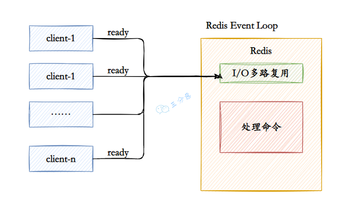
④、高效的数据结构，Redis 提供了多种高效的数据结构，如字符串（String）、列表（List）、集合（Set）、有序集合（Sorted Set）等，这些数据结构经过了高度优化，能够支持快速的数据操作。
5.能说一下 I/O 多路复用吗？
IO 多路复用是一种高效管理多个 IO 事件的技术，通过单线程监控多个文件描述符（fd），实现高并发的 IO 操作。
常见的 I/O 多路复用机制包括 select、poll 和 epoll 等。
| 特性 | select | poll | epoll |
|---|---|---|---|
| 文件描述符限制 | 受 FD_SETSIZE 限制 | 无限制 | 无限制 |
| 时间复杂度 | O(n) | O(n) | O(1) |
| 数据复制 | 需要 | 需要 | 不需要 |
| 工作方式 | 线性扫描 | 线性扫描 | 事件通知 |
| 内核支持 | 所有 UNIX 系统 | 所有 UNIX 系统 | Linux 2.6 及以上版本 |
| 适用场景 | 少量连接 | 中等连接 | 大量并发连接 |
比如说你是一名数学老师，上课时提出了一个问题：“今天谁来证明一下勾股定律？”
同学小王举手，你就让小王回答；小李举手，你就让小李回答；小张举手，你就让小张回答。
这种模式就是 IO 多路复用，你只需要在讲台上等，谁举手谁回答，不需要一个一个去问。
Redis 就是使用 epoll 这样的 I/O 多路复用机制，在单线程模型下实现高效的网络 I/O，从而支持高并发的请求处理。
举例子说一下 I/O 多路复用？
假设你是一个老师，让 30 个学生解答一道题目，然后检查学生做的是否正确，你有下面几个选择：
- 第一种选择：按顺序逐个检查，先检查 A，然后是 B，之后是 C、D。。。这中间如果有一个学生卡住，全班都会被耽误。这种模式就好比，你用循环挨个处理 socket，根本不具有并发能力。
- 第二种选择：你创建 30 个分身，每个分身检查一个学生的答案是否正确。 这种类似于为每一个用户创建一个进程或者线程处理连接。
- 第三种选择，你站在讲台上等，谁解答完谁举手。这时 C、D 举手，表示他们解答问题完毕，你下去依次检查 C、D 的答案，然后继续回到讲台上等。此时 E、A 又举手，然后去处理 E 和 A。
第一种就是阻塞 IO 模型，第三种就是 I/O 复用模型。
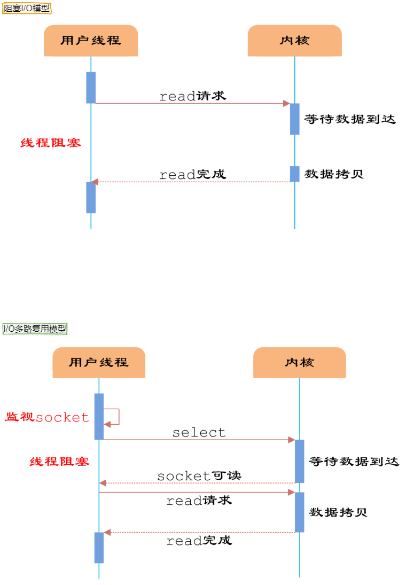
Linux 系统有三种方式实现 IO 多路复用：select、poll 和 epoll。
例如 epoll 方式是将用户 socket 对应的 fd 注册进 epoll，然后 epoll 帮你监听哪些 socket 上有消息到达，这样就避免了大量的无用操作。此时的 socket 应该采用非阻塞模式。
这样，整个过程只在进行 select、poll、epoll 这些调用的时候才会阻塞，收发客户消息是不会阻塞的，整个进程或者线程就被充分利用起来，这就是事件驱动，所谓的 reactor 模式。
select、poll 和 epoll 的实现原理？
select 使用位图管理 fd，每次调用都需要将 fd 集合从用户态复制到内核态。最大支持 1024 个文件描述符。
poll 使用动态数组管理 fd，突破了 select 的数量限制。
epoll 使用红黑树和链表管理 fd，每次调用只需要将 fd 集合从用户态复制到内核态一次，不需要重复复制。
6. Redis 为什么早期选择单线程？
官方解释：https://redis.io/topics/faq
 官方 FAQ 表示，因为 Redis 是基于内存的操作，CPU 成为 Redis 的瓶颈的情况很少见，Redis 的瓶颈最有可能是内存的大小或者网络限制。
官方 FAQ 表示，因为 Redis 是基于内存的操作，CPU 成为 Redis 的瓶颈的情况很少见，Redis 的瓶颈最有可能是内存的大小或者网络限制。
如果想要最大程度利用 CPU，可以在一台机器上启动多个 Redis 实例。
PS：网上有这样的回答，吐槽官方的解释有些敷衍，其实就是历史原因，开发者嫌多线程麻烦，后来这个 CPU 的利用问题就被抛给了使用者。
同时 FAQ 里还提到了， Redis 4.0 之后开始变成多线程，除了主线程外，它也有后台线程在处理一些较为缓慢的操作，例如清理脏数据、无用连接的释放、大 Key 的删除等等。
7.Redis 6.0 使用多线程是怎么回事?
单线程模型意味着 Redis 在大量 IO 请求时，无法充分利用多核 CPU 的优势。

在 Redis 6.0 中，多线程主要用来处理网络 IO 操作，命令解析和执行仍然是单线程完成，这样既可以发挥多核 CPU 的优势，又能避免锁和上下文切换带来的性能损耗。
8.说说 Redis 常用命令（补充）
2024 年 04 月 11 日增补
①、操作字符串的命令有：
SET key value：设置键 key 的值为 value。GET key：获取键 key 的值。DEL key：删除键 key。INCR key：将键 key 存储的数值增一。DECR key：将键 key 存储的数值减一。
②、操作列表的命令有：
LPUSH key value：将一个值插入到列表 key 的头部。RPUSH key value：将一个值插入到列表 key 的尾部。LPOP key：移除并返回列表 key 的头元素。RPOP key：移除并返回列表 key 的尾元素。LRANGE key start stop：获取列表 key 中指定范围内的元素。
③、操作集合的命令有：
SADD key member：向集合 key 添加一个元素。SREM key member：从集合 key 中移除一个元素。SMEMBERS key：返回集合 key 中的所有元素。
④、操作有序集合的命令有：
ZADD key score member：向有序集合 key 添加一个成员，或更新其分数。ZRANGE key start stop [WITHSCORES]：按照索引区间返回有序集合 key 中的成员，可选 WITHSCORES 参数返回分数。ZREVRANGE key start stop [WITHSCORES]：返回有序集合 key 中，指定区间内的成员，按分数递减。ZREM key member：移除有序集合 key 中的一个或多个成员。
⑤、操作哈希的命令有：
HSET key field value：向键为 key 的哈希表中设置字段 field 的值为 value。HGET key field：获取键为 key 的哈希表中字段 field 的值。HGETALL key：获取键为 key 的哈希表中所有的字段和值。HDEL key field：删除键为 key 的哈希表中的一个或多个字段。
详细说说 set 命令？
在 Redis 中，设置键值对的命令是 set。set 命令有几个常用的参数：
①、可以通过 EX 或 PX 为键设置过期时间（秒或毫秒）
redis-cli SET session_id "xyz" EX 3600 # 设置键 session_id，值为 "xyz"，过期时间为 3600 秒
②、NX 选项表示只有键不存在时才设置
redis-cli SET lock_key "locked" NX
③、XX 选项表示只有键存在时才设置
redis-cli SET config "new_config" XX
sadd 命令的时间复杂度是多少？
向指定 Set 中添加 1 个或多个 member，如果指定 Set 不存在，会自动创建一个。时间复杂度 O(N) ，N 为添加的 member 个数。
incr 命令了解吗？
INCR 命令是 Redis 中的一个原子操作，用于将存储在 key 中的数值加 1。
Redis 的单线程模型确保了每个命令都是原子执行的，不会被其他命令打断。
9.单线程 Redis 的 QPS 是多少？(补充)
2024 年 4 月 14 日增补
Redis 的 QPS（Queries Per Second，每秒查询率）受多种因素影响，包括硬件配置（如 CPU、内存、网络带宽）、数据模型、命令类型、网络延迟等。
根据官方的基准测试，一个普通服务器的 Redis 实例通常可以达到每秒数万到几十万的 QPS。
可以通过 redis-benchmark 命令进行基准测试：
redis-benchmark -h 127.0.0.1 -p 6379 -c 50 -n 10000
-h：指定 Redis 服务器的地址，默认是 127.0.0.1。-p：指定 Redis 服务器的端口，默认是 6379。-c：并发连接数，即同时有多少个客户端在进行测试。-n：请求总数，即测试过程中总共要执行多少个请求。
我本机是一台 macOS，4 GHz 四核 Intel Core i7，32 GB 1867 MHz DDR3，测试结果如下：
可以看得出，每秒能处理超过 10 万次请求。
持久化
10.Redis 持久化⽅式有哪些？有什么区别？
Redis 的持久化机制保证了 Redis 服务器在重启后数据不丢失，通过 RDB 和 AOF 文件来恢复内存中原有的数据。
这两种持久化方式可以单独使用，也可以同时使用。

说一下 RDB？
RDB 持久化通过创建数据集的快照来工作，在指定的时间间隔内将 Redis 在某一时刻的数据状态保存到磁盘的一个 RDB 文件中。
可通过 save 和 bgsave 命令两个命令来手动触发 RDB 持久化操作：

①、save 命令：会同步地将 Redis 的所有数据保存到磁盘上的一个 RDB 文件中。这个操作会阻塞所有客户端请求直到 RDB 文件被完全写入磁盘。
当 Redis 数据集较大时，使用 SAVE 命令会导致 Redis 服务器停止响应客户端的请求。
不推荐在生产环境中使用，除非数据集非常小，或者可以接受服务暂时的不可用状态。
②、bgsave 命令：会在后台异步地创建 Redis 的数据快照，并将快照保存到磁盘上的 RDB 文件中。这个命令会立即返回，Redis 服务器可以继续处理客户端请求。
在 BGSAVE 命令执行期间，Redis 会继续响应客户端的请求，对服务的可用性影响较小。快照的创建过程是由一个子进程完成的，主进程不会被阻塞。是在生产环境中执行 RDB 持久化的推荐方式。
以下场景会自动触发 RDB 持久化：
①、在 Redis 配置文件（通常是 redis.conf）中，可以通过save <seconds> <changes>指令配置自动触发 RDB 持久化的条件。这个指令可以设置多次，每个设置定义了一个时间间隔（秒）和该时间内发生的变更次数阈值。
save 900 1
save 300 10
save 60 10000
save m n ： 表示 只要在 m 秒内，有 n 个键发生变动，就出发 RDB 的生成；
这意味着：
- 如果至少有 1 个键被修改，900 秒后自动触发一次 RDB 持久化。
- 如果至少有 10 个键被修改，300 秒后自动触发一次 RDB 持久化。
- 如果至少有 10000 个键被修改，60 秒后自动触发一次 RDB 持久化。
满足以上任一条件，RDB 持久化就会被自动触发。
②、当 Redis 服务器通过 SHUTDOWN 命令正常关闭时，如果没有禁用 RDB 持久化，Redis 会自动执行一次 RDB 持久化，以确保数据在下次启动时能够恢复。
③、在 Redis 复制场景中，当一个 Redis 实例被配置为从节点并且与主节点建立连接时，它可能会根据配置接收主节点的 RDB 文件来初始化数据集。这个过程中，主节点会在后台自动触发 RDB 持久化，然后将生成的 RDB 文件发送给从节点。
说一下 AOF？
AOF 持久化通过记录每个写操作命令并将其追加到 AOF 文件中来工作，恢复时通过重新执行这些命令来重建数据集。
AOF 的主要作用是解决了数据持久化的实时性，目前已经是 Redis 持久化的主流方式。
AOF 的工作流程分为四个步骤：命令写入、文件同步、文件重写、重启加载。
1）当 AOF 持久化机制被启用时，Redis 服务器会将接收到的所有写命令追加到 AOF 缓冲区的末尾。
2）接着将缓冲区中的命令刷新到磁盘的 AOF 文件中，刷新策略有三种：
- always ：每次写命令都会同步到 AOF 文件。
- everysec（默认） ：每秒同步一次。如果系统崩溃，可能会丢失最后一秒的数据。
- no ：在这种模式下，如果发生宕机，那么丢失的数据量由操作系统内核的缓存冲洗策略决定。
3）随着 AOF 文件的不断增长，Redis 会启用重写机制来生成一个更小的 AOF 文件：
- 将内存中每个键值对的当前状态转换为一条最简单的 Redis 命令，写入到一个新的 AOF 文件中。即使某个键被修改了多次，在新的 AOF 文件中也只会保留最终的状态。
- Redis 会 fork 一个子进程，子进程负责重写 AOF 文件，主进程不会被阻塞。
主进程（fork）
│
├─→ 子进程（生成新的 AOF 文件）
│ │
│ ├─→ 内存快照
│ ├─→ 写入临时 AOF 文件
│ ├─→ 通知主进程完成
│
├─→ 主进程（追加缓冲区到新 AOF 文件）
├─→ 替换旧 AOF 文件
├─→ 重写完成
4）当 Redis 服务器重启时，会读取 AOF 文件中的所有命令并重新执行它们，以恢复重启前的内存状态。
AOF 文件存储的是什么类型的数据？
AOF 文件存储的是 Redis 所有的写操作命令，比如 SET、HSET、INCR 等。
AOF 重写期间命令可能会写入两次，会造成什么影响？
AOF 重写期间，Redis 会将新的写命令同时写入旧的 AOF 文件和重写缓冲区。
这样会带来额外的磁盘开销。
但可以防止在 AOF 重写尚未完成时，Redis 发生崩溃，导致数据丢失。即使重写失败，旧的 AOF 文件仍然是完整的。
当重写完成后，会通过原子操作使用新的 AOF 文件替换旧的 AOF 文件。
11.RDB 和 AOF 各自有什么优缺点？
RDB 是一个非常紧凑的单文件（二进制文件 dump.rdb），代表了 Redis 在某个时间点上的数据快照。非常适合用于备份数据，比如在夜间进行备份，然后将 RDB 文件复制到远程服务器。但可能会丢失最后一次持久化后的数据。RDB 也是主从同步过程中使用到的文件。
AOF 的最大优点是灵活，实时性好，可以设置不同的 fsync 策略，如每秒同步一次，每次写入命令就同步，或者完全由操作系统来决定何时同步。但 AOF 文件往往比较大，恢复速度慢，因为它记录了每个写操作。
12.RDB 和 AOF 如何选择？
如果需要尽可能减少数据丢失，AOF 是更好的选择。尤其是在频繁写入的环境下，设置 AOF 每秒同步可以最大限度减少数据丢失。
如果性能是首要考虑，RDB 可能更适合。RDB 的快照生成通常对性能影响较小，并且数据恢复速度快。
如果系统需要经常重启，并且希望系统重启后快速恢复，RDB 可能是更好的选择。虽然 AOF 也提供了良好的恢复能力，但重写 AOF 文件可能会比较慢。
在许多生产环境中，同时启用 RDB 和 AOF 被认为是最佳实践：
- 使用 RDB 进行快照备份。
- 使用 AOF 保证崩溃后的最大数据完整性。
4.0 之后，有了混合模式，综合了两种方式的共同优点。
13.Redis 的数据恢复？
当 Redis 中的数据丢失时，可以从 RDB 或者 AOF 中恢复数据。
可以将 RDB 文件或者 AOF 文件复制到 Redis 的数据目录下，然后重启 Redis 服务，Redis 会自动加载数据文件并恢复数据。

Redis 启动时加载数据的流程：
- AOF 开启且存在 AOF 文件时，优先加载 AOF 文件。
- AOF 关闭或者 AOF 文件不存在时，加载 RDB 文件。
14.Redis 4.0 的混合持久化了解吗？
在 Redis 中，RDB 持久化是通过创建数据的快照来保存数据的，而 AOF 持久化则是通过记录每个写入命令来保存数据的。
两种方式各有优缺点。RDB 持久化的优点是恢复大数据集的速度比较快，但是可能会丢失最后一次快照以后的数据。AOF 持久化的优点是数据的完整性比较高，通常只会丢失一秒的数据，但是对于大数据集，AOF 文件可能会比较大，恢复的速度比较慢。
在 Redis 4.0 版本中，混合持久化模式会在 AOF 重写的时候同时生成一份 RDB 快照，然后将这份快照作为 AOF 文件的一部分，最后再附加新的写入命令。

这样，当需要恢复数据时，Redis 先加载 RDB 文件来恢复到快照时刻的状态，然后应用 RDB 之后记录的 AOF 命令来恢复之后的数据更改，既快又可靠。
如何设置持久化模式？
可以通过编辑 Redis 的配置文件 redis.conf 来进行设置，或者在运行时通过 Redis 命令行动态调整。
RDB 持久化通过在配置文件中设置快照（snapshotting）规则来启用。这些规则定义了在多少秒内如果有多少个键被修改，则自动执行一次持久化操作。
save 900 1 # 如果至少有1个键被修改，900秒后自动保存一次
save 300 10 # 如果至少有10个键被修改，300秒后自动保存一次
save 60 10000 # 如果至少有10000个键被修改，60秒后自动保存一次
AOF 持久化是通过在配置文件中设置 appendonly 参数为 yes 来启用的：
appendonly yes
此外，还可以配置 AOF 文件的写入频率，这是通过 appendfsync 设置的：
appendfsync always # 每次写入数据都同步，保证数据不丢失，但性能较低
appendfsync everysec # 每秒同步一次，折衷方案
appendfsync no # 由操作系统决定何时同步，性能最好，但数据安全性最低
为了优化 AOF 文件的大小，Redis 允许自动或手动重写 AOF 文件。可以在配置文件中设置重写的触发条件：
auto-aof-rewrite-percentage 100 # 增长到原大小的100%时触发重写
auto-aof-rewrite-min-size 64mb # AOF 文件至少达到64MB时才考虑重写
手动执行 AOF 重写的命令是：
redis-cli bgrewriteaof
如果决定同时使用 RDB 和 AOF，可以在配置文件中同时启用两者。
save 900 1
appendonly yes
还可以在运行时动态更改：
redis-cli config set save "900 1 300 10 60 10000"
redis-cli config set appendonly yes
redis-cli config set appendfsync everysec
高可用
Redis 除了单机部署外，还可以通过主从复制、哨兵模式和集群模式来实现高可用。
主从复制：允许一个 Redis 服务器（主节点）将数据复制到一个或多个 Redis 服务器（从节点）。这种方式可以实现读写分离，适合读多写少的场景。
哨兵模式：用于监控主节点和从节点的状态，实现自动故障转移。如果主节点发生故障，哨兵可以自动将一个从节点升级为新的主节点。
集群模式：Redis 集群通过分片的方式存储数据，每个节点存储数据的一部分，用户请求可以并行处理。集群模式支持自动分区、故障转移，并且可以在不停机的情况下进行节点增加或删除。
15.主从复制了解吗？
主从复制是指将一台 Redis 服务器的数据，复制到其他的 Redis 服务器。
前者称为主节点 master，后者称为从节点 slave。且数据的复制是单向的，只能由主节点到从节点。

在 Redis 主从架构中，主节点负责处理所有的写操作，并将这些操作异步复制到从节点。从节点主要用于读取操作，以分担主节点的压力和提高读性能。
主从复制主要的作用是什么?
①、数据冗余： 主从复制实现了数据的热备份，是持久化之外的一种数据冗余方式。
②、故障恢复： 如果主节点挂掉了，可以将一个从节点提升为主节点，从而实现故障的快速恢复。
通常会使用 Sentinel 哨兵来实现自动故障转移，当主节点挂掉时，Sentinel 会自动将一个从节点升级为主节点，保证系统的可用性。
# sentinel.conf
port 26379
sentinel monitor mymaster 192.168.1.1 6379 2
sentinel down-after-milliseconds mymaster 5000
sentinel failover-timeout mymaster 60000
sentinel parallel-syncs mymaster 1
假如是从节点挂掉了，主节点不受影响，但应该尽快修复并重启挂掉的从节点，使其重新加入集群并从主节点同步数据。
③、负载均衡： 在主从复制的基础上，配合读写分离，可以由主节点提供写服务，由从节点提供读服务 （即写 Redis 时连接主节点，读 Redis 时连接从节点），分担服务器负载。尤其是在写少读多的场景下，通过多个从节点分担读负载，可以大大提高 Redis 服务器的并发量。
④、高可用基石： 除了上述作用以外，主从复制还是哨兵和集群能够实施的 基础。
主从复制出现数据不一致怎么办？
Redis 的主从复制是异步进行的，这意味着主节点在执行完写操作后，会立即返回给客户端，而不是等待从节点完成数据同步。
在主节点将数据同步到从节点的过程中，可能会出现网络延迟或中断，从而导致从节点的数据滞后于主节点。
为了解决数据不一致的问题，应该尽量保证主从节点之间的网络连接状况良好，比如说避免在不同机房之间部署主从节点，以减少网络延迟。但可能会带来新的问题，就是整个机房都挂掉的情况。
此外，Redis 本身也提供了一些机制来解决数据不一致的问题，比如说通过 Redis 的 INFO replication 命令监控主从节点的复制进度，及时发现和处理复制延迟。
具体做法是获取主节点的 master_repl_offset 和从节点的 slave_repl_offset，计算两者的差值。如果差值超过预设的阈值，采取措施（如停止从节点的数据读取）以减少读到不一致数据的情况。

Redis 解决单点故障主要靠什么？
主从复制，当主节点发生故障时，可以通过手动或自动方式将某个从节点提升为新的主节点，继续对外提供服务，从而避免单点故障。
Redis 的哨兵机制（Sentinel）可以实现自动化的故障转移，当主节点宕机时，哨兵会自动将一个从节点升级为新的主节点。
另外，集群模式下，当某个节点发生故障时，Redis Cluster 会自动将请求路由到其他节点，并通过从节点进行故障恢复。
16.Redis 主从有几种常见的拓扑结构？
Redis 的复制拓扑结构可以支持单层或多层复制关系，根据拓扑复杂性可以分为以下三种：一主一从、一主多从、树状主从结构。
1.一主一从结构
一主一从结构是最简单的复制拓扑结构，用于主节点出现宕机时从节点提供故障转移支持。

2.一主多从结构
一主多从结构（又称为星形拓扑结构）使得应用端可以利用多个从节点实现读写分离（见图 6-5）。对于读占比较大的场景，可以把读命令发送到从节点来分担主节点压力。
3.树状主从结构
树状主从结构（又称为树状拓扑结构）使得从节点不但可以复制主节点数据，同时可以作为其他从节点的主节点继续向下层复制。通过引入复制中间层，可以有效降低主节点负载和需要传送给从节点的数据量。
17.Redis 的主从复制原理了解吗？
Redis 主从复制的工作流程大概可以分为如下几步：

- 保存主节点（master）信息 这一步只是保存主节点信息，保存主节点的 ip 和 port。
- 主从建立连接 从节点（slave）发现新的主节点后，会尝试和主节点建立网络连接。
- 发送 ping 命令 连接建立成功后从节点发送 ping 请求进行首次通信，主要是检测主从之间网络套接字是否可用、主节点当前是否可接受处理命令。
- 权限验证 如果主节点要求密码验证，从节点必须正确的密码才能通过验证。
- 同步数据集 主从复制连接正常通信后，主节点会把持有的数据全部发送给从节点。
- 命令持续复制 接下来主节点会持续地把写命令发送给从节点，保证主从数据一致性。
18.说说主从数据同步的方式？
Redis 在 2.8 及以上版本使用 psync 命令完成主从数据同步，同步过程分为：全量复制和部分复制。
全量复制 一般用于初次复制场景，Redis 早期支持的复制功能只有全量复制，它会把主节点全部数据一次性发送给从节点，当数据量较大时，会对主从节点和网络造成很大的开销。
全量复制的完整运行流程如下： 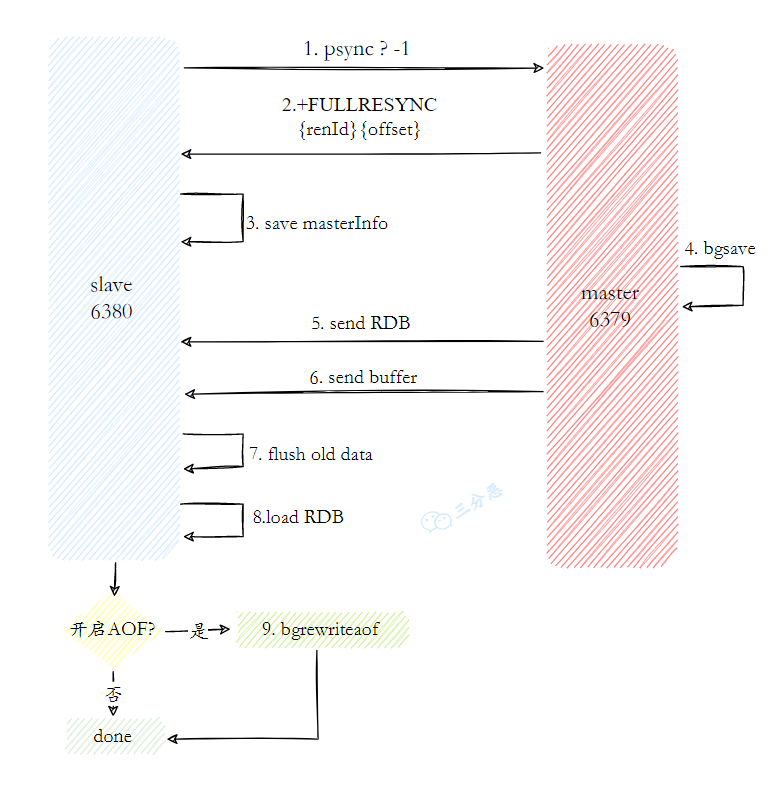
- 发送 psync 命令进行数据同步，由于是第一次进行复制，从节点没有复制偏移量和主节点的运行 ID，所以发送 psync-1。
- 主节点根据 psync-1 解析出当前为全量复制，回复+FULLRESYNC 响应。
- 从节点接收主节点的响应数据保存运行 ID 和偏移量 offset
- 主节点执行 bgsave 保存 RDB 文件到本地
- 主节点发送 RDB 文件给从节点，从节点把接收的 RDB 文件保存在本地并直接作为从节点的数据文件
- 对于从节点开始接收 RDB 快照到接收完成期间，主节点仍然响应读写命令，因此主节点会把这期间写命令数据保存在复制客户端缓冲区内，当从节点加载完 RDB 文件后，主节点再把缓冲区内的数据发送给从节点，保证主从之间数据一致性。
- 从节点接收完主节点传送来的全部数据后会清空自身旧数据
- 从节点清空数据后开始加载 RDB 文件
- 从节点成功加载完 RDB 后，如果当前节点开启了 AOF 持久化功能， 它会立刻做 bgrewriteaof 操作，为了保证全量复制后 AOF 持久化文件立刻可用。
部分复制 部分复制主要是 Redis 针对全量复制的过高开销做出的一种优化措施， 使用 psync{runId}{offset}命令实现。当从节点（slave）正在复制主节点 （master）时，如果出现网络闪断或者命令丢失等异常情况时，从节点会向 主节点要求补发丢失的命令数据，如果主节点的复制积压缓冲区内存在这部分数据则直接发送给从节点，这样就可以保持主从节点复制的一致性。
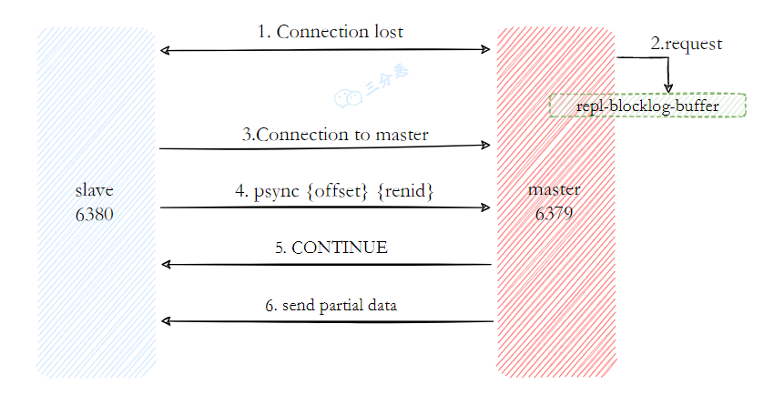
- 当主从节点之间网络出现中断时，如果超过 repl-timeout 时间，主节点会认为从节点故障并中断复制连接
- 主从连接中断期间主节点依然响应命令，但因复制连接中断命令无法发送给从节点，不过主节点内部存在的复制积压缓冲区，依然可以保存最近一段时间的写命令数据，默认最大缓存 1MB。
- 当主从节点网络恢复后，从节点会再次连上主节点
- 当主从连接恢复后，由于从节点之前保存了自身已复制的偏移量和主节点的运行 ID。因此会把它们当作 psync 参数发送给主节点，要求进行部分复制操作。
- 主节点接到 psync 命令后首先核对参数 runId 是否与自身一致，如果一 致，说明之前复制的是当前主节点；之后根据参数 offset 在自身复制积压缓冲区查找，如果偏移量之后的数据存在缓冲区中，则对从节点发送+CONTINUE 响应，表示可以进行部分复制。
- 主节点根据偏移量把复制积压缓冲区里的数据发送给从节点，保证主从复制进入正常状态。
19.主从复制存在哪些问题呢？
Redis 主从复制虽然实现了读写分离和数据备份，但也存在一些明显的缺点：
- 由于主从复制是异步的，如果主节点在数据尚未完全同步到从节点时崩溃，会导致数据丢失。
- 写操作集中在主节点，从节点只能处理读操作，无法分担写入压力。
- 在网络分区的情况下，主节点和从节点可能无法相互通信，导致两个节点都被认为是主节点，形成多个主节点的情况，也就是脑裂。
脑裂问题了解吗？
Redis 的脑裂问题是指在主从模式或集群模式下，由于网络分区或节点故障，可能导致系统中出现多个主节点，从而引发数据不一致、数据丢失等问题。
可以通过 Sentinel 模式和 Cluster 模式中的投票机制和强制下线机制来解决。
- Java 面试指南（付费）收录的同学 30 腾讯音乐面试原题：主从复制有什么缺点呢？redis 的脑裂问题
20.Redis 哨兵了解吗？
哨兵（Sentinel）机制是 Redis 提供的一个高可用性解决方案，主要用来监控 Redis 主从架构中的实例，并在主节点出现故障时，自动进行故障转移。

- Java 面试指南（付费）收录的比亚迪面经同学 1 面试原题：Redis 的哨兵机制了解吗？
21.Redis 哨兵实现原理知道吗？
哨兵的工作流程包括定时监控、主观下线和客观下线、领导者 Sentinel 节点选举、故障转移等。

每个 Sentinel 实例会定期通过 PING 命令向主节点和从节点发送心跳包。

如果一个节点长时间没有响应 PING 命令，Sentinel 会将该节点标记为主观下线。当多个 Sentinel 同时认为一个节点不可用时，该节点被标记为客观下线。
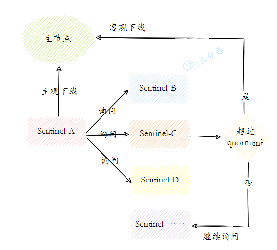
当主节点被确认下线后，Sentinel 之间会通过类似 Raft 的选举算法进行协商，选出一个领导者 Sentinel 来负责执行故障转移。
- 将某个从节点提升为新的主节点。
- 通知其他从节点重新复制新的主节点的数据。
- Java 面试指南（付费）收录的 OPPO 面经同学 1 面试原题：Redis 的 Sentinel 和 Cluster 怎么理解？说一下大概原理
22.领导者 Sentinel 节点选举了解吗？
Redis 使用 Raft 算法实现领导者选举的：当主节点挂掉后，新的主节点是由剩余的从节点发起选举后晋升的。
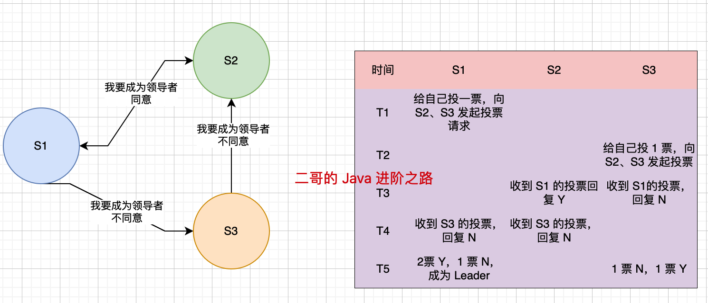
①、每个在线的 Sentinel 节点都有资格成为领导者，当它确认主节点下线时候，会向其他哨兵节点发送命令，表明希望由自己来执行主从切换，并让所有其他哨兵进行投票。
这个投票过程称为“Leader 选举”。候选者会给自己先投 1 票，然后向其他 Sentinel 节点发送投票的请求。
②、收到请求的 Sentinel 节点会进行判断，如果候选者的日志与自己的日志一样新，任期号也小于自己，且之前没有投票过，就会同意投票，回复 Y。否则回复 N。
③、候选者收到投票后会统计支持自己的得票数，如果候选者获得了集群中超过半数节点的投票支持（即多数原则），它将成为新的主节点。
新的主节点在确立后，会向其他从节点发送心跳信号，告诉它们自己已经成为主节点，并将其他节点的状态重置为从节点。
④、如果多个节点同时成为候选者，并且都有可能获得足够的票数，这种情况下可能会出现选票分裂。也就是没有候选者获得超过半数的选票，那么这次选举就会失败，所有候选者都会再次发起选举。
为了防止无限制的选举失败，每个节点都会有一个选举超时时间，且是随机的。
超时时间指从节点在没有收到主节点的心跳信号或日志追加请求后，等待多长时间才会认为主节点已挂掉，从而进入候选状态并发起选举。
推荐阅读：Raft 算法的选主过程详解
- Java 面试指南（付费）收录的 8 后端开发秋招一面面试原题：raft 主节点挂了怎么选从节点
23.新的主节点是怎样被挑选出来的？
选出新的主节点，大概分为这么几步： 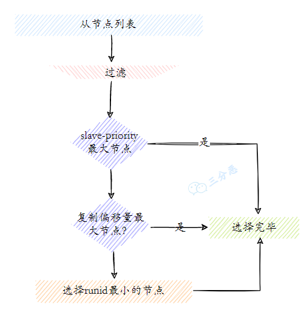
- 过滤：“不健康”（主观下线、断线）、5 秒内没有回复过 Sentinel 节 点 ping 响应、与主节点失联超过 down-after-milliseconds*10 秒。
- 选择 slave-priority（从节点优先级）最高的从节点列表，如果存在则返回，不存在则继续。
- 选择复制偏移量最大的从节点（复制的最完整），如果存在则返 回，不存在则继续。
- 选择 runid 最小的从节点。
24.Redis 集群了解吗？
前面说到了主从存在高可用和分布式的问题，哨兵解决了高可用的问题，而集群就是终极方案，一举解决高可用和分布式问题。
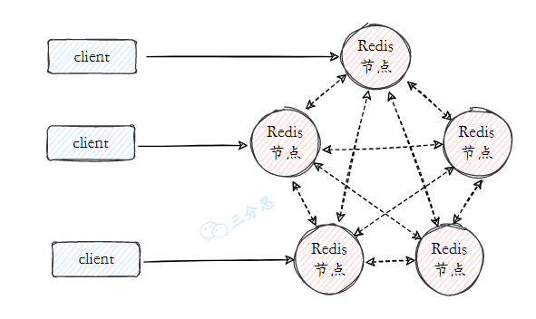
-
数据分区： 数据分区 (或称数据分片) 是集群最核心的功能。集群将数据分散到多个节点，一方面 突破了 Redis 单机内存大小的限制，存储容量大大增加；另一方面 每个主节点都可以对外提供读服务和写服务，大大提高了集群的响应能力。
-
高可用： 集群支持主从复制和主节点的 自动故障转移 （与哨兵类似），当任一节点发生故障时，集群仍然可以对外提供服务。
25.Redis Cluster 了解吗？（补充）
2024 年 04 月 26 日新增
切片集群是一种将数据分片存储在多个 Redis 实例上的集群架构，每个 Redis 实例负责存储部分数据。比如说把 25G 的数据平均分为 5 份，每份 5G，然后启动 5 个 Redis 实例，每个实例保存一份数据。

在 Redis 3.0 之前，官方并没有针对切片集群提供具体的解决方案；但是在 Redis 3.0 之后，官方提供了 Redis Cluster，数据和实例之间的映射通过哈希槽（hash slot）来实现。
Redis Cluster 有 16384 个哈希槽，每个键根据其名字的 CRC16 值被映射到这些哈希槽上。然后，这些哈希槽会被均匀地分配到所有的 Redis 实例上。
CRC16 是一种哈希算法，它可以将任意长度的输入数据映射为一个 16 位的哈希值。
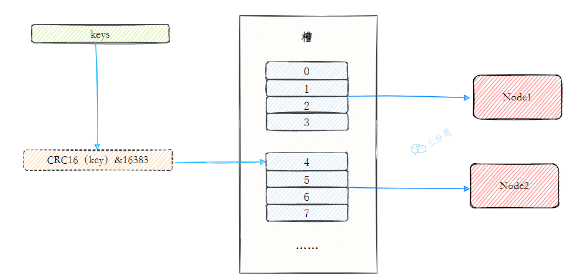
例如，如果我们有 3 个 Redis 实例，那么每个实例可能会负责大约 5461 个哈希槽。
当需要存储或检索一个键值对时，Redis Cluster 会先计算这个键的哈希槽，然后找到负责这个哈希槽的 Redis 实例，最后在这个实例上进行操作。
- Java 面试指南（付费）收录的字节跳动面经同学 1 Java 后端技术一面面试原题：Redis 切片集群？数据和实例之间的如何进行映射？
- Java 面试指南（付费）收录的快手面经同学 1 部门主站技术部面试原题：Redis 的 cluster 集群如何实现？
26.集群中数据如何分区？
在 Redis 集群中，数据分区是通过将数据分散到不同的节点来实现的，常见的数据分区规则有三种：节点取余分区、一致性哈希分区、虚拟槽分区。
说说节点取余分区
节点取余分区是一种简单的分区策略，其中数据项通过对某个值（通常是键的哈希值）进行取余操作来分配到不同的节点。
类似 HashMap 中的取余操作，数据项的键经过哈希函数计算后，对节点数量取余，然后将数据项分配到余数对应的节点上。
缺点是扩缩容时，大多数数据需要重新分配，因为节点总数的改变会影响取余结果，这可能导致大量数据迁移。

说说一致性哈希分区
一致性哈希分区的原理是：将哈希值空间组织成一个环，数据项和节点都映射到这个环上。数据项由其哈希值直接映射到环上，然后顺时针分配到遇到的第一个节点。
从而来减少节点变动时数据迁移的量。

Key 1 和 Key 2 会落入到 Node 1 中，Key 3、Key 4 会落入到 Node 2 中，Key 5 落入到 Node 3 中，Key 6 落入到 Node 4 中。
这种方式相比节点取余最大的好处在于加入和删除节点只影响哈希环中相邻的节点，对其他节点无影响。
但它还是存在问题：
- 节点在圆环上分布不平均，会造成部分缓存节点的压力较大
- 当某个节点故障时，这个节点所要承担的所有访问都会被顺移到另一个节点上，会对后面这个节点造成压力。
说说虚拟槽分区？
在虚拟槽（也叫哈希槽）分区中，槽位的数量是固定的（例如 Redis Cluster 有 16384 个槽），每个键通过哈希算法（比如 CRC16）映射到这些槽上，每个集群节点负责管理一定范围内的槽。
这种分区可以灵活地将槽（以及槽中的数据）从一个节点迁移到另一个节点，从而实现平滑扩容和缩容；数据分布也更加均匀，Redis Cluster 采用的正是这种分区方式。
假设系统中有 4 个实际节点，假设为其分配了 16 个槽(0-15)；
- 槽 0-3 位于节点 node1；
- 槽 4-7 位于节点 node2；
- 槽 8-11 位于节点 node3；
- 槽 12-15 位于节点 node4。
如果此时删除 node2，只需要将槽 4-7 重新分配即可，例如将槽 4-5 分配给 node1，槽 6 分配给 node3，槽 7 分配给 node4，数据在节点上的分布仍然较为均衡。
如果此时增加 node5，也只需要将一部分槽分配给 node5 即可，比如说将槽 3、槽 7、槽 11、槽 15 迁移给 node5，节点上的其他槽位保留。
当然了，这取决于 CRC16(key) % 槽的个数 的具体结果。因为在 Redis Cluster 中，槽的个数刚好是 2 的 14 次方，这和 HashMap 中数组的长度必须是 2 的幂次方有着异曲同工之妙。
它能保证扩容后，大部分数据停留在扩容前的位置，只有少部分数据需要迁移到新的槽上。
- Java 面试指南（付费）收录的小米暑期实习同学 E 一面面试原题：你知道 Redis 的一致性 hash 吗
- Java 面试指南（付费）收录的字节跳动面经同学 1 Java 后端技术一面面试原题：Redis 扩容之后，哈希槽的位置是否发生变化？
- Java 面试指南（付费）收录的字节跳动面经同学 8 Java 后端实习一面面试原题：redis 分片集群，如何分片的，有什么好处
27.能说说 Redis 集群的原理吗？
Redis 集群通过数据分区来实现数据的分布式存储，通过自动故障转移实现高可用。
集群创建
数据分区是在集群创建的时候完成的。
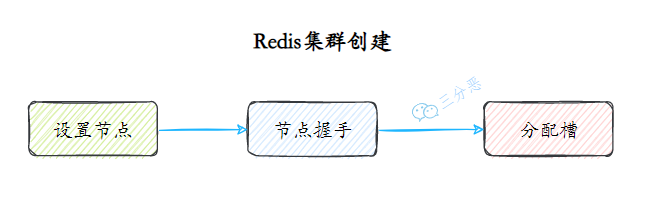
设置节点 Redis 集群一般由多个节点组成，节点数量至少为 6 个才能保证组成完整高可用的集群。每个节点需要开启配置 cluster-enabled yes，让 Redis 运行在集群模式下。

节点握手 节点握手是指一批运行在集群模式下的节点通过 Gossip 协议彼此通信， 达到感知对方的过程。节点握手是集群彼此通信的第一步，由客户端发起命 令：cluster meet{ip}{port}。完成节点握手之后，一个个的 Redis 节点就组成了一个多节点的集群。
分配槽（slot） Redis 集群把所有的数据映射到 16384 个槽中。每个节点对应若干个槽，只有当节点分配了槽，才能响应和这些槽关联的键命令。通过 cluster addslots 命令为节点分配槽。

故障转移
Redis 集群的故障转移和哨兵的故障转移类似，但是 Redis 集群中所有的节点都要承担状态维护的任务。
故障发现 Redis 集群内节点通过 ping/pong 消息实现节点通信，集群中每个节点都会定期向其他节点发送 ping 消息，接收节点回复 pong 消息作为响应。如果在 cluster-node-timeout 时间内通信一直失败，则发送节 点会认为接收节点存在故障，把接收节点标记为主观下线（pfail）状态。
当某个节点判断另一个节点主观下线后，相应的节点状态会跟随消息在集群内传播。通过 Gossip 消息传播，集群内节点不断收集到故障节点的下线报告。当 半数以上持有槽的主节点都标记某个节点是主观下线时。触发客观下线流程。
故障恢复
故障节点变为客观下线后，如果下线节点是持有槽的主节点则需要在它 的从节点中选出一个替换它，从而保证集群的高可用。

-
资格检查 每个从节点都要检查最后与主节点断线时间，判断是否有资格替换故障 的主节点。
-
准备选举时间 当从节点符合故障转移资格后，更新触发故障选举的时间，只有到达该 时间后才能执行后续流程。
-
发起选举 当从节点定时任务检测到达故障选举时间（failover_auth_time）到达后，发起选举流程。
-
选举投票 持有槽的主节点处理故障选举消息。投票过程其实是一个领导者选举的过程，如集群内有 N 个持有槽的主节 点代表有 N 张选票。由于在每个配置纪元内持有槽的主节点只能投票给一个 从节点，因此只能有一个从节点获得 N/2+1 的选票，保证能够找出唯一的从节点。

-
替换主节点 当从节点收集到足够的选票之后，触发替换主节点操作。
部署 Redis 集群至少需要几个物理节点？
在投票选举的环节，故障主节点也算在投票数内，假设集群内节点规模是 3 主 3 从，其中有 2 个主节点部署在一台机器上，当这台机器宕机时，由于从节点无法收集到 3/2+1 个主节点选票将导致故障转移失败。这个问题也适用于故障发现环节。因此部署集群时所有主节点最少需要部署在 3 台物理机上才能避免单点问题。
28.说说集群的伸缩？
Redis 集群使用数据分片和哈希槽的机制将数据分布到不同的节点上。集群扩容和缩容的关键，在于槽和节点之间的对应关系。
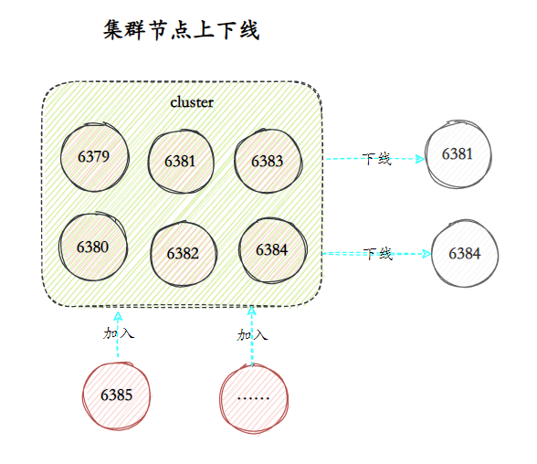
当需要扩容时，新的节点被添加到集群中，集群会自动执行数据迁移，以重新分布哈希槽到新的节点。数据迁移的过程可以确保在扩容期间数据的正常访问和插入。
当数据正在迁移时，客户端请求可能被路由到原有节点或新节点。Redis Cluster 会根据哈希槽的映射关系判断请求应该被路由到哪个节点，并在必要时进行重定向。
如果请求被路由到正在迁移数据的哈希槽，Redis Cluster 会返回一个 MOVED 响应，指示客户端重新路由请求到正确的目标节点。这种机制也就保证了数据迁移过程中的最终一致性。
当需要缩容时，Redis 集群会将槽从要缩容的节点上迁移到其他节点上，然后将要缩容的节点从集群中移除。
- Java 面试指南（付费）收录的字节跳动面经同学 21 抖音商城一面面试原题：redis 如何保证扩容过程中数据正常访问插入
GitHub 上标星 10000+ 的开源知识库《二哥的 Java 进阶之路》第一版 PDF 终于来了！包括 Java 基础语法、数组&字符串、OOP、集合框架、Java IO、异常处理、Java 新特性、网络编程、NIO、并发编程、JVM 等等，共计 32 万余字，500+张手绘图，可以说是通俗易懂、风趣幽默……详情戳：太赞了，GitHub 上标星 10000+ 的 Java 教程
微信搜 沉默王二 或扫描下方二维码关注二哥的原创公众号沉默王二，回复 222 即可免费领取。

缓存设计
29.缓存击穿、缓存穿透、缓存雪崩了解吗？
缓存穿透、缓存击穿和缓存雪崩是指在使用 Redis 做缓存时可能遇到的三种高并发场景下的问题。
什么是缓存击穿？
缓存击穿是指某一个或少数几个数据被高频访问，当这些数据在缓存中过期的那一刻，大量请求就会直接到达数据库，导致数据库瞬间压力过大。

解决⽅案：
①、加锁更新，⽐如请求查询 A，发现缓存中没有，对 A 这个 key 加锁，同时去数据库查询数据，写⼊缓存，再返回给⽤户，这样后⾯的请求就可以从缓存中拿到数据了。
②、将过期时间组合写在 value 中，通过异步的⽅式不断的刷新过期时间，防⽌此类现象。
什么是缓存穿透？
缓存穿透是指查询不存在的数据，由于缓存没有命中（因为数据根本就不存在），请求每次都会穿过缓存去查询数据库。如果这种查询非常频繁，就会给数据库造成很大的压力。

缓存穿透意味着缓存失去了减轻数据压力的意义。缓存穿透可能有两种原因：
- 自身业务代码问题
- 恶意攻击，爬虫造成空命中
它主要有两种解决办法：
①、缓存空值/默认值
客户端请求某个 ID 的数据，首先检查缓存是否命中。如果缓存未命中，查询数据库。如果数据库查询结果为空，将该空结果（如 null 或 {}）缓存起来，并设置一个合理的过期时间。当后续请求再访问相同 ID 时，缓存直接返回空结果，避免每次都打到数据库。

代码示例：
String cacheKey = "product::" + productId;
String result = cache.get(cacheKey);
if (result == null) {
result = database.queryProductById(productId);
if (result == null) {
// 缓存空值，设置较短的过期时间
cache.set(cacheKey, "null", shortTTL);
} else {
// 缓存有效数据
cache.set(cacheKey, result, longTTL);
}
}
②、布隆过滤器
通过布隆过滤器存储所有可能存在的合法数据的键，当请求到达时，先通过布隆过滤器判断该键是否存在：
- 如果布隆过滤器认为该键不存在，直接返回空，不会查询数据库。
- 如果布隆过滤器认为该键可能存在，则查询缓存和数据库。
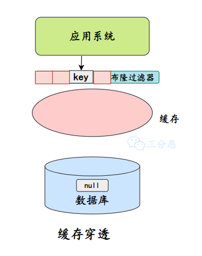
代码示例：
BloomFilter<String> bloomFilter = new BloomFilter<>(expectedInsertions, fpp); // 期望插入量和误判率
bloomFilter.put("valid_key_1");
bloomFilter.put("valid_key_2");
// 判断请求的键是否存在于布隆过滤器中
if (!bloomFilter.mightContain(requestedKey)) {
// 如果布隆过滤器认为该键不存在，则直接返回空
return null;
} else {
// 继续正常的缓存查询和数据库查询流程
}
两种解决方案的对比：

什么是缓存雪崩？
缓存雪崩是指在某一个时间点，由于大量的缓存数据同时过期或缓存服务器突然宕机了，导致所有的请求都落到了数据库上（比如 MySQL），从而对数据库造成巨大压力，甚至导致数据库崩溃的现象。
总之就是，崩了，崩的非常严重，就叫雪崩了（电影电视里应该看到过，非常夸张）。

如何解决缓存雪崩呢？
第一种：提高缓存可用性
01、集群部署：采用分布式缓存而不是单一缓存服务器，可以降低单点故障的风险。即使某个缓存节点发生故障，其他节点仍然可以提供服务，从而避免对数据库的大量直接访问。
可以利用 Redis Cluster。

或者第三方集群方案 Codis。

02、备份缓存：对于关键数据，除了在主缓存中存储，还可以在备用缓存中保存一份。当主缓存不可用时，可以快速切换到备用缓存，确保系统的稳定性和可用性。
在技术派实战项目中，我们采用了多级缓存的策略，其中就包括使用本地缓存 Guava Cache 和 Caffeine 来作为二级缓存，在 Redis 出现问题时，系统会自动切换到本地缓存。
这个过程称为“降级”，意味着系统在失去优先级高的资源时仍能继续提供服务。
当从 Redis 获取数据失败时，尝试从本地缓存读取数据。
LoadingCache<String, UserPermissions> permissionsCache = Caffeine.newBuilder()
.maximumSize(1000)
.expireAfterWrite(10, TimeUnit.MINUTES)
.build(this::loadPermissionsFromRedis);
public UserPermissions loadPermissionsFromRedis(String userId) {
try {
return redisClient.getPermissions(userId);
} catch (Exception ex) {
// Redis 异常处理，尝试从本地缓存获取
return permissionsCache.getIfPresent(userId);
}
}
第二种：过期时间
对于缓存数据，设置不同的过期时间，避免大量缓存数据同时过期。可以通过在原有过期时间的基础上添加一个随机值来实现，这样可以分散缓存过期时间，减少同一时间对数据库的访问压力。
第三种：限流和降级
通过设置合理的系统限流策略，如令牌桶或漏斗算法，来控制访问流量，防止在缓存失效时数据库被打垮。
此外，系统可以实现降级策略，在缓存雪崩或系统压力过大时，暂时关闭一些非核心服务，确保核心服务的正常运行。
- Java 面试指南（付费）收录的腾讯面经同学 22 暑期实习一面面试原题：缓存雪崩，如何解决
- Java 面试指南（付费）收录的快手面经同学 7 Java 后端技术一面面试原题：说一下 缓存穿透、缓存击穿、缓存雪崩
- Java 面试指南（付费）收录的字节跳动同学 7 Java 后端实习一面的原题：Redis 宕机会不会对权限系统有影响？
- Java 面试指南（付费）收录的字节跳动同学 7 Java 后端实习一面的原题：说一下 Redis 雪崩、穿透、击穿等场景的解决方案
- Java 面试指南（付费）收录的小米同学 F 面试原题：缓存常见问题和解决方案（引申到多级缓存），多级缓存（redis，nginx，本地缓存）的实现思路
- Java 面试指南（付费）收录的 TP 联洲同学 5 Java 后端一面的原题：如何解决缓存穿透
- Java 面试指南（付费）收录的理想汽车面经同学 2 一面面试原题：如何理解缓存雪崩、缓存击穿和缓存穿透？
30.能说说布隆过滤器吗？
布隆过滤器是一种空间效率极高的概率型数据结构，用于快速检查一个元素是否存在于一个集合中。

布隆过滤器由一个长度为 m 的位数组和 k 个哈希函数组成。
- 开始时，布隆过滤器的每个位都被设置为 0。
- 当一个元素被添加到过滤器中时，它会被 k 个哈希函数分别计算得到 k 个位置，然后将位数组中对应的位设置为 1。
- 当检查一个元素是否存在于过滤器中时，同样使用 k 个哈希函数计算位置，如果任一位置的位为 0，则该元素肯定不在过滤器中；如果所有位置的位都为 1，则该元素可能在过滤器中。
布隆过滤器存在误判吗？
布隆过滤器的优点是空间效率和查询时间都远远超过一般的算法，缺点是存在误判和删除困难。
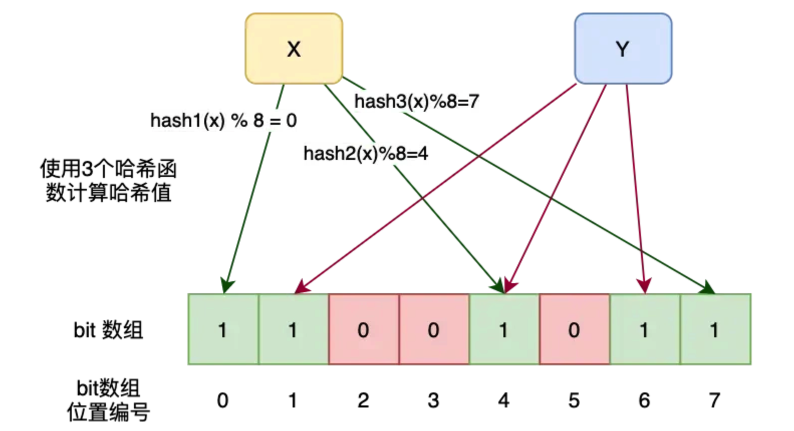
当布隆过滤器保存的元素越多，被置为 1 的 bit 位就会越多。假设元素 x 没有存储过，但其他元素的哈希函数映射到位数组的三个位刚好都为 1 且恰好覆盖了元素 x 映射的位置，那么对于布隆过滤器来讲，元素 x 这个值就是存在的，也就是说布隆过滤器存在一定的误判率。
布隆过滤器的误判率取决于以下几个因素：
- 位数组的大小（m）：位数组的大小决定了可以存储的标志位数量。如果位数组过小，那么哈希碰撞的几率就会增加，从而导致更高的误判率。
- 哈希函数的数量（k）：哈希函数的数量决定了每个元素在位数组中标记的位数。哈希函数越多，碰撞的概率也会相应变化。如果哈希函数太少，则过滤器很快会变得不精确；如果太多，误判率也会升高，效率下降。
- 存入的元素数量（n）：存入的元素越多，哈希碰撞的几率越大，从而导致更高的误判率。
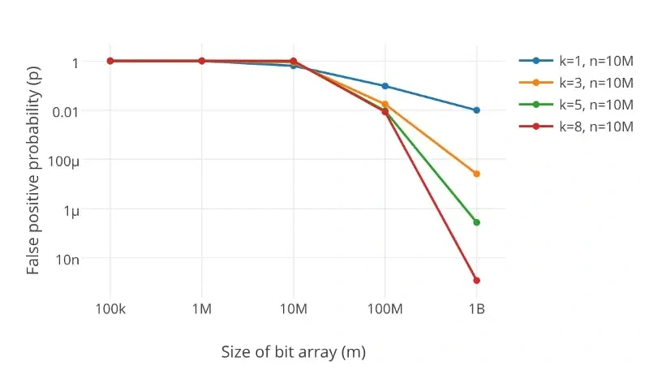
误判率公式如下：
$$ f(k) = \left( 1 - e^{- \frac{kn}{m}} \right)^k $$
虽然布隆过滤器会产生误判，但在很多场景下一定的误判率是可以接受的，这是因为布隆过滤器的主要优点是其高效的查询速度和低内存占用。相比其他精确的集合数据结构（如哈希表、树等），布隆过滤器可以在空间效率和查询速度上表现更优。
布隆过滤器支持删除吗？
布隆过滤器其实并不支持删除元素，因为多个元素可能哈希到一个布隆过滤器的同一个位置，如果直接删除该位置的元素，则会影响其他元素的判断。
为什么不能用哈希表而是用布隆过滤器？
布隆过滤器是一种基于位数组和多个哈希函数的概率型数据结构，适合在内存资源有限、数据量大且能容忍一定误判的场景下使用。
相比哈希表，布隆过滤器的内存开销非常小，能快速判断一个元素是否存在。虽然它存在误判，但不会漏报，因此在防止缓存穿透、黑名单过滤和推荐系统去重等场景中广泛使用。
哈希表虽然可以精准判断元素存在与否，但需要存储实际数据，内存开销大，不适合大规模数据存储。
布隆过滤器的优点？
- 内存效率高：布隆过滤器只需要存储每个元素的哈希值，而不需要存储元素本身，因此内存占用非常小。
- 查询速度快：布隆过滤器只需要将元素通过多个哈希函数映射到位数组，并检查位状态即可。它不需要哈希表那样的复杂键值操作，时间复杂度接近常数时间，速度非常快。
- Java 面试指南（付费）收录的字节跳动同学 7 Java 后端实习一面的原题：有了解过布隆过滤器吗？
- Java 面试指南（付费）收录的 TP 联洲同学 5 Java 后端一面的原题：布隆过滤器原理，这种方式下 5%的错误率可接受？
- Java 面试指南（付费）收录的美团同学 9 一面面试原题：布隆过滤器？布隆过滤器优点？为什么不能用哈希表要用布隆过滤器？
- Java 面试指南（付费）收录的理想汽车面经同学 2 一面面试原题：追问：说明一下布隆过滤器
31.如何保证缓存和数据库的数据⼀致性？
在技术派实战项目中，我们采用的是先写 MySQL，再删除 Redis 的方式来保证缓存和数据库的数据一致性。
我举例说明一下。
对于第一次查询，请求 B 查询到的缓存数据是 10，但 MySQL 被请求 A 更新为了 11，此时数据库和缓存不一致。
但也只存在这一次不一致的情况，对于不是强一致性的业务，可以容忍。
当请求 B 第二次查询时，因为请求 A 更新完数据库把缓存删除了，所以请求 B 这次不会命中缓存，会重新查一次 MySQL，然后回写到 Redis。
缓存和数据库又一致了。
那再来说说为什么要删除缓存而不是更新缓存
因为相对而言，删除缓存的速度比更新缓存的速度要快得多。举个例子：假设商品 product_123 的当前库存是 10，现在有一次购买操作，库存减 1，我们需要更新 Redis 中的库存信息。
product_id = "product_123"
# 假设这是购买操作后的新库存值
new_stock = 9
# 更新Redis中的库存信息
redis.set(product_id, new_stock)
更新操作至少涉及到两个步骤：计算新的库存值和更新 Redis 中的库存值。
假如是直接删除操作，直接就一步到位了：
product_id = "product_123"
# 删除Redis中的库存缓存
redis.del(product_id)

假如是更新缓存，那么可能请求 A 更新完 MySQL 后在更新 Redis 中，请求 B 已经读取到 Redis 中的旧值返回了，又一次导致了缓存和数据库不一致。
那再说说为什么要先更新数据库，再删除缓存
因为更新数据库的速度比删除缓存的速度要慢得多。因为更新 MySQL 是磁盘 IO 操作，而 Redis 是内存操作。内存操作比磁盘 IO 快得多（这是硬件层面的天然差距）。
那假如是先删除缓存，再更新数据库，就会造成这样的情况：
缓存中不存在，数据库又没有完成更新，此时有请求进来读取数据，并写入到缓存，那么在更新完缓存后，缓存中这个 key 就成了一个脏数据。
目前最流行的缓存读写策略 Cache Aside Pattern（旁路缓存模式）就是采用的先写数据库，再删缓存的方式。
- 失效：应用程序先从缓存读取数据，如果数据不存在，再从数据库中读取数据，成功后，放入缓存。
- 命中：应用程序从缓存读取数据，如果数据存在，直接返回。
- 更新：先把数据写入数据库，成功后，再让缓存失效。
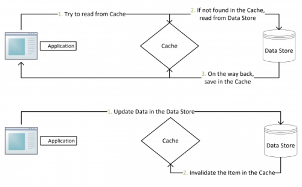
那假如对一致性要求很高，该怎么办呢？
缓存和数据库数据不一致的原因，常见的有两种：
- 缓存删除失败
- 并发导致写入了脏数据
那通常有四种方案可以解决。
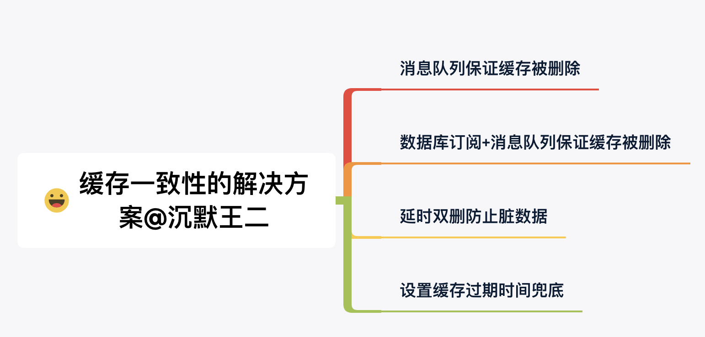
①、引入消息队列保证缓存被删除
使用消息队列（如 Kafka、RabbitMQ）保证数据库更新和缓存更新之间的最终一致性。当数据库更新完成后，将更新事件发送到消息队列。有专门的服务监听这些事件并负责更新或删除缓存。

这种方案很不错，缺点是对业务代码有一定的侵入，毕竟引入了消息队列嘛。
②、数据库订阅+消息队列保证缓存被删除
可以专门起一个服务（比如 Canal，阿里巴巴 MySQL binlog 增量订阅&消费组件）去监听 MySQL 的 binlog，获取需要操作的数据。

然后用一个公共的服务获取订阅程序传来的信息，进行缓存删除。

这种方式虽然降低了对业务的侵入，但增加了整个系统的复杂度，适合基建完善的大厂。
③、延时双删防止脏数据
简单说，就是在第一次删除缓存之后，过一段时间之后，再次删除缓存。
主要针对缓存不存在，但写入了脏数据的情况。在先删缓存，再写数据库的更新策略下发生的比较多。

这种方式的延时时间需要仔细考量和测试。
④：设置缓存过期时间兜底
这是一个朴素但有用的兜底策略，给缓存设置一个合理的过期时间，即使发生了缓存和数据库的数据不一致问题，也不会永远不一致下去，缓存过期后，自然就一致了。
- Java 面试指南（付费）收录的华为面经同学 8 技术二面面试原题：怎样保证数据的最终一致性？
- Java 面试指南（付费）收录的腾讯面经同学 23 QQ 后台技术一面面试原题：数据一致性问题
- Java 面试指南（付费）收录的微众银行同学 1 Java 后端一面的原题：MySQL 和缓存一致性问题了解吗？
- Java 面试指南（付费）收录的美团面经同学 3 Java 后端技术一面面试原题：如何保证 redis 缓存与数据库的一致性，为什么这么设计
- Java 面试指南（付费）收录的比亚迪面经同学 12 Java 技术面试原题：怎么解决 redis 和 mysql 的缓存一致性问题
- Java 面试指南（付费）收录的字节跳动同学 17 后端技术面试原题：双写一致性怎么解决的
- Java 面试指南（付费）收录的京东面经同学 9 面试原题：redis 的数据和缓存不一致应该处理
32.如何保证本地缓存和分布式缓存的一致？
在技术派实战项目中，为了减轻 Redis 的负载，我又追加了一层本地缓存 Caffeine。
为了保证本地缓存和 Redis 缓存的一致性，通常采用的策略有：
①、设置本地缓存的过期时间，这是最简单也是最直接的方法，当本地缓存过期时，就从 Redis 缓存中去同步。
②、使用 Redis 的 Pub/Sub 机制，当 Redis 缓存发生变化时，发布一个消息，本地缓存订阅这个消息，然后删除对应的本地缓存。
③、Redis 缓存发生变化时，引入消息队列，比如 RocketMQ、RabbitMQ 去更新本地缓存。

由于技术派本身对缓存的一致性要求不是特别高，所以我就采用第一种方式。
另外，在技术派实战项目中，我对缓存的使用场景做了细化。比如说，使用 CacheBuilder 来完成 Guava Cache 的构建，像一些简单的缓存场景，比如说获取菜单分类、获取登录验证码、获取用户转存图片等，都使用了 Guava Cache。
像首页侧边栏、专栏侧边栏、文章详情侧边栏等缓存场景，就使用了 Caffeine 作为本地缓存，通过 @Cacheable、@CacheEvit、@CachePut 等注解实现，非常轻巧。
而像用户 Session 和网站地图 SiteMap 等缓存场景，就使用了 Redis 来作为缓存。
如果在项目中多个地方都要使用到二级缓存的逻辑，如何设计这一块？
在设计时，应该清楚地区分何时使用一级缓存和何时使用二级缓存。通常情况下，对于频繁访问但不经常更改的数据，可以放在本地缓存中以提供最快的访问速度。而对于需要共享或者一致性要求较高的数据，应当放在一级缓存中。
本地缓存和 Redis 缓存的区别和效率对比？
Redis 可以部署在多个节点上，支持数据分片，适用于跨服务器的缓存共享。而本地缓存只能在单个服务器上使用。
Redis 还可以持久化数据，支持数据备份和恢复，适用于对数据安全性要求较高的场景。并且支持发布/订阅、事务、Lua 脚本等高级功能。
效率上，Redis 和本地缓存都是存储在内存中，读写速度都非常快。
- Java 面试指南（付费）收录的字节跳动同学 7 Java 后端实习一面的原题：怎么保证二级缓存和 Redis 缓存的数据一致性？
- Java 面试指南（付费）收录的华为面经同学 11 面试原题：使用的 guava cache 和 redis 是如何组合使用的？如果在项目中多个地方都要使用到二级缓存的逻辑，如何设计这一块？
- Java 面试指南（付费）收录的去哪儿同学 1 技术二面的原题：redis 和本地缓存的区别，哪个效率高
- Java 面试指南（付费）收录的拼多多面经同学 8 一面面试原题：缓存一致性如何保证
33.怎么处理热 key？
推荐阅读：
所谓的热 key，就是指在很短时间内被频繁访问的键。
比如，热门新闻或热门商品，这类 key 通常会有大流量的访问，对存储这类信息的 Redis 来说，是不小的压力。
某天某流量明星突然爆出一个大瓜，微博突然就崩了，这就是热 key 的压力。
再比如说 Redis 是集群部署，热 key 可能会造成整体流量的不均衡（网络带宽、CPU 和内存资源），个别节点出现 OPS 过大的情况，极端情况下热点 key 甚至会超过 Redis 本身能够承受的 OPS。
OPS（Operations Per Second）是 Redis 的一个重要指标，表示 Redis 每秒钟能够处理的命令数。
通常以 Key 被请求的频率来判定，比如：
- QPS 集中在特定的 Key：总的 QPS（每秒查询率）为 10000，其中一个 Key 的 QPS 飙到了 8000。
- 带宽使用率集中在特定的 Key：一个拥有上千成员且总大小为 1M 的哈希 Key，每秒发送大量的 HGETALL 请求。
- CPU 使用率集中在特定的 Key：一个拥有数万个成员的 ZSET Key，每秒发送大量的 ZRANGE 请求。
- HGETALL 命令用于返回哈希表中，所有的字段和值。
- ZRANGE 命令用于返回有序集中，指定区间内的成员。
怎么处理热 key？
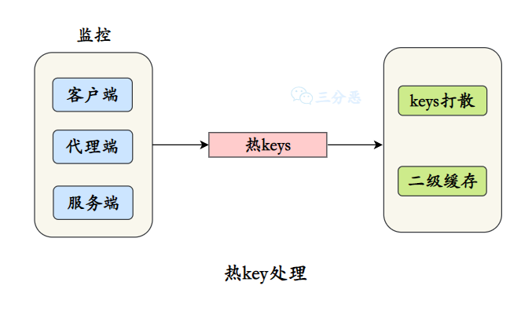
对热 key 的处理，最关键的是对热 key 的监控:
①、客户端
客户端其实是距离 key“最近”的地方，因为 Redis 命令就是从客户端发出的，例如在客户端设置全局字典（key 和调用次数），每次调用 Redis 命令时，使用这个字典进行记录。
②、代理端
像 Twemproxy、Codis 这些基于代理的 Redis 分布式架构，所有客户端的请求都是通过代理端完成的，可以在代理端进行监控。
③、Redis 服务端
使用 monitor 命令统计热点 key 是很多开发和运维人员首先想到的方案，monitor 命令可以监控到 Redis 执行的所有命令。
monitor 命令的使用：
redis-cli monitor
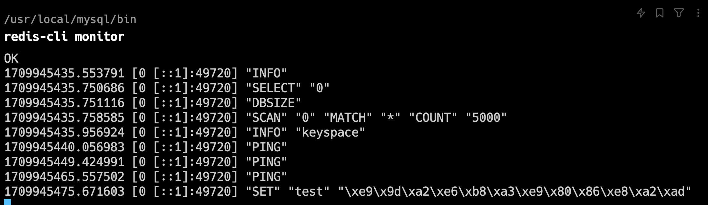
还可以通过 bigkeys 参数来分析热 Key。
bigkeys 命令的使用：
redis-cli --bigkeys

只要监控到了热 key，对热 key 的处理就简单了：
①、把热 key 打散到不同的服务器，降低压⼒。
基本思路就是给热 Key 加上前缀或者后缀，见下例：
// N 为 Redis 实例个数，M 为 N 的 2倍
const M = N * 2
//生成随机数
random = GenRandom(0, M)
//构造备份新 Key
bakHotKey = hotKey + "_" + random
data = redis.GET(bakHotKey)
if data == NULL {
data = redis.GET(hotKey)
if data == NULL {
data = GetFromDB()
// 可以利用原子锁来写入数据保证数据一致性
redis.SET(hotKey, data, expireTime)
redis.SET(bakHotKey, data, expireTime + GenRandom(0, 5))
} else {
redis.SET(bakHotKey, data, expireTime + GenRandom(0, 5))
}
}
②、加⼊⼆级缓存，当出现热 Key 后，把热 Key 加载到 JVM 中，后续针对这些热 Key 的请求，直接从 JVM 中读取。
这些本地的缓存工具有很多，比如 Caffeine、Guava 等，或者直接使用 HashMap 作为本地缓存都是可以的。
注意，如果对热 Key 进行本地缓存，需要防止本地缓存过大。
- Java 面试指南（付费）收录的华为 OD 的面试中出现过该题：讲一讲 Redis 的热 Key 和大 Key
34.缓存预热怎么做呢？
缓存预热是指在系统启动时，提前将一些预定义的数据加载到缓存中，以避免在系统运行初期由于缓存未命中（cache miss）导致的性能问题。
通过缓存预热，可以确保系统在上线后能够立即提供高效的服务，减少首次访问时的延迟。
缓存预热的方法有多种，在技术派实战项目中，我们采用了项目启动时自动加载和定时预热两种方式，比如说每天定时更新站点地图到 Redis 缓存中。
/**
* 采用定时器方案，每天5:15分刷新站点地图，确保数据的一致性
*/
@Scheduled(cron = "0 15 5 * * ?")
public void autoRefreshCache() {
log.info("开始刷新sitemap.xml的url地址，避免出现数据不一致问题!");
refreshSitemap();
log.info("刷新完成！");
}
@Override
public void refreshSitemap() {
initSiteMap();
}
private synchronized void initSiteMap() {
long lastId = 0L;
RedisClient.del(SITE_MAP_CACHE_KEY);
while (true) {
List<SimpleArticleDTO> list = articleDao.getBaseMapper().listArticlesOrderById(lastId, SCAN_SIZE);
// 刷新站点地图信息
Map<String, Long> map = list.stream().collect(Collectors.toMap(s -> String.valueOf(s.getId()), s -> s.getCreateTime().getTime(), (a, b) -> a));
RedisClient.hMSet(SITE_MAP_CACHE_KEY, map);
if (list.size() < SCAN_SIZE) {
break;
}
lastId = list.get(list.size() - 1).getId();
}
}
- Java 面试指南（付费）收录的字节跳动面经同学 1 技术二面面试原题：什么是缓存预热？如何解决？
35.热点 key 重建？问题？解决？
开发的时候一般使用“缓存+过期时间”的策略，既可以加速数据读写，又保证数据的定期更新，这种模式基本能够满足绝大部分需求。
但是有两个问题如果同时出现，可能就会出现比较大的问题：
-
当前 key 是一个热点 key（例如一个热门的娱乐新闻），并发量非常大。
-
重建缓存不能在短时间完成，可能是一个复杂计算，例如复杂的 SQL、多次 IO、多个依赖等。 在缓存失效的瞬间，有大量线程来重建缓存，造成后端负载加大，甚至可能会让应用崩溃。
怎么处理热 key 呢？
要解决这个问题也不是很复杂，解决问题的要点在于：
- 减少重建缓存的次数。
- 数据尽可能一致。
- 较少的潜在危险。
所以一般采用如下方式：
- 互斥锁（mutex key） 这种方法只允许一个线程重建缓存，其他线程等待重建缓存的线程执行完，重新从缓存获取数据即可。
- 永远不过期 “永远不过期”包含两层意思：
- 从缓存层面来看，确实没有设置过期时间，所以不会出现热点 key 过期后产生的问题，也就是“物理”不过期。
- 从功能层面来看，为每个 value 设置一个逻辑过期时间，当发现超过逻辑过期时间后，会使用单独的线程去构建缓存。
36.无底洞问题吗？如何解决？
2010 年，Facebook 的 Memcache 节点已经达到了 3000 个，承载着 TB 级别的缓存数据。但开发和运维人员发现了一个问题，为了满足业务要求添加了大量新 Memcache 节点，但是发现性能不但没有好转反而下降了，当时将这 种现象称为缓存的“无底洞”现象。
那么为什么会产生这种现象呢?
通常来说添加节点使得 Memcache 集群 性能应该更强了，但事实并非如此。键值数据库由于通常采用哈希函数将 key 映射到各个节点上，造成 key 的分布与业务无关，但是由于数据量和访问量的持续增长，造成需要添加大量节点做水平扩容，导致键值分布到更多的 节点上，所以无论是 Memcache 还是 Redis 的分布式，批量操作通常需要从不同节点上获取，相比于单机批量操作只涉及一次网络操作，分布式批量操作会涉及多次网络时间。
无底洞问题如何优化呢？
先分析一下无底洞问题：
-
客户端一次批量操作会涉及多次网络操作，也就意味着批量操作会随着节点的增多，耗时会不断增大。
-
网络连接数变多，对节点的性能也有一定影响。
常见的优化思路如下：
-
命令本身的优化，例如优化操作语句等。
-
减少网络通信次数。
-
降低接入成本，例如客户端使用长连/连接池、NIO 等。
GitHub 上标星 10000+ 的开源知识库《二哥的 Java 进阶之路》第一版 PDF 终于来了！包括 Java 基础语法、数组&字符串、OOP、集合框架、Java IO、异常处理、Java 新特性、网络编程、NIO、并发编程、JVM 等等，共计 32 万余字，500+张手绘图，可以说是通俗易懂、风趣幽默……详情戳：太赞了，GitHub 上标星 10000+ 的 Java 教程
微信搜 沉默王二 或扫描下方二维码关注二哥的原创公众号沉默王二，回复 222 即可免费领取。
Redis 运维
37.Redis 报内存不足怎么处理？
Redis 内存不足有这么几种处理方式：
- 修改配置文件 redis.conf 的 maxmemory 参数，增加 Redis 可用内存
- 也可以通过命令 set maxmemory 动态设置内存上限
- 修改内存淘汰策略，及时释放内存空间
- 使用 Redis 集群模式，进行横向扩容。
38.Redis key 过期策略有哪些？
Redis 的 key 过期回收策略主要有两种：惰性删除和定期删除。
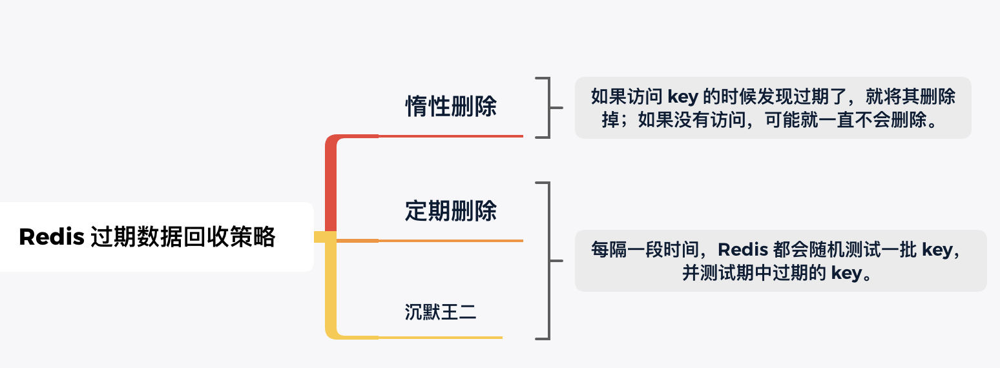
当某个键被访问时，如果发现它已经过期，Redis 会立即删除该键，俗称惰性删除。但这也意味着如果一个已过期的键从未被访问，它就不会被删除，会占用额外的内存空间。
那还有一种定期删除策略，即每隔一段时间，Redis 就会随机检查一些键是否过期，如果过期就删除。这种策略可以保证过期键及时被删除，但也会增加 Redis 的 CPU 消耗。
可以通过 config get hz 命令查看 Redis 内部定时任务的频率。
结果显示 hz 的值为 "10"，意味着 Redis 服务器每秒执行定时任务的频率是 10 次。可以通过 CONFIG SET hz 20 进行调整。

- Java 面试指南（付费）收录的腾讯面经同学 22 暑期实习一面面试原题：Redis key 删除策略
- Java 面试指南（付费）收录的去哪儿面经同学 1 技术 2 面面试原题：redis 内存淘汰和过期策略
- Java 面试指南（付费）收录的京东面经同学 5 Java 后端技术一面面试原题：redis key 过期策略
39.Redis 有哪些内存淘汰策略？
当 Redis 的内存使用达到最大值时，它会根据配置的内存淘汰策略来决定如何处理新的请求。
最大值通过 maxmemory 参数设置
常见的策略有：
- noeviction：默认策略，不进行任何数据淘汰，直接返回错误信息。
- allkeys-lru：从所有键中，使用 LRU 算法淘汰最近最少使用的键。
- allkeys-lfu：从所有键中，使用 LFU 算法淘汰最少使用的键。
- volatile-lru：从设置了过期时间的键中淘汰最近最少使用的键。
- volatile-ttl：从设置了过期时间的键中淘汰即将过期的键。
TTL，Time To Live，存活时间
LRU 和 LFU 的区别是什么？
LRU（Least Recently Used）：基于时间维度，淘汰最近最少访问的键。适合访问具有时间特性的场景。
LFU（Least Frequently Used）：基于次数维度，淘汰访问频率最低的键。更适合长期热点数据场景。
- Java 面试指南（付费）收录的小米春招同学 K 一面面试原题：为什么 redis 快，淘汰策略 持久化
- Java 面试指南（付费）收录的去哪儿面经同学 1 技术 2 面面试原题：redis 内存淘汰和过期策略
- Java 面试指南（付费）收录的作业帮面经同学 1 Java 后端一面面试原题：redis 内存淘汰策略
- Java 面试指南（付费）收录的阿里系面经同学 19 饿了么面试原题：redis 内存淘汰机制 延伸到 LRU LFU
40.Redis 阻塞？怎么解决？
Redis 发生阻塞，可以从以下几个方面排查：
-
API 或数据结构使用不合理
通常 Redis 执行命令速度非常快，但是不合理地使用命令，可能会导致执行速度很慢，导致阻塞，对于高并发的场景，应该尽量避免在大对象上执行算法复杂 度超过 O（n）的命令。
对慢查询的处理分为两步：
- 发现慢查询： slowlog get{n}命令可以获取最近 的 n 条慢查询命令；
- 发现慢查询后，可以从两个方向去优化慢查询： 1）修改为低算法复杂度的命令，如 hgetall 改为 hmget 等，禁用 keys、sort 等命 令 2）调整大对象：缩减大对象数据或把大对象拆分为多个小对象，防止一次命令操作过多的数据。
-
CPU 饱和的问题
单线程的 Redis 处理命令时只能使用一个 CPU。而 CPU 饱和是指 Redis 单核 CPU 使用率跑到接近 100%。
针对这种情况，处理步骤一般如下：
- 判断当前 Redis 并发量是否已经达到极限，可以使用统计命令 redis-cli-h{ip}-p{port}--stat 获取当前 Redis 使用情况
- 如果 Redis 的请求几万+，那么大概就是 Redis 的 OPS 已经到了极限，应该做集群化水品扩展来分摊 OPS 压力
- 如果只有几百几千，那么就得排查命令和内存的使用
-
持久化相关的阻塞
对于开启了持久化功能的 Redis 节点，需要排查是否是持久化导致的阻塞。
- fork 阻塞 fork 操作发生在 RDB 和 AOF 重写时，Redis 主线程调用 fork 操作产生共享 内存的子进程，由子进程完成持久化文件重写工作。如果 fork 操作本身耗时过长，必然会导致主线程的阻塞。
- AOF 刷盘阻塞 当我们开启 AOF 持久化功能时，文件刷盘的方式一般采用每秒一次，后台线程每秒对 AOF 文件做 fsync 操作。当硬盘压力过大时，fsync 操作需要等 待，直到写入完成。如果主线程发现距离上一次的 fsync 成功超过 2 秒，为了 数据安全性它会阻塞直到后台线程执行 fsync 操作完成。
- HugePage 写操作阻塞 对于开启 Transparent HugePages 的 操作系统，每次写命令引起的复制内存页单位由 4K 变为 2MB，放大了 512 倍，会拖慢写操作的执行时间，导致大量写操作慢查询。
41.大 key 问题了解吗？
大 key 指的是存储了大量数据的键，比如：
- 单个简单的 key 存储的 value 很大，size 超过 10KB
- hash，set，zset，list 中存储过多的元素（以万为单位）
推荐阅读：阿里：发现并处理 Redis 的大 Key 和热 Key
大 key 会造成什么问题呢？
- 客户端耗时增加，甚至超时
- 对大 key 进行 IO 操作时，会严重占用带宽和 CPU
- 造成 Redis 集群中数据倾斜
- 主动删除、被动删等，可能会导致阻塞
如何找到大 key?
①、bigkeys 参数：使用 bigkeys 命令以遍历的方式分析 Redis 实例中的所有 Key，并返回整体统计信息与每个数据类型中 Top1 的大 Key
bigkeys 命令的使用：
redis-cli --bigkeys
②、redis-rdb-tools：redis-rdb-tools 是由 Python 语言编写的用来分析 Redis 中 rdb 快照文件的工具。
源码地址：https://github.com/sripathikrishnan/redis-rdb-tools/
rdb，全称 Redis DataBase，是 Redis 在内存中的数据格式的一种持久化存储方式。
推荐阅读：RDB 详解
如何处理大 key?
①、删除大 key
- 当 Redis 版本大于 4.0 时，可使用 UNLINK 命令安全地删除大 Key，该命令能够以非阻塞的方式，逐步地清理传入的大 Key。
- 当 Redis 版本小于 4.0 时，建议通过 SCAN 命令执行增量迭代扫描 key，然后判断进行删除。
②、压缩和拆分 key
- 当 vaule 是 string 时，比较难拆分，则使用序列化、压缩算法将 key 的大小控制在合理范围内，但是序列化和反序列化都会带来额外的性能消耗。
- 当 value 是 string，压缩之后仍然是大 key 时，则需要进行拆分，将一个大 key 分为不同的部分，记录每个部分的 key，使用 multiget 等操作实现事务读取。
- 当 value 是 list/set 等集合类型时，根据预估的数据规模来进行分片，不同的元素计算后分到不同的片。
- 华为 OD 的面试中出现过该题：讲一讲 Redis 的热 Key 和大 Key
42.Redis 常见性能问题和解决方案？
- Master 最好不要做任何持久化工作，包括内存快照和 AOF 日志文件，特别是不要启用内存快照做持久化。
- 如果数据比较关键，某个 Slave 开启 AOF 备份数据，策略为每秒同步一次。
- 为了主从复制的速度和连接的稳定性，Slave 和 Master 最好在同一个局域网内。
- 尽量避免在压力较大的主库上增加从库。
- Master 调用 BGREWRITEAOF 重写 AOF 文件，AOF 在重写的时候会占大量的 CPU 和内存资源，导致服务 load 过高，出现短暂服务暂停现象。
- 为了 Master 的稳定性，主从复制不要用图状结构，用单向链表结构更稳定，即主从关为：Master<–Slave1<–Slave2<–Slave3…，这样的结构也方便解决单点故障问题，实现 Slave 对 Master 的替换，也即，如果 Master 挂了，可以立马启用 Slave1 做 Master，其他不变。
GitHub 上标星 10000+ 的开源知识库《二哥的 Java 进阶之路》第一版 PDF 终于来了！包括 Java 基础语法、数组&字符串、OOP、集合框架、Java IO、异常处理、Java 新特性、网络编程、NIO、并发编程、JVM 等等，共计 32 万余字，500+张手绘图，可以说是通俗易懂、风趣幽默……详情戳：太赞了，GitHub 上标星 10000+ 的 Java 教程
微信搜 沉默王二 或扫描下方二维码关注二哥的原创公众号沉默王二，回复 222 即可免费领取。
Redis 应用
43.使用 Redis 如何实现异步队列？
我们知道 redis 支持很多种结构的数据，那么如何使用 redis 作为异步队列使用呢？ 一般有以下几种方式：
- 使用 list 作为队列，lpush 生产消息，rpop 消费消息
这种方式，消费者死循环 rpop 从队列中消费消息。但是这样，即使队列里没有消息，也会进行 rpop，会导致 Redis CPU 的消耗。 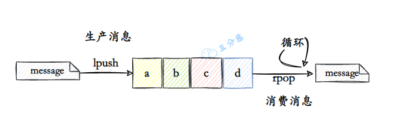 可以通过让消费者休眠的方式的方式来处理，但是这样又会又消息的延迟问题。
-使用 list 作为队列，lpush 生产消息，brpop 消费消息
brpop 是 rpop 的阻塞版本，list 为空的时候，它会一直阻塞，直到 list 中有值或者超时。 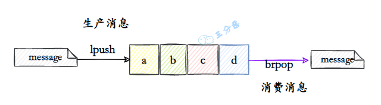
这种方式只能实现一对一的消息队列。
- 使用 Redis 的 pub/sub 来进行消息的发布/订阅
发布/订阅模式可以 1：N 的消息发布/订阅。发布者将消息发布到指定的频道频道（channel），订阅相应频道的客户端都能收到消息。
 但是这种方式不是可靠的，它不保证订阅者一定能收到消息，也不进行消息的存储。
但是这种方式不是可靠的，它不保证订阅者一定能收到消息，也不进行消息的存储。
所以，一般的异步队列的实现还是交给专业的消息队列。
44.Redis 如何实现延时队列?
可以使用 Redis 的 zset（有序集合）来实现延时队列。
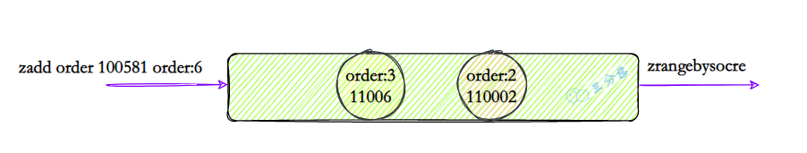
第一步，将任务添加到 zset 中，score 为任务的执行时间戳，value 为任务的内容。
ZADD delay_queue 1617024000 task1
第二步，定期（例如每秒）从 zset 中获取 score 小于当前时间戳的任务，然后执行任务。
ZREMRANGEBYSCORE delay_queue -inf 1617024000
第三步，任务执行后，从 zset 中删除任务。
ZREM delay_queue task1
- Java 面试指南（付费）收录的腾讯面经同学 23 QQ 后台技术一面面试原题：Redis 实现延迟队列
- Java 面试指南（付费）收录的字节跳动面经同学 8 Java 后端实习一面面试原题：redis 数据结构，用什么结构实现延迟消息队列
45.Redis 支持事务吗？
Redis 支持简单的事务，可以将多个命令打包，然后一次性的，按照顺序执行。主要通过 multi、exec、discard、watch 等命令来实现：
- multi：标记一个事务块的开始
- exec：执行所有事务块内的命令
- discard：取消事务，放弃执行事务块内的所有命令
- watch：监视一个或多个 key，如果在事务执行之前这个 key 被其他命令所改动，那么事务将被打断

说一下 Redis 事务的原理？
- 使用 MULTI 命令开始一个事务。从这个命令执行之后开始，所有的后续命令都不会立即执行，而是被放入一个队列中。在这个阶段，Redis 只是记录下了这些命令。
- 使用 EXEC 命令触发事务的执行。一旦执行了 EXEC，之前 MULTI 后队列中的所有命令会被原子地（atomic）执行。这里的“原子”意味着这些命令要么全部执行，要么（在出现错误时）全部不执行。
- 如果在执行 EXEC 之前决定不执行事务，可以使用 DISCARD 命令来取消事务。这会清空事务队列并退出事务状态。
- WATCH 命令用于实现乐观锁。WATCH 命令可以监视一个或多个键，如果在执行事务的过程中（即在执行 MULTI 之后，执行 EXEC 之前），被监视的键被其他命令改变了，那么当执行 EXEC 时，事务将被取消，并且返回一个错误。
Redis 事务的注意点有哪些？
Redis 事务是不支持回滚的，一旦 EXEC 命令被调用，所有命令都会被执行，即使有些命令可能执行失败。
Redis 事务为什么不支持回滚？
引入事务回滚机制会大大增加 Redis 的复杂性，因为需要跟踪事务中每个命令的状态，并在发生错误时逆向执行命令以恢复原始状态。
Redis 是一个基于内存的数据存储系统，其设计重点是实现高性能。事务回滚需要额外的资源和时间来管理和执行，这与 Redis 的设计目标相违背。因此，Redis 选择不支持事务回滚。
换句话说，就是我 Redis 不想支持事务，也没有这个必要。
Redis 事务的 ACID 特性如何体现？
ACID 一般指 MySQL 事务中的四个特性：原子性、一致性、隔离性、持久性。虽然 Redis 提供了事务的支持，但它在 ACID 上的表现与 MySQL 有所不同。
Redis 事务中，所有命令会依次执行，但并不支持部分失败后的自动回滚。因此 Redis 在事务层面并不能保证一致性，我们必须通过程序逻辑来进行优化。
Redis 事务在一定程度上提供了隔离性，事务中的命令会按顺序执行，不会被其他客户端的命令插入。
Redis 的持久性依赖于其持久化机制（如 RDB 和 AOF），而不是事务本身。
Redis 事务满足原子性吗？要怎么改进？
不满足，Redis 事务不支持回滚，一旦 EXEC 命令被调用，所有命令都会被执行，即使有些命令可能执行失败。
可以通过 Lua 脚本来实现事务的原子性，Lua 脚本在 Redis 中是原子执行的，执行过程中间不会插入其他命令。
- Java 面试指南（付费）收录的华为一面原题：说下 Redis 事务
- 二哥编程星球球友枕云眠美团 AI 面试原题：什么是 redis 的事务，它的 ACID 属性如何体现
46.有 Lua 脚本操作 Redis 的经验吗？
Redis 的事务不具备强制性的原子性，但可以通过 Lua 脚本来增强 Redis 的原子能力。
在 Redis 中，Lua 脚本是以原子操作的方式执行的，也就是说，在脚本执行期间，不会插入其他命令，天然保证了事务性。
比如秒杀系统是一个经典场景，我们可以用 Lua 脚本来实现扣减 Redis 库存的功能。
-- 库存未预热
if (redis.call('exists', KEYS[2]) == 1) then
return -9;
end;
-- 秒杀商品库存存在
if (redis.call('exists', KEYS[1]) == 1) then
local stock = tonumber(redis.call('get', KEYS[1]));
local num = tonumber(ARGV[1]);
-- 剩余库存少于请求数量
if (stock < num) then
return -3
end;
-- 扣减库存
if (stock >= num) then
redis.call('incrby', KEYS[1], 0 - num);
-- 扣减成功
return 1
end;
return -2;
end;
-- 秒杀商品库存不存在
return -1;
- Java 面试指南（付费）收录的快手同学 4 一面原题：Redis 事务满足原子性吗？要怎么改进？
47.Redis 的管道 Pipeline 了解吗？
Pipeline 是 Redis 提供的一种优化手段，允许客户端一次性向服务器发送多个命令，而不必等待每个命令的响应，从而减少网络延迟。它的工作原理类似于批量操作，即多个命令一次性打包发送，Redis 服务器依次执行后再将结果一次性返回给客户端。
通常在 Redis 中，每个请求都会遵循以下流程：
- 客户端发送命令到服务器。
- 服务器执行命令并将结果返回给客户端。
- 客户端接收返回结果。
每一个请求和响应之间存在一次网络通信的往返时间（RTT，Round-Trip Time），如果大量请求依次发送，网络延迟会显著增加请求的总执行时间。
有了 Pipeline 后，流程变为：
发送命令 1、命令 2、命令 3…… -> 服务器处理 -> 一次性返回所有结果。
例如，批量写入大量数据或执行一系列查询时，可以将这些操作打包通过 Pipeline 执行。

在 Pipeline 模式下，客户端不会在每条命令发送后立即等待 Redis 的响应，而是将多个命令依次写入 TCP 缓冲区，所有命令一起发送到 Redis 服务器。
Redis 服务器接收到批量命令后，依次执行每个命令。
Redis 服务器执行完所有命令后，将每条命令的结果一次性打包通过 TCP 返回给客户端。
客户端一次性接收所有返回结果，并解析每个命令的执行结果。
- Java 面试指南（付费）收录的京东面经同学 8 面试原题：对 pipeline 的理解，什么场景适合使用 pipeline？有了解过 pipeline 的底层？
48.Redis 实现分布式锁了解吗？
分布式锁是一种用于控制多个不同进程在分布式系统中访问共享资源的锁机制。它确保在同一时刻，只有一个节点可以对资源进行访问，从而避免并发问题。
可以使用 Redis 的 SET 命令实现分布式锁。同时添加过期时间，以防止死锁的发生。

SET key value NX PX 30000
key是锁名。value是锁的持有者标识，可以使用 UUID 作为 value。NX只在 key 不存在时才创建（避免覆盖锁）。PX 30000：设置锁的过期时间为 30 秒（防止死锁）。
用 Java 来实现就是：
String lockKey = "lock:order:123";
String uniqueId = UUID.randomUUID().toString();
boolean isLocked = redisTemplate.opsForValue()
.setIfAbsent(lockKey, uniqueId, 10, TimeUnit.SECONDS);
if (isLocked) {
try {
// 执行业务逻辑
} finally {
// 释放锁
}
}
什么是 setnx？
setnx 从 Redis 版本 2.6.12 开始被弃用，因为可以通过 set 命令的 NX 选项来实现相同的功能。

使用 setnx 创建分布式锁时，虽然设置过期时间可以避免死锁问题，但可能存在这样的问题：线程 A 获取锁后开始任务，如果任务执行时间超过锁的过期时间，锁会提前释放，导致线程 B 也获取了锁并开始执行任务。这会破坏锁的独占性，导致并发访问资源，进而造成数据不一致。
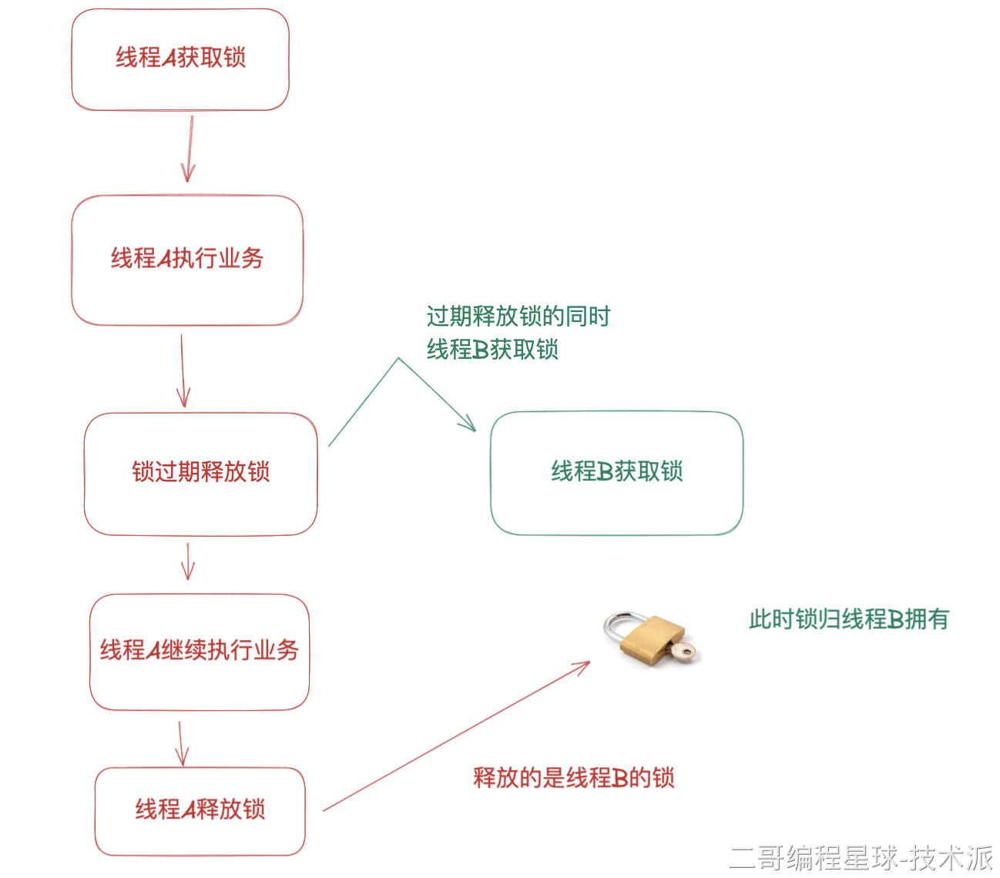
可以引入锁的自动续约机制，在任务执行过程中定期续期，确保锁在任务完成之前不会过期。

比如说 Redisson 的 RedissonLock 就支持自动续期，通过看门狗机制定期续期锁的有效期。

Redisson 了解吗？
开发中，我们可以使用专业的轮子——Redisson。
Redisson 是一个基于 Redis 的 Java 驻内存数据网格，提供了一系列 API 用来操作 Redis，其中最常用的功能就是分布式锁。
RLock lock = redisson.getLock("lock");
lock.lock();
try {
// do something
} finally {
lock.unlock();
}
实现源码在 RedissonLock 类中，通过 Lua 脚本封装 Redis 命令来实现，比如说 tryLockInnerAsync 源码：
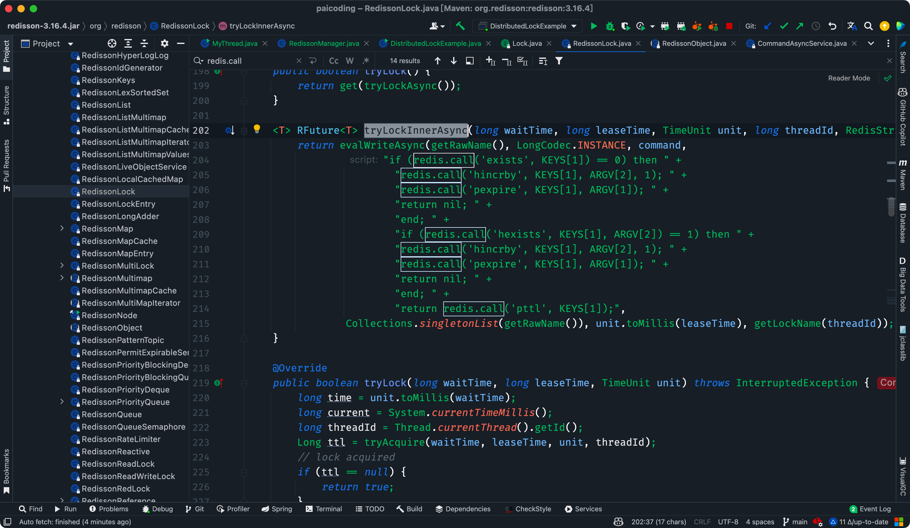
其中 hincrby 命令用于对哈希表中的字段值执行自增操作，pexpire 命令用于设置键的过期时间。
PmHub 系统里面的分布式锁是怎么做的？
主要通过 Redisson 框架实现的 RedLock 来完成的。
// 创建 Redisson 客户端配置
Config config = new Config();
config.useClusterServers()
.addNodeAddress("redis://127.0.0.1:6379",
"redis://127.0.0.1:6380",
"redis://127.0.0.1:6381"); // 假设有三个 Redis 节点
// 创建 Redisson 客户端实例
RedissonClient redissonClient = Redisson.create(config);
// 创建 RedLock 对象
RLock redLock = redissonClient.getLock("lock_key");
try {
// 尝试获取分布式锁，最多尝试 5 秒获取锁，并且锁的有效期为 5000 毫秒
boolean lockAcquired = redLock.tryLock(5, 5000, TimeUnit.MILLISECONDS);
if (lockAcquired) {
// 加锁成功，执行业务代码...
} else {
System.out.println("Failed to acquire the lock!");
}
} catch (InterruptedException e) {
Thread.currentThread().interrupt();
System.err.println("Interrupted while acquiring the lock");
} finally {
// 无论是否成功获取到锁，在业务逻辑结束后都要释放锁
if (redLock.isLocked()) {
redLock.unlock();
}
// 关闭 Redisson 客户端连接
redissonClient.shutdown();
}
你提到了 Redlock，那它机制是怎么样的？
Redlock 是 Redis 作者提出的一种分布式锁实现方案，用于确保在分布式环境下安全可靠地获取锁。它的目标是在分布式系统中提供一种高可用、高容错的锁机制，确保在同一时刻，只有一个客户端能够成功获得锁，从而实现对共享资源的互斥访问。
Redisson 中的 RedLock 是基于 RedissonMultiLock（联锁）实现的。

RedissonMultiLock 的 tryLock 方法会在指定的 Redis 实例上逐一尝试获取锁。
在获取锁的过程中，Redlock 会根据配置的 waitTime（最大等待时间）和 leaseTime（锁的持有时间）进行灵活控制。比如，如果获取锁的时间小于锁的有效期（通过 TTL 命令获取锁的剩余时间），则表示获取锁成功。
通常，至少需要多数（如 5 个实例中的 3 个）实例成功获取锁，才能认为整个锁获取成功。
如果指定了锁的持有时间（leaseTime），在成功获取锁后，Redlock 会为锁进行续期，以防止锁在操作完成之前意外失效。
红锁能不能保证百分百上锁？
Redlock 不能保证百分百上锁，因为在分布式系统中，网络延迟、时钟漂移、Redis 实例宕机等因素都可能导致锁的获取失败。
加分布式锁时 Redis 如何保证不会发生冲突？
①、使用 SET NX PX 或 SETNX 命令确保锁的获取是一个原子操作，同时设置锁的过期时间防止死锁。
比如说 SET lock_key unique_value NX PX 5000 命令，其中 NX 确保了原子操作，，如果 lock_key 已存在，SET 操作会返回 nil；PX 5000 设置过期时间为 5000 毫秒，避免死锁。
②、使用 Lua 脚本将锁的检查和释放操作封装为一个原子操作，确保安全地释放锁。
EVAL "if redis.call('get', KEYS[1]) == ARGV[1] then return redis.call('del', KEYS[1]) else return 0 end" 1 lock_key unique_value
③、使用 Redlock 算法确保锁的正确获取和释放。
RLock lock = redisson.getLock("lock_key");
try {
// 500ms 等待时间，10000ms 锁过期时间
boolean isLocked = lock.tryLock(500, 10000, TimeUnit.MILLISECONDS);
if (isLocked) {
// 执行需要同步的操作
}
} finally {
lock.unlock();
}
Redisson 中的看门狗机制了解吗？
Redisson 提供的分布式锁是支持锁自动续期的，也就是说，如果线程在锁到期之前还没有执行完，那么 Redisson 会自动给锁续期。

这被称为“看门狗”机制。
class RedissonWatchdogExample {
public static void main(String[] args) {
// 配置 Redisson 客户端
Config config = new Config();
config.useSingleServer().setAddress("redis://127.0.0.1:6379");
RedissonClient redisson = Redisson.create(config);
// 获取锁对象
RLock lock = redisson.getLock("myLock");
try {
// 获取锁，默认看门狗机制会启动
lock.lock();
// 模拟任务执行
System.out.println("Task is running...");
Thread.sleep(40000); // 模拟长时间任务（40秒）
System.out.println("Task completed.");
} catch (InterruptedException e) {
e.printStackTrace();
} finally {
// 释放锁
lock.unlock();
}
// 关闭 Redisson 客户端
redisson.shutdown();
}
}
看门狗启动后，每隔 10 秒会刷新锁的过期时间，将其延长到 30 秒，确保在锁持有期间不会因为过期而释放。
当任务执行完成时，客户端调用 unlock() 方法释放锁，看门狗也随之停止。
检查锁的过程是原子操作吗？
在 Redis 的看门狗机制中，检查锁的过程并不是单独的一个步骤，而是与锁的续期操作绑定在一起，通过 Lua 脚本完成的。因此，检查与续期是一个整体的原子操作，以确保只有持有锁的客户端才能成功续期。
if redis.call('get', KEYS[1]) == ARGV[1] then
return redis.call('expire', KEYS[1], ARGV[2])
else
return 0
end
- Java 面试指南（付费）收录的腾讯 Java 后端实习一面原题：分布式锁用了 Redis 的什么数据结构
- Java 面试指南（付费）收录的小公司面经合集同学 1 Java 后端面试原题：Redisson 的底层原理？以及与 SETNX 的区别？
- Java 面试指南（付费）收录的百度面经同学 1 文心一言 25 实习 Java 后端面试原题：redis 分布式锁的实现原理？setnx？
- Java 面试指南（付费）收录的小米同学 F 面试原题：自己实现 redis 分布式锁的坑（主动提了 Redission）
- Java 面试指南（付费）收录的腾讯云智面经同学 20 二面面试原题：redission 的原理是什么？ setnx + lua 脚本？
- Java 面试指南（付费）收录的收钱吧面经同学 1 Java 后端一面面试原题：系统里面分布式锁是怎么做的？你提到了 redlock，那它机制是怎么样的？红锁能不能保证百分百上锁？
- Java 面试指南（付费）收录的字节跳动面经同学 21 抖音商城一面面试原题：加分布式锁时 redis 如何保证不会发生冲突？分布式锁过期怎么办？
- Java 面试指南（付费）收录的拼多多面经同学 8 一面面试原题：Redis 分布式锁如何实现的
- Java 面试指南（付费）收录的百度同学 4 面试原题：Setnx,知道吗? 用这个加锁有什么问题吗?怎么解决?
- Java 面试指南（付费）收录的阿里系面经同学 19 饿了么面试原题：分布式锁用 redis 实现思路
- Java 面试指南（付费）收录的京东面经同学 9 面试原题：redis 的分布式锁有了解过吗
- Java 面试指南（付费）收录的同学 30 腾讯音乐面试原题：redis 锁有几种实现方式
GitHub 上标星 10000+ 的开源知识库《二哥的 Java 进阶之路》第一版 PDF 终于来了！包括 Java 基础语法、数组&字符串、OOP、集合框架、Java IO、异常处理、Java 新特性、网络编程、NIO、并发编程、JVM 等等，共计 32 万余字，500+张手绘图，可以说是通俗易懂、风趣幽默……详情戳：太赞了，GitHub 上标星 10000+ 的 Java 教程
微信搜 沉默王二 或扫描下方二维码关注二哥的原创公众号沉默王二，回复 222 即可免费领取。
底层结构
这一部分就比较深了，如果不是简历上写了精通 Redis，应该不会怎么问。
49.说说 Redis 底层数据结构？
Redis 的底层数据结构有动态字符串(sds)、链表(list)、字典(ht)、跳跃表(skiplist)、整数集合(intset)、压缩列表(ziplist) 等。
比如说 string 是通过 SDS 实现的，list 是通过链表实现的，hash 是通过字典实现的，set 是通过字典实现的，zset 是通过跳跃表实现的。

简单介绍下 SDS？
Redis 是通过 C 语言实现的，但 Redis 并没有直接使用 C 语言的字符串，而是自己实现了一种叫做动态字符串 SDS 的类型。
struct sdshdr {
int len; // buf 中已使用的长度
int free; // buf 中未使用的长度
char buf[]; // 数据空间
};
因为 C 语⾔的字符串不记录⾃身的⻓度信息，当需要获取字符串⻓度时，需要遍历整个字符串，时间复杂度为 O(N)。
⽽ SDS 保存了⻓度信息，这样就将获取字符串⻓度的时间由 O(N) 降低到了 O(1)。
简单介绍下链表 linkedlist
Redis 的链表是⼀个双向⽆环链表结构，和 Java 中的 LinkedList 类似。
链表的节点由⼀个叫做 listNode 的结构来表示，每个节点都有指向其前置节点和后置节点的指针，同时头节点的前置和尾节点的后置均指向 null。
简单介绍下字典 dict
⽤于保存键值对的抽象数据结构。Redis 使⽤ hash 表作为底层实现，一个哈希表里可以有多个哈希表节点，而每个哈希表节点就保存了字典里中的一个键值对。
每个字典带有两个 hash 表，供平时使⽤和 rehash 时使⽤，hash 表使⽤链地址法来解决键冲突，被分配到同⼀个索引位置的多个键值对会形成⼀个单向链表，在对 hash 表进⾏扩容或者缩容的时候，为了服务的可⽤性，rehash 的过程不是⼀次性完成的，⽽是渐进式的。

简单介绍下跳表 skiplist
推荐阅读：全网最详细的跳表文章
跳表是有序集合 Zset 的底层实现之⼀。在 Redis 7.0 之前，如果有序集合的元素个数小于 128 个，并且每个元素的值小于 64 字节时，Redis 会使用压缩列表作为 Zset 的底层实现，否则会使用跳表；在 Redis 7.0 之后，压缩列表已经废弃，交由 listpack 来替代。
跳表由 zskiplist 和 zskiplistNode 组成，zskiplist ⽤于保存跳表的基本信息（表头、表尾、⻓度、层高等）。
typedef struct zskiplist {
struct zskiplistNode *header, *tail;
unsigned long length;
int level;
} zskiplist;
zskiplistNode ⽤于表示跳表节点，每个跳表节点的层⾼是不固定的，每个节点都有⼀个指向保存了当前节点的分值和成员对象的指针。
typedef struct zskiplistNode {
sds ele;
double score;
struct zskiplistNode *backward;
struct zskiplistLevel {
struct zskiplistNode *forward;
unsigned int span;
} level[];
} zskiplistNode;
简单介绍下整数集合 intset
⽤于保存整数值的集合抽象数据结构，不会出现重复元素，底层实现为数组。
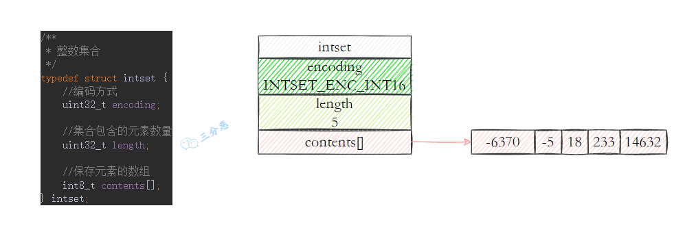
简单介绍下压缩列表 ziplist
压缩列表是为节约内存⽽开发的顺序性数据结构，它可以包含任意多个节点，每个节点可以保存⼀个字节数组或者整数值。
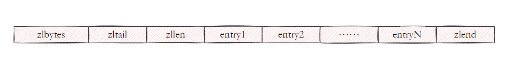
简单介绍下紧凑列表 listpack
listpack 是 Redis 用来替代压缩列表（ziplist）的一种内存更加紧凑的数据结构。

为了避免 ziplist 引起的连锁更新问题，listpack 中的元素不再像 ziplist 那样，保存其前一个元素的长度，而是保存当前元素的编码类型、数据，以及编码类型和数据的长度。
listpack 每个元素项不再保存上一个元素的长度，而是优化元素内字段的顺序，来保证既可以从前也可以向后遍历。
但因为 List/Hash/Set/ZSet 都严重依赖 ziplist，所以这个替换之路很漫长。
- Java 面试指南（付费）收录的字节跳动商业化一面的原题：说说 Redis 的 zset，什么是跳表，插入一个节点要构建几层索引
- Java 面试指南（付费）收录的字节跳动面经同学 9 飞书后端技术一面面试原题：Redis 的数据类型，ZSet 的实现
- Java 面试指南（付费）收录的小米暑期实习同学 E 一面面试原题：你知道 Redis 的 zset 底层实现吗
- Java 面试指南（付费）收录的腾讯面经同学 23 QQ 后台技术一面面试原题：zset 的底层原理
- Java 面试指南（付费）收录的快手面经同学 7 Java 后端技术一面面试原题：说一下 ZSet 底层结构
- Java 面试指南（付费）收录的美团同学 9 一面面试原题：redis 的数据结构底层原理？
- Java 面试指南（付费）收录的腾讯面经同学 27 云后台技术一面面试原题：Zset 的底层实现？
- Java 面试指南（付费）收录的得物面经同学 9 面试题目原题：Zset 的底层如何实现？
50.Redis 的 SDS 和 C 中字符串相比有什么优势？
C 语言使用了一个长度为 N+1 的字符数组来表示长度为 N 的字符串，并且字符数组最后一个元素总是 \0，这种简单的字符串表示方式 不符合 Redis 对字符串在安全性、效率以及功能方面的要求。
C 语言的字符串可能有什么问题？
这样简单的数据结构可能会造成以下一些问题：
- 获取字符串长度复杂度高 ：因为 C 不保存数组的长度，每次都需要遍历一遍整个数组，时间复杂度为 O(n)；
- 不能杜绝 缓冲区溢出/内存泄漏 的问题 : C 字符串不记录自身长度带来的另外一个问题是容易造成缓存区溢出（buffer overflow），例如在字符串拼接的时候，新的
- C 字符串 只能保存文本数据 → 因为 C 语言中的字符串必须符合某种编码（比如 ASCII），例如中间出现的
'\0'可能会被判定为提前结束的字符串而识别不了；
Redis 如何解决？优势？

简单来说一下 Redis 如何解决的：
- 多增加 len 表示当前字符串的长度：这样就可以直接获取长度了，复杂度 O(1)；
- 自动扩展空间：当 SDS 需要对字符串进行修改时，首先借助于
len和alloc检查空间是否满足修改所需的要求，如果空间不够的话，SDS 会自动扩展空间，避免了像 C 字符串操作中的溢出情况； - 有效降低内存分配次数：C 字符串在涉及增加或者清除操作时会改变底层数组的大小造成重新分配，SDS 使用了 空间预分配 和 惰性空间释放 机制，简单理解就是每次在扩展时是成倍的多分配的，在缩容是也是先留着并不正式归还给 OS；
- 二进制安全：C 语言字符串只能保存
ascii码，对于图片、音频等信息无法保存，SDS 是二进制安全的，写入什么读取就是什么，不做任何过滤和限制；
51.字典是如何实现的？Rehash 了解吗？
字典是 Redis 服务器中出现最为频繁的复合型数据结构。除了 hash 结构的数据会用到字典外，整个 Redis 数据库的所有 key 和 value 也组成了一个 全局字典，还有带过期时间的 key 也是一个字典。(存储在 RedisDb 数据结构中)
字典结构是什么样的呢？
Redis 中的字典相当于 Java 中的 HashMap，内部实现也差不多类似，采用哈希与运算计算下标位置；通过 "数组 + 链表" 的链地址法 来解决哈希冲突，同时这样的结构也吸收了两种不同数据结构的优点。

字典是怎么扩容的？
字典结构内部包含 两个 hashtable，通常情况下只有一个哈希表 ht[0] 有值，在扩容的时候，把 ht[0]里的值 rehash 到 ht[1]，然后进行 渐进式 rehash ——所谓渐进式 rehash，指的是这个 rehash 的动作并不是一次性、集中式地完成的，而是分多次、渐进式地完成的。
待搬迁结束后，h[1]就取代 h[0]存储字典的元素。
52.跳表是如何实现的？原理？
跳表是一种有序的数据结构，它通过在每个节点中维持多个指向其它节点的指针，从而达到快速访问节点的目的。

为什么使用跳表？
首先，因为 zset 要支持随机的插入和删除，所以它 不宜使用数组来实现，关于排序问题，我们也很容易就想到 红黑树/ 平衡树 这样的树形结构，为什么 Redis 不使用这样一些结构呢？
- 性能考虑： 在高并发的情况下，树形结构需要执行一些类似于 rebalance 这样的可能涉及整棵树的操作，相对来说跳跃表的变化只涉及局部；
- 实现考虑： 在复杂度与红黑树相同的情况下，跳跃表实现起来更简单，看起来也更加直观；
基于以上的一些考虑，Redis 基于 William Pugh 的论文做出一些改进后采用了 跳跃表 这样的结构。
本质是解决查找问题。
跳跃表是怎么实现的？
跳跃表的节点里有这些元素：
①、层
跳跃表节点的 level 数组可以包含多个元素，每个元素都包含一个指向其它节点的指针，程序可以通过这些层来加快访问其它节点的速度，一般来说，层的数量月多，访问其它节点的速度就越快。
每次创建一个新的跳跃表节点的时候，程序都根据幂次定律，随机生成一个介于 1 和 32 之间的值作为 level 数组的大小，这个大小就是层的“高度”
②、前进指针
每个层都有一个指向表尾的前进指针（level[i].forward 属性），用于从表头向表尾方向访问节点。
我们看一下跳跃表从表头到表尾，遍历所有节点的路径：
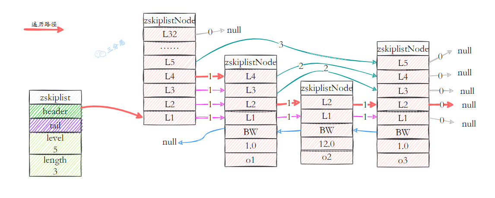
③、跨度
层的跨度用于记录两个节点之间的距离。跨度是用来计算排位（rank）的：在查找某个节点的过程中，将沿途访问过的所有层的跨度累计起来，得到的结果就是目标节点在跳跃表中的排位。
例如查找，分值为 3.0、成员对象为 o3 的节点时，沿途经历的层：查找的过程只经过了一个层，并且层的跨度为 3，所以目标节点在跳跃表中的排位为 3。
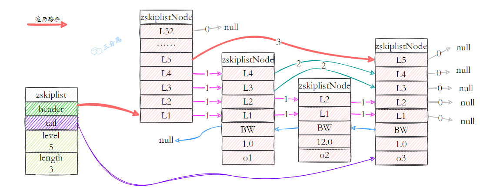
④、分值和成员
节点的分值（score 属性）是一个 double 类型的浮点数，跳跃表中所有的节点都按分值从小到大来排序。
节点的成员对象（obj 属性）是一个指针，它指向一个字符串对象，而字符串对象则保存这一个 SDS 值。
为什么 hash 表范围查询效率比跳表低？
哈希表是一种基于键值对的数据结构，主要用于快速查找、插入和删除操作。
哈希表通过计算键的哈希值来确定值的存储位置，这使得它在单个元素的访问上非常高效，时间复杂度为 O(1)。
然而，哈希表内的元素是无序的。因此，对于范围查询（如查找所有在某个范围内的元素），哈希表无法直接支持，必须遍历整个表来检查哪些元素满足条件，这使得其在范围查询上的效率低下，时间复杂度为 O(n)。
跳表是一种有序的数据结构，能够保持元素的排序顺序。
它通过多层的链表结构实现快速的插入、删除和查找操作，其中每一层都是下一层的一个子集，并且元素在每一层都是有序的。
当进行范围查询时，跳表可以从最高层开始，快速定位到范围的起始点，然后沿着下一层继续直到找到范围的结束点。这种分层的结构使得跳表在进行范围查询时非常高效，时间复杂度为 O(log n) 加上范围内元素的数量。
- Java 面试指南（付费）收录的小米暑期实习同学 E 一面面试原题：为什么 hash 表范围查询效率比跳表低
- Java 面试指南（付费）收录的腾讯面经同学 23 QQ 后台技术一面面试原题：zset 的底层原理
- Java 面试指南（付费）收录的得物面经同学 8 一面面试原题：跳表的结构
- Java 面试指南（付费）收录的美团面经同学 4 一面面试原题：Redis 跳表
- Java 面试指南（付费）收录的阿里系面经同学 19 饿了么面试原题：跳表了解吗
53.压缩列表了解吗？
压缩列表是 Redis 为了节约内存 而使用的一种数据结构，由一系列特殊编码的连续内存块组成的顺序型数据结构。
hash、list、zset 在元素较少时会使用压缩列表。

一个压缩列表包含任意多个节点，每个节点可以保存一个字节数组或者一个整数值。

- zlbyttes：记录整个压缩列表占用的内存字节数
- zltail：记录压缩列表表尾节点距离压缩列表的起始地址有多少字节
- zllen：记录压缩列表包含的节点数量
- entryX：列表节点
- zlend：用于标记压缩列表的末端
- Java 面试指南（付费）收录的同学 30 腾讯音乐面试原题：什么情况下使用压缩列表
54.快速列表 quicklist 了解吗？
Redis 早期版本存储 list 列表数据结构使用的是压缩列表 ziplist 和普通的双向链表 linkedlist，也就是说当元素少时使用 ziplist，当元素多时用 linkedlist。
但考虑到链表的附加空间相对较高，prev 和 next 指针就要占去 16 个字节（64 位操作系统占用 8 个字节），另外每个节点的内存都是单独分配，会家具内存的碎片化，影响内存管理效率。
后来 Redis 新版本（3.2）对列表数据结构进行了改造，使用 quicklist 代替了 ziplist 和 linkedlist，quicklist 是综合考虑了时间效率与空间效率引入的新型数据结构。
quicklist 由 list 和 ziplist 结合而成，它是一个由 ziplist 充当节点的双向链表。
GitHub 上标星 10000+ 的开源知识库《二哥的 Java 进阶之路》第一版 PDF 终于来了！包括 Java 基础语法、数组&字符串、OOP、集合框架、Java IO、异常处理、Java 新特性、网络编程、NIO、并发编程、JVM 等等，共计 32 万余字，500+张手绘图，可以说是通俗易懂、风趣幽默……详情戳：太赞了，GitHub 上标星 10000+ 的 Java 教程
微信搜 沉默王二 或扫描下方二维码关注二哥的原创公众号沉默王二，回复 222 即可免费领取。
补充
55.假如 Redis 里面有 1 亿个 key，其中有 10w 个 key 是以某个固定的已知的前缀开头的，如何将它们全部找出来？
使用 keys 指令可以扫出指定模式的 key 列表。但是要注意 keys 指令会导致线程阻塞一段时间，线上服务会停顿，直到指令执行完毕，服务才能恢复。这个时候可以使用 scan 指令，scan 指令可以无阻塞的提取出指定模式的 key 列表，但是会有一定的重复概率，在客户端做一次去重就可以了，但是整体所花费的时间会比直接用 keys 指令长。
56.Redis 的秒杀场景下扮演了什么角色？（补充）
秒杀主要是指大量用户集中在短时间内对服务器进行访问，从而导致服务器负载剧增，可能出现系统响应缓慢甚至崩溃的情况。
针对秒杀的场景来说，最终抢到商品的用户是固定的，也就是说 100 个人和 10000 个人来抢一个商品，最终都只能有 100 个人抢到。
但是对于秒杀活动的初心来说，肯定是希望参与的用户越多越好，但真正开始下单时，最好能把请求控制在服务器能够承受的范围之内（😂）。

解决这一问题的关键就在于错峰削峰和限流。当然了，前端页面的静态化、按钮防抖也能够有效的减轻服务器的压力。
- 页面静态化：将商品详情等页面静态化，使用 CDN 分发。
- 按钮防抖：避免用户因频繁点击造成的额外请求，比如设定间隔时间后才能再次点击。
如何实现错峰削峰呢？
针对车流量的晚高峰和早高峰，最强有力的办法就是限行，但限行不是无损的，毕竟限行的牌号无法出行。
无损的方式就是有的车辆早出发，有的车辆晚出发，这样就能够实现错峰出行。
在秒杀场景下，可以通过以下几种方式实现错峰削峰：
①、预热缓存：提前将热点数据加载到 Redis 缓存中，减少对数据库的访问压力。
②、消息队列：引入消息队列，将请求异步处理，减少瞬时请求压力。消息队列就像一个水库，可以削减上游的洪峰流量。

③、多阶段多时间窗口：将秒杀活动分为多个阶段，每个阶段设置不同的时间窗口，让用户在不同的时间段内参与秒杀活动。
④、插入答题系统：在秒杀活动中加入答题环节，只有答对题目的用户才能参与秒杀活动，这样可以减少无效请求。

如何限流呢？
采用令牌桶算法，它就像在帝都买车，摇到号才有资格，没摇到就只能等下一次（😁）。
在实际开发中，我们需要维护一个容器，按照固定的速率往容器中放令牌（token），当请求到来时，从容器中取出一个令牌，如果容器中没有令牌，则拒绝请求。
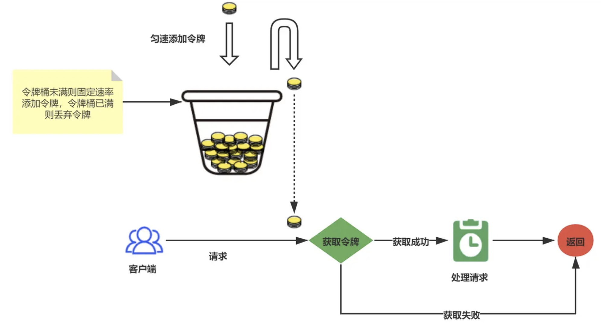
第一步，使用 Redis 初始化令牌桶：
redis-cli SET "token_bucket" "100"
第二步，使用 Lua 脚本实现令牌桶算法；假设每秒向桶中添加 10 个令牌，但不超过桶的最大容量。
-- Lua 脚本来添加令牌，并确保不超过最大容量
local bucket = KEYS[1]
local add_count = tonumber(ARGV[1])
local max_tokens = tonumber(ARGV[2])
local current = tonumber(redis.call('GET', bucket) or 0)
local new_count = math.min(current + add_count, max_tokens)
redis.call('SET', bucket, tostring(new_count))
return new_count
第三步，使用 Shell 脚本调用 Lua 脚本：
#!/bin/bash
while true; do
redis-cli EVAL "$(cat add_tokens.lua)" 1 token_bucket 10 100
sleep 1
done
第四步，当请求到达时，需要检查并消耗一个令牌。
-- Lua 脚本来消耗一个令牌
local bucket = KEYS[1]
local tokens = tonumber(redis.call('GET', bucket) or 0)
if tokens > 0 then
redis.call('DECR', bucket)
return 1 -- 成功消耗令牌
else
return 0 -- 令牌不足
end
调用 Lua 脚本：
redis-cli EVAL "$(cat consume_token.lua)" 1 token_bucket
- Java 面试指南（付费）收录的农业银行面经同学 3 Java 后端面试原题：秒杀问题（错峰、削峰、前端、流量控制）
- Java 面试指南（付费）收录的滴滴面经同学 3 网约车后端开发一面原题：限流算法
57. 客户端宕机后 Redis 服务端如何感知到？
每个客户端在 Redis 中维护一个特定的键（称为心跳键），用于表示客户端的健康状态。该键具有一个设置的超时时间，例如 10 秒。
客户端定期（如每 5 秒）更新这个心跳键的超时时间，保持它的存活状态，通常通过 SET 命令重设键的过期时间。
import redis.clients.jedis.Jedis;
public class ClientHeartbeat {
private static final String HEARTBEAT_KEY = "client:heartbeat";
private static final int EXPIRE_TIME = 10; // 10秒
public static void main(String[] args) {
// 创建 Redis 连接
Jedis jedis = new Jedis("localhost");
// 定时更新心跳键
while (true) {
try {
// 设置心跳键并设置过期时间
jedis.setex(HEARTBEAT_KEY, EXPIRE_TIME, "alive");
// 打印心跳日志
System.out.println("Heartbeat sent.");
// 等待一段时间后再次发送心跳
Thread.sleep(5000); // 每5秒发送一次心跳
} catch (InterruptedException e) {
e.printStackTrace();
break;
}
}
}
}
Redis 服务端定期检查这个心跳键。如果发现该键已超时并被 Redis 自动删除，说明客户端可能已宕机。
import redis.clients.jedis.Jedis;
public class ServerMonitor {
private static final String HEARTBEAT_KEY = "client:heartbeat";
public static void main(String[] args) {
// 创建 Redis 连接
Jedis jedis = new Jedis("localhost");
// 定期检查心跳键
while (true) {
try {
// 检查心跳键是否存在
if (jedis.exists(HEARTBEAT_KEY)) {
System.out.println("Client is alive.");
} else {
System.out.println("Client is down or disconnected.");
}
// 每隔一段时间检查一次
Thread.sleep(10000); // 每10秒检查一次
} catch (InterruptedException e) {
e.printStackTrace();
break;
}
}
}
}
- Java 面试指南（付费）收录的字节跳动面经同学 21 抖音商城一面面试原题：如果客户端宕机服务器如何感知？
图文详解 57 道 Redis 面试高频题，这次吊打面试官，我觉得稳了（手动 dog）。整理：沉默王二，戳转载链接，作者：三分恶，戳原文链接。
没有什么使我停留——除了目的，纵然岸旁有玫瑰、有绿荫、有宁静的港湾，我是不系之舟。
系列内容：
- 面渣逆袭 Java SE 篇 👍
- 面渣逆袭 Java 集合框架篇 👍
- 面渣逆袭 Java 并发编程篇 👍
- 面渣逆袭 JVM 篇 👍
- 面渣逆袭 Spring 篇 👍
- 面渣逆袭 Redis 篇 👍
- 面渣逆袭 MyBatis 篇 👍
- 面渣逆袭 MySQL 篇 👍
- 面渣逆袭操作系统篇 👍
- 面渣逆袭计算机网络篇 👍
- 面渣逆袭 RocketMQ 篇 👍
- 面渣逆袭分布式篇 👍
- 面渣逆袭微服务篇 👍
- 面渣逆袭设计模式篇 👍
- 面渣逆袭 Linux 篇 👍
GitHub 上标星 10000+ 的开源知识库《二哥的 Java 进阶之路》第一版 PDF 终于来了！包括 Java 基础语法、数组&字符串、OOP、集合框架、Java IO、异常处理、Java 新特性、网络编程、NIO、并发编程、JVM 等等，共计 32 万余字，500+张手绘图，可以说是通俗易懂、风趣幽默……详情戳：太赞了，GitHub 上标星 10000+ 的 Java 教程
微信搜 沉默王二 或扫描下方二维码关注二哥的原创公众号沉默王二，回复 222 即可免费领取。
title: 消息队列面试题之RocketMQ篇，23道RocketMQ八股文（1.1万字45张手绘图），面渣逆袭必看👍 shortTitle: 面渣逆袭-RocketMQ description: 下载次数超 1 万次，1.1 万字 45 张手绘图，详解 23 道 RocketMQ 面试高频题（让天下没有难背的八股），面渣背会这些 RocketMQ 八股文，这次吊打面试官，我觉得稳了（手动 dog）。 author: 三分恶 category:
- 面渣逆袭 tag:
- 面渣逆袭 head:
-
- meta
- name: keywords content: RocketMQ面试题,RocketMQ,面试题,八股文
1.1 万字 45 张手绘图，详解 23 道 RocketMQ 面试高频题（让天下没有难背的八股），面渣背会这些 RocketMQ 八股文，这次吊打面试官，我觉得稳了（手动 dog）。整理：沉默王二，戳转载链接，作者：三分恶，戳原文链接。
基础
1.为什么要使用消息队列呢？
消息队列（Message Queue, MQ）是一种非常重要的中间件技术，广泛应用于分布式系统中，以提高系统的可用性、解耦能力和异步通信效率。
①、解耦
生产者将消息放入队列，消费者从队列中取出消息，这样一来，生产者和消费者之间就不需要直接通信，生产者只管生产消息，消费者只管消费消息，这样就实现了解耦。

像 PmHub 中的任务审批，就用了 RocketMQ 来做解耦。

②、异步：
系统可以将那些耗时的任务放在消息队列中异步处理，从而快速响应用户的请求。比如说，用户下单后，系统可以先返回一个下单成功的消息，然后将订单信息放入消息队列中，后台系统再去处理订单信息。

③、削峰：
削峰填谷是一种常见的技术手段，用于应对系统高并发请求的瞬时流量高峰，通过消息队列，可以将瞬时的高峰流量转化为持续的低流量，从而保护系统不会因为瞬时的高流量而崩溃。

如何用RocketMQ做削峰填谷的？
用户请求到达系统后，由生产者接收请求并将其转化为消息，发送到 RocketMQ 队列中。队列用来充当缓冲区，将大量请求按照顺序排队，这样就可以削减请求高峰时对后端服务的直接压力。
不仅如此，生产者通过异步方式发送消息，还可以快速响应用户请求。
消费者从 RocketMQ 队列中按照一定速率读取消息并进行处理。可以根据后端处理能力和当前负载情况动态调整消费者的消费速率，达到填谷的效果。
- Java 面试指南（付费）收录的字节跳动同学 7 Java 后端实习一面的原题：有了解过 MQ 吗？
- Java 面试指南（付费）收录的腾讯面经同学 24 面试原题：如何用消息队列做削峰填谷的？
- Java 面试指南（付费）收录的美团面经同学 4 一面面试原题：项目里用 RocketMQ 做削峰，还有什么场景适合消息队列
- Java 面试指南（付费）收录的字节跳动同学 20 测开一面的原题：RocketMQ有什么用，你一般拿来做什么
2.为什么要选择 RocketMQ?

我们系统主要面向 C 端用户，有一定的并发量，对性能也有比较高的要求，所以选择了低延迟、吞吐量比较高，可用性比较好的 RocketMQ。
3.RocketMQ 有什么优缺点？
RocketMQ 优点：
- 单机吞吐量：十万级
- 可用性：非常高，分布式架构
- 消息可靠性：经过参数优化配置，消息可以做到 0 丢失
- 功能支持：MQ 功能较为完善，还是分布式的，扩展性好
- 支持 10 亿级别的消息堆积，不会因为堆积导致性能下降
- 源码是 Java，方便结合公司自己的业务二次开发
- 天生为金融互联网领域而生，对于可靠性要求很高的场景，尤其是电商里面的订单扣款，以及业务削峰，在大量交易涌入时，后端可能无法及时处理的情况
- RoketMQ在稳定性上可能更值得信赖，这些业务场景在阿里双 11 已经经历了多次考验，如果你的业务有上述并发场景，建议可以选择RocketMQ
RocketMQ 缺点：
- 支持的客户端语言不多，目前是 Java 及 c++，其中 c++不成熟
- 没有在 MQ 核心中去实现JMS等接口，有些系统要迁移需要修改大量代码
说说你对 RocketMQ 的理解？

RocketMQ 是阿里巴巴开源的一款分布式消息中间件，具有高吞吐量、低延迟和高可用性。其主要组件包括生产者、消费者、Broker、Topic 和队列。消息由生产者发送到 Broker，再根据路由规则存储到队列中，消费者从队列中拉取消息进行处理。适用于异步解耦和流量削峰等场景。
- Java 面试指南（付费）收录的京东同学 4 云实习面试原题：说说你对RocketMQ的理解
4.消息队列有哪些消息模型？
消息队列有两种模型：队列模型和发布/订阅模型。
- 队列模型
这是最初的一种消息队列模型，对应着消息队列“发-存-收”的模型。生产者往某个队列里面发送消息，一个队列可以存储多个生产者的消息，一个队列也可以有多个消费者，但是消费者之间是竞争关系，也就是说每条消息只能被一个消费者消费。

- 发布/订阅模型
如果需要将一份消息数据分发给多个消费者，并且每个消费者都要求收到全量的消息。很显然，队列模型无法满足这个需求。解决的方式就是发布/订阅模型。
在发布 - 订阅模型中，消息的发送方称为发布者（Publisher），消息的接收方称为订阅者（Subscriber），服务端存放消息的容器称为主题（Topic）。发布者将消息发送到主题中，订阅者在接收消息之前需要先“订阅主题”。“订阅”在这里既是一个动作，同时还可以认为是主题在消费时的一个逻辑副本，每份订阅中，订阅者都可以接收到主题的所有消息。

它和 “队列模式” 的异同：生产者就是发布者，队列就是主题，消费者就是订阅者，无本质区别。唯一的不同点在于：一份消息数据是否可以被多次消费。
5.那 RocketMQ 的消息模型呢？
RocketMQ 使用的消息模型是标准的发布-订阅模型，在 RocketMQ 的术语表中，生产者、消费者和主题，与发布-订阅模型中的概念是完全一样的。
RocketMQ 本身的消息是由下面几部分组成：

- Message
Message（消息）就是要传输的信息。
一条消息必须有一个主题（Topic），主题可以看做是你的信件要邮寄的地址。
一条消息也可以拥有一个可选的标签（Tag）和额处的键值对，它们可以用于设置一个业务 Key 并在 Broker 上查找此消息以便在开发期间查找问题。
- Topic
Topic（主题）可以看做消息的归类，它是消息的第一级类型。比如一个电商系统可以分为：交易消息、物流消息等，一条消息必须有一个 Topic 。
Topic 与生产者和消费者的关系非常松散，一个 Topic 可以有 0 个、1 个、多个生产者向其发送消息，一个生产者也可以同时向不同的 Topic 发送消息。
一个 Topic 也可以被 0 个、1 个、多个消费者订阅。
- Tag
Tag（标签）可以看作子主题，它是消息的第二级类型，用于为用户提供额外的灵活性。使用标签，同一业务模块不同目的的消息就可以用相同 Topic 而不同的 Tag 来标识。比如交易消息又可以分为：交易创建消息、交易完成消息等，一条消息可以没有 Tag 。
标签有助于保持你的代码干净和连贯，并且还可以为 RocketMQ 提供的查询系统提供帮助。
- Group
RocketMQ 中，订阅者的概念是通过消费组（Consumer Group）来体现的。每个消费组都消费主题中一份完整的消息，不同消费组之间消费进度彼此不受影响，也就是说，一条消息被 Consumer Group1 消费过，也会再给 Consumer Group2 消费。
消费组中包含多个消费者，同一个组内的消费者是竞争消费的关系，每个消费者负责消费组内的一部分消息。默认情况，如果一条消息被消费者 Consumer1 消费了，那同组的其他消费者就不会再收到这条消息。
- Message Queue
Message Queue（消息队列），一个 Topic 下可以设置多个消息队列，Topic 包括多个 Message Queue ，如果一个 Consumer 需要获取 Topic 下所有的消息，就要遍历所有的 Message Queue。
RocketMQ 还有一些其它的 Queue——例如 ConsumerQueue。
- Offset
在 Topic 的消费过程中，由于消息需要被不同的组进行多次消费，所以消费完的消息并不会立即被删除，这就需要 RocketMQ 为每个消费组在每个队列上维护一个消费位置（Consumer Offset），这个位置之前的消息都被消费过，之后的消息都没有被消费过，每成功消费一条消息，消费位置就加一。
也可以这么说，Queue 是一个长度无限的数组，Offset 就是下标。
RocketMQ 的消息模型中，这些就是比较关键的概念了。画张图总结一下：

6.消息的消费模式了解吗？
消息消费模式有两种：Clustering（集群消费）和Broadcasting（广播消费）。

默认情况下就是集群消费，这种模式下一个消费者组共同消费一个主题的多个队列，一个队列只会被一个消费者消费，如果某个消费者挂掉，分组内其它消费者会接替挂掉的消费者继续消费。
而广播消费消息会发给消费者组中的每一个消费者进行消费。
7.RoctetMQ 基本架构了解吗？
先看图，RocketMQ 的基本架构：

RocketMQ 一共有四个部分组成：NameServer，Broker，Producer 生产者，Consumer 消费者，它们对应了：发现、发、存、收，为了保证高可用，一般每一部分都是集群部署的。
8.那能介绍一下这四部分吗？
类比一下我们生活的邮政系统——
邮政系统要正常运行，离不开下面这四个角色， 一是发信者，二 是收信者， 三是负责暂存传输的邮局， 四是负责协调各个地方邮局的管理机构。对应到 RocketMQ 中，这四个角色就是 Producer、 Consumer、 Broker 、NameServer。

NameServer
NameServer 是一个无状态的服务器，角色类似于 Kafka 使用的 Zookeeper，但比 Zookeeper 更轻量。
特点：
- 每个 NameServer 结点之间是相互独立，彼此没有任何信息交互。
- Nameserver 被设计成几乎是无状态的，通过部署多个结点来标识自己是一个伪集群，Producer 在发送消息前从 NameServer 中获取 Topic 的路由信息也就是发往哪个 Broker，Consumer 也会定时从 NameServer 获取 Topic 的路由信息，Broker 在启动时会向 NameServer 注册，并定时进行心跳连接，且定时同步维护的 Topic 到 NameServer。
功能主要有两个：
- 1、和 Broker 结点保持长连接。
- 2、维护 Topic 的路由信息。
Broker
消息存储和中转角色，负责存储和转发消息。
- Broker 内部维护着一个个 Consumer Queue，用来存储消息的索引，真正存储消息的地方是 CommitLog（日志文件）。

- 单个 Broker 与所有的 Nameserver 保持着长连接和心跳，并会定时将 Topic 信息同步到 NameServer，和 NameServer 的通信底层是通过 Netty 实现的。
Producer
消息生产者，业务端负责发送消息，由用户自行实现和分布式部署。
-
Producer由用户进行分布式部署，消息由Producer通过多种负载均衡模式发送到Broker集群，发送低延时，支持快速失败。
-
RocketMQ 提供了三种方式发送消息：同步、异步和单向
-
同步发送：同步发送指消息发送方发出数据后会在收到接收方发回响应之后才发下一个数据包。一般用于重要通知消息，例如重要通知邮件、营销短信。
-
异步发送：异步发送指发送方发出数据后，不等接收方发回响应，接着发送下个数据包，一般用于可能链路耗时较长而对响应时间敏感的业务场景，例如用户视频上传后通知启动转码服务。
-
单向发送：单向发送是指只负责发送消息而不等待服务器回应且没有回调函数触发，适用于某些耗时非常短但对可靠性要求并不高的场景，例如日志收集。
Consumer
消息消费者，负责消费消息，一般是后台系统负责异步消费。
- Consumer也由用户部署，支持 PUSH 和 PULL 两种消费模式，支持集群消费和广播消费，提供实时的消息订阅机制。
- Pull：拉取型消费者（Pull Consumer）主动从消息服务器拉取信息，只要批量拉取到消息，用户应用就会启动消费过程，所以 Pull 称为主动消费型。
- Push：推送型消费者（Push Consumer）封装了消息的拉取、消费进度和其他的内部维护工作，将消息到达时执行的回调接口留给用户应用程序来实现。所以 Push 称为被动消费类型，但其实从实现上看还是从消息服务器中拉取消息，不同于 Pull 的是 Push 首先要注册消费监听器，当监听器处触发后才开始消费消息。
GitHub 上标星 10000+ 的开源知识库《二哥的 Java 进阶之路》第一版 PDF 终于来了！包括 Java 基础语法、数组&字符串、OOP、集合框架、Java IO、异常处理、Java 新特性、网络编程、NIO、并发编程、JVM 等等，共计 32 万余字，500+张手绘图，可以说是通俗易懂、风趣幽默……详情戳：太赞了，GitHub 上标星 10000+ 的 Java 教程
微信搜 沉默王二 或扫描下方二维码关注二哥的原创公众号沉默王二，回复 222 即可免费领取。
进阶
9.如何保证消息的可用性/可靠性/不丢失呢？
消息可能在哪些阶段丢失呢？可能会在这三个阶段发生丢失：生产阶段、存储阶段、消费阶段。
所以要从这三个阶段考虑：

生产
在生产阶段，主要通过请求确认机制，来保证消息的可靠传递。
- 1、同步发送的时候，要注意处理响应结果和异常。如果返回响应 OK，表示消息成功发送到了 Broker，如果响应失败，或者发生其它异常，都应该重试。
- 2、异步发送的时候，应该在回调方法里检查，如果发送失败或者异常，都应该进行重试。
- 3、如果发生超时的情况，也可以通过查询日志的 API，来检查是否在 Broker 存储成功。
存储
存储阶段，可以通过配置可靠性优先的 Broker 参数来避免因为宕机丢消息，简单说就是可靠性优先的场景都应该使用同步。
- 1、消息只要持久化到 CommitLog（日志文件）中，即使 Broker 宕机，未消费的消息也能重新恢复再消费。
- 2、Broker 的刷盘机制：同步刷盘和异步刷盘，不管哪种刷盘都可以保证消息一定存储在 pagecache 中（内存中），但是同步刷盘更可靠，它是 Producer 发送消息后等数据持久化到磁盘之后再返回响应给 Producer。

- 3、Broker 通过主从模式来保证高可用，Broker 支持 Master 和 Slave 同步复制、Master 和 Slave 异步复制模式，生产者的消息都是发送给 Master，但是消费既可以从 Master 消费，也可以从 Slave 消费。同步复制模式可以保证即使 Master 宕机，消息肯定在 Slave 中有备份，保证了消息不会丢失。
消费
从 Consumer 角度分析，如何保证消息被成功消费？
- Consumer 保证消息成功消费的关键在于确认的时机，不要在收到消息后就立即发送消费确认，而是应该在执行完所有消费业务逻辑之后，再发送消费确认。因为消息队列维护了消费的位置，逻辑执行失败了，没有确认，再去队列拉取消息，就还是之前的一条。
10.如何处理消息重复的问题呢？
RocketMQ 可以保证消息一定投递，且不丢失，但无法保证消息不重复消费。
因此，需要在业务端做好消息的幂等性处理，或者做消息去重。

幂等性是指一个操作可以执行多次而不会产生副作用，即无论执行多少次，结果都是相同的。可以在业务逻辑中加入检查逻辑，确保同一消息多次消费不会产生副作用。
例如，在支付场景下，消费者消费扣款的消息，对一笔订单执行扣款操作，金额为100元。
如果因网络不稳定等原因导致扣款消息重复投递，消费者重复消费了该扣款消息，但最终的业务结果要保证只扣款一次，金额为100元。如果扣款操作是符合要求的，那么就可以认为整个消费过程实现了消息幂等。
消息去重，是指在消费者消费消息之前，先检查一下是否已经消费过这条消息，如果消费过了，就不再消费。
业务端可以通过一个专门的表来记录已经消费过的消息 ID，每次消费消息之前，先查询一下这个表，如果已经存在，就不再消费。
public void processMessage(String messageId, String message) {
if (!isMessageProcessed(messageId)) {
// 处理消息
markMessageAsProcessed(messageId);
}
}
private boolean isMessageProcessed(String messageId) {
// 查询去重表，检查消息ID是否存在
}
private void markMessageAsProcessed(String messageId) {
// 将消息ID插入去重表
}
如何保证消息的幂等性？

首先，消息必须携带业务唯一标识，可以通过雪花算法生成全局唯一 ID。
Message msg = new Message(TOPIC /* Topic */,
TAG /* Tag */,
("Hello RocketMQ " + i).getBytes(RemotingHelper.DEFAULT_CHARSET) /* Message body */
);
message.setKey("ORDERID_100"); // 订单编号
SendResult sendResult = producer.send(message);
其次，在消费者接收到消息后，判断 Redis 中是否存在该业务主键的标志位，若存在标志位，则认为消费成功，否则执行业务逻辑，执行完成后，在缓存中添加标志位。
public ConsumeConcurrentlyStatus consumeMessage(List<MessageExt> msgs, ConsumeConcurrentlyContext context) {
try {
for (MessageExt messageExt : msgs) {
String bizKey = messageExt.getKeys(); // 唯一业务主键
//1. 判断是否存在标志
if(redisTemplate.hasKey(RedisKeyConstants.WAITING_SEND_LOCK + bizKey)) {
continue;
}
//2. 执行业务逻辑
//TODO do business
//3. 设置标志位
redisTemplate.opsForValue().set(RedisKeyConstants.WAITING_SEND_LOCK + bizKey, "1", 72, TimeUnit.HOURS);
}
return ConsumeConcurrentlyStatus.CONSUME_SUCCESS;
} catch (Exception e) {
logger.error("consumeMessage error: ", e);
return ConsumeConcurrentlyStatus.RECONSUME_LATER;
}
}
然后，利用数据库的唯一索引来防止业务的重复插入。
CREATE TABLE `t_order` (
`id` bigint(20) NOT NULL AUTO_INCREMENT,
`order_id` varchar(64) NOT NULL COMMENT '订单编号',
`order_name` varchar(64) NOT NULL COMMENT '订单名称',
PRIMARY KEY (`id`),
UNIQUE KEY `order_id` (`order_id`)
) ENGINE=InnoDB DEFAULT CHARSET=utf8mb4 COMMENT='订单表';
最后，在数据库表中使用版本号，通过乐观锁机制来保证幂等性。每次更新操作时检查版本号是否一致，只有一致时才执行更新并递增版本号。如果版本号不一致，则说明操作已被执行过，拒绝重复操作。
public void updateRecordWithOptimisticLock(int id, String newValue, int expectedVersion) {
int updatedRows = jdbcTemplate.update(
"UPDATE records SET value = ?, version = version + 1 WHERE id = ? AND version = ?",
newValue, id, expectedVersion
);
if (updatedRows == 0) {
throw new OptimisticLockingFailureException("Record has been modified by another transaction");
}
}
或者悲观锁机制，通过数据库的锁机制来保证幂等性。
public void updateRecordWithPessimisticLock(int id) {
jdbcTemplate.queryForObject("SELECT * FROM records WHERE id = ? FOR UPDATE", id);
jdbcTemplate.update("UPDATE records SET value = ? WHERE id = ?", "newValue", id);
}
雪花算法了解吗？
雪花算法是由 Twitter 开发的一种分布式唯一 ID 生成算法。

雪花算法以 64 bit 来存储组成 ID 的4 个部分：
- 最高位占1 bit，始终为 0，表示正数。
- 中位占 41 bit，值为毫秒级时间戳；
- 中下位占 10 bit，机器 ID（包括数据中心 ID 和机器 ID），可以支持 1024 个节点。
- 末位占 12 bit，值为当前毫秒内生成的不同的自增序列，值的上限为 4096；
目前雪花算法的实现比较多，可以直接使用 Hutool 工具类库中的 IdUtil.getSnowflake() 方法来获取雪花 ID。
long id = IdUtil.getSnowflakeNextId();
- Java 面试指南（付费）收录的京东同学 4 云实习面试原题：如何处理消息重复消费的问题？如何保证幂等性？雪花算法了解吗？
11.怎么处理消息积压？
发生了消息积压，这时候就得想办法赶紧把积压的消息消费完，就得考虑提高消费能力，一般有两种办法：

- 消费者扩容：如果当前 Topic 的 Message Queue 的数量大于消费者数量，就可以对消费者进行扩容，增加消费者，来提高消费能力，尽快把积压的消息消费玩。
- 消息迁移 Queue 扩容：如果当前 Topic 的 Message Queue 的数量小于或者等于消费者数量，这种情况，再扩容消费者就没什么用，就得考虑扩容 Message Queue。可以新建一个临时的 Topic，临时的 Topic 多设置一些 Message Queue，然后先用一些消费者把消费的数据丢到临时的 Topic，因为不用业务处理，只是转发一下消息，还是很快的。接下来用扩容的消费者去消费新的 Topic 里的数据，消费完了之后，恢复原状。

12.顺序消息如何实现？
RocketMQ 实现顺序消息的关键在于保证消息生产和消费过程中严格的顺序控制，即确保同一业务的消息按顺序发送到同一个队列中，并由同一个消费者线程按顺序消费。

局部顺序消息如何实现？
局部顺序消息保证在某个逻辑分区或业务逻辑下的消息顺序，例如同一个订单或用户的消息按顺序消费，而不同订单或用户之间的顺序不做保证。

全局顺序消息如何实现？
全局顺序消息保证消息在整个系统范围内的严格顺序，即消息按照生产的顺序被消费。
可以将所有消息发送到一个单独的队列中，确保所有消息按生产顺序发送和消费。

- Java 面试指南（付费）收录的京东面经同学 2 后端面试原题：说说mq原理，怎么保证消息接受顺序？
- Java 面试指南（付费）收录的收钱吧面经同学 1 Java 后端一面面试原题：RocketMQ的顺序消息？
13.如何实现消息过滤？
有两种方案：
- 一种是在 Broker 端按照 Consumer 的去重逻辑进行过滤，这样做的好处是避免了无用的消息传输到 Consumer 端，缺点是加重了 Broker 的负担，实现起来相对复杂。
- 另一种是在 Consumer 端过滤，比如按照消息设置的 tag 去重，这样的好处是实现起来简单，缺点是有大量无用的消息到达了 Consumer 端只能丢弃不处理。
一般采用 Cosumer 端过滤，如果希望提高吞吐量，可以采用 Broker 过滤。
对消息的过滤有三种方式：

- 根据 Tag 过滤：这是最常见的一种，用起来高效简单
DefaultMQPushConsumer consumer = new DefaultMQPushConsumer("CID_EXAMPLE");
consumer.subscribe("TOPIC", "TAGA || TAGB || TAGC");
- SQL 表达式过滤：SQL 表达式过滤更加灵活
DefaultMQPushConsumer consumer = new DefaultMQPushConsumer("please_rename_unique_group_name_4");
// 只有订阅的消息有这个属性a, a >=0 and a <= 3
consumer.subscribe("TopicTest", MessageSelector.bySql("a between 0 and 3");
consumer.registerMessageListener(new MessageListenerConcurrently() {
@Override
public ConsumeConcurrentlyStatus consumeMessage(List<MessageExt> msgs, ConsumeConcurrentlyContext context) {
return ConsumeConcurrentlyStatus.CONSUME_SUCCESS;
}
});
consumer.start();
- Filter Server 方式：最灵活，也是最复杂的一种方式，允许用户自定义函数进行过滤
14.延时消息了解吗？
电商的订单超时自动取消，就是一个典型的利用延时消息的例子，用户提交了一个订单，就可以发送一个延时消息，1h 后去检查这个订单的状态，如果还是未付款就取消订单释放库存。
RocketMQ 是支持延时消息的，只需要在生产消息的时候设置消息的延时级别：
// 实例化一个生产者来产生延时消息
DefaultMQProducer producer = new DefaultMQProducer("ExampleProducerGroup");
// 启动生产者
producer.start();
int totalMessagesToSend = 100;
for (int i = 0; i < totalMessagesToSend; i++) {
Message message = new Message("TestTopic", ("Hello scheduled message " + i).getBytes());
// 设置延时等级3,这个消息将在10s之后发送(现在只支持固定的几个时间,详看delayTimeLevel)
message.setDelayTimeLevel(3);
// 发送消息
producer.send(message);
}
但是目前 RocketMQ 支持的延时级别是有限的：
private String messageDelayLevel = "1s 5s 10s 30s 1m 2m 3m 4m 5m 6m 7m 8m 9m 10m 20m 30m 1h 2h";
RocketMQ 怎么实现延时消息的？
简单，八个字：临时存储+定时任务。
Broker 收到延时消息了，会先发送到主题（SCHEDULE_TOPIC_XXXX）的相应时间段的 Message Queue 中，然后通过一个定时任务轮询这些队列，到期后，把消息投递到目标 Topic 的队列中，然后消费者就可以正常消费这些消息。

15.怎么实现分布式消息事务的？半消息？
半消息：是指暂时还不能被 Consumer 消费的消息，Producer 成功发送到 Broker 端的消息，但是此消息被标记为 “暂不可投递” 状态，只有等 Producer 端执行完本地事务后经过二次确认了之后，Consumer 才能消费此条消息。
依赖半消息，可以实现分布式消息事务，其中的关键在于二次确认以及消息回查：

- 1、Producer 向 broker 发送半消息
- 2、Producer 端收到响应，消息发送成功，此时消息是半消息，标记为 “不可投递” 状态，Consumer 消费不了。
- 3、Producer 端执行本地事务。
- 4、正常情况本地事务执行完成，Producer 向 Broker 发送 Commit/Rollback，如果是 Commit，Broker 端将半消息标记为正常消息，Consumer 可以消费，如果是 Rollback，Broker 丢弃此消息。
- 5、异常情况，Broker 端迟迟等不到二次确认。在一定时间后，会查询所有的半消息，然后到 Producer 端查询半消息的执行情况。
- 6、Producer 端查询本地事务的状态
- 7、根据事务的状态提交 commit/rollback 到 broker 端。（5，6，7 是消息回查）
- 8、消费者段消费到消息之后，执行本地事务。
16.死信队列知道吗？
死信队列用于存储那些无法被正常处理的消息，这些消息被称为死信（Dead Letter）。

产生死信的原因是，消费者在处理消息时发生异常，且达到了最大重试次数。当消费失败的原因排查并解决后，可以重发这些死信消息，让消费者重新消费；如果暂时无法处理，为避免到期后死信消息被删除，可以先将死信消息导出并进行保存。
- Java 面试指南（付费）收录的京东同学 4 云实习面试原题：说说 RocketMQ 的死信队列
17.如何保证 RocketMQ 的高可用？
NameServer 因为是无状态，且不相互通信的，所以只要集群部署就可以保证高可用。

RocketMQ 的高可用主要是在体现在 Broker 的读和写的高可用，Broker 的高可用是通过集群和主从实现的。

Broker 可以配置两种角色：Master 和 Slave，Master 角色的 Broker 支持读和写，Slave 角色的 Broker 只支持读，Master 会向 Slave 同步消息。
也就是说 Producer 只能向 Master 角色的 Broker 写入消息，Cosumer 可以从 Master 和 Slave 角色的 Broker 读取消息。
Consumer 的配置文件中，并不需要设置是从 Master 读还是从 Slave 读，当 Master 不可用或者繁忙的时候， Consumer 的读请求会被自动切换到从 Slave。有了自动切换 Consumer 这种机制，当一个 Master 角色的机器出现故障后，Consumer 仍然可以从 Slave 读取消息，不影响 Consumer 读取消息，这就实现了读的高可用。
如何达到发送端写的高可用性呢？在创建 Topic 的时候，把 Topic 的多个 Message Queue 创建在多个 Broker 组上（相同 Broker 名称，不同 brokerId 机器组成 Broker 组），这样当 Broker 组的 Master 不可用后，其他组 Master 仍然可用， Producer 仍然可以发送消息 RocketMQ 目前还不支持把 Slave 自动转成 Master ，如果机器资源不足，需要把 Slave 转成 Master ，则要手动停止 Slave 色的 Broker ，更改配置文件，用新的配置文件启动 Broker。
GitHub 上标星 10000+ 的开源知识库《二哥的 Java 进阶之路》第一版 PDF 终于来了！包括 Java 基础语法、数组&字符串、OOP、集合框架、Java IO、异常处理、Java 新特性、网络编程、NIO、并发编程、JVM 等等，共计 32 万余字，500+张手绘图，可以说是通俗易懂、风趣幽默……详情戳：太赞了，GitHub 上标星 10000+ 的 Java 教程
微信搜 沉默王二 或扫描下方二维码关注二哥的原创公众号沉默王二，回复 222 即可免费领取。
原理
18.说一下 RocketMQ 的整体工作流程？
简单来说，RocketMQ 是一个分布式消息队列，也就是消息队列+分布式系统。
作为消息队列，它是发-存-收的一个模型，对应的就是 Producer、Broker、Cosumer；作为分布式系统，它要有服务端、客户端、注册中心，对应的就是 Broker、Producer/Consumer、NameServer
所以我们看一下它主要的工作流程：RocketMQ 由 NameServer 注册中心集群、Producer 生产者集群、Consumer 消费者集群和若干 Broker（RocketMQ 进程）组成：
- Broker 在启动的时候去向所有的 NameServer 注册，并保持长连接，每 30s 发送一次心跳
- Producer 在发送消息的时候从 NameServer 获取 Broker 服务器地址，根据负载均衡算法选择一台服务器来发送消息
- Conusmer 消费消息的时候同样从 NameServer 获取 Broker 地址，然后主动拉取消息来消费

19.为什么 RocketMQ 不使用 Zookeeper 作为注册中心呢？
Kafka 我们都知道采用 Zookeeper 作为注册中心——当然也开始逐渐去 Zookeeper，RocketMQ 不使用 Zookeeper 其实主要可能从这几方面来考虑：
- 基于可用性的考虑，根据 CAP 理论，同时最多只能满足两个点，而 Zookeeper 满足的是 CP，也就是说 Zookeeper 并不能保证服务的可用性，Zookeeper 在进行选举的时候，整个选举的时间太长，期间整个集群都处于不可用的状态，而这对于一个注册中心来说肯定是不能接受的，作为服务发现来说就应该是为可用性而设计。
- 基于性能的考虑，NameServer 本身的实现非常轻量，而且可以通过增加机器的方式水平扩展，增加集群的抗压能力，而 Zookeeper 的写是不可扩展的，Zookeeper 要解决这个问题只能通过划分领域，划分多个 Zookeeper 集群来解决，首先操作起来太复杂，其次这样还是又违反了 CAP 中的 A 的设计，导致服务之间是不连通的。
- 持久化的机制来带的问题，ZooKeeper 的 ZAB 协议对每一个写请求，会在每个 ZooKeeper 节点上保持写一个事务日志，同时再加上定期的将内存数据镜像（Snapshot）到磁盘来保证数据的一致性和持久性，而对于一个简单的服务发现的场景来说，这其实没有太大的必要，这个实现方案太重了。而且本身存储的数据应该是高度定制化的。
- 消息发送应该弱依赖注册中心，而 RocketMQ 的设计理念也正是基于此，生产者在第一次发送消息的时候从 NameServer 获取到 Broker 地址后缓存到本地，如果 NameServer 整个集群不可用，短时间内对于生产者和消费者并不会产生太大影响。
20.Broker 是怎么保存数据的呢？
RocketMQ 主要的存储文件包括 CommitLog 文件、ConsumeQueue 文件、Indexfile 文件。

消息存储的整体的设计：

- CommitLog：消息主体以及元数据的存储主体，存储 Producer 端写入的消息主体内容,消息内容不是定长的。单个文件大小默认 1G, 文件名长度为 20 位，左边补零，剩余为起始偏移量，比如 00000000000000000000 代表了第一个文件，起始偏移量为 0，文件大小为 1G=1073741824；当第一个文件写满了，第二个文件为 00000000001073741824，起始偏移量为 1073741824，以此类推。消息主要是顺序写入日志文件，当文件满了，写入下一个文件。
CommitLog 文件保存于${Rocket_Home}/store/commitlog 目录中，从图中我们可以明显看出来文件名的偏移量，每个文件默认 1G，写满后自动生成一个新的文件。

- ConsumeQueue：消息消费队列，引入的目的主要是提高消息消费的性能，由于 RocketMQ 是基于主题 topic 的订阅模式，消息消费是针对主题进行的，如果要遍历 commitlog 文件中根据 topic 检索消息是非常低效的。
Consumer 即可根据 ConsumeQueue 来查找待消费的消息。其中，ConsumeQueue（逻辑消费队列）作为消费消息的索引，保存了指定 Topic 下的队列消息在 CommitLog 中的起始物理偏移量 offset，消息大小 size 和消息 Tag 的 HashCode 值。
ConsumeQueue 文件可以看成是基于 Topic 的 CommitLog 索引文件，故 ConsumeQueue 文件夹的组织方式如下：topic/queue/file 三层组织结构，具体存储路径为：$HOME/store/consumequeue/{topic}/{queueId}/{fileName}。同样 ConsumeQueue 文件采取定长设计，每一个条目共 20 个字节，分别为 8 字节的 CommitLog 物理偏移量、4 字节的消息长度、8 字节 tag hashcode，单个文件由 30W 个条目组成，可以像数组一样随机访问每一个条目，每个 ConsumeQueue 文件大小约 5.72M；

- IndexFile：IndexFile（索引文件）提供了一种可以通过 key 或时间区间来查询消息的方法。Index 文件的存储位置是： {fileName}，文件名 fileName 是以创建时的时间戳命名的，固定的单个 IndexFile 文件大小约为 400M，一个 IndexFile 可以保存 2000W 个索引，IndexFile 的底层存储设计为在文件系统中实现 HashMap 结构，故 RocketMQ 的索引文件其底层实现为 hash 索引。

总结一下：RocketMQ 采用的是混合型的存储结构，即为 Broker 单个实例下所有的队列共用一个日志数据文件（即为 CommitLog）来存储。
RocketMQ 的混合型存储结构(多个 Topic 的消息实体内容都存储于一个 CommitLog 中)针对 Producer 和 Consumer 分别采用了数据和索引部分相分离的存储结构，Producer 发送消息至 Broker 端，然后 Broker 端使用同步或者异步的方式对消息刷盘持久化，保存至 CommitLog 中。
只要消息被刷盘持久化至磁盘文件 CommitLog 中，那么 Producer 发送的消息就不会丢失。正因为如此，Consumer 也就肯定有机会去消费这条消息。当无法拉取到消息后，可以等下一次消息拉取，同时服务端也支持长轮询模式，如果一个消息拉取请求未拉取到消息，Broker 允许等待 30s 的时间，只要这段时间内有新消息到达，将直接返回给消费端。
这里，RocketMQ 的具体做法是，使用 Broker 端的后台服务线程—ReputMessageService 不停地分发请求并异步构建 ConsumeQueue（逻辑消费队列）和 IndexFile（索引文件）数据。

21.说说 RocketMQ 怎么对文件进行读写的？
RocketMQ 对文件的读写巧妙地利用了操作系统的一些高效文件读写方式——PageCache、顺序读写、零拷贝。
- PageCache、顺序读取
在 RocketMQ 中，ConsumeQueue 逻辑消费队列存储的数据较少，并且是顺序读取，在 page cache 机制的预读取作用下，Consume Queue 文件的读性能几乎接近读内存，即使在有消息堆积情况下也不会影响性能。而对于 CommitLog 消息存储的日志数据文件来说，读取消息内容时候会产生较多的随机访问读取，严重影响性能。如果选择合适的系统 IO 调度算法，比如设置调度算法为“Deadline”（此时块存储采用 SSD 的话），随机读的性能也会有所提升。
页缓存（PageCache)是 OS 对文件的缓存，用于加速对文件的读写。一般来说，程序对文件进行顺序读写的速度几乎接近于内存的读写速度，主要原因就是由于 OS 使用 PageCache 机制对读写访问操作进行了性能优化，将一部分的内存用作 PageCache。对于数据的写入，OS 会先写入至 Cache 内，随后通过异步的方式由 pdflush 内核线程将 Cache 内的数据刷盘至物理磁盘上。对于数据的读取，如果一次读取文件时出现未命中 PageCache 的情况，OS 从物理磁盘上访问读取文件的同时，会顺序对其他相邻块的数据文件进行预读取。
- 零拷贝
另外，RocketMQ 主要通过 MappedByteBuffer 对文件进行读写操作。其中，利用了 NIO 中的 FileChannel 模型将磁盘上的物理文件直接映射到用户态的内存地址中（这种 Mmap 的方式减少了传统 IO，将磁盘文件数据在操作系统内核地址空间的缓冲区，和用户应用程序地址空间的缓冲区之间来回进行拷贝的性能开销），将对文件的操作转化为直接对内存地址进行操作，从而极大地提高了文件的读写效率（正因为需要使用内存映射机制，故 RocketMQ 的文件存储都使用定长结构来存储，方便一次将整个文件映射至内存）。
说说什么是零拷贝?
在操作系统中，使用传统的方式，数据需要经历几次拷贝，还要经历用户态/内核态切换。

- 从磁盘复制数据到内核态内存；
- 从内核态内存复制到用户态内存；
- 然后从用户态内存复制到网络驱动的内核态内存；
- 最后是从网络驱动的内核态内存复制到网卡中进行传输。
所以，可以通过零拷贝的方式，减少用户态与内核态的上下文切换和内存拷贝的次数，用来提升 I/O 的性能。零拷贝比较常见的实现方式是mmap，这种机制在 Java 中是通过 MappedByteBuffer 实现的。

22.消息刷盘怎么实现的呢？
RocketMQ 提供了两种刷盘策略：同步刷盘和异步刷盘
- 同步刷盘：在消息达到 Broker 的内存之后，必须刷到 commitLog 日志文件中才算成功，然后返回 Producer 数据已经发送成功。
- 异步刷盘：异步刷盘是指消息达到 Broker 内存后就返回 Producer 数据已经发送成功，会唤醒一个线程去将数据持久化到 CommitLog 日志文件中。
Broker 在消息的存取时直接操作的是内存（内存映射文件），这可以提供系统的吞吐量，但是无法避免机器掉电时数据丢失，所以需要持久化到磁盘中。
刷盘的最终实现都是使用NIO中的 MappedByteBuffer.force() 将映射区的数据写入到磁盘，如果是同步刷盘的话，在Broker把消息写到CommitLog映射区后，就会等待写入完成。
异步而言，只是唤醒对应的线程，不保证执行的时机，流程如图所示。

23.能说下 RocketMQ 的负载均衡是如何实现的？
RocketMQ 中的负载均衡都在 Client 端完成，具体来说的话，主要可以分为 Producer 端发送消息时候的负载均衡和 Consumer 端订阅消息的负载均衡。
Producer 的负载均衡
Producer 端在发送消息的时候，会先根据 Topic 找到指定的 TopicPublishInfo，在获取了 TopicPublishInfo 路由信息后，RocketMQ 的客户端在默认方式下 selectOneMessageQueue()方法会从 TopicPublishInfo 中的 messageQueueList 中选择一个队列（MessageQueue）进行发送消息。具这里有一个 sendLatencyFaultEnable 开关变量，如果开启，在随机递增取模的基础上，再过滤掉 not available 的 Broker 代理。

所谓的"latencyFaultTolerance"，是指对之前失败的，按一定的时间做退避。例如，如果上次请求的 latency 超过 550Lms，就退避 3000Lms；超过 1000L，就退避 60000L；如果关闭，采用随机递增取模的方式选择一个队列（MessageQueue）来发送消息，latencyFaultTolerance 机制是实现消息发送高可用的核心关键所在。
Consumer 的负载均衡
在 RocketMQ 中，Consumer 端的两种消费模式（Push/Pull）都是基于拉模式来获取消息的，而在 Push 模式只是对 pull 模式的一种封装，其本质实现为消息拉取线程在从服务器拉取到一批消息后，然后提交到消息消费线程池后，又“马不停蹄”的继续向服务器再次尝试拉取消息。如果未拉取到消息，则延迟一下又继续拉取。在两种基于拉模式的消费方式（Push/Pull）中，均需要 Consumer 端知道从 Broker 端的哪一个消息队列中去获取消息。因此，有必要在 Consumer 端来做负载均衡，即 Broker 端中多个 MessageQueue 分配给同一个 ConsumerGroup 中的哪些 Consumer 消费。
- Consumer 端的心跳包发送
在 Consumer 启动后，它就会通过定时任务不断地向 RocketMQ 集群中的所有 Broker 实例发送心跳包（其中包含了，消息消费分组名称、订阅关系集合、消息通信模式和客户端 id 的值等信息）。Broker 端在收到 Consumer 的心跳消息后，会将它维护在 ConsumerManager 的本地缓存变量—consumerTable，同时并将封装后的客户端网络通道信息保存在本地缓存变量—channelInfoTable 中，为之后做 Consumer 端的负载均衡提供可以依据的元数据信息。
- Consumer 端实现负载均衡的核心类—RebalanceImpl
在 Consumer 实例的启动流程中的启动 MQClientInstance 实例部分，会完成负载均衡服务线程—RebalanceService 的启动（每隔 20s 执行一次）。
通过查看源码可以发现，RebalanceService 线程的 run()方法最终调用的是 RebalanceImpl 类的 rebalanceByTopic()方法，这个方法是实现 Consumer 端负载均衡的核心。
rebalanceByTopic()方法会根据消费者通信类型为“广播模式”还是“集群模式”做不同的逻辑处理。这里主要来看下集群模式下的主要处理流程：

(1) 从 rebalanceImpl 实例的本地缓存变量—topicSubscribeInfoTable 中，获取该 Topic 主题下的消息消费队列集合（mqSet）；
(2) 根据 topic 和 consumerGroup 为参数调用 mQClientFactory.findConsumerIdList()方法向 Broker 端发送通信请求，获取该消费组下消费者 Id 列表；
(3) 先对 Topic 下的消息消费队列、消费者 Id 排序，然后用消息队列分配策略算法（默认为：消息队列的平均分配算法），计算出待拉取的消息队列。这里的平均分配算法，类似于分页的算法，将所有 MessageQueue 排好序类似于记录，将所有消费端 Consumer 排好序类似页数，并求出每一页需要包含的平均 size 和每个页面记录的范围 range，最后遍历整个 range 而计算出当前 Consumer 端应该分配到的的 MessageQueue。

(4) 然后，调用 updateProcessQueueTableInRebalance()方法，具体的做法是，先将分配到的消息队列集合（mqSet）与 processQueueTable 做一个过滤比对。

- 上图中 processQueueTable 标注的红色部分，表示与分配到的消息队列集合 mqSet 互不包含。将这些队列设置 Dropped 属性为 true，然后查看这些队列是否可以移除出 processQueueTable 缓存变量，这里具体执行 removeUnnecessaryMessageQueue()方法，即每隔 1s 查看是否可以获取当前消费处理队列的锁，拿到的话返回 true。如果等待 1s 后，仍然拿不到当前消费处理队列的锁则返回 false。如果返回 true，则从 processQueueTable 缓存变量中移除对应的 Entry；
- 上图中 processQueueTable 的绿色部分，表示与分配到的消息队列集合 mqSet 的交集。判断该 ProcessQueue 是否已经过期了，在 Pull 模式的不用管，如果是 Push 模式的，设置 Dropped 属性为 true，并且调用 removeUnnecessaryMessageQueue()方法，像上面一样尝试移除 Entry；
- 最后，为过滤后的消息队列集合（mqSet）中的每个 MessageQueue 创建一个 ProcessQueue 对象并存入 RebalanceImpl 的 processQueueTable 队列中（其中调用 RebalanceImpl 实例的 computePullFromWhere(MessageQueue mq)方法获取该 MessageQueue 对象的下一个进度消费值 offset，随后填充至接下来要创建的 pullRequest 对象属性中），并创建拉取请求对象—pullRequest 添加到拉取列表—pullRequestList 中，最后执行 dispatchPullRequest()方法，将 Pull 消息的请求对象 PullRequest 依次放入 PullMessageService 服务线程的阻塞队列 pullRequestQueue 中，待该服务线程取出后向 Broker 端发起 Pull 消息的请求。其中，可以重点对比下，RebalancePushImpl 和 RebalancePullImpl 两个实现类的 dispatchPullRequest()方法不同，RebalancePullImpl 类里面的该方法为空。
消息消费队列在同一消费组不同消费者之间的负载均衡，其核心设计理念是在一个消息消费队列在同一时间只允许被同一消费组内的一个消费者消费，一个消息消费者能同时消费多个消息队列。
24.RocketMQ 消息长轮询了解吗？
所谓的长轮询，就是 Consumer 拉取消息，如果对应的 Queue 如果没有数据，Broker 不会立即返回，而是把 PullReuqest hold 起来，等待 queue 有了消息后，或者长轮询阻塞时间到了，再重新处理该 queue 上的所有 PullRequest。

- PullMessageProcessor#processRequest
//如果没有拉到数据
case ResponseCode.PULL_NOT_FOUND:
// broker 和 consumer 都允许 suspend，默认开启
if (brokerAllowSuspend && hasSuspendFlag) {
long pollingTimeMills = suspendTimeoutMillisLong;
if (!this.brokerController.getBrokerConfig().isLongPollingEnable()) {
pollingTimeMills = this.brokerController.getBrokerConfig().getShortPollingTimeMills();
}
String topic = requestHeader.getTopic();
long offset = requestHeader.getQueueOffset();
int queueId = requestHeader.getQueueId();
//封装一个PullRequest
PullRequest pullRequest = new PullRequest(request, channel, pollingTimeMills,
this.brokerController.getMessageStore().now(), offset, subscriptionData, messageFilter);
//把PullRequest挂起来
this.brokerController.getPullRequestHoldService().suspendPullRequest(topic, queueId, pullRequest);
response = null;
break;
}
挂起的请求，有一个服务线程会不停地检查，看 queue 中是否有数据，或者超时。
- PullRequestHoldService#run()
@Override
public void run() {
log.info("{} service started", this.getServiceName());
while (!this.isStopped()) {
try {
if (this.brokerController.getBrokerConfig().isLongPollingEnable()) {
this.waitForRunning(5 * 1000);
} else {
this.waitForRunning(this.brokerController.getBrokerConfig().getShortPollingTimeMills());
}
long beginLockTimestamp = this.systemClock.now();
//检查hold住的请求
this.checkHoldRequest();
long costTime = this.systemClock.now() - beginLockTimestamp;
if (costTime > 5 * 1000) {
log.info("[NOTIFYME] check hold request cost {} ms.", costTime);
}
} catch (Throwable e) {
log.warn(this.getServiceName() + " service has exception. ", e);
}
}
log.info("{} service end", this.getServiceName());
}
图文详解 RocketMQ 面试高频题，这次吊打面试官，我觉得稳了（手动 dog）。整理：沉默王二，戳转载链接，作者：三分恶，戳原文链接。
没有什么使我停留——除了目的，纵然岸旁有玫瑰、有绿荫、有宁静的港湾，我是不系之舟。
系列内容：
- 面渣逆袭 Java SE 篇 👍
- 面渣逆袭 Java 集合框架篇 👍
- 面渣逆袭 Java 并发编程篇 👍
- 面渣逆袭 JVM 篇 👍
- 面渣逆袭 Spring 篇 👍
- 面渣逆袭 Redis 篇 👍
- 面渣逆袭 MyBatis 篇 👍
- 面渣逆袭 MySQL 篇 👍
- 面渣逆袭操作系统篇 👍
- 面渣逆袭计算机网络篇 👍
- 面渣逆袭 RocketMQ 篇 👍
- 面渣逆袭分布式篇 👍
- 面渣逆袭微服务篇 👍
- 面渣逆袭设计模式篇 👍
- 面渣逆袭 Linux 篇 👍
GitHub 上标星 10000+ 的开源知识库《二哥的 Java 进阶之路》第一版 PDF 终于来了！包括 Java 基础语法、数组&字符串、OOP、集合框架、Java IO、异常处理、Java 新特性、网络编程、NIO、并发编程、JVM 等等，共计 32 万余字，500+张手绘图，可以说是通俗易懂、风趣幽默……详情戳：太赞了，GitHub 上标星 10000+ 的 Java 教程
微信搜 沉默王二 或扫描下方二维码关注二哥的原创公众号沉默王二，回复 222 即可免费领取。
title: 分布式面试题，12道分布式八股文（8千字25张手绘图），面渣逆袭必看👍 shortTitle: 面渣逆袭-分布式 author: 三分恶 category:
- 面渣逆袭 tag:
- 面渣逆袭 description: 下载次数超 1 万次，8800 字 25 张手绘图，详解 12 道分布式面试高频题（让天下没有难背的八股），面渣背会这些八股文，这次吊打面试官，我觉得稳了（手动 dog）。 head:
-
- meta
- name: keywords content: Java,分布式,Java面试题,分布式面试题,面试题,八股文,java
8800 字 25 张手绘图，详解 12 道分布式面试高频题（让天下没有难背的八股），面渣背会这些八股文，这次吊打面试官，我觉得稳了（手动 dog）。整理：沉默王二，戳转载链接，作者：三分恶，戳原文链接。
分布式理论
1. 说说 CAP 原则？
CAP 原则又称 CAP 定理，指的是在一个分布式系统中，Consistency（一致性）、 Availability（可用性）、Partition tolerance（分区容错性）这 3 个基本需求，最多只能同时满足其中的 2 个。

| 选项 | 描述 |
|---|---|
| Consistency（一致性） | 指数据在多个副本之间能够保持一致的特性（严格的一致性） |
| Availability（可用性） | 指系统提供的服务必须一直处于可用的状态，每次请求都能获取到非错的响应（不保证获取的数据为最新数据） |
| Partition tolerance（分区容错性） | 分布式系统在遇到任何网络分区故障的时候，仍然能够对外提供满足一致性和可用性的服务，除非整个网络环境都发生了故障 |
2. 为什么 CAP 不可兼得呢？
首先对于分布式系统，分区是必然存在的，所谓分区指的是分布式系统可能出现的字区域网络不通，成为孤立区域的的情况。

那么分区容错性（P）就必须要满足，因为如果要牺牲分区容错性，就得把服务和资源放到一个机器，或者一个“同生共死”的集群，那就违背了分布式的初衷。
那么满足分区容错的基础上，能不能同时满足一致性和可用性？
假如现在有两个分区N1和N2，N1 和 N2 分别有不同的分区存储 D1 和 D2，以及不同的服务 S1 和 S2。
- 在满足
一致性的时候，N1 和 N2 的数据要求值一样的，D1=D2。 - 在满足
可用性的时候，无论访问 N1 还是 N2，都能获取及时的响应。

假如现在有这样的场景：
- 用户访问了 N1，修改了 D1 的数据。
- 用户再次访问，请求落在了 N2。此时 D1 和 D2 的数据不一致。
接下来：
- 保证
一致性：此时 D1 和 D2 数据不一致，要保证一致性就不能返回不一致的数据，可用性无法保证。 - 保证
可用性：立即响应，可用性得到了保证，但是此时响应的数据和 D1 不一致，一致性无法保证。
所以，可以看出，分区容错的前提下，一致性和可用性是矛盾的。
3. CAP 对应的模型和应用？
CA without P
理论上放弃 P（分区容错性），则 C（强一致性）和 A（可用性）是可以保证的。实际上分区是不可避免的，严格上 CA 指的是允许分区后各子系统依然保持 CA。
CA 模型的常见应用：
- 集群数据库
- xFS 文件系统
CP without A
放弃 A（可用），相当于每个请求都需要在 Server 之间强一致，而 P（分区）会导致同步时间无限延长，如此 CP 也是可以保证的。很多传统的数据库分布式事务都属于这种模式。
CP 模型的常见应用：
- 分布式数据库
- 分布式锁
AP wihtout C
要高可用并允许分区，则需放弃一致性。一旦分区发生，节点之间可能会失去联系，为了高可用，每个节点只能用本地数据提供服务，而这样会导致全局数据的不一致性。现在众多的 NoSQL 都属于此类。
AP 模型常见应用：
- Web 缓存
- DNS
举个大家更熟悉的例子，像我们熟悉的注册中心ZooKeeper、Eureka、Nacos中：
- ZooKeeper 保证的是 CP
- Eureka 保证的则是 AP
- Nacos 不仅支持 CP 也支持 AP
4. BASE 理论了解吗？
BASE（Basically Available、Soft state、Eventual consistency）是基于 CAP 理论逐步演化而来的，核心思想是即便不能达到强一致性（Strong consistency），也可以根据应用特点采用适当的方式来达到最终一致性（Eventual consistency）的效果。

BASE 的主要含义：
- Basically Available（基本可用）
什么是基本可用呢？假设系统出现了不可预知的故障，但还是能用，只是相比较正常的系统而言，可能会有响应时间上的损失，或者功能上的降级。
- Soft State（软状态）
什么是硬状态呢？要求多个节点的数据副本都是一致的，这是一种“硬状态”。
软状态也称为弱状态，相比较硬状态而言，允许系统中的数据存在中间状态，并认为该状态不影响系统的整体可用性，即允许系统在多个不同节点的数据副本存在数据延时。
- Eventually Consistent（最终一致性）
上面说了软状态，但是不应该一直都是软状态。在一定时间后，应该到达一个最终的状态，保证所有副本保持数据一致性，从而达到数据的最终一致性。这个时间取决于网络延时、系统负载、数据复制方案设计等等因素。
GitHub 上标星 10000+ 的开源知识库《二哥的 Java 进阶之路》第一版 PDF 终于来了！包括 Java 基础语法、数组&字符串、OOP、集合框架、Java IO、异常处理、Java 新特性、网络编程、NIO、并发编程、JVM 等等，共计 32 万余字，500+张手绘图，可以说是通俗易懂、风趣幽默……详情戳：太赞了，GitHub 上标星 10000+ 的 Java 教程
微信搜 沉默王二 或扫描下方二维码关注二哥的原创公众号沉默王二，回复 222 即可免费领取。
分布式锁
单体时代，可以直接用本地锁来实现对竞争资源的加锁，分布式环境下就要用到分布式锁了。
5. 有哪些分布式锁的实现方案呢？
常见的分布式锁实现方案有三种：MySQL分布式锁、ZooKepper分布式锁、Redis分布式锁。

5.1 MySQL 分布式锁如何实现呢？
用数据库实现分布式锁比较简单，就是创建一张锁表，数据库对字段作唯一性约束。
加锁的时候，在锁表中增加一条记录即可；释放锁的时候删除记录就行。
如果有并发请求同时提交到数据库，数据库会保证只有一个请求能够得到锁。
这种属于数据库 IO 操作，效率不高，而且频繁操作会增大数据库的开销，因此这种方式在高并发、高性能的场景中用的不多。
5.2 ZooKeeper 如何实现分布式锁？
ZooKeeper 也是常见分布式锁实现方法。
ZooKeeper 的数据节点和文件目录类似，例如有一个 lock 节点，在此节点下建立子节点是可以保证先后顺序的，即便是两个进程同时申请新建节点，也会按照先后顺序建立两个节点。

所以我们可以用此特性实现分布式锁。以某个资源为目录，然后这个目录下面的节点就是我们需要获取锁的客户端，每个服务在目录下创建节点，如果它的节点，序号在目录下最小，那么就获取到锁，否则等待。释放锁，就是删除服务创建的节点。
ZK 实际上是一个比较重的分布式组件，实际上应用没那么多了，所以用 ZK 实现分布式锁，其实相对也比较少。
5.3 Redis 怎么实现分布式锁？
Redis 实现分布式锁，是当前应用最广泛的分布式锁实现方式。
Redis 执行命令是单线程的，Redis 实现分布式锁就是利用这个特性。
实现分布式锁最简单的一个命令：setNx(set if not exist)，如果不存在则更新：
setNx resourceName value
加锁了之后如果机器宕机，那我这个锁就无法释放，所以需要加入过期时间，而且过期时间需要和 setNx 同一个原子操作，在 Redis2.8 之前需要用 lua 脚本，但是 redis2.8 之后 redis 支持 nx 和 ex 操作是同一原子操作。
set resourceName value ex 5 nx
- Redission
当然，一般生产中都是使用 Redission 客户端，非常良好地封装了分布式锁的 api，而且支持 RedLock。
GitHub 上标星 10000+ 的开源知识库《二哥的 Java 进阶之路》第一版 PDF 终于来了！包括 Java 基础语法、数组&字符串、OOP、集合框架、Java IO、异常处理、Java 新特性、网络编程、NIO、并发编程、JVM 等等，共计 32 万余字，500+张手绘图，可以说是通俗易懂、风趣幽默……详情戳：太赞了，GitHub 上标星 10000+ 的 Java 教程
微信搜 沉默王二 或扫描下方二维码关注二哥的原创公众号沉默王二，回复 222 即可免费领取。
分布式事务
6.什么是分布式事务?
在分布式环境下，会涉及到多个数据库，比如说支付库、商品库、订单库。因此要保证跨服务的事务一致性就变得非常复杂。

分布式事务其实就是将单一库的事务概念扩大到了多库，目的是为了保证跨服的数据一致性。
7.分布式事务有哪些常见的实现方案？
分布式事务的实现方式主要包括：
- 二阶段提交（2PC）：通过准备和提交阶段保证一致性，但性能较差。
- 三阶段提交（3PC）：在 2PC 的基础上增加了一个超时机制，降低了阻塞，但依旧存在数据不一致的风险。
- TCC：根据业务逻辑拆分为 Try、Confirm 和 Cancel 三个阶段，适合锁定资源的业务场景。
- 本地消息表：在数据库中存储事务事件，通过定时任务处理消息。
- 基于 MQ 的分布式事务：通过消息队列来实现异步确保，利用重试机制保障最终一致性，适用于对实时性要求不高的场景。
7.1 说说 2PC 两阶段提交？
说到 2PC，就不得先说分布式事务中的 XA 协议。
在这个协议里，有三个角色：
- AP（Application）：应用系统（服务）
- TM（Transaction Manager）：事务管理器（全局事务管理）
- RM（Resource Manager）：资源管理器（数据库）

XA 协议采用两阶段提交方式来管理分布式事务。XA 接口提供资源管理器与事务管理器之间进行通信的标准接口。
两阶段提交的思路可以概括为：参与者将操作成败通知协调者，再由协调者根据所有参与者的反馈情况决定各参与者是否要提交操作还是回滚操作。

- 准备阶段：事务管理器要求每个涉及到事务的数据库预提交(precommit)此操作，并反映是否可以提交
- 提交阶段：事务协调器要求每个数据库提交数据，或者回滚数据。
优点：尽量保证了数据的强一致，实现成本较低，在各大主流数据库都有自己实现，对于 MySQL 是从 5.5 开始支持。
缺点:
- 单点问题：事务管理器在整个流程中扮演的角色很关键，如果其宕机，比如在第一阶段已经完成，在第二阶段正准备提交的时候事务管理器宕机，资源管理器就会一直阻塞，导致数据库无法使用。
- 同步阻塞：在准备就绪之后，资源管理器中的资源一直处于阻塞，直到提交完成，释放资源。
- 数据不一致：两阶段提交协议虽然为分布式数据强一致性所设计，但仍然存在数据不一致性的可能，比如在第二阶段中，假设协调者发出了事务 commit 的通知，但是因为网络问题该通知仅被一部分参与者所收到并执行了 commit 操作，其余的参与者则因为没有收到通知一直处于阻塞状态，这时候就产生了数据的不一致性。
7.2 3PC（三阶段提交）了解吗？
三阶段提交（3PC）是二阶段提交（2PC）的一种改进版本 ，为解决两阶段提交协议的单点故障和同步阻塞问题。
三阶段提交有这么三个阶段：CanCommit，PreCommit，DoCommit三个阶段

-
CanCommit：准备阶段。协调者向参与者发送 commit 请求，参与者如果可以提交就返回 Yes 响应，否则返回 No 响应。
-
PreCommit：预提交阶段。协调者根据参与者在准备阶段的响应判断是否执行事务还是中断事务，参与者执行完操作之后返回 ACK 响应，同时开始等待最终指令。
-
DoCommit：提交阶段。协调者根据参与者在准备阶段的响应判断是否执行事务还是中断事务：
-
如果所有参与者都返回正确的
ACK响应，则提交事务 -
如果参与者有一个或多个参与者收到错误的
ACK响应或者超时，则中断事务 -
如果参与者无法及时接收到来自协调者的提交或者中断事务请求时，在等待超时之后，会继续进行事务提交
可以看出，三阶段提交解决的只是两阶段提交中单体故障和同步阻塞的问题，因为加入了超时机制，这里的超时的机制作用于 预提交阶段 和 提交阶段。如果等待 预提交请求 超时，参与者直接回到准备阶段之前。如果等到提交请求超时，那参与者就会提交事务了。
无论是 2PC 还是 3PC 都不能保证分布式系统中的数据 100%一致。
7.3 TCC 了解吗？
TCC（Try Confirm Cancel） ，是两阶段提交的一个变种，针对每个操作，都需要有一个其对应的确认和取消操作，当操作成功时调用确认操作，当操作失败时调用取消操作，类似于二阶段提交，只不过是这里的提交和回滚是针对业务上的，所以基于 TCC 实现的分布式事务也可以看做是对业务的一种补偿机制。

- Try：尝试待执行的业务。订单系统将当前订单状态设置为支付中，库存系统校验当前剩余库存数量是否大于 1，然后将可用库存数量设置为库存剩余数量-1，。
- Confirm：确认执行业务，如果 Try 阶段执行成功，接着执行 Confirm 阶段，将订单状态修改为支付成功，库存剩余数量修改为可用库存数量。
- Cancel：取消待执行的业务，如果 Try 阶段执行失败，执行 Cancel 阶段，将订单状态修改为支付失败，可用库存数量修改为库存剩余数量。
TCC 是业务层面的分布式事务，保证最终一致性，不会一直持有资源的锁。
- 优点： 把数据库层的二阶段提交交给应用层来实现，规避了数据库的 2PC 性能低下问题
- 缺点：TCC 的 Try、Confirm 和 Cancel 操作功能需业务提供，开发成本高。TCC 对业务的侵入较大和业务紧耦合，需要根据特定的场景和业务逻辑来设计相应的操作
7.4 本地消息表了解吗？
本地消息表的核心思想是将分布式事务拆分成本地事务进行处理。
例如，可以在订单库新增一个消息表，将新增订单和新增消息放到一个事务里完成，然后通过轮询的方式去查询消息表，将消息推送到 MQ，库存服务去消费 MQ。

执行流程：
- 订单服务，添加一条订单和一条消息，在一个事务里提交
- 订单服务，使用定时任务轮询查询状态为未同步的消息表，发送到 MQ，如果发送失败，就重试发送
- 库存服务，接收 MQ 消息，修改库存表，需要保证幂等操作
- 如果修改成功，调用 rpc 接口修改订单系统消息表的状态为已完成或者直接删除这条消息
- 如果修改失败，可以不做处理，等待重试
订单服务中的消息有可能由于业务问题会一直重复发送，所以为了避免这种情况可以记录一下发送次数，当达到次数限制之后报警，人工接入处理；库存服务需要保证幂等，避免同一条消息被多次消费造成数据不一致。
本地消息表这种方案实现了最终一致性，需要在业务系统里增加消息表，业务逻辑中多一次插入的 DB 操作，所以性能会有损耗，而且最终一致性的间隔主要有定时任务的间隔时间决定
7.5 MQ 消息事务了解吗？
基于 MQ 的分布式事务是指将两个事务通过消息队列进行异步解耦，利用重试机制保障最终一致性，适用于对实时性要求不高的场景。
订单服务执行自己的本地事务，并发送消息到 MQ，库存服务接收到消息后，执行自己的本地事务，如果消费失败，可以利用重试机制确保最终一致性。

延迟队列在分布式事务中通常用于异步补偿、定时校验和故障重试等场景，确保数据最终一致性。
当主事务执行完成后，延迟队列会在一定时间后检查各子事务的状态，如果有失败的子事务，可以触发补偿操作，重试或回滚事务。
当分布式锁因为某些原因未被正常释放时，可以通过延迟队列在超时后自动释放锁，防止死锁。
7.6 最大努力通知了解吗？
最大努力通知相比实现会简单一些，适用于一些对最终一致性实时性要求没那么高的业务，比如支付通知，短信通知。
以支付通知为例，业务系统调用支付平台进行支付，支付平台进行支付，进行操作支付之后支付平台会去同步通知业务系统支付操作是否成功，如果不成功，会一直异步重试，但是会有一个最大通知次数，如果超过这个次数后还是通知失败，就不再通知，业务系统自行调用支付平台提供一个查询接口，供业务系统进行查询支付操作是否成功。

执行流程：
- 业务系统调用支付平台支付接口， 并在本地进行记录，支付状态为支付中
- 支付平台进行支付操作之后，无论成功还是失败，同步给业务系统一个结果通知
- 如果通知一直失败则根据重试规则异步进行重试，达到最大通知次数后，不再通知
- 支付平台提供查询订单支付操作结果接口
- 业务系统根据一定业务规则去支付平台查询支付结果
8.你们用什么？能说一下 Seata 吗？
我们用比较常用的是 Seata——自己去实现分布式事务调度还是比较麻烦的。
Seata 的设计目标是对业务无侵入，因此它是从业务无侵入的两阶段提交（全局事务）着手，在传统的两阶段上进行改进，他把一个分布式事务理解成一个包含了若干分支事务的全局事务。而全局事务的职责是协调它管理的分支事务达成一致性，要么一起成功提交，要么一起失败回滚。也就是一荣俱荣一损俱损~

Seata 中存在这么几种重要角色：
- TC（Transaction Coordinator）：事务协调者。管理全局的分支事务的状态，用于全局性事务的提交和回滚。
- TM（Transaction Manager）：事务管理者。用于开启、提交或回滚事务。
- RM（Resource Manager）：资源管理器。用于分支事务上的资源管理，向 TC 注册分支事务，上报分支事务的状态，接收 TC 的命令来提交或者回滚分支事务。

Seata 整体执行流程：
- 服务 A 中的 TM 向 TC 申请开启一个全局事务，TC 就会创建一个全局事务并返回一个唯一的 XID
- 服务 A 中的 RM 向 TC 注册分支事务，然后将这个分支事务纳入 XID 对应的全局事务管辖中
- 服务 A 开始执行分支事务
- 服务 A 开始远程调用 B 服务，此时 XID 会根据调用链传播
- 服务 B 中的 RM 也向 TC 注册分支事务，然后将这个分支事务纳入 XID 对应的全局事务管辖中
- 服务 B 开始执行分支事务
- 全局事务调用处理结束后，TM 会根据有误异常情况，向 TC 发起全局事务的提交或回滚
- TC 协调其管辖之下的所有分支事务，决定是提交还是回滚
- Java 面试指南（付费）收录的字节跳动同学 17 后端技术面试原题：分布式事务怎么实现 为什么要用延迟队列
GitHub 上标星 10000+ 的开源知识库《二哥的 Java 进阶之路》第一版 PDF 终于来了！包括 Java 基础语法、数组&字符串、OOP、集合框架、Java IO、异常处理、Java 新特性、网络编程、NIO、并发编程、JVM 等等，共计 32 万余字，500+张手绘图，可以说是通俗易懂、风趣幽默……详情戳：太赞了，GitHub 上标星 10000+ 的 Java 教程
微信搜 沉默王二 或扫描下方二维码关注二哥的原创公众号沉默王二，回复 222 即可免费领取。
分布式一致性算法
9.分布式算法 paxos 了解么 ？
Paxos 有点类似前面说的 2PC，3PC，但比这两种算法更加完善。在很多多大厂都得到了工程实践，比如阿里的 OceanBase 的 分布式数据库， Google 的 chubby 分布式锁 。
Paxos 算法是什么？
Paxos 算法是 基于消息传递 且具有 高效容错特性 的一致性算法，目前公认的解决 分布式一致性问题 最有效的算法之一。
Paxos 算法的工作流程？
角色
在 Paxos 中有这么几个角色：
- Proposer（提议者） : 提议者提出提案，用于投票表决。
- Accecptor（接受者） : 对提案进行投票，并接受达成共识的提案。
- Learner（学习者） : 被告知投票的结果，接受达成共识的提案。
在实际中，一个节点可以同时充当不同角色。

提议者提出提案，提案=编号+value，可以表示为[M,V]，每个提案都有唯一编号，而且编号的大小是趋势递增的。
算法流程
Paxos 算法包含两个阶段，第一阶段 Prepare(准备) 、第二阶段 Accept(接受) 。

Prepare(准备)阶段
- 提议者提议一个新的提案 P[Mn,?]，然后向接受者的某个超过半数的子集成员发送编号为 Mn 的准备请求
- 如果一个接受者收到一个编号为 Mn 的准备请求，并且编号 Mn 大于它已经响应的所有准备请求的编号，那么它就会将它已经批准过的最大编号的提案作为响应反馈给提议者，同时该接受者会承诺不会再批准任何编号小于 Mn 的提案。
总结一下，接受者在收到提案后，会给与提议者两个承诺与一个应答：
-
两个承诺：
-
承诺不会再接受提案号小于或等于 Mn 的 Prepare 请求
-
承诺不会再接受提案号小于 Mn 的 Accept 请求
-
一个应答：
-
不违背以前作出的承诺的前提下，回复已经通过的提案中提案号最大的那个提案所设定的值和提案号 Mmax，如果这个值从来没有被任何提案设定过，则返回空值。如果不满足已经做出的承诺，即收到的提案号并不是决策节点收到过的最大的，那允许直接对此 Prepare 请求不予理会。
Accept(接受)阶段
- 如果提议者收到来自半数以上的接受者对于它发出的编号为 Mn 的准备请求的响应，那么它就会发送一个针对[Mn,Vn]的接受请求给接受者，注意 Vn 的值就是收到的响应中编号最大的提案的值，如果响应中不包含任何提案，那么它可以随意选定一个值。
- 如果接受者收到这个针对[Mn,Vn]提案的接受请求，只要该接受者尚未对编号大于 Mn 的准备请求做出响应，它就可以通过这个提案。
当提议者收到了多数接受者的接受应答后，协商结束，共识决议形成，将形成的决议发送给所有学习节点进行学习。
所以 Paxos 算法的整体详细流程如下：

Paxos 算法有什么缺点吗？怎么优化？
前面描述的可以称之为 Basic Paxos 算法，在单提议者的前提下是没有问题的，但是假如有多个提议者互不相让，那么就可能导致整个提议的过程进入了死循环。
Lamport 提出了 Multi Paxos 的算法思想。
Multi Paxos 算法思想，简单说就是在多个提议者的情况下，选出一个 Leader（领导者），由领导者作为唯一的提议者，这样就可以解决提议者冲突的问题。
10.说说 Raft 算法？
Raft 算法是什么？
Raft 也是一个 一致性算法，和 Paxos 目标相同。但它还有另一个名字 - 易于理解的一致性算法。Paxos 和 Raft 都是为了实现 一致性 产生的。这个过程如同选举一样，参选者 需要说服 大多数选民 (Server) 投票给他，一旦选定后就跟随其操作。Paxos 和 Raft 的区别在于选举的 具体过程 不同。
Raft 算法的工作流程？
Raft 算法的角色
Raft 协议将 Server 进程分为三种角色：
- Leader（领导者）
- Follower（跟随者）
- Candidate（候选人）
就像一个民主社会，领导者由跟随者投票选出。刚开始没有 领导者，所有集群中的 参与者 都是 跟随者。
那么首先开启一轮大选。在大选期间 所有跟随者 都能参与竞选，这时所有跟随者的角色就变成了 候选人，民主投票选出领袖后就开始了这届领袖的任期，然后选举结束，所有除 领导者 的 候选人 又变回 跟随者 服从领导者领导。
这里提到一个概念 「任期」，用术语 Term 表达。
三类角色的变迁图如下：

Leader 选举过程
Raft 使用心跳（heartbeat）触发 Leader 选举。当 Server 启动时，初始化为 Follower。Leader 向所有 Followers 周期性发送 heartbeat。如果 Follower 在选举超时时间内没有收到 Leader 的 heartbeat，就会等待一段随机的时间后发起一次 Leader 选举。
Follower 将其当前 term 加一然后转换为 Candidate。它首先给自己投票并且给集群中的其他服务器发送 RequestVote RPC 。结果有以下三种情况：
- 赢得了多数（超过 1/2）的选票，成功选举为 Leader；
- 收到了 Leader 的消息，表示有其它服务器已经抢先当选了 Leader；
- 没有 Server 赢得多数的选票，Leader 选举失败，等待选举时间超时（
Election Timeout）后发起下一次选举。

选出 Leader 后，Leader 通过 定期 向所有 Follower 发送 心跳信息 维持其统治。若 Follower 一段时间未收到 Leader 的 心跳，则认为 Leader 可能已经挂了，然后再次发起 选举 过程。
GitHub 上标星 10000+ 的开源知识库《二哥的 Java 进阶之路》第一版 PDF 终于来了！包括 Java 基础语法、数组&字符串、OOP、集合框架、Java IO、异常处理、Java 新特性、网络编程、NIO、并发编程、JVM 等等，共计 32 万余字，500+张手绘图，可以说是通俗易懂、风趣幽默……详情戳：太赞了，GitHub 上标星 10000+ 的 Java 教程
微信搜 沉默王二 或扫描下方二维码关注二哥的原创公众号沉默王二，回复 222 即可免费领取。
分布式设计
11.说说什么是幂等性？
什么是幂等性？
幂等性是一个数学概念，用在接口上：用在接口上就可以理解为：同一个接口，多次发出同一个请求，请求的结果是一致的。
简单说，就是多次调用如一次。
什么是幂等性问题？
在系统的运行中，可能会出现这样的问题：
- 用户在填写某些
form表单时，保存按钮不小心快速点了两次，表中竟然产生了两条重复的数据，只是 id 不一样。 - 开发人员在项目中为了解决
接口超时问题，通常会引入了重试机制。第一次请求接口超时了，请求方没能及时获取返回结果（此时有可能已经成功了），于是会对该请求重试几次，这样也会产生重复的数据。 - mq 消费者在读取消息时，有时候会读取到
重复消息，也会产生重复的数据。
这些都是常见的幂等性问题。
在分布式系统里，只要下游服务有写（保存、更新）的操作，都有可能会产生幂等性问题。
PS:幂等和防重有些不同，防重强调的防止数据重复，幂等强调的是多次调用如一次，防重包含幂等。
怎么保证接口幂等性？

- insert 前先 select
在保存数据的接口中，在insert前，先根据requestId等字段先select一下数据。如果该数据已存在，则直接返回，如果不存在，才执行 insert操作。
- 加唯一索引
加唯一索引是个非常简单但很有效的办法，如果重复插入数据的话，就会抛出异常，为了保证幂等性，一般需要捕获这个异常。
如果是java程序需要捕获：DuplicateKeyException异常，如果使用了spring框架还需要捕获：MySQLIntegrityConstraintViolationException异常。
- 加悲观锁
更新逻辑，比如更新用户账户余额，可以加悲观锁，把对应用户的哪一行数据锁住。同一时刻只允许一个请求获得锁，其他请求则等待。
select * from user id=123 for update;
这种方式有一个缺点，获取不到锁的请求一般只能报失败，比较难保证接口返回相同值。
- 加乐观锁
更新逻辑，也可以用乐观锁，性能更好。可以在表中增加一个timestamp或者version字段，例如version:
在更新前，先查询一下数据，将 version 也作为更新的条件，同时也更新 version：
update user set amount=amount+100,version=version+1 where id=123 and version=1;
更新成功后，version 增加，重复更新请求进来就无法更新了。
- 建防重表
有时候表中并非所有的场景都不允许产生重复的数据，只有某些特定场景才不允许。这时候，就可以使用防重表的方式。
例如消息消费中，创建防重表，存储消息的唯一 ID，消费时先去查询是否已经消费，已经消费直接返回成功。
- 状态机
有些业务表是有状态的，比如订单表中有：1-下单、2-已支付、3-完成、4-撤销等状态，可以通过限制状态的流动来完成幂等。
- 分布式锁
直接在数据库上加锁的做法性能不够友好，可以使用分布式锁的方式，目前最流行的分布式锁实现是通过 Redis，具体实现一般都是使用 Redission 框架。
- token 机制
请求接口之前，需要先获取一个唯一的 token，再带着这个 token 去完成业务操作，服务端根据这个 token 是否存在，来判断是否是重复的请求。
GitHub 上标星 10000+ 的开源知识库《二哥的 Java 进阶之路》第一版 PDF 终于来了！包括 Java 基础语法、数组&字符串、OOP、集合框架、Java IO、异常处理、Java 新特性、网络编程、NIO、并发编程、JVM 等等，共计 32 万余字，500+张手绘图，可以说是通俗易懂、风趣幽默……详情戳：太赞了，GitHub 上标星 10000+ 的 Java 教程
微信搜 沉默王二 或扫描下方二维码关注二哥的原创公众号沉默王二，回复 222 即可免费领取。
分布式限流
12.你了解哪些限流算法？
- 计数器
计数器比较简单粗暴，比如我们要限制 1s 能够通过的请求数，实现的思路就是从第一个请求进来开始计时，在接下来的 1s 内，每个请求进来请求数就+1，超过最大请求数的请求会被拒绝，等到 1s 结束后计数清零，重新开始计数。
这种方式有个很大的弊端：比如前 10ms 已经通过了最大的请求数，那么后面的 990ms 的请求只能拒绝，这种现象叫做“突刺现象”。
- 漏桶算法
就是桶底出水的速度恒定，进水的速度可能快慢不一，但是当进水量大于出水量的时候，水会被装在桶里，不会直接被丢弃；但是桶也是有容量限制的，当桶装满水后溢出的部分还是会被丢弃的。
算法实现：可以准备一个队列来保存暂时处理不了的请求，然后通过一个线程池定期从队列中获取请求来执行。

- 令牌桶算法
令牌桶就是生产访问令牌的一个地方，生产的速度恒定，用户访问的时候当桶中有令牌时就可以访问，否则将触发限流。
实现方案：Guava RateLimiter 限流
Guava RateLimiter 是一个谷歌提供的限流，其基于令牌桶算法，比较适用于单实例的系统。

这一期的分布式面试题就整理到这里了，主要是偏理论的一些问题，分布式其实是个很大的类型，比如分布式调用、分布式治理……
所以，这篇文章只是个开始，后面还会有分布式调用（RPC）、微服务相关的主题文章，敬请期待。
没有什么使我停留——除了目的，纵然岸旁有玫瑰、有绿荫、有宁静的港湾，我是不系之舟。
系列内容：
- 面渣逆袭 Java SE 篇 👍
- 面渣逆袭 Java 集合框架篇 👍
- 面渣逆袭 Java 并发编程篇 👍
- 面渣逆袭 JVM 篇 👍
- 面渣逆袭 Spring 篇 👍
- 面渣逆袭 Redis 篇 👍
- 面渣逆袭 MyBatis 篇 👍
- 面渣逆袭 MySQL 篇 👍
- 面渣逆袭操作系统篇 👍
- 面渣逆袭计算机网络篇 👍
- 面渣逆袭 RocketMQ 篇 👍
- 面渣逆袭分布式篇 👍
- 面渣逆袭微服务篇 👍
- 面渣逆袭设计模式篇 👍
- 面渣逆袭 Linux 篇 👍
GitHub 上标星 10000+ 的开源知识库《二哥的 Java 进阶之路》第一版 PDF 终于来了！包括 Java 基础语法、数组&字符串、OOP、集合框架、Java IO、异常处理、Java 新特性、网络编程、NIO、并发编程、JVM 等等，共计 32 万余字，500+张手绘图，可以说是通俗易懂、风趣幽默……详情戳：太赞了，GitHub 上标星 10000+ 的 Java 教程
微信搜 沉默王二 或扫描下方二维码关注二哥的原创公众号沉默王二，回复 222 即可免费领取。
title: 面渣逆袭必看，面试题八股文Java基础、Java 集合框架、Java 并发编程、JVM、Spring、Redis、MyBatis、MySQL、操作系统、计算机网络、RocketMQ、分布式、微服务、设计模式、Linux👍 shortTitle: 面渣逆袭 description: 16 个大的主题，共有 30 多万字，400+张手绘图，可以说是诚意满满。有球友在做面试官的时候偷偷打开面渣逆袭，然后随便挑点问题问。还有球友付费就是为了交面渣逆袭的学费，虽然我不敢说这是市面上最好的八股，但确实对大家应该是有帮助的。 category:
- 面渣逆袭 tag:
- 面渣逆袭 head:
-
- meta
- name: keywords content: Java面试题,JavaSE面试题,Java基础面试题,Java集合框架面试题,Java容器面试题,Java虚拟机面试题,JVM面试题,Spring面试题,Redis面试题,MyBatis面试题,MySQL面试题,操作系统面试题,OS面试题,计算机网络面试题,RocketMQ面试题,面试题,八股文,java,springboot,spring,jvm,redis,mybatis,mysql,操作系统,计算机网络,RocketMQ,分布式,微服务,设计模式,Linux
大家好，我是二哥呀，今天给大家隆重推荐一下星球嘉宾三分恶的面渣逆袭，一份高质量的面试题八股文，涵盖了Java基础、Java集合、Java并发、JVM、Spring、MyBatis、计算机网络、操作系统、MySQL、Redis、RocketMQ、分布式、微服务、设计模式、Linux 等 16 个大的主题，共有 30 多万字，400+张手绘图，可以说是诚意满满。
有球友在做面试官的时候偷偷打开面渣逆袭，然后随便挑点问题问。

还有球友付费就是为了交面渣逆袭的学费，虽然我不敢说这是市面上最好的八股，但确实对大家应该是有帮助的。

下面我将用三弟来代替作者三分恶滴滴，方便行文逻辑。
内容体系全面
话不多说，先给大家看看面渣的内容结构：

而且内容不是杂乱无章的，每一部分都是循序渐进，由浅入深，看看目录就知道了：


成体系的知识才是最有价值的，你不仅可以把面渣当做一本面试题解，还可以当作学习指南，带着面渣中的问题，相信你学习起来也会事半功倍。
图文并貌，深入浅出
大家都知道，图比文字更好理解、更好记忆，看过面渣逆袭系列的同学应该都会有这个感受，每个主题经常是三十问、五十图，基本上做到了图比问题多，能用图说话就使劲肝图。
比如这张 HTTPS 的工作流程图，足足画了一个多小时：

三弟还喜欢用一些有意思的比喻去讲解技术，努力让枯燥的知识点变得生动起来。比如，经典的四次挥手，很多同学看完，直呼“满脑子都是分手”：

比如，三弟拿人的一生，比喻 Spring Bean 生命周期，有人说“泪目”：

还有，“占着茅坑不拉屎”，“憋急了没坑位”来比喻内存泄露和内存溢出：

……
这样的例子还有很多，我就不再一一举例了。
持续迭代，不断完善
这份八股不是一揽子买卖，而是像一个产品一样，既持续修复 bug、优化体验，又不断迭代新功能。
二哥也会在此基础上进行优化和更新，包括：
- “迭代新的功能”——分布式、微服务、Dubbo、Elasticsearch、数据结构与算法、系统设计……
- “修复现有的小 Bug”——随时接受大家的反馈，精益求精，不断打磨内容……
- “优化用户体验”——优化答案、添加更多图解，后面还会推出突击版。
在线版阅读
硬核理解版八股文，包括 Java 基础（JavaSE）、Java 集合框架、Java 并发编程（Java 多线程）、Java 虚拟机（JVM）、Spring、MySQL、Redis、MyBatis、操作系统、计算机网络、RocketMQ、分布式、微服务、设计模式等等，助你拿到心仪 offer！
- 面渣逆袭（Java 基础篇面试题八股文）必看 👍
- 面渣逆袭（Java 集合框架篇面试题八股文）必看 👍
- 面渣逆袭（Java 并发编程篇面试题八股文）必看 👍
- 面渣逆袭（Java 虚拟机篇面试题八股文）必看 👍
- 面渣逆袭（Spring 面试题八股文）必看 👍
- 面渣逆袭（MySQL 面试题八股文）必看 👍
- 面渣逆袭（Redis 面试题八股文）必看 👍
- 面渣逆袭（MyBatis 面试题八股文）必看 👍
- 面渣逆袭（操作系统面试题八股文）必看 👍
- 面渣逆袭（计算机网络面试题八股文）必看 👍
- 面渣逆袭（RocketMQ 面试题八股文）必看 👍
- 面渣逆袭（分布式面试题八股文）必看 👍
- 面渣逆袭（微服务面试题八股文）必看 👍
- 面渣逆袭（设计模式面试题八股文）必看 👍
- 面渣逆袭（Linux 面试题八股文）必看 👍
PDF 介绍
有些同学喜欢打印或者阅读 PDF 版本，这里也安排上了。先带大家预览一下：
1、Java 基础

2、Java 集合

3、Java 并发

4、JVM

5、Spring

6、MyBatis

7、计算机网络

8、操作系统

9、MySQL

10、Redis

11、RocketMQ

12、分布式

13、微服务

由于 PDF 没办法自我更新，所以需要最新版的小伙伴，可以微信搜【沉默王二】，或者扫描/长按识别下面的二维码，关注二哥的公众号，回复【222】即可拉取最新版本。
当然了，请允许我的一点点私心，那就是星球的 PDF 版本会比公众号早一个月时间，毕竟星球用户都付费过了，我有必要让他们先享受到一点点福利。相信大家也都能理解，毕竟在线版是免费的，CDN、服务器、域名、OSS 等等都是需要成本的。
更别说我付出的时间和精力了。
百度网盘、阿里云盘、夸克网盘都可以下载到最新版本，我会第一时间更新上去。